Instructor copy —contains answers & timing · not for students
Instructor Kit · React Native & Expo: Build and Ship a Mobile App · Complete Facilitator Guide
React Native & Expo: Build and Ship a Mobile App
The full teaching manual for the 26-session React Native & Expo: Build and Ship a Mobile App kit (Modules 1 to 10, in three parts; one 3-hour session, one or two lessons each). Timing, live-demo scripts, the mistakes to pre-empt, lab facilitation, and checks for understanding, for every session.
26 sessions · 37 lessons26 sessions × 3 h · 78 hInstructor copy · not for students
React Native & Expo: Build and Ship a Mobile App · Facilitator Guide
Part 1: Foundations and Lists
Sessions 1 to 9. Modules 1 to 3: how React Native turns components into native views and what Expo adds, a working toolchain (Node LTS, VS Code with Expo Tools, the shoreline-api mock back end, an Expo SDK 58 project running in Expo Go or the web preview), the shared code that comes over from Shoreline Crew HQ, then the core components and layout (View, Text and StyleSheet, flexbox, images, icons, fonts and safe areas, touch and input, responsive, platform-specific and themed UI) and fast lists (FlatList, SectionList, FlashList). Runs on its own as a short course and ends with the Part 1 project check-in and assessment.
Instructor Kit · Facilitator Guide
Session 1: How React Native Works and Your Toolchain
How to teach the first session of React Native & Expo: Build and Ship a Mobile App. Welcome a room of React and TypeScript developers new to mobile, find out which machines are ready and what the room remembers about lists, copies, narrowing and state, then show with the lesson's own CleanupCard what React Native really draws (native views, no DOM; loose text is a red screen tsc never sees) and make every laptop ready: an install clinic, the course API and an Expo SDK 58 app in Expo Go or the web preview, a style typo only tsc names, two labs on what runs the code and what checks it, and a check learners can rerun all course.
2 lessons3 hrs sessionLessons 1.1–1.2Session 1 of 26 · Part 1
How to Use This Guide
Same rhythm for both lessons: frame (the goal and one mental model) → live demo (you type, they follow) → guided lab (a kit lab: new practice on the lesson's ideas, never the lesson's own project) → start the lesson's own project. The lesson exercises, quiz and journal are homework.
Type, do not paste. Every command below was run to produce the output printed under it, in a learner's terminal with Node v24.22.2 and npm 11.19.1: Lesson 1.1's code in a lab folder with Expo SDK 58, React Native and Jest installed, Lesson 1.2's on the course API and on a copy of the app exactly as a learner has it at the end of the lesson. Where the lesson shows the same command, the kit's output is the lesson's, word for word. Ask for a prediction before every run.
No phone was used to make this kit, and none is needed to teach it: Lesson 1.1 runs in Expo Snack in a browser, the labs run headless in Jest, and the web preview shows the app on the projector. What only a phone shows (Expo Go connecting, the red screen on the device, native controls) is described the way the lessons describe it, from Expo's documentation. Have your own phone with Expo Go ready to show it.
The lessons are the reference. Keep lesson_01.html and lesson_02.html open in browser tabs for the tables, the diagrams and the per-system notes (WSL, the emulator sidebars). Labs live in labs/module-01/ (learners copy the kit's labs/ folder into their course folder shoreline/): starter/ folders and TASKS.md are handouts; solution/ folders are yours until the session is over.
Session 1 is different in two ways. It opens with 30 minutes of welcome, environment check and diagnostic instead of the usual 10-minute warm-up, and Lesson 1.2's room time is mostly an install clinic: installing Node and VS Code, unzipping the API and running npx create-expo-app are prework from the kit's setup guide, so the room fixes what went wrong instead of watching installers.
The kit has three parts that can each run on their own: Part 1, Foundations and Lists (Sessions 1 to 9); Part 2, Navigation, Data and Devices (10 to 17); Part 3, Motion, Quality and Shipping (18 to 26). Nothing in this session depends on a later part. Teal blocks are hands-on, amber blocks are watch-outs. Lesson codes (1.1, 1.2) match the course site.
The #1 risk of Session 1: the network eats the session
Three installs (Node LTS, VS Code, Expo Go on the phone), a zip to unzip in the right place, npx create-expo-app downloading about 560 packages, and then the part no install fixes: a phone that must reach the laptop over Wi-Fi. Venue, school and guest networks often block device-to-device traffic, and WSL hides the laptop behind a 172. address. Done together on venue Wi-Fi, it fills three hours. Before: send the setup guide a week ahead (Node LTS, VS Code with Expo Tools, shoreline-api.zip unzipped into shoreline, npx create-expo-app@latest shoreline-crew, Expo Go on the phone, the kit's labs/ folder in shoreline with npm install run once in shoreline/labs, then the environment check) and ask every learner to reply with its last line. In the room: the check gets 12 minutes in the opening; a NOT READY machine gets a ready partner until the 25-minute install clinic at 1:40. A phone that cannot connect is NOT a reason to stop: the web preview is a valid way to finish Lesson 1.2, and Lesson 5.1 returns to networking. After: whoever is still not ready leaves with a numbered plan and runs the check again before Session 2.
Before the Session
☐ A week before: email the setup guide (Lesson 1.2 Steps 1 to 3 as a checklist: Node LTS 24 or newer, VS Code with the Expo Tools extension, Git, the course folder shoreline with shoreline-api unzipped into it, npx create-expo-app@latest shoreline-crew in shoreline, Expo Go from the App Store or Google Play, the kit's labs/ folder copied into shoreline and npm install run ONCE in shoreline/labs (one shared install for every lab of the course: about 1,400 packages, 1.1 GB, a minute or two on a good connection; nothing is installed inside the lab folders), then with the API running node labs/module-01/l1_0-orientation/check_environment.mjs from shoreline). Ask learners to reply with the last line it prints (READY WITH NOTES with a "still the template" line is the expected result before class). No reply means a setup risk: chase it.
☐ Files to hand out (shared folder or USB stick, in case the network fails): the whole labs/ folder without the solution/ folders; shoreline-api.zip and lesson-02-end.zip from the course site's downloads (the finished Lesson 1.2 code: a learner who cannot create the project in time unzips it and runs npm install in shoreline-crew). If the venue network is slow, put the Node LTS installers and VS Code on the stick too, and run npm install once in your own labs/ at home so your npm cache can serve the room. The labs' one shared install is about 1.1 GB: say so in the setup email, and that it is the only lab install of the whole course.
☐ Run the kit check once:python3 labs/check_labs.py module-01 from this kit's folder (20 runs, under two minutes: the starters fail as shipped, the solutions pass their tests, type checks and lint, the debug handout fails exactly as declared, and the environment check says READY on a ready course folder and NOT READY with the right FIX line on three broken ones). It starts its own private copy of the API; --api http://localhost:4000 uses yours instead. Then run the environment check on the projector machine so you can show what READY looks like.
☐ Projector machine: VS Code open on a shoreline folder at a large font, two terminals ("api" running node server.ts, "crew" in shoreline-crew) at 18 pt or larger; a browser with Expo Snack, http://localhost:4000/api and the web preview (http://localhost:8081, once Metro runs) in tabs, the browser's device toolbar at a phone size; lesson_01.html and lesson_02.html; your own phone with Expo Go and the projector's screen-mirroring if you have it. For the 1.1 demo: a copy of the lab's solution/ folder with npm install done, where you type the lesson's CleanupCard into App.tsx and add the kit's demo test (Answer Key, Lab 1.1).
☐ Board, before learners arrive: the two mental models from Lesson 1.1 (one script, two crews; the radio and the field kit); the flow "your TSX → Metro removes the types → Hermes runs the JavaScript → Fabric draws native views" with "tsc and the linter check" beside it; the triage line "node not recognized = new terminal · nothing at :4000 = start the API · phone cannot connect = same Wi-Fi? Local Network? WSL? else web preview · tsc errors = read the first one"; and the course folder as a box: shoreline/ with shoreline-api/, shoreline-crew/ and labs/.
☐ Print or share: the workbook (its Start Here page has the environment checklist and the diagnostic), sticky notes for help flags and the exit ticket.
Known environment traps
Symptom
Cause
Fix
'node' is not recognized / command not found: node
The terminal was opened before Node was installed (old PATH)
Close every terminal, VS Code included, and open a new one; Windows: run the installer again with Add to PATH.
An old Node first on the PATH (the API needs 22.18 or newer)
Install the current LTS; with nvm: nvm install --lts and nvm alias default lts/*, then a new terminal.
nothing answers at http://localhost:4000 (no a…
The API is not running, or runs on another address
Terminal 1: cd shoreline-api, node server.ts, leave it open; give the check the address the API printed.
no shoreline-api/server.ts here / shoreline-api/shoreline-api
The check was run from the wrong folder, or the unzip tool added a level
cd into shoreline; move the inner shoreline-api up one level.
no shoreline-crew here: in the cou…
npx create-expo-app not run (or in the wrong folder)
In shoreline: npx create-expo-app@latest shoreline-crew (answer y if npx asks). No time? Unzip lesson-02-end.zip and npm install in shoreline-crew.
still the template (a CHECK line)
Lesson 1.2 Step 6 not done yet
Expected before class: Step 6 in the room (npm run reset-project, answer n).
the linter is not set up yet (a CHECK line)
The first npx expo lint not run yet
Step 7: npx expo lint, answer y, then run it again (the first run ends with a CommandError: known).
Expo Go: the project times out / cannot connect
Different networks, a guest network that blocks devices, the firewall, iOS Local Network off, WSL's 172. address
The lesson's checklist in order; WSL: PowerShell or mirrored networking (lesson card); npx expo start --tunnel as a last try; else the web preview, a valid way to finish.
Expo Go says the project is incompatible
An old Expo Go (it supports one SDK, the newest)
Update Expo Go from the store (Troubleshooting).
Port 8081 in use: Metro asks to use another port
A second Metro (another terminal, an old run)
Use the other port it offers, or Ctrl+C the first Metro.
npm is very slow, or the check says synced to the cloud
The course folder is inside OneDrive, iCloud or Dropbox
Move shoreline to an unsynced folder.
No code command (a CHECK line)
VS Code's command-line launcher is not on the PATH
Command Palette › Shell Command: Install 'code' command in PATH (macOS); Windows installer's Add to PATH. Not required.
Session 1 Agenda (3 hours)
Clock
Minutes
Segment
What happens
0:00
30
Welcome, environment check and diagnostic
Introductions, how the course runs, check_environment.mjs on every machine, a six-question readiness diagnostic (not graded).
0:30
10
1.1 Frame and mental model
One script, two crews: React writes the plan, the platform's own crew builds native views; the radio and the field kit.
0:40
15
1.1 Live demo
The lesson's CleanupCard run headless: the native views it becomes, a press, then loose text: the red screen tsc never sees.
0:55
15
1.1 Guided lab
labs/module-01/l1_1-how-react-native-works/starter: Task 1 in pairs, a web card rebuilt from View and Text.
1:10
10
1.1 Start the lesson project
Steps 1 to 3 in Expo Snack (a browser, nothing installed). Steps 4 to 6 go home.
1:20
10
Break
NOT READY machines line up for the install clinic. Leave the two mental models on the board.
1:30
10
1.2 Frame and mental model
Base camp and the meeting point: Metro, the QR code, Expo Go; two terminals; Metro runs, tsc and the linter check.
1:40
25
1.2 Install clinic
Fix the machines that were NOT READY, by problem; ready learners help, then rerun the check.
2:05
15
1.2 Live demo
Node and npm, the API's answers, npx expo start (addresses and keys), a style typo the phone ignores and tsc names, lint clean.
2:20
15
1.2 Guided lab
labs/module-01/l1_2-your-toolchain/starter: Tasks 1 and 2, what runs the code and what checks it.
2:35
15
1.2 Start the lesson project
Steps 4 and 6: open the app on a phone or in the web preview; reset it and write the first screen.
2:50
10
Wrap-up
Exit ticket (3 questions), homework, bring list for Session 2.
Total
180
Ends at 3:00.
In the room. The lesson pages estimate 140 + 140 = 280 minutes for a learner working alone, and after the 30-minute opening, the break and the wrap-up the room has 130. Lesson 1.1 keeps its full shape (model, demo, lab, project start). Lesson 1.2's installation steps are prework from the setup guide: the room uses its time for an install clinic, a demo of what runs and what checks, a short lab and Steps 4 and 6 of the lesson project.
Goes home (about 2 to 3 hours). Lesson 1.1's project Steps 4 to 6 (compare the web and native cards, map the six screens, get the phone ready) and anything not finished in Snack; Lesson 1.2's project Steps 5 and 7 (the development loop on purpose, lint, type check, expo-doctor, commit) and anything the clinic delayed; both labs' remaining tasks and Lab 1.2's debug handout; each lesson's Hands-on Exercises; both Quick Quizzes; both journal entries; both "Before the Next Lesson" lists. Anyone still NOT READY finishes the setup with the numbered plan from the clinic.
Protect, in this order: the environment check result for every learner (nobody leaves without knowing whether their machine is ready and what to do next); the install clinic; the 1.1 "loose text: the red screen" step (the idea every later lesson leans on); the 1.2 "a typo the phone ignores" step. Cut first: the 1.1 architecture drawing and the 1.2 headers step, then the 1.1 project start (send Snack home), then the 1.2 project start (learners do Steps 4 and 6 at home).
Opening Segment
0:00
Welcome, Environment Check and Diagnostic
30 min
Timing
5m
Welcome and introductions
5m
How the course runs: 26 sessions in three parts, one or two lessons a session, the room and home split, the journal
12m
Environment check: check_environment.mjs ends with READY (or READY WITH NOTES) on every machine, or the machine gets a partner and a clinic slot
8m
Diagnostic: six readiness questions, not graded
Sequence and talking points
Welcome (5m). One minute on yourself, including an app on your own phone you admire (or one that annoys you). Then a quick round: name, the phone they carry (iPhone or Android: write the tally on the board, it decides who tests what), what they want to build, and how much React they write today. Housekeeping in one breath: break at 1:20, where the lab files are, and "if you are stuck, put a sticky note on your laptop lid and keep trying while I get to you."
How the course runs (5m). Show the course home page. Say: "Twenty-six sessions of three hours in three parts. Part 1 takes your React to the phone: native components, layout, input and fast lists. Part 2 adds navigation with Expo Router, real data that survives a dropped connection, and the phone's features. Part 3 adds motion, accessibility, tests, performance and a store-ready build. Each part can stand alone." Then the deal: "Each lesson was written for someone working alone for about two and a half hours, so two do not fit in three hours. In this room we do what is hard alone: the mental model, a live demo, a guided lab, and the first steps of each project. At home you finish the projects and do the exercises, quiz and journal: plan on two to three hours a week." Scroll once through lesson_01.html: objectives, mental models, common mistakes, a project in steps, exercises with hidden solutions, a quiz, a journal prompt.
Environment check (12m). Say: "Before any new ideas, we find out which machines are ready." On the projector, then theirs: 1 terminal 1 in shoreline-api: node server.ts, leave it running; 2 terminal 2 in the course folder shoreline (VS Code: View › Terminal); 3node labs/module-01/l1_0-orientation/check_environment.mjs. Done = the last line says READY for React Native & Expo: Build and Ship a Mobile App, or READY WITH NOTES (no code or git command, still the template, the linter not set up yet: all fine before the 1.2 project). Anyone who saw READY at home runs it again and becomes a helper. NOT READY falls into three piles: Node missing or too old (often a new terminal fixes it), FIX lines on a working machine (the API not started, the wrong folder, npm install not run: two to five minutes, fix now), nothing installed or no project at all (do not start a download now: pair with a ready neighbor; install clinic at 1:40). Write the third pile's names on a sticky note. The check needs no phone: the phone's connection is tested in the 1.2 project.
Diagnostic (8m). Say: "Six quick questions on the React and TypeScript this course builds on: filter and map, copying an object, ??, narrowing, state, and the terminal. Not a test, nobody collects it. It tells you what to brush up and tells me what to slow down for." Learners answer D1 to D6 on the workbook's Start Here page (about four minutes), then show fingers (1 to 4 for A to D) as you reveal each. Keep a tally of wrong answers per question on a sticky note.
Diagnostic answers and how to read the tally
Answers: D1 B) [ 'Jetty Rocks Deep Clean' ]; D2 C) 9 10; D3 D) unknown 0; D4 C) 'scheduled' | 'completed'; D5 B) 1 signed up; D6 B) cd shoreline, then node labs/module-01/l1_0-orientation/check_environment.mjs.
D1 and D2 (filter and map, copying with one change) predict Sessions 2 to 8: every list in the app is a map, every state update a copy. Two or more misses on D2: give the spread a minute in Session 2's warm-up.
D3 (?? versus ||) is the bug Lab 1.1 Task 3 sets up: a full cleanup has 0 spots left, and || would print "unknown". The HQ's helpers that come over in Lesson 1.3 use ?? throughout.
D4 (narrowing) decides how Lesson 1.3 (type guards from the HQ) goes. Learners who miss it: the React + TypeScript course's Lesson 2.2 is the refresher; point them there tonight.
D5 (state read twice in one press) is React, not React Native: the same on the web. A miss means the prerequisite course's state lessons are worth an evening.
D6 (folders) predicts trouble in the next hour: Cannot find module for the check, Could not read package.json for npm, almost always the folder. Learners who missed it get the typing role in the lab pair, with you nearby for the first command.
Three or more wrong: not a problem to announce. Pair them with a strong neighbor today, and at the wrap-up hand them labs/module-01/l1_0-orientation/diagnostic_starter.mjs: D1, D2 and D3 answered by JavaScript, one small mistake each (diagnostic_solution.mjs is your reference). The workbook's Start Here page says where each skill comes back. This course assumes the React + TypeScript course (or equivalent): a learner with four or more misses should know that today.
Watch-outs
Do not debug one machine or one phone in front of the room. Two minutes per machine during the check, then pair and move on: the install clinic at 1:40 exists so that you can say "we will fix that at 1:40" with a straight face. Lesson 1.1 needs only a browser.
"I have no phone" / "my phone is too old for Expo Go". Fine: the web preview is a valid way through Lesson 1.2, and the Android emulator is an optional sidebar (big downloads: not today). Pair them with a phone owner for the moment the app appears on a phone.
"I use yarn / pnpm / bun." Expo supports them, but the lessons' commands, lockfiles and outputs are npm's (Lesson 1.2's Common Questions). Ask them to use npm for the course.
"I already do React Native." Welcome them and give them a job: helper during the check and the clinic, and the stretch tasks in each lab. Their gap is usually what changed recently: the New Architecture, Expo Router, SDK 58's typed routes and React Compiler.
Lesson Plans
1.1
How React Native Works
50 min
Objectives (from the lesson page)
Explain how React Native turns your components into native views, and why there is no DOM on a phone
Describe the New Architecture in plain words: Hermes, JSI, the Fabric renderer and native modules
Sort what carries over from React on the web and what changes on a phone
Say what Expo adds (the CLI, the SDK, Expo Router, Expo Go, development builds, EAS) and when each one is used
Describe the Shoreline Crew phone app and how it shares an API and types with Shoreline Crew HQ
Timing in the room
10m
Frame: native views, not a DOM; one script, two crews; what carries over and what changes
15m
Live demo: the lesson's CleanupCard run headless, the native views it becomes, loose text, the architecture
15m
Guided lab: l1_1-how-react-native-works/starter, Task 1 in pairs
10m
Start the lesson project: Steps 1 to 3 in Expo Snack
Mental model to say
From the lesson: "Think of React as the person who writes the plan for the day: who stands where, what each sign says. On the web, the browser's crew builds that plan out of HTML elements. React Native hands the same kind of plan to a different crew: Android's or iOS's own, who build it out of native views. You write the plan in React either way. You just learn the second crew's vocabulary: View instead of div, Text instead of p."
Then the second picture, for the architecture: "Your JavaScript is the crew leader with a radio (JSI) who talks to the specialists directly. The specialists are the native modules in the app's field kit: the camera person, the map reader, the one who keeps the keys. The kit is packed when the app is built; a specialist who is not in the kit means repacking it: a development build."
Then the honest map from the lesson's table: left column (components, hooks, TypeScript, TanStack Query, Zustand, React Hook Form and Zod, the API) carries over; right column (core components, StyleSheet and column-first flexbox, virtualized lists, a stack of screens, localhost is the phone, permissions) is the course. Write your React thinking carries over; the platform vocabulary changes under the two pictures.
Live demo (you type, they follow)
Learners follow in Expo Snack (they need only a browser, so NOT READY machines can join); you type in VS Code so the room sees the terminal. Ask for a prediction before every run.
The lesson's code, line by line (3m). "Here is the CleanupCard from the lesson: read it as a React developer. What is new?" Type (do not paste) the lesson's code in VS Code, in a copy of Lab 1.1's solution folder as App.tsx (Before the Session): learners follow in Expo Snack's Web tab. Stop at the imports and name the four new things: View (the box), Text (all text), Pressable with onPress, StyleSheet.create (numbers without units, no selectors).
What React Native drew (4m). "There is no browser here and no phone either: Jest renders it with React Native's own renderer." Run the demo test (the kit's src/demo.test.tsx: it renders App, writes an outline of what was drawn, and presses the first Sign up):
npm test -- src/demo.test.tsx
cat outline.txt
PASS src/demo.test.tsx
✓ the cleanup cards, as React Native draws them
✓ pressing Sign up changes the button, exactly as on the web
Tests: 2 passed, 2 total
<View>
<View>
<Text> "Weekend Cove Cleanup"
<Text> "Full: join the waiting list"
<View role="button">
<Text> "Sign up"
<View>
<Text> "Family Beach Morning"
<Text> "6 spots left"
<View role="button">
<Text> "Sign up"
Point at the outline: Views and Texts, nothing called div. Then show the lesson's card of the web preview's HTML for the same card: there react-native-web turned the View into a <div>, each Text into a <div dir="auto">, the Pressable into a <button>. On a phone none of that HTML exists. The press test is useState, exactly as on the web.
Loose text: the red screen (4m). Make the classic web mistake: replace <Text style={styles.title}>{title}</Text> with just {title}. Ask for a prediction: "Will tsc catch it? Will it run?" Then both:
npx tsc --noEmit
npm test -- src/demo.test.tsx
● the cleanup cards, as React Native draws them
Invariant Violation: Text strings must be rendered within a <Text> component. Detected attempt to render "Weekend Cove Cleanup" string within a <View> component.
● pressing Sign up changes the button, exactly as on the web
Invariant Violation: Text strings must be rendered within a <Text> component. Detected attempt to render "Weekend Cove Cleanup" string within a <View> component.
npx tsc --noEmit printed nothing at all; the test fails with the exact words a phone shows on its red error screen. Lesson 1.1 calls red screens feedback, not failure: read them from the top. Undo the change.
The architecture in one board drawing (4m). Draw the lesson's diagram: your TSX → React works out changes → Fabric → native views; Hermes runs the JavaScript; JSI → native modules. Then the field kit: "the specialists packed in the app (camera, location, secure storage) are native modules; a library with a specialist Expo Go does not carry needs a development build (Lesson 9.2)." Finish with the old-tutorial warning: global expo-cli, react-native init, ejecting, "the bridge": check the date.
Three mistakes to expect, and how to coach each
Loose text and web tags. A string straight inside a View, a <div> or a className. Coach: "Which of the four building blocks holds text?" (Self-check Q2, the lesson's Common Mistakes.)
Treating the web preview as a phone. "It looks right in Snack's Web tab, so it is done." Coach: "What can the web preview not show?" (native look, the camera, permissions, how a press feels; the lesson's quiz Q5).
Following an old tutorial.npm install -g expo-cli, react-native init, "eject", TouchableOpacity everywhere. Coach: "Check the date; compare with the course before you install anything it suggests."
Guided lab
Folder: learners work in labs/module-01/l1_1-how-react-native-works/starter/ (task sheet labs/module-01/l1_1-how-react-native-works/TASKS.md); your reference is labs/module-01/l1_1-how-react-native-works/solution/. It practices the lesson's ideas on new material: a site card from Shoreline Crew HQ rebuilt from View and Text, a button that uses a web habit (onClick), and a label function that carries over unchanged. fixtures/ holds real answers of GET /api/sites and GET /api/events?when=upcoming. Jest renders the components headless (no phone); npm run typecheck runs tsc. Needs the shared lab install (npm install once in shoreline/labs: setup guide).
Run it as shipped first (3m). On the projector: npm test in the lab's starter. All four tests fail; read the first message from the top together:
● Task 1: the site card shows the name as a heading
Invariant Violation: Text strings must be rendered within a <Text> component. Detected attempt to render "Pelican Point Beach" string within a <View> component.
● Task 1: a beach without step-free access says so
Invariant Violation: Text strings must be rendered within a <Text> component. Detected attempt to render "Driftwood Cove" string within a <View> component.
● Task 2: a press signs you up, a second press undoes it
Unable to find an element with role: button, name: You're in!
● Task 3: the label for the spots left, from the real upcoming cleanups
TODO 3: the label for Tide Pool Morning Cleanup
Task 1 in pairs (8m): the name in a <Text> with accessibilityRole="header" and styles.name. Circulate for learners who wrap the WHOLE card in a Text (it renders, the heading test fails: the role belongs on the name), and ask the debrief question early: "did npm run typecheck complain?" (no: the starter type-checks).
Expected when Task 1 is done: two tests pass, two still fail (Tasks 2 and 3). All done, the solution's run ends:
PASS src/lab.test.tsx
✓ Task 1: the site card shows the name as a heading
✓ Task 1: a beach without step-free access says so
✓ Task 2: a press signs you up, a second press undoes it
✓ Task 3: the label for the spots left, from the real upcoming cleanups
Tests: 4 passed, 4 total
Debrief (4m): "Which tool found the loose text: tsc or the test?" (only running it). "Why would the same card in Snack's Web tab look fine?" (react-native-web is more forgiving than a phone; the lesson's 'treating the web preview as a phone').
Fast finishers: Task 2 (onPress and the pressed style) and Task 3 (spotsLabel: '1 spot left', and 0 is a real answer: diagnostic D3), then npm run web for a look.
Start the lesson project
The lesson project is Your First Native Component, six steps in Expo Snack. In the room, do Steps 1 to 3 (10 minutes): they need only a browser.
Step 1: open Expo Snack, no account; the Web tab of the preview. Say the version note: Snack offered SDK 54 when the lesson was written; the course uses SDK 58 on your own computer from Lesson 1.2, and the core components here work the same in both.
Step 2: rename App.js to App.tsx, type the CleanupCard code, watch for "No errors". Step 3: press Sign up, add the third card, change justifyContent and gap.
Done in the room = the two cards in Snack's Web tab with a working Sign up button. Goes home: Steps 4 to 6 (the web-versus-native list, the map of the six screens, Expo Go on the phone and the shared-Wi-Fi check). The map feeds Session 2 and the final project.
Your first React Native code running in Expo Snack, with nothing installed. The first card's button was pressed, so its state changed to You're in!.
Checks for understanding
Ask these out loud during the demo and the lab (cold-call gently, or think-pair-share):
What does a <View> become on a phone, and in the web preview? Answer: a native view (Android view, iOS UIView); a <div> in the web preview.
Where does your TypeScript run on the phone? Answer: as JavaScript in Hermes, inside the app.
Name one thing that carries over from the web unchanged, and one that does not. Answer: any of hooks, types, TanStack Query, Zod; any of CSS, localStorage, <img>, onClick, URLs.
When do you need a development build instead of Expo Go? Answer: when a library brings native code that Expo Go does not contain.
Workbook self-check, items Q1 to Q6 (learners do them at the end of the block or at home).
Answers: Q1B) A native text view, created by the Fabric renderer; Q2An error: Text strings must be rendered within a <Text> component. (a red screen on a phone); tsc says nothing; Q3C) Nothing happens when a finger presses it, and no tool complains; Q4D) A Zod schema that checks an API response; Q5A) EAS Build; Q6B) A native module, reached from JavaScript through JSI. Full set with explanations in the Answer Key.
Differentiation
Support: learners whose machines are not ready do the demo in Snack and the lab with a ready neighbor (one keyboard, two heads: the NOT READY learner reads each test failure aloud, from the top). For learners who find the vocabulary dense, one card: View = div, Text = p and span, Pressable + onPress = button + onClick, StyleSheet = CSS without selectors.
Stretch: Lab 1.1 Tasks 2 and 3 and npm run web; the lesson's Exercise 3 (a full cleanup in bold coral with a waiting-list button) and the Bonus Challenge.
1.2
Your Toolchain
80 min
Objectives (from the lesson page)
Set up Node.js, VS Code with Expo Tools and the shoreline-api for mobile development
Create an Expo SDK 58 project with create-expo-app and explain what each of its files is for
Run the app on a phone with Expo Go or in the web preview, and choose between Expo Go, an emulator and the web preview
Use the development loop: Metro, Fast Refresh, reload, the developer menu and the error screens
Check the project with npx expo lint and npx tsc --noEmit, and fix the first-run surprises both tools have
Timing in the room
10m
Frame: base camp and the meeting point; three ways to run; two terminals; Metro runs, tsc and the linter check
25m
Install clinic: the machines that were NOT READY, by problem
15m
Live demo: Node and npm, the API, npx expo start, a style typo the phone ignores, lint and type check clean
15m
Guided lab: l1_2-your-toolchain/starter, Tasks 1 and 2
15m
Start the lesson project: Steps 4 and 6
Mental model to say
From the lesson: "Think of your computer as Shoreline Crew's base camp on a cleanup day. Metro is the supply tent: it packs everything the crew needs (your code, as one bundle) and hands it out. The QR code is the meeting point written on the sign-up sheet: it tells each phone where base camp is. Expo Go is the volunteer who walks over, picks up the bundle and gets to work. When the phone can't connect, one of three things is wrong: base camp is closed (Metro is not running), the address on the sign is wrong, or there is a fence in between (a different network or a firewall)."
Then the three ways to run, as the lesson's table: Expo Go on a phone (the real thing; the course default), an emulator or simulator (optional, big downloads), the web preview (layout, text, data; not native look, permissions or the camera). Either Expo Go or the web preview finishes the lesson.
Then the fact that saves the most time: "Metro transforms your TypeScript without checking it, exactly like Vite did. Two other tools check: npx expo lint and npx tsc --noEmit; the project's own AGENTS.md asks for both before any task is done." Draw the two terminals (node server.ts → JSON on :4000; npx expo start → the bundle on :8081 → phone and browser).
Install clinic
Learners from the opening's NOT READY pile sit together by problem; ready learners pair with them as helpers. You move from table to table; each fix ends with the environment check run again. Twenty-five minutes is enough to fix a PATH, start an API, create a project from a cached npm or unzip the finished code, and to work through the phone checklist once; not to download installers or an emulator on slow Wi-Fi: use the USB stick.
Where it fails
Usual cause
Fix
No Node, or Node older than 22.18
Never installed, or an old version first on the PATH
The LTS installer (or nvm install --lts), then a NEW terminal; VS Code fully closed and reopened.
No shoreline-api, or two levels of it
Setup guide not done, or the unzip tool added a folder
Unzip shoreline-api.zip into shoreline; move the inner folder up; node server.ts in it.
No shoreline-crew
npx create-expo-app not run, or run in the wrong folder
In shoreline: npx create-expo-app@latest shoreline-crew. Network too slow: unzip lesson-02-end.zip, npm install in shoreline-crew.
shoreline-crew has no packages yet
The create command was interrupted, or the zip route without npm install
cd shoreline-crew, npm install.
API FIX line
The API is not running (or the terminal running it was closed)
Terminal 1: cd shoreline-api, node server.ts; leave it open.
The phone cannot connect
Network, firewall, Local Network permission, WSL
The lesson's checklist in order; then the web preview (a valid way to finish); --tunnel only as a last try (slower, installs a helper).
This is what the check prints when the API is not running and when the project was never created; the last line is the same NOT READY:
FIX nothing answers at http://localhost:4000 (no answer (connection timed out)): start the API in its own terminal: cd shoreline-api, then node server.ts
FIX no shoreline-crew here: in the course folder run npx create-expo-app@latest shoreline-crew (Lesson 1.2, Step 3)
The kit's run waited for a port that does not answer (connection timed out); on most machines it says ECONNREFUSED at once. Done for each machine = the check prints READY (or READY WITH NOTES). Anyone not done by 2:05 leaves with a numbered plan written in their workbook's Start Here box, and you check it at the start of Session 2.
Live demo (you type, they follow)
From the course folder on the projector, then the browser. The outputs below come from the course API and from a copy of the app exactly as a learner has it at the end of Lesson 1.2; on learners' machines addresses, versions and paths differ and everything else matches.
Node and npm (2m). "First question on any machine: which Node?" In VS Code's terminal:
node --version
npm --version
v24.22.2
11.19.1
24 or higher is what counts (the API needs 22.18 or newer; the course uses 24 LTS). Not recognized? The terminal was opened before Node was installed: close every terminal, VS Code included.
The API answers (3m). Terminal 1 runs the API (cd shoreline-api, node server.ts). Open the lesson's address in the browser, trimmed here to five fields:
The dates in the sample data move with today, so learners see other dates. Then DevTools › Network › the request › Headers (/api/events?when=upcoming, no page size):
The headers (1m).
HTTP/1.1 200 OK
content-type: application/json; charset=utf-8
x-total-count: 8
x-total-pages: 1
8 upcoming cleanups, one page. Paging and pull-to-refresh come back in Modules 3 and 5.
npx expo start (4m). Terminal 2, in shoreline-crew: start Metro. Put the lesson's base-camp picture next to it: the QR code is the meeting point, Metro the supply tent.
npx expo start
Starting project at <folder>
Using src/app as the root directory for Expo Router.
React Compiler enabled
Starting Metro Bundler
› Scan the QR code above to open in Expo Go.
› Metro: exp://192.168.1.42:8081
› Web: http://localhost:8081
› Using Expo Go
› Press s │ switch to development build
› Press a │ open Android
› Press w │ open web
› Press j │ open debugger
› Press r │ reload app
› Press m │ toggle menu
› shift+m │ more tools
› Press o │ open project code in your editor
› Press ? │ show all commands
Logs for your project will appear below. Press Ctrl+C to exit.
The QR code is left out here; it encodes the exp:// line, your computer's address on the Wi-Fi (yours differs: 192.168.1.42 is an example). › Web: http://localhost:8081 is the web preview, on this computer only. Press w for the web preview; with a phone, scan the code (Android: Expo Go's Scan QR code; iPhone: the Camera app, then allow Local Network). The course could not run a real phone while it was checked: the phone's side follows Expo's documentation, as the lesson says. Ctrl+C stops Metro.
The first screen (2m). Open the two files the lesson ends with. The root layout says "these screens are a stack"; the first screen is a View, two Texts and a StyleSheet, nothing that Lesson 1.1 did not show:
The header text is the route's name (index) until Lesson 4.1. The colors are hard-coded for now: Lesson 2.1 moves them into a theme file.
A typo the phone ignores (3m). In src/app/index.tsx, change styles.tagline to styles.tagLine and save. In the web preview the tagline loses its size and color; no error anywhere. Then the checker:
npx tsc --noEmit
src/app/index.tsx:9:27 - error TS2551: Property 'tagLine' does not exist on type 'Readonly<{ container: { flex: number; alignItems: "center"; justifyContent: "center"; gap: number; padding: number; }; title: { fontSize: number; fontWeight: "bold"; color: string; }; tagline: { fontSize: number; color: string; }; }>'. Did you mean 'tagline'?
9 <Text style={styles.tagLine}>Many hands, cleaner sands.</Text>
~~~~~~~
Found 1 error in src/app/index.tsx:9
The kit's run is the lesson's card, word for word. Read it in four moves: where (src/app/index.tsx:9:27), the code (TS2551), the message with its Did you mean, the squiggle. Undo; npx tsc --noEmit prints nothing again.
Lint and type check clean (2m). The two commands the project's own AGENTS.md asks for before any task is done:
npx expo lint
npx tsc --noEmit
Both print nothing at all: no news is good news. Mention the first-run hiccup learners meet in Step 7 (npx expo lint asks to set up ESLint, answer y, then a CommandError: run it again).
Three mistakes to expect, and how to coach each
A command in the wrong folder.npx expo start in shoreline or npm run reset-project in shoreline-api. Coach: "Read your prompt: which folder are you in?" Then the prompt habit.
Answering y to the reset question. The example app moves to example/, and tsc fails on files nobody wrote. Coach: "The lesson says n, and why: files kept there are still checked." (Lesson 1.2 quiz Q3; delete the folder, Troubleshooting.)
Giving up after the first npx expo lint.CommandError … requires ESLint version 8.57.0 right after "ESLint has been configured". Coach: "Run it again." (Self-check Q11.) And never npm audit fix --force.
Guided lab
Folder:labs/module-01/l1_2-your-toolchain/starter/ with labs/module-01/l1_2-your-toolchain/TASKS.md; your reference is labs/module-01/l1_2-your-toolchain/solution/. It practices the lesson's central idea on two small new components instead of the course app: npm test RUNS the code (like Metro), npm run typecheck (tsc) and npm run lint (npx expo lint) CHECK it. Uses the same shared lab install as Lab 1.1: nothing to install.
Run it as shipped (2m).npm test: three tests pass, one says the tagline has no size and no color. Then npm run typecheck: the style name, with a Did you mean.
Task 1 in pairs (5m): fix the style name. Ask the prediction question first: "on a phone, would you have seen an error?" (no: the text just loses its look).
Task 2 (6m): every test passes, and npm run lint reports one error. Read it together:
10:29 error React Hook "useState" is called conditionally. React Hooks must be called in the exact same order in every component render. Did you accidentally call a React Hook after an early return? react-hooks/rules-of-hooks
Circulate for learners who silence the rule with a comment; ask instead: "what has to come first in a component, the hooks or the early return?" Expected when both tasks are done (the solution's tests, and both checks print nothing after their two > lines):
PASS src/lab.test.tsx
✓ Task 1: the banner shows the crew and its tagline
✓ Task 1: the tagline keeps its look
✓ Task 2: an open desk counts volunteers
✓ Task 2: a closed desk says so
Tests: 4 passed, 4 total
Debrief (2m): "Which tool found the style typo, and which one would a user have found it with?" (tsc; nobody: it looks like plain text). "Why did no test catch the hook?" (no test changes open while the desk is on screen: the linter knows React's rules, the tests only what they try).
Fast finishers: the debug handout labs/module-01/l1_2-your-toolchain/debug_upcoming.ts (two bugs; the second only shows once the first is fixed, and tsc catches it before it runs; it needs their API running).
Start the lesson project
The lesson project is Shoreline Crew on Your Phone, seven steps. Steps 1 to 3 are the prework and the clinic's goal; in the room, do Steps 4 and 6 (15 minutes).
Step 4: npx expo start in shoreline-crew; scan the QR code (Android: Expo Go's Scan QR code; iPhone: the Camera app and allow Local Network) or press w for the web preview. The template's welcome screen appears.
Step 6: Ctrl+C, npm run reset-project and answer n, replace src/app/index.tsx with the lesson's first screen (typed, single quotes), start Metro again. Done in the room = "Shoreline Crew" and the tagline on a phone or in the web preview, under the Stack header "index".
Goes home: Step 5 (the development loop on purpose: a saved change, r, m, a broken > and the recovery) and Step 7 (npx expo lint twice, npx tsc --noEmit, npx expo-doctor, the commit). This is the code Session 2 builds on: the finished version is lesson-02-end in the course downloads.
Your first screen in the web preview. The bar at the top is the Stack's header, showing the route's file name (index) until Lesson 4.1 names it.
Checks for understanding
Ask these out loud during the clinic, the demo and the lab:
Which two programs run while you work, and on which ports? Answer: the API (node server.ts, 4000) and Metro (npx expo start, 8081).
What does Metro do with your types? Answer: removes them without checking; tsc checks them.
What do npx expo lint and npx tsc --noEmit print when all is well? Answer: nothing.
The phone cannot connect. Name two things to check. Answer: same Wi-Fi; the address under the QR code (172. on WSL); the firewall; iPhone Local Network (any two).
Workbook self-check, items Q7 to Q12 (learners do them at the end of the block or at home).
Answers: Q7D) The tagline, without its size and color; Q8A) Change styles.tagLine to styles.tagline on line 9; Q9C) Settings > Privacy & Security > Local Network: Expo Go must be on; Q10npx expo lint and npx tsc --noEmit; both print nothing at all; Q11B) Run npx expo lint again; Q12D) To the phone itself, where no API runs. Full set with explanations in the Answer Key.
Differentiation
Support: learners who spent the clinic installing do Steps 4 and 6 at home from the workbook's worked example, and the lab with its task sheet; for anyone overwhelmed by tools, one card with three lines: "API first, in its own terminal · npx commands in shoreline-crew · no output from lint and tsc means clean".
Stretch: Lab 1.2's debug handout; the lesson's Exercise 2 (the full key menu with ?) and Exercise 4 (a second, untouched template); the Bonus Challenge (an emulator or simulator next to the phone).
Closing
Exit ticket (3 questions, no notes, 4 minutes)
Put the three questions on the slide. Learners answer in the workbook's Exit Ticket box or on a sticky note and leave it on the way out. Sort the notes into "got it" and "not yet" before Session 2: question 2's pile tells you how much of Session 2's warm-up goes back to what runs and what checks.
What does a <View> become on a phone, and why is there no DOM? Answer: a native view created by React Native's renderer (Fabric); the app is a real app, with no browser in it.
You saved a style-name typo and the app showed no error. Which tool would have told you, and why did the app not? Answer:npx tsc --noEmit (StyleSheet is typed); Metro removes types without checking them, and an undefined style is simply ignored.
Which two terminals do you open at the start of every session, and what runs in each? Answer: one in shoreline-api running node server.ts (the API, :4000), one in shoreline-crew running npx expo start (Metro, :8081).
Homework (about 2 to 3 hours)
Finish both lesson projects. 1.1: Steps 4 to 6 (the web-versus-native list, the map of the six screens, Expo Go and the shared Wi-Fi). 1.2: Steps 5 and 7 and every checklist item, including the commit.
Lesson exercises. 1.1: Exercises 1 and 2; Exercise 3 is a stretch. 1.2: Exercises 1 to 3 (read two type errors, the key menu, pick the way to run it); Exercise 4 is a stretch.
Both Quick Quizzes on the lesson pages (five questions each; answers are in the Answer Key).
Journal: both entries. The 1.2 prompt asks for a two-minute setup checklist: it is the first thing to open in Session 2.
Before the Next Lesson (from 1.2): both node server.ts and npx expo start start without errors; if you have Shoreline Crew HQ from the React + TypeScript course, find its src/api/ and src/utils/ folders.
If the environment check was not READY: follow the numbered plan from the clinic, run the check again and email the last line.
Optional:labs/module-01/l1_0-orientation/diagnostic_starter.mjs for anyone who missed two or more of D1 to D3.
Bring list for Session 2
A laptop on which the environment check ends with READY (or READY WITH NOTES), and the course folder shoreline with shoreline-api, shoreline-crew (reset, with the first screen) and labs/.
Session 2 (Lesson 1.3) brings Shoreline Crew HQ's shared code to the phone: learners who did the React + TypeScript course bring their shoreline-hq folder (read-only); everyone else uses the lesson's code. The API runs in its own terminal again (the app's first real request).
A phone with Expo Go, if they have one (or the web preview), the journal with the setup checklist, and the workbook.
If You Run Long or Short
Running long: what to protect and what to cut first
Protect: the check result for every learner; the install clinic; the 1.1 "loose text: the red screen" step; the 1.2 "a typo the phone ignores" step.
Cut first (saves 5m): the 1.1 architecture drawing and the 1.2 headers step (both are in the lessons, read at home).
Cut second (saves 10m): the 1.1 project start. Show the Snack screenshot, send Steps 1 to 3 home.
Cut third (saves 15m): the 1.2 project start: learners do Steps 4 and 6 at home; the demo already showed Metro and the first screen.
Running short: what to add
Run Lab 1.2's debug handout for everyone and fix it together: read the first message from the top, fix, run, read the second; then let tsc find the second bug before running it.
Lesson 1.2's Exercise 2 together: press ? in Metro, find c, shift+a and o, and why there is no i on Windows and Linux.
Lesson 1.1's Exercise 3 live in Snack: the full cleanup in bold coral, with a conditional style (style={full && styles.full}).
Instructor Kit · Facilitator Guide
Session 2: From the HQ to the Phone
How to teach Lesson 1.3: moving Shoreline Crew HQ's shared code to the phone. The HQ's whole client run through the app's type check (five errors, and the browser APIs it never reports), the DOM types in Expo's tsconfig, the API's contract and the linter, the API address the Expo way (inside the bundle, and the destructuring the linter catches, which the lesson gets wrong), a lab on copied helpers, the phone's fetch error and the env var, and the lesson's first real request started in the room.
1 lesson3 hrs sessionLesson 1.3Session 2 of 26 · Part 1
How to Use This Guide
One lesson, the whole session: warm-up → frame and mental model → live demo (you type, they follow) → guided lab → a second demo → the rest of the lab → the lesson's own project, started in the room. The project's last step, the exercises, the quiz and the journal are homework.
Type, do not paste. Every command below was run to produce the output printed under it, in a learner's terminal (Node 24, Expo SDK 58, TypeScript 6.0) on a copy of the app exactly as it is at the end of Lesson 1.3, with Expo's generated types in place as a learner's first npx expo start writes them; API answers come from the course's shoreline-api. Where the lesson shows the same command, the kit's output contains the lesson's card line for line. One claim of the lesson is wrong, and the demo shows the real output: destructuring process.env does NOT lint cleanly.
No phone was used to make this kit. The phone's side (the TypeError from window.location, Expo's FetchError, Expo Go showing "Could not reach the server") is said the way the lesson says it, from Expo's source and documentation. The lab throws the same FetchError class in Jest to test the phone's branch headless.
The lesson page lesson_03.html is the reference: keep it open for the copy/rewrite table, the tsconfig table and the version note. Labs live in labs/module-02/l1_3-from-the-hq-to-the-phone/: starter/ and TASKS.md are handouts; solution/ is yours until the session is over.
Lesson codes (1.3) match the course site. Teal blocks are hands-on, amber blocks are watch-outs. This is Part 1, Session 2 of 9.
The #1 risk of Session 2: a clean type check is taken as proof
Today's lesson is about the limits of the type checker: browser APIs type-check, destructured env vars type-check, and a phone's fetch fails differently. A learner who runs npx tsc --noEmit, sees nothing and moves on carries a crash to the phone. Before: the search command is on the board. In the room: every demo step ends with "and what did tsc NOT tell us?"; the lab's starter type-checks clean on purpose. After: the journal asks for a one-sentence copy-or-rewrite rule; read a few at the start of Session 3.
Before the Session
☐ Code to hand out:lesson-03-start.zip (= the end of Lesson 1.2) for anyone whose Session 1 project does not run, and lesson-03-end.zip for your demo copy (the course site's downloads; each has a README). Learners keep working in their own shoreline-crew.
☐ Run the kit check once:python3 labs/check_labs.py module-02 from this kit's folder (9 runs, about a minute: the starter fails 3 of 8 tests while its type check prints nothing, the search finds two browser APIs, the linter one error; the solution passes tests, type check, lint, the search and a web export). It needs no API.
☐ Demo copy:lesson-03-end unzipped into a spare folder (not your own course folder), npm ci in shoreline-crew, .env.example copied to .env.local, ONE npx expo start stopped again (it writes Expo's generated types), then npx tsc --noEmit prints nothing. The API running in its own terminal. If you have Shoreline Crew HQ from the web course, its src/api/client.ts ready to paste in (demo 1); without it, show the lesson's card.
☐ Projector: VS Code at a large font with src/api/client.ts open, a terminal at 18 pt or larger, the web preview (http://localhost:8081) at a phone size, lesson_03.html in a tab.
☐ Board, before learners arrive: the copy/rewrite table (below) with the middle column covered; "same tide chart, different boat"; the search command grep -n -E 'window|document|Storage|import\.meta' FILE; the three rules of EXPO_PUBLIC_ (restart with --clear, the full name with a dot, nothing secret).
The copy/rewrite table (for the board)
HQ code
On the phone
Why
src/api/types.ts
Copied, byte for byte
The API's contract; only types
Type guards, ApiError, describeError
Copied (+ one new error class)
Plain TypeScript; a phone's failed fetch is not a TypeError
formatDate, getAvailability
Copied
Intl is in Hermes
The fetch calls
Same shape, new address
process.env.EXPO_PUBLIC_API_URL; localhost is the phone
The session in sessionStorage
Rewritten (4.3)
SecureStore, asynchronous
Components and CSS Modules
Rewritten (Module 2 on)
No DOM, no CSS
Session 2 Agenda (3 hours)
Clock
Minutes
Segment
What happens
0:00
10
Warm-up: Session 1 retrieval
Three questions from memory (what runs and what checks, localhost on a phone, the two terminals), then everyone's API and app start.
0:10
15
1.3 Frame and mental model
Copy or rewrite: the lesson's table, "the same tide chart, a different boat", what changes on a phone.
0:25
20
1.3 Live demo: copy, check, adapt
The HQ's whole client in the app: five type errors, and what tsc did not report; the DOM types in Expo's tsconfig; types.ts and the linter.
0:45
20
1.3 Guided lab, Task 1
labs/module-02/l1_3-from-the-hq-to-the-phone/starter: copied helpers that tsc accepts and a phone cannot run; the search habit.
1:05
10
Break
Leave the copy/rewrite table and the search command on the board.
1:15
15
1.3 Live demo: the API address
.env.local, Metro's env lines, the address inside the web bundle, destructuring (the linter catches it).
1:30
15
1.3 Guided lab, Tasks 2 and 3
NetworkError for the phone's fetch error; the address read the Expo way.
1:45
65
1.3 Start the lesson project
Steps 1 to 5: types.ts, the utilities, the client, .env files, the first real request in the web preview. Step 6 goes home.
2:50
10
Wrap-up
Exit ticket (3 questions), homework, bring list for Session 3.
Total
180
Ends at 3:00.
In the room. The lesson page estimates 140 minutes for a learner working alone; the room has 150 after the warm-up, the break and the wrap-up. The ideas (what carries over, what tsc misses, the address) are the two demos and the lab; the project's Steps 1 to 5 (70 minutes at the lesson's estimates, 65 here because demo 1 already did Step 3's "copy, check" part) end with the first real request in everyone's web preview.
Goes home (about 2 to 3 hours). Project Step 6 (break it on purpose: stop the API, change the port without and with --clear; the two checks; the commit), the "For your own app" journal task, anything of Steps 1 to 5 not finished; Hands-on Exercises 1 to 3 (4 is a stretch); the Quick Quiz; the journal entry (a one-sentence copy-or-rewrite rule); Lab 1.3's remaining tasks; Before the Next Lesson.
Protect, in this order: the project's Steps 1 to 5 (Session 3 builds the Cleanups screen on this client); demo 1's "what tsc did not report" step; demo 2's destructuring step (it corrects the lesson). Cut first: the TypeScript 6.0 step, then demo 2's export step (say it, show the lesson's sentence), then lab Task 3 in the room (send it home).
Warm-up
0:00
Retrieval: Your Toolchain
10 min
Timing
5m
Three questions from memory, in pairs (workbook Warm-up box), then answers out loud
5m
Everyone starts the API and the app: node server.ts, npx expo start, w: "Shoreline Crew" and the tagline show. Anyone without a working project unzips lesson-03-start
Questions (answers in the Answer Key)
Metro bundles your app. Which two commands CHECK it, and what do they print when all is well?
On a phone, where does http://localhost:4000 go?
Name the two terminals you open at the start of every session, and what runs in each.
Watch-outs
W1 is today's thread: tsc and the linter check, Metro only runs. Today the class learns what tsc does NOT check in copied code.
Anyone still NOT READY from Session 1: pair them with a ready neighbor; check their numbered plan at the break, not now.
Lesson Plan
1.3
From the HQ to the Phone
150 min
Objectives (from the lesson page)
Decide which code from a React web app carries over to React Native unchanged, which must be rewritten, and explain why
Spot browser-only code (the DOM, sessionStorage, window.location, import.meta.env) that the type checker may not catch
Read Expo's TypeScript settings and explain how they and TypeScript 6.0 differ from the web project's
Give the app its API address with an EXPO_PUBLIC_ environment variable, and explain when the value is read
Set up the shared-code folders and make a typed, checked request whose result appears on the screen
Timing in the room
15m
Frame: copy or rewrite; the same tide chart, a different boat; what changes on a phone
20m
Live demo 1: copy, check, adapt (tsc's five errors, what it missed, the DOM types, types.ts and the linter)
20m
Guided lab: Task 1, browser APIs tsc accepts
15m
Live demo 2: the API address (Metro's env lines, the bundle, destructuring)
15m
Guided lab: Tasks 2 and 3
65m
Start the lesson project: Steps 1 to 5
Mental model to say
The rule first: "Code that only works with data copies over; code that touches the browser gets rewritten." Then the lesson's picture: "A tide chart is just as true on a kayak as in the harbor office. The API's types, the checks and the date rules are Shoreline Crew's tide chart: they travel. The office's filing cabinet, its wall map and its front door (the browser's storage, its address bar, its page) stay behind; the kayak has its own dry bag and compass. For every piece of code ask: is this a tide chart, or part of the building?"
Then walk the table with the middle column covered: learners call "copy" or "rewrite" before you uncover each row. Finish with the lesson's second table (what changes on a phone): the DOM and storage do not exist and tsc does NOT warn you; import.meta.env and missing files tsc DOES catch; a failed fetch is a different error on a phone and tsc cannot know.
Live demo 1: copy, check, adapt (you type, they follow)
Learners watch; their own project does Step 3 after the break. Ask for a prediction before every run.
The HQ's whole client, copied (4m). In the demo copy of the app (the end of Lesson 1.3, lesson-03-end: Before the Session), replace src/api/client.ts with the HQ's own client.ts (from your shoreline-hq, or the lesson's "Without the HQ" route: read its card). "How many problems will the type checker find?"
npx tsc --noEmit
src/api/client.ts:3:34 - error TS2307: Cannot find module '../utils/debris.ts' or its corresponding type declarations.
src/api/client.ts:172:28 - error TS7006: Parameter 'category' implicitly has an 'any' type.
src/api/client.ts:194:53 - error TS7006: Parameter 'category' implicitly has an 'any' type.
src/api/client.ts:337:19 - error TS2339: Property 'env' does not exist on type 'ImportMeta'.
src/api/client.ts:340:27 - error TS2339: Property 'env' does not exist on type 'ImportMeta'.
Found 5 errors in the same file, starting at: src/api/client.ts:3
The kit's run contains every line of the lesson's shortened card. Five honest findings: the missing debris.ts (and the two TS7006 that follow) and import.meta.env twice.
What tsc did not report (4m). "Is that all?" Search the same file for browser APIs:
288:// sessionStorage: kept when the page reloads, gone when the tab closes, never shared with other tabs
291:// What sessionStorage holds, checked: null when nothing (or not a session) is saved
293: const saved = sessionStorage.getItem(sessionKey)
315: sessionStorage.removeItem(sessionKey)
317: sessionStorage.setItem(sessionKey, JSON.stringify(session))
338: return window.location.origin
The session read, saved and removed with sessionStorage, and window.location: tsc accepted every line. Fixing only what tsc reports leaves a client that crashes on a phone the moment it loads. Put the phone version back (the lesson's file) and search again: nothing.
Why tsc accepts the DOM (4m). Type the lesson's snippet into a new file src/dom-leak.ts, then check it and ask TypeScript for its real settings:
tsc printed nothing for the snippet. "dom" is in lib, for the web preview, where window.location is real. On a phone, the lesson says, it fails while the app runs (a TypeError, the red screen): the course could not run a phone when it was checked, so say it the lesson's way. Delete the file.
types.ts and the linter (5m). Show the copied contract (src/api/types.ts, identical to shoreline-api/core/types.ts). Take src/api/types.ts out of eslint.config.js's ignores for a moment:
npx expo lint
env: load .env.local
env: export EXPO_PUBLIC_API_URL
<folder>/src/api/types.ts
160:12 warning Array type using 'Array<T>' is forbidden. Use 'T[]' instead @typescript-eslint/array-type
161:11 warning Array type using 'Array<T>' is forbidden. Use 'T[]' instead @typescript-eslint/array-type
178:11 warning Array type using 'Array<T>' is forbidden. Use 'T[]' instead @typescript-eslint/array-type
179:21 warning Array type using 'Array<T>' is forbidden. Use 'T[]' instead @typescript-eslint/array-type
✖ 4 problems (0 errors, 4 warnings)
0 errors and 4 warnings potentially fixable with the `--fix` option.
The kit's run is the lesson's card, line for line (with Expo's two env: lines on top: the project has a .env.local now). The fix is not --fix (that edits the contract): put the ignore back. Lint prints only the two env: lines again:
shoreline-crew/eslint.config.js
// https://docs.expo.dev/guides/using-eslint/const { defineConfig } = require('eslint/config');
const expoConfig = require('eslint-config-expo/flat');
module.exports = defineConfig([
expoConfig,
{
// dist: export output; src/api/types.ts: a copy of the API's contract, never edited
ignores: ['dist/*', 'src/api/types.ts'],
},
]);
TypeScript 6.0, not 7.0 (3m). One minute on the lesson's version note: SDK 58 pins typescript ~6.0.3; same defaults and error codes as 7.0, slower, and the only one npx expo lint's TypeScript tools support. Undoing a 7.0 experiment is npx expo install --dev typescript (without --dev the course measured a second typescript entry under dependencies).
Three mistakes to expect, and how to coach each
Trusting a clean type check. "tsc is happy, so it works." Coach: "Did you search it for window, document, Storage and import.meta?" (Self-check Q2 to Q4, lesson quiz Q1.)
Editing the contract.npx expo lint --fix before the ignore, or a field "the phone needs" added to types.ts. Coach: "Will this file still match the API's next copy?" A phone-only type goes in another file, built from the API's types.
Env file trouble..env.local in the wrong folder (in src/, in shoreline/), no leading dot, a changed value without --clear, or destructuring. Coach: "What are Metro's first two lines?" (env: load .env.local).
Guided lab
Folder: learners work in labs/module-02/l1_3-from-the-hq-to-the-phone/starter/ (task sheet labs/module-02/l1_3-from-the-hq-to-the-phone/TASKS.md); your reference is labs/module-02/l1_3-from-the-hq-to-the-phone/solution/. NEW code, not the course app's: three more HQ helpers (src/shared/eventText.ts), a copied client and a small "Next up" component that uses them. MSW answers with real answers of the course API (fixtures/), so no API and no phone are needed. Jest throws the class Expo's phone fetch throws (FetchError, "fetch failed: …") to test the phone's branch.
Run it as shipped (3m).npm test, then npm run typecheck on the projector. Three failures, and the type check prints nothing after its two > lines:
● Task 1: the share message works on a phone (no page address)
TypeError: Cannot read properties of undefined (reading 'origin')
● Task 1: the greeting works on a phone (no browser storage)
ReferenceError: sessionStorage is not defined
● Task 2: no answer on a phone (Expo's fetch rejects with a FetchError)
expect(instance).toHaveTextContent()
Task 1 in pairs (15m, before the break): run the search first (it finds window.location.origin and sessionStorage.getItem), then rewrite the two helpers: the share message without a web address, the greeting from the name it is given. Circulate for learners who "fix" the test by defining window.location or a fake sessionStorage: "would a phone have one?"
Tasks 2 and 3 (after demo 2): the NetworkError wrap in request() and its branch in describeError; then npm run lint names the destructuring. Expected when all three are done:
PASS src/lab.test.tsx
✓ Task 1: the spots line works as it was copied
✓ Task 1: the share message works on a phone (no page address)
✓ Task 1: the greeting works on a phone (no browser storage)
✓ Task 2: the next cleanup, from the API
✓ Task 2: the API answers with an error status
✓ Task 2: no answer on a phone (Expo's fetch rejects with a FetchError)
✓ Task 3: the address comes from EXPO_PUBLIC_API_URL
✓ Task 3: a missing address says what to do
Tests: 8 passed, 8 total
Debrief (5m): "Which tool found each of the three problems?" (Task 1: the tests and the search, never tsc; Task 2: only a test that throws the phone's error; Task 3: only the linter).
Fast finishers: the lesson's Exercise 1 (sort the HQ's other utilities) on paper; npm run web with the API running (TASKS.md, Optional).
Live demo 2: the API address
The file and what Metro says (4m). In shoreline-crew: the value lives in .env.local (Git ignores it; .env.example documents it), and Metro says it found it in its first two lines:
cat .env.local
npx expo start
env: load .env.local
env: export EXPO_PUBLIC_API_URL
Starting project at <folder>
Using src/app as the root directory for Expo Router.
React Compiler enabled
Starting Metro Bundler
› Scan the QR code above to open in Expo Go.
The kit's run contains the lesson's card ("the top of npx expo start"). Ctrl+C. Ask: "When is the value read?"
The address is in the app (4m). "Copied into the bundle as text": prove it. Export the web version and search the JavaScript Metro built:
npx expo export --platform web --output-dir dist
cat dist/client/_expo/static/js/web/*.js | grep -o 'http://localhost:4000' | head -n 1
http://localhost:4000
So: a change to .env.local needs npx expo start --clear, and nothing in an EXPO_PUBLIC_ variable is secret.
Destructuring: the linter catches it (5m). Change apiBaseUrl() to the tempting web habit const { EXPO_PUBLIC_API_URL: url } = process.env;. Type check, lint, export, search:
npx tsc --noEmit
npx expo lint
<folder>/src/api/client.ts
133:9 error Unexpected destructuring. Cannot destructure url from process.env expo/no-env-var-destructuring
✖ 1 problem (1 error, 0 warnings)
tsc is silent; the linter is not. The lesson's Common Mistakes says this line "type-checks and lints cleanly": it does not lint cleanly (Expo's rule expo/no-env-var-destructuring, an error). Exporting again and counting the address in the bundle gives 0: Metro only replaces the full expression. Undo.
What the screen says (2m). Show the lesson's two screenshots: the list (every line through isCleanupEvent, formatDate, getAvailability) and the API stopped (NetworkError, describeError's words). A phone with Expo Go shows the second one today, because localhost is the phone (Lesson 5.1).
Start the lesson project
The lesson project is The First Real Request, six steps in shoreline-crew, API running. In the room: Steps 1 to 5 (65 minutes). Type the short files; the phone client (Step 3) is long: learners may copy it from the lesson page, then READ it section by section with you (copied / new / rewritten). lesson-03-end is the finished version for anyone far behind.
Step 1 (10m): src/api/types.ts copied (cp ../shoreline-api/core/types.ts src/api/types.ts; PowerShell Copy-Item), the four warnings, the ignore in eslint.config.js.
Step 2 (10m): src/utils/format.ts and availability.ts, @/api/types imports.
Step 3 (15m): the phone client.ts; npx tsc --noEmit prints nothing, the search finds nothing.
Step 4 (10m): .env.example, copied to .env.local; git status shows only .env.example.
Step 5 (20m): the temporary index.tsx, npx expo start --clear, w: the upcoming cleanups with dates and spots.
Done in the room = the web preview lists the upcoming cleanups. Goes home: Step 6 (stop the API and see the message, change the port without and with --clear, the two checks, the commit). Expo Go on a phone shows "Could not reach the server" until Lesson 5.1: expected.
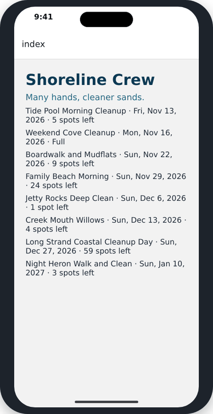
The first real request, in the web preview: every line went through the copied isCleanupEvent check, formatDate and getAvailability. Dates move with today.
Checks for understanding
Ask these out loud during the demos and the lab:
Give the rule for copy or rewrite, and one example of each. Answer: data code copies (types, guards, formatDate); browser code is rewritten (the address, the session, components).
Name a browser API tsc does not catch in phone code, and why. Answer: window, document, sessionStorage, localStorage: Expo's tsconfig loads the DOM types for the web preview.
Why a NetworkError? Answer: a phone's fetch fails with Expo's FetchError, not the browser's TypeError; one wrap in request() gives the same words everywhere.
When is EXPO_PUBLIC_API_URL read, and what follows from that? Answer: when Metro builds the bundle: restart with --clear after a change, write the full name with a dot, no secrets.
Workbook self-check, items Q1 to Q12 (learners do them at the end of the session or at home).
Answers: Q1C) The session kept in sessionStorage; Q2tsc prints nothing (Expo's settings load the DOM types); on a phone it fails while the app runs (the lesson: a TypeError and the red screen); Q3A) "dom" in lib; Q4C) The session read and saved with sessionStorage; Q5B) A FetchError, a plain Error whose message starts with "fetch failed:"; Q6A) So that a missing EXPO_PUBLIC_API_URL is not reported as "Could not reach the server"; Q7D) Write process.env.EXPO_PUBLIC_API_URL in full, with a dot; Q8B) The shoreline-api's address; Q9D) process.env.EXPO_PUBLIC_API_URL, from .env.local; Q10B) Add src/api/types.ts to the ignores in eslint.config.js; Q11C) "Could not reach the server. Check that shoreline-api is running, then try again."; Q12D) A second typescript entry under dependencies, with 7.0 left in devDependencies. Full set with explanations in the Answer Key.
Differentiation
Support: learners without the HQ follow the lesson's "Without the HQ" route (every file is on the page); give them the copy/rewrite table on one card. For anyone behind in the project, Steps 1, 2 and 4 are short: do those, and copy Step 3's client from the lesson page, or unzip lesson-03-end and read it against the lesson.
Stretch: the lesson's Exercise 4 (one cleanup with getEvent('e08'), then nope: the 404 wording) and the Bonus Challenge (a check-types script that compares types.ts with the API's file).
Closing
Exit ticket (3 questions, no notes, 4 minutes)
Learners answer in the workbook's Exit Ticket box or on a sticky note. Question 2's pile tells you whether Session 3's warm-up returns to "tsc is not proof".
Give your one-sentence rule for copy or rewrite, with one example of each. Answer: data code copies (types, guards, ApiError, formatDate); browser code is rewritten (the API address, the session, components and CSS).
Name one browser API the type checker accepts in shoreline-crew and how you find it instead. Answer: window, document, sessionStorage or localStorage; search copied files for window, document, Storage and import.meta.
You changed .env.local while Metro was running. What do you do, and why? Answer: stop Metro and run npx expo start --clear: the value was copied into the bundle when Metro built it.
Homework (about 2 to 3 hours)
Finish the lesson project: Step 6 (stop the API and read the message; port 4001 without and with --clear; npx expo lint and npx tsc --noEmit; the commit), the "For your own app" sketch, and anything of Steps 1 to 5 not done.
Lesson exercises: 1 (sort the HQ's other utilities), 2 (see the type checker miss window.location), 3 (show how many there are); Exercise 4 is a stretch.
The Quick Quiz on the lesson page (five questions; answers are in the Answer Key).
Lab 1.3: whatever of Tasks 1 to 3 is not done.
Journal: your one-sentence rule for copy or rewrite, and the surprise you would explain to a web teammate.
Before the Next Lesson: the web preview lists the upcoming cleanups and the work is committed; look at the HQ's EventCard (or picture a card with a title, a date and a spots line).
Bring list for Session 3
The course folder with shoreline-api, shoreline-crew (the first request committed, .env.local in place) and labs/; the API and Metro start without errors.
Session 3 (Lesson 2.1, View, Text and StyleSheet) turns today's temporary list into the Cleanups screen with a theme file, AppText and EventCard.
A phone with Expo Go, if they have one (or the web preview), the journal and the workbook.
If You Run Long or Short
Running long: what to protect and what to cut first
Protect: the project's Steps 1 to 5; demo 1's "what tsc did not report"; demo 2's destructuring step.
Cut first (saves 3m): the TypeScript 6.0 step (the lesson's version note, read at home).
Cut second (saves 4m): demo 2's export step: say "copied into the bundle" and show the lesson's sentence.
Cut third (saves 8m): lab Task 3 in the room (the linter run is two minutes at home).
Running short: what to add
Step 6 of the project together: stop the API (the error screen), then the port change without and with --clear.
Exercise 1 at the board: the HQ's other seven utilities, copy / rewrite / not needed, with a reason each.
Exercise 4 live: getEvent('e08'), then nope: "Nothing was found at this address. Check the link." and what "the link" means on a phone (Lesson 4.1).
Instructor Kit · Facilitator Guide
Session 3: View, Text and StyleSheet
How to teach Lesson 2.1: React Native's two building blocks and its style rules for web developers. Six CSS habits run against the finished app's type check (two loud, four silent, className included, which the lesson gets wrong), Jest with React Native's renderer showing what each Text really gets (no cascade, style arrays), a lab on three new components, and the lesson's Cleanups screen (theme files, AppText, EventCard) started in the room.
1 lesson3 hrs sessionLesson 2.1Session 3 of 26 · Part 1
How to Use This Guide
One lesson, the whole session: warm-up → frame and mental model → live demo (you type, they follow) → guided lab → a second demo → the rest of the lab → the lesson's own project, started in the room. The project's last two steps, the exercises, the quiz and the journal are homework.
Type, do not paste. Every command below was run to produce the output printed under it, in a learner's terminal (Node 24, Expo SDK 58, TypeScript 6.0) on a copy of the app exactly as it is at the end of Lesson 2.1, with Expo's generated types in place as a learner's first npx expo start writes them. Where the lesson shows the same command, the kit's output contains the lesson's card line for line, except one: see the className step, a lesson error the kit proved.
No phone was used to make this kit. The silent habits are shown with tsc (silence) and the web preview; what a phone does with them is said the way the lesson says it ("a phone should ignore it", from React Native's source for this version, not from a device). Jest with React Native's renderer shows the styles each Text really gets. If you have Expo Go on your own phone, Lesson 2.1's "On your phone" box (fonts, larger text) is a good two-minute show; until Lesson 5.1 a phone shows "Could not reach the server" instead of the cards.
The lesson page lesson_04.html is the reference: keep it open for its two tables (HTML → React Native, CSS → React Native), the two diagrams and the version note. Labs live in labs/module-03/l2_1-view-text-and-stylesheet/: starter/ and TASKS.md are handouts; solution/ is yours until the session is over.
Lesson codes (2.1) match the course site. Teal blocks are hands-on, amber blocks are watch-outs. This is Part 1, Session 3 of 9.
The #1 risk of Session 3: "why is nothing happening?" eats the project time
Most of today's mistakes do NOTHING: no error, no red screen, the style just does not apply. A learner who meets one alone in the project can lose twenty minutes. Before: the loud/silent table is on the board before anyone arrives. In the room: every silent habit is shown once in the demo and once in the lab, so in the project you can point at the board and ask the lesson's two questions: "is this style on the right kind of component? Is this a value React Native understands?" After: the journal prompt asks for three loud and three silent habits; read a few at the start of Session 4.
Before the Session
☐ Code to hand out:lesson-04-start.zip (= the end of Lesson 1.3) for anyone whose Session 2 code does not run, and lesson-04-end.zip for your demo copy (the course site's downloads; each has a README: npm ci in shoreline-crew, .env.example copied to .env.local). Learners keep working in their own shoreline-crew.
☐ Run the kit check once:python3 labs/check_labs.py module-03 from this kit's folder (6 runs, under a minute: the starter fails 8 of 9 tests and its type check names 2 errors, the solution passes its tests, type check, lint and a web export). It needs no API.
☐ Demo copy 1 (the app):lesson-04-end unzipped into a spare folder (not your own course folder), npm ci in shoreline-crew, .env.local from .env.example, ONE npx expo start stopped again (it writes expo-env.d.ts: without it you will NOT reproduce the className step), then npx tsc --noEmit prints nothing. The API running in its own terminal for the web preview.
☐ Demo copy 2 (Jest): a copy of labs/module-03/l2_1-view-text-and-stylesheet/solution inside your labs/module-03/ folder (so the shared install three folders up is found), with the kit's five demo files from the Answer Key (Demo files) added: src/colors.ts, src/AppText.tsx, src/Heading.tsx, src/Spots.tsx, src/styles.test.tsx.
☐ Projector: VS Code at a large font with AppText.tsx and EventCard.tsx side by side, a terminal at 18 pt or larger, the web preview (http://localhost:8081) in a browser at a phone size, lesson_04.html in a tab.
☐ Board, before learners arrive: the loud/silent table (below) with the right column covered; the tide-pool picture (a creek vs pools, a rock = View); the array [base, variant, screen's style] with "later wins, false skipped".
The loud/silent table (for the board)
You write
npx tsc --noEmit
What happens
fontSize: '16px'
TS2322
Sizes are numbers
border: '1px solid #e4dccb'
TS2345
No shorthands: borderWidth, borderColor
padding: '16px'
nothing
Web preview: 16 px; a phone should ignore it
color, fontSize in a View's style
nothing
A View draws no text and passes nothing on
lineHeight: 1.5
nothing
Lines 1.5 units tall: a sliver
<View className="card">
nothing (in your project)
Expo's web types allow it; a phone ignores it
Session 3 Agenda (3 hours)
Clock
Minutes
Segment
What happens
0:00
10
Warm-up: Lesson 1.3 retrieval
Three questions from memory: what was copied and what rewritten, what tsc misses in copied code, what a phone shows today. Check the Session 2 code runs.
0:10
15
2.1 Frame and mental model
View and Text, the two building blocks; styles are objects (numbers, no shorthands, no classes); density-independent pixels.
0:25
20
2.1 Live demo: loud and silent habits
Six CSS habits in the finished app, each followed by npx tsc --noEmit: two errors, four silences (className included).
0:45
20
2.1 Guided lab, Task 1
labs/module-03/l2_1-view-text-and-stylesheet/starter: the tide notice, one loud habit and three silent ones.
1:05
10
Break
Leave the loud/silent table and the tide-pool picture on the board.
1:15
15
2.1 Live demo: no cascade, style arrays
Jest with React Native's renderer prints what each Text really gets: the View's color stays on the View, a style array's later entry wins.
1:30
20
2.1 Guided lab, Tasks 2 and 3
A text component with its array in the wrong order (and TS7053), then a Text inside a Text.
1:50
60
2.1 Start the lesson project
Steps 1 to 4: theme files, AppText, EventCard, the Cleanups screen in the web preview. Steps 5 and 6 go home.
2:50
10
Wrap-up
Exit ticket (3 questions), homework, bring list for Session 4.
Total
180
Ends at 3:00.
In the room. The lesson page estimates 140 minutes for a learner working alone; the room has 150 after the warm-up, the break and the wrap-up. The concepts (Styles Are Objects, No Cascade, Style Arrays) are the demos and the lab; the project's Steps 1 to 4 (60 minutes at the lesson's own estimates) are done in the room so everyone leaves with the Cleanups screen.
Goes home (about 2 to 3 hours). Project Step 5 (break it on purpose: four habits, the web preview and tsc) and Step 6 (npx expo lint, npx tsc --noEmit, the commit), the "For your own app" journal task, anything of Steps 1 to 4 not finished; Hands-on Exercises 1 to 3 (4 is a stretch); the Quick Quiz; the journal entry (three loud and three silent habits); Lab 2.1's remaining tasks; Before the Next Lesson.
Protect, in this order: the project's Steps 1 to 4 (Session 4 builds on EventCard and the screen); the className and padding steps of demo 1 (the habits nobody would believe without seeing); demo 2's first two output lines (no cascade). Cut first: Exercise 3's guard in demo 1, then lab Task 3 in the room (send it home), then the AppText-layers step of demo 2 (the lab's Task 2 teaches it).
Warm-up
0:00
Retrieval: From the HQ to the Phone
10 min
Timing
6m
Three questions from memory, in pairs (workbook Warm-up box), then answers out loud
4m
Everyone's Session 2 code: API running, npx expo start, w: the plain list of titles shows. Anyone without it unzips lesson-04-start
Questions (answers in the Answer Key)
Name one piece of Shoreline Crew HQ's code that came over unchanged in Lesson 1.3, one that was rewritten, and the rule behind it.
You paste HQ code that reads window.location.origin into shoreline-crew. Does npx tsc --noEmit stop you?
With EXPO_PUBLIC_API_URL=http://localhost:4000, what does Expo Go on a phone show on the home screen today, and when does that change?
Watch-outs
W2 is the one to dwell on: "the type checker accepts it" will be said again today about four style habits. Make the link: tsc is a strong check, not a complete one.
Code that does not run (a missing .env.local, the API not started): unzip lesson-04-start, npm ci, .env.example → .env.local. Do not debug a Session 2 project now; the project's Step 4 replaces index.tsx anyway.
Lesson Plan
2.1
View, Text and StyleSheet
150 min
Objectives (from the lesson page)
Build screens from View and Text, and say which HTML habits they replace
Write styles with StyleSheet.create: camelCase names, numbers instead of px, no shorthands, and know which mistakes the type checker catches
Explain why styles do not cascade in React Native, and use the one place they do: a Text inside a Text
Combine styles with style arrays, where later entries win and false entries are skipped
Describe how fonts, font weights, line heights and the person's text size differ between Android, iOS and the web preview
Keep the app's colors and spacing in a theme file and build reusable, typed AppText and EventCard components
Timing in the room
15m
Frame: two building blocks, styles are objects, density-independent pixels
20m
Live demo 1: loud and silent habits (tsc after each)
20m
Guided lab: Task 1, the tide notice
15m
Live demo 2: what each Text really gets; tide pools; style arrays and AppText
20m
Guided lab: Tasks 2 and 3
60m
Start the lesson project: Steps 1 to 4
Mental model to say
Two building blocks: "A View is a box: it has a size, a background, a border, padding, and it lays out what is inside it. It cannot show text. A Text shows text, and only a Text can. Almost everything else is a specialized version of the two." Then walk the lesson's HTML table: div/article/section → View; p/span/strong/time → Text (a Text inside a Text for the inline parts); h1 to h3 → Text with accessibilityRole="header".
Then styles: "a style is a plain object". camelCase keys, numbers without units (density-independent pixels: 16 is the same physical size on a 2x and a 3x screen, which is what px really is in a phone browser), percentages as strings, no shorthands, no classes, no selectors, no CSS variables; colors are the same strings. Say why StyleSheet.create: names in the JSX, one place at the bottom like a CSS Module, a type check on every style.
For after the break, the lesson's own picture: "CSS is a creek: pour color in at the top and everything downstream gets wet. React Native is a beach of tide pools. A View is a rock: water poured on it runs off. Only a small pool inside a bigger pool shares its water."
Live demo 1: loud and silent habits (you type, they follow)
Learners watch (their own project changes in the project block); they write each prediction in the workbook's loud/silent table first.
The finished app is clean (1m). Open the app as it is at the end of Lesson 2.1 (the lesson's lesson-04-end download: Before the Session) in VS Code, AppText.tsx and EventCard.tsx side by side. Run the check once so the room sees silence first:
npx tsc --noEmit
(no output: tsc accepts it)
Every habit below is one edit, a save, and the same command; undo before the next.
Units in sizes: loud (3m). In AppText.tsx, change the base fontSize: 16 to fontSize: '16px'. "Will tsc catch it?"
npx tsc --noEmit
src/components/AppText.tsx:20:5 - error TS2322: Type 'string' is not assignable to type 'number'.
20 fontSize: '16px',
~~~~~~~~
Found 1 error in src/components/AppText.tsx:20
The kit's run contains every line of the lesson's shortened card. Read it from the top: file and line, the type expected (number), the tildes, where the rule comes from (React Native's own style types). The long Partial<Readonly<... line in the middle can be skipped.
A CSS shorthand: loud, and long (3m). In EventCard.tsx, replace borderWidth: 1, and borderColor: colors.border, with border: '1px solid #e4dccb',:
npx tsc --noEmit
src/components/EventCard.tsx:44:5 - error TS2345: Argument of type '{ … }' is not assignable to …
44 border: '1px solid #e4dccb',
~~~~~~
Found 1 error in src/components/EventCard.tsx:44
One of TypeScript's longest messages (the first line runs on for hundreds of characters). Teach the move: skip to the code frame, find the line number and the property, read the rest only if needed. The words that matter are 'border' does not exist in type.
Three silent ones (5m). Now three edits that tsc will not catch, one at a time, each followed by the check: padding: '16px' on the card; color: colors.error, in the card's style (Step 5 of the lesson); lineHeight: 1.5 in AppText's base. Ask before each: "loud or silent?"
npx tsc --noEmit # padding: '16px'
npx tsc --noEmit # color on the View
npx tsc --noEmit # lineHeight: 1.5
(no output: tsc accepts it) (all three)
Show the second and third in the web preview: nothing turns red; every line collapses. For padding: '16px' the web preview shows 16 pixels of padding, which is the point of the lesson's version note: the browser understands px, React Native's native layout code (which the course read for this version) treats it as not set. Say it with the lesson's hedge: "a phone should ignore it".
className: silent too, and why (5m). The lesson's Common Mistakes calls <View className="card"> a TS2322 error. Try it in the learner's project:
npx tsc --noEmit
(no output: tsc accepts it)
Silence. The reason is a file every learner has: expo-env.d.ts, written by the first npx expo start in Lesson 1.2. It loads Expo's types, and those add className to View and Text for react-native-web:
cat expo-env.d.ts | head -n 1 && grep -n -A 2 'interface ViewProps' node_modules/expo/types/react-native-web.d.ts
Without that file tsc does print the lesson's card word for word (the kit checked it), so the lesson's card is true only for a project that has never been started. On a phone className does nothing. Tell the room plainly: the lesson's table is one row off; className belongs with the silent habits. Undo.
Exercise 3's guard (2m). Last one, the good kind of error: in AppText add 'small' to the TextVariant union only:
npx tsc --noEmit
src/components/AppText.tsx:14:37 - error TS7053: Element implicitly has an 'any' type because expression of type 'TextVariant' can't be used to index type 'Readonly<{ base: { color: "#1f2a37"; fontSize: number; lineHeight: number; }; title: { fontSize: number; lineHeight: number; fontWeight: "bold"; }; heading: { color: "#0b3954"; fontSize: number; lineHeight: number; fontWeight: "600"; }; body: {
Found 1 error in src/components/AppText.tsx:14
The type and the styles cannot drift apart. Undo (learners do Exercise 3 at home), then npx expo lint and the check: lint prints only Expo's two env: lines, tsc nothing.
Three mistakes to expect, and how to coach each
A text style on a View. The color is set on the card or the banner box and "nothing happens". Coach: "Which component is the style on, and can that component draw text?" (Self-check Q6, quiz Q1.)
px and multipliers out of habit.'16px', lineHeight: 1.5, padding: '8px 16px'. Coach: "Is this a value React Native understands?" Sizes are numbers; Vertical and Horizontal replace two-value padding.
Trusting the web preview. It shows padding: '16px' and forgives a stray string in a View. Coach: "What would a phone do?" The rules on the lesson page apply even when the preview looks fine.
Guided lab
Folder: learners work in labs/module-03/l2_1-view-text-and-stylesheet/starter/ (task sheet labs/module-03/l2_1-view-text-and-stylesheet/TASKS.md); your reference is labs/module-03/l2_1-view-text-and-stylesheet/solution/. Three NEW components, not the course app: a tide notice translated too literally from HQ's CSS, a text component (CrewText, built like AppText) and a debris tally. The tests check the styles each Text really gets with toHaveStyle, which is what a phone draws. The shared lab install, no API, no phone.
Run it as shipped (3m).npm test and npm run typecheck on the projector; read the first failure and the first type error together:
● Task 1: the tide notice › the heading has the heading color and size
expect(instance).toHaveStyle()
● Task 1: the tide notice › the body text has a line height of 24
expect(instance).toHaveStyle()
● Task 1: the tide notice › the small print is 14 units tall, a number
expect(instance).toHaveStyle()
● Task 1: the tide notice › the box has 12 units of padding, a number
expect(instance).toHaveStyle()
src/CrewText.tsx:14:44 - error TS7053: Element implicitly has an 'any' type because expression of type 'CrewVariant' can't be used to index type 'Readonly<{ … }>'.
14 return <Text style={[style, styles.base, styles[variant]]} {...rest} />;
~~~~~~~~~~~~~~~
src/TideNotice.tsx:33:5 - error TS2322: Type 'string' is not assignable to type 'number'.
33 fontSize: '14px',
~~~~~~~~
Found 2 errors in 2 files.
Task 1 in pairs (15m, before the break): one loud habit (fontSize: '14px', the type error) and three silent ones (padding '12px', the heading's color and size on the box, lineHeight: 1.5). Circulate for learners who fix only what tsc named: "the tests still fail: which of the two questions did you not ask yet?"
Tasks 2 and 3 (after demo 2): CrewText's array is in the wrong order ([style, base, variant]: the screen loses) and its warning variant has no style (TS7053, the same guard as Exercise 3); then the tally becomes a Text inside a Text. Expected when all three are done:
PASS src/lab.test.tsx
✓ the heading has the heading color and size
✓ the body text has a line height of 24
✓ the small print is 14 units tall, a number
✓ the box has 12 units of padding, a number
✓ a label is small, muted and uppercase
✓ a warning is coral and bold
✓ the screen's own style wins over the variant
✓ one line, with only the number bold
✓ one bag is a bag
Tests: 9 passed, 9 total
Debrief (5m): "Which of the four Task 1 habits would the web preview have shown you?" (none clearly: it draws '12px'; the color is missing from the heading but nothing errors). "In Task 3, why does the number not need its own color?" (it inherits from the Text around it).
Fast finishers:npm run web and compare with the tests; the lesson's Exercise 1 (the HQ badge's CSS as one style object).
Live demo 2: no cascade and style arrays
What each Text really gets (6m). "No phone and no browser: Jest renders with React Native's own renderer, so it sees the styles a phone would get." In the copy of Lab 2.1's solution (Before the Session), the kit's src/styles.test.tsx renders the lesson's Heading (color on the View), the lesson's Spots (a style array, open and full) and the app's own AppText as the banner's title, and writes StyleSheet.flatten of each style to a file:
npm test -- src/styles.test.tsx
cat styles.txt
PASS src/styles.test.tsx
✓ what each component really gets
Tests: 1 passed, 1 total
Heading, the View: {"padding":16,"color":"#0b3954","fontSize":20}
Heading, the Text inside it: {}
Spots, open: {"fontSize":16,"color":"#1f2a37"}
Spots, full: {"fontSize":16,"color":"#b23a22","fontWeight":"bold"}
AppText title on the banner: {"color":"#ffffff","fontSize":32,"lineHeight":40,"fontWeight":"bold"}
Read the first two lines together: the View holds Deep Tide and 20; the Text inside it gets {}. That is "no cascade". Then the Spots lines: false skipped, then the later entry wins. Then the banner: the three layers of the lesson's diagram, merged.
Tide pools (3m). Draw the lesson's picture next to the output: CSS is a creek, React Native a beach of tide pools; a View is a rock, a Text a pool, a Text in a Text a small pool inside a bigger one. "When you want the same text style everywhere, you do not pour it at the top; you give every pool the same bucket: AppText."
The one inheritance, in the app (3m). Show the spots line in EventCard: one AppText, a Text inside it with only styles.strong. The number inherits the line's color, size and line height:
shoreline-crew/src/components/EventCard.tsx
{availability.kind === 'open' && (
<AppText>
{/* A Text inside a Text inherits its color and size: only the weight changes */}
<Text style={styles.strong}>{availability.spotsLeft}</Text> of {event.capacity} spots left
</AppText>
)}
{availability.kind === 'full' && (
<AppText style={styles.strong}>Full: new sign-ups join the waiting list</AppText>
)}
A full cleanup gets the whole line bold the other way: style={styles.strong} as the last entry of AppText's array.
AppText's three layers (3m). AppText is one line of JSX; the order of its array is the whole design:
shoreline-crew/src/components/AppText.tsx
exportfunction AppText({ variant = 'body', style, ...rest }: AppTextProps) {
// Later styles win: the base, then the variant, then whatever the screen passes inreturn <Text style={[styles.base, styles[variant], style]} {...rest} />;
}
"Who wins if the screen passes a color?" (the screen: it is last). Lab 2.1 Task 2 has the array in the wrong order.
Start the lesson project
The lesson project is The Cleanups Screen, six steps in shoreline-crew, API and Metro running. In the room: Steps 1 to 4 (60 minutes, the lesson's own estimates). Type the code from the lesson page; lesson-04-end is the finished version for anyone far behind.
Step 1 (10m): src/theme/colors.ts (brand values and roles) and spacing.ts. Point at the comment: "Lesson 2.5 adds a dark set with the same names."
Step 2 (15m): src/components/AppText.tsx. Walk the lesson's "What each part does": TextProps &, the destructured style, styles[variant] checked, body: {} on purpose.
Step 3 (20m): src/components/EventCard.tsx, beside HQ's EventCard if they have it. Same words and order; the badge, the site name and Show details come later (2.2, 2.4, 4.1).
Step 4 (15m): replace src/app/index.tsx; the loading logic is 1.3's unchanged. Check style vs contentContainerStyle with the class (self-check Q11).
Done in the room = the web preview shows the banner, "Upcoming cleanups" and one card per upcoming cleanup, with no hex codes left in index.tsx. Goes home: Step 5 (break it on purpose) and Step 6 (npx expo lint, npx tsc --noEmit, the commit). Expo Go on a phone shows the banner and heading and "Could not reach the server" instead of the cards until Lesson 5.1.
The first real screen, in the web preview: a View banner, AppText headings and one EventCard per upcoming cleanup, every color from src/theme/colors.ts. Dates move with today.
Checks for understanding
Ask these out loud during the demos and the lab:
What does a <View> become on Android and iOS, and what can it not do? Answer: an android.view.View / a UIView; it cannot show text.
Name one CSS habit tsc catches and one it does not. Answer: caught: fontSize: '16px', border; silent: padding: '16px', color on a View, lineHeight: 1.5, className (in a started project).
Where does React Native inherit text styles? Answer: only from a Text to a Text nested inside it.
In [styles.base, styles[variant], style], who wins? Answer: the last entry that sets the property: the screen's style.
Workbook self-check, items Q1 to Q12 (learners do them at the end of the session or at home).
Answers: Q1A) A Text inside a Text, with only fontWeight in its style; Q2C) Write fontSize: 16; Q3tsc prints nothing; the web preview shows 16 pixels of padding; a phone should ignore it (no padding); Q4D) Only styles.line applies: React Native skips the false entry; Q5B) {"color":"#ffffff","fontSize":32,"lineHeight":40,"fontWeight":"bold"}; Q6A) {}: nothing at all; it shows the default size 14 in the default color; Q7D) 28; Q8C) The type allows 'small', but styles has no small style yet; Q9B) Nothing: Expo's generated types add className for the web preview, and a phone ignores it; Q10A) The theme is TypeScript code: a property that does not exist is a type error; Q11style = the scrolling window (Sand fills the screen); contentContainerStyle = the content that scrolls (padding and gap travel with the cards); Q12C) A fixed height on a box that holds text. Full set with explanations in the Answer Key.
Differentiation
Support: the loud/silent table on one card; for the project, a learner who falls behind copies Steps 1 and 2 from the lesson page and types Steps 3 and 4 (the ones with the ideas), or unzips lesson-04-end and reads it against the lesson. In the lab, pair the person who missed demo 1 with someone who predicted well.
Stretch: the lesson's Exercise 4 (a Sunrise stripe on full cards via a style array; suggest adding a role such as colors.attention rather than using brand directly) and the Bonus Challenge (StyleSheet.flatten logged in AppText, then removed).
Closing
Exit ticket (3 questions, no notes, 4 minutes)
Learners answer in the workbook's Exit Ticket box or on a sticky note. Question 1's pile tells you whether Session 4's warm-up returns to the silent habits.
Name two CSS habits that are a type error in React Native and two that are silently ignored. Answer: loud: fontSize: '16px', border: ...; silent: padding: '16px', a text style on a View, lineHeight: 1.5, className (any two of each).
Where, and only where, does React Native inherit text styles? Answer: from a Text to a Text nested inside it.
Why does AppText put the screen's style last in its array? Answer: later entries win, so a screen can change what a variant sets (the banner's white title).
Homework (about 2 to 3 hours)
Finish the lesson project: Step 5 (break it on purpose, four habits, undo each) and Step 6 (npx expo lint and npx tsc --noEmit, then the commit), plus the "For your own app" task (three to six colors named twice, the first screen's text variants).
Lesson exercises: 1 (a CSS rule translated), 2 ("Meet at:" bold), 3 (the small variant and its TS7053); Exercise 4 is a stretch.
The Quick Quiz on the lesson page (five questions; answers are in the Answer Key).
Lab 2.1: whatever of Tasks 1 to 3 is not done.
Journal: three CSS habits React Native catches with a type error and three it ignores silently; which silent one you are most likely to write, and what you will look for.
Before the Next Lesson: the Cleanups screen shows its cards and the work is committed; notice the rows and columns of one app you use every day.
Bring list for Session 4
The course folder with shoreline-api, shoreline-crew (the Cleanups screen committed) and labs/; the API and Metro start without errors.
Session 4 (Lesson 2.2, Flexbox the Native Way) puts the card's details side by side, adds a status badge row and a Screen component, and ends with Checkpoint 1 (Modules 1 and 2 so far, 30 minutes): review this workbook's self-check.
A phone with Expo Go, if they have one (or the web preview), the journal and the workbook.
If You Run Long or Short
Running long: what to protect and what to cut first
Protect: the project's Steps 1 to 4; demo 1's className and padding steps; demo 2's first two output lines.
Cut first (saves 2m): Exercise 3's guard in demo 1 (it is homework).
Cut second (saves 8m): lab Task 3 in the room: send it home with the tally's test.
Cut third (saves 6m): demo 2's AppText-layers and EventCard steps: Task 2 and the project's Step 3 teach them.
Running short: what to add
Step 5 of the project together: the four habits on the projector, each in the web preview and with tsc.
Exercise 1 at the board: the HQ badge's CSS as one object, then sort its properties into box (View) and letters (Text).
Exercise 4 live: a style array on the card's View for full cleanups, and why the words stay on the card (color alone is not enough).
Instructor Kit · Facilitator Guide
Session 4: Flexbox the Native Way
How to teach the fourth session of React Native & Expo: Build and Ship a Mobile App: React Native's flexbox from the four defaults that differ from CSS, the two axes and the badge that stretches into a bar, the type checker naming four layout mistakes in the course app, a lab on a beach's info panel and the start of Cards with Structure, where the web preview disagrees with a phone; then Checkpoint 1 on Modules 1 and 2 (a type guard, a web card rebuilt for a phone, its layout) with a five-row rubric.
1 lesson3 hrs sessionLesson 2.2Checkpoint 1Session 4 of 26 · Part 1
How to Use This Guide
Same rhythm as every session: frame (one mental model) → live demo (you type, they follow) → guided lab (new practice, never the lesson's own project) → start the lesson's own project. The rest of the project, the exercises, the quiz and the journal are homework. Session 4 adds Checkpoint 1 (30 minutes, Modules 1 and 2 so far) and its debrief after the project.
Type, do not paste. Every command below was run to produce the output printed under it, in a learner's terminal on a copy of the app exactly as a learner has it after Lesson 2.2 (Expo SDK 58, TypeScript 6.0). The two type errors the lesson shows are the lesson's cards, line for line; the kit cuts the same long The expected type comes from … dump the lesson cuts. Ask for a prediction before every run.
Layout needs eyes, and no phone was used to make this kit. Jest renders components without measuring them, so the labs read the flexbox styles you give each box, and the web preview on the projector shows what they do. The numbers in this guide (a badge 340 wide instead of 93, a screen View 48 tall instead of 780) are the lesson's own web-preview measurements. What a phone does differently (a Text in a row that does not shrink) is said the way the lesson says it: "should", from Yoga's source. Have your own phone with Expo Go ready: until Lesson 5.1 it shows the layout without data.
The lesson is the reference: keep lesson_05.html open for the defaults table, the axes picture, the patterns table and the preview-versus-phone table. Labs live in labs/module-04/: starter/ folders and TASKS.md are handouts; solution/ folders are yours until the session is over (the checkpoint's until the debrief).
The #1 risk of Session 4: the checkpoint eats the lesson project, or the other way round
Lesson 2.2 runs 140 minutes alone; the room has 80 for it, then 30 for the checkpoint and 20 for its debrief. Hold the clock: the project start ends at 1:45 wherever the room is (Steps 1 to 3 can finish at home), and the checkpoint starts at 2:00 sharp, because a checkpoint that shrinks to 15 minutes measures typing speed. If the demo runs long, cut the "table that must be complete" step first (it is in the self-check).
Before the Session
☐ Run the kit check once:python3 labs/check_labs.py module-04 from this kit's folder (12 runs, under two minutes, no API needed: both starters fail as shipped, both solutions pass their tests, type checks and lint, and the lab's solution exports for the web).
☐ Projector machine: the course folder with the stage after Lesson 2.2 (lesson-05-end from the course downloads) for the demo, the API in terminal 1, Metro in terminal 2 with the web preview open at a phone size (the browser's device toolbar, 390 wide); VS Code at a large font; lesson_05.html in a tab. A learner who arrives without Lesson 2.1's code unzips lesson-05-start (the code after Lesson 2.1) and runs npm install in shoreline-crew.
☐ Board, before learners arrive: the four defaults that differ (column · flexShrink 0 · alignContent flex-start · flex = one number); a column and a row with their two arrows (main axis, cross axis); the reflex in a box: "text in a row gets flex: 1 or flexShrink: 1"; the checkpoint's start time.
☐ Checkpoint: share labs/module-04/checkpoint-1/TASKS.md and the starter (no solution), five rubric rows on a sticky note per learner (or the guide's rubric printed), and decide how results come back: each learner writes their last Tests: line and the two sentences on the workbook's checkpoint page.
☐ Print or share: the workbook (the checkpoint page included) and sticky notes for the exit ticket.
Session 4 Agenda (3 hours)
Clock
Minutes
Segment
What happens
0:00
10
Warm-up: Lesson 2.1 retrieval
Three questions from memory: a '16px' padding, what inherits on a phone, which style in an array wins.
0:10
10
2.2 Frame and mental model
Every View is a flex column; the four defaults that differ; the crew lining up on the beach; main and cross axes.
0:20
20
2.2 Live demo
Rows, stretch and the badge bar, the header row, flex as a number: the type checker on four layout mistakes in the course app.
0:40
20
2.2 Guided lab
labs/module-04/l2_2-flexbox-the-native-way/starter: Tasks 1 and 2 in pairs (a header row, label and value).
1:00
10
Break
Leave the four defaults and the two axes on the board.
1:10
35
2.2 Start the lesson project
Steps 1 to 3: the Screen component, Badge and StatusBadge, the card's rows.
1:45
15
2.2 Break it on purpose
Step 5 on the projector: the room predicts each change before you save it; where the web preview disagrees.
2:00
30
Checkpoint 1: Modules 1 and 2 so far
labs/module-04/checkpoint-1/starter: on your own, open book: a type guard, a web card rebuilt for a phone, its layout.
2:30
20
Checkpoint debrief and review
The model answer part by part, the rubric's five rows, self-check Q7 to Q12 together.
2:50
10
Wrap-up
Exit ticket (3 questions), homework, bring list for Session 5.
Total
180
Ends at 3:00.
In the room. The lesson page estimates 140 minutes for a learner working alone; after the warm-up, the break, the checkpoint with its debrief and the wrap-up the room has 100. It keeps the lesson's full shape (model, demo, lab, project start) and turns Step 5 (break it on purpose) into a whole-room prediction game, because predicting a layout before it moves is the skill.
Goes home (about 2 to 3 hours). The lesson project's Steps 4 to 6 (the header row with the count, Step 5's five breaks on their own screen, the two checks and the commit) and whatever of Steps 1 to 3 the room did not finish; Lab 2.2 Task 3 and its stretch; Hands-on Exercises 1 to 3 (Exercise 4, the date tile, is a stretch); the Quick Quiz; the journal (the four defaults from memory); any checkpoint part not finished in class, until Tests: 5 passed, 5 total and two silent checks.
Protect, in this order: the full 30 minutes of the checkpoint; the "badge that became a bar" and "where the web preview disagrees" demo steps; Steps 1 to 3 of the project started in the room. Cut first: the "table that must be complete" demo step, then the lab's Task 2 (it goes home), then the break-it game (learners do Step 5 at home).
Opening Segment
0:00
Warm-up: Lesson 2.1 Retrieval
10 min
Timing
5m
Three questions from memory, in the workbook's warm-up box
5m
Reveal and connect each answer to today
The three questions, and what to say
padding: '16px' type-checks. What does a phone do with it? Lesson 2.1: React Native 0.88's types accept any string there, the web preview obeys it, and a phone should ignore it (the lesson read React Native's source; a phone was not run). Numbers without units: padding: 16. Today: flex: '1 1 0%' is the opposite case: a type error.
What inherits text styles on a phone? Only a Text inside a Text; a View passes nothing to its Texts (Lesson 2.1's tide pools). Today: layout does not inherit either: every View is its own flex column.
In [styles.base, styles[variant], style], which entry wins? The last; false, null and undefined are skipped. Today: Badge uses two such arrays, one for the box and one for the word.
Watch-outs
Learners who did not finish Lesson 2.1's project: unzip lesson-05-start now (it is the code after Lesson 2.1), npm install in shoreline-crew, and they start Step 1 with everyone. Their own version goes home.
Lesson Plans
2.2
Flexbox the Native Way
100 min
Objectives (from the lesson page)
Explain how React Native's flexbox differs from CSS: every View is a flex column, flex is a single number, nothing shrinks by default, and there is no grid
Line things up along the main and cross axes with flexDirection, justifyContent, alignItems, alignSelf, flexWrap and gap
Size boxes with flex, fixed widths and percentages, and keep text inside a row from running off the screen
Build the common phone layouts: a header row, label and value side by side, a wrapping row of badges, a centered message, a bar pinned to the bottom
Make a screen fill the phone with flex: 1, and say where the web preview's layout can differ from a phone's
Timing in the room
10m
Frame: every View is a flex column; the four defaults that differ; the crew on the beach; main and cross axes
20m
Live demo: column and row, the badge bar, the header row, four layout mistakes the type checker names, where the preview disagrees
20m
Guided lab: l2_2-flexbox-the-native-way/starter, Tasks 1 and 2 in pairs
35m
Start the lesson project: Steps 1 to 3 (after the break)
15m
Break it on purpose: Step 5 as a prediction game
Mental model to say
From the lesson: "Picture the volunteers gathering at the meeting point. Unless someone gives directions, they line up single file down the beach, away from the water: that is the default column. Say 'row' and they stand shoulder to shoulder along the tide line instead. justifyContent is where they stand along the line. alignItems is how each person stands across it, and the default, 'stretch', has everyone reaching all the way from the dunes to the water. And because nobody likes being squeezed, nobody shrinks to make room unless you ask: if the line is too long for the beach, the last people end up standing in the sea."
Then the map from the lesson: Yoga lays out every screen on Android and iOS with the same engine; the web preview uses the browser's flexbox through react-native-web, almost but not always the same. Sizes come three ways (a number, a percentage string, flex: 1 for "the rest") or from the content. No grid, no floats, position: 'absolute' only for small overlays. Write text in a row gets flex: 1 or flexShrink: 1 in a box on the board.
Live demo (you type, they follow)
On the projector, the course app as it is after Lesson 2.2 (lesson-05-end), web preview at 390 wide. Learners watch and predict; they type in the lab and the project. Undo every change before the next step.
Every View is a column (3m). Open the lesson's Supplies snippet (Every View Is a Flex Column) in a scratch screen of the web preview, or just draw it: three Texts with no layout styles stack top to bottom. Add flexDirection: 'row' and save. "One line changed the main axis. What do you expect justifyContent to do now?" Write the four defaults that differ on the board: column, flexShrink 0, alignContent flex-start, flex is one number.
The badge that became a bar (3m). In the stage app (the finished Lesson 2.2 code on the projector), put a <StatusBadge status="scheduled" /> straight into the card, under the title, outside the badge row. Ask first: "How wide will it be?" In the web preview it is a bar across the card: the lesson measured 340 units instead of 93. Then alignSelf: 'flex-start' on the badge (or back into the row). Undo.
The header row (3m). Show the lesson's header row and say the two jobs out loud: justifyContent along the main axis (space-between pushes the count to the end), alignItems across it (center lines the two up through their middles). The heading gets flexShrink: 1, not flex: 1: ask why (self-check Q6).
Swapped axes: the type checker knows the values (3m). Make the classic mistake in the same style: alignItems: 'space-between'. Prediction first: "will anything complain?"
npx tsc --noEmit
src/app/index.tsx:81:5 - error TS2322: Type '"space-between"' is not assignable to type '"center" | "flex-start" | "flex-end" | "stretch" | "baseline" | undefined'.
81 alignItems: 'space-between',
~~~~~~~~~~
node_modules/react-native/types_generated/Libraries/StyleSheet/StyleSheetTypes.d.ts:471:3
471 alignItems?: "flex-start" | "flex-end" | "center" | "stretch" | "baseline" | undefined;
~~~~~~~~~~
Found 1 error in src/app/index.tsx:81
The message lists every value alignItems accepts: space-between is justifyContent's. A wrong axis with a VALID value (justifyContent: 'center' meaning up-and-down) gives no error at all: only looking at the screen tells you. Undo.
Flex is a number, and there is no grid (4m). The lesson's two Common Mistakes, typed into the course app: flex: '1 1 0%' in Screen.tsx, then (undone) display: 'grid' instead of flexDirection: 'row' in EventCard's badges style. The kit's runs equal the lesson's cards, line for line (the cards cut the long type dump; so does this guide):
npx tsc --noEmit
src/components/Screen.tsx:28:5 - error TS2322: Type 'string' is not assignable to type 'number'.
28 flex: '1 1 0%', // fill the space the navigator gives the screen, not just the content's height
~~~~
node_modules/react-native/types_generated/Libraries/StyleSheet/StyleSheetTypes.d.ts:514:3
514 flex?: number | undefined;
~~~~
Found 1 error in src/components/Screen.tsx:28
src/components/EventCard.tsx:76:5 - error TS2322: Type '"grid"' is not assignable to type '"none" | "flex" | "contents" | undefined'.
76 display: 'grid',
~~~~~~~
node_modules/react-native/types_generated/Libraries/StyleSheet/StyleSheetTypes.d.ts:68:3
68 display?: "none" | "flex" | "contents" | undefined;
~~~~~~~
Found 1 error in src/components/EventCard.tsx:76
Read them in the 2.1 way: find the line and the property, skip the type dump. Then: flex: 1; grids are rows of flex: 1 boxes or lists with columns (Module 3).
A table that must be complete (2m). StatusBadge's table is copied from the HQ (plain data, Lesson 1.3's rule). Delete the Draft line, and give BadgeTone a sixth tone 'warning' without its two styles:
npx tsc --noEmit
src/components/StatusBadge.tsx:5:7 - error TS2741: Property 'draft' is missing in type '{ scheduled: { label: string; tone: "info"; }; completed: { label: string; tone: "success"; }; cancelled: { label: string; tone: "danger"; }; }' but required in type 'Record<EventStatus, { label: string; tone: BadgeTone; }>'.
Found 1 error in src/components/StatusBadge.tsx:5
src/components/Badge.tsx:16:33 - error TS7053: Element implicitly has an 'any' type because expression of type 'BadgeTone' can't be used to index type 'Readonly<{ info: { backgroundColor: "#bfe3df"; }; success: { backgroundColor: "#2d6a4f"; }; neutral: { borderWidth: number; borderColor: "#5b6573"; }; danger: { backgroundColor: "#b23a22"; }; attention: { ...; }; }>'.
src/components/Badge.tsx:17:38 - error TS7053: Element implicitly has an 'any' type because expression of type 'BadgeTone' can't be used to index type 'Readonly<{ info: { color: "#1f2a37"; }; success: { color: "#ffffff"; }; neutral: { color: "#1f2a37"; }; danger: { color: "#ffffff"; }; attention: { color: "#1f2a37"; }; }>'.
Found 2 errors in the same file, starting at: src/components/Badge.tsx:16
Record<EventStatus, …> wants every status; boxes[tone] wants a style for every tone. Undo both. Then the two checks the project's AGENTS.md asks for: npx expo lint prints only Expo's two env: lines, npx tsc --noEmit nothing.
Where the web preview disagrees (2m). Say it plainly with the lesson's table (Where the Web Preview Disagrees): react-native-web gives Views React Native's defaults, but a Text keeps the browser's flex-shrink: 1. In a row, a long value without flex: 1 wraps in the preview (and squeezes the label to about 35), while a phone's Yoga should keep its width and run past the card. The course could not run a phone while it was checked: the lesson measured the preview and reasoned about the phone from Yoga's source. The habit: text in a row gets flex: 1 or flexShrink: 1, whatever the preview shows.
Three mistakes to expect, and how to coach each
Axes swapped after switching to a row.justifyContent: 'center' now centers sideways. Coach: "Which way does the main axis point now? justifyContent follows the arrow." (The board's two arrows; the lesson's quiz Q5.)
Text in a row with no flex. The preview looks right, so it stays. Coach: "Who shares this row with the text? Then flex: 1 or flexShrink: 1, before you look." (Self-check Q4 and Q5.)
A screen or wrapper View without flex: 1. The page color stops under the content, a centered message sits at the top, a ScrollView will not scroll. Coach: "How tall is this View? As tall as its content: give it flex: 1, or use Screen." (The lesson's quiz Q4.)
Guided lab
Folder: learners work in labs/module-04/l2_2-flexbox-the-native-way/starter/ (task sheet labs/module-04/l2_2-flexbox-the-native-way/TASKS.md); your reference is labs/module-04/l2_2-flexbox-the-native-way/solution/. New material, not the lesson's EventCard: an info panel for one of the crew's beaches (from a real GET /api/sites answer in fixtures/), with a header row, a label/value row and a wrapping row of tags. Jest cannot measure a layout, so the tests read the flexbox styles of each box (toHaveStyle); npm run web shows what they do. Uses the shared lab install: nothing to install.
Run it as shipped (2m).npm test in the lab's starter: all five tests fail (the panel test needs Task 3's function). Read the style failures together: a toHaveStyle failure lists what was expected and not found.
And npm run typecheck on the starter prints nothing after its two > lines: no layout mistake here is a type error.
Tasks 1 and 2 in pairs (14m): the header row (which property for the row, which for the far end, which for the middles; the name gets flexShrink 1 or flex 1?), then the label width 88 and the value's flex 1. Circulate for learners who put justifyContent: 'center' on the header (the axes again) and for flex: 1 on the name (the town sticks to it: no free space left for space-between).
Debrief (4m): "Would the web preview have shown Task 2's bug?" (maybe not: a Text shrinks there like CSS). "Why can Jest not tell you the badge is too wide?" (it renders without measuring: it only sees the styles).
Expected when all three tasks are done (Task 3 goes home if the room runs short): the solution's run ends
PASS src/lab.test.tsx
✓ Task 1: the header row puts the town at the far end, lined up with the name
✓ Task 2: the label keeps 88 and the value takes the rest of the row
✓ Task 3: the tags come from the real beaches
✓ Task 3: the tags sit in a wrapping row
✓ the panel shows all three parts
Tests: 5 passed, 5 total
and npx expo export --platform web bundles it (Exported: dist). Fast finishers: Task 3 and the stretch (a "Full" pill straight in the card, fixed two ways).
Start the lesson project
The lesson project is Cards with Structure, six steps. In the room, Steps 1 to 3 (35 minutes, after the break): learners type, you circulate.
Step 1 (10m): src/components/Screen.tsx and <Screen scroll> in index.tsx. Done = the screen looks exactly as before. Ask: "which branch of Screen needs flex: 1 most, and why?" (the View one: a ScrollView already grows).
Step 2 (12m): Badge (five tones, two style arrays) and StatusBadge (the HQ's table, copied). Point at boxes[tone]: the demo showed what tsc says about a tone without its style.
Step 3 (13m): EventCard rewritten with the badge row and the Detail rows. Done in the room = the first card shows Scheduled and Today, and every card a column of labels with values beside them, in the web preview.
Goes home: Step 4 (the header row with the count), Step 5 (the five breaks on their own screen), Step 6 (the two checks and the commit). This is the code Session 5 builds on: the finished version is lesson-05-end in the course downloads.
The card's new piece, the label-and-value pattern, as the stage has it:
shoreline-crew/src/components/EventCard.tsx
// A label and its value side by side: the label keeps its width, the value takes the restfunction Detail({ label, children }: DetailProps) {
return (
<View style={styles.detail}>
<AppText variant="muted" style={styles.detailLabel}>
{label}
</AppText>
<AppText style={styles.detailValue}>{children}</AppText>
</View>
);
}
Rows inside a column, in the web preview: the header row pushes the count to the right edge, and each card has a badge row and two label/value rows. The Today badge appears on the cleanup that happens today; dates move with today.
Break it on purpose (Step 5 as a prediction game)
On the projector, one change at a time: say the change, the room predicts (fingers: 1 = nothing moves, 2 = it moves, then say how), save, look, undo. The numbers are the lesson's web-preview measurements; learners repeat the five on their own screen at home.
Delete flexDirection: 'row', and flexWrap: 'wrap', in the badges style: full-width bars, one under the other (324 instead of 102: the column's stretch).
Put them back, delete only flexDirection: 'row',: the badges stack but stay narrow: alignContent: 'flex-start' with wrapping on.
Delete width: 72, in detailLabel: the values no longer line up (87 and 102).
Delete justifyContent: 'space-between', in sectionHeader: the count moves next to the heading, 8 away (the gap).
Delete flex: 1, in detailValue: in the preview almost nothing changes. Ask: "so is it safe to delete?" No: the preview disagrees with a phone here (the lesson's table). The phone side is the lesson's reasoning from Yoga's source: check it on your own phone after Lesson 5.1 brings data.
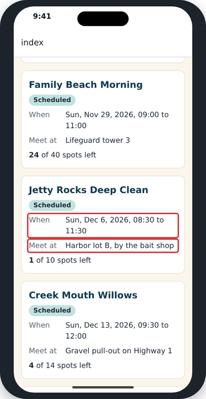
Label/value rows: the label keeps its width of 72, the value has flex: 1 and takes the rest of the row, wrapping inside its own column when it is long.
Checks for understanding
Ask these out loud during the demo, the lab and the game:
What are the four defaults that differ from CSS? Answer: flexDirection column, flexShrink 0, alignContent flex-start, flex is one number.
In a row, which property puts the count at the far end, and which lines both up through their middles? Answer: justifyContent: 'space-between'; alignItems: 'center'.
Why does a badge placed straight in a card become a bar? Answer: the card is a column and alignItems defaults to stretch.
A screen's background stops halfway down. What is missing? Answer: flex: 1 on the outermost View (or Screen).
Workbook self-check, items Q1 to Q6 (learners do them at home, or in the debrief if time allows).
Answers: Q1A) A bar of color as wide as its parent; Q2error TS2322: Type 'string' is not assignable to type 'number'. Write flex: 1 (or flexGrow, flexShrink and flexBasis as three properties); Q3C) Move space-between to justifyContent and keep alignItems: 'center'; Q4B) So it takes the space the label leaves and wraps inside it, instead of running past the card on a phone; Q5D) Nothing yet: the web preview lets a Text shrink like CSS, while a phone's Yoga does not; Q6B) With flex: 1 the heading would take all the free space, leaving space-between nothing to push the count with. Full set with explanations in the Answer Key.
Differentiation
Support: a card with the two arrows and four lines: "row? justifyContent goes across · alignItems goes the other way · text in a row: flex 1 or flexShrink 1 · screens: flex 1". Pair learners who confuse the axes with someone who draws them before typing.
Stretch: the lesson's Exercise 4 (the date tile, with its large-text weakness) and the Bonus Challenge (onLayout logging, then compare the preview's widths with a phone's after Lesson 5.1); Lab 2.2's stretch.
Checkpoint 1
CP1
Checkpoint 1: Modules 1 and 2 So Far
30 + 20 min
Timing
2m
Hand out, read TASKS.md together; open book, own screen only
28m
Work alone: Parts A to C in checkpoint-1/starter, then the two sentences
20m
Debrief: the model answer part by part, the rubric, self-check Q7 to Q12
What it checks and how to run it
Folder:labs/module-04/checkpoint-1/starter/, task sheet labs/module-04/checkpoint-1/TASKS.md; the model answer is labs/module-04/checkpoint-1/solution/ (the Answer Key prints it). One small piece of a phone app built with Lessons 1.1 to 2.2: a beach card for the crew's six beaches, from the same real GET /api/sites answer as the lab.
Part A (Lesson 1.3): the type guard isSite(value: unknown): value is Site. Part B (1.1, 2.1): every word in a Text, the name as the heading, onPress not onClick, the saved look as a style array. Part C (2.2): the header row, the label/value row, the badge only as wide as its words. Checks (1.2):npm test, npm run typecheck, npm run lint, and two sentences.
As shipped, all five tests fail and both checks are silent: the starter's mistakes are the kind tsc and the linter cannot see (this is the point of the two sentences):
● A: the guard accepts every beach the API sent
TODO A: check the value
● A: the guard refuses what is not a beach
TODO A: check the value
● B: the card shows the beach, every word in a Text, the name as its heading
Invariant Violation: Text strings must be rendered within a <Text> component. Detected attempt to render "Parking" string within a <View> component.
● B: a finger saves the beach, and the button changes its look
Invariant Violation: Text strings must be rendered within a <Text> component. Detected attempt to render "Parking" string within a <View> component.
● C: the header row, the parking row and the badge are laid out for a phone
Invariant Violation: Text strings must be rendered within a <Text> component. Detected attempt to render "Parking" string within a <View> component.
While they work: circulate with the rubric and note one row per learner you see clearly (row 5 is the easiest to see: who runs the checks after each change?). Answer questions about the task, not about the code. At 26 minutes everyone runs npm test once more and writes the Tests: line on the workbook's checkpoint page.
Collect the checkpoint page (or a photo of it) with the Tests: line and the two sentences; score the five rows after class and hand them back in Session 5's warm-up.
Rubric (5 rows, 0 to 2 each, 10 points)
Criterion
Meets (2)
Partly (1)
Not yet (0)
1. Native building blocks (1.1, 2.1)
Every word in a Text, the name is the heading, the button works with onPress (tests B pass)
Renders, but the heading role or the press is missing
Still a red screen: loose text, or onClick
2. Styles (2.1)
Only StyleSheet styles, numbers without units; the saved look is a style array [styles.button, saved && styles.buttonSaved]
Works, but with an inline object or a duplicated style instead of the array
No saved look, or CSS strings
3. Layout (2.2)
Header row (row, space-between, center, name flexShrink 1), label width 72 + value flex 1, badge alignSelf flex-start (test C passes)
Two of the three
One or none
4. Shared code (1.3)
isSite checks every field and the four terrains, no any or as; both tests A pass
Checks most fields, or uses a cast inside
Still the TODO, or return true
5. Checks and reasons (1.2, 2.2)
npm test 5 passed, typecheck and lint print nothing; the two sentences name tsc's blind spot (loose text, onClick) and the preview's (text in a row)
All green but the sentences are missing or vague
Never ran the checks
Reading the score: 7 to 10 = on track for Part 1; 4 to 6 = reread the lesson section of the lowest row before Session 5 and redo that part; 0 to 3 = a conversation, and a catch-up plan with the matching labs (1.1, 2.1, 2.2). The checkpoint is formative: it does not count toward the Part 1 assessment (Session 9).
Debrief (20 minutes)
Part A (5m): show the model guard (Answer Key). Ask who used as: it compiles and checks nothing. Connect to the app: Lesson 1.3's client does exactly this for every API answer.
Parts B and C (8m): the model card side by side with the starter. For each mistake ask "which tool would have found it?": loose text and onClick only by running it; the layout only by looking (and the preview may hide the value without flex: 1).
Self-check Q7 to Q12 (7m): together, fingers up for A to D; the two short answers aloud.
Answers: Q7A) A status the API can send that the badge would have no label or tone for; Q8D) A string ("Parking") sits straight inside a View, outside a Text; Q9C) Nothing: tsc and the linter are silent, and a finger's press does nothing; Q10response.json() gives a value nothing has checked; a guard checks it at run time and narrows the type, while as only tells TypeScript to trust it; Q11B) #b23a22: in a style array, later entries win; Q12D) Its own color: on a phone only a Text inside a Text inherits text styles. Full set with explanations in the Answer Key.
Closing
Exit ticket (3 questions, no notes, 4 minutes)
Learners answer in the workbook's Exit Ticket box or on a sticky note. Question 2's pile tells you whether Session 5 needs a minute on the preview-versus-phone habit before images arrive.
Name two of the four flexbox defaults that differ from CSS, and what each one does on a screen. Answer: any two of: column (children stack top to bottom), flexShrink 0 (nothing shrinks, long text can run off), alignContent flex-start (wrapped lines stay at the start), flex is one number (a share of the free space).
A long value in a label/value row looks fine in the web preview without flex: 1. Why add it anyway? Answer: the preview lets a Text shrink like CSS; on a phone it keeps its width (flexShrink 0) and can run past the card.
Which two styles make a header row with a heading on the left and a count on the right, both centered? Answer: justifyContent: 'space-between' and alignItems: 'center' (on a row; the heading gets flexShrink: 1).
Homework (about 2 to 3 hours)
Finish the lesson project. Steps 4 to 6 (the header row with the count, the five breaks on your own screen, npx expo lint and npx tsc --noEmit, the commit) and the completion checklist.
Lesson exercises: 1 (SpotsBar with theme colors), 2 (We bring), 3 (a centered loading state); 4 (the date tile) is a stretch.
The Quick Quiz on the lesson page (five questions; answers in the Answer Key).
Lab 2.2: Task 3 (and Tasks 1 and 2 if unfinished) and the stretch.
Checkpoint 1: any part whose test still fails, until Tests: 5 passed, 5 total and two silent checks; then reread the lesson section of your lowest rubric row.
Journal: the four defaults from memory, each with one thing on the Cleanups screen that would look different without its override; which break surprised you most.
Before the Next Lesson (from 2.2): the badges and label/value rows in the web preview, committed; look at the top and bottom edges of a few apps on your phone: what sits behind the status bar and the home indicator?
Bring list for Session 5
The course folder with shoreline-crew at the end of Lesson 2.2 (or lesson-05-end from the course downloads), the API in its own terminal.
Session 5 (Lesson 2.3) adds pictures, icons, the Outfit font and safe areas: the Screen component from today is where the safe areas go. npx expo install needs the network.
A phone with Expo Go if they have one (notches and home indicators are the point of 2.3), the workbook with the checkpoint page, the journal.
If You Run Long or Short
Running long: what to protect and what to cut first
Protect: the checkpoint's 30 minutes; the badge-bar and preview-disagrees demo steps; Steps 1 to 3 started in the room.
Cut first (saves 2m): the "table that must be complete" demo step (it is self-check Q7).
Cut second (saves 8m): the lab's Task 2: it goes home with Task 3.
Cut third (saves 15m): the break-it game: learners do Step 5 at home; give the debrief 15 minutes instead of 20.
Running short: what to add
Lesson 2.2's Exercise 2 together (We bring as neutral badges), then alignItems: 'center' on that row: why do the label and the badges change height?
The lesson's patterns snippet: build CenteredMessage without flex: 1 first, then with it.
Exercise 3 live: the centered loading state and flexGrow: 1 on the content strip.
Instructor Kit · Facilitator Guide
Session 5: Images, Icons, Fonts and Safe Areas
How to teach Lesson 2.3: Shoreline Crew stops looking like a draft. Beach pictures with expo-image that have a size before they arrive and a description for screen readers, an icon table that gives every platform its own name, the crew's Outfit headings loaded behind the splash screen, a Screen that keeps content above the notch and the home indicator, and an app icon and splash screen. Three mistakes in it fail without a word; the session makes each one loud, with a test, with tsc, or with a typed file.
1 lesson3 hrs sessionLesson 2.3Session 5 of 26 · Part 1
How to Use This Guide
Session rhythm: warm-up (retrieval on Session 4) → frame and mental models → two live demos, each followed by a guided lab (new practice on the lesson's ideas, never the lesson's own project) → start the lesson project together. The project's last two steps, the exercises, the quiz and the journal go home.
Type, do not paste. Every command below was run to produce the output printed under it, in a learner's terminal (Node 24): the type errors on a copy of the app exactly as a learner has it at the end of Lesson 2.3, the safe-area demo in Jest with the lesson's own Screen. Where the lesson shows the same command, the kit's output is the lesson's card, word for word. Ask for a prediction before every run.
No phone was used to make this kit. Pictures, icons and fonts show in the web preview; safe areas do not (a desktop browser has no notch, so every inset is 0), which is why the demo hands Screen a phone's numbers in Jest and the lesson's pictures are simulated. Expo Go on a phone shows the fonts, the icons (SF Symbols on an iPhone, Material on Android) and the safe areas, and the site pictures from Lesson 5.1 on; the app icon and the native splash screen only appear in your own build (Module 9). Have your own phone with Expo Go ready to show the safe areas.
The lesson is the reference: keep lesson_06.html open for the tables (expo-image props, the measured sizes, the icon files), the safe-area diagram and the simulated pictures. Labs live in labs/module-05/ (the kit's labs/ folder in the learners' course folder, the shared install from Session 1): starter/ and TASKS.md are handouts; solution/ is yours until the session is over.
Three things in this lesson fail without a word (a picture with no size, a plain SF Symbol name, a misspelled font family). The session is built around making each one loud: a test, tsc, or a habit. Say so at the start and come back to it in the wrap-up.
Part 1 (Sessions 1 to 9) can run on its own. Teal blocks are hands-on, amber blocks are watch-outs. The lesson code (2.3) matches the course site.
The #1 risk of Session 5: a project step that needs the network or a zip at the wrong moment
Step 1 installs a package (npx expo install @expo-google-fonts/outfit: one package, but on venue Wi-Fi with 25 laptops it can stall), and Step 6 needs the six PNG files from lesson-06-end.zip. Before: put lesson-06-start.zip and lesson-06-end.zip on the USB stick and ask learners to run the install at home if they can (it is harmless before Step 1). In the room: Step 1 is the first thing after the demos; anyone whose install hangs keeps going with Steps 2 to 4 (none of them needs Outfit) and installs at the break or at home. Step 6 goes home by design.
Before the Session
☐ Run the kit check once:python3 labs/check_labs.py module-05 from this kit's folder (6 runs, under two minutes: the starter's tests fail as shipped and its type check reports the icon typo, the solution passes its tests, type check and lint, and bundles for the web). No API needed.
☐ Projector machine: VS Code on shoreline-crew at a large font, the API running (node server.ts in shoreline-api: the pictures come from it), Metro with the web preview (press w) at phone size in the browser's device toolbar, lesson_06.html in a tab. Your own phone with Expo Go for the safe areas.
☐ For the safe-area demo: a copy of labs/module-05/l2_3-images-icons-fonts-and-safe-areas/solution/ with the lesson's Screen.tsx and its two theme files copied into src/ (change their @/theme/ imports to ./theme/) and the kit's demo test (Answer Key, "Demo files"). Run it once at home so Jest's cache is warm.
☐ Files to hand out: the lab's starter/ and TASKS.md; lesson-06-start.zip for anyone whose Session 4 project is not finished; lesson-06-end.zip (Step 6's icon files).
☐ Board, before learners arrive: the two mental models (the noticeboard frame; the tide line); the line "three silent mistakes: no size · plain SF name · misspelled font" with "loud: a test · tsc · a typed file" beside it; the edges rule "a screen adds only the edges nothing else covers: under a header, ['bottom','left','right']".
Known traps in this session
Symptom
Cause
Fix
The cards have no pictures in the web preview
The API is not running, or a picture has no size (0 tall)
Start node server.ts; then check the picture's style before its URL.
An icon is missing on Android or in the web preview
A plain SF Symbol name in the table
Give the object with ios, android and web names.
Headings still in the system font
The font map changed and Fast Refresh kept the old one, or a misspelled family
Press r in Metro's terminal; npx tsc --noEmit names a typo in typography.ts.
A blank screen, nothing in the console, after Step 1
useFonts not ready yet, or preventAutoHideAsync() with no hideAsync()
Compare _layout.tsx with the lesson's: ready = loaded OR error, the effect hides the splash.
An empty band under a header (Lesson 4.1 on)
The top inset added twice
edges={['bottom', 'left', 'right']} on that screen.
SafeAreaView has been deprecated in the terminal
React Native's own SafeAreaView imported
Import it from react-native-safe-area-context.
The phone still shows Expo Go's icon
Nothing is wrong: the installed app is Expo Go
Your own icon comes with a development build (Module 9).
npx expo lint prints two env: lines
The .env.local from Lesson 1.3
Not problems: lint is clean when nothing follows them.
Session 5 Agenda (3 hours)
Clock
Minutes
Segment
What happens
0:00
10
Warm-up: Lesson 2.2, retrieved
Three questions on Session 4 (the column default, text in a row, the outermost View), on paper then out loud; Checkpoint 1 handed back.
0:10
10
2.3 Frame and mental model
From draft to app: four small skills; the noticeboard frame (a size before the picture arrives) and the tide line (content above the safe area).
0:20
20
2.3 Live demo: pictures and icons
The card's picture and its aspectRatio, accessibilityLabel not alt, the Icon table; a plain SF name tsc never sees, a misspelled one it names.
0:40
15
2.3 Guided lab: Tasks 1 and 2
labs/module-05/l2_3-images-icons-fonts-and-safe-areas/starter: a beach picture you can see and hear, then a terrain icon table with one mistake for the tests and one for tsc.
0:55
15
2.3 Live demo: fonts and safe areas
typography.ts and the splash screen, a font typo TS2820 names; the lesson's Screen run headless with a notch's insets; React Native's deprecated SafeAreaView.
1:10
10
Break
Learners start both servers (the API serves the beach pictures) and open lesson-06-start if their 2.2 project is not finished.
1:20
15
2.3 Guided lab: Task 3
A bar pinned to the bottom that adds insets.bottom itself; debrief the three silent mistakes.
1:35
50
2.3 Start the lesson project: Steps 1 to 4
Together: Outfit behind the splash screen, safe areas in Screen, the Icon component, the beach pictures on the cards.
2:25
25
2.3 Project Step 5 and Exercise 3
The Where row and the detail icons; then Exercise 3's TS2741 read together on the projector.
2:50
10
Wrap-up
Exit ticket (3 questions), homework (Steps 6 and 7 go home), bring list for Session 6.
Total
180
Ends at 3:00.
In the room. The lesson page estimates 145 minutes for a learner working alone; after the warm-up, the break and the wrap-up the room has 150. The room does what is hard alone: the mental models, the three silent mistakes made loud, a lab, and the project's first five steps together. Goes home (about 2 to 3 hours): Steps 6 and 7 (the icon files from lesson-06-end.zip, app.json, npx expo-doctor, the checks and the commit), anything of Steps 1 to 5 not finished, Exercises 1, 2 and 4 (3 is done in the room), the Quick Quiz, the journal, the lab's leftovers and the phone check in Expo Go.
Protect, in this order: the project's Steps 1 to 4 (everything after this lesson builds on Screen's edges and the Icon table); the plain-SF-name and font-typo steps (the habit of typed names); the headless safe-area step (the only way to show insets on a projector). Cut first: the deprecated SafeAreaView step and Exercise 3, then the lab's Task 3 (it goes home).
Opening Segment
0:00
Warm-up: Lesson 2.2, Retrieved
10 min
Timing
4m
Three questions on the slide, answered on paper, no notes
4m
Answers out loud: cold-call, then show the answer
2m
Checkpoint 1 handed back with one comment each; bridge to today
The three questions (put them on the slide)
A View holds a title and a badge, with no style. Do they sit side by side or one under the other, and why? Answer: One under the other: every View is a flex container whose default flexDirection is 'column' (CSS's is row).
In a row, a long title pushes the badge off the right edge on a phone (the web preview looked fine). Which one style fixes it, and on which element? Answer: flex: 1 (or flexShrink: 1) on the Text: text in a row gets flex: 1 so it wraps; React Native's flexShrink defaults to 0.
Why does Shoreline Crew's Screen give its outermost View flex: 1? Answer: So the screen fills the space the navigator gives it, not just its content's height (the page color reaches the bottom).
Bridge
"Last time the cards got their layout. They still look like a draft: no pictures, the phone's default font, and on a phone with a notch the banner slides under the clock. Today: four small skills, and three mistakes that fail without a word."
Lesson Plans
2.3
Images, Icons, Fonts and Safe Areas
150 min
Objectives (from the lesson page)
Show local and remote pictures with expo-image, give a picture from a server a size with aspectRatio, choose a contentFit, and describe it for screen readers
Use expo-symbols for icons that are SF Symbols on an iPhone and Material Symbols on Android and the web, with type-checked names
Load a custom font with useFonts while the splash screen waits, and pick font weights by family name
Explain safe areas and insets, and keep content clear of the status bar, the notch and the home indicator with react-native-safe-area-context
Replace the template's app icon, adaptive icon layers, splash screen and favicon, and say which ones you can see in Expo Go and which only in a build
Timing in the room
10m
Frame: four small skills; the noticeboard frame; the tide line
20m
Live demo 1: the card's picture, accessibilityLabel, the Icon table, a plain SF name and a misspelled one
15m
Guided lab: Tasks 1 and 2
15m
Live demo 2: typography.ts and the splash screen, a font typo, Screen with a notch's insets, the deprecated SafeAreaView
15m
Guided lab: Task 3 and the debrief (after the break)
50m
Start the lesson project: Steps 1 to 4
25m
Project Step 5 and Exercise 3
Mental model to say
From the lesson: "Picture the crew's noticeboard at the beach. The morning's photo is still on its way from town. If nobody pins up a frame for it, everything else on the board gets arranged without it, and when the photo arrives there is no space: it ends up nowhere. If you pin up an empty frame of the right shape first, the board is laid out around it, and the photo slides in when it comes. aspectRatio is that empty frame."
Then the second picture, for safe areas: "The safe area is the dry sand. The crew's tarp (your background color) can stretch down into the wet sand and nobody minds, but the clipboards and the bags (your content) stay above the tide line, or they get soaked. Each phone has its own tide line, and it moves when you turn the phone sideways. useSafeAreaInsets() is checking the tide chart before you set things down."
Write the session's thread under them: three silent mistakes (no size, a plain SF name, a misspelled font) and what makes each loud (a size rule, a typed table, a typed file).
Live demo 1: pictures and icons (you type, they follow)
In the finished project (a copy of lesson-06-end, the API running, the web preview at phone size). Learners watch; their turn is the lab.
A picture needs a frame (4m). "On the web the browser makes room for a picture when it arrives. A phone lays the screen out first." Put up the lesson's measured table (358 wide, 0 tall; a require()d file 0 by 0 in expo-image) and the noticeboard picture. Then open the card's picture in the finished code:
shoreline-crew/src/components/EventCard.tsx
{site && (
// A picture from the API has no size until it loads: the card's width and the// picture's own proportions give it one now
<Image
source={site.image.url}
accessible
accessibilityLabel={site.image.alt}
style={[styles.picture, { aspectRatio: site.image.width / site.image.height }]}
contentFit="cover"
transition={200}
/>
)}
No width (the card is a column and stretches it), an aspectRatio from the API's own numbers (1200 / 675), a Seafoam frame while it waits, a 200 ms fade. accessible makes it one stop for a screen reader; accessibilityLabel is what it reads and becomes the web preview's alt (the lesson's warning: alt alone gave no alt on the web).
What the cards look like now (2m). Show the lesson's screenshot (or your own web preview with the API running): one beach per card, icons in the detail rows.
The pictures come from shoreline-api's own address: on a phone they arrive with the data in Lesson 5.1, with no code change.
One name per platform (4m). "On a phone each platform has its own icon set people already know." Open the Icon table: an SF Symbol for iOS, a Material Symbol for Android and the web, named by job like the color roles:
satisfies Record<string, SymbolViewProps['name']> checks every entry against expo-symbols' own type and keeps the exact keys: IconName is 'date' | 'place' | 'meet'. The icon is decorative (the word next to it says it all), so it is hidden from screen readers.
The silent one (4m). Change the first entry to date: 'calendar', and ask for a prediction: "will tsc catch it?" Then:
npx tsc --noEmit
Nothing at all: a plain SF Symbol name is a valid name. An iPhone draws the calendar; on Android and in the web preview the icon is simply not there (the course measured the web, expo-symbols' source says the same for Android). Undo it.
The loud one (4m). Now a typo in a Material name, android: 'calender_today', and run the checker again:
npx tsc --noEmit
src/components/Icon.tsx:9:28 - error TS2820: Type '"calender_today"' is not assignable to type '"function" | "draft" | "email" | "phone" | "title" | "description" | "upcoming" | "terrain" | "accessible" | "image" | "height" | "error" | "message" | "join" | "shift" | "sort" | ... 4039 more ... | undefined'. Did you mean '"calendar_today"'?
9 date: { ios: 'calendar', android: 'calender_today', web: 'calendar_today' },
~~~~~~~
The kit's run is the lesson's card. Skip the long type in the middle (4,000+ names) and read the end of the first line: Did you mean '"calendar_today"'? The second error (line 26, where Icon passes the table on) is the same mistake seen from where it is used: fix the first and both go. Undo it.
The finished Cleanups screen in the web preview: each card shows its beach from the API, sized by aspectRatio, and the detail rows start with icons from expo-symbols. On a phone the icons are SF Symbols (iPhone) or Material Symbols (Android); the web preview draws the Material ones.
Three mistakes to expect, and how to coach each
A picture with no size. "My picture is not showing" with a correct URL. Coach: "What size did you give it?" before "what is the URL?" (Self-check Q1, the lesson's quiz Q1.)
One name instead of three.name="calendar" works on an iPhone owner's phone and nowhere else; the pair with an Android phone sees the gap. Coach: "Which platforms have a name in your table?" (Q2, Lab Task 2.)
SafeAreaView from react-native, or the inset twice. An auto-import or an old tutorial; an empty band under a header from Lesson 4.1 on. Coach: "Which edges does something else already cover?" (Q9, Q11.)
Guided lab: Tasks 1 and 2
Folder: learners work in labs/module-05/l2_3-images-icons-fonts-and-safe-areas/starter/ (task sheet labs/module-05/l2_3-images-icons-fonts-and-safe-areas/TASKS.md); your reference is labs/module-05/l2_3-images-icons-fonts-and-safe-areas/solution/. New material, the lesson's three silent mistakes: a beach picture card, a terrain icon table, a bottom bar. fixtures/sites.json is the real answer of GET /api/sites. Jest renders the components headless; npm run typecheck runs tsc. The shared lab install, nothing to install.
Run it as shipped first (3m). On the projector: npm test in the lab's starter. Four of the five tests fail; read the first message together:
● Task 1: the picture is one element a screen reader stops on, with the beach described
expect(instance).toHaveProp("accessible", true)
● Task 1: the picture has a size: the card's width and the picture's own proportions
expect(instance).toHaveStyle()
● Task 2: every terrain has an SF Symbol AND a Material Symbol for Android and the web
expect(received).toEqual(expected) // deep equality
● Task 3: on a phone with a home indicator, the button stays above it
expect(instance).toHaveStyle()
Task 1 (6m): the picture's size and description. Circulate for width: 1200, height: 675 (it fits nothing at 358 wide: the API's numbers are proportions here) and for alt kept next to accessibilityLabel (harmless; the label is what the web preview needs).
Task 2 (6m): the test finds the plain SF name; npm run typecheck finds the other one before anything runs. Read the end of its error together:
src/terrainIcons.ts:12:36 - error TS2820: Type '"grid_veiw"' is not assignable to type '"function" | "transform" | "opacity" | "elevation" | "filter" | "height" | "start" | "margin" | "padding" | "label" | "light" | "accessible" | "style" | "search" | "repeat" | "anchor" | ... 4039 more ... | undefined'. Did you mean '"grid_view"'?
Ask before they fix it: "why does App.tsx get an error too?" (it uses the table: the same mistake seen from where it is used, exactly as the lesson's Icon.tsx line 26). Fast finishers: start Task 3.
Live demo 2: fonts and safe areas
The fonts file (3m). "A phone has no stylesheet: the font files ship inside the app and are registered when it starts." The project's typography.ts, every line of it:
shoreline-crew/src/theme/typography.ts
import { Outfit_600SemiBold } from'@expo-google-fonts/outfit/600SemiBold';
import { Outfit_700Bold } from'@expo-google-fonts/outfit/700Bold';
// The font files the app loads before its first screen. Each key becomes a fontFamily name.exportconst fontFiles = { Outfit_600SemiBold, Outfit_700Bold };
// Headings use Outfit; everything else stays in the phone's own font.// A custom font has one family per weight: the weight is in the name, not in fontWeight.exportconst fonts = {
title: 'Outfit_700Bold',
heading: 'Outfit_600SemiBold',
} asconstsatisfies Record<string, keyoftypeof fontFiles>;
Per-weight imports (only two .ttf files enter the bundle); each key of fontFiles becomes a fontFamily; as const satisfies keeps the exact names and checks each one is a key of fontFiles. Then the layout: SplashScreen.preventAutoHideAsync() at the top level, useFonts returns [loaded, error], ready on either, hideAsync() once. Draw the lesson's flow: app starts → splash stays → useFonts → loaded or failed → hideAsync → first screen in Outfit.
A wrong name fails silently, unless it is typed (3m). Change title: 'Outfit_700Bold' to 'Outfit_700bold' (a lowercase b). "On the web preview this draws the browser's default font with nothing in the console; iOS only logs an info line." Then:
npx tsc --noEmit
src/theme/typography.ts:10:3 - error TS2820: Type '"Outfit_700bold"' is not assignable to type '"Outfit_600SemiBold" | "Outfit_700Bold"'. Did you mean '"Outfit_700Bold"'?
10 title: 'Outfit_700bold',
~~~~~
Found 1 error in src/theme/typography.ts:10
The kit's run is the lesson's card, word for word. Undo it. Mention the weight rule while the file is open: one family per weight, never fontWeight with a custom font (the web preview fakes bold; phones may not).
Safe areas: the tide line (2m). Draw the lesson's phone: status bar and camera cutout on top, home indicator at the bottom, the safe area between, the background still filling the whole glass. "The tarp can stretch into the wet sand; the clipboards stay above the tide line." The web preview's insets are all 0, so you cannot show this in a browser.
What Screen does with a notch (5m). "No phone here, so we hand Screen a phone's numbers." The kit copied the lesson's Screen (and its two theme files) into a copy of the lab's solution folder and rendered it in Jest inside a SafeAreaProvider with a notched phone's insets (47 at the top, 34 at the bottom: the lesson's simulated pictures). First the code that decides it:
shoreline-crew/src/components/Screen.tsx
const insets = useSafeAreaInsets();
// How much of each edge the phone covers (0 where it covers nothing, or the edge is left out)const clear = (edge: Edge) => (edges.includes(edge) ? insets[edge] : 0);
// The frame stays out from under the status bar and the notch (and the sides in landscape)...const frame = { paddingTop: clear('top'), paddingRight: clear('right'), paddingLeft: clear('left') };
// ...and the content ends above the home indicator, so the last card can scroll clear of itconst end = { paddingBottom: spacing.md + clear('bottom') };
npm test -- src/insets.test.tsx
cat insets.txt
notch, all four edges (Cleanups) frame paddingTop 47 · content paddingBottom 50
notch, edges={['bottom','left','right']} frame paddingTop 0 · content paddingBottom 50
web preview (every inset is 0) frame paddingTop 0 · content paddingBottom 16
Read it with the room: the top inset on the frame (the scroll view itself), the bottom inside the content (16 of padding plus 34), so the cards pass behind the home indicator and the last one stops above it. Under a header, edges={['bottom','left','right']} leaves the top to the header. The web preview gets 0 everywhere. Then put up the lesson's two simulated pictures, without and with Screen's insets.
The import old tutorials use (2m). Render React Native's own SafeAreaView once (the kit's src/old.test.tsx, same folder): React Native 0.88 prints this the first time:
SafeAreaView has been deprecated and will be removed in a future release. Please use 'react-native-safe-area-context' instead. See https://github.com/AppAndFlow/react-native-safe-area-context
It is the warning the lesson quotes from React Native's source; that version also never handled Android. Import SafeAreaView from react-native-safe-area-context, or use the hook as Screen does.
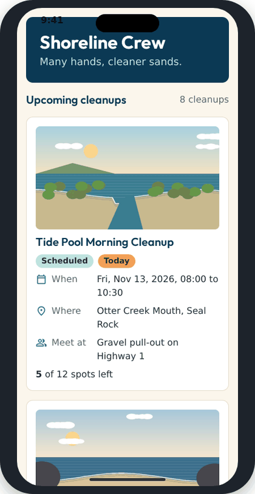
Without safe-area insets (simulated): the content starts at the very top of the glass, so the status bar and the camera cutout cover the banner.
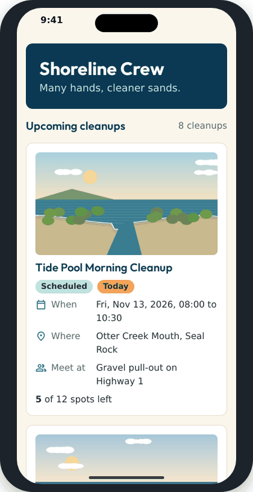
With Screen's insets (simulated as 47 at the top and 34 at the bottom): the frame starts below the status bar. On a real phone the numbers come from the device; the web preview's insets are 0.
Guided lab: Task 3 and the debrief (after the break)
Task 3 (8m): the bar pinned to the bottom adds insets.bottom to its own paddingBottom (useSafeAreaInsets() from react-native-safe-area-context). The tests hand it two phones (34 and 0). Circulate for marginBottom (a band of page color under the bar) and for the import from react-native.
Expected when all three tasks are done (the solution's run):
PASS src/lab.test.tsx
✓ Task 1: the picture is one element a screen reader stops on, with the beach described
✓ Task 1: the picture has a size: the card's width and the picture's own proportions
✓ Task 2: every terrain has an SF Symbol AND a Material Symbol for Android and the web
✓ Task 3: on a phone with a home indicator, the button stays above it
✓ Task 3: on a phone with a home button, the bar keeps its own padding
Tests: 5 passed, 5 total
Debrief (7m): "Which of the three would a user have reported, and how?" (the missing picture and the missing Android icon: "it's blank"; the bar: "I can't press Sign up"). "Which tool found each one?" (a test for the size, the plain name and the inset; tsc for the typo). Then point at the board: the habit is to make silent mistakes loud.
Start the lesson project: Shoreline Crew Gets Its Look
Seven steps on the lesson page. In the room, Steps 1 to 4 together at 1:35 (50 minutes), then Step 5 (and Exercise 3). Learners type; you type on the projector one step ahead. Keep the API and Metro running in their own terminals.
Step 1 (15m): stop Metro, npx expo install @expo-google-fonts/outfit ("1 other package" means Expo has no SDK pin for it; never npm audit fix --force), typography.ts, the new _layout.tsx, AppText's two variants. Done = headings in Outfit and no "index" header bar.
Step 2 (12m): Screen with edges and the insets. Done = the web preview looks the same (insets are 0); on a phone the banner starts below the clock.
Step 3 (8m): the two color roles and Icon.tsx. Done = npx tsc --noEmit prints nothing.
Step 4 (15m): the picture radius, Promise.all with getSites, the site prop (required, may be undefined) and the picture. Done = every card shows its beach (the API must run).
Step 5 (12m, after Steps 1 to 4): the Where row and the icons in the detail rows. Done = When, Where and Meet at rows with icons, "Driftwood Cove, Port Marisol" on the Weekend Cove card.
Goes home: Step 6 (the six PNG files from lesson-06-end.zip, rm -r assets/expo.icon, app.json, npx expo-doctor, the favicon) and Step 7 (lint, type check, commit). Learners with a phone: open Expo Go after Step 2 and look at the top and bottom of the screen.
Project Step 5, then Exercise 3 together
With Step 5 done, every card has its site. Exercise 3 on the projector: delete the site={…} line in index.tsx and run the checker. The kit's run is the lesson's card:
npx tsc --noEmit
src/app/index.tsx:61:12 - error TS2741: Property 'site' is missing in type '{ key: string; event: CleanupEvent; }' but required in type 'EventCardProps'.
61 <EventCard
~~~~~~~~~
src/components/EventCard.tsx:18:3
18 site: Site | undefined;
~~~~
'site' is declared here.
Found 1 error in src/app/index.tsx:61
Read both locations: the first is the mistake (index.tsx:61), the second ('site' is declared here.) is the rule it breaks. Ask: "what would site?: Site have let through?" (every card quietly saying "Site to be confirmed", no picture). Put the line back; npx tsc --noEmit prints nothing again and npx expo lint prints only its two env: lines:
Ask these out loud during the demos and the project:
Why does an expo-image from a server need a size before it loads? Answer: the phone lays the screen out first, and expo-image never sizes itself from the file: without one it is 0 tall.
What does a plain SF Symbol name draw on Android? Answer: nothing (no name for the platform, no fallback).
Where does the bottom inset go on a scrolling screen, and on a bar pinned to the bottom? Answer: inside the content (contentContainerStyle); on the bar's own paddingBottom.
Which of today's changes can you see in Expo Go, and which only in a build? Answer: fonts, icons, safe areas in Expo Go; the app icon and the native splash screen in your own build.
Workbook self-check, items Q1 to Q12 (learners do them at the end of the block or at home).
Answers: Q1B) Nothing: the picture is 0 by 0; Q2tsc prints nothing (a plain SF Symbol name is a valid name); Android and the web preview show no icon at all; Q3A) 'calender_today' to 'calendar_today' on line 9, and both errors go; Q4C) With alt alone, the web preview's picture had no alt attribute (expo-image 58); accessibilityLabel works everywhere; Q5B) The card: a column stretches its children across; Q6D) The splash screen never goes away; Q7title: 'Outfit_700bold' (a lowercase b); without the typed names the titles would silently use the system font; Q8A) Maybe bold, maybe semibold, maybe the system font: do not depend on it; Q9D) The second: the header already pads the top, so the frame adds 0 there; Q10C) On the bar's own paddingBottom, so its background reaches the glass and the button stays above the indicator; Q11SafeAreaView has been deprecated and will be removed in a future release. Please use 'react-native-safe-area-context' instead.; import SafeAreaView from react-native-safe-area-context (or use useSafeAreaInsets); Q12D) The favicon in the web preview's browser tab, and app.json with npx expo-doctor. Full set with explanations in the Answer Key.
Differentiation
Support: learners who fall behind in the project take lesson-06-start.zip (or their own code) and do Steps 1 to 4 with a neighbor, one keyboard: the steps are independent enough that Step 2 (Screen) can be done before Step 1 (fonts). For learners who find the type errors intimidating: "read the last sentence of the first line first" (every error today ends with a Did you mean or names the missing property).
Stretch: Exercise 4 (thumbnails: cover versus contain in a square), the Bonus Challenge (a placeholder with node server.ts --latency=2000), and in the lab: add a fifth terrain to the Terrain type and watch tsc demand its icon.
Closing
Exit ticket (3 questions, no notes, 4 minutes)
Put the three questions on the slide. Learners answer in the workbook's Exit Ticket box or on a sticky note. Sort the notes into "got it" and "not yet" before Session 6: question 3's pile tells you whether the edges rule needs a minute in Session 6's warm-up.
Name the three silent mistakes of Lesson 2.3. Answer: an expo-image with no size; a plain SF Symbol name; a misspelled fontFamily.
What does as const satisfies Record<string, keyof typeof fontFiles> in typography.ts buy you? Answer: a misspelled family name becomes a tsc error (TS2820 with Did you mean) instead of a silently wrong font.
A screen sits under a header bar. Which edges does its Screen touch, and why? Answer:['bottom', 'left', 'right']: the header already pads itself below the status bar.
Homework (about 2 to 3 hours)
Finish the lesson project. Step 6 (the six icon files from lesson-06-end.zip, rm -r assets/expo.icon, app.json, npx expo-doctor until its last line says 20/20 checks passed. No issues detected!, the favicon in the web preview) and Step 7 (npx expo lint, npx tsc --noEmit, the commit). Anything of Steps 1 to 5 not finished in the room.
Lesson exercises: 1 (a step-free row: figure.roll / accessible) and 2 (the logo in the banner, 56 by 56); 4 (thumbnails) is a stretch. Exercise 3 was done in the room.
The Quick Quiz on the lesson page (five questions; answers in the Answer Key).
Lab: whatever of Tasks 1 to 3 is left; the stretch in the guide (a fifth terrain).
Journal: the lesson's prompt (the three silent mistakes, how you would notice each, what Shoreline Crew does instead; where your favorite app's content stops).
Before the Next Lesson (from 2.3): the pictures, icons and Outfit headings in the web preview, committed; the top and bottom of the Cleanups screen in Expo Go; notice how buttons in your favorite apps react when you press them.
Bring list for Session 6
The course folder with shoreline-crew at the end of Lesson 2.3 (committed), shoreline-api and labs/. Session 6 (Lesson 2.4, Touch and Input) starts from it: anyone not finished uses lesson-07-start from the course downloads.
A phone with Expo Go if possible: Session 6's keyboard and native switch only show on a phone.
The workbook and the journal.
If You Run Long or Short
Running long: what to protect and what to cut first
Protect: the project's Steps 1 to 4; the plain-SF-name and font-typo steps; the headless safe-area step.
Cut first (saves 5m): the deprecated SafeAreaView step (it is in the lesson's Common Mistakes) and Exercise 3 (homework).
Cut second (saves 15m): the lab's Task 3: it goes home with the task sheet; the debrief covers Tasks 1 and 2.
Cut third (saves 12m): Step 5 goes home; the room ends with every card showing its picture.
Running short: what to add
Exercise 1 together: the step-free row (figure.roll / accessible), and why the words stay when the icon is hidden from screen readers.
Exercise 4 live: the 96 by 96 thumbnail, cover versus contain in a square, "which would you read on a beach at arm's length?"
The Bonus Challenge: node server.ts --latency=2000 and a placeholder while the beach fades in.
Instructor Kit · Facilitator Guide
Session 6: Touch and Input
How to teach Lesson 2.4: Shoreline Crew starts listening to fingers. A Button that answers at the touch, Show details on every card, a search field that filters as you type, the keyboard that covers half the screen and a switch for cleanups with spots left. Every mistake in the session is a web habit that works with a mouse; the session collects them and shows what replaces each.
1 lesson3 hrs sessionLesson 2.4Session 6 of 26 · Part 1
How to Use This Guide
Session rhythm: warm-up (retrieval on Session 5) → frame and mental models → two live demos, each followed by a guided lab (new practice, never the lesson's own project) → the project's first six steps together. Step 7, the exercises, the quiz, the journal and the phone check go home.
Type, do not paste. Every command below was run to produce the output printed under it, in a learner's terminal (Node 24): the type errors on a copy of the app exactly as a learner has it at the end of Lesson 2.4, the press order in Jest with the lesson's own PressLog. Where the lesson shows the same command, the kit's output is the lesson's card. Ask for a prediction before every run.
No phone was used to make this kit. Presses, press feedback, the search and the switch all work in the web preview, and the labs press, hold and type in Jest like a finger. What only a phone shows: the on-screen keyboard (its keys, its return key, the first tap it swallows), the native switches, hitSlop (the web preview ignores it) and how 48 feels under a thumb. Describe those the way the lesson does, and have your phone with Expo Go ready for Step 6.
The lesson is the reference: keep lesson_07.html open for the tables (Pressable's callbacks, the screen-reader props, the TextInput props, the controls). Labs live in labs/module-06/ (the shared install from Session 1).
The session's thread: every mistake today is a web habit that works with a mouse (onClick, onChange with event.target.value, a 36-high target, a Switch's onChange, the first tap the keyboard eats). Say it at the start; collect them on the board as they come up.
Part 1 (Sessions 1 to 9) can run on its own. Teal blocks are hands-on, amber blocks are watch-outs.
The #1 risk of Session 6: "it works" in the web preview
With a mouse everything in this lesson works: onClick is the only habit that fails even there. Learners finish Step 6 believing the keyboard and the targets are fine because the web preview showed nothing wrong. Before: ask who has a phone with Expo Go and pair the room so every pair has one. In the room: in Step 6 every pair opens the app in Expo Go (the cleanups do not load on a phone before Lesson 5.1, but the search field and the switch sit above the list, so they can be tried) and does the lesson's four checks. No phone in a pair: the lab's Task 3 test is their evidence, and the phone check goes home.
Before the Session
☐ Run the kit check once:python3 labs/check_labs.py module-06 from this kit's folder (7 runs, about two minutes: the starter's seven tests fail and its type check reports three errors, while its lint is clean (onClick lints clean); the solution passes its tests, type check and lint, and bundles for the web).
☐ Projector machine: VS Code on shoreline-crew at a large font, the API and Metro running, the web preview at phone size, lesson_07.html in a tab; your phone with Expo Go.
☐ For the press demo: a copy of labs/module-06/l2_4-touch-and-input/solution/ with the lesson's PressLog as src/PressLog.tsx and the kit's test (Answer Key, "Demo files"); run it once at home.
☐ Files to hand out: the lab's starter/ and TASKS.md; lesson-07-start.zip for anyone whose Session 5 project is not finished.
☐ Board: the mental models (the check-in table; the tide comes in); a column "web habit → phone" to fill during the session (onClick → onPress · onChange → onChangeText / onValueChange · height 36 → minHeight 48 + hitSlop · nothing → keyboardShouldPersistTaps="handled").
Known traps in this session
Symptom
Cause
Fix
A button does nothing, no error anywhere
onClick instead of onPress
onPress.
TS18048 + TS2551 on event.target.value
onChange, the web habit
onChangeText={setQuery}.
Property 'label' does not exist … TouchableNativeFeedback
React Native's Button imported
Import Button from @/components/Button.
Types of parameters 'value' and 'event' are incompatible
A Switch with onChange
onValueChange.
On a phone, the first tap on a button only closes the keyboard
react-native-web draws no off track when trackColor sets only true
Expected today; Lesson 2.5 adds a trackOff color.
Chrome draws a second clear button in the field
inputMode="search" makes an HTML search box
Leave inputMode out of SearchField (the lesson does).
Session 6 Agenda (3 hours)
Clock
Minutes
Segment
What happens
0:00
10
Warm-up: Lesson 2.3, retrieved
Three questions on Session 5 (the silent picture, the plain SF name, the edges under a header), on paper then out loud.
0:10
10
2.4 Frame and mental model
From clicks to fingers: the check-in table on the beach (press in, press, slide off, hold) and the tide that comes in (the keyboard).
0:20
20
2.4 Live demo: Pressable and press feedback
The lesson's PressLog pressed and held headless, the Button's style function, onClick that type-checks and does nothing, 48 and hitSlop.
0:40
15
2.4 Guided lab: Task 1
labs/module-06/l2_4-touch-and-input/starter: a check-in button that a finger and a screen reader can use, with a long press to undo.
0:55
15
2.4 Live demo: text, keyboard and switch
onChange with event.target.value (TS18048, TS2551), keyboardShouldPersistTaps, the Switch's onChange (TS2322), the wrong Button.
1:10
10
Break
Learners start both servers and open lesson-07-start if their 2.3 project is not finished.
1:20
20
2.4 Guided lab: Tasks 2 and 3
The bag count field and parseBags, then the desk's switch and its scroll view's taps; debrief.
1:40
45
2.4 Start the lesson project: Steps 1 to 4
Together: the control colors and Button, Show details on every card, the SearchField, the SwitchRow.
2:25
25
2.4 Project Steps 5 and 6
Filter the Cleanups screen (derived, not stored), the empty state, Screen's keyboard props; what to try in Expo Go.
2:50
10
Wrap-up
Exit ticket (3 questions), homework (Step 7 and the phone check go home), bring list for Session 7.
Total
180
Ends at 3:00.
In the room. The lesson page estimates 145 minutes for a learner working alone; the room has 150 after the warm-up, the break and the wrap-up: the mental models, two demos of the web habits that fail on a phone, the lab, and the project's Steps 1 to 6 together. Goes home (about 2 to 3 hours): Step 7 (lint, type check, commit), anything of Steps 1 to 6 not finished, the phone check in Expo Go, Exercises 1 to 4 (1 and 2 recommended, 3 is a short read, 4 a stretch), the Quick Quiz, the journal and the lab's leftovers.
Protect, in this order: Steps 1 to 5 of the project (Session 7 themes every one of these components); the PressLog step; the onClick and onChange steps. Cut first: the wrong-Button step (it is Exercise 3), then the lab's Task 3 (it goes home).
Opening Segment
0:00
Warm-up: Lesson 2.3, Retrieved
10 min
Timing
4m
Three questions on the slide, answered on paper, no notes
4m
Answers out loud: cold-call, then show the answer
2m
Bridge to today
The three questions (put them on the slide)
An expo-image from the API has source and contentFit but no size. What do volunteers see, and what fixes it? Answer: Nothing (0 tall, no error); a width from the parent plus an aspectRatio from the API's image.width / image.height.
Icon's table has date: 'calendar'. tsc prints nothing. What is wrong? Answer: A plain SF Symbol name draws only on iOS: Android and the web preview show no icon. Give ios, android and web names.
A detail screen sits under a header bar. Which edges does its Screen touch? Answer:['bottom', 'left', 'right']: the header already pads itself below the status bar.
Bridge
"Last time the app learned to look like an app. Until now it has only been something to look at. Today it listens to fingers: a button that answers at the touch, a search box, the keyboard that covers half the screen, and a switch."
Lesson Plans
2.4
Touch and Input
150 min
Objectives (from the lesson page)
Make anything tappable with Pressable, explain its press lifecycle (press in, press out, press, long press), and show press feedback with a style function
Give every control a finger-sized touch target with minHeight and hitSlop, and a role, a label and a state for screen readers
Build a controlled TextInput with onChangeText, and choose the keyboard and its behavior with inputMode, enterKeyHint, autoCapitalize and autoCorrect
Put the keyboard away at the right moments, and keep taps working while it is open
Use Switch for an on/off choice and know which other controls React Native has built in
Timing in the room
10m
Frame: from clicks to fingers; the check-in table; the tide comes in
20m
Live demo 1: the press lifecycle (PressLog, headless), press feedback, onClick, targets and screen-reader props
15m
Guided lab: Task 1
15m
Live demo 2: onChange, TextInput's props, the keyboard, the Switch, the wrong Button
20m
Guided lab: Tasks 2 and 3 and the debrief (after the break)
45m
Start the lesson project: Steps 1 to 4
25m
Project Steps 5 and 6
Mental model to say
From the lesson: "A volunteer reaches for the sign-in sheet at the crew's table. The organizer looks up the moment the hand lands on the clipboard (that is onPressIn and your press feedback). If the volunteer signs and hands it back, the sign-in counts (onPress). If they wander off with the pen still in the air, it does not (sliding off). If they hold on to the clipboard for a while, the organizer asks "anything else?" (onLongPress)."
Then the keyboard: "The keyboard is a high tide. It rolls in over the lower half of the beach whenever someone starts to type, and everything left there is under water. A good crew decides two things in advance: what has to stay above the waterline, and how the tide goes back out."
Write the thread under them: a finger is not a mouse: feedback at the touch, 48 to aim at, a name for screen readers, and the keyboard is part of the screen.
Live demo 1: Pressable and press feedback (you type, they follow)
The whole touch, not one click (5m). "On the web you get one click. Pressable tells you about the whole touch." Put up the lesson's table (onPressIn, onPressOut, onPress, onLongPress at 500 ms) and draw its flowchart. Then the lesson's PressLog, pressed and held like a finger: the kit copied it into a copy of the lab's solution and ran it in Jest with React Native Testing Library's user.press (a tap) and user.longPress (a hold):
npm test -- src/presslog.test.tsx
cat presslog.txt
Exactly the order the lesson measured in the web preview: a handled long press gives no press afterwards. The third path, sliding off, gives pressIn → pressOut and nothing else: a finger on its way to scrolling says "not that one". Tell the check-in-table story here.
Feedback at the touch (5m). "A finger covers the button: the change must start at the touch and be big enough to see around the finger." Open the project's Button:
shoreline-crew/src/components/Button.tsx
<Pressable
accessibilityRole="button"
disabled={disabled}
{...rest}
// A function: React Native calls it again with pressed: true while a finger is down
style={({ pressed }) => [
styles.base,
boxes[variant],
pressed && pressedBoxes[variant],
disabled && styles.disabled,
]}
A style function: React Native calls it again with pressed: true while a finger is down. accessibilityRole comes before {...rest} (a caller may override it), style after (nobody can). android_ripple exists but only Android draws it; Shoreline Crew uses one style function for both phones. Show the lesson's screenshot of the pressed button.
The quiet one: onClick (5m). In SearchField.tsx, change the clear button's onPress to onClick and ask: "will tsc catch it? lint?" Then:
tsc prints nothing; lint prints only its two env: lines (the .env.local from Lesson 1.3; no problem). React Native 0.88 types onClick on every view, and Pressable puts its own click handler on top of yours: a tap does nothing. The lab's Task 1 starts from exactly this. Undo it.
Targets for fingers, and names for screen readers (5m). 44 pt (Apple), 48 dp (Android): the course uses 48. minHeight, never height. The clear button is drawn 32 by 32 with hitSlop={8}: a 48 by 48 target. Say the measured caveat: the web preview ignores hitSlop; on a phone it works (React Native's docs). Then the lesson's table: role → <button role="button">, accessibilityLabel → aria-label, state with aria-expanded (the web preview ignored accessibilityState).
shoreline-crew/src/components/EventCard.tsx
<Button
label={showDetails ? 'Hide details' : 'Show details'}
// A screen reader hears which cleanup, and whether its details are open
accessibilityLabel={`${showDetails ? 'Hide' : 'Show'} details for ${event.title}`}
aria-expanded={showDetails}
onPress={() => setShowDetails((shown) => !shown)}
/>
No match: the screen says so and offers a way back. The Show all cleanups button is caught while a finger (here, the mouse) is still down: its Sea Teal turns Deep Tide until you let go.
Three mistakes to expect, and how to coach each
onClick on a Pressable. Silent everywhere. Coach: "Which prop is a finger?" (Self-check Q2, Lab Task 1.)
onChange with event.target.value. Copied from the HQ. Coach: "Read the second error: what type is target?" (Q3, Lab Task 2.)
A fixed style on a Pressable. It works and looks dead under a thumb. Coach: "What changes while the finger is down?" (the style function).
Guided lab: Task 1
Folder:labs/module-06/l2_4-touch-and-input/starter/ (task sheet labs/module-06/l2_4-touch-and-input/TASKS.md); your reference is labs/module-06/l2_4-touch-and-input/solution/. The organizer's check-in desk on the beach: a button, a number field, a switch. Every mistake in the starter is a web habit that works with a mouse. React Native Testing Library presses, holds and types like a finger. The shared lab install, no API (fixtures/ holds real answers).
Run it as shipped first (3m):npm test (all seven fail) and npm run lint, which is clean: onClick lints clean. The first failures:
● Task 1: a tap checks the volunteer in (a button with a name, for fingers and screen readers)
Unable to find an element with role: button, name: Check in Aisha Rahman
● Task 1: the target is at least 48 high
Unable to find an element with role: button
● Task 1: once checked in, a long press undoes it, and does not count as a tap
Unable to find an element with role: button, name: Check in Aisha Rahman
Task 1 (10m): onPress, onLongPress for undo, the role and label, minHeight 48, a style function. Circulate for onPress AND onLongPress both doing the same thing, and for height: 48.
Debrief (2m): "Which tool would have found onClick?" (only a test that presses, or a finger).
Live demo 2: text, keyboard and switch
onChange, the web habit (4m). In SearchField.tsx, replace onChangeText={onChangeText} with the HQ's onChange={(event) => onChangeText(event.target.value)}:
npx tsc --noEmit
src/components/SearchField.tsx:22:43 - error TS18048: 'event.target' is possibly 'undefined'.
22 onChange={(event) => onChangeText(event.target.value)}
~~~~~~~~~~~~
src/components/SearchField.tsx:22:56 - error TS2551: Property 'value' does not exist on type 'number | ReactNativeElement'. Did you mean 'valueOf'?
Property 'value' does not exist on type 'number'.
22 onChange={(event) => onChangeText(event.target.value)}
~~~~~
Found 2 errors in the same file, starting at: src/components/SearchField.tsx:22
The kit's run is the lesson's card. An event's target is a native view reference (a number or an element), not an input with a value. onChangeText hands you the string. Undo it.
Telling the phone what you type (3m). The lesson's props table: inputMode (which keyboard), enterKeyHint (the return key), autoCapitalize, autoCorrect, autoComplete, secureTextEntry (Lesson 4.3), onSubmitEditing. The number keyboard does not make a number: still a string. In the web preview react-native-web turns each into its HTML attribute; the keyboard itself only shows on a phone.
The tide comes in (3m). Draw the keyboard over the lower half of the screen. Three ways out: the return key (a one-line field blurs and submits), scrolling (keyboardDismissMode="on-drag"), Keyboard.dismiss(). Then the surprise: with keyboardShouldPersistTaps left at 'never', the first tap on the clear button only closes the keyboard. Show the two props Step 6 adds to Screen:
shoreline-crew/src/components/Screen.tsx
keyboardShouldPersistTaps="handled"// Starting to scroll puts the keyboard away
keyboardDismissMode="on-drag"
Hedge it as the lesson does: the web preview has no on-screen keyboard, so this comes from React Native's documentation for ScrollView and TextInput; learners with a phone try it in Step 6.
A Switch with onChange (3m). In SwitchRow.tsx, onValueChange={onValueChange} becomes onChange={onValueChange}:
npx tsc --noEmit
src/components/SwitchRow.tsx:20:9 - error TS2322: Type '(value: boolean) => void' is not assignable to type '(event: Readonly<{ bubbles: boolean | undefined; cancelable: boolean | undefined; currentTarget: number | ReactNativeElement; defaultPrevented: boolean | undefined; ... 11 more ...; type: string | undefined; }>) => void | Promise<...>'.
Types of parameters 'value' and 'event' are incompatible.
Type 'Readonly<{ bubbles: boolean | undefined; cancelable: boolean | undefined; currentTarget: number | ReactNativeElement; defaultPrevented: boolean | undefined; dispatchConfig: Readonly<...>; ... 10 more ...; type: string | undefined; }>' is not assignable to type 'boolean'.
Long, so read one line: "Types of parameters 'value' and 'event' are incompatible." onChange gets an event; onValueChange the boolean. The kit's run matches the lesson's shortened card. Undo it.
The wrong Button (2m). Exercise 3 live: drop the @/components/Button import and add Button to the react-native import:
npx tsc --noEmit
src/app/index.tsx:90:19 - error TS2322: Type '{ label: string; variant: string; onPress: () => void; }' is not assignable to type 'IntrinsicAttributes & Omit<ButtonProps, "ref"> & { ref?: Ref<ReactNativeElement | TouchableNativeFeedback> | undefined; }'.
Property 'label' does not exist on type 'IntrinsicAttributes & Omit<ButtonProps, "ref"> & { ref?: Ref<ReactNativeElement | TouchableNativeFeedback> | undefined; }'.
90 <Button label="Show all cleanups" variant="primary" onPress={showAll} />
~~~~~
Found 1 error in src/app/index.tsx:90
Read the type after ref?: TouchableNativeFeedback means React Native's own Button (a title, not a label). Undo it.
Typing filters the cards as you type, and the switch hides full cleanups: of the two cleanups in Port Marisol, only Family Beach Morning has spots left. The count says how many of the 8 you are seeing.
Guided lab: Tasks 2 and 3 and the debrief (after the break)
Task 2 (8m):npm run typecheck first: the field's two errors are the demo's. onChangeText, inputMode="numeric", then parseBags (the field still gives a string).
Task 3 (7m): the switch's TS2322 (onValueChange) and the desk's scroll view (keyboardShouldPersistTaps="handled", keyboardDismissMode="on-drag"). The starter's type check, for reference:
src/BagCountField.tsx:10:41 - error TS18048: 'event.target' is possibly 'undefined'.
src/BagCountField.tsx:10:54 - error TS2551: Property 'value' does not exist on type 'number | ReactNativeElement'. Did you mean 'valueOf'?
src/CheckInDesk.tsx:32:11 - error TS2322: Type 'Dispatch<SetStateAction<boolean>>' is not assignable to type '(event: Readonly<{ bubbles: boolean | undefined; cancelable: boolean | undefined; currentTarget: number | ReactNativeElement; defaultPrevented: boolean | undefined; ... 11 more ...; type: string | undefined; }>) => void | Promise<...>'.
Found 3 errors in 2 files.
Expected when all three tasks are done (the solution's run):
PASS src/lab.test.tsx
✓ Task 1: a tap checks the volunteer in (a button with a name, for fingers and screen readers)
✓ Task 1: the target is at least 48 high
✓ Task 1: once checked in, a long press undoes it, and does not count as a tap
✓ Task 2: parseBags turns the typed text into a count
✓ Task 2: typing in the field updates the desk (and the phone shows the number keyboard)
✓ Task 3: the switch hides the volunteers who are already checked in
✓ Task 3: with the keyboard open, a tap on a button reaches the button
Tests: 7 passed, 7 total
Debrief (5m): fill the board's "web habit → phone" column from the lab. Ask: "which of the desk's fixes can you only verify on a phone?" (the keyboard and the switch's look; the test proves the prop is there).
Start the lesson project: Shoreline Crew Listens
Seven steps on the lesson page. In the room, Steps 1 to 4 at 1:40 (45 minutes), then Steps 5 and 6. Learners type; you type one step ahead. No packages to install today.
Step 1 (12m): five control color roles, radius.control, Button.tsx. Done = npx tsc --noEmit prints nothing.
Step 2 (8m): Show details on every card (useState, the label naming the cleanup, aria-expanded). Done = a tap opens the description and "We bring: …".
Step 3 (15m): two icons, SearchField.tsx (controlled, labelled, the clear button with hitSlop). Done = it type-checks (it is wired in Step 5).
Step 4 (10m): SwitchRow.tsx. Done = it type-checks.
Step 5 (17m): search.ts and index.tsx: query and onlyOpen in state, cards derived on every render (no useMemo: the React Compiler), countLabel, the empty state. Done = "calder" gives "3 of 8 cleanups", the switch hides full cleanups, "volcano" shows the empty state and Show all cleanups.
Step 6 (8m): Screen's two keyboard props; then pairs with a phone open Expo Go and do the lesson's four checks (the keyboard's return key, the clear button on the first tap, return closes it, the native switch). The course could not run a phone while it was checked: these follow React Native's documentation, as the lesson says.
After a tap on Show details, the button's words change to Hide details and the description and supplies appear. A screen reader also hears which cleanup it is and that the details are expanded.
Checks for understanding
Ask these out loud during the demos and the project:
Which callback does the action, and which start and end the pressed look? Answer: onPress; onPressIn / onPressOut (the style function does it for you).
Why does the search field's value stay a string with the number keyboard? Answer: the keyboard only changes the keys.
Why is the list of cards not in state? Answer: it is derived from the loaded data, the query and the switch on every render.
What does the web preview not show about today's work? Answer: the keyboard, hitSlop, the native switch.
Workbook self-check, items Q1 to Q12 (at the end of the block or at home).
Answers: Q1C) pressIn → longPress → pressOut; Q2tsc prints nothing; lint prints only its two env: lines (no problem); the tap does nothing; Q3B) onChangeText={onChangeText}; Q4C) With larger text the button can still grow instead of cutting its words; Q5A) aria-expanded: the web preview passed it on, and React Native reads it first on phones; Q6D) 'handled'; Q7"Types of parameters 'value' and 'event' are incompatible": onChange gets an event, not the new value; use onValueChange={onValueChange}; Q8B) TouchableNativeFeedback: React Native's own Button, which takes a title; Q9B) The string '12'; Q10A) true: an empty query has no words, and every() on an empty list is true; Q11eight buttons all called "Show details" are indistinguishable to a screen reader; starting with the visible words lets voice control ("tap Show details") still find it; Q12B) Nothing in the web preview (it ignores hitSlop); on a phone the finger's 48 by 48 area clears it. Full set with explanations in the Answer Key.
Differentiation
Support: learners behind take lesson-07-start.zip and do Steps 1, 2 and 5 first (Steps 3 and 4 can be copied from the lesson page while the room moves on). One card for everyone: onPress · onChangeText · onValueChange · minHeight 48 · "handled".
Stretch: Exercise 2 ("Only today's cleanups"), Exercise 4 (a long press on the card, and why it cannot replace the button), the Bonus (a Counter stepper preview for Lesson 5.4).
Closing
Exit ticket (3 questions, no notes, 4 minutes)
Learners answer in the workbook's Exit Ticket box or on a sticky note. Question 3's "not yet" pile tells you whether Session 7's warm-up needs the keyboard again.
Name two web habits that fail on a phone, and what replaces each. Answer: any two of onClick → onPress; onChange + event.target.value → onChangeText; a Switch's onChange → onValueChange; height 36 → minHeight 48 / hitSlop.
A volunteer holds Show details and then lifts. Does onPress run? Answer: no: pressIn, longPress (if handled), pressOut; a handled long press is not also a tap.
What does keyboardShouldPersistTaps="handled" change? Answer: a tap on a button while the keyboard is open reaches the button instead of only closing the keyboard.
Homework (about 2 to 3 hours)
Finish the lesson project: Step 7 (npx expo lint prints only its env: lines, npx tsc --noEmit prints nothing, the commit) and anything of Steps 1 to 6 not finished.
The phone check (if you have a phone): Step 6's four checks in Expo Go; remove keyboardShouldPersistTaps once to feel the difference, then put it back.
Lesson exercises: 1 (search the meeting point) and 2 (a Today switch); 3 (read the wrong-Button error, if not done in the room); 4 is a stretch.
The Quick Quiz on the lesson page (answers in the Answer Key).
Lab: the tasks not finished.
Journal: the lesson's prompt.
Before the Next Lesson (from 2.4): turn on dark mode on your phone and notice what in your apps still looks like daytime.
Bring list for Session 7
The course folder with shoreline-crew at the end of Lesson 2.4 (committed): Session 7 (Lesson 2.5) changes nearly every component file; anyone not finished uses lesson-08-start from the course downloads.
A phone with dark mode you can switch on, and a browser whose DevTools you can open (dark mode in the web preview).
The workbook and the journal.
If You Run Long or Short
Running long: what to protect and what to cut first
Protect: Steps 1 to 5; the PressLog step; the onClick and onChange steps.
Cut first (saves 2m): the wrong-Button step (Exercise 3 at home).
Cut second (saves 7m): the lab's Task 3 goes home with the task sheet.
Cut third (saves 8m): Step 6's phone checks go home; the keyboard props are typed in the room.
Running short: what to add
Exercise 2 together: one more useState, one more filter, and showAll.
Exercise 4 live: a long press on the card; then the room argues why it cannot replace the button.
The lesson's Feedback snippet: the children function ("Let go to sign up").
Instructor Kit · Facilitator Guide
Session 7: Responsive, Platform-Specific and Themed UI
How to teach Lesson 2.5: Shoreline Crew notices the size of its window, the platform it runs on and the night. useWindowDimensions with one breakpoint, Platform and a first platform file, a dark set of every color role that TypeScript keeps complete, a typed theme with useTheme and styles made once per theme, the navigator and the status bar in the theme, and two columns on wide screens. Anything read once when a file loads goes stale; the session makes that the rule to remember.
1 lesson3 hrs sessionLesson 2.5Session 7 of 26 · Part 1
How to Use This Guide
Session rhythm: warm-up (retrieval on Session 6) → frame and mental models → two live demos → the guided lab → the project's first six steps together. Step 7, the exercises, the quiz, the journal and the phone's dark mode go home. This session closes Module 2.
Type, do not paste. Every command below was run to produce the output printed under it, in a learner's terminal (Node 24): the mistakes on copies of the app exactly as a learner has it before and after Lesson 2.5, made the way the lesson's own verification made them; the lesson's window and platform snippets headless in Jest. Where the lesson shows the same command, the kit's output is the lesson's card.
No phone was used to make this kit. The web preview shows the two columns (resize the window) and dark mode (the computer's setting, or Chrome DevTools > Rendering > prefers-color-scheme). The phone's own dark mode, the status bar's light icons, the ios and android branches, and Android's need for expo-system-ui for userInterfaceStyle (Expo's documentation) are described the way the lesson describes them.
The lesson is the reference: keep lesson_08.html open for the contrast table, the platform tools table and the Mermaid theme flow. Labs live in labs/module-07/.
The session's thread: everything is a value read while rendering (the window, the platform, the scheme). Anything read once, when a file loads, goes stale: a StyleSheet color, a Dimensions.get, a hook at the top of a file.
Part 1 (Sessions 1 to 9) can run on its own. Teal blocks are hands-on, amber blocks are watch-outs.
The #1 risk of Session 7: the nine-file refactor
Step 1 renames the colors export, and tsc reports nine errors. Some learners panic or start reverting. In the room: say it before Step 1: "in a minute TypeScript will list nine files; that list is our to-do list for the next forty minutes." Work down the list together, and after each file run npx tsc --noEmit again and read the count aloud. A learner who gets lost takes lesson-08-end's version of one file at a time, never the whole folder.
Before the Session
☐ Run the kit check once:python3 labs/check_labs.py module-07 (6 runs, about two minutes: the starter's tests fail three of five and its type check reports TS1360; the solution passes its tests, type check and lint, and bundles for the web).
☐ Projector machine: VS Code on shoreline-crew, the API and Metro running, the web preview in a browser you can resize and switch to dark mode (DevTools > ⋮ > More tools > Rendering > Emulate CSS media feature prefers-color-scheme); lesson_08.html; your phone with dark mode.
☐ For the size demo: a copy of labs/module-07/l2_5-responsive-platform-specific-and-themed-ui/solution/ with the lesson's three snippets and the kit's test (Answer Key, "Demo files"); run it once at home.
☐ Files to hand out: the lab's starter/ and TASKS.md; lesson-08-start.zip and lesson-08-end.zip (for the refactor's stragglers).
☐ Board: the two mental models; the theme flow (phone setting → useColorScheme → useTheme → useStyles / colors for props → the screen redraws); "read while rendering, never once at load".
Known traps in this session
Symptom
Cause
Fix
One screen stays Sand in dark mode
A color baked into StyleSheet.create
createThemedStyles.
React Hook "useTheme" cannot be called at the top level
The hook next to the styles
createThemedStyles outside, useStyles() inside.
Property 'trackOff' does not exist on type '{ primary: …'
expo-router's useTheme auto-imported
Import from @/hooks/useTheme.
The web preview is half dark, no error
No useColorScheme.web.ts (server-drawn first page)
The web file with the server snapshot 'light'.
The layout does not follow a resize
Dimensions.get at the top of a file
useWindowDimensions in a hook.
Android ignores dark mode in a build
userInterfaceStyle needs expo-system-ui on Android (Expo's docs)
Not needed in Expo Go today; the lesson names it.
Session 7 Agenda (3 hours)
Clock
Minutes
Segment
What happens
0:00
10
Warm-up: Lesson 2.4, retrieved
Three questions on Session 6 (onClick, onChangeText, the first tap and the keyboard), on paper then out loud.
0:10
10
2.5 Frame and mental model
One app, many screens: tables at high and low tide (size), the beach at night (dark mode: the same jobs, a night kit).
0:20
20
2.5 Live demo: size and platform
The lesson's snippets headless: the window followed, a stale Dimensions.get, a Platform branch; breakpoints in dp; platform files.
0:40
15
2.5 Live demo: dark mode and the theme
Two palettes and satisfies (TS1360), createThemedStyles, a hook at the top of a file (lint), the other useTheme (TS2339), the half-dark web preview.
0:55
15
2.5 Guided lab: Tasks 1 and 2
labs/module-07/l2_5-responsive-platform-specific-and-themed-ui/starter: a night palette TypeScript keeps complete and a contrast test, then a tile that follows the night.
1:10
10
Break
Learners open lesson-08-start if their 2.4 project is not finished; the API and Metro running.
1:20
10
2.5 Guided lab: Task 3
Columns from the window instead of a stale read; debrief.
1:30
50
2.5 Start the lesson project: Steps 1 to 3
Together: the two palettes and tsc's nine-file to-do list, the theme and its hooks (and the web one), every component themed.
2:20
30
2.5 Project Steps 4 to 6
The navigator and the status bar, two columns from 700 and a 960 limit, then the app at night and wide.
2:50
10
Wrap-up
Exit ticket (3 questions), homework (Step 7 and the phone's dark mode go home), bring list for Session 8.
Total
180
Ends at 3:00.
In the room. The lesson page estimates 145 minutes for a learner working alone; the room has 150: the mental models, the size and platform demo, the theme demo, the lab and Steps 1 to 6 together. Goes home (about 2 to 3 hours): Step 7 (lint, type check, commit), anything not finished, the phone's dark mode in Expo Go, Exercises 1 to 4, the Quick Quiz, the journal and the lab's leftovers.
Protect, in this order: Steps 1 to 3 (every later lesson uses createThemedStyles and useTheme); the satisfies and baked-in-color ideas; Step 5's useColumns (Lesson 3.1 hands it to FlatList's numColumns). Cut first: the four-tools platform step (the lesson's table), then the lab's Task 3 (home).
Opening Segment
0:00
Warm-up: Lesson 2.4, Retrieved
10 min
Timing
4m
Three questions on the slide, answered on paper, no notes
4m
Answers out loud
2m
Bridge to today
The three questions (put them on the slide)
A Pressable has onClick={signUp}. What do tsc and lint say, and what does a tap do? Answer: Nothing and nothing: onClick type-checks and lints clean; a tap does nothing. Taps go to onPress.
The HQ's onChange={(e) => setQuery(e.target.value)} on a TextInput: what replaces it? Answer:onChangeText={setQuery}: React Native hands you the new text as a string.
On a phone, a volunteer types in the search field and taps the clear button. What makes the first tap reach the button? Answer:keyboardShouldPersistTaps="handled" on the scroll view (Screen sets it once).
Bridge
"Last week you were asked to turn on dark mode on your phone and notice what still looks like daytime. Shoreline Crew does: every color is a daytime color baked in when its file loaded. Today the app notices the size of its window, the platform it runs on, and the night."
Lesson Plans
2.5
Responsive, Platform-Specific and Themed UI
150 min
Objectives (from the lesson page)
Read the window's size with useWindowDimensions, choose a layout with breakpoints in density-independent pixels, and explain why Dimensions.get at the top of a file goes stale
Handle real platform differences with Platform.OS, Platform.select, platform-only props and platform files (.ios.tsx, .android.tsx, .web.ts), and know when not to
Follow the phone's light or dark setting with useColorScheme, and design a dark set of color roles that passes the same contrast checks as the light one
Build a typed theme: palettes TypeScript keeps complete, a useTheme hook, and styles that are made once per theme
Give the navigator and the status bar the theme's colors, and fix the web preview's server-drawn first page
Timing in the room
10m
Frame: tables at high and low tide; the beach at night
20m
Live demo 1: size and platform (headless snippets, breakpoints, the four tools, the web file)
15m
Live demo 2: palettes, satisfies, createThemedStyles, the two mistakes
15m
Guided lab: Tasks 1 and 2
10m
Guided lab: Task 3 and the debrief (after the break)
50m
Start the lesson project: Steps 1 to 3
30m
Project Steps 4 to 6
Mental model to say
From the lesson: "On a narrow strip of sand at high tide, the crew sets up one long line of tables, one behind the other. At low tide, with a wide beach, the same tables go two side by side. Nobody checks which beach it is: they look at how much sand there is right now, and they look again when the tide moves."
Then the night: "The crew's sunrise cleanups start in the dark. Nobody brings floodlights; they bring headlamps with a red setting and they wear reflective vests. The same beach, the same crew, the same jobs, with different equipment for each job. Your color roles are the jobs; the light and dark palettes are the day kit and the night kit."
Write the thread under them: read while rendering, never once when a file loads.
Live demo 1: size and platform
Size is a number from a hook (6m). "No media queries: the window's size is a value your component reads while it renders." The kit ran the lesson's WindowSize, its Dimensions.get snippet and its PlatformNote in a copy of the lab's solution (AppText stood in by a plain Text): a 390 by 844 phone, then the window set to 1024 by 768 without a reload:
npm test -- src/window.test.tsx
cat window.txt
WindowSize, a phone: 390 by 844, text size ×1, 3 pixels per point
WindowSize, after the resize: 1024 by 768, text size ×1, 2 pixels per point
columns from Dimensions.get: 2 (read when the file loaded)
PlatformNote: ios: Swipe from the left edge to go back
Line 1 and 2: the hook followed the resize, as the lesson measured in the web preview. Line 3: the top-level Dimensions.get read the window once, when the file loaded (Jest's default, before the test's phone), and never again. Line 4: Jest renders as iOS; the web preview took the default branch; a phone runs its own.
Breakpoints in dp (4m). Tables at high and low tide. Phones held upright 360 to 430, small tablets and phones on their side 700 and more, big tablets over 1000. Shoreline Crew uses one breakpoint, 700, in one hook:
shoreline-crew/src/hooks/useColumns.ts
import { useWindowDimensions } from'react-native';
import { layout } from'@/theme/spacing';
// How many cards fit side by side in the window right now: 1 on a phone, 2 on a wider screen.// useWindowDimensions re-renders the component whenever the window changes size.exportfunction useColumns() {
const { width } = useWindowDimensions();
return width >= layout.twoColumns ? 2 : 1;
}
Flex, percentages and maxWidth first; the window's size only when the structure changes (one column to two).
Four platform tools, smallest first (5m). Platform.OS, Platform.select (with default; spread into a style), platform-only props (ios_backgroundColor, android_ripple), platform files (.ios.tsx, .android.tsx, .web.ts). Rules: size and features before platform (never Platform.isPad for a layout); keep differences in one place (Icon's table); platform files share one set of types (tsc checks the plain file).
The web preview's first page (5m). Show the lesson's half-dark screenshot: the server drew the page light, the browser drew the cards dark, React kept both, no error. Then the fix, the project's first platform file:
useSyncExternalStore's third argument is "the value on the server": start as 'light' like the server, switch right after hydration.
Without useColorScheme.web.ts: the server drew the page in light colors, the browser drew the cards in dark ones, and React kept both. No error is printed. Phones do not have this problem; the web preview does.
Live demo 2: dark mode and the theme
Two palettes, one set of jobs (3m). "The roles are the jobs; the palettes are the day kit and the night kit." The dark set ends with satisfies ThemeColors:
No pure black, raised means lighter, lighter accents (so onAction flips to dark text), the same 4.5:1 and 3:1 rules, and some colors stay on purpose (the badges, the banner).
A forgotten role (3m). Exercise 2 live: delete trackOff: night.slate, from darkColors.
npx tsc --noEmit
src/theme/colors.ts:74:3 - error TS1360: Type '{ page: "#0f1b26"; surface: "#16283a"; border: "#2b4257"; text: "#e9eef3"; textMuted: "#a9b4c0"; heading: "#bfe3df"; error: "#ff9b85"; banner: "#0b3954"; onBanner: "#ffffff"; onBannerAccent: "#bfe3df"; ... 7 more ...; knob: "#ffffff"; }' does not satisfy the expected type 'ThemeColors'.
src/theme/theme.ts:22:27 - error TS2741: Property 'trackOff' is missing in type '{ page: "#0f1b26"; surface: "#16283a"; border: "#2b4257"; text: "#e9eef3"; textMuted: "#a9b4c0"; heading: "#bfe3df"; error: "#ff9b85"; banner: "#0b3954"; onBanner: "#ffffff"; onBannerAccent: "#bfe3df"; ... 7 more ...; knob: "#ffffff"; }' but required in type 'ThemeColors'.
Found 2 errors in 2 files.
Two errors: the palette itself (TS1360, "Property 'trackOff' is missing") and theme.ts, where it is used. satisfies puts the first one at the cause. Undo it.
Styles made once per theme (3m). "StyleSheet.create at the top of a file runs once, before any hook could tell it the scheme." The project's answer:
shoreline-crew/src/hooks/useTheme.ts
import { useColorScheme } from'@/hooks/useColorScheme';
import { type Theme, themes } from'@/theme/theme';
// The theme for the phone's current setting: light, or dark when the phone is in dark modeexportfunction useTheme(): Theme {
const scheme = useColorScheme();
return themes[scheme === 'dark' ? 'dark' : 'light'];
}
// Styles that use theme colors: made once for each theme, then picked by the current one.// Call it outside a component; it returns a hook to call inside one.exportfunction createThemedStyles<T>(make: (theme: Theme) => T) {
const sheets = { light: make(themes.light), dark: make(themes.dark) };
returnfunction useStyles(): T {
return sheets[useTheme().scheme];
};
}
Two sets when the file loads; a tiny hook picks one. Usage: const useStyles = createThemedStyles(({ colors }) => StyleSheet.create({...})) at the bottom, const styles = useStyles(); first in the component; colors for props from useTheme().
The tempting shortcut (3m). In Screen.tsx, put const { colors } = useTheme(); at the top of the file, next to the styles (as the lesson's mistake does), and run the linter:
npx expo lint
env: load .env.local
env: export EXPO_PUBLIC_API_URL
<folder>/src/components/Screen.tsx
52:20 error React Hook "useTheme" cannot be called at the top level. React Hooks must be called in a React function component or a custom React Hook function react-hooks/rules-of-hooks
✖ 1 problem (1 error, 0 warnings)
The lesson's card, line for line (its path line is the lesson's own folder; yours shows yours). Even if it ran it would run once: the baked-in color again. Undo it.
The other useTheme (3m). In SwitchRow.tsx, let the import come from expo-router (as an editor's auto-import would):
npx tsc --noEmit
src/components/SwitchRow.tsx:25:37 - error TS2339: Property 'trackOff' does not exist on type '{ primary: ____ColorValue_Internal; background: ____ColorValue_Internal; card: ____ColorValue_Internal; text: ____ColorValue_Internal; border: ____ColorValue_Internal; notification: ____ColorValue_Internal; }'.
...
Found 4 errors in the same file, starting at: src/components/SwitchRow.tsx:25
The type lists the navigator's six colors. Expo Router exports useTheme too; import ours from @/hooks/useTheme. Undo it.
Three mistakes to expect, and how to coach each
A color baked in. One screen stays light at night. Coach: "When does this line run?" (Q7, Lab Task 2.)
The wrong useTheme. TS2339 with the navigator's colors. Coach: "Read the type: whose colors are those?" (Q8.)
Platform for layout.Platform.OS === 'ios' ? 2 : 1. Coach: "What about an Android tablet, or an iPad in split screen?" (the lesson's quiz Q3.)
Guided lab: Tasks 1 and 2
Folder:labs/module-07/l2_5-responsive-platform-specific-and-themed-ui/starter/ (task sheet labs/module-07/l2_5-responsive-platform-specific-and-themed-ui/TASKS.md); your reference is labs/module-07/l2_5-responsive-platform-specific-and-themed-ui/solution/. A small beach-tiles screen with its own palettes. The tests switch the phone to dark mode (jest.spyOn(ReactNative, 'useColorScheme')) and resize the window (Dimensions.set). The shared install, no API.
Run it as shipped (3m):npm test (three of five fail), then npm run typecheck:
src/theme/palettes.ts:22:3 - error TS1360: Type '{ page: string; surface: string; text: string; textMuted: string; accent: string; }' does not satisfy the expected type 'ThemeColors'.
src/theme/theme.ts:10:27 - error TS2741: Property 'onAccent' is missing in type '{ page: string; surface: string; text: string; textMuted: string; accent: string; }' but required in type 'ThemeColors'.
Found 2 errors in 2 files.
Task 1 (6m): the missing role (dark text on the light night accent: the night page color), then the test's failing pair:
+ "dark: textMuted on surface is 2.54:1",
Task 2 (6m): createThemedStyles in SiteTile. Circulate for useTheme() at the top of the file (the demo's lint error).
Guided lab: Task 3 and the debrief (after the break)
Task 3 (5m): useWindowDimensions in useColumns. Expected when all three are done:
PASS src/lab.test.tsx
✓ Task 1: every text pair reads at 4.5:1 or more, by day and by night
✓ Task 2: by day the tile is white
✓ Task 2: at night (the phone in dark mode) the tile uses the night surface
✓ Task 3: a phone (390 wide) gets one column
✓ Task 3: widen the window to 1024 and the tiles go two by two
Tests: 5 passed, 5 total
Debrief (5m): "Which three things in this lab were read once, at load?" (none in the palette: that was tsc and contrast; the tile's colors; the width). Then the board's thread.
Start the lesson project: Shoreline Crew by Day and by Night
Seven steps on the lesson page. In the room, Steps 1 to 3 at 1:30 (50 minutes), then Steps 4 to 6. No packages to install.
Step 1 (12m): the new colors.ts (brand, night, lightColors, darkColors with satisfies, the badges). Then tsc's to-do list; the kit's run on the code learners start from is the lesson's card:
Step 2 (12m): theme.ts, src/hooks/useColorScheme.ts and .web.ts, useTheme.ts.
Step 3 (26m): down the list: AppText, Screen, EventCard (both components), index.tsx, Button (three sheets in one), Icon, SearchField, SwitchRow (trackOff, ios_backgroundColor, knob), Badge. Done = npx tsc --noEmit prints nothing.
Step 4 (8m):_layout.tsx: ThemeProvider with the navigation theme, the status bar by scheme.
Step 5 (14m):layout in spacing.ts, Screen's maxWidth, useColumns, toRows, EventCard's style prop, the rows in index.tsx.
Step 6 (8m): wider (about 700: two columns; past 1000 the content stops at 960) and darker (DevTools Rendering or the computer's setting). Learners with a phone: dark mode in Expo Go (the lesson's settings paths; hedged as the lesson hedges them).
Goes home: Step 7 (lint, type check, commit).
The same code in a window 1280 wide: useWindowDimensions reports the width, the Cleanups screen puts two cards in each row, and Screen stops the content at 960 and centers it. A tablet gets the same layout.The same screen with the computer set to dark mode: every color comes from the dark set of the same roles. The badges keep their daytime colors on purpose: each is its own small light background.
Checks for understanding
Ask these out loud during the demos and the project:
When does useWindowDimensions re-render a component? Answer: whenever the window changes size.
What does satisfies ThemeColors check? Answer: that the dark set fills every role of the light one.
Which colors come from useTheme() instead of useStyles()? Answer: colors handed to props (tintColor, placeholderTextColor, the switch).
Why does the web preview need its own useColorScheme? Answer: its first page is drawn on a server, which cannot know the browser's setting.
Workbook self-check, items Q1 to Q12.
Answers: Q1A) The file was loaded (and read the width) before the test set the phone's size; Q2B) The width of the app's window: a third of the screen; Q3C) This Jest run renders as iOS; the web preview shows the default branch, an Android phone the android one; Q4Platform.Version is a number (the API level) only on Android; on iOS it is a string (and "0.0.0" on the web), so TypeScript narrows it to a number only after the OS check; Q5D) The plain .ts file: keep the .web.ts version exporting the same names with the same types; Q6B) The error points at the palette itself, the cause, with "Property 'trackOff' is missing"; Q7it would run once, when the file loads: the same baked-in (daytime) colors; use createThemedStyles outside the component and call useStyles() inside; Q8A) The editor imported expo-router's useTheme: the navigator's six colors; import it from @/hooks/useTheme; Q9C) It would work, but build new style objects on every render; two ready-made sets cost nothing at run time; Q10D) A lighter teal (#7cc6d6, 9:1), so onAction flips to dark text (the night page color); Q11the page is drawn on a server first (light, it cannot know the browser's setting) and React kept the server's look while hydrating; useColorScheme.web.ts starts as 'light' like the server (useSyncExternalStore's third argument) and switches right after; Q12A) maxWidth: 960, alignSelf: 'center' (and width: '100%') on the content: no window size at all. Full set with explanations in the Answer Key.
Differentiation
Support: learners lost in Step 3 take one file at a time from lesson-08-end and diff it with theirs; the three-line change (import, wrap, call) is the same in most files.
Stretch: Exercise 1 (three columns from 1100), Exercise 4 (search and switch side by side), the Bonus (the contrast checker, the lab's contrast.ts is a head start).
Closing
Exit ticket (3 questions, no notes, 4 minutes)
Learners answer in the workbook's Exit Ticket box or on a sticky note.
Name one thing in an app that goes stale when it is read once at load, and what replaces it. Answer: a StyleSheet color → createThemedStyles; Dimensions.get → useWindowDimensions; a hook at the top of a file → inside the component.
What should decide two columns: the platform or the window? Why? Answer: the window's width: an Android tablet, a split-screen iPad and a wide browser all need it.
Why does dark mode need its own palette instead of inverted colors? Answer: contrast must still pass (lighter accents, dark text on them), no pure black, some colors stay on purpose.
Homework (about 2 to 3 hours)
Finish the lesson project: Step 7 (npx expo lint prints only its env: lines, npx tsc --noEmit prints nothing, the commit) and anything of Steps 1 to 6 not finished.
Your phone at night: dark mode with Shoreline Crew open in Expo Go; the status bar's icons should turn light and the switch look gray when off.
Lesson exercises: 1 (three columns) and 2 (read the palette error, if not done in the room); 3 (keyboardAppearance); 4 is a stretch.
The Quick Quiz on the lesson page (answers in the Answer Key).
Lab: the tasks not finished.
Journal: the lesson's prompt (three apps at night; one rule for Shoreline Crew's colors).
Before the Next Lesson (from 2.5): notice how long the Cleanups screen is: every card is drawn, even far below the screen.
Bring list for Session 8
The course folder with shoreline-crew at the end of Lesson 2.5 (committed). Session 8 (Lessons 3.1 and 3.2) turns the hand-made list of cards into a FlatList: the two columns (useColumns → numColumns) and the keyboard props come along. Anyone not finished uses lesson-09-start.
The API running in its own terminal (the lists load from it), the workbook and the journal.
If You Run Long or Short
Running long: what to protect and what to cut first
Protect: Steps 1 to 3; satisfies and createThemedStyles; Step 5's useColumns.
Cut first (saves 5m): the four-tools platform step: point at the lesson's table.
Cut second (saves 10m): the lab's Task 3 goes home.
Cut third (saves 8m): Step 6's look at night goes home with Step 7.
Running short: what to add
Exercise 1 together: three columns, a wider maxContentWidth, Array.from spacer cells.
Exercise 3: keyboardAppearance={scheme} (iOS only) and why it starts to matter in Lesson 5.3.
The Bonus: the lab's contrast function over every pair of Shoreline Crew's roles.
Instructor Kit · Facilitator Guide
Session 8: FlatList, SectionList and Big Lists
How to teach Session 8: Lesson 3.1 turns the Cleanups screen into a real list (virtualization, keys from the data, the empty, loading, failed and refreshing states, sticky sections) and Lesson 3.2 makes it fast and paged (FlashList's recycling, measured, recycling-safe state, infinite scroll that asks once), with the lessons' list mistakes run headless and two labs; then the kickoff of the Part 1 project, Fix-It Tables for the Alder Row Repair Café.
2 lessons3 hrs sessionLessons 3.1–3.2Part 1 project kickoffSession 8 of 26 · Part 1
How to Use This Guide
Same rhythm for both lessons: frame (the goal and one mental model) → live demo (you type, they follow) → guided lab (a kit lab: new practice on the lesson's ideas, never the lesson's own project) → start the lesson's own project. The rest of each lesson project, the exercises, the quiz and the journal are homework.
Session 8 is a big one: two 145- and 150-minute lessons (Module 3, Lists) AND the kickoff of the Part 1 project, Fix-It Tables for the Alder Row Repair Café (50 minutes at the end). The lessons get 60 minutes each in the room; the kickoff makes sure every learner leaves with the project running and TODO A done. Session 9 is the check-in, the demos and the Part 1 assessment.
Type, do not paste. Every command below was run to produce the output printed under it, in a learner's terminal (Node 24) on a copy of the app exactly as a learner has it at the end of Lesson 3.1 or 3.2, and on the course API. Where the lesson shows the same command, the kit's output is the lesson's, word for word (only the Date header differs). Ask for a prediction before every run.
No phone was used to make this kit. The lessons' list mistakes run headless in Jest (React Native's own FlatList, no browser), the labs run in Jest, and the web preview shows the app on the projector. What only a phone shows (the pull-to-refresh gesture, the performance monitor, how a long list feels under a thumb) is described the way the lessons describe it. Have your own phone with Expo Go ready to show the pull.
Keep lesson_09.html and lesson_10.html open for the tables (FlatList's props, virtualization versus recycling, the lab's numbers) and the screenshots. Labs live in labs/module-08/; the Part 1 project in labs/projects/part1-alder-row-repair-cafe/ (starter handed out; solution and INSTRUCTOR-NOTES yours). Teal blocks are hands-on, amber blocks are watch-outs.
The #1 risk of Session 8: the kickoff gets squeezed
Two list lessons are rich, and every demo invites one more experiment. But the Part 1 project is what Part 1 is graded on, and a learner who leaves without it running loses the week. Protect the kickoff's 50 minutes: the lessons' room time is the frame, one demo, one lab task and the first project steps, nothing more. The benchmark is never run live (show the lesson's numbers); the grouped SectionList and the flattened FlashList rows are read, not typed. If a lesson block runs long, cut its project start first: the steps are in the lesson, done at home.
Before the Session
☐ Run the kit checks once:python3 labs/check_labs.py module-08 (12 runs, about two and a half minutes: both starters fail their tests as shipped, the solutions pass the tests, tsc and the linter, Lab 3.2's solution exports for the web) and python3 labs/check_labs.py projects/part1-alder-row-repair-cafe (6 runs: the project's starter fails all 13 tests and its type tests, the model passes everything and exports for the web).
☐ Files to hand out:labs/module-08/ without the solution/ folders; labs/projects/part1-alder-row-repair-cafe/ with TASKS.md, RUBRIC.md and starter/ only (never solution/). From the course downloads: lesson-09-start.zip and lesson-10-start.zip for anyone whose app is behind (unzip, npm ci in shoreline-crew, .env.example to .env.local as the README says).
☐ Projector machine: the API running (node server.ts), a copy of lesson-09-end and one of lesson-10-end with npm ci done and the API address in .env.local, each in its own terminal; a copy of Lab 3.1's solution/ with the kit's src/mistakes.test.tsx (Answer Key); the Part 1 project's starter/ and solution/ (the solution's web preview with npm run web, for the kickoff's tour). Browser tabs: both lesson pages, the web preview at a phone size.
☐ Board, before learners arrive: the two mental models (the sign-in table: roster = data, tags = drawn rows, ID = key; the bucket pile: separate piles = getItemType, empty the bucket = useRecyclingState); the three paging rules (ask once · stop after a failure · never twice); and the kickoff's TODO list A to D with the milestones.
☐ Print or share: the workbook (it has the kickoff pages: the brief, the TODOs, the rubric, the milestones), sticky notes for the exit ticket.
Known environment traps
Symptom
Cause
Fix
Changing numColumns on the fly is not supported (a blank page or a red screen)
The window got wider and the FlatList has no key={columns}
key={columns}; FlashList (3.2) needs none
columnWrapperStyle not supported for single column lists
The keyboard closes after every letter in the list's search field
ListHeaderComponent={() => ...}: a new component each render
An element: const header = (...)
The list shows nothing, or does not scroll
Its parent has no height, or the list sits inside a ScrollView
The list IS the screen: {...screen} from useScreenScroll()
The refresh spinner never stops
setRefreshing(false) only on success
Also in the .catch
estimatedItemSize does not exist after copying a FlashList answer from the web
A FlashList 1 answer; version 2 has no such prop
Delete it (Lesson 3.2's version note)
Yellow Animated: useNativeDriver is not supported in the browser console
FlashList's pinned heading in the web preview
Harmless: a warning, not an error (Lesson 3.2)
Another card shows a card's open details after scrolling
useState inside a recycled FlashList row
useRecyclingState(false, [event.id])
The list asks for the same page again and again
onEndReached={loadNextPage} with no idle check
Only when more.status === 'idle'; Try again after a failure
Session 8 Agenda (3 hours)
Clock
Minutes
Segment
What happens
0:00
10
Warm-up: Lesson 2.5 in three questions
Retrieval from Session 7: a color by job, `Platform.OS`, `useColumns`; then today's plan.
0:10
10
3.1 Frame and mental model
The sign-in table: the roster is the data, the name tags are the drawn rows, the ID is the key.
0:20
15
3.1 Live demo
A number key tsc names; the two list mistakes no checker sees (an inline header, numColumns without a key), run headless.
0:35
15
3.1 Guided lab
labs/module-08/l3_1-flatlist-and-sectionlist/starter: Task 1 in pairs, a list that keeps its typing and survives a wider window.
0:50
10
3.1 Start the lesson project
Steps 1 and 2 (useScreenScroll, the three empty-list components). Steps 3 to 7 go home.
1:00
10
Break
Projector: the list lab's numbers table from Lesson 3.2. Learners: `shoreline-crew` at the end of Lesson 3.1 (or `lesson-10-start`).
1:10
10
3.2 Frame and mental model
The bucket pile: recycling versus virtualization, measured; the supply runs for paging.
1:20
15
3.2 Live demo
The paging headers, a FlatList-only prop tsc names, the benchmark refs and the honest cast, the footers.
1:35
15
3.2 Guided lab
labs/module-08/l3_2-big-lists-fast/starter: Tasks 1 and 2, a recycled row and a paging hook that asks once.
1:50
10
3.2 Start the lesson project
Steps 1 and 3 (install FlashList, the flattened rows). The lab screen and Steps 4 to 7 go home.
2:00
50
Part 1 project kickoff
The Fix-It Tables brief for the Alder Row Repair Café, the rubric, the starter run as shipped, TODO A in pairs, TODO B started.
2:50
10
Wrap-up
Exit ticket (3 questions), homework, bring list for Session 9 (the project check-in and the Part 1 assessment).
Total
180
Ends at 3:00.
In the room. The lesson pages estimate 145 + 150 = 295 minutes for a learner working alone; after the warm-up, the break, the kickoff and the wrap-up, the room has 60 minutes per lesson: frame, demo, lab and the first project steps.
Goes home (about 2 to 3 hours). Lesson 3.1's project Steps 3 to 7 (the FlatList screen, every state, pull to refresh, Group by date, check and commit); Lesson 3.2's project Steps 2 and 4 to 7 (the lab screen and its four reports, one FlashList, recycling-safe cards, five at a time, delete the lab, commit); both labs' remaining tasks; each lesson's Hands-on Exercises and Quick Quiz; both journal entries; and the Fix-It Tables project to the Session 9 milestone (TODO B and C done, TODO D's list with its header and count). It is a heavy week: say so, and say which parts come first (the two lesson projects' code: Part 2 builds on it).
Protect, in this order: the kickoff's 50 minutes (every learner leaves with the starter running and TODO A done); the 3.1 "two mistakes no checker sees" step; the 3.2 paging rules. Cut first: the 3.1 empty-states tour and the 3.2 honest-cast step (both are in the lessons), then the two project starts (send them home).
Opening Segment
0:00
Warm-up: Lesson 2.5 in Three Questions
10 min
Sequence
Three cold-call questions (6m), from Session 7: "A style sheet at the bottom of a file says backgroundColor: lightColors.page. What happens in dark mode?" (it stays light: colors come through createThemedStyles, props from useTheme()); "When is Platform.OS the right tool?" (a real platform difference, such as the web preview having no pull gesture: today's Refresh button); "Where does the 2 in two columns come from?" (useColumns(): the window's width against layout.twoColumns, 700).
Today's plan (4m): two list lessons and the Part 1 project kickoff. "Lists are where apps feel fast or slow. Today the Cleanups screen becomes a real list, then a fast one that loads as you scroll. At the end you start the project that closes Part 1."
Lesson Plans
3.1
FlatList and SectionList
60 min
Objectives (from the lesson page)
Explain why a FlatList beats a ScrollView with map for lists, and what "drawing only what is near the screen" means
Build a typed FlatList: data, renderItem, a stable keyExtractor, a header, and columns with numColumns
Show the right thing when a list has no items: loading, a failed load with a retry button, or "nothing matches"
Add pull to refresh with refreshing and onRefresh, and know what each platform (and the web preview) does with it
Group items under headings with SectionList and sticky section headers
Timing in the room
10m
Frame: why a list component (1,000 rows: 1,000 drawn versus 358); the sign-in table; FlatList prop by prop
15m
Live demo: the finished list clean, a number key tsc names, two mistakes no checker sees, the empty states
15m
Guided lab: l3_1-flatlist-and-sectionlist/starter, Task 1 in pairs
10m
Start the lesson project: Steps 1 and 2
Mental model to say
From the lesson: "On Coastal Cleanup Day, 400 volunteers are on the roster. The crew at the sign-in table does not write 400 name tags at dawn; they write tags for the people in line and the next few walking up the beach, and put away the pages of people who already went down to the water. The roster (your data) is complete the whole time; only the tags (the drawn rows) come and go. And because tags come and go, each volunteer needs an ID that does not depend on where they stand in line. That ID is the list's key."
Then the measured numbers from the lesson's table: a ScrollView with map drew 1,000 rows when it opened; a FlatList 358, about ten screens above and below, and 400 at the end. Then the second picture, for SectionList: the tide table, months as headings over the same tides. Write the list draws what is near the screen; your item must be drawable from its data alone under the two pictures.
Live demo (you type, they follow)
Two copies on the projector: the app at the end of Lesson 3.1 (lesson-09-end) and Lab 3.1's solution folder for the headless runs. Ask for a prediction before every run.
The finished list, clean (2m). Open src/app/index.tsx in a copy of the app as a learner has it at the end of Lesson 3.1 (lesson-09-end from the downloads). Read the FlatList's props top to bottom with the lesson's table beside it: data, keyExtractor, renderItem, numColumns, the header and the empty component, refreshing and onRefresh. Then the two checks the lesson's Step 7 asks for:
shoreline-crew/src/app/index.tsx
<FlatList
{...screen}
// A FlatList cannot change its number of columns: a new key makes React build a new one
key={columns}
data={cards}
keyExtractor={(card) => card.event.id}
renderItem={renderCard}
numColumns={columns}
columnWrapperStyle={grid ? styles.row : undefined}
ListHeaderComponent={header}
ListEmptyComponent={empty}
refreshing={refreshing}
onRefresh={refresh}
/>
tsc prints nothing; npx expo lint prints nothing but Expo's two env: lines (it read .env.local, as every Expo command does from Lesson 1.3 on). That is clean.
A key that is not a string (4m). Ask: "Capacity is a number on every cleanup. Could it be the key?" Change line 178 to keyExtractor={(card) => card.event.capacity} and run the checker:
npx tsc --noEmit
src/app/index.tsx:178:7 - error TS2322: Type '(card: Card) => number' is not assignable to type '(item: Card, index: number) => string'.
Type 'number' is not assignable to type 'string'.
178 keyExtractor={(card) => card.event.capacity}
~~~~~~~~~~~~
node_modules/react-native/types_generated/Libraries/Lists/FlatList.d.ts:107:3
107 keyExtractor?: ((item: ItemT, index: number) => string) | undefined;
~~~~~~~~~~~~
The expected type comes from property 'keyExtractor' which is declared here on type 'IntrinsicAttributes & IntrinsicClassAttributes<FlatList<Card>> & Readonly<FlatListProps<Card>>'
Found 1 error in src/app/index.tsx:178
The kit's run is the lesson's card, word for word. Read it from the top: the second line names it (Type 'number' is not assignable to type 'string'); the indented part points into React Native's own FlatList.d.ts to show where the rule is written; the fix is always in your file. Then the second question: "as a string, would capacity be a good key?" (no: not unique). Undo.
Two mistakes no checker sees (6m). "The lesson measured two more list mistakes in the web preview. Jest renders the same React Native FlatList, so the kit runs them headless." Show the demo test (Answer Key, Lab 3.1 folder): a header made inside the screen, and numColumns changing from 1 to 2 with no key. Predictions first: will tsc catch either? Then:
expect(instance).toHaveDisplayValue()
Expected instance to have display value:
lo
Received:
l
Invariant Violation: Changing numColumns on the fly is not supported. Change the key prop on FlatList when changing the number of columns to force a fresh render of the component.
The typed lo became l: a new header component on every render, so a new text field after each letter (on a phone, the keyboard closes after every letter). The second is the invariant the lesson's browser console showed, the same words; on a phone it is the red screen. tsc and the linter printed nothing for either. The fixes: build the header as an element, and key={columns}.
Empty, loading, failed, refreshing (3m). Show the lesson's screenshots: the spinner under the header, then the error view with Try again. Say the rule: the header shows in every state, because it is the list's header. Then the refresh rule: refreshing back to false on success AND failure. Last, the web preview: no pull gesture (react-native-web's RefreshControl draws a plain View), so Shoreline Crew adds a Refresh button on the web only. The pull itself is for Expo Go: the course could not run a real phone while it was checked, so the phone's side follows the lesson and React Native's documentation.
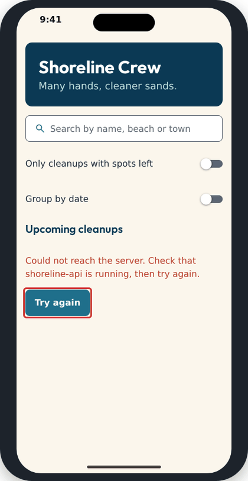
When the request fails, the same empty list shows the ErrorView: what happened, in words a volunteer understands, and one button to load again.
Three mistakes to expect, and how to coach each
The list inside <Screen scroll>. It looks right and draws everything again (virtualization gone; React Native warns on a phone, the web preview is silent). Coach: "Which component is the screen's scroll view now?" The list is: {...screen}.
Index keys, or no keyExtractor. React Native 0.88 quietly falls back to the index. Coach with the lesson's measured bug: open Weekend Cove's details, search calder, and the details stay open on Jetty Rocks.
Forgetting setRefreshing(false) on failure. The spinner never stops. Coach: "What happens with no signal?" (Self-check Q4.)
Guided lab
Folder: learners work in labs/module-08/l3_1-flatlist-and-sectionlist/starter/ (task sheet labs/module-08/l3_1-flatlist-and-sectionlist/TASKS.md); your reference is labs/module-08/l3_1-flatlist-and-sectionlist/solution/. New practice on the lesson's ideas: the six beaches of GET /api/sites (real answers in fixtures/) as a FlatList with a search field above them, three kinds of empty, and the beaches under their towns in a SectionList. Jest types and presses like a finger; no phone, no API.
Run it as shipped (3m).npm test: seven tests fail. Read the two Task 1 failures from the top together:
● Task 1: the search field keeps every letter you type
expect(instance).toHaveDisplayValue()
● Task 1: the list survives a wider window (one column, then two)
Invariant Violation: Changing numColumns on the fly is not supported. Change the key prop on FlatList when changing the number of columns to force a fresh render of the component.
Then npm run typecheck and npm run lint: nothing after their > lines. Every bug in this lab type-checks and lints clean.
Task 1 in pairs (8m): the header as an element, and key={columns}. Circulate for learners who move the TextInput out of the list entirely (it works, and the search no longer scrolls with the list: ask why the lesson keeps it in the header).
Expected when everything is done (the solution's run):
PASS src/lab.test.tsx
✓ Task 1: the search field keeps every letter you type
✓ Task 1: the list survives a wider window (one column, then two)
✓ Task 2: while loading: the search field and "Loading beaches…"
✓ Task 2: after a failure: the message and a Try again that loads again
✓ Task 2: nothing matches: the message, and Show all beaches clears the search
✓ Task 3: groupByTown: three towns in alphabetical order, two beaches each
✓ Task 3: the beaches under their towns: the towns are headings
Tests: 7 passed, 7 total
Debrief (4m): "Which tool found the inline header: tsc, the linter or the test?" (only the test: running it). "What does a new key tell React?" (a different list: build a new one).
Fast finishers: Task 2 (the three empty states with the given components) and Task 3 (groupByTown and a SectionList with sticky town headings).
Start the lesson project
The lesson project is The Cleanups List, seven steps in shoreline-crew. In the room, do Steps 1 and 2 (10 minutes): useScreenScroll in Screen.tsx, then LoadingView, ErrorView and EmptyState. npx tsc --noEmit prints nothing after each.
Done in the room = the four files typed, tsc silent, the app unchanged in the web preview (nothing uses the new components yet).
Goes home: Steps 3 to 7: the FlatList screen in one or two columns, every state (a slow API with node server.ts --latency=500-3000, a stopped one, volcano), pull to refresh and the web-only Refresh button, Group by date, check and commit. The finished code is lesson-09-end in the downloads.
With Group by date on, a SectionList shows the same cards under headings. stickySectionHeadersEnabled pins the current heading to the top while its cards scroll under it.
Checks for understanding
Ask these out loud during the demo and the lab:
What does a FlatList draw that a ScrollView with map does not? Answer: only the rows near the screen (and more as you scroll); the ScrollView draws every child at once.
Where does a list's key come from, and why not the index? Answer: the item's id; an index points at another item after filtering, and its state moves with it.
Which three things can ListEmptyComponent show in Shoreline Crew? Answer: the spinner while loading, the error with Try again, "No cleanups match your search." with Show all.
Why a Refresh button in the web preview only? Answer: a browser has no pull gesture for a list; Platform.OS === 'web' is a real platform difference.
Workbook self-check, items Q1 to Q6 (at the end of the block or at home).
Answers: Q1B) ScrollView 1,000; FlatList 358, about ten screens above and below what shows; Q2Each render makes a new function, so React sees a new component and builds a new text field after the first letter; pass an ELEMENT (const header = (...)); Q3C) keyExtractor={(card) => card.event.id}; Q4D) setRefreshing(false) in the .catch, not only in the .then; Q5A) A browser has no pull gesture for a list, and react-native-web's RefreshControl draws a plain View: test the pull in Expo Go; Q6B) stickySectionHeadersEnabled, set explicitly, with a background on the heading. Full set with explanations in the Answer Key.
Differentiation
Support: a card with the FlatList's three must-haves (data · renderItem · keyExtractor) and the two run-time mistakes (header = element · key={columns}). Learners whose app is behind start Lesson 3.1 from lesson-09-start tonight.
Stretch: Lab 3.1 Tasks 2 and 3; the lesson's Exercise 4 (Back to the top with scrollToOffset) and the Bonus Challenge (two columns in the grouped view).
3.2
Big Lists, Fast
60 min
Objectives (from the lesson page)
Explain how FlashList's recycling differs from FlatList's virtualization, and measure both in the web preview
Move a FlatList to FlashList 2 and adapt what is different: spacing inside the cells, no padding on the list's own style, item types and column spans
Keep each item's state with the right item when its cell is recycled, with useRecyclingState
Load a list page by page from the API's X-Total-Pages with onEndReached, with loading, failed and end-of-list footers that never ask twice or loop
Show items under headings in one FlashList by flattening sections into rows with sticky header indices
Timing in the room
10m
Frame: recycling versus virtualization; the bucket pile; the lesson's measured numbers; the supply runs for paging
15m
Live demo: the paging headers, a FlatList-only prop, the honest cast, paging that ships
15m
Guided lab: l3_2-big-lists-fast/starter, Tasks 1 and 2
10m
Start the lesson project: Steps 1 and 3
Mental model to say
From the lesson: "Last lesson's sign-in table wrote name tags for the people in line and threw the old ones away. Buckets work differently: when a volunteer comes back up the beach, their bucket goes on the pile, and the next volunteer in line takes it. FlashList treats rows like buckets. Two rules come with that: keep the buckets for different jobs in separate piles (a heading is not a card: getItemType), and empty the bucket before handing it on, or the next volunteer walks off with someone else's shells (item state: useRecyclingState)."
Then the numbers, from the lesson's lab table (the course measured them in the web preview, three runs each; the learners' numbers will differ, the pattern should not): rows created during the scroll test, thousands for FlatList against 39 for FlashList; frames per second near 60 for both at full speed, and FlatList falling behind with the CPU slowed six times. Say the limit with them: the web preview counts, it does not speak for a phone's native side or memory; a real phone and a release build have the final word.
Then the supply runs for paging: one runner at a time (ask once), no new runner every second after the van was locked (stop after a failure), check the crew does not already have that box (no duplicates).
Live demo (you type, they follow)
The API in terminal 1; a copy of lesson-10-end in terminal 2. Never run the benchmark live (it takes minutes); show the lesson's table and its lab screenshot.
The paging headers (3m). Terminal 1 runs the API. Terminal 3 (any folder): the lesson's command, which asks for the second page of upcoming cleanups, five at a time, and shows only the headers:
HTTP/1.1 200 OK
cache-control: no-store
content-type: application/json; charset=utf-8
link: <http://localhost:4000/api/events?when=upcoming&page=1&perPage=5>; rel="first", <http://localhost:4000/api/events?when=upcoming&page=1&perPage=5>; rel="prev", <http://localhost:4000/api/events?when=upcoming&page=2&perPage=5>; rel="last"
vary: Origin
x-total-count: 8
x-total-pages: 2
Date: (the time of your request)
Connection: keep-alive
Keep-Alive: timeout=5
Transfer-Encoding: chunked
The kit's run equals the lesson's card except the Date line (yours is the time of your request). Eight upcoming cleanups, two pages of five. X-Total-Pages is what the app reads to know when to stop: never "fewer than five came back". On PowerShell: curl.exe and NUL instead of /dev/null.
A FlatList-only prop (3m). In a copy of the app at the end of Lesson 3.2 (lesson-10-end), leave columnWrapperStyle={styles.cell} on the FlashList (after numColumns):
npx tsc --noEmit
src/app/index.tsx:221:9 - error TS2322: Type '{ data: SectionRow<Card>[]; keyExtractor: (row: SectionRow<Card>) => string; renderItem: ({ item: row, target }: ListRenderItemInfo<SectionRow<Card>>) => Element; ... 16 more ...; keyboardDismissMode: "on-drag"; }' is not assignable to type 'IntrinsicAttributes & FlashListProps<SectionRow<Card>> & { ref?: Ref<FlashListRef<SectionRow<Card>>> | undefined; }'.
Property 'columnWrapperStyle' does not exist on type 'IntrinsicAttributes & FlashListProps<SectionRow<Card>> & { ref?: Ref<FlashListRef<SectionRow<Card>>> | undefined; }'.
221 columnWrapperStyle={styles.cell}
~~~~~~~~~~~~~~~~~~
Found 1 error in src/app/index.tsx:221
The kit's run is the lesson's card. Skip the first line (every prop it was given, "... 16 more ...") and read the second: Property 'columnWrapperStyle' does not exist. Then the one tsc cannot catch: padding in FlashList's style type-checks, and its documentation says it is not supported; that is why useScreenScroll's frame goes on a View around the list. Undo.
The honest cast (4m). Create the lesson's lab screen (src/app/list-lab.tsx, Step 2) WITHOUT its two as RefObject<…> casts and run the checker:
npx tsc --noEmit
src/app/list-lab.tsx:39:34 - error TS2345: Argument of type 'RefObject<FlashListRef<string> | null>' is not assignable to parameter of type 'RefObject<FlashListRef<any>>'.
Type 'FlashListRef<string> | null' is not assignable to type 'FlashListRef<any>'.
Type 'null' is not assignable to type 'FlashListRef<any>'.
39 const flashTest = useBenchmark(flashRef, done, { startManually: true });
~~~~~~~~
src/app/list-lab.tsx:40:41 - error TS2345: Argument of type 'RefObject<FlatList<string> | null>' is not assignable to parameter of type 'RefObject<FlatList<any>>'.
Type 'FlatList<string> | null' is not assignable to type 'FlatList<any>'.
Type 'null' is not assignable to type 'FlatList<any>'.
40 const flatTest = useFlatListBenchmark(flatRef, done, {
~~~~~~~
Found 2 errors in the same file, starting at: src/app/list-lab.tsx:39
The first lines are the lesson's card (it shows the first error and ...). The ref really can be null before the list exists; the benchmark hooks only use it after the button is pressed, when it is not. With the casts back, tsc is silent and the linter prints only its env: lines. Say the rule: a cast only when you can say that sentence. Do not run the benchmark live: it takes minutes in a browser; show the lesson's numbers table and screenshot instead.
Paging that ships (5m). Open the finished screen's paging code. Walk the three details on the board: ask once (more must be idle), stop after a failure (only Try again asks), never show a cleanup twice (a Set of known ids). Then the footer's three states with the lesson's screenshot of a failed page:
shoreline-crew/src/app/index.tsx
function loadNextPage() {
if (load.status !== 'loaded' || !hasMore) {
return;
}
setMore({ status: 'loading' });
getEvents(upcomingPage(load.page.page + 1))
.then((next) => {
setLoad((current) => {
if (current.status !== 'loaded') {
return current;
}
// A cleanup can move to the next page while you scroll: never show it twiceconst known = new Set(current.events.map((event) => event.id));
const added = next.items.filter((event) => !known.has(event.id));
return { ...current, events: [...current.events, ...added], page: next.page };
});
setMore({ status: 'idle' });
})
.catch((error: unknown) => setMore({ status: 'failed', message: describeError(error) }));
}
// The list is near its end. Only ask when nothing is on its way and the last page did not fail:// after a failure, the Try again button asks (or the list would ask again and again)function onEndReached() {
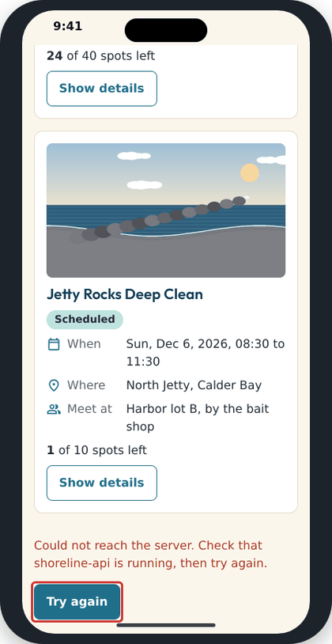
A failed page shows ErrorView in the footer. The five cleanups already loaded stay, and only Try again asks for page 2 again.
Point at the functional setLoad((current) => ...): the answer arrives later, and the state may have changed (a refresh) in between.
Three mistakes to expect, and how to coach each
State that travels with a recycled card. Open Tide Pool's details, scroll: Creek Mouth Willows shows them open. No tool warns. Coach: "What does FlashList do with the card that scrolled away?" (Lab 3.2 Task 1.)
onEndReached={loadNextPage}. It asks again after every failure (the course measured three requests within a hundredth of a second, hundreds in an earlier layout). Coach: "Who decides when to try again after a failure?" (the volunteer: Try again).
A key on the row inside renderItem. A web habit that defeats recycling (39 rows created became about 1,900 in the lesson's lab). Coach: "Where does FlashList want the key?" (keyExtractor only).
Guided lab
Folder:labs/module-08/l3_2-big-lists-fast/starter/ with labs/module-08/l3_2-big-lists-fast/TASKS.md; your reference is labs/module-08/l3_2-big-lists-fast/solution/. New practice: the PAST cleanups, three to a page (real pages in fixtures/), on FlashList. Jest renders the FlashList with FlashList's own Jest setup (the course app's tests do the same from Lesson 8.2), and MSW answers the requests and counts them.
Run it as shipped (2m).npm test: six tests fail. The Task 2 failures print the asked arrays: the pages the code requested.
Task 1 (4m): the test hands the SAME row another cleanup (what recycling does) and the report is still open. useRecyclingState(false, [cleanup.id]).
Task 2 (7m): the idle check, then the dedupe by id. Circulate for learners who check hasMore only (it is true while page 2 is on its way: the test sees two requests).
Expected when everything is done:
PASS src/lab.test.tsx
✓ Task 1: a recycled row does not keep the last cleanup's report open
✓ Task 2: near the end twice while page 2 is on its way: page 2 is asked for once
✓ Task 2: page 2 fails: the list stops asking until Try again
✓ Task 2: a cleanup that moved to page 2 is not shown twice
✓ Task 3: one heading before the first cleanup of each month
✓ Task 3: the months are headings in the FlashList
Tests: 6 passed, 6 total
Debrief (2m): "Which of these bugs would tsc or the linter have found?" (none). "Why does the test hold page 2 on its way?" (FlashList checks the end again while it waits; that is when a second request happens).
Fast finishers: Task 3 (month headings in one FlashList: flattened rows, getItemType, stickyHeaderIndices).
Start the lesson project
The lesson project is A Fast, Paged Cleanups List, seven steps. In the room, Steps 1 and 3 (10 minutes): npx expo install @shopify/flash-list (it pins 2.3.2, JavaScript only: Expo Go runs it), then SectionRow and flattenSections in src/utils/sections.ts.
Done in the room = FlashList in package.json without a ^, the two new exports typed, tsc silent.
Goes home: Step 2 (the lab screen: four reports, at full speed and with Chrome's CPU throttling at 6x, then deleted), Steps 4 to 7 (one FlashList for both views, recycling-safe cards, five at a time with the three footers, check and commit). The finished code is lesson-10-end.
One FlashList for the grouped view: headings are rows that span both columns (overrideItemLayout), and the current one stays pinned (stickyHeaderIndices). SectionList could not do two columns.
Checks for understanding
Ask these out loud during the demo and the lab:
What happens to a card that scrolls far off the top of a FlashList? Answer: it goes into a pool and is drawn again with another item's data.
How does the app know there is another page? Answer: the API's X-Total-Pages (in PageInfo), compared with the page it has.
What are the three rules that make infinite scroll shippable? Answer: ask once, stop after a failure (only Try again), never show an item twice.
What can the web preview NOT tell you about a list's speed? Answer: a phone's native side, its memory, the real frame rate; measure a real phone and a release build.
Workbook self-check, items Q7 to Q12 (at the end of the block or at home).
Answers: Q7D) Row components created during the scroll test: thousands for FlatList, a few dozen for FlashList; Q8The line after it: Property 'columnWrapperStyle' does not exist; FlashList has no row style, so the spacing lives inside each cell (half the gap on each side); Q9B) FlashList's documentation says padding in style is not supported; margin is fine; Q10A) useBenchmark(flashRef as RefObject<FlashListRef<string>>, ...): the ref is only used after the button is pressed, when the list exists; Q11Every failure changes the footer, FlashList checks the end again and would ask again and again (a busy radio, a drained battery); only when more is idle; after a failure only the footer's Try again asks; Q12C) Keeps only the items of page 2 whose id it does not have yet. Full set with explanations in the Answer Key.
Differentiation
Support: the board's three paging rules as a card; the lab's tests read aloud before any code (the asked arrays say what went wrong). Anyone behind starts Lesson 3.2 from lesson-10-start.
Stretch: Lab 3.2 Task 3; the lesson's Exercise 2 (a visible Load more button: infinite scroll is invisible to a screen reader) and Exercise 4 (open ids kept in the screen with extraData).
Part 1 Project Kickoff
P1
Kickoff: Fix-It Tables for the Alder Row Repair Café
50 min
Timing
5m
The client and the brief: who uses it, on what, and why it is local data
5m
The rubric: six rows, 0 / 1 / 2, complete = no row at 0; the milestones
5m
Setup: the starter as shipped (the tests and the type tests)
30m
TODO A in pairs, then TODO B started; you circulate
5m
Plan the week: each learner writes their Session 9 milestone in the workbook
The brief in three minutes (say it)
"The Alder Row Repair Café is a neighborhood repair café: once a month, volunteer fixers sit at four tables in the Alder Row community hall, electronics, clothing and bags, bikes and furniture, and neighbors bring things that are broken. Each item gets a paper tag with a number. Rosa Delgado-Finch, the café's volunteer coordinator, runs the queue from a clipboard today. She wants a phone app for the fixers: today's tickets, findable by item or by name, the finished ones out of the way, grouped by table when the hall is busy, readable in a dim hall at night, and one press to mark a repair done."
Then the scope: everything from Part 1 (Lessons 1.1 to 3.2) and nothing after it. The data is local (src/data/tickets.ts, twelve tickets): no API, no network, no account. The project sits in the learners' `shoreline/labs/projects/` and uses the labs' one shared install: nothing to install. No phone is needed: the tests, the type check, the linter and the web preview cover every rubric row.
TODO
File
What
Lessons
A
src/types.ts
the types: Category and TicketStatus as unions of words, Ticket exactly as the data (the tag number, the optional fixer)
2.5, 3.1 (and the TypeScript of the prerequisite course)
B
src/utils/tickets.ts
the words and the rules: three Record tables, isFinished, matchesSearch, filterTickets, countLabel, groupByCategory
2.5, 3.1
C
src/components/TicketCard.tsx
the ticket card: a heading and its tag, a status Badge, the optional fixer line, a Show problem toggle with accessibilityState, Mark fixed while in repair
2.1 to 2.4
D
src/app/index.tsx
the queue screen: a FlatList that is the whole screen, a header element (search, two switches, the count), two columns at 700 wide, the empty state, Mark fixed in state, and the grouped SectionList
2.4, 2.5, 3.1
The rubric (the same 0/1/2 scale as the final project)
Row
Meets (1)
1. Types and data
Unions for Category and TicketStatus; Ticket describes the data exactly (the optional fixer included); Record tables for every label and tone; npm run typecheck prints no error (the type tests in src/types.check.ts pass)
2. Components and layout
TicketCard and the screen are separate components with typed props; the given AppText, Badge, Button, SwitchRow and SearchField are reused, not copied; the card's top row is a flexbox row that wraps a long item name
3. Touch and input
The search field keeps every letter (a header ELEMENT); the two switches have labels; Show problem has accessibilityState={{ expanded }} and a label that starts with its visible words and names the item ("Show problem: Toaster"); Mark fixed only while in repair, and it changes the ticket in state (a new array, a new ticket)
4. The themed list
A FlatList that is the whole screen (useScreenScroll), keys from ticket.id, two columns at 700 wide without an error (key={columns}), the empty state with Show all repairs, the grouped SectionList with sticky table headings that have a background; every color from the theme
5. Accessibility and the phone
The item names and the table names are headers; every button and switch has a name that makes sense on its own; the safe areas are respected (useScreenScroll); npx expo lint reports 0 problems
6. Checks and explanation
npm test, npm run typecheck, npm run lint and npx expo export --platform web all pass; a 3-minute demo: one ticket from the data file to its card, and one Mark fixed press to the new count
12 points; complete = no row at 0. The full rubric is in RUBRIC.md and the workbook; scoring guidance by row is in final-assessment.html (Part 1 section). Part 1 met = the Fix-It Tables project complete under its rubric (no row at 0) AND the Part 1 assessment met (14 or more of 20 points, 70 %).
Setup, on the projector then on every machine
A terminal in labs/projects/part1-alder-row-repair-cafe/starter: npm test, then npm run typecheck. Every test fails (the first failures name TODO B); tsc reports the TODO A errors, among them the type tests:
FAIL src/project.test.tsx
Tests: 13 failed, 13 total
src/types.check.ts:5:1 - error TS2578: Unused '@ts-expect-error' directive.
src/types.check.ts:8:1 - error TS2578: Unused '@ts-expect-error' directive.
Found 16 errors in 3 files.
Explain the type tests once: src/types.check.ts holds lines that MUST be type errors once the unions are exact (a table called garden, a status spelled fixd). While TicketStatus is still string, tsc says Unused '@ts-expect-error' directive for them. Nobody edits that file or the test file: they are the café's acceptance criteria.
Then npm run web on YOUR machine with the model (solution/), at phone size and at 1024 wide, light and dark: this is where the learners are going. Do not show its code.
TODO A and B in pairs (30m): circulate for these
fixer not optional. tsc on tickets.ts: "Property 'fixer' is missing" for the waiting tickets. Ask: "Does every ticket have a fixer?"
number forgotten. The data has a tag number; the test file reads t.number. tsc says which property does not exist.
Labels as a switch or a long if chain. It works; ask what happens when the café adds a status (a Record makes tsc list every table: Session 9's written part asks this).
The shown list kept in state. Not yet (that is TODO D), but say it now: the list and the count are worked out on every render, never stored.
Done in the room = npm run typecheck shows no TS2578 and no tickets.ts error (the type tests pass), and the four TODO B tests pass for the fast pairs.
Milestones (write them on the board)
When
Done
Session 8 (kickoff, in the room)
the folder copied and npm test run; TODO A done (npm run typecheck clean of TS2578); TODO B started
Before Session 9 (at home, 2 to 3 hours)
TODO B and C done; TODO D's FlatList with the header element and the count
Session 9 (check-in and demo)
TODO D close: empty state, Mark fixed, two columns; the grouped view may still be open
One week after Session 9 (hand-in)
every test, npm run typecheck, npm run lint and the web export pass; the journal entry from TASKS.md
Closing
Exit ticket (3 questions, no notes, 4 minutes)
Put the three questions on the slide. Learners answer in the workbook's Exit Ticket box or on a sticky note. Sort them before Session 9: question 3's "not yet" pile tells you whose project needs the first check-in conversation.
Why must a list's key come from the data and not from the item's position? Answer: the key keeps each drawn row with its item; after filtering or sorting a position points at another item, and its state (open details) moves with it.
Name the three rules that make infinite scroll safe to ship. Answer: ask once (only when idle), stop after a failure (only Try again asks), never show an item twice (drop known ids).
Which TODO of Fix-It Tables will you finish first this week, and what does "done" look like for it? Answer: their own; check it against the milestones.
Homework (about 2 to 3 hours)
Finish both lesson projects. 3.1: Steps 3 to 7. 3.2: Steps 2 (the lab and its four reports, then delete it) and 4 to 7. Both end with npx tsc --noEmit silent, npx expo lint printing only its env: lines, and a commit.
The Part 1 project to the Session 9 milestone: TODO B and C done, TODO D's FlatList with the header element and the count (labs/projects/part1-alder-row-repair-cafe/TASKS.md).
Lesson exercises. 3.1: Exercises 1 and 2 (Exercise 3 if time). 3.2: Exercises 1 and 3; Exercises 2 and 4 are a stretch.
Both Quick Quizzes on the lesson pages (answers in the Answer Key).
Labs: Lab 3.1 Tasks 2 and 3; Lab 3.2 Task 3.
Journal: both entries (3.1: two apps in airplane mode; 3.2: your four lab reports).
Before the Next Lesson (3.2's list): the lab screen deleted, the performance monitor tried in Expo Go if you have a phone, /list-lab opened once in the web preview after the file is gone.
Bring list for Session 9
The Fix-It Tables project running on your laptop (npm test shows how far you are), with TODO A to C done.
The labs' shared install working (npm test in any lab starter): the Part 1 assessment's practical runs in labs/module-09/part1-practical/starter, installed BEFORE the session.
A three-minute demo plan: one ticket from the data file to its card, and one Mark fixed press to the new count. The workbook and the journal.
If You Run Long or Short
Running long: what to protect and what to cut first
Protect: the kickoff's 50 minutes; the 3.1 "two mistakes no checker sees" step; the 3.2 paging rules.
Cut first (saves 6m): the 3.1 empty-states tour and the 3.2 honest-cast step.
Cut second (saves 20m): both project starts: learners do Steps 1 and 2 (3.1) and 1 and 3 (3.2) at home.
Cut third (saves 10m): the kickoff's TODO B: TODO A done in the room is the minimum.
Running short: what to add
Lab 3.1 Task 3 together: a SectionList with sticky town headings, then the question "why does the heading need a background?"
The lesson 3.1 index-key bug live in the web preview: details open on Weekend Cove, search calder, watch them land on Jetty Rocks.
The kickoff's TODO C sketched on the board: which parts of the card are given (Badge, Button), which are new.
Instructor Kit · Facilitator Guide
Session 9: Part 1 Project Check-in and Assessment
How to run Session 9, the close of Part 1: a check-in on the Alder Row Repair Café project with short rubric conversations, the Part 1 assessment (a written part and a practical, 20 points, 14 to meet), three-minute project demos with peer feedback, and a review that bridges to Part 2 or closes the course when Part 1 runs alone.
0 new lessons3 hrs sessionReview of Lessons 1.1–3.2Session 9 of 26 · Part 1
How to Use This Guide
Session 9 teaches no new lesson. It closes Part 1 with three things: a check-in on the Part 1 project (studio time with short rubric conversations), the Part 1 assessment (a written part and a practical), and demos. When Part 1 runs as a course of its own, it is also the last session.
The assessment and the rubric are defined once (the kit's final-assessment.html, Part 1 section, and labs/projects/part1-alder-row-repair-cafe/RUBRIC.md); this guide says how to run them. Part 1 met = the Fix-It Tables project complete under its rubric (no row at 0) AND the Part 1 assessment met (14 or more of 20 points, 70 %).
Every output quoted here is real: the review snippets checked by tsc in a copy of the project's model solution (a learner's terminal), the practical and the project run by the kit's lab checker. No phone is needed for anything in this session.
Teal blocks are hands-on, amber blocks are watch-outs.
The #1 risk of Session 9: the assessment loses its conditions
The practical is open book but not open chat: a learner with an assistant in another window is no longer being assessed. Neither is a practical that starts with ten minutes of installing on venue Wi-Fi. Before: the bring list said the practical's starter must run (npm test in labs/module-09/part1-practical/starter); check it at the door. During: chat assistants closed, screens visible, questions only about the wording. After: score from npm test, npm run typecheck and the code, never from memory.
Before the Session
☐ Run the kit checks once:python3 labs/check_labs.py module-09 (4 runs: the practical's starter fails its five tests, its solution passes them, tsc and the linter) and python3 labs/check_labs.py projects/part1-alder-row-repair-cafe (6 runs).
☐ Print: the workbook's written part (closed book, on paper), the scoring sheet (final-assessment.html, Part 1 section), RUBRIC.md for each learner, sticky notes.
☐ Hand out at the start of the practical only:labs/module-09/part1-practical/TASKS.md (the starter folder itself was installed at home; its TASKS.md stays closed until then).
☐ Projector: the model project in the web preview (npm run web in solution/), a 15-minute and a 30-minute timer, the demo order.
☐ Board: the agenda; the assessment rules; the demo script (one ticket from the data to its card; one Mark fixed press to the new count).
Session 9 Agenda (3 hours)
Clock
Minutes
Segment
What happens
0:00
15
Warm-up: Part 1 on one page
Learners fill the workbook's Part 1 map; three cold-call questions.
0:15
50
Part 1 project check-in
Studio time on Fix-It Tables; a five-minute rubric check-in at each table; self-assessment.
1:05
10
Break
Projector: the written part and the timers. Learners: chat assistants closed, the practical's starter open.
1:15
45
Part 1 assessment
Written part (15 minutes, closed book, 10 points), then the practical (30 minutes, open book, 10 points).
2:00
40
Part 1 project demos
Three minutes each: one ticket from the data to its card, one Mark fixed press to the new count; a peer's rubric feedback.
2:40
10
Part 1 review and what comes next
What Part 1 built; Part 2 in one slide, or the course close when Part 1 runs alone.
2:50
10
Wrap-up
Exit ticket, self-assessments handed in, how results and resubmission work.
Total
180
Ends at 3:00.
In the room. No new content: the project (50 minutes of studio and check-ins, 40 of demos), the assessment (45) and closing Part 1. The self-check (12 items reviewing Part 1) is homework or a warm-down.
Goes home (about 2 to 3 hours). The Fix-It Tables project to the hand-in, one week after this session (the folder without node_modules and dist, plus the journal entry from TASKS.md); the 12 self-check items; anything the scoring sheet's "next step" says. When Part 2 follows: Session 10's prework (Lesson 4.1 needs the app at the end of Lesson 3.2, or lesson-11-start).
Protect, in this order: the assessment's 45 minutes and its conditions; the check-in conversations; the demos. Cut first: the review block, then the warm-up's map (keep the three questions).
Opening Segment
0:00
Warm-up: Part 1 on One Page
15 min
Sequence
The map (8m). Learners fill the workbook's Part 1 map: for each module, two ideas their project uses and where. Pairs compare.
Three cold-call questions (7m): "Which command finds a style-name typo before a phone shows plain text?" (npx tsc --noEmit); "Where does the ticket count come from?" (worked out from the search and the switch on every render, never stored); "Why key={columns} on the FlatList?" (a list cannot change its columns: a new key builds a new one).
Part 1 at a glance (for the board)
Module
Title
Lessons
Ideas the project uses
1
Getting Started
1.1 to 1.3
native views, not a DOM; Metro runs, tsc and the linter check; the HQ's shared code on the phone
2
Building Native UI
2.1 to 2.5
View, Text, StyleSheet; flexbox the native way; images, icons, safe areas; touch and input; responsive and themed UI
3
Lists
3.1, 3.2
FlatList and SectionList, keys, empty states, refresh; FlashList, recycling, paging
Part 1 Project Check-in
P1
Check-in: Alder Row Repair Café
50 min
Timing
5m
Where we are: the milestones, the hand-in date, the rubric's six rows
40m
Studio time; you visit each table for a five-minute rubric check-in
5m
Self-assessment: each learner scores their own project with the rubric (workbook)
The five-minute check-in (per learner or pair)
"Show me npm test and npm run typecheck." (A to C should be done; D under way.)
"Which rubric row are you proudest of, and which worries you?" Read that row with them.
"Walk me through one ticket, from the data file to its card." (Row 6's demo, rehearsed.)
One concrete next step, written in their workbook's check-in box.
Common problems and the nudge
Most common problems, and the nudge.fixer not optional (tsc on tickets.ts: "Property 'fixer' is missing"); the shown list or the count in useState (ask: can you work it out from the search and the switch?); the header as () => (...) (D2 fails: the field keeps only the first letter); numColumns without key={columns} (nothing fails at 390 wide; widen the web preview); markFixed editing the ticket in place (ticket.status = 'fixed': React does not re-render, D4 fails); a grouped heading without a background (the cards show through it when it is pinned).
Stuck on TODO D. Open Lesson 3.1's Step 3 side by side: the Cleanups FlatList is this screen with other names.
A test "fixed" by editing the test file. Restore it from the starter; the tests are the café's acceptance criteria.
What the model solution shows (for you)
The project's model, as the kit's checker runs it:
PASS src/project.test.tsx
✓ B1: a label for every table and every status
✓ B2: search matches the item or the owner, ignoring case and spaces
✓ B3: hiding finished repairs leaves out fixed and unfixable ones
✓ B4: the tickets under their tables, in hall order, empty tables left out
✓ C1: the card shows the item as a heading, its tag, the owner, the status and the fixer
✓ C2: a waiting ticket has no fixer line and no Mark fixed button
✓ C3: Show problem opens the problem and says it is expanded
✓ C4: Mark fixed tells the screen which ticket
✓ D1: the queue: banner, search, two switches and the count
✓ D2: typing a search keeps every letter and filters the list
✓ D3: nothing matches: the message, and Show all repairs brings everything back
✓ D4: Mark fixed changes the ticket, and a hidden finished ticket leaves the list
✓ D5: Group by table shows the tables as headings, empty tables left out
Tests: 13 passed, 13 total
npm run typecheck and npm run lint print nothing after their > lines; npx expo export --platform web ends with Exported: dist. The course's own stage checker (npm ci from a lockfile, tsc, lint, Jest, exports for web, Android and iOS, seven browser checks at 390 and 1024 wide, light and dark, with axe) passes on the same model. Scoring guidance by row is in final-assessment.html (Part 1 section).
Part 1 Assessment
A1
Part 1 Assessment
45 min
Rules (say them before you start)
Written part: 15 minutes, closed book, 10 points, on the workbook's printed pages (collected at the end).
Practical: 30 minutes, open book (lesson pages, their own code), no chat assistants, no classmates; 10 points; labs/module-09/part1-practical/starter, installed at home.
Total 20 points; 14 or more (70 %) = the Part 1 assessment met. Part 1 met = the Fix-It Tables project complete under its rubric (no row at 0) AND the Part 1 assessment met (14 or more of 20 points, 70 %).
Below the line is not the end: one retake of the part that fell short, at a time you agree.
The written part (model answers and marking in the Answer Key)
Question
Points
What it asks
W1
1
Metro bundles a file with a type error and the phone shows the app. Why does nothing complain, and which command finds the error?
W2
2
A learner writes this line in the ticket card and npm run typecheck prints the error below. What does it mean, and how do you fix it?
W3
1
The café adds a fifth status, 'collected', to TicketStatus. What does npm run typecheck do next, and why is that useful?
W4
1
On a phone, this card shows the text Fixer: and nothing else when there is no fixer, but a string straight inside a <View> stops the app. Which rule is behind the second, and which tool finds it?
W5
1
Why does the queue use keyExtractor={(ticket) => ticket.id} and not the index?
W6
2
A teammate writes ListHeaderComponent={() => <SearchField ... />}. What does a volunteer notice on a phone, why, and what do you write instead?
W7
1
The window gets wider than 700 and the queue goes from one column to two. Without key={columns} the screen stops. Why does the key fix it?
W8
1
Name two things a phone's dark mode needs from the code, as the course does it.
The practical
As shipped, npm test in the starter fails five tests:
● Task 1: a label for every shift
TODO 1: the label for setup
● Task 2: the volunteers, their shifts and the count
Unable to find an element with text: 4 volunteers
● Task 2: Only repair tables
Unable to find an element with role: switch, name: Only repair tables
● Task 3: Add volunteer adds a repair-table volunteer and clears the field
Unable to find an element with accessibility label: Volunteer name
● Task 3: no name, no volunteer: a message instead
Unable to find an element with role: button, name: Add volunteer
The reference solution:
PASS src/practical.test.tsx
✓ Task 1: a label for every shift
✓ Task 2: the volunteers, their shifts and the count
✓ Task 2: Only repair tables
✓ Task 3: Add volunteer adds a repair-table volunteer and clears the field
✓ Task 3: no name, no volunteer: a message instead
Tests: 5 passed, 5 total
Task
Points
How to score
Task 1: the shift label
3
Test 1 passes (2); a Record or one branch per shift, no default that hides a missing one (1).
Task 2: the list and its switch
4
Tests 2 and 3 pass (1 each); the shown list and the count derived from ONE piece of state, never stored (1); a FlatList with keys from volunteer.id and the empty message in ListEmptyComponent (1).
Task 3: add a volunteer
3
Tests 4 and 5 pass (1 each); the new volunteer added with a NEW array, and the field's message shown with accessibilityRole="alert" (1).
Score after the session: npm test and npm run typecheck in each hand-in, then read the code for the non-test points. A solution that passes its tests but fails tsc loses that task's code point.
Watch-outs
A learner finishes the written part in five minutes. Ask them to check W2 and W6 again: both are worth two points and need a reason.
Install problems in the practical. No live debugging: note the time, give them a ready copy, add the lost minutes.
Questions during the practical. Only about the task's wording.
Part 1 Project Demos
D1
Project Demos
40 min
Protocol
Three minutes each from the learner's machine (web preview, or Expo Go on their phone): one ticket from src/data/tickets.ts to its card (types, the label tables, the card's props), one Mark fixed press to the new count (state, a new array, the derived count).
A peer reviewer (the next learner on the list) fills the workbook's peer-feedback box with the rubric: one strong row, one question.
You note the evidence for rows 5 and 6. The other rows are scored on the hand-in.
Part 1 Review and What Comes Next
R1
Review: What Part 1 Built
10 min
Sequence
What Part 1 built (5m). Shoreline Crew at the end of Lesson 3.2 on the projector: native views, a themed design system, touch and input, a fast paged list with sticky headings; and their own project, which used those ideas for a new client.
One FlashList for the grouped view: headings are rows that span both columns (overrideItemLayout), and the current one stays pinned (stickyHeaderIndices). SectionList could not do two columns.
If Part 2 follows (5m): "So far the app is one screen. Part 2 gives each cleanup its own screen with Expo Router, signs volunteers in, talks to the API from a real phone, works offline and uses the phone's camera, location and notifications." Session 10 opens with a Part 1 refresher and a catch-up for anyone joining.
If Part 1 runs alone (5m): close the course: what they can now do, how results are recorded, where to go next (Part 2, the lessons' Going Further sections).
Closing
Exit ticket (3 questions, no notes, 4 minutes)
Which Part 1 idea did your project use most, and where? Answer: any idea with a place in their code.
One rubric row you will improve before the hand-in, and how. Answer: their own; check it against the check-in note.
What can you build now that you could not at the start of Part 1? Answer: their own; use it for course feedback.
Recording results
Part 1 met = the project complete (no rubric row at 0) AND the assessment met (14 or more of 20). Use the scoring sheet in final-assessment.html.
Below either line: the "next step" in writing and one resubmission (project) or retake (assessment) within two weeks.
When Part 2 follows, nothing here blocks Session 10: its catch-up code (lesson-11-start) lets every learner start from the same place.
Homework (about 2 to 3 hours)
Finish the Part 1 project to the hand-in, one week from today: npm test, npm run typecheck, npm run lint and npx expo export --platform web --output-dir dist all pass; the folder zipped without node_modules and dist; the journal entry from TASKS.md.
The 12 self-check items reviewing Part 1 (answers in the Answer Key).
If Part 2 follows: the app at the end of Lesson 3.2 committed (or lesson-11-start from the downloads), the API starting with node server.ts.
Self-check: Part 1 review (compact answers)
Answers: Q1C) A native view, made by React Native's renderer; Q2B) Plain text: the style is just undefined, so the name lost its look silently; Q3flexDirection: 'row' on the row (column is React Native's default) and flexShrink: 1 on the name, so it wraps; Q4A) Padding from useSafeAreaInsets(), here through useScreenScroll(); Q5D) Nothing, and no tool complains; Q6Whether it is open: accessibilityState={{ expanded: open }} (and aria-expanded for the web preview); Q7B) A Record<Category, string> needs one entry per member: furniture is missing; Q8C) createThemedStyles(({ colors }) => StyleSheet.create({ ... })), then useStyles() in the component; Q9A) The keyboard closes after every letter; Q10The key keeps each drawn row with its item; after filtering an index points at another item (an open panel jumps), an id stays; Q11C) Reuses it for a card coming in, with new data; Q12Ask once (only when idle), stop after a failure (only Try again asks), never show an item twice (drop known ids); stop at the API's X-Total-Pages. Full set with explanations in the Answer Key.
Bring list for Session 10 (when Part 2 follows)
A laptop where the API and npx expo start run, Shoreline Crew at the end of Lesson 3.2 (or lesson-11-start).
A phone with Expo Go if you have one; the workbook and the journal.
If You Run Long or Short
Running long
Protect: the assessment's 45 minutes; the check-in conversations.
Cut first (saves 8m): the warm-up's map becomes homework.
Cut second (saves 10m): demos in groups of four with peers scoring.
Running short
Self-check items 2 and 7 live: tsc's message on the projector, the room proposes the fix, then run it.
A keyboard pass through two volunteers' projects in the web preview: what works, what the rubric says.
React Native & Expo: Build and Ship a Mobile App · Facilitator Guide
Part 2: Navigation, Data and Devices
Sessions 10 to 17. Modules 4 to 6: Expo Router (file-based routes, tabs, nesting and modals, sign-in flows and protected routes, deep links), the API from a phone with TanStack Query, storage on the device, mobile forms and offline first, then the device features: permissions, the camera and photos, location and maps, notifications, haptics, sharing and files. Opens with a Part 1 refresher and the catch-up code, and ends with the Part 2 project check-in and assessment.
Instructor Kit · Facilitator Guide
Session 10: File-Based Routing, Tabs and Modals
How to teach the first session of Part 2: a Part 1 refresher and the catch-up for learners who start here, then Lesson 4.1 (Expo Router's files are screens, a stack with its header, Link and the router, params that are always strings, typed routes that make a broken link a compile error) and Lesson 4.2 (a JavaScript tab bar in a (tabs) group inside the root stack, screens on top of the tabs, honest placeholder tabs, a modal with a Done that works however it was opened), with two headless routing labs built on Expo Router's own testing library.
2 lessons3 hrs sessionLessons 4.1–4.2Session 10 of 26 · Part 2
How to Use This Guide
Session 10 opens Part 2, Navigation, Data and Devices (Sessions 10 to 17). It starts with a 15-minute Part 1 refresher and the catch-up check for learners who join here, then the usual rhythm for both lessons: frame (the goal and one mental model) → live demo (you type, they follow) → guided lab (a kit lab: new practice, never the lesson's own project) → start the lesson's own project. The rest of each project, the exercises, quizzes and journals are homework.
Type, do not paste. Every command below was run to produce the output under it, in a learner's terminal (Node 24), on the course API and on copies of the app exactly as a learner has it after Lesson 4.1 and after Lesson 4.2. Where the lesson shows the same command, the kit's output is the lesson's card, word for word. Ask for a prediction before every run.
No phone was used to make this kit, and today needs none: the lessons run in the web preview (Expo Go still cannot reach the API at localhost until Lesson 5.1). What only a phone shows (the native header and back button, the iPhone's swipe from the left edge, Android's system back, the modal sliding up as a card) is described the way the lessons describe it, from the React Navigation and Expo Router documentation. Have your own phone with Expo Go if you want to show the tabs and the modal, which need no data.
Keep lesson_11.html and lesson_12.html open for the tables (files and addresses; the stack on three platforms; tabs versus stack; on top of the tabs or inside a tab; the edges table; modals on three platforms). Labs live in labs/module-10/: starter/ folders and TASKS.md are handouts, solution/ folders are yours until the session is over.
The routing labs run headless: npm test builds a real Expo Router app from the lab's app/ folder with Expo Router's own testing library (expo-router/testing-library), opens it at an address and presses its buttons. One difference from the course app, said in every lab: no Metro runs in a lab, so there are no typed routes, and params are written out (useLocalSearchParams<{ id: string }>()).
The #1 risk of Session 10: a room at two different starting points
Part 2 can run on its own, so some learners finished Part 1 with you and some meet Shoreline Crew today. A learner without the code from Lesson 3.2 cannot start Lesson 4.1. Before: send the catch-up page (the workbook's Start Here page and labs/module-10/l4_0-starting-with-part-2/TASKS.md) a week ahead to anyone new, and to anyone whose own app is broken: they unzip lesson-11-start, run npm ci, and reply with the last line of the check. In the room: the catch-up check gets five minutes of the opening; a NOT READY machine pairs with a ready neighbor for the 4.1 demo and lab (the lab needs only the shared lab install, not the course app) and gets fixed during the break. After: a learner who used lesson-11-start uses lesson-12-start next time if today's project is not finished.
Before the Session
☐ A week before: to new learners and anyone whose Part 1 app does not run, send the catch-up steps (below) and ask for the last line of node labs/module-10/l4_0-starting-with-part-2/check_environment.mjs. Everyone else: "bring your shoreline-crew as Lesson 3.2 left it, with npx tsc --noEmit clean".
☐ Files to hand out: the labs/module-10/ folder without the solution/ folders; lesson-11-start.zip (the code at the start of 4.1) and lesson-12-start.zip (the start of 4.2, for anyone who does not finish 4.1's project) from the course site's downloads, on a stick in case the network fails.
☐ Run the kit check once:python3 labs/check_labs.py module-10 from this kit's folder (13 runs, about four minutes: the catch-up check on a fresh copy of lesson-11-start with a private API, NOT READY without npm ci and READY with it; both routing labs' starters fail as declared and the solutions pass their tests, type checks and lint).
☐ Projector machine: your shoreline-crew at the start of 4.1 (yours, or lesson-11-start), two terminals ("api" running node server.ts, "crew" with npx expo start), the web preview in a phone-sized browser window, VS Code's explorer showing src/app; a second copy at the end of 4.1 (lesson-12-start) for the 4.2 demo, so the 4.1 project you start in the room is not in the way.
☐ Board, before learners arrive: Part 1 in one line per module (Module 1: React Native and the toolchain; Module 2: native components, layout, images, touch, themes; Module 3: FlatList and FlashList, paging); the file-to-address table (index.tsx → /, cleanups/[id].tsx → /cleanups/e08, +not-found.tsx → everything else, _layout.tsx → no address); and an empty box labeled "Root Stack" that you fill during 4.2.
☐ Print or share: the workbook (its Start Here page has Part 1 in one page, the refresher and the catch-up checklist), sticky notes for the exit ticket.
Known traps today
Symptom
Cause
Fix
Did you mean '"/cleanups/[id]"'? (TS2820)
A misspelled route in a Link
The suggested address. Never edit .expo/types/router.d.ts.
tsc rejects a link to a route that exists ("/" | … | "/_sitemap")
Metro was stopped when the file was added: stale route types
Start npx expo start, then run tsc again.
string | string[] | undefined (TS2345) on a param
useLocalSearchParams() without the route's name
useLocalSearchParams<'/cleanups/[id]'>(); not as string.
Too many screens defined. Route "x" is extraneous.
The layout names a file that does not exist (yet, or a typo)
Expected in 4.1 Step 1 and 4.2 Step 2 until the files exist; otherwise the name.
No route named "x" exists in nested children
A layout names a file that moved or is misspelled; the tab vanishes
The file's name without .tsx; the warning lists the names that exist.
No tab bar on the first screen, header "index", no warning
src/app/index.tsx copied, not moved
Delete the old file (git mv avoids it).
git mv or mkdir fails on (tabs) or [id]
The shell reads the brackets or parentheses
Put the path in quotes: "src/app/(tabs)".
Starting with Part 2: the Catch-up Page
For learners who join the course at Part 2, or whose Part 1 app is broken. CODE ONLY: everyone continues from the course's own code at the end of Lesson 3.2, which is exactly the start of Lesson 4.1, the download lesson-11-start (it holds both shoreline-api and shoreline-crew; shoreline-api.zip alone is the same API). The steps are in the workbook's Start Here page and in labs/module-10/l4_0-starting-with-part-2/TASKS.md, and the kit's check runs them on a fresh copy of the download:
Unzip lesson-11-start.zip into a fresh course folder shoreline, so that shoreline/shoreline-api/server.ts and shoreline/shoreline-crew/package.json exist; copy the kit's labs/ folder next to them (and npm install once in shoreline/labs, the shared lab install, if they have not done it in Part 1).
In shoreline-crew: copy .env.example to .env.local (keep http://localhost:4000 for the web preview; the download's README says the same; Lesson 5.1 covers phones), then npm ci.
Terminal 1 in shoreline-api: node server.ts. Terminal 2 in shoreline: the environment check from Session 1, copied unchanged into the catch-up folder.
In shoreline-crew: npx tsc --noEmit prints nothing and npx expo lint only its two env: lines; npx expo start, then w: the Cleanups list.
Before npm ci, the check says (its last line is NOT READY):
FIX shoreline-crew has no packages yet: cd shoreline-crew, then npm install
After it, on the instructor's machine (versions and folders differ on a learner's; without code or git those lines are CHECKs and the verdict READY WITH NOTES):
Environment check for React Native & Expo: Build and Ship a Mobile App
Course folder: shoreline
OK Node.js v24.22.2 (24 or newer)
OK npm 11.19.1
OK Git 2.34.1
OK VS Code 1.146.0
OK shoreline-api is in the course folder
OK shoreline-crew: Expo SDK 58 (expo 58.0.25), React Native 0.88.1, TypeScript 6.0.3
OK the API answers at http://localhost:4000/api: "Many hands, cleaner sands.", 8 upcoming cleanups
OK the development server starts (npx expo start) and bundles the app for the web preview
OK tsc --noEmit: no type errors
OK npx expo lint: no problems
READY for React Native & Expo: Build and Ship a Mobile App
And the lesson's own two checks in shoreline-crew, the same as Lesson 4.1's card:
What a Part 2 starter needs to know (the refresher covers it)
The app so far: a themed list of upcoming cleanups from shoreline-api (search, only open, grouped by when, two columns on wide screens), FlashList with paging and pull to refresh, a card with a quick look (Show details, useRecyclingState), fonts, icons, dark mode, a Screen component that handles the safe areas.
The habits: two terminals (the API first); npx tsc --noEmit and npx expo lint before any task is done (silence is success); Metro runs code without checking types; the web preview is a translation, not a phone.
The vocabulary: View, Text, Pressable with onPress, StyleSheet (column-first flexbox), createThemedStyles, Screen's edges, FlashList's recycling. Learners who did the React + TypeScript course know routing from React Router; 4.1 says what changes on a phone.
Not needed today: the Part 1 project or the Part 1 assessment.
Session 10 Agenda (3 hours)
Clock
Minutes
Segment
What happens
0:00
15
Welcome to Part 2: refresher and catch-up check
Part 1 in one page, six refresher questions (R1 to R6), and the catch-up check (lesson-11-start) for anyone who starts the course here.
0:15
10
4.1 Frame and mental model
Signposts at the trailhead (files are screens), the clipboard pile (push, back, replace), three places for screen options.
0:25
20
4.1 Live demo
The cleanup screen's files, its API answer and the 404, then two typed-route errors tsc catches (the lesson's cards, word for word).
0:45
20
4.1 Guided lab
labs/module-10/l4_1-file-based-routing/starter: Tasks 1 and 2 in pairs (a route in the wrong folder, a site that does not exist).
1:05
15
4.1 Start the lesson project
Steps 1 to 3: header options for the stack, Detail in its own file, the cleanup screen opened by its address.
1:20
10
Break
Leave the stack drawing (a pile of clipboards) on the board.
1:30
10
4.2 Frame and mental model
Tables in the crew tent: tabs, a stack at one table, a modal handed to you; the navigator tree; the edges table.
1:40
25
4.2 Live demo
The (tabs) group and its layout, the modal route, then a tab name typo: tsc silent, Metro warns, a tab vanishes.
2:05
20
4.2 Guided lab
labs/module-10/l4_2-tabs-nesting-and-modals/starter: Tasks 1 and 2 (the missing tab, a header titled "(tabs)").
2:25
25
4.2 Start the lesson project
Steps 1 and 2: the tab icons, the (tabs) group with git mv, the tab layout, the root layout's (tabs) line.
2:50
10
Wrap-up
Exit ticket (3 questions), homework, bring list for Session 11.
Total
180
Ends at 3:00.
In the room. The lesson pages estimate 130 + 140 = 270 minutes for a learner working alone; after the opening, the break and the wrap-up the room has 145. Each lesson keeps its full shape (model, demo, lab, project start); the projects' later steps go home.
Goes home (about 2 to 3 hours). Lesson 4.1's project Steps 4 to 6 (Open on every card, the not-found screen, check, walk every way back, commit) and Lesson 4.2's Steps 3 to 6 (the modal, three honest tabs, cleanups on top of the tabs, check and commit): 4.2 builds on 4.1's finished code, so 4.1 comes first (or start 4.2 from lesson-12-start). Both labs' remaining tasks; each lesson's Hands-on Exercises; both Quick Quizzes; both journal entries.
Protect, in this order: the catch-up result for every new learner; the 4.1 "misspelled route" step (typed routes are the lesson's payoff); the 4.2 navigator tree and "a tab that disappears" (reading Metro's warnings is the skill); both labs' first task. Cut first: the 4.1 API steps (the lesson explains the request), then the 4.2 "Done, however it was opened" step (it is 4.1's leave() again), then the 4.2 project start (learners do Steps 1 and 2 at home from the lesson).
Opening Segment
0:00
Welcome to Part 2: Refresher and Catch-up
15 min
Timing
3m
Welcome, and where Part 2 goes: navigation (Module 4), data that survives a dropped connection (Module 5), the phone's features (Module 6)
7m
Part 1 in one page and the refresher R1 to R6 (fingers up, 1 to 4 for A to D)
5m
Catch-up check: new learners' READY lines; NOT READY pairs up
Sequence and talking points
Welcome (3m). New faces introduce themselves (name, phone, what they want to build). Say: "Part 1 gave us one screen that lists cleanups well. Part 2 turns it into an app: more screens, a tab bar, sign-in, real data from the API on a phone, offline, and the camera, location and notifications. Today: how an app is a set of screens you move between."
Refresher (7m). The workbook's Start Here page: Part 1 in one page, then R1 to R6. Learners answer alone (three minutes), then fingers for each. Answers: R1 B; R2 C; R3 A; R4 D; R5 B; R6 C. R5 and R6 come back today: recycled cards must link to their own cleanup, and every new screen gets its edges.
Catch-up check (5m). Anyone who used lesson-11-start shows the last line of node labs/module-10/l4_0-starting-with-part-2/check_environment.mjs (or runs it now: about a minute with the API running). READY: done. NOT READY with the packages FIX: npm ci in shoreline-crew now, check again at the break. Nothing at all: pair with a ready neighbor; the 4.1 lab needs only the shared lab install, and the break fixes the rest.
Watch-outs
Do not re-teach Part 1. The refresher is a reminder; a learner who misses three or more gets the lesson numbers next to each R item (the key has them) and an evening with those lessons.
"My Part 1 app differs from yours." Fine if tsc and lint are clean and the list loads; the lesson's diffs assume the course code, so anyone with large differences switches to lesson-11-start (their own work stays in its own folder).
Lesson Plans
4.1
File-Based Routing
65 min
Objectives (from the lesson page)
Explain how Expo Router turns the files in src/app into screens and addresses, including layouts, index, dynamic [id] segments and +not-found
Configure a stack and its header bar in three places: for every screen, for one route in the layout, and from inside a screen once its data has loaded
Move between screens with Link (including asChild on your own button) and with the imperative router, and choose push or replace
Read a route's params with useLocalSearchParams, typed from the route, and explain why they are always strings
Use typed routes to catch broken links with tsc, and know when Metro must run to refresh them
Timing in the room
10m
Frame: files are screens (signposts at the trailhead); the stack (the clipboard pile); options at three levels
20m
Live demo: the folder and the sitemap, the screen's request and its 404, params and the way back, two typed-route errors
20m
Guided lab: l4_1-file-based-routing/starter, Tasks 1 and 2 in pairs
15m
Start the lesson project: Steps 1 to 3
Mental model to say
From the lesson: "A big beach has a map at the car park: numbered access paths, each with a signpost. The folder src/app is that map. Every file is a signposted path, and its name is what is written on the post. cleanups/[id] is not one path but a rule. And +not-found is the sign that says 'this path does not exist, the main beach is that way'. You change the map by adding a file; nobody keeps a separate list that can go out of date."
Then the stack: "At the sign-in table, the crew leader keeps a pile of clipboards. Looking up one cleanup puts its sheet on top (push); putting it down shows the sheet underneath, exactly as it was (back). Swapping the top sheet without keeping it is replace. And a single sheet handed to you with no pile under it (a link from outside) has nothing to go back to: canGoBack() is false."
Then the three levels of screen options (screenOptions for all, Stack.Screen name=… in the layout for one route, Stack.Screen options inside a screen for loaded data) and the platform table: centered title and a back chevron with words on an iPhone, left title and an arrow on Android, an arrow link in the web preview. Write Link for go-there, router for code-decided on the board.
Live demo (you type, they follow)
In the course app at the start of 4.1, then the finished code. The outputs below come from the course API and from a copy of the app exactly as a learner has it at the end of Lesson 4.1, with Metro's route types written.
The map is the folder (3m). Open src/app in VS Code's explorer next to the lesson's table: _layout.tsx (no address: the layout), index.tsx (/), cleanups/[id].tsx (/cleanups/e08, /cleanups/e17, …), +not-found.tsx (everything else). Then the web preview's http://localhost:8081/_sitemap (Exercise 2): the same list, written by Expo Router. "Nobody keeps a list of routes that can go out of date: the folder is the list."
The screen's request (4m). The cleanup screen makes ONE request, getEvent(id): a cleanup with its whole site. In the browser (the API running), trimmed to six fields:
http://localhost:4000/api/events/e08
{
"id": "e08",
"title": "Weekend Cove Cleanup",
"date": "2026-06-18",
"meetingPoint": "Top of the Cove Lane stairs",
"spotsTaken": 18,
"capacity": 18
}
18 of 18 spots: the screen's "Full" line. The answer also carries site (id, name, town, terrain, accessible, latitude, longitude, parking, description, image): the beach, the parking and the picture, so the screen needs no second request. Then an id that names nothing:
The 404 (2m).
http://localhost:4000/api/events/e99
HTTP/1.1 404 Not Found
content-type: application/json; charset=utf-8
{
"error": "not_found",
"message": "No cleanup event with that id."
}
That is the screen's fourth state, missing: trying again will not help, so EmptyState offers Back to the cleanups instead of Try again.
Params and the way back (4m). The lesson's code (the stage after 4.1): the param, typed by naming the route, drives the effect; leave() goes back when something is underneath, otherwise replaces.
shoreline-crew/src/app/cleanups/[id].tsx
exportdefaultfunction CleanupScreen() {
// The [id] part of the address. Always a string: it comes from the address, like a URL's path.const { id } = useLocalSearchParams<'/cleanups/[id]'>();
const [load, setLoad] = useState<Load>({ status: 'loading' });
const [attempt, setAttempt] = useState(0);
const styles = useStyles();
shoreline-crew/src/app/cleanups/[id].tsx
// Back where the volunteer came from; opened from a link, there may be nothing to go back tofunction leave() {
if (router.canGoBack()) {
router.back();
} else {
router.replace('/');
}
}
A misspelled route (4m). In EventCard.tsx, change the Link's '/cleanups/[id]' to '/cleanup/[id]' and ask: "will Metro complain? will tsc?" Then:
npx tsc --noEmit
src/components/EventCard.tsx:76:23 - error TS2820: Type '"/cleanup/[id]"' is not assignable to type '"/" | RelativePathString | ExternalPathString | "/_sitemap" | "/+not-found" | "/cleanups/[id]"'. Did you mean '"/cleanups/[id]"'?
76 <Link href={{ pathname: '/cleanup/[id]', params: { id: event.id } }} asChild>
~~~~~~~~
Found 1 error in src/components/EventCard.tsx:76
The kit's run is the lesson's card, word for word: TypeScript lists every address the app has and suggests the right one. Without typed routes this compiles and a volunteer lands on the not-found screen. Undo.
Params without the route's name (3m). In [id].tsx, write useLocalSearchParams() with no angle brackets:
npx tsc --noEmit
src/app/cleanups/[id].tsx:45:14 - error TS2345: Argument of type 'string | string[] | undefined' is not assignable to parameter of type 'string'.
Type 'undefined' is not assignable to type 'string'.
45 getEvent(id, controller.signal)
~~
Found 1 error in src/app/cleanups/[id].tsx:45
"Anything an address could hold": string | string[] | undefined. Not id as string: name the route. Undo; tsc and npx expo lint are clean again (lint prints only its two env: lines).
Three mistakes to expect, and how to coach each
A file in the wrong folder, or brackets lost in the terminal.src/app/cleanup/[id].tsx, or mkdir src/app/cleanups/[id].tsx without quotes. Coach: "Read the address you want, then the path: do they say the same thing?" (Lab 4.1 Task 1.)
id as string to silence TS2345. Coach: "Which route is this screen? Tell useLocalSearchParams." Then: "an id is outside input: what if it names nothing?" (the 404 state).
router.back() everywhere. Works from the list, fails from an address. Coach: "Open it by typing its address. What is underneath?" (canGoBack, replace.)
Guided lab
Folder:labs/module-10/l4_1-file-based-routing/starter/ (task sheet labs/module-10/l4_1-file-based-routing/TASKS.md); your reference is labs/module-10/l4_1-file-based-routing/solution/. Shoreline Crew HQ's six beach sites (fixtures/sites.json, a real GET /api/sites answer) as a small Expo Router app: app/_layout.tsx (a Stack), app/index.tsx (the list with Links), and a site screen in the wrong folder. npm test builds the app from app/ and opens it at addresses. Shared lab install only, no API.
Run it as shipped first (3m).npm test: one passes (the list, and back to it), six fail. The first failure, from the top:
● Task 1: Open on a site goes to /sites/<id> and shows that site
Unable to find an element with text: Parking: Street parking on Cove Lane; arrive early.
Then npm run typecheck:
app/site/[id].tsx:12:25 - error TS2345: Argument of type 'string | string[] | undefined' is not assignable to parameter of type 'string'.
Found 1 error in app/site/[id].tsx:12
Task 1 in pairs (8m): move the file to app/sites/[id].tsx (quotes in the terminal) and type the params. Circulate for id as string. Ask early: "which of the two problems did tsc find?" (only the params; the folder only a test or a volunteer finds).
Task 2 (6m): the "no such site" state and leave(). The tests open /sites/seal-rock straight from its address AND push it from the list, and check router.canGoBack() is false afterwards: only back-or-replace passes both.
Expected when all three tasks are done (Task 3, the not-found screen, is the stretch):
PASS src/routes.test.tsx
✓ Task 1: Open on a site goes to /sites/<id> and shows that site
✓ Task 1: the header shows the site's name
✓ Task 1: back returns to the list underneath, as it was
✓ Task 2: an id that names no site says so
✓ Task 2: opened from its address, Back to the sites puts the list in its place
✓ Task 2: opened from the list, Back to the sites goes back
✓ Task 3: a mistyped address gets the not-found screen, which replaces itself with the list
Tests: 7 passed, 7 total
Debrief (3m): "What would a volunteer have seen with the file in the wrong folder?" (Expo Router's Unmatched Route page). "Why does the not-found button need replace?" (back must not return to the dead end).
Start the lesson project
The lesson project is A Screen for Every Cleanup, six steps. In the room, Steps 1 to 3 (15 minutes; the lesson estimates 40, so most finish Step 3 at home):
Step 1: _layout.tsx keeps every line it has; only the import and the Stack change (screenOptions with the heading font; titles for index, cleanups/[id] and +not-found). The "Too many screens defined … extraneous" warnings are expected until Steps 3 and 5.
Step 2: Detail gets its own file; npx tsc --noEmit prints nothing.
Step 3: src/app/cleanups/[id].tsx (the path in quotes in a terminal). Done in the room = http://localhost:8081/cleanups/e08 shows Weekend Cove with its name in the header, /cleanups/e99 the "Nothing was found" state.
Goes home: Steps 4 to 6 (Open on every card, the not-found screen, checks, walk every way back, commit). The finished code is lesson-12-start (= lesson-11-end).
Opened straight from its address, /cleanups/e17 is the only screen in the stack, so the header has no back arrow. The header takes its colors from the theme you gave ThemeProvider in Lesson 2.5.
Checks for understanding
Ask these out loud during the demo and the lab:
Which file draws /cleanups/e11? Answer:src/app/cleanups/[id].tsx.
Why does the list keep its search text when you come back? Answer: pushing a screen leaves the list mounted underneath, state and all.
When is router.canGoBack() false? Answer: when the screen was opened straight from its address (nothing underneath).
Where do the route types come from? Answer: Metro writes .expo/types/router.d.ts while npx expo start runs.
Workbook self-check, items Q1 to Q6 (learners do them at the end of the block or at home).
Answers: Q1A) /cleanups; Q2B) Write '/cleanups/[id]' in EventCard.tsx's Link; Q3C) The string '8'; Q4D) So back does not return to the dead end; Q5A) <Stack.Screen options={{ title: event.title }} /> inside the screen; Q6Start npx expo start: Metro rewrites the route types (.expo/types/router.d.ts), then run npx tsc --noEmit again. Full set with explanations in the Answer Key.
Differentiation
Support: pair a learner who joined at Part 2 with one who did Part 1 for the project start: the first reads the lesson's diff aloud, the second types. For learners overwhelmed by the options, one card: "for all = screenOptions · for one route = Stack.Screen name in the layout · from data = Stack.Screen inside the screen".
Stretch: Lab 4.1 Task 3 (the not-found screen); the lesson's Exercise 4 (?from=list as a search param) and the Bonus Challenge (a __DEV__ link to /_sitemap).
4.2
Tabs, Nesting and Modals
80 min
Objectives (from the lesson page)
Build a tab bar with Expo Router's JavaScript Tabs, with an icon, a title and themed colors for each tab, and explain how it differs from the template's NativeTabs
Use a group folder, (tabs), to nest the tab navigator inside the root stack without changing any address
Decide where a screen belongs: on top of the tabs (no tab bar), inside a tab (tab bar stays), or as a modal, and say which edges of the phone each one touches
Present a screen as a modal, close it with a button that works however it was opened, and describe how iPhones, Android phones and the web preview show it
Read the warnings and odd headers that a mismatch between a layout and its files produces, and fix them
Timing in the room
10m
Frame: tables in the crew tent; tabs versus stack; JavaScript tabs versus NativeTabs; the navigator tree; edges
25m
Live demo: the tab layout, the root stack around it, the modal and Done, a tab name typo that only Metro reports
20m
Guided lab: l4_2-tabs-nesting-and-modals/starter, Tasks 1 and 2
25m
Start the lesson project: Steps 1 and 2
Mental model to say
From the lesson: "At a big cleanup, the crew tent has four tables: sign-in, gear, the logbook, first aid. You walk between them; each one keeps its own papers spread out exactly as you left them, and nobody stacks the gear table on top of the sign-in table. That is a tab navigator. A stack is what happens at one table: the crew leader puts one clipboard on top of another. And a modal is the safety card someone hands you to read before you head down to the water: you hold it up in front of everything, then hand it back."
Then the tabs-versus-stack table (switch versus push; visited tabs stay mounted with their state, a tab never opened is not drawn; back goes to the first tab) and the choice of bar: JavaScript tabs (expo-router/js-tabs, the same bar everywhere, checked in the web preview) versus NativeTabs (the system's own bar; the course measured a floating switcher and a hydration error in the web preview).
Finish with where a screen belongs: in the root stack (covers the tabs; one address, reachable from anywhere and from links: the cleanup), in a stack inside one tab (the bar stays: Exercise 4), or a modal (a short task with a clear end: Before you go). Fill the board's Root Stack box with the tree as you say it.
Live demo (you type, they follow)
On a copy of the app at the end of Lesson 4.2 (lesson-12-end). The outputs below come from a copy exactly as a learner has it, with Metro run once on the kit's own port.
The new tree (4m). Draw the lesson's navigator tree: the root Stack holds (tabs) as ONE screen, next to cleanups/[id], before-you-go (the modal) and +not-found. Show the folder: src/app/(tabs)/ with _layout.tsx, index.tsx (moved with git mv, still /), my-cleanups.tsx, logbook.tsx, profile.tsx.
The tab layout (5m). The stage after 4.2: Tabs from expo-router/js-tabs (the version note: Tabs from expo-router is deprecated, and neither tsc nor lint says so), one Tabs.Screen per file, tabBarIcon a function the bar calls with a color and a size:
shoreline-crew/src/app/(tabs)/_layout.tsx
<Tabs.Screen
name="index"
options={{
title: 'Cleanups',
headerShown: false, // the Cleanups screen draws its own banner
tabBarIcon: ({ color, size }) => <Icon name="cleanups" color={color} size={size} />,
}}
/>
The root stack around it (5m). The root layout's Stack: the group's header hidden, headerBackTitle: 'Back' (else a back button reads "(tabs)"), the modal is a route with presentation: 'modal':
shoreline-crew/src/app/_layout.tsx
<Stack
screenOptions={{
headerTitleStyle: { fontFamily: fonts.heading },
// The back button's words. Left alone, it shows the previous screen's title, and under// the tabs that is the folder's name, "(tabs)"
headerBackTitle: 'Back',
}}
>
{/* ...and these to one. The tabs are ONE screen of this stack, with their own headers */}
<Stack.Screen name="(tabs)" options={{ headerShown: false }} />
{/* Until the cleanup has loaded and its screen sets its own title */}
<Stack.Screen name="cleanups/[id]" options={{ title: 'Cleanup' }} />
<Stack.Screen name="+not-found" options={{ title: 'Not found' }} />
{/* A modal: it slides up over the tabs or a cleanup, instead of being pushed from the side */}
<Stack.Screen
name="before-you-go"
options={{ presentation: 'modal', title: 'Before you go' }}
/>
</Stack>
Then in the web preview: Profile → Before you go → Done; a cleanup → Before you go → Done → back; /before-you-go typed in → Done. The web preview shows the modal as an ordinary screen with a back arrow (measured); on a phone it slides up, an iPhone as a card you can swipe down (documentation, as the lesson says). Show the screenshots if you have no phone to mirror.
Done, however it was opened (3m).
shoreline-crew/src/app/before-you-go.tsx
function done() {
if (router.canGoBack()) {
router.back();
} else {
router.replace('/');
}
}
4.1's leave() again: opened from its address, nothing is underneath.
A tab that disappears (6m). In (tabs)/_layout.tsx, write name="my-cleanup" (one letter short). Prediction first: "will tsc catch it?"
npx tsc --noEmit
Nothing: screen names are plain strings, not typed routes. Then Metro, with the web preview open: the kit started npx expo start, asked for the web preview's page once and kept Metro's warning:
Metro's warning (2m).
λ WARN [Layout children]: No route named "my-cleanup" exists in nested children: [ 'index', 'logbook', 'my-cleanups', 'profile' ]
The kit's line is the lesson's (the λ line is the server render; with the browser open a Web WARN line follows, and with a phone an iOS or Android one). The bar now has three tabs: My cleanups is gone. The warning lists the names that exist. Undo; Metro shows no warning.
Three mistakes to expect, and how to coach each
The root layout still names index. A header titled "(tabs)" above the tabs, two headers on Profile, a No route named "index" warning. Coach: "What are the root stack's children now?" (the warning lists them).
Copied, not moved. No tab bar on the first screen, a header "index", and no warning at all. Coach: "How many files claim the address /?" (git mv avoids it.)
Keeping the 'bottom' edge above the tab bar. Invisible in the web preview; on a notched iPhone an empty strip above the bar (documentation). Coach with the edges table: "which bars cover this screen?"
Guided lab
Folder:labs/module-10/l4_2-tabs-nesting-and-modals/starter/ with labs/module-10/l4_2-tabs-nesting-and-modals/TASKS.md; your reference is labs/module-10/l4_2-tabs-nesting-and-modals/solution/. The beach sites again, shaped like 4.2's Shoreline Crew: a (tabs) group (Sites, Saved, Guide) with expo-router/js-tabs inside a root stack, a site screen on top of the tabs and a tide safety modal. The tests read the tab bar the way a screen reader announces it and the header bars react-native-screens would hand to the phone.
Run it as shipped (2m). Five tests fail, one passes (Done from the Guide tab); npm run typecheck and npm run lint are clean (navigation mistakes rarely stop an app). In the output, the warning Metro would print:
[Layout children]: No route named "save" exists in nested children: [ 'guide', 'index', 'saved' ]
Task 1 (5m): the tab's name must be the file's name. Task 2 (8m): the root layout: (tabs) with its header hidden, and headerBackTitle: 'Back'. Circulate for learners who rename the FILE to save.tsx (the test wants /saved: fix the layout, not the file).
Expected when all three are done (Task 3, Done from its address, is the stretch):
PASS src/navigation.test.tsx
✓ Task 1: the bar has three tabs, in order
✓ Task 1: the Saved tab opens its screen at /saved
✓ Task 2: no header titled "(tabs)" above the tabs, only the tab header
✓ Task 2: a site opens on top of the tabs, and its back button says Back
✓ Task 3: opened from the Guide tab, Done goes back to the Guide tab
✓ Task 3: opened from its address, Done puts the Sites tab in its place
Tests: 6 passed, 6 total
Debrief (3m): "Which tool caught the missing tab?" (none: a warning and a test). "Why does a site open with no tab bar?" (it is a screen of the root stack, above the whole tab navigator).
Start the lesson project
The lesson project is Four Tabs and a Safety Briefing, six steps. Learners start from their finished 4.1 code, or from lesson-12-start if 4.1's project is not done yet (most will be: say so). In the room, Steps 1 and 2 (25 minutes):
Step 1: four icons in Icon.tsx (the satisfies line checks every symbol name).
Step 2: mkdir "src/app/(tabs)" and git mv src/app/index.tsx "src/app/(tabs)/index.tsx" (quotes!), the edges ['top', 'left', 'right'], the tab layout, the root layout's (tabs) line. The three "extraneous" warnings are expected until Step 4. Done in the room = the Cleanups screen at / with a tab bar of one tab (three more after Step 4).
Goes home: Steps 3 to 6 (the modal, three honest tabs, cleanups on top of the tabs with headerBackTitle, checks, walk every path, commit). Session 11 starts from the finished code (lesson-13-start).
The tab bar from (tabs)/_layout.tsx: four tabs, each an icon from Icon.tsx above its title. The selected tab is in the action color. This is the JavaScript tab bar, so a phone shows the same bar. (The frame gives it the bottom inset a notched iPhone would; the web preview has none.)
Checks for understanding
Ask these out loud during the demo and the lab:
What is the address of src/app/(tabs)/profile.tsx? Answer:/profile.
Why does the tab bar disappear when a cleanup opens? Answer: the cleanup is a screen of the root stack, on top of the whole tab navigator.
Which edges for My cleanups (a tab header above, the tab bar below)? Answer:['left', 'right'].
What does presentation: 'modal' change? Answer: only how the route appears; it is still a stack route with an address.
Workbook self-check, items Q7 to Q12 (learners do them at the end of the block or at home).
Answers: Q7B) /logbook; Q8C) A tab bar without the My cleanups tab; Q9D) As an ordinary screen with a back arrow; Q10A) ['top', 'left', 'right']; Q11C) In the root stack, next to (tabs); Q12Opened from its address (a link, the address bar) nothing is underneath, so back cannot go anywhere: it uses router.replace('/') then. Full set with explanations in the Answer Key.
Differentiation
Support: the lesson's navigator tree printed large, and the edges table next to it; pair learners so one drives the terminal (quotes around (tabs)) and one checks the diff.
Stretch: Lab 4.2 Task 3; the lesson's Exercise 2 (a Close button in the modal's header with headerRight) and Exercise 4 (a stack inside the Logbook tab, and the double header it causes).
Closing
Exit ticket (3 questions, no notes, 4 minutes)
Put the three questions on the slide; learners answer in the workbook's Exit Ticket box or on a sticky note. Question 3's pile tells you how much of Session 11's warm-up goes back to the navigator tree (4.3 adds a guarded group and a sign-in modal to it).
Name the file that draws /cleanups/e08, and say what useLocalSearchParams<'/cleanups/[id]'>() gives it. Answer:src/app/cleanups/[id].tsx; { id: 'e08' }, a string.
A screen was opened from a link and has nothing underneath. What should its "back" button do? Answer:router.replace('/') (when router.canGoBack() is false; otherwise router.back()).
Draw the navigator tree after 4.2 in three boxes. Answer: the root Stack containing (tabs) (Tabs: Cleanups, My cleanups, Logbook, Profile), cleanups/[id], before-you-go (modal) and +not-found.
Homework (about 2 to 3 hours)
Finish both lesson projects, in order. 4.1: Steps 4 to 6 (Open on every card, the not-found screen, checks, commit). 4.2: Steps 3 to 6 (the modal, three honest tabs, headerBackTitle, checks, commit).
Lesson exercises. 4.1: Exercises 1 to 3 (Exercise 4 is a stretch). 4.2: Exercises 1 to 3 (Exercise 4 is a stretch).
Both Quick Quizzes on the lesson pages (answers in the Answer Key).
Labs: Lab 4.1 Task 3; Lab 4.2 Task 3.
Journal: both entries (the stack drawings for three journeys; the navigator tree with edges).
Before the Next Lesson (from 4.2): walk every path once more and commit; open /_sitemap; think about which screens a volunteer should only see when signed in.
Started with Part 2 today? If the check was not READY, finish the catch-up steps and run it again.
Bring list for Session 11
shoreline-crew as Lesson 4.2 leaves it (four tabs, the modal), with tsc and lint clean; or lesson-13-start from the downloads.
Session 11 (Lessons 4.3 and 4.4) adds sign-in with the phone's secure storage, protected routes and links that open the app: a phone with Expo Go helps for 4.4, and the API runs in its own terminal again.
The workbook, and the journal with today's two drawings.
If You Run Long or Short
Running long: what to protect and what to cut first
Protect: the catch-up result for every new learner; the 4.1 misspelled-route step; the 4.2 tree and the disappearing tab; each lab's first task.
Cut first (saves 6m): the 4.1 API steps (the request and the 404 are in the lesson).
Cut second (saves 3m): the 4.2 "Done, however it was opened" step.
Cut third (saves up to 25m): the 4.2 project start: learners do Steps 1 and 2 at home; the demo already showed the files.
Running short: what to add
Lesson 4.1's third Common Mistake live: stop Metro, add a route file, run tsc (three errors), start Metro, run tsc again (nothing).
Lesson 4.2's Exercise 4 together: a stack inside the Logbook tab, count the header bars, fix it with headerShown: false.
The 4.1 Exercise 2 sitemap reading, with the 4.2 tree on the board: which routes are in the group?
Instructor Kit · Facilitator Guide
Session 11: Sign-In Flows and Deep Links
How to teach Session 11: a real sign-in for Shoreline Crew (the API's 200, 401 and 400, a token in secure storage restored behind the splash screen, a guarded sign-in modal that closes before it signs in, a session that ends gracefully on a 401) and links from outside the app (scheme and path, three forms of a link, the tabs underneath a linked screen, sharing a link with a fallback, and a link that only ever opens a screen), with two headless labs.
2 lessons3 hrs sessionLessons 4.3–4.4Session 11 of 26 · Part 2
How to Use This Guide
Same rhythm for both lessons: frame (the goal and one mental model) → live demo (you type, they follow) → guided lab (a kit lab: new practice on the lesson's ideas, never the lesson's own project) → start the lesson's own project. The lesson exercises, quiz and journal are homework.
Every output printed below was produced for real: the API's answers by a private copy of shoreline-api, the type checker and the linter on a copy of Shoreline Crew exactly as a learner has it at the end of Lesson 4.3 and of Lesson 4.4, in a learner's terminal. Where the lesson shows the same command, the kit's output is the lesson's card, word for word. What the kit could not run here (an install that needs the network, Metro's messages on a page load, npx uri-scheme, a phone) is quoted from the lesson's cards and says so.
No phone was used to make this kit. Secure storage and opening a link from another app only happen on a phone, an emulator or a simulator: the lessons describe them from the Expo documentation and the libraries' source, and so does this guide. In the room, the web preview shows everything else (sign-in, the guard, links typed into the address bar, the share fallback). Learners' phones reach the API only from Lesson 5.1 (Session 12).
Keep lesson_13.html and lesson_14.html open for the tables (storage places, the web preview's SecureStore measurements, guard rules, the three link forms, Share per platform). Labs live in labs/module-11/; both run in Jest with the shared lab install: no phone, no API, no Metro.
This is the second session of Part 2 (Navigation, Data and Devices). It builds on Session 10's routes, tabs and modals; Session 12 (Lessons 5.1 and 5.2) starts from the code as Lesson 4.4 ends (lesson-15-start in the course downloads).
The #1 risk of Session 11: two big lessons, one project chain
The lesson pages estimate 145 + 135 = 280 minutes for a learner alone, and Lesson 4.4's project edits the files Lesson 4.3's project writes. The room cannot do both projects: it starts each one where the ideas are hardest (installing and wiring the session; the anchor) and sends the rest home with a clear done-line. A learner who falls behind at home is not stuck: lesson-14-start (= the end of 4.3) and lesson-15-start (= the end of 4.4) are in the course downloads, and Session 12 starts from the second. Say this at the break, not at the end.
Before the Session
☐ Run the kit check once:python3 labs/check_labs.py module-11 from this kit's folder (11 runs, about five minutes: the starters fail as shipped, the solutions pass their tests, type checks, lint and a web export). It needs no API.
☐ Projector machine: shoreline-api running (node server.ts) and Metro in shoreline-crew at the end of Lesson 4.3 (your own, or lesson-14-start from the downloads with npm install); a REST client or the browser's DevTools console for the API demo; a second copy at the end of Lesson 4.4 (lesson-15-start) for the 4.4 demo; both lesson pages in tabs; VS Code at a large font.
☐ Your own phone (optional): if Expo Go on your phone already reaches your API (Lesson 5.1's setup), a sign-in on it and a restart of Expo Go show the session surviving: the one thing the web preview cannot show. Do not debug the network in front of the room: it is Session 12's topic.
☐ Board, before learners arrive: Theo's token timeline (typed password → the API's answer → memory → secure storage → every request → API restart → 401 → deleted copy); the guard rule "guard false = the screen does not exist → redirect to the anchor"; the three link forms (shorelinecrew://cleanups/e08 · exp://192.168.1.42:8081/--/cleanups/e08 · http://localhost:8081/cleanups/e08).
☐ Hand out: the labs/module-11/ folders withoutsolution/; the workbook. Remind learners of the account: theo.nakamura@example.com, password shoreline-demo (the API's sample volunteer).
Known traps today
Symptom
Cause
Fix
Missing getServerSnapshot in Metro on every page load
The initial route name "index" was not found in the layout
The anchor names a screen of another layout
anchor: '(tabs)'.
Two tab bars after Back to the cleanups
replace (or a plain Link) with an anchor
dismissTo.
spawn xcrun ENOENT / --android exits with no message
No Xcode / no adb or emulator
Not an app problem: a device or the 📱 card (send yourself the link).
Session 11 Agenda (3 hours)
Clock
Minutes
Segment
What happens
0:00
10
Warm-up: routes, tabs and modals
Four quick questions on Session 10 (file-based routes, tabs, modals, router.back) on the board; the two-terminal start.
0:10
10
4.3 Frame and mental model
The wristband and the lockbox; three places to keep data and the one for a token; a guard hides screens, the API protects data.
0:20
25
4.3 Live demo
The API's side of a sign-in (200, 401, 400, Bearer, an ended session), the session code, the guard, TS18047, the order in the sign-in modal.
0:45
20
4.3 Guided lab
labs/module-11/l4_3-sign-in-flows-and-protected-routes/starter: Tasks 1 and 2 in pairs (a store that tells its listeners, a saved copy you can trust).
1:05
20
4.3 Start the lesson project
Steps 1 and 2: install expo-secure-store, the client learns about sessions. Steps 3 to 7 go home.
1:25
10
Break
Leave the token timeline on the board.
1:35
10
4.4 Frame and mental model
The grid reference on the crew map; scheme and path; one screen, three kinds of link.
1:45
20
4.4 Live demo
Links typed into the web preview, the anchor and dismissTo, Share with the link in the message, TS2345, a silent anchor typo.
2:05
25
4.4 Guided lab
labs/module-11/l4_4-deep-links/starter: Task 3 for everyone (the anchor, a link only opens), then Tasks 1 and 2.
2:30
20
4.4 Start the lesson project
Steps 1 to 3: the app's address, links in the web preview, the tabs underneath. Steps 4 to 7 go home.
2:50
10
Wrap-up
Exit ticket (3 questions), homework, bring list for Session 12.
Total
180
Ends at 3:00.
In the room. The two lessons estimate 145 + 135 = 280 minutes alone; after the warm-up, the break and the wrap-up the room has 150. Each lesson keeps its full shape (model, demo, lab, project start), with the demos and labs on what is hardest alone: the order of a sign-in, a saved copy you can trust, what is underneath a linked screen and what a link may do.
Goes home (about 2 to 3 hours). Lesson 4.3's project Steps 3 to 7 (session.ts and useSession, the splash wait and the guard, the Sign in modal, Profile and My cleanups, check and walk every path); Lesson 4.4's project Steps 4 to 7 (links.ts, Share this cleanup, a link from outside if there is a device, check and commit); the labs' remaining tasks; both lessons' Hands-on Exercises; both Quick Quizzes; both journal entries; both "Before the Next Lesson" lists. The code must end as Lesson 4.4 ends before Session 12 (or start Session 12 from lesson-15-start).
Protect, in this order: the 4.3 "guard and the order" step; Lab 4.4 Task 3 (the anchor message and ?join=yes); the 4.3 API demo (200, 401, 400, the ended token); the 4.4 anchor and dismissTo step. Cut first: the warm-up's W3 and W4 and the 4.4 "links in the address bar" step (learners do Step 2 in the project anyway), then the 4.3 project start (send Steps 1 and 2 home), then the 4.4 project start.
Warm-up
0:00
Routes, Tabs and Modals: Warm-up
10 min
Timing
2m
Two terminals: node server.ts in shoreline-api, npx expo start in shoreline-crew, w for the web preview
6m
Four questions on the board, think-pair-share (answers below)
2m
Today's goal: who is holding the phone (4.3), and links from outside (4.4)
Questions and answers
**W1.** Which file answers the address /cleanups/e08, and how does the screen read e08? **Answer:** src/app/cleanups/[id].tsx; useLocalSearchParams<{ id: string }>() (typed params, Lesson 4.1).
**W2.** The tabs live in src/app/(tabs)/. What does the folder name (tabs) add to an address? **Answer:** Nothing: a group's name is not part of the address (/profile is (tabs)/profile.tsx, Lesson 4.2).
**W3.** Before you go is a modal. What does presentation: 'modal' change on a phone, and in the web preview? **Answer:** On a phone the screen slides up over the tabs; the web preview shows it as an ordinary screen with a back arrow (Lesson 4.2).
**W4.** Its Done button calls router.back() only if (router.canGoBack()). Why the check? **Answer:** A modal opened straight from its address has nothing underneath: back would go nowhere, so it replaces itself with the Cleanups tab (Lesson 4.2). Today that question returns twice.
Anyone whose project is not at the end of Lesson 4.2 works from lesson-13-start today (the download's README: npm install, .env.example to .env.local) and finishes their own at home.
Lesson Plans
4.3
Sign-In Flows and Protected Routes
75 min
Objectives (from the lesson page)
Store a session token in the phone's secure storage with expo-secure-store, explain why it is async, and say what the web preview does instead
Restore a saved session at startup while the splash screen stays up, so the first screen already knows who is signed in
Guard routes with Expo Router's Stack.Protected, and predict where the app goes when a guard changes or someone opens a guarded address
Build a sign-in modal that shows the API's own error messages, never keeps a failed password, and closes back to the screen that opened it
Sign out, and handle a 401 from the API by forgetting the session and asking the volunteer to sign in again
Timing in the room
10m
Frame: the wristband and the lockbox; where a session lives on a phone; a guard hides screens, the API protects data
25m
Live demo: the API's answers, the client's header and 401 rule, the saved copy, the guard and the order, TS18047
20m
Guided lab: l4_3-sign-in-flows-and-protected-routes/starter, Tasks 1 and 2
20m
Start the lesson project: Steps 1 and 2
Mental model to say
From the lesson: "At a big cleanup, the crew leader checks your name once and gives you a wristband: that is the token, and showing it gets you gear without signing in again. Overnight, you keep it in the crew van's lockbox, which only you can open: that is secure storage. The leader's list of wristbands lives on a clipboard, and if the clipboard blows away (the API restarts), your wristband stops meaning anything. Then you go back to the sign-in table, and you throw the old band away."
Then the lesson's three places to keep data: expo-secure-store (the iOS Keychain; Keystore-encrypted values on Android; strings, small, async): yes; AsyncStorage (unencrypted, Lesson 5.3): not for secrets; an EXPO_PUBLIC_ variable: never. Three changes from the HQ's sessionStorage: it is async (so the splash screen waits), it survives a restart (so Sign out must delete it), strings only (so JSON).
And the warning to write on the board: a guard hides screens; the API protects data.Stack.Protected decides what the app shows; anyone can call the API with curl.
Live demo (you type, they follow)
The API part runs against the course API; the code part on the app as Lesson 4.3 ends. On learners' machines tokens and dates differ, everything else matches.
The API's side of a sign-in (5m). "Before any React Native: what does shoreline-api answer?" With the API running, send the lesson's account (theo.nakamura@example.com, shoreline-demo) to POST /api/auth/sign-in (a REST client, or DevTools' console with fetch). The token is left out here (it changes every time the API starts):
Then a wrong password (401, the API's own sentence) and both fields empty (400, one message per field): exactly what the sign-in modal shows.
A wrong password, and an empty form.
HTTP/1.1 401 Unauthorized
cache-control: no-store
content-type: application/json; charset=utf-8
vary: Origin
{
"error": "unauthorized",
"message": "Email or password is incorrect."
}
HTTP/1.1 400 Bad Request
cache-control: no-store
content-type: application/json; charset=utf-8
vary: Origin
{
"error": "validation_failed",
"message": "Some fields need attention.",
"fieldErrors": {
"email": [
"Enter an email address."
],
"password": [
"Enter your password."
]
}
}
A token the API has forgotten (3m). Every request after sign-in carries Authorization: Bearer <token>. Now send a token the API does not know (as after a restart) to a PUBLIC address, the upcoming cleanups:
GET http://localhost:4000/api/events?when=upcoming&perPage=1
Authorization: Bearer st_forgotten_v04
"Even the public list answers 401, because the request claimed to be someone." That is the API rule the client copies: a 401 to a request that carried a token ends the session everywhere.
The client: one header, one rule (4m). Open src/api/client.ts as Lesson 4.3 ends. Point at two places only: the header added when there is a session, and the 401 rule with its session !== null (a wrong password is a 401 too, from a request without a token: Self-check Q5).
shoreline-crew/src/api/client.ts
const headers = new Headers(init.headers);
const session = readSession();
if (session !== null) {
headers.set('Authorization', `Bearer ${session.token}`);
}
let response: Response;
try {
response = await fetch(url, { ...init, headers });
} catch (error) {
// In the browser a failed fetch is a TypeError; on a phone, Expo's fetch throws its own errorthrownew NetworkError(error);
}
if (!response.ok) {
if (response.status === 401 && session !== null) {
// The API no longer knows this sign-in (it restarted, or the session ended): forget it here too
setSession(null);
The copy on the phone (4m).src/auth/session.ts: ask isAvailableAsync() first (the web preview has no keychain: Self-check Q3), trust the saved JSON only after isSignInResponse, catch everything, then one listener saves every change. Draw the arrow: session.ts imports the client, never the other way (the lesson's Require cycle card).
shoreline-crew/src/auth/session.ts
exportasyncfunction loadSession(): Promise<void> {
// The phone's secure storage: the iOS Keychain, or values encrypted with the Android Keystore.// The web preview has none, so there the session lives in memory only.if (!(await SecureStore.isAvailableAsync())) {
return;
}
try {
const saved = await SecureStore.getItemAsync(sessionKey);
const value: unknown = saved === null ? null : JSON.parse(saved);
setSession(isSignInResponse(value) ? value : null);
} catch (error) {
console.warn('Could not read the saved session', error);
}
// Every change from now on (signing in, signing out, a session the API forgot) is saved too
onSessionChange(saveCopy);
The guard and the order (5m). In _layout.tsx the sign-in route sits in <Stack.Protected guard={session === null}>. Then the modal's submit: close first, then set the session. Ask the room to predict the other order before you scroll (Self-check Q4: the Cleanups tab).
shoreline-crew/src/app/sign-in.tsx
const session = await postSignIn({ email: email.trim(), password });
// Close the modal first, back to the screen that opened it. Then switch to signed in: the// guard takes this screen away at once, and if it were still open, you would land on the// first tab instead.if (router.canGoBack()) {
router.back();
}
setSession(session);
'session' is possibly 'null' (4m). In Profile, change session?.token to session.token and run the checker:
npx tsc --noEmit
src/app/(tabs)/profile.tsx:14:17 - error TS18047: 'session' is possibly 'null'.
14 const token = session.token;
~~~~~~~
Found 1 error in src/app/(tabs)/profile.tsx:14
The kit's run is the lesson's card, word for word. A guest has no token: check for null, or ?. when "no token" is fine. Undo; npx tsc --noEmit prints nothing and npx expo lint only the two env: lines (the lesson's Step 7 card).
If time allows, show the lesson's cards for the two Metro messages (the kit cannot produce them without loading a page): the missing third function, then the require cycle:
...
λ ERROR SSR streaming render error: Error: Missing getServerSnapshot, which is required for server-rendered content. Will revert to client rendering.
...
Web ERROR [Error: Switched to client rendering because the server rendering errored:
Missing getServerSnapshot, which is required for server-rendered content. Will revert to client rendering.]
...
...
Require cycle: src/api/client.ts -> src/auth/session.ts -> src/api/client.ts
...
Web WARN Require cycle: src/auth/session.ts -> src/api/client.ts -> src/auth/session.ts
Require cycles are allowed, but can result in uninitialized values. Consider refactoring to remove the need for a cycle.
...
Three mistakes to expect, and how to coach each
Setting the session before closing the modal. "I signed in from Profile and ended up on Cleanups." Coach: "What does the guard do the moment the session is set, while the screen is still open?" (Self-check Q4.)
Calling SecureStore without asking. A TypeError in the web preview that a phone never shows. Coach: "What does isAvailableAsync() say in a browser?" (Lab 4.3 Task 2's first test.)
Trusting the guard for security. "Guests cannot reach it, so the data is safe." Coach: "Who else can call /api/me/signups?" (anyone with curl: the API's 401 and 403 protect data).
Guided lab
Folder:labs/module-11/l4_3-sign-in-flows-and-protected-routes/starter/ (task sheet labs/module-11/l4_3-sign-in-flows-and-protected-routes/TASKS.md); your reference is labs/module-11/l4_3-sign-in-flows-and-protected-routes/solution/. New practice, outside the course app: a session store that must tell its listeners, a saved copy in expo-secure-store that must never trust damaged data (Jest has no keychain: the test stands in for the four calls, programmed with what Lesson 4.3 measured in the web preview), and a kit room for organizers only, checked with expo-router's renderRouter at any address. fixtures/ holds real API answers (Theo's sign-in, the organizer's /api/auth/me). Shared lab install only.
Run it as shipped (3m).npm test in starter: eight of eleven tests fail. Read the list of failing tests together (each test's name says its task):
● Task 2: the web preview has no secure storage: memory only, no error
expect(received).resolves.toBeUndefined()
● Task 2: damaged data means nobody is signed in, not a crash
expect(received).resolves.toBeUndefined()
● Task 2: data saved in an older shape is not trusted
expect(received).toBeNull()
● Task 2: a saved session comes back, and every change is saved
expect(jest.fn()).toHaveBeenCalledWith(...expected)
● Task 1: the badge draws again when someone signs in
Unable to find an element with role: header, name: Theo Nakamura
● Task 1: Sign out forgets the session, and the badge says so
Unable to find an element with role: header, name: Not signed in
● Task 3: a volunteer who opens /kit-room lands on the first screen
expect(received).toBeNull()
● Task 3 (needs Task 1): signing in while /sign-in is open takes the screen away
expect(received).toBeNull()
Task 1 in pairs (5m): one loop in setSession. Ask first: "when does useSyncExternalStore draw again?" Fast pairs answer the third-function question in TASKS.md (Self-check Q6).
Task 2 in pairs (10m): ask first, check with isSession, catch, then listen and save. Read the first test's failure aloud: Rejected to value: [TypeError: ExpoSecureStore.default.getValueWithKeyAsync is not a function], exactly the web preview's error. Circulate for pairs who catch the error but still call getItemAsync in the web preview (the test checks it was never called).
Expected when all three tasks are done (Task 3 goes home or to fast finishers):
Debrief (2m): "Why is damaged data 'nobody is signed in' and not an error screen?" (the app must always start). "Which test of Task 3 needs Task 1?" (signing in while /sign-in is open: a guard reacts only to a change it hears about).
Start the lesson project
The lesson project is Signing In to Shoreline Crew, seven steps. In the room, Steps 1 and 2 (20 minutes): the install and the client, the parts copied from the HQ.
Step 1: npx expo install expo-secure-store (Metro stopped, or a third terminal). The lesson's card ends with the line that is new today; app.json gets a config plugin that matters for your own builds in Module 9:
› Installing 1 SDK 58.0.0 compatible native module using npm
> npm install
added 1 package, and audited 796 packages in 3s
164 packages are looking for funding
run `npm fund` for details
8 moderate severity vulnerabilities
To address issues that do not require attention, run:
npm audit fix
To address all issues (including breaking changes), run:
npm audit fix --force
Run `npm audit` for details.
› Added config plugin: expo-secure-store
Step 2: the client learns about sessions: the types, isUser / isSignInResponse, the session section (readSession, setSession, onSessionChange), the header and the 401 rule in request(), then sendJSON, postSignIn, postSignOut, getMe. Done in the room = npx tsc --noEmit prints nothing after Step 2.
Goes home: Steps 3 to 7 (session.ts and useSession, the splash wait and the guard, the Sign in modal, Profile and My cleanups, the six paths of Step 7 and the commit). The finished code is lesson-13-end in the downloads.
A wrong password: the API answers 401, and the screen shows the API's own words. The password field is emptied, the email kept. On a phone this screen slides up as a modal; the web preview shows it as an ordinary screen with a back arrow.
Checks for understanding
Ask these out loud during the demo and the lab:
Why can't the first render know who is signed in on a phone? Answer: secure storage is async; the splash screen waits for loadSession().
A link to /sign-in reaches a signed-in volunteer. What happens? Answer: the guarded route does not exist for him: Expo Router redirects to the anchor (the Cleanups tab).
The API restarted. Which line of the app ends the session, and where else is it cleared? Answer:request()'s 401 rule calls setSession(null); the listener deletes the saved copy.
Why does the sign-in screen empty the password after a failed try? Answer: never keep a password around; the email stays.
Workbook self-check, items Q1 to Q6.
Answers: Q1B) The session as JSON: the API's token and the user it belongs to; Q2A guest has no session, so session can be null there: check for null first, or write session?.token when "no token" is a fine answer (as Profile does); Q3C) isAvailableAsync() resolves to false, and get/set reject with a TypeError; Q4D) On the Cleanups tab: the guard removed the screen before back() ran; Q5A) A wrong password is also a 401, and that request carried no token: there is nothing to forget; Q6The web preview draws each page on a server first, where nobody is signed in; without it Metro prints Missing getServerSnapshot, which is required for server-rendered content on every page load (phones never call it). Full set with explanations in the Answer Key.
Differentiation
Support: pair a learner who struggles with the async parts with the token timeline on the board: point at each step while the demo runs. In the lab, Task 1 alone is a good result; Task 2's first test (ask before you read) is the next one.
Stretch: Lab 4.3 Task 3; the lesson's Exercise 3 (confirm sign-out with Alert, and why the web preview needs a Platform branch) and Exercise 4 (redirectTo); the Bonus Challenge (keychainAccessible and Face ID, in writing).
4.4
Deep Links
75 min
Objectives (from the lesson page)
Read a deep link such as shorelinecrew://cleanups/e08: its scheme, its path, and the file in src/app that answers it
Say which form of a link opens the app in a build, in Expo Go and in the web preview, and let Linking.createURL make the right one
Put the tabs underneath a screen opened by a link with unstable_settings.anchor, and predict where a link to a guarded screen goes
Share a link to a cleanup through the phone's share sheet with React Native's Share, with a fallback where there is none
Open links on an Android emulator, an iOS Simulator or a phone, and treat every incoming link as input from outside
Timing in the room
10m
Frame: the grid reference on the crew map; scheme, path, search params; three kinds of link
20m
Live demo: the scheme, links in the address bar, the anchor and dismissTo, a silent anchor typo, Share and TS2345
25m
Guided lab: l4_4-deep-links/starter, Task 3 for everyone, then Tasks 1 and 2
20m
Start the lesson project: Steps 1 to 3
Mental model to say
From the lesson: "Crew leaders mark the beach on a printed map with a grid: 'C4, the north rocks'. Anyone holding that map can walk straight to C4 without starting at the car park. A deep link is a grid reference. The scheme says which map (Shoreline Crew's, not some other app's), and the path says where on it. If the reference points at a square that does not exist, a good map says so instead of leaving you lost: that is your not-found screen."
Then the lesson's table of three forms, the one fact learners mix up most: a build answers shorelinecrew://cleanups/e08, Expo Go exp://192.168.1.42:8081/--/cleanups/e08 (Expo Go owns the exp scheme; only for testing), the web preview http://localhost:8081/cleanups/e08. Linking.createURL picks; the app never writes shorelinecrew:// by hand.
And the rule for every screen: a link only opens a screen. It never signs anyone up, cancels or deletes on its own, and never carries a token or a password.
Live demo (you type, they follow)
On the app as Lesson 4.4 ends (lesson-15-start), and for the address-bar step on Lesson 4.3's code. Opening a link from another app needs a device: the lesson's commands and the 📱 card cover it.
The app's address (2m). In shoreline-crew, the scheme create-expo-app wrote:
grep -n '"scheme"' app.json
8: "scheme": "shorelinecrew",
Then npx uri-scheme list from the lesson: it prints Could not find any native URI schemes to list., because an Expo project has no ios/ or android/ folders until a build (Self-check Q12). The kit quotes that card; the first run downloads the tool.
Links in the address bar (4m). Web preview, Lesson 4.3's code: type http://localhost:8081/cleanups/e08, then /cleanups/e99, /nowhere/e08, /sign-in. Ask each time: "is there a back arrow?" Weekend Cove alone, no tabs, no back: what a link gives today.
The anchor and dismissTo (4m). Add the lesson's anchor and switch the not-found button to dismissTo (both shown below as Lesson 4.4 ends). Reload /cleanups/e08: a back arrow that opens the Cleanups tab.
shoreline-crew/src/app/_layout.tsx
// Whatever address the app opens at, the tabs are underneath it. A link straight to a cleanup// then has a back button, and back leads to the Cleanups tab instead of out of the app.exportconst unstable_settings = {
anchor: '(tabs)',
};
shoreline-crew/src/app/+not-found.tsx
{/* dismissTo: close screens back to the tabs underneath (the anchor), or take this screen's
place when there is nothing underneath. Back never returns to a dead end. */}
<Link href="/" dismissTo asChild>
<Button label="Back to the cleanups" variant="primary" />
</Link>
Then the bug nobody warns you about: with the anchor and the old replace, Back to the cleanups leaves two tab bars (Self-check Q10).
An anchor typo no checker sees (3m). Change the anchor to 'index' ("the Cleanups screen is index.tsx") and run both checks:
Nothing: a plain object. The lesson's card shows what Metro prints on the next page load (a blank page and the list of the layout's routes); Lab 4.4 Task 3 makes learners read the same message in Jest. Undo.
Share, with the link in the message (4m). The cleanup screen's share() as Lesson 4.4 ends: Android passes only title and message, so the link goes inside the message; where there is no share sheet, the screen shows the link to copy. Press it in the projector's browser: the fallback appears (desktop Chromium has no share sheet).
shoreline-crew/src/app/cleanups/[id].tsx
asyncfunction share() {
const link = cleanupLink(event.id);
try {
// Android shares the title and the message only, so the link goes inside the messageawait Share.share({ title: event.title, message: cleanupMessage(event, link) });
} catch {
// No share sheet here (the web preview in most desktop browsers): show the link instead
setLinkToCopy(link);
}
}
Property 'message' is missing (3m). Replace the call with Share.share({ title: event.title }) and run the checker:
npx tsc --noEmit
src/app/cleanups/[id].tsx:97:25 - error TS2345: Argument of type '{ title: string; }' is not assignable to parameter of type 'ShareContent'.
Property 'message' is missing in type '{ title: string; }' but required in type '{ title?: string | undefined; url?: string | undefined; message: string; }'.
97 await Share.share({ title: event.title });
~~~~~~~~~~~~~~~~~~~~~~
node_modules/react-native/types_generated/Libraries/Share/Share.d.ts:21:3
21 message: string;
~~~~~~~
'message' is declared here.
Found 1 error in src/app/cleanups/[id].tsx:97
The kit's run is the lesson's card. Then the opposite trap: Share.share({ message: 'Join me at Weekend Cove!', url: link }) type-checks (the kit ran it: no output) and loses the link on Android, which the lesson read in React Native's source. Undo both.
Three mistakes to expect, and how to coach each
Naming index as the anchor. A blank page, no checker complaint. Coach: "Read the error's list of routes: which layout is it talking about?" (Self-check Q9; Lab 4.4 Task 3a.)
Putting the link only in url. Fine on an iPhone, gone on Android. Coach: "Which two fields does Android's share sheet get?" (title and message; the lesson read it in React Native's source.)
Hand-writing shorelinecrew:// and testing it in Expo Go. Nothing opens. Coach: "Which app owns that scheme today?" (none: only a build registers it; createURL gives the exp:// form in Expo Go.)
Guided lab
Folder:labs/module-11/l4_4-deep-links/starter/ (task sheet labs/module-11/l4_4-deep-links/TASKS.md); your reference is labs/module-11/l4_4-deep-links/solution/. New practice, outside the course app: old flyer links rewritten by a redirectSystemPath that must never throw, a Share button with the link inside the message and a fallback (the tests stand in for the share sheet), and Task 3: the anchor and "a link only opens a screen", opened with renderRouter at /cleanups/e08 and /cleanups/e08?join=yes, MSW answering with a real GET /api/events/e08 and counting sign-ups. Shared lab install only.
Run it as shipped, everyone on Task 3 first (3m).npm test: six of eight fail. Both Task 3 tests fail before they start, with Expo Router's own message, the one the lesson quotes from Metro (here the mock layout is a .js file):
The initial route name "index" was not found in the layout at "./_layout.js". Available routes are: "(tabs)", "cleanups/[id]". Set `unstable_settings.anchor` to the name of a route in this layout.
Task 3 in pairs (10m): 3a fix the anchor; then the second test fails differently: ?join=yes signed the reader up as the screen opened. 3b: signing up waits for a press. Ask: "who can write that link, and who can they send it to?"
Tasks 1 and 2 (10m, pairs choose): Task 1 is plain TypeScript (one test sends a broken %-escape: decodeURIComponent throws a URIError, and an error there crashes the app); Task 2 is the lesson's Share pattern on a new message.
Debrief (2m): "Which test needs the tabs underneath?" (the back test: router.canGoBack() is true only with the anchor). "Why does the message, not the url, carry the link?"
Start the lesson project
The lesson project is Links Into Shoreline Crew, seven steps. In the room, Steps 1 to 3 (20 minutes): they work on any project from Lesson 4.1 on, so a learner who has not finished 4.3 can do them too.
Step 1: find "scheme": "shorelinecrew" in app.json; npx uri-scheme list (answer y the first time) prints the lesson's line, explained in Self-check Q12.
Step 2: the five addresses in the web preview, noting the back arrow each time. Step 3: the anchor in _layout.tsx and dismissTo in +not-found.tsx. Done in the room = /cleanups/e08 typed into the address bar has a back arrow that opens the Cleanups tab, and Back to the cleanups on /nowhere/e08 leaves one tab bar.
Goes home: Steps 4 to 7 (links.ts, Share this cleanup and its fallback, a link from outside if there is a device, the five paths and the commit). The finished code is lesson-14-end; Session 12 starts from it (lesson-15-start).
Opened straight from its address, like a link from a message. With anchor: '(tabs)' the tabs are underneath, so the header has a back arrow, and it leads to the Cleanups tab. On a phone the header and its back button look like the platform's own.
Checks for understanding
Ask these out loud during the demo and the lab:
Read shorelinecrew://cleanups/e08: which part says which app, which says which screen, which file answers? Answer: the scheme; the path; src/app/cleanups/[id].tsx with id e08.
Why does a linked cleanup have a back arrow today and not yesterday? Answer:unstable_settings = { anchor: '(tabs)' } keeps the tabs underneath any screen a link opens.
What does the anchor cost? Answer: the tabs underneath are real: the Cleanups list loads its data too (the lesson counted three requests instead of one).
What happens when the share sheet is missing? Answer:Share.share rejects; the screen shows the link in a selectable Text.
Workbook self-check, items Q7 to Q12.
Answers: Q7D) http://localhost:8081/cleanups/e08; Q8ShareContent is "a url, or a message, or both" (two object types joined by |): give it a message (the lesson puts the link inside it); Q9B) Nothing new: tsc prints nothing, lint only its two env: lines; Q10C) Two tab bars: a copy of the tabs on top of the ones underneath; Q11C) The id of a cleanup; Q12A) The project has no ios/ or android/ folders yet: Expo writes the scheme into them at build time. Full set with explanations in the Answer Key.
Differentiation
Support: a card with the three link forms and "createURL picks" under it; in the lab, Task 3a alone (read the error's list of routes) is a good result.
Stretch: Lab 4.4 Tasks 1 and 2; the lesson's Exercise 2 (spots left in the message), Exercise 4 (+native-intent.tsx), and the Bonus Challenge (universal links and App Links on paper). With a device: Step 6 twice, with the app closed and open.
On a device (hedged as the lesson hedges it)
The lesson could not run an emulator or a simulator, and neither could this kit. Its commands (npx uri-scheme open "exp://192.168.1.42:8081/--/cleanups/e08" --android, --ios with 127.0.0.1, adb shell am start …, xcrun simctl openurl booted …) come from the Expo documentation and the tools' source, and on a computer without Xcode the iOS one fails like this (the lesson's card):
› iOS: Opening URI "shorelinecrew://cleanups/e08" in simulator
Aborting run
An unexpected error was encountered. Report it: https://github.com/expo/expo/issues
Error: spawn xcrun ENOENT
at ChildProcess._handle.onexit (node:internal/child_process:316:19)
at onErrorNT (node:internal/child_process:554:16)
at process.processTicksAndRejections (node:internal/process/task_queues:90:21) {
errno: -2,
code: 'ENOENT',
syscall: 'spawn xcrun',
path: 'xcrun',
spawnargs: [ 'simctl', 'openurl', 'booted', 'shorelinecrew://cleanups/e08' ],
...
spawn xcrun ENOENT means the Xcode tools are missing: not an app problem. With a phone, the documentation's way is to send yourself the link and tap it; Expo Go must reach Metro (Lesson 5.1).
Closing
Exit ticket (3 questions, no notes, 4 minutes)
On the slide. Learners answer in the workbook's Exit Ticket box or on a sticky note. Question 2's pile tells you how much of Session 12's warm-up goes back to the order of a sign-in.
Where does Shoreline Crew keep the token on a phone, and why does the splash screen wait for it? Answer: in secure storage (expo-secure-store); reading it is async, and until it answers the app does not know who is signed in.
A sign-in screen sets the session and then closes. Opened from Profile, where does the volunteer land, and why? Answer: on the Cleanups tab: the guard took the screen away while it was open and redirected to the anchor. Close first, then set the session.
Name the three forms of a link to Weekend Cove and where each one works. Answer:shorelinecrew://cleanups/e08 (a build), exp://ADDRESS:8081/--/cleanups/e08 (Expo Go while developing), http://localhost:8081/cleanups/e08 (the web preview).
Homework (about 2 to 3 hours)
Finish both lesson projects. 4.3: Steps 3 to 7 and the six paths of Step 7. 4.4: Steps 4 to 7 (Step 6 only with an emulator, a simulator or a phone; otherwise read the commands) and the five paths. Commit each.
Lesson exercises. 4.3: Exercises 1 to 3; Exercise 4 is a stretch. 4.4: Exercises 1 to 3; Exercise 4 is a stretch.
Both Quick Quizzes on the lesson pages (answers in the Answer Key).
Labs: Lab 4.3 Task 3; Lab 4.4 Tasks 1 and 2.
Journal: both entries (the token timeline; one link's journey).
Before the Next Lesson (from 4.4): write down your computer's address on your Wi-Fi (the one Expo prints under the QR code); on Windows with WSL, read the WSL notes in Troubleshooting.
Bring list for Session 12
The course folder with shoreline-crew as Lesson 4.4 ends (or lesson-15-start from the downloads), shoreline-api and labs/.
A phone with Expo Go and the same Wi-Fi as the laptop: Session 12 (Lessons 5.1 and 5.2) finally connects the phone to the API, signs in as Theo on a real device and brings TanStack Query to the app.
Your computer's Wi-Fi address, written down; the journal; the workbook.
If You Run Long or Short
Running long: what to protect and what to cut first
Protect: the 4.3 guard-and-order step; Lab 4.4 Task 3; the 4.3 API demo; the 4.4 anchor and dismissTo step.
Cut first (saves 5m): warm-up W3 and W4; the 4.4 address-bar step (Step 2 of the project does it).
Cut second (saves 10m): the 4.3 project start: show Step 1's card, send Steps 1 and 2 home.
Cut third (saves 10m): the 4.4 project start: Steps 1 to 3 at home; the demo already showed the anchor.
Running short: what to add
Lesson 4.3's Exercise 4 live: redirectTo="/profile" and only setSession; sign in from My cleanups and ask where you will land (Profile: one fixed address for every way in).
Lesson 4.4's Exercise 1 together: predict, then type /my-cleanups, /cleanups/e17?from=text and /logbook (no back arrow on tabs: they ARE the anchor).
Lab 4.3 Task 3 for everyone, with the prediction first: where does a volunteer who types /kit-room go?
Instructor Kit · Facilitator Guide
Session 12: Reaching the API and TanStack Query on Mobile
How to teach the session where Shoreline Crew finally gets data on a phone: localhost means this device, the API opened to the Wi-Fi with --host and tested one link at a time, an address per device in .env.local, no CORS on a phone, a client whose errors name the address; then TanStack Query on a phone: the two signals a browser gives for free (AppState, NetInfo), offline as paused, a list that pages itself with useInfiniteQuery, sign-ups as mutations that wait and invalidate, and one place for an ended sign-in. Two headless labs, no phone needed.
2 lessons3 hrs sessionLessons 5.1–5.2Session 12 of 26 · Part 2
How to Use This Guide
Same rhythm for both lessons: frame (the goal and one mental model) → live demo (you type, they follow) → guided lab (a kit lab: new practice on the lesson's ideas, never the lesson's own project) → start the lesson's own project. The lesson exercises, quiz and journal are homework.
Type, do not paste. Every command below was run to produce the output printed under it, in a learner's terminal: the API on a private port started like a learner's (--host where the step says so), Lesson 5.1's code on a copy of the app exactly as a learner has it at the end of 5.1, Lesson 5.2's at the end of 5.2. Where the lesson shows the same command, the kit's output is the lesson's, word for word. Ask for a prediction before every run.
No phone was used to make this kit. This is the session where the phone finally gets data, so have your own phone with Expo Go on the projector Wi-Fi: it is the one demo the kit cannot run. What only a phone shows (Expo Go reaching your laptop over Wi-Fi, the iPhone's Local Network prompt, AppState and NetInfo, airplane mode) is described the way the lessons describe it, from the platforms' and libraries' documentation; the lessons measured the computer's half and the web preview.
Keep lesson_15.html and lesson_16.html open for the tables (addresses, CORS, signals, the Lesson 3.2 → Query mapping, the sign-up endpoints). Labs live in labs/module-12/: starter/ folders and TASKS.md are handouts; solution/ folders are yours until the session is over.
Part 2, Navigation, Data and Devices, runs Sessions 10 to 17. Session 13 holds Checkpoint 2 (Modules 4 and 5 so far) after its break: today's two lessons are half of it.
The #1 risk of Session 12: the venue Wi-Fi keeps devices apart
Lesson 5.1 is the session where a phone must reach a laptop. Guest, school, office and hotel networks often use client isolation: the phone and the laptop cannot see each other, and nothing on the laptop can fix it. WSL's default networking hides the laptop behind a 172. address too. Before: test the venue network yourself with your phone's browser at your laptop's http://ADDRESS:4000/api/health (API started with --host). If it fails, plan the fallback now: a phone hotspot that laptops join, the Android emulator (10.0.2.2), or the web preview for the day; Steps 3 and 8 then go home. In the room: one phone-browser test per pair, never a 20-minute firewall hunt in front of everyone; the lab needs no network at all. After: whoever could not connect does Steps 3 and 8 on their home Wi-Fi with the lesson's chain checklist.
Before the Session
☐ Learners arrive with their app at the end of Lesson 4.4 (sign-in, deep links, Share this cleanup). Anyone behind: lesson-15-start.zip from the course downloads is exactly that code (npm install in shoreline-crew, .env.example → .env.local as its README says).
☐ Run the kit check once:python3 labs/check_labs.py module-12 from this kit's folder (both labs: the starters fail as shipped, the solutions pass their tests, type checks and lint, Lab 5.2's solution also bundles for the web). No API and no network needed.
☐ Projector machine: VS Code on shoreline at a large font; three terminals ("api" ready to restart with --host, "crew" in shoreline-crew, a third for curl); the web preview at a phone size; lesson_15.html and lesson_16.html; your phone with Expo Go on the SAME network, ideally mirrored to the projector. Know your laptop's network address (Metro's exp:// line) and check /api/health from your phone's browser before learners arrive.
☐ For the demos: a scratch copy of lesson-15-end (5.1) and lesson-16-end (5.2) from the course downloads with npm install done, so the mistakes you make on purpose never touch your teaching copy; curl on the projector machine (PowerShell: curl.exe).
☐ Board, before learners arrive: the address table (web preview / Simulator localhost · emulator 10.0.2.2 · phone YOUR-ADDRESS + --host); the chain "phone → Wi-Fi → firewall → (WSL) → --host → API" with "test one link at a time"; for 5.2 the three signal rows (foreground, connection, screen) and "offline = paused, not failed".
☐ Print or share: the workbook; sticky notes for the exit ticket.
Known environment traps
Symptom
Cause
Fix
curl: (7) … Connection refused on the network address
The API runs without --host
Ctrl+C, node server.ts --host; localhost still answering proves the API is fine.
The address under Metro's QR code starts with 172.
WSL's default (NAT) networking
Run Node in Windows, or mirrored networking (.wslconfig, wsl --shutdown), or the Android emulator (Lesson 5.1).
The phone's browser spins on /api/health
Client isolation on the Wi-Fi, the firewall, or a different network
Same Wi-Fi? Allow Node on private networks; a phone hotspot to test; else the emulator or the web preview.
Changed .env.local, still the old address
The value is inside the bundle Metro built
Ctrl+C, npx expo start --clear; Profile's Connection shows the address the bundle has.
EXPO_PUBLIC_API_URL is "…/api": leave out the /api at the end
The API's banner address copied whole
Remove /api, restart with --clear.
"blocked by CORS policy" in a phone's browser
The web preview opened on the phone
Expo Go on the phone; the web preview in the computer's browser.
No QueryClient set, use QueryClientProvider to set one
The provider is missing from the root layout
Wrap the layout's navigator in <QueryClientProvider client={queryClient}> (Step 2).
TS2769 "No overload matches this call" on the Cleanups screen
infinite options passed to useQuery
useInfiniteQuery (Common Mistakes).
A guest sees "Your sign-in has ended"
A disabled query refetched with its own refetch()
useRefreshOnFocus: the client's refetchQueries with type: 'active'.
Session 12 Agenda (3 hours)
Clock
Minutes
Segment
What happens
0:00
10
Warm-up: Session 11 retrieval
Three questions on sign-in and deep links, answered from memory; collect the "phone shows nothing" stories.
0:10
10
5.1 Frame and mental model
The meeting point: localhost means this device; the address table for four places the app runs.
0:20
20
5.1 Live demo
The API with --host, curl on the network address, a refusal without it, pictures that follow the host, CORS by origin, the advice function run with Node.
0:40
20
5.1 Guided lab
labs/module-12/l5_1-reaching-the-api-from-a-phone/starter: Tasks 1 and 2 in pairs, a .env.local checker and the address table as code.
1:00
20
5.1 Start the lesson project
Steps 1, 2 and 4: the computer's address, the API with --host, .env.example and .env.local, Metro with --clear.
1:20
10
Break
Phones and laptops on the same (trusted) Wi-Fi; who reached /api/health from the phone's browser?
1:30
10
5.2 Frame and mental model
The radio check: what a browser tells the cache and a phone does not; paused, not failed.
1:40
30
5.2 Live demo
The install card, the cache file, the two hooks, infinite options in useQuery (tsc), the sign-up endpoints for Theo, invalidation, clean checks.
2:10
20
5.2 Guided lab
labs/module-12/l5_2-tanstack-query-on-mobile/starter: Tasks 1 and 2, the provider and the online manager (offline = paused).
2:30
20
5.2 Start the lesson project
Steps 1 to 3: install, the cache with its 401 handler, the two hooks in the root layout.
2:50
10
Wrap-up
Exit ticket (3 questions), homework, bring list for Session 13 (Checkpoint 2).
Total
180
Ends at 3:00.
In the room. The lesson pages estimate 140 + 160 = 300 minutes for a learner working alone; after the warm-up, the break and the wrap-up the room has 150. Each lesson keeps its full shape (model, demo, lab, project start); the rest of each project goes home. Lesson 5.2 gets the longer demo: it is the bigger code change, and its two phone-only hooks deserve a slow read.
Goes home (about 2 to 3 hours). Lesson 5.1's project Steps 3 and 5 to 9 (the phone's browser test, address.ts, the client's errors, the Connection check, Shoreline Crew on the phone, check and commit); Lesson 5.2's project Steps 4 to 10 (the Cleanups list and the cleanup screen on the cache, the sign-up mutations, Sign up and cancel, My cleanups, Profile, the phone walk-through, check and commit); Lab 5.1 Task 3 and Lab 5.2 Task 3; each lesson's Hands-on Exercises; both Quick Quizzes; both journal entries; both "Before the Next Lesson" lists. Lesson 5.2's project is the longest of Part 2 so far: say so.
Protect, in this order: the 5.1 "test the road" step (curl, then the phone's browser: the method the lesson is about); the 5.2 sign-up endpoints and invalidation steps; the 5.2 online-manager step; both labs' Task 1. Cut first: the 5.1 Connection-check listing and the 5.2 install step (both are in the lessons), then the 5.1 pictures-and-CORS step (say the rule, skip the requests), then the 5.2 infinite-options mistake.
Opening Segment
0:00
Warm-up: Session 11 Retrieval
10 min
Sequence and talking points
Retrieval (6m). Three questions on the slide, no notes, then reveal: (1) Where does Shoreline Crew keep a volunteer's session on a phone, and what can the web preview not do with it? (SecureStore; the web preview has no SecureStore, so the session does not survive there the same way: Lesson 4.3.) (2) What does the API answer to a request with an old token after it restarts? (401, even for the public list of cleanups: Lesson 4.3's quirk, which 5.2 handles in one place today.) (3) What does Share this cleanup put in the message? (the cleanup's text and an exp:// link that opens the cleanup screen: Lesson 4.4.)
The stories (4m). "Who has opened Shoreline Crew on a phone since Lesson 1.3? What did it show?" ("Could not reach the server", every time.) Write "why?" on the board: Lesson 5.1 answers it, and Lesson 5.2 makes the app behave when the network comes and goes. Ask who is on the venue Wi-Fi with a phone, and whether anyone runs WSL (they need the 172. note in the first demo).
Lesson Plans
5.1
Reaching the API from a Phone
70 min
Objectives (from the lesson page)
Explain what localhost means on a computer, a phone, an Android emulator and an iOS Simulator, and pick the right API address for each
Open shoreline-api to your network with --host, find your computer's network address, and test it before the app is involved
Point the app at an address through EXPO_PUBLIC_API_URL per device, and rebuild the bundle so the change takes effect
Say why a phone app needs no CORS while the web preview does, and why the API's picture addresses work on every device
Make the HQ's typed client name the address that failed and suggest a fix, and add a connection check you can use on any device
Get past Windows and WSL networking, firewalls and Wi-Fi that keeps devices apart
Timing in the room
10m
Frame: the meeting point; localhost means this device; the address table
20m
Live demo: --host, curl on the network address and without --host, pictures and CORS, the advice function, the Connection check
20m
Guided lab: l5_1-reaching-the-api-from-a-phone/starter, Tasks 1 and 2
20m
Start the lesson project: Steps 1, 2 and 4
Mental model to say
From the lesson: "Every cleanup has a meeting point, and how you describe it depends on who is asking. To a volunteer already in the car park, 'over here' is enough. To someone driving in from Calder Bay, you give the road and the landmark. localhost is 'over here': perfect for the web preview, which stands next to the API on your computer, and useless to a phone, which is 'driving in' over Wi-Fi. The API is in the same place either way; only the directions change."
Then the second half of the picture: the computer must accept visitors. node server.ts listens on localhost only; --host listens on every address the computer has. And the method the lesson gives for every network problem: test one link of the chain at a time (curl from the computer, then the phone's browser, then the app). Write the chain on the board.
Live demo (you type, they follow)
Learners follow on their own machines (the API and curl; the phone's browser if they have one on a network that allows it). The outputs below come from the course API and a copy of the app as a learner has it at the end of Lesson 5.1; on learners' machines the network address differs and everything else matches.
Where is localhost? (3m). Put the lesson's table on the board before you type anything: the web preview and the iOS Simulator http://localhost:4000; the Android emulator http://10.0.2.2:4000; Expo Go on a phone http://YOUR-ADDRESS:4000 with node server.ts --host. Ask: "since Lesson 1.3 the phone has shown 'Could not reach the server'. Why?" (on a phone, localhost is the phone). The Simulator and emulator rows come from the platforms' documentation, as the lesson says: the course could not run either.
Open the API to the network (3m). In the API's terminal, Ctrl+C, then start it with --host and read the new line together:
node server.ts --host
Shoreline Crew API running at http://localhost:4000/api
on your network: http://192.168.1.42:4000/api
sample sign-in: maya.okafor@example.com (organizer) or theo.nakamura@example.com (volunteer), password shoreline-demo
Press Ctrl+C to stop.
The kit's run is the lesson's card line for line (the kit's API ran on its own port; shown here as 4000, the learners' port). on your network: is the address a phone on the same Wi-Fi uses; 192.168.1.42 is the course's example, yours differs. Metro prints the same computer address under its QR code (› Metro: exp://192.168.1.42:8081). Say the 🛑 note: --host opens the door to everyone on the Wi-Fi; trusted networks only, Ctrl+C when done.
Test the road before the app drives on it (4m). A third terminal, on the computer itself, with the address the API printed:
curl http://192.168.1.42:4000/api/health
{
"ok": true,
...
}
ok and the date the sample data is built around (left out here, as in the lesson). Then stop the API, start it WITHOUT --host, and ask for a prediction before the same command. The kit's run: curl: (7) Failed to connect to 192.168.1.42 port 4000 after 0 ms: Connection refused. The API is running (localhost still answers): it just does not listen on that address. The next test is the phone's browser at the same address: if the phone shows the little JSON, the network works and anything left is in the app. Show it with your own phone if you can; the course could not hold a phone, so that half follows the platforms' documentation.
Pictures follow, CORS does not apply (4m). The kit asked the API for /api/sites with the request addressed to the network address (Host 192.168.1.42:4000). Two of the picture URLs:
Asked at localhost, the same list says http://localhost:4000/images/…: the API builds each URL from the address the request arrived at, which is why Lesson 2.3 promised no picture code today. Then the CORS table, measured by the kit with three requests to /api/health: no Origin (Expo Go's native fetch) gets no Access-Control-Allow-Origin and needs none; Origin: http://localhost:8081 (the web preview) gets it back; Origin: http://192.168.1.42:8081 (the web preview opened on a phone) gets none, so that browser blocks the answer.
A client that knows about addresses (4m). Open the stage's src/api/address.ts (Lesson 5.1, Step 5). It has no React and no fetch, so it runs with plain Node. The kit ran it for three addresses on three platforms:
http://localhost:4000 web Check that shoreline-api is running, then try again.
http://localhost:4000 android On Android, localhost is the device itself. Put your computer's network address in .env.local (10.0.2.2 on the emulator).
http://localhost:4000 ios On a phone, localhost is the phone itself (only the iOS Simulator shares your computer's). Put your computer's network address in .env.local.
http://10.0.2.2:4000 web 10.0.2.2 works only inside the Android emulator: the web preview uses localhost.
http://10.0.2.2:4000 android Check that shoreline-api is running, then try again. (10.0.2.2 works on the emulator, not on a phone.)
http://10.0.2.2:4000 ios 10.0.2.2 works only inside the Android emulator. Put your computer's network address in .env.local.
http://192.168.1.42:4000 web Check that shoreline-api is running (with --host for this address), then try again.
http://192.168.1.42:4000 android Check that shoreline-api is running with --host and that this device is on the same Wi-Fi as your computer, then try again.
http://192.168.1.42:4000 ios Check that shoreline-api is running with --host and that this device is on the same Wi-Fi as your computer, then try again.
The Android-and-localhost line is exactly what the lesson's card says an Android phone should show after "Could not reach the server at http://localhost:4000." (the function's real output; the screen itself needs a phone). Then addressProblem for the mistakes you can catch before sending anything:
"" EXPO_PUBLIC_API_URL is not set: copy .env.example to .env.local, then restart Metro.
"localhost:4000" EXPO_PUBLIC_API_URL is "localhost:4000": start it with http://, as in http://192.168.1.42:4000.
"http://192.168.1.42:4000/api" EXPO_PUBLIC_API_URL is "http://192.168.1.42:4000/api": leave out the /api at the end (the app adds it).
"http://192.168.1.42:4000" null (written correctly)
Every screen gained these words at once, because every screen shows describeError(error): the HQ's "one place turns errors into words" design paying off.
The Connection check (2m). Show the heart of ConnectionCheck.tsx: a union for its state, an AbortController with an eight-second limit, the address shown selectable so a volunteer can copy it:
Then the lesson's screenshot of Profile's Connection section in the web preview.
The Connection section on Profile, in a web preview built with the course's example address http://192.168.1.42:4000 (yours will differ). On your phone it shows the same address, and the answer usually takes longer over Wi-Fi.
Three mistakes to expect, and how to coach each
Leaving localhost in .env.local for a phone. The web preview works, so it feels done. Coach: "Where does localhost point when the app runs on the phone?" Then the advice the client now prints (Self-check Q1, the lesson's quiz Q1).
The right address, the API started without --host. Coach: "Does localhost still answer? Then the API is fine: what does it listen on?" (Self-check Q2.)
Saving .env.local and only reloading. Coach: "When does Metro copy the value into the bundle?" (when it builds: npx expo start --clear; Profile's Connection shows what the bundle has.) Also watch for /api copied from the banner and a missing http:// (Lab 5.1 Task 1 is exactly these).
Guided lab
Folder: learners work in labs/module-12/l5_1-reaching-the-api-from-a-phone/starter/ (task sheet labs/module-12/l5_1-reaching-the-api-from-a-phone/TASKS.md); your reference is labs/module-12/l5_1-reaching-the-api-from-a-phone/solution/. It practices the lesson's ideas on new material: a checker for a whole .env.local text, the lesson's address table as a function, and a health check that gives up and names the address. MSW plays the computers on the network (one answers with a real /api/health answer from fixtures/, one refuses, one never answers): no phone, no running API. Needs only the shared lab install.
Run it as shipped first (3m).npm test in the lab's starter: six tests fail and one passes (the computer that answers already works). One test waits five seconds before it fails: ask why while it waits. The first failures, from the top:
● Task 1: a correct .env.local gives the address, without a trailing slash
TODO 1: read EXPO_PUBLIC_API_URL from "# Where the app find"…
● Task 1: the five problems, each in words a teammate can act on
TODO 1: read EXPO_PUBLIC_API_URL from "# nothing here yet\n"…
● Task 2: the address and the API command for each kind of device
expect(received).toEqual(expected) // deep equality
Tasks 1 and 2 in pairs (13m): Task 1 checks five problems in a fixed order (missing, twice, spaces around =, no http://, /api at the end); Task 2 is the board's table. Circulate for value.trim() swallowing the spaces the test wants reported, and for a phone address hard-coded to 192.168.1.42 instead of the lan parameter.
Expected when everything is done (the solution's run):
PASS src/lab.test.ts
✓ Task 1: a correct .env.local gives the address, without a trailing slash
✓ Task 1: the five problems, each in words a teammate can act on
✓ Task 2: the address and the API command for each kind of device
✓ Task 2: addresses a phone cannot use for your computer
✓ Task 3: a computer that answers
✓ Task 3: a refusal and a 404 name the address
✓ Task 3: an address nobody answers gives up after the time limit
Tests: 7 passed, 7 total
Debrief (4m): "Which of Task 1's problems would the app have caught by itself today?" (missing, no http://, /api: addressProblem; the spaces and the duplicate line would silently give a wrong value). "Which test waited, and what would a volunteer have seen meanwhile?" (the never-answering address: a spinner; Task 3 is the fix and goes home).
Start the lesson project
The lesson project is Shoreline Crew on Your Phone, nine steps. In the room, Steps 1, 2 and 4 (20 minutes): the addresses and the restart. No packages to install today.
Step 1: npx expo start, read › Metro: exp://ADDRESS:8081, write the address down; a 172. address on WSL means the three ways out first.
Step 2: the API with node server.ts --host, the on your network line matches Metro's; curl http://ADDRESS:4000/api/health from a third terminal (curl.exe in PowerShell). Step 3 (the phone's browser) only on a network that allows it; otherwise at home.
Step 4: the lesson's .env.example table; .env.local with the network address (no /api, no spaces around =); npx expo start --clear; press w: the web preview still shows the cleanups, now from the network address.
Done in the room = curl answers "ok": true on the network address and the web preview loads the cleanups from it. Goes home: Steps 3 and 5 to 9 (address.ts, the client's errors, the Connection check, the phone walk-through, check and commit).
Checks for understanding
Ask these out loud during the demo and the lab:
What does localhost mean in the web preview, on the Android emulator, on a phone? Answer: your computer; the emulator itself; the phone itself.
Which address does a phone on your Wi-Fi use, and what must the API do? Answer: the computer's network address (Metro's exp:// line), API started with --host.
You changed .env.local. What do you run? Answer:npx expo start --clear (the value is inside the bundle).
Why does Expo Go need no CORS header? Answer: CORS is a browser rule; native fetch sends no Origin.
Workbook self-check, items Q1 to Q6 (learners do them at the end of the block or at home).
Answers: Q1B) http://10.0.2.2:4000; Q2Connection refused (curl exits with code 7): without --host the API listens on localhost only; Q3C) 10.0.2.2 works only inside the Android emulator: the web preview uses localhost.; Q4D) The phone's browser blocks the answer: there is no Access-Control-Allow-Origin header; Q5A) http://10.0.2.2:4000, and Metro leaves out its env: lines; Q6A refused connection fails at once, but an address nobody answers on Wi-Fi can hang far longer; an AbortController stops the wait and the advice can show. Full set with explanations in the Answer Key.
Differentiation
Support: learners without a phone or on a network that isolates devices do the whole lesson with the web preview on the network address (it works, measured) and Steps 3 and 8 at home. One card: "web preview / Simulator: localhost · emulator: 10.0.2.2 · phone: Metro's address + --host · changed .env.local? --clear".
Stretch: Lab 5.1 Task 3; the lesson's Exercise 2 (the shell variable that wins over the file) and Exercise 4 (Metro's hostUri, dev-only); the Bonus Challenge (a team "phone can't connect" checklist).
5.2
TanStack Query on Mobile
80 min
Objectives (from the lesson page)
Say which signals a browser gives TanStack Query that a phone does not, and connect focusManager to AppState and onlineManager to NetInfo
Explain what a "paused" query or mutation is, and show volunteers what is happening while the phone has no connection
Load a list page by page with useInfiniteQuery, keeping the footer states, pull to refresh and the "ask only when idle" rule from Lesson 3.2
Refresh a screen's data when it comes back into view, because tabs and stacks keep screens mounted
Sign up for a cleanup and cancel with mutations that wait for the API and invalidate what they change
Notice an ended sign-in (a 401) in one place for every query and mutation
Timing in the room
10m
Frame: the radio check; what a browser tells the cache and a phone does not; paused, not failed
30m
Live demo: install, the cache, the two hooks, infinite options in useQuery, the sign-up endpoints, invalidation, clean checks
20m
Guided lab: l5_2-tanstack-query-on-mobile/starter, Tasks 1 and 2
20m
Start the lesson project: Steps 1 to 3
Mental model to say
From the lesson: "On a big cleanup, the crew leader keeps a notebook of what each team last reported. In the car park it is easy: everyone is within shouting distance. Out on the beach, the leader only knows a team is back if the team radios in, and only knows the radio is down if someone says so. TanStack Query is the leader with the notebook. In a browser, people shout. On a phone, you hand out the radios: AppState radios in 'back in the foreground', NetInfo radios in 'signal lost' and 'signal back'."
Then the change in feel: with the online manager told, offline means paused: a query that needs to fetch does not even try, the cached answer stays on screen, and it carries on by itself when the signal returns; mutations pause the same way. Without it, the phone sends requests that fail after retries. Most of today's code is a straight copy of the HQ; what is new is the world around the cache (and useInfiniteQuery, which the HQ never needed).
Live demo (you type, they follow)
The outputs come from the course API (as Theo, with the API's volunteer token) and a copy of the app as a learner has it at the end of Lesson 5.2. Learners follow the code in their own copy of lesson-16-end or simply watch: their own project starts after the lab.
What a phone does not tell the cache (3m). Draw the lesson's three rows: back to the app (browser visibilitychange; phone AppState 'active' → focusManager.setFocused), the connection (browser online/offline; phone NetInfo → onlineManager.setEventListener), back to a screen (a web page mounts; tabs and stacks stay mounted → useRefreshOnFocus). The lesson read TanStack Query 5.107's source: both managers listen only when window.addEventListener exists, which React Native does not have.
Install (2m). Stop Metro. One command installs both; Expo picks NetInfo's SDK 58 version (a native module, already in Expo Go) and passes TanStack Query to npm. The lesson's card (the kit installs nothing):
› Installing 1 SDK 58.0.0 compatible native module and 1 other package using npm
> npm install --save @tanstack/react-query
added 3 packages, and audited 799 packages in 2s
...
8 moderate severity vulnerabilities
...
The vulnerabilities line is npm's audit of the whole project, not an error. Never npm audit fix --force.
The cache, adapted from the HQ (4m). Open src/api/queries.ts next to the HQ's if anyone has it: staleTime, the retry rule, viewerId and the key shapes are copies. New: the two cache error handlers (one place for every 401) and the paged list:
shoreline-crew/src/api/queries.ts
exportfunction upcomingEventsQuery(viewer: string) {
return infiniteQueryOptions({
queryKey: ['events', 'upcoming', viewer],
queryFn: ({ pageParam, signal }) =>
getEvents(`when=upcoming&page=${pageParam}&perPage=${perPage}`, signal),
initialPageParam: 1,
// The page after the last one loaded, or undefined: there is no next page
getNextPageParam: (lastPage) =>
lastPage.page.page < lastPage.page.totalPages ? lastPage.page.page + 1 : undefined,
});
}
Map it to Lesson 3.2's hand-written state: hasMore → hasNextPage, loadNextPage() → fetchNextPage(), the attempt counter → refetch().
The connection, from NetInfo (3m). The second hook, in the root layout next to useAppStateFocus, above the early return (the Rules of Hooks):
shoreline-crew/src/hooks/useOnlineManager.ts
exportfunction useOnlineManager(): void {
useEffect(() => {
// The web preview keeps the browser's own online and offline eventsif (Platform.OS === 'web') {
return;
}
// NetInfo calls the function with every change of connection, and returns a way to stop
onlineManager.setEventListener((setOnline) =>
NetInfo.addEventListener((state) => {
// isConnected is null while NetInfo does not know yet: count that as online.// Not isInternetReachable: shoreline-api is on your Wi-Fi, which needs no internet.
setOnline(state.isConnected !== false);
}),
);
}, []);
}
Two details from the lesson: isConnected, not isInternetReachable (the API is on your Wi-Fi, which needs no internet), and null counts as online (NetInfo does not know yet at startup). The web preview keeps the browser's own events (NetInfo's web version missed Chromium's offline switch: measured in the lesson).
Infinite options in useQuery (5m). Make the lesson's mistake in the Cleanups screen: useQuery(upcomingEventsQuery(viewerId(session))). Prediction: will Metro mind? (no: it does not check types). Then:
npx tsc --noEmit
src/app/(tabs)/index.tsx:34:27 - error TS2769: No overload matches this call.
src/app/(tabs)/index.tsx:91:16 - error TS2339: Property 'hasNextPage' does not exist on type 'DefinedUseQueryResult<InfiniteData<Page<CleanupEvent>, unknown>, Error>'.
src/app/(tabs)/index.tsx:91:61 - error TS2339: Property 'isFetchNextPageError' does not exist on type 'DefinedUseQueryResult<InfiniteData<Page<CleanupEvent>, unknown>, Error>'.
src/app/(tabs)/index.tsx:92:14 - error TS2339: Property 'fetchNextPage' does not exist on type 'DefinedUseQueryResult<InfiniteData<Page<CleanupEvent>, unknown>, Error>'.
src/app/(tabs)/index.tsx:153:12 - error TS2339: Property 'isFetchingNextPage' does not exist on type 'DefinedUseQueryResult<InfiniteData<Page<CleanupEvent>, unknown>, Error>'.
src/app/(tabs)/index.tsx:155:16 - error TS2339: Property 'isFetchNextPageError' does not exist on type 'DefinedUseQueryResult<InfiniteData<Page<CleanupEvent>, unknown>, Error>'.
src/app/(tabs)/index.tsx:156:78 - error TS2339: Property 'fetchNextPage' does not exist on type 'DefinedUseQueryResult<InfiniteData<Page<CleanupEvent>, unknown>, Error>'.
src/app/(tabs)/index.tsx:157:27 - error TS2339: Property 'hasNextPage' does not exist on type 'DefinedUseQueryResult<InfiniteData<Page<CleanupEvent>, unknown>, Error>'.
Found 8 errors in the same file, starting at: src/app/(tabs)/index.tsx:34
Trimmed to the first line of each error: the kit's run on a copy of the finished app, the same first and last lines as the lesson's card. Read the TS2339s first: a plain query's result has no hasNextPage. Undo; tsc prints nothing again.
Signing up is a mutation: the endpoints (5m). With the API running, as Theo (curl's Bearer dev-volunteer token). Boardwalk and Mudflats has 9 of 16 spots left. POST a sign-up:
HTTP/1.1 201 Created
{
"eventId": "e09",
"status": "confirmed"
}
The API decided confirmed (a spot was left); now 8 of 16 spots are left. Ask: "what if the same request goes out again, from another phone or after a reconnect?" Run it again:
HTTP/1.1 409 Conflict
{
"error": "conflict",
"message": "You are already signed up for this cleanup."
}
A 409 with words a person can read: that is what makes a paused mutation sent twice harmless, and why Shoreline Crew waits for the API instead of showing "You are signed up" at once (no optimistic update: only the API knows spot or waiting list).
Invalidate what changed (3m).src/api/mutations.ts: one factory per change, and one function that refreshes everything a sign-up changes:
shoreline-crew/src/api/mutations.ts
// A sign-up changes the spots left (on every list and cleanup screen) and your own sign-ups.// Returning the promise keeps the mutation pending until the screens have the new answers.function refreshSignups() {
return Promise.all([
queryClient.invalidateQueries({ queryKey: ['events'] }),
queryClient.invalidateQueries({ queryKey: ['signups'] }),
]);
}
/** Sign up for a cleanup. Waits for the API: it decides between a spot and the waiting list. */exportfunction signUpMutation() {
return mutationOptions({
mutationFn: (eventId: string) => postSignup(eventId),
// onSettled, not onSuccess: after a "no" (already signed up on another phone, the last spot// just went) the screens need the truth too
onSettled: refreshSignups,
});
}
Two keys reach the paged list, every cleanup screen and My cleanups (the HQ's general-to-specific keys). onSettled, not onSuccess: after a 409 the screens need the truth too. Returning the promise keeps the button on "Signing up…" until the new answers are on screen. The lesson measured the four requests one press sends: the POST, then page 1 of the list, the cleanup, /api/me/signups.
Offline is paused, not failed (2m). Show the lesson's screenshot of the Cleanups tab with the browser switched offline: the cards stay, "No connection. These are the cleanups from before…". On a phone, NetInfo reports the connection; the lesson measured the web preview with the browser playing the phone's part, and says so. Lab 5.2 Task 2 proves the cache's half headless.
Clean checks (1m). Undo every change; the two commands before any task is done:
tsc prints nothing, expo lint only the two env: lines (the lesson's card).
Offline, the refresh waits instead of failing: TanStack Query paused it, and the list says why the cards did not change. Back online, it finishes by itself. (The web preview, with the browser switched offline; on a phone NetInfo reports the connection. The tab bar gets the bottom inset a notched iPhone would give it.)
Three mistakes to expect, and how to coach each
Forgetting QueryClientProvider. A blank web preview and a console message; a red screen on a phone. Coach: "Where does a useQuery find its cache?" (Self-check Q10; Lab 5.2 Task 1's first failure is the same words.)
A key without the viewer.['signups'] looks right until two people share a phone. Coach: "Does this answer depend on who is asking? Then who goes in the key?" (the lesson's measured Theo-then-Maya case).
Expecting the browser's behavior on a phone. "It refetched when I came back to the tab, so it works." Coach: "Who told the cache, the browser or your code?" Only Expo Go shows the difference (Step 10).
Guided lab
Folder:labs/module-12/l5_2-tanstack-query-on-mobile/starter/ with labs/module-12/l5_2-tanstack-query-on-mobile/TASKS.md; your reference is labs/module-12/l5_2-tanstack-query-on-mobile/solution/. A list the course app does not have (the PAST cleanups, three at a time, with Load more) whose component and request are given; learners write the three pieces a phone needs around TanStack Query. MSW answers like shoreline-api from fixtures/past.json, the real seven past cleanups, with the totals in the headers.
Run it as shipped (2m).npm test: all five fail. The first message is the lesson's Common Mistake, word for word:
● Task 1: the list finds its cache and shows the first page
No QueryClient set, use QueryClientProvider to set one
Task 1 (4m): the provider. Ask first: "did npm run typecheck complain?" (no: it is a runtime rule).
Task 2 in pairs (10m):connectOnlineManager(source): onlineManager.setEventListener((setOnline) => source((state) => setOnline(state.isConnected !== false))). The test plays NetInfo: offline, the list says "Waiting for a connection…" and MSW records NO request; online, page 1 arrives by itself. Circulate for state.isConnected === true (null at startup would count as offline).
Expected when all three tasks are done (the solution's run; Task 3 goes home):
PASS src/lab.test.tsx
✓ Task 1: the list finds its cache and shows the first page
✓ Task 2: offline, the query waits (paused) and asks nothing; online again, it carries on
✓ Task 2: null (the source does not know yet) counts as online
✓ Task 3: Load more fetches the next page until there is none
✓ Task 3: a refetch asks for every loaded page again, in order
Tests: 5 passed, 5 total
Debrief (4m): "In Task 2's test, how do we know the query did not just fail quietly?" (MSW's request list stays empty: paused means not sent). "Where does the source come from in the app?" (NetInfo.addEventListener, on a phone only: App.tsx shows it).
Start the lesson project
The lesson project is Shoreline Crew on the Cache, ten steps and the longest project of Part 2 so far. In the room, Steps 1 to 3 (20 minutes): everything the screens will lean on.
Step 2: src/auth/ended.ts (the same useSyncExternalStore pattern as useSession), src/api/queries.ts (the HQ's next to it if they have it), QueryClientProvider in the root layout after the !ready check.
Step 3: useAppStateFocus and useOnlineManager, called in the root layout above the early return.
Done in the room = the app still runs exactly as before in the web preview (nothing uses the cache yet), and npx tsc --noEmit prints nothing. Goes home: Steps 4 to 10 (the Cleanups list and the cleanup screen on the cache, sign-ups in the client and their mutations, Sign up and cancel, My cleanups, Profile, the phone walk-through, check and commit). The finished code is lesson-16-end in the course downloads: Session 13's checkpoint starts from it.
After Sign up: the API said "confirmed", the mutation invalidated ['events'] and ['signups'], and both the spots line and the panel show the new answers.
Checks for understanding
Ask these out loud during the demo and the lab:
Which two signals does a browser give TanStack Query that a phone app must wire? Answer: coming back to the app (AppState → focusManager) and the connection (NetInfo → onlineManager).
What is a paused query? Answer: one that needs to fetch while offline: no request, the cached data stays, it continues by itself online.
Why does Sign up wait for the API? Answer: only the API knows whether there is a spot or the waiting list.
Why type: 'active' in useRefreshOnFocus? Answer: a guest's disabled query is left alone; refetch() would send it and get a 401.
Workbook self-check, items Q7 to Q12 (learners do them at the end of the block or at home).
Answers: Q7A) React Native's AppState changing to 'active'; Q8B) useInfiniteQuery(upcomingEventsQuery(...)): infinite options go with the infinite hook; Q9C) 'paused': no request is sent, the cached data stays; Q10D) A QueryClientProvider around the screens (the root layout's job in the app); Q11A) After a "no" the screens need the truth as much as after a "yes"; Q12Page 1, then page 2: an infinite query refetches every loaded page in order, so the pages stay consistent and the list keeps its length. Full set with explanations in the Answer Key.
Differentiation
Support: learners who are new to TanStack Query (no HQ course) read the HQ-to-phone mapping in the lesson's tables first and do Steps 1 to 3 by copying; the concepts come in Steps 4 and 6. One card: "key = everything the answer depends on · onSettled → invalidate · offline = paused · infinite options → useInfiniteQuery".
Stretch: Lab 5.2 Task 3; the lesson's Exercise 2 (prefetch on onPressIn) and Exercise 4 (an optimistic cancel); the Bonus Challenge ("Updated N minutes ago" from dataUpdatedAt).
Closing
Exit ticket (3 questions, no notes, 4 minutes)
Put the three questions on the slide. Learners answer in the workbook's Exit Ticket box or on a sticky note. Question 1's pile tells you who still needs the phone connected before Session 13's checkpoint.
Your phone shows "Could not reach the server at http://localhost:4000". Name the two changes that fix it. Answer:.env.local gets the computer's network address (then npx expo start --clear), and the API runs with node server.ts --host.
What does a phone app have to tell TanStack Query that a browser tells it by itself? Answer: when the app comes back to the foreground (AppState) and when the connection drops or returns (NetInfo).
Why does Sign up invalidate ['events'] and ['signups'] in onSettled? Answer: a sign-up changes the spots on every list and cleanup screen and your own sign-ups; onSettled so a "no" (409) refreshes them too.
Homework (about 2 to 3 hours)
Finish both lesson projects. 5.1: Steps 3 and 5 to 9 (phone's browser test, address.ts, the client's errors, the Connection check, the app on the phone, commit). 5.2: Steps 4 to 10 and the completion checklist, including the commit.
Lesson exercises. 5.1: Exercises 1 to 3; Exercise 4 is a stretch. 5.2: Exercises 1 and 2; Exercises 3 and 4 are stretches.
Both Quick Quizzes on the lesson pages (five questions each; answers are in the Answer Key).
Labs: Lab 5.1 Task 3 (the health check with a time limit); Lab 5.2 Task 3 (the next page).
Journal: both entries (5.1: the path of one request, phone to API and back; 5.2's prompt on the lesson page).
Before the Next Lesson (from 5.2): force-quit the app and notice what is remembered (the session) and what is loaded again (the cache).
Bring list for Session 13
The course folder with shoreline-crew at the end of Lesson 5.2 (lesson-16-end from the downloads if needed), committed, and the API with its --host habit.
Session 13 teaches Lessons 5.3 (storage) and 5.4 (forms) and, after the break, holds Checkpoint 2 (Modules 4 and 5 so far: navigation, sign-in, deep links, the API from a phone, TanStack Query): a stand-alone lab that needs no course code.
A phone with Expo Go (or the web preview), the journal and the workbook.
If You Run Long or Short
Running long: what to protect and what to cut first
Protect: the 5.1 "test the road" step; the 5.2 endpoints and invalidation steps; the 5.2 online-manager step; both labs' Task 1.
Cut first (saves 4m): the 5.1 Connection-check listing and the 5.2 install step.
Cut second (saves 4m): the 5.1 pictures-and-CORS requests: say the rule, show the CORS table on the lesson page.
Cut third (saves 5m): the 5.2 infinite-options mistake: Self-check Q8 shows its output.
Running short: what to add
Lesson 5.1's Exercise 1 together: predict addressAdvice for four pairs, then show the kit's table (Answer Key).
Lab 5.2 Task 3 for everyone: then the last test's question, which pages a refetch asks for.
Lesson 5.2's Exercise 1 on the projector: the API's terminal shows one line per request; predict each click's requests.
Instructor Kit · Facilitator Guide
Session 13: Storage and Mobile Forms
How to teach the session where Shoreline Crew starts keeping things and collecting them: AsyncStorage for a checked setting, SQLite with ? values and a migration for the logbook, phone data in the query cache with networkMode 'always'; Checkpoint 2 on Modules 4 and 5 so far with a five-row rubric; then forms on a phone: useController instead of register, handleSubmit called with no event, a keyboard and a return key per field, KeyboardAvoidingView, a Zod schema that accepts a comma, and one clientId per log. Two headless labs and a headless checkpoint, no phone needed.
2 lessons3 hrs sessionLessons 5.3–5.4Checkpoint 2Session 13 of 26 · Part 2
How to Use This Guide
Same rhythm for both lessons: frame (the goal and one mental model) → live demo (you type, they follow) → guided lab (a kit lab: new practice on the lesson's ideas, never the lesson's own project) → start the lesson's own project. The lesson exercises, quizzes and journals are homework. Session 13 adds Checkpoint 2 (30 minutes, Modules 4 and 5 so far) and a 10-minute debrief, after the break: its Task 3 needs Lesson 5.3.
Type, do not paste. Every command below was run to produce the output printed under it, in a learner's terminal: the API on a private port started like a learner's, Lesson 5.3's code on a copy of the app exactly as a learner has it at the end of 5.3, Lesson 5.4's at the end of 5.4, and the logbook's SQL on the SQLite built into Node 24. Where the lesson shows the same command, the kit's output is the lesson's, word for word. Ask for a prediction before every run.
No phone was used to make this kit. Storage on a phone (AsyncStorage's files, the database file in the app's folder, what survives an update or an uninstall) and everything about keyboards (which keyboard a field gets, the return key, keyboard avoidance) are described the way the lessons describe them: from Expo's, React Native's and the platforms' documentation. The lessons measured the web preview; the kit ran the code headless. Lesson 5.4's Step 10 is the phone test, and it goes home.
Keep lesson_17.html and lesson_18.html open for the tables (storage, what survives, the four statements, expo-sqlite's methods; useController, keyboards per field, the return-key props, who sees the form). Labs live in labs/module-13/: starter/ folders and TASKS.md are handouts; solution/ folders are yours (the checkpoint's until the debrief).
Part 2, Navigation, Data and Devices, runs Sessions 10 to 17. Checkpoint 2 is formative: it does not count toward the Part 2 assessment (Session 17).
The #1 risk of Session 13: two long lessons and a checkpoint in three hours
Lessons 5.3 and 5.4 are the two longest of Part 2 (155 and 160 minutes for a learner alone), and the checkpoint needs its full 30 minutes. The room gets each lesson's model, demo and lab, and only the first steps of each project: say early and often that both projects are homework. Hold the clock: the 5.3 block ends at 1:00 wherever the room is, the checkpoint starts at 1:10 sharp, and the 5.4 demo is the place to cut (Cut first, below), never the checkpoint. Learners who did not finish Session 12's homework (the end of Lesson 5.2) still do the checkpoint and both labs (they need no course code); for the projects they start from lesson-17-start.zip in the course downloads.
Before the Session
☐ Learners arrive with their app at the end of Lesson 5.2 (TanStack Query, sign-ups as mutations). Anyone behind: lesson-17-start.zip from the course downloads is exactly that code (npm install in shoreline-crew, .env.example → .env.local as its README says). lesson-18-start.zip (= the end of 5.3) is the fallback for the 5.4 project start.
☐ Run the kit check once:python3 labs/check_labs.py module-13 from this kit's folder (both labs and the checkpoint: the starters fail as shipped, the solutions pass their tests, type checks and lint). No API and no network needed; the checkpoint's first run takes up to a minute while Jest prepares Expo Router.
☐ Projector machine: VS Code on shoreline at a large font; two terminals ("api", "crew" in shoreline-crew); the web preview at a phone size; lesson_17.html and lesson_18.html; a scratch copy of lesson-17-end and lesson-18-end from the course downloads with npm install done, so the mistakes you make on purpose never touch your teaching copy. A phone with Expo Go if you have one: the keyboards are the one thing the room cannot see otherwise.
☐ Board, before learners arrive: the crew van (clipboard = AsyncStorage, lockbox = SecureStore, ledger = SQLite) and "the phone keeps copies, the server keeps the truth"; the four SQL statements; for 5.4 the tally sheet (useController) and "Next, Next, Go"; the checkpoint's start time (1:10).
☐ Checkpoint: share labs/module-13/checkpoint-2/TASKS.md and the starter (no solution), the five rubric rows on a sticky note per learner (or the guide's rubric printed), and decide how results come back: each learner writes the last Tests: line and one sentence on the workbook's checkpoint page.
☐ Print or share: the workbook (the checkpoint page included) and sticky notes for the exit ticket.
Known environment traps
Symptom
Cause
Fix
The web preview fails: Unable to resolve module ./wa-sqlite/wa-sqlite.wasm
No metro.config.js adding wasm
Step 1's metro.config.js, then npx expo start --clear (Metro reads it only when it starts).
ReferenceError: SharedArrayBuffer is not defined in the web preview
A sync expo-sqlite method (execSync, getAllSync…)
Use the async methods, as Shoreline Crew does (Lesson 5.3).
Logbook: "Something unexpected went wrong. Try again in a moment." in a second tab
Two tabs of the web preview: the browser allows one writer per file
Close the other tab, reload.
Offline, the Logbook says "Opening your logbook…" for ever
networkMode: 'always' missing
Add it to every query that reads only the phone.
near "s": syntax error
A value built into the SQL text
? placeholders with runAsync / getAllAsync / getFirstAsync.
The theme flashes light at launch
loadSettings() outside the splash's Promise.all
Load it next to the session behind the splash screen.
The form never sends, no message
{...register('x')} on a TextInput
ControlledField / Controller (useController).
TS2322 BaseSyntheticEvent on onPress or onSubmitEditing
handleSubmit(fn) passed straight in
const send = handleSubmit(fn) and () => send().
Cannot access refs during render (react-hooks/refs)
Start Metro once (npx expo start): it rewrites .expo/types.
Session 13 Agenda (3 hours)
Clock
Minutes
Segment
What happens
0:00
10
Warm-up: Session 12 retrieval
Three questions from memory: --host, offline = paused, what a force-quit kept and what it lost.
0:10
10
5.3 Frame and mental model
The crew van: clipboard, lockbox, ledger; what survives what; the phone keeps copies, the server keeps the truth.
0:20
15
5.3 Live demo
A setting checked like API data, the logbook's SQL on Theo's real log, ? values, a migration, networkMode 'always', the web preview's .wasm.
0:35
15
5.3 Guided lab
labs/module-13/l5_3-storing-data-on-the-device/starter: Tasks 1 and 2 in pairs (saved preferences, SQL with ? values).
0:50
10
5.3 Start the lesson project
Step 1: the two stores installed and metro.config.js; the web preview still loads.
1:00
10
Break
Leave the van's three places and "copies, not the truth" on the board.
1:10
30
Checkpoint 2: Modules 4 and 5 so far
labs/module-13/checkpoint-2/starter: on your own, open book: a route and its id, a query's error state, favorites that open offline.
1:40
10
Checkpoint 2 debrief
The model answer task by task, the five rubric rows; which mistakes no checker found.
1:50
10
5.4 Frame and mental model
The tally sheet and the crew leader; register is a web tool; a keyboard per field; the return key walks the form.
2:00
15
5.4 Live demo
handleSubmit into onPress (tsc), field.ref (lint), the sign-in chain, FormScreen, the schema with a comma, one clientId sent twice.
2:15
15
5.4 Guided lab
labs/module-13/l5_4-mobile-forms/starter: Tasks 1 and 2 in pairs (controlled fields, a comma as the decimal point).
2:30
20
5.4 Start the lesson project
Steps 1 and 2: the form libraries and the two schemas (neither needs 5.3's project finished).
2:50
10
Wrap-up
Exit ticket (3 questions), homework, bring list for Session 14.
Total
180
Ends at 3:00.
In the room. The lesson pages estimate 155 + 160 = 315 minutes for a learner working alone; after the warm-up, the break, the checkpoint with its debrief and the wrap-up the room has 110. Each lesson keeps its full shape (model, demo, lab, project start); everything else of both projects goes home. The checkpoint sits after the break, not at the start: its Task 3 (favorites in AsyncStorage, a query that must not wait for the network) uses Lesson 5.3, and the room has just seen it.
Goes home (about 2 to 3 hours). Lesson 5.3's project Steps 2 to 9 (the settings store, the theme follows the choice, the Theme choice on Profile, the logs client, the logbook database, the query and mutation, the Logbook screen, the phone checks, check and commit); then Lesson 5.4's project Steps 3 to 10 (ControlledField, FormScreen, sign-in rebuilt, the stepper, the send, the Log debris modal, the way in, the phone checks including the airplane-mode test, check and commit); Lab 5.3 Task 3 and Lab 5.4 Task 3; any checkpoint task not finished, until Tests: 7 passed, 7 total; each lesson's Hands-on Exercises; both Quick Quizzes; both journal entries. Say it plainly: this is the heaviest homework of Part 2, and 5.4's project needs 5.3's finished first.
Protect, in this order: the checkpoint's 30 minutes; the 5.3 SQL and ? steps; the 5.4 handleSubmit and field.ref steps (the two tool messages learners will meet tonight); both labs' Task 1. Cut first: the 5.4 FormScreen step and the clientId step (both in the lesson; Self-check Q11 shows the API's answers), then the 5.3 migration step (the lab's Task 3 teaches it at home), then the 5.3 settings step.
Opening Segment
0:00
Warm-up: Session 12 Retrieval
10 min
Sequence and talking points
Retrieval (6m). Three questions on the slide, no notes, then reveal: (1) A phone on your Wi-Fi shows "Could not reach the server at http://localhost:4000". What two changes fix it? (.env.local gets the computer's network address, then npx expo start --clear; the API runs with node server.ts --host: Lesson 5.1.) (2) The phone is offline and a query needs to fetch. What happens? (It pauses: no request, the cached data stays, it continues by itself online: Lesson 5.2.) (3) After a force-quit, what did Shoreline Crew still know, and what did it load again? (Lesson 5.2's "Before the Next Lesson": the session survived in SecureStore; the cleanups list loaded again, because the query cache lives in memory.)
The bridge (4m). Question 3 is today's question: "everything a phone app keeps between launches, it keeps because someone wrote it to storage on purpose." Ask what a crew leader on a beach with no signal would want to see (last month's logs), then what a volunteer types at the end of a cleanup (the debris log). Lesson 5.3 keeps things; Lesson 5.4 collects them; Checkpoint 2 sits between them.
Lesson Plans
5.3
Storing Data on the Device
50 min
Objectives (from the lesson page)
Choose between AsyncStorage, SecureStore and SQLite for a piece of data, and say what survives a restart, an update and an uninstall
Save a small setting with AsyncStorage, check it when you read it back, and apply it before the first screen appears
Create a SQLite table, write rows with ? values, and ask questions across them (newest first, totals)
Give a database a version number and a migration, so a later version of the app can change its tables safely
Read data from the phone through the TanStack Query cache, without waiting for a network it does not need
Set up the web preview for SQLite and know where it differs from a phone
Timing in the room
10m
Frame: the crew van; what survives what; copies, not the truth
15m
Live demo: a checked setting, the logbook's SQL on Theo's log, ? values, a migration, networkMode 'always', .wasm
15m
Guided lab: l5_3-storing-data-on-the-device/starter, Tasks 1 and 2
10m
Start the lesson project: Step 1
Mental model to say
From the lesson: "Shoreline Crew's van has three places for paper. A clipboard on the dashboard holds the few things you check every trip (which radio channel, the lights setting): that is AsyncStorage. A lockbox under the seat holds the keys and the permit: SecureStore. A ruled ledger in the glove box has a line for every bag the crew ever collected, with the same columns on every line, so you can add up a season in a minute: SQLite. Nobody keeps the permit on the clipboard, and nobody writes a season of bags on a sticky note."
Then the rule that follows from the "what survives what" table: the phone keeps copies; the server keeps the truth. The logbook is a copy of logs the server already has, which is why Bring in can always rebuild it. And the one thing to unlearn from localStorage: all three stores are asynchronous, so the first frame waits behind the splash screen for what it needs.
Live demo (you type, they follow)
Learners follow in the lesson page's tables and the stage files, or simply watch: their own project starts after the lab. The outputs come from the course API (as Theo, with the API's volunteer token), the SQLite engine built into Node 24 running the stage's own SQL, and a copy of the app as a learner has it at the end of Lesson 5.3.
Three places, and what survives what (2m). Put the lesson's table on the board before you type anything: AsyncStorage (text under a key, not protected: the theme choice), SecureStore (short secrets: the session since Lesson 4.3), SQLite (tables of rows you search, sort and total: the logbook). Ask: "after a force-quit, what did Shoreline Crew still know?" (the session, from SecureStore) "and what did it load again?" (the cache: memory). The "what survives" rows for updates, uninstalls and new phones come from the Expo and platform documentation, as the lesson says: the course could not run them on a phone.
A setting, checked like API data (2m). Open the stage's settings store at the function that reads what was saved. Something an older version of the app wrote on a phone you have never seen gets the same treatment as an API answer:
The lesson measured it in the web preview: a saved {"theme":"sepia"} and a saved {not json both opened with Phone setting chosen (the second with a warning). Then the 🛑 card: never a token or a password in AsyncStorage; search a project for AsyncStorage.setItem and read what each call saves.
The logbook's SQL, on a real log (4m). The Bring in button copies the volunteer's logs from the API into SQLite. The API's side first, as Theo (the API's volunteer token): his one sent log, from the Sunset Stairs cleanup (e07), trimmed to the fields the logbook keeps:
{
"clientId": "seed-log-1",
"eventId": "e07",
"volunteerId": "v04",
"bags": 1,
"weightKg": 2.5,
"note": "Lots of wrappers by the stairs."
}
Then the logbook's own four statements (CREATE TABLE, INSERT OR REPLACE with ten ?, the entries, the totals), copied from the stage's src/storage/logbook.ts and run by the kit on SQLite itself (built into Node 24: the same engine a phone has; only the JavaScript around it differs), with that log inserted TWICE, as if Bring in were pressed twice:
node sql-demo.mjs
{ logs: 1, pieces: 42, bags: 1, weightKg: 2.5 }
[ 'Sunset Stairs Cleanup: Lots of wrappers by the stairs.' ]
One row, not two: the primary key (volunteer_id, client_id) is the API's own way to recognize a log it has. Those totals are the lesson's "1 log in all: 42 pieces, 1 bag, 2.5 kg." (its screenshot below).
Values go in ?, never into the SQL text (2m). Ask for a prediction, then the last line of the same run, a note written straight into the SQL text:
INSERT INTO sent_logs (note) VALUES ('Theo's bag split by the stairs')
Error: near "s": syntax error
SQLite's own message. In the app, expo-sqlite wraps the same words (the lesson's card: Error: Error code 1: near "s": syntax error). The friendly version of SQL injection; the rule: data goes in ? values, only your own fixed text in the SQL.
A table that changes later (2m). Every phone has its own copy of the database, made by whichever version of the app first opened it. The stage's migration:
shoreline-crew/src/storage/logbook.ts
asyncfunction migrate(db: SQLite.SQLiteDatabase) {
const row = await db.getFirstAsync<{ user_version: number }>('PRAGMA user_version');
const version = row?.user_version ?? 0;
if (version >= schemaVersion) {
return;
}
// All or nothing: if a step fails, the file keeps its old tables and its old numberawait db.withTransactionAsync(async () => {
if (version < 1) {
await db.execAsync(`
CREATE TABLE sent_logs (
volunteer_id TEXT NOT NULL,
client_id TEXT NOT NULL,
event_id TEXT NOT NULL,
event_title TEXT NOT NULL,
event_date TEXT NOT NULL,
pieces INTEGER NOT NULL,
bags INTEGER NOT NULL,
weight_kg REAL NOT NULL,
note TEXT NOT NULL,
recorded_at TEXT NOT NULL,
PRIMARY KEY (volunteer_id, client_id)
);
`);
}
// A PRAGMA takes no ? values; schemaVersion is our own number, never user inputawait db.execAsync(`PRAGMA user_version = ${schemaVersion}`);
});
}
PRAGMA user_version (0 in a new file), one step per version, the steps and the new number in one transaction. Why not CREATE TABLE IF NOT EXISTS? It answers "is there a table?", not "which version?": the lab's Task 3 shows the failure on a real version 1 file.
Phone data in the query cache (2m). The Logbook screen reads SQLite through TanStack Query: loading, errors and invalidation for free, with two options that are different for the phone:
shoreline-crew/src/api/queries.ts
exportfunction logbookQuery(viewer: string) {
return queryOptions({
queryKey: ['logbook', viewer],
queryFn: () => readLogbook(viewer),
// The answer is on the phone: no reason to wait for a connection ('online' would pause it)
networkMode: 'always',
// Only this app changes it, and every change invalidates it: never stale by itself
staleTime: Infinity,
});
}
Without networkMode: 'always' nothing complains (tsc, expo lint, the online web preview); offline the tab says "Opening your logbook…" for ever (measured in the lesson). Checkpoint 2's Task 3b is this mistake.
The web preview needs one Metro line (1m). In a copy of the finished app, the kit moved metro.config.js away and exported for the web (npx expo export --platform web). The heart of the error, the lesson's card word for word:
Error: Unable to resolve module ./wa-sqlite/wa-sqlite.wasm from ~/shoreline/shoreline-crew/node_modules/expo-sqlite/web/worker.ts:
None of these files exist:
* node_modules/expo-sqlite/web/wa-sqlite/wa-sqlite.wasm(.web.ts|.ts|.web.tsx|.tsx|.web.mjs|.mjs|.web.js|.js|.web.jsx|.jsx|.web.json|.json|.web.cjs|.cjs|.web.scss|.scss|.web.sass|.sass|.web.css|.css)
* node_modules/expo-sqlite/web/wa-sqlite/wa-sqlite.wasm
"None of these files exist" is misleading: the file is there, Metro just does not bundle .wasm until metro.config.js says so. With the file back, the same export ends Exported: dist. Expo Go and the native bundles do not need it.
The logbook after Bring in my sent logs: the log came from shoreline-api, went into the phone's SQLite database, and the screen reads it back from there, with the totals worked out by SQL. (The web preview, where SQLite runs as WebAssembly; the tab bar gets a simulated bottom inset.)
Three mistakes to expect, and how to coach each
A token (or anything secret) in AsyncStorage "because it is simpler". Coach: "Which of the van's three places is locked?" (SecureStore; passwords nowhere at all: the lesson's quiz Q1.)
Values built into the SQL text with a template string. Coach: "What happens to Theo's?" (near "s": syntax error; Self-check Q3, the lab's Task 2.)
A phone-only query left on the default network mode. Everything is green online. Coach: "Does this queryFn need the network? Then why would TanStack Query wait for it?" (Self-check Q4; Checkpoint 2 Task 3b.)
Guided lab
Folder: learners work in labs/module-13/l5_3-storing-data-on-the-device/starter/ (task sheet labs/module-13/l5_3-storing-data-on-the-device/TASKS.md); your reference is labs/module-13/l5_3-storing-data-on-the-device/solution/. New practice on the lesson's ideas: a crew leader's saved preferences (AsyncStorage) and notes about each beach (SQLite), instead of the course app's settings and logbook. Jest runs AsyncStorage on the package's own test version and expo-sqlite on Node 24's SQLite (the lab's __mocks__/, which learners do not edit): the SQL and SQLite's messages are real. Needs only the shared lab install.
Run it as shipped first (2m).npm test in the lab's starter: six of eight tests fail. The first failures, from the top:
● Task 1: a unit this version does not know falls back to kg
expect(received).toEqual(expected) // deep equality
● Task 1: text that is not JSON gives the defaults, with a warning
SyntaxError: Expected property name or '}' in JSON at position 1 (line 1 column 2)
● Task 2: a note with an apostrophe is saved as written
near "s": syntax error
Tasks 1 and 2 in pairs (10m): Task 1 checks what was saved ({"unit":"stone"}, {not json) like the stage's fromSaved; Task 2 is ? values in addNote and notesFor (newest first). Circulate for JSON.parse outside the try (a bad save rejects instead of giving the defaults) and for ? inside quotes ('?' is the text "?").
Expected when all three tasks are done (the solution's run; Task 3, the migration, goes home):
PASS src/lab.test.ts
✓ Task 1: nothing saved yet gives the defaults
✓ Task 1: a change is saved and comes back
✓ Task 1: a unit this version does not know falls back to kg
✓ Task 1: text that is not JSON gives the defaults, with a warning
✓ Task 2: a note with an apostrophe is saved as written
✓ Task 2: one site's notes, the newest first
✓ Task 3: a new phone gets version 2 of notes.db
✓ Task 3: a phone with version 1 keeps its notes and gets the tide column
Tests: 8 passed, 8 total
Debrief (3m): "Which failure did SQLite itself write?" (Task 2's near "s": syntax error). "Why is Task 3's failure only on an OLD phone?" (a new file runs the new CREATE TABLE; an old file already has the table, so IF NOT EXISTS skips it).
Start the lesson project
The lesson project is Settings and a Logbook, nine steps. In the room, Step 1 only (10 minutes): the two stores and the web preview's one Metro line. The install downloads packages: start it first, then talk.
Step 1: stop Metro; npx expo install @react-native-async-storage/async-storage expo-sqlite; create metro.config.js (the lesson's file, config.resolver.assetExts.push('wasm')); npx expo start --clear; press w: the app still loads. The lesson's install card (the kit installs nothing):
Done in the room = both packages in package.json (2.2.0, ~58.0.17), "expo-sqlite" at the end of app.json's plugins, metro.config.js next to package.json, the web preview loading. Goes home: Steps 2 to 9 (the settings store, useTheme, the Theme choice, the logs client, the database, the query and mutation, the Logbook screen, the phone checks, check and commit). The finished code is lesson-17-end in the course downloads (= lesson-18-start).
Checks for understanding
Ask these out loud during the demo and the lab:
Where does each live: the theme choice, the session token, the logbook? Answer: AsyncStorage, SecureStore, SQLite.
Why does the root layout load the settings behind the splash screen? Answer: so the first frame is already in the chosen theme (no light flash).
What does the primary key (volunteer_id, client_id) do when the same log is brought in twice? Answer: keeps one row (INSERT OR REPLACE).
Which option does a query need when its queryFn reads only the phone? Answer:networkMode: 'always'.
Workbook self-check, items Q1 to Q6 (learners do them at the end of the block or at home).
Answers: Q1B) AsyncStorage: a small flag, not secret, one key; Q2C) { logs: 1, pieces: 42, bags: 1, weightKg: 2.5 }; Q3A) Error: near "s": syntax error; Q4D) networkMode: 'always' on that query; Q5B) The table exists, so the statement is skipped, and the first query that names the new column fails; Q6A mutation's result lives as long as the component that called useMutation, and a tab screen never unmounts; signing out unmounts MyLogbook, so the next person on the phone starts fresh. Full set with explanations in the Answer Key.
Differentiation
Support: learners who have never written SQL read the lesson's "Four statements" table aloud with a partner before the lab and map each to the logbook: create once, insert per log, select per screen, sum for the totals. One card: "clipboard · lockbox · ledger · ? for every value · version number from day one · phone data: networkMode 'always'".
Stretch: Lab 5.3 Task 3 and its stretch (GROUP BY); the lesson's Exercise 3 (totals per cleanup) and Exercise 4 (version 2 of the logbook on an existing version 1 file); the Bonus Challenge (a season summary, and which date column to use).
Checkpoint 2
CP2
Checkpoint 2: Modules 4 and 5 So Far
30 + 10 min
Timing
2m
Hand out, read TASKS.md together; open book, own screen only
28m
Work alone: Tasks 1 to 3 in checkpoint-2/starter, then the workbook line
10m
Debrief: the model answer task by task, the rubric, which mistakes no checker found
What it checks and how to run it
Folder:labs/module-13/checkpoint-2/starter/, task sheet labs/module-13/checkpoint-2/TASKS.md; the model answer is labs/module-13/checkpoint-2/solution/ (the Answer Key prints it). Three small pieces of a beach-sites app (not Shoreline Crew), with real GET /api/sites answers saved in src/fixtures/ and MSW answering for the API; the tests render the two route files with Expo Router's own test renderer, so a wrong file name or address fails like it would in the app.
Task 1 (Lessons 4.1, 4.4):app/sites/[id].tsx asks useLocalSearchParams for the name its file gives (id), and the list links with the typed-routes form { pathname: '/sites/[id]', params: { id } }. Task 2 (5.1, 5.2): the site screen's error face, describeError and a Try again that calls refetch(). Task 3 (5.2, 5.3): favorites saved in AsyncStorage, read back like API data; their query gets networkMode: 'always'.
As shipped, six of seven tests fail (the one that passes is the site after a moment of loading), and npm run typecheck is silent: every planted mistake is one tsc cannot see. The first failures:
● Task 1: a link to /sites/driftwood-cove opens that site
Unable to find an element with role: header, name: Driftwood Cove
● Task 1: pressing a site in the list opens its screen
expect(received).toHavePathname(expected)
● Task 2: an id the API does not have shows the API's sentence and Try again
Unable to find an element with text: No site with that id.
● Task 2: Try again asks again
Unable to find an element with role: button, name: Try again
While they work: circulate with the rubric and note one row per learner you see clearly (row 5 is the easiest to see: who runs the checks after each change?). Answer questions about the task, not about the code. At 26 minutes everyone runs npm test once more and writes the Tests: line on the workbook's checkpoint page.
Collect the checkpoint page (or a photo of it) with the Tests: line and the sentence; score the five rows after class and hand them back in Session 14's warm-up.
Rubric (5 rows, 0 to 2 each, 10 points)
Criterion
Meets (2)
Partly (1)
Not yet (0)
1. Routes and addresses (4.1, 4.4)
The screen asks useLocalSearchParams for id, the name the file [id].tsx gives; the list links with { pathname: '/sites/[id]', params: { id } } (both Task 1 tests pass)
One of the two, or a hand-built string /sites/${id}
Neither: the site never opens
2. Every state of a network screen (5.1, 5.2)
An error face with describeError(error) and a Try again button that calls refetch(); loading and data unchanged (the three Task 2 tests pass)
The message shows but Try again is missing or does not ask again
Still "Loading the site…" for ever
3. Data on the phone, checked (5.3)
readFavorites keeps only { id, name } objects from a list, gives [] and a console.warn for text that is not JSON, never rejects
Catches bad JSON but trusts the shape (or the other way round)
Still JSON.parse(saved) as Favorite[]
4. Phone data in the cache (5.2, 5.3)
networkMode: 'always' on the favorites query (staleTime: Infinity a plus), and the learner can say why the default pauses it
Works, with a reason that is vague
The favorites still wait for a connection
5. Checks and reasons
Tests: 7 passed, 7 total, npm run typecheck and npm run lint silent; the workbook line names which mistakes no checker found
All green, the sentence missing or vague
Never ran the checks
Reading the score: 7 to 10 = on track for Part 2; 4 to 6 = reread the lesson section of the lowest row before Session 14 and redo that task; 0 to 3 = a conversation, and a catch-up plan with the matching labs (Sessions 10 to 13). The checkpoint is formative: it does not count toward the Part 2 assessment (Session 17).
Debrief (10 minutes)
Task 1 (3m): the file name is the contract: [id].tsx gives id, and a deep link to /sites/driftwood-cove opens the same screen. Ask why the typed-routes form beats a template string (a misspelled route is a tsc error; here the hand-built /site/... was a plain string, so nothing caught it).
Task 2 (3m): every screen that reads the network has three faces; the error face is the one nobody sees on a good Wi-Fi. refetch() asks again; the API's own sentence comes through describeError.
Task 3 (4m): the two halves of Lesson 5.3 on new code: storage is checked like API data, and a query that reads only the phone must not wait for the network. "Which tool found any of today's mistakes?" (none but running them: the point of the workbook line).
5.4
Mobile Forms
60 min
Objectives (from the lesson page)
Connect React Hook Form to React Native text fields with useController and Controller, and explain why register is a web tool
Pick the keyboard for each field (inputMode, autoComplete, secureTextEntry) and know which keys a phone's number pads leave out
Build a return-key focus chain with enterKeyHint, submitBehavior, onSubmitEditing and setFocus
Keep every field visible above the keyboard with KeyboardAvoidingView, and say what differs on Android and iOS
Replace a keyboard with a stepper where a thumb does better, accessibly
Validate a debris log with Zod on the phone and send it to the API with a device clientId, in a shape Lesson 5.5 can queue
Timing in the room
10m
Frame: the tally sheet and the crew leader; register is a web tool; a keyboard per field
15m
Live demo: handleSubmit (tsc), field.ref (lint), the sign-in chain, FormScreen, the schema with a comma, one clientId twice
15m
Guided lab: l5_4-mobile-forms/starter, Tasks 1 and 2
20m
Start the lesson project: Steps 1 and 2
Mental model to say
From the lesson: "On the web, each volunteer (an <input>) keeps their own count on their own clipboard, and the crew leader (register) walks around and reads the clipboards when it is time to add up. On a phone, the volunteers have no clipboards. So the crew leader keeps one tally sheet (the form's values), and each volunteer calls out every change ('plus one bottle'): that is useController. The leader always knows the totals, and can point at anyone and say 'you next' (the ref, for focus)."
Then the second picture, for the keyboard: the tide line. The keyboard is the tide coming in; KeyboardAvoidingView moves the gear bags (the fields) up the beach above it, and the header offset is knowing the beach starts at the dunes. Today the tools stop you twice (tsc on handleSubmit, the linter on field.ref): both times a web habit meets the phone.
Live demo (you type, they follow)
The outputs come from a copy of the app as a learner has it at the end of Lesson 5.4 (the stage's schema run with Node; the tsc and lint mistakes made on purpose, then undone) and the course API as Theo. Learners watch: their own project starts after the lab.
register is a web tool (2m). The lesson's table on the board: field.value → value, field.onChange → onChangeText (a string, not an event), field.onBlur → onBlur, field.ref → ref (focus), fieldState.error → the message. Then the quiet mistake: <TextInput {...register('email')} /> type-checks and lints clean and sends nothing (measured in the lesson's web preview; Lab 5.4's starter has three of them).
handleSubmit straight into onPress (3m). In a copy of the finished app, put handleSubmit(submit) straight into the button's onPress and the password's onSubmitEditing (the web course's habit). Prediction: will Metro mind? (no). Then:
npx tsc --noEmit
src/app/sign-in.tsx:77:9 - error TS2322: Type '(e?: BaseSyntheticEvent<object, a...
Types of parameters 'e' and 'e' are incompatible.
...
77 onSubmitEditing={handleSubmit(submit)}
~~~~~~~~~~~~~~~
...
83 onPress={handleSubmit(submit)}
~~~~~~~
Found 2 errors in the same file, starting at: src/app/sign-in.tsx:77
Trimmed (the type lines are very long): the kit's run, the lesson's card line for line. Read each block from the bottom: the expected type comes from onSubmitEditing and onPress. The fix the stage uses:
shoreline-crew/src/app/sign-in.tsx
// Check, then submit. Called with no arguments: React Hook Form's handleSubmit expects a web// form event, and a phone's press and return key send different eventsconst send = handleSubmit(submit);
Called with no event at all, which handleSubmit accepts.
Reading field.something during render (2m). Rewrite ControlledField the way most examples do (ref={field.ref}, value={field.value}, …). tsc is happy; the linter is not:
Trimmed to the first of the four errors (line 29:12, line 30:14, line 31:21, line 32:15; the lesson's draft had two lines fewer, so its card says 27:12). The fix: take field apart where you get it, as the stage does:
shoreline-crew/src/components/ControlledField.tsx
// Taken apart at once: the lint rules treat an object with a ref inside as a refconst {
field: { ref, value, onChange, onBlur },
fieldState: { error },
} = useController({ control, name });
A keyboard per field, and Next, Next, Go (3m). The sign-in's Email field asks for its keyboard and walks on with the return key:
shoreline-crew/src/app/sign-in.tsx
<ControlledField
control={control}
name="email"
label="Email"
inputMode="email"// the keyboard with @ and .
autoComplete="email"
autoCapitalize="none"
autoCorrect={false}
enterKeyHint="next"// the return key says Next...
submitBehavior="submit"// ...keeps the keyboard up...
onSubmitEditing={() => setFocus('password')} // ...and moves to the password
/>
Password: secureTextEntry, autoComplete="current-password", enterKeyHint="go", onSubmitEditing={() => send()}. In the web preview Enter plays the return key (the lesson measured the focus moving); the keyboards themselves exist only on a phone. Say the hedge: according to React Native's documentation the iPhone's number and decimal pads have no return key at all.
Out of the keyboard's way (1m). One component for every form screen, FormScreen:
shoreline-crew/src/components/FormScreen.tsx
<KeyboardAvoidingView
// padding on both: iOS lays the keyboard over the app, and Expo apps on Android are// edge-to-edge, so the window no longer shrinks for the keyboard by itself
behavior="padding"
keyboardVerticalOffset={headerHeight}
style={styles.fill}
>
<ScrollView {...screen}>{children}</ScrollView>
</KeyboardAvoidingView>
padding on both platforms, the header's height as the offset. This half comes from Expo's keyboard guide and React Native's documentation: the course could not run it on a phone, and the web preview's KeyboardAvoidingView is a plain View. Step 10 checks it on a phone.
The schema, on the phone (2m). The stage's debrisLogSchema, run by the kit with Node (types stripped): first a log with lots in Glass and no weight, then a good one with the weight typed 2,5 and a note with spaces around it:
node demo/run.mts
counts.glass: Count must be a whole number from 0 to 100000.
weightKg: Weight must be a number of kilograms from 0 to 5000.
{"bags":1,"weightKg":2.5,"note":"By the stairs","items":[{"category":"plastic-bottles","count":12},{"category":"bottle-caps","count":4}]}
The messages are the API's own (the phone and the server never disagree), the comma became a decimal point, the note was trimmed and only the kinds that were found became items: z.input is what the fields hold, z.output what you send.
One id, sent twice (2m). With the API running, as Theo, the same log body (same clientId) POSTed twice to today's cleanup, e17, then its logs:
first POST HTTP/1.1 201 Created
same body HTTP/1.1 200 OK
GET /api/events/e17/logs
[
{
"clientId": "kit-demo-0001-a7f3",
"bags": 1,
"weightKg": 2.5
}
]
201, then 200 with the log it already has: one log. That is why the form makes the clientId once, when it opens:
shoreline-crew/src/app/log/[id].tsx
// (a retry after a lost answer), the API recognizes it and keeps oneconst [clientId] = useState(() => randomUUID());
A log for a cleanup still ahead (e08) gets HTTP/1.1 409 Conflict, "This cleanup has not happened yet.": the screen's checks are kindness, the API's are the rules. Then undo everything: npx tsc --noEmit prints nothing, npx expo lint only its two env: lines (the lesson's card).
Send the log with a word in a count box and no weight: the schema stops it on the phone and each message sits under its field. The messages are the API's, so the phone and the server never disagree. (The web preview in dark mode.)
Three mistakes to expect, and how to coach each
{...register('x')} on a TextInput. Quiet in every checker. Coach: "Where does register look for the text, and does a TextInput's event have it?" (target.value vs onChangeText; Self-check Q7, the lab's Task 1.)
A new clientId on every press (randomUUID() inside the submit function). Works on a good connection. Coach: "The answer was lost and Theo presses again: how does the API know it is the same log?" (Self-check Q11.)
A point-only weight rule. Coach: "What does the decimal key type on a phone set to German?" (2,5; the lab's Task 2.) And on iPhone, no return key on the number pads at all (the documentation): keep the visible button.
Guided lab
Folder:labs/module-13/l5_4-mobile-forms/starter/ with labs/module-13/l5_4-mobile-forms/TASKS.md; your reference is labs/module-13/l5_4-mobile-forms/solution/. A crew leader's shift report (leader, volunteers, hours) instead of the course app's forms. Each task has its own tool that finds it: the tests, the linter, the type checker.
Run all three as shipped (3m).npm test (six of seven fail), npm run lint and npm run typecheck. The first test failures:
● Task 1: what you type is what the form sends
expect(jest.fn()).toHaveBeenCalledTimes(expected)
● Task 1: an empty report shows each field's message and focuses the first
Unable to find an element with text: Enter the crew leader's name.
The linter on ControlledInput.tsx (useController read the web way) and tsc on the button:
32:14 error Error: Cannot access refs during render
34:16 error Error: Cannot access refs during render
...
✖ 4 problems (4 errors, 0 warnings)
src/ShiftReportForm.tsx:29:45 - error TS2322: Type '(e?: BaseSyntheticEvent<object, an...
...
Found 1 error in src/ShiftReportForm.tsx:29
Tasks 1 and 2 in pairs (9m): Task 1 destructures field and fieldState in ControlledInput and uses it for the three fields; Task 2 makes the hours rule accept 2,5. Circulate for replace(',', '.') placed AFTER the digits check (too late) and for a type="number" reflex.
Expected when all three tasks are done (the solution's run; Task 3, Next, Next, Go and const send, goes home):
PASS src/lab.test.tsx
✓ Task 1: what you type is what the form sends
✓ Task 1: an empty report shows each field's message and focuses the first
✓ Task 2: a comma works as the decimal point
✓ Task 2: an empty count is a message, not a silent 0
✓ Task 3: the return key says Next, Next, Go
✓ Task 3: Next moves the focus to the next field
✓ Task 3: Go on the last field sends the report
Tests: 7 passed, 7 total
Debrief (3m): "Which of the starter's three problems did no tool but the tests find?" (register: tsc and lint were quiet about it). "Why does the visible Send report button stay once Hours has a Go key?" (the iPhone's decimal pad has no return key, according to React Native's documentation).
Start the lesson project
The lesson project is Sign-In and the Debris Log, ten steps. In the room, Steps 1 and 2 (20 minutes): neither depends on the rest of Lesson 5.3's project (an install and two new files), so they go into the learner's own project tonight's 5.3 work will join. Anyone who prefers a clean start uses lesson-18-start from the downloads.
Step 1: stop Metro; npx expo install react-hook-form zod @hookform/resolvers expo-crypto (the lesson's card: one native module, expo-crypto, and three plain packages).
Step 2: src/utils/debris.ts (categories and labels) and src/api/schemas.ts (signInSchema, debrisLogSchema with the comma rule and the transform, LogToSend, toNewLog). Then npx tsc --noEmit: nothing.
Done in the room = the four packages installed and tsc silent with the two new files. Goes home: Steps 3 to 10 (ControlledField, FormScreen, sign-in rebuilt with Next and Go, the stepper, the send, the Log debris modal, the way in from the cleanup screen, the phone checks including sending offline and force-quitting, check and commit), after Lesson 5.3's project is finished. The finished code is lesson-18-end (= lesson-19-start, Session 14's starting point).
The API answered 201 with the saved log, and the app copied it into the SQLite logbook from Lesson 5.3. The weight was typed as 2,5: the schema read the comma as a decimal point. (The web preview.)
Checks for understanding
Ask these out loud during the demo and the lab:
Why can a TextInput not use register? Answer: register reads an HTML input's target.value; a TextInput hands over a string in onChangeText and has no DOM element.
What does submitBehavior="submit" add to a Next key? Answer: the keyboard stays up between fields instead of dropping and rising again.
Why does the weight rule turn a comma into a point? Answer: many phones' decimal keys type a comma.
When does the debris form make its clientId? Answer: once, when it opens, so a resend is the same log.
Workbook self-check, items Q7 to Q12 (learners do them at the end of the block or at home).
Answers: Q7D) Only running it: a test or the web preview shows nothing is sent; Q8A) const send = handleSubmit(submit), then onPress={() => send()} and onSubmitEditing={() => send()}; Q9C) Take field apart where you get it: const { field: { ref, value, onChange, onBlur } } = useController(...); Q10B) "weightKg":2.5 (and the note trimmed); Q11C) HTTP/1.1 200 OK with the log it already has; Q12The note is multiline, so its return key types a new line (submitBehavior newline); the Send the log button sends. Full set with explanations in the Answer Key.
Differentiation
Support: learners new to React Hook Form (no web course) read the lesson's useController table and the HQ comparison first, then do the lab's Task 1 by following ControlledField in the lesson. One card: "useController, never register · const send = handleSubmit(fn) · destructure field · inputMode per field · Next, Next, Go · one clientId per log".
Stretch: Lab 5.4 Task 3 and its stretch (a multiline note after Hours); the lesson's Exercise 2 ("Count at least one piece…" as an object refine) and Exercise 4 (an adjustable stepper for a screen reader, and its trade-off); the Bonus Challenge ("Last time" with reset()).
Closing
Exit ticket (3 questions, no notes, 4 minutes)
Put the three questions on the slide. Learners answer in the workbook's Exit Ticket box or on a sticky note. Question 1's pile tells you whether Session 14's warm-up (where does it live?) needs extra time.
Where does Shoreline Crew keep the theme choice, the session token and the logbook, and why each? Answer: AsyncStorage (small, not secret), SecureStore (a secret), SQLite (many records you sort and total).
Why does logbookQuery set networkMode: 'always'? Answer: its queryFn reads only the phone; the default mode pauses it offline, and the logbook must open on a beach with no signal.
Why const send = handleSubmit(submit) and onPress={() => send()}, not onPress={handleSubmit(submit)}? Answer: handleSubmit's function is typed for a web form event; a phone's press and return-key events are other types (TS2322). Called with no arguments it type-checks.
Homework (about 2 to 3 hours)
Finish both lesson projects, in order. 5.3: Steps 2 to 9 and the completion checklist, including the commit. Then 5.4: Steps 3 to 10 and the checklist, including Step 10's phone checks (keyboards, the return key, sending offline, force-quitting before reconnecting) and the commit.
Checkpoint 2: any task still failing, until Tests: 7 passed, 7 total and two silent checks; then reread the lesson section of your lowest rubric row.
Lesson exercises. 5.3: Exercises 1 to 3; Exercise 4 is a stretch. 5.4: Exercises 1 to 3; Exercise 4 is a stretch.
Both Quick Quizzes on the lesson pages (five questions each; answers are in the Answer Key).
Labs: Lab 5.3 Task 3 (the migration); Lab 5.4 Task 3 (Next, Next, Go and const send).
Journal: both entries (5.3: the four boxes, memory, AsyncStorage, SecureStore, SQLite; 5.4: the one-handed test of the debris log).
Before the Next Lesson (from 5.4): send a log offline, force-quit Expo Go before reconnecting, and notice the log is gone. Session 14 opens with it.
Bring list for Session 14
The course folder with shoreline-crew at the end of Lesson 5.4 (lesson-19-start from the downloads if needed), committed.
What the airplane-mode test showed (Session 14's warm-up asks), and the scored checkpoint page if it came back.
A phone with Expo Go (or the web preview), the journal and the workbook. Session 14: Offline First and Permissions.
If You Run Long or Short
Running long: what to protect and what to cut first
Protect: the checkpoint's 30 minutes; the 5.3 SQL and ? steps; the 5.4 handleSubmit and field.ref steps; both labs' Task 1.
Cut first (saves 3m): the 5.4 FormScreen and clientId steps (Self-check Q11 shows the API's answers).
Cut second (saves 2m): the 5.3 migration step: the lab's Task 3 teaches it at home.
Cut third (saves 4m): the 5.4 project start shrinks to Step 1; Step 2 goes home.
Running short: what to add
Lesson 5.3's Exercise 1 together: where would each of five pieces of data live, and why.
Lab 5.3 Task 3 for everyone: then ask what the lab's failing test would have done to a real volunteer's notes.
Lesson 5.4's Exercise 1 on the board: the check-in code's keyboard, maxLength and return key, and what an iPhone volunteer presses instead.
Instructor Kit · Facilitator Guide
Session 14: Offline First and Permissions
How to teach Session 14 of React Native & Expo: Build and Ship a Mobile App: turn Lesson 5.4's paused mutation into an outbox that outlives the app (a Zustand queue saved with persist on AsyncStorage, a sender that sorts every answer, one log sent four ways to the real API), then open Module 6 with the permission step every device feature uses (the life of a permission on iPhone, Android and the web preview, Expo's tools, a gate that explains before it asks, config plugins and the words on the question), with two labs whose starters fail exactly the way the lessons' Common Mistakes do.
2 lessons3 hrs sessionLessons 5.5–6.1Session 14 of 26 · Part 2
How to Use This Guide
Same rhythm for both lessons: frame (the goal and one mental model) → live demo (you type, they follow) → guided lab (a kit lab: new practice on the lesson's ideas, never the lesson's own project) → start the lesson's own project. The lesson exercises, quiz and journal are homework.
Type, do not paste. Every command below was run to produce the output printed under it, in a learner's terminal with Node 24: the 5.5 commands on a copy of the app exactly as a learner has it at the end of Lesson 5.5 (the 6.1 ones at the end of 6.1), the API's answers against the course API. Where the lesson shows the same command, the kit's output is the lesson's card, word for word.
No phone was used to make this kit, and today is where that matters most. The queue's phone side (AsyncStorage surviving a force-quit, NetInfo's reconnect, AppState's return to the foreground) and every real permission question (the iPhone asking once, Android twice, the Settings paths) come from Expo's, Apple's and Google's documentation, exactly as the lessons say. The web preview shows the flow: Chrome's offline switch and its location bubble. Have your own phone with Expo Go ready to show Step 9 of 5.5 and Step 6 of 6.1, and say plainly that menus and wording vary by version.
The lessons are the reference. Keep lesson_19.html and lesson_20.html open in browser tabs for the tables (the answer table, the send moments, the platform table, Expo Go versus a development build) and the two diagrams. Labs live in labs/module-14/: starter/ folders and TASKS.md are handouts; solution/ folders are yours until the session is over.
Session 14 closes Module 5 and opens Module 6 (the phone itself). Both lessons are long (the pages estimate 160 and 135 minutes for a learner alone): the room does the thinking (orders of events, the platforms' rules) and the first two steps of each project; the rest goes home. Teal blocks are hands-on, amber blocks are watch-outs.
The #1 risk of Session 14: two abstract lessons in one evening
Lesson 5.5's bugs live in orders of events nobody tried (an answer lost on the way back, a sign-out in the middle of a send, a first read already running), and Lesson 6.1's live in dialogs your code never draws. Both are easy to nod along to and hard to apply. Protect the predictions: every demo step asks for one, and the two labs are built so that the starter fails the way the lesson's Common Mistakes do (the same setItem TypeError, the same "Maximum update depth exceeded", the same TS2345). Do not chase a phone in the room: the phone tests are Step 9 and Step 6 at home, hedged as the lessons hedge them. Draw on paper: the lesson's own advice for orders of events.
Before the Session
☐ Learners arrive with the finished Session 13 code (Lesson 5.4's debris-log form). Anyone behind starts from the course downloads: lesson-19-start.zip for Lesson 5.5 (the code after 5.4) and lesson-20-start.zip for 6.1 (unzip into shoreline/, .env.example → .env.local as its README says, npm ci in shoreline-crew).
☐ Run the kit check once:python3 labs/check_labs.py module-14 from this kit's folder (12 runs, under three minutes, no API needed: the starters fail exactly as the task sheets say, the solutions pass their tests, type checks and lint).
☐ Projector machine: VS Code on a shoreline folder at a large font; terminal 1 running the API (node server.ts), terminal 2 in shoreline-crew; a copy of the finished Lesson 5.5 code (lesson-19-end) for the 5.5 demo and of lesson-20-end for the 6.1 demo, each with npm ci done and started once (npx expo start, so Expo's types exist); the two demo scripts from the Answer Key saved as no-storage.mjs and answers.mjs in the 5.5 copy; Chrome with the web preview, its DevTools Network panel (the Offline switch) and Sensors panel (a custom location) ready.
☐ Board, before learners arrive: the lesson's life of a log (Send → saved in the queue → online? → POST with its clientId → logbook → out of the queue) and the answer table with empty right-hand cells (201, 200, 4xx, 401, no answer or 5xx); on the other side the life of a permission (not asked → the phone's question → granted / denied → blocked → Settings) with three columns: iPhone, Android, web preview.
☐ Print or share: the workbook (Start Here has the warm-up), sticky notes for the exit ticket.
Known traps in this session
Symptom
Cause
Fix
TypeError: Cannot read properties of undefined (reading 'setItem') (Node, Jest) / Cannot read property 'setItem' of undefined (phone)
persist with no storage option on a phone
storage: createJSONStorage(() => AsyncStorage) (Lesson 5.5, Zustand on a Phone).
The queue is empty at startup, then the log appears
Hydration is async; something read the store before AsyncStorage answered
skipHydration: true + loadLogQueue() in the splash Promise.all; useSendWaitingLogs gets null until savedLoaded.
Wrap it in useShallow; or select a number (.length).
Logbook still "empty" after a send
Only invalidateQueries: a first read already running wins
cancelQueries then invalidateQueries (the lesson's last Common Mistake).
A log never leaves the queue
It was refused (4xx), or the address is wrong for the phone (Lesson 5.1)
Read the card's line; Send now; check .env.local.
The web preview fails to open a screen while offline
It loads a screen's code the first time you visit it
Visit the Logbook tab once before switching to Offline (Step 8).
The location question shows Expo Go's words, not yours
Expected: Expo Go is its own app
Your purpose string appears in your own build (Module 9).
No question appears at all; the panel says blocked
Answered before (another project in Expo Go, or Chrome's Never allow)
Reset: site settings › Reset permission; Expo Go: the lesson's Step 6 notes.
Endless "Finding where you are…"
A yes is not a position: no fix, or (web) no position to give
Sensors panel custom location in Chrome; hasServicesEnabledAsync (FAQ).
TS2345 … is not assignable to parameter of type 'PermissionHookResult'
The Hook passed uncalled
Read the last line: Location.useForegroundPermissions().
Session 14 Agenda (3 hours)
Clock
Minutes
Segment
What happens
0:00
10
Warm-up: where does it live?
Retrieval from Session 13: memory, AsyncStorage, SecureStore or SQLite? What Lesson 5.4's airplane-mode test showed.
0:10
10
5.5 Frame and mental model
The outbox and the logbook in a dry bag; two rules (save before sending, leave only after the server and the logbook have it).
0:20
25
5.5 Live demo
persist with no storage (the lesson's TypeError), the queue's three phone options, one log sent four ways to the API, the sender's answer table.
0:45
25
5.5 Guided lab
labs/module-14/l5_5-offline-first/starter: Task 1 in pairs (the queue saves itself), then Task 2 (every answer means something).
1:10
15
5.5 Start the lesson project
Steps 1 and 2: install Zustand, write src/state/logQueue.ts. Steps 3 to 9 go home.
1:25
10
Break
Leave the answer table and the life-of-a-log diagram on the board.
1:35
10
6.1 Frame and mental model
The farm gate on the way to the beach; the life of a permission on iPhone, Android and the web preview; five rules.
1:45
25
6.1 Live demo
Expo's three tools and PermissionResponse; permissionStep as a table; the gate's faces; TS2345 (the Hook passed uncalled); config plugins and introspect.
2:10
25
6.1 Guided lab
labs/module-14/l6_1-permissions-done-right/starter: Task 1 in pairs (every answer is a step), then Task 2 (explain, then ask).
2:35
15
6.1 Start the lesson project
Steps 1 and 2: install expo-location with Shoreline Crew's words, write src/hooks/usePermission.ts. Steps 3 to 6 go home.
2:50
10
Wrap-up
Exit ticket (3 questions), homework, bring list for Session 15.
Total
180
Ends at 3:00.
In the room. The lesson pages estimate 160 + 135 = 295 minutes for a learner working alone; after the warm-up, the break and the wrap-up the room has 150. Each lesson keeps its full shape (model, demo, lab, project start) at 75 minutes, with the reading and most of each project at home.
Goes home (about 2 to 3 hours). Lesson 5.5's project Steps 3 to 9 (the sender, loading behind the splash and the send moments, the form handing its log to the queue, the Logbook's Not sent yet, the tab badge, the two web-preview experiments, the airplane-mode test on a phone, the checks and the commit); Lesson 6.1's project Steps 3 to 6 (the gate, the distance panel, every face in the web preview, the real questions in Expo Go, the checks and the commit); both labs' remaining tasks; each lesson's Hands-on Exercises; both Quick Quizzes; both journal entries; both "Before the Next Lesson" lists.
Protect, in this order: the 5.5 "one log, sent four ways" step (the answer table everything rests on); the 6.1 platform table and the gate's faces; both labs' Task 1. Cut first: the 5.5 "when to send" step and the 6.1 re-read step (both are short reads at home), then the second lab task of each lab (homework), then the 6.1 project start (Steps 1 and 2 go home).
Opening Segment
0:00
Warm-up: Where Does It Live?
10 min
Timing
6m
W1 to W3 on the workbook's Start Here page, alone, then pairs compare
4m
Reveal and connect: the one thing missing from Session 13 is a place that survives the app for things on their way
Sequence and talking points
W1 (sort four things). The session token, the theme choice, the logbook of sent logs, a debris log sent with no signal (Lesson 5.4). Answers: SecureStore, AsyncStorage, SQLite, memory (TanStack Query's paused mutation).
W2 (Lesson 5.4's airplane test). "You sent a log offline and force-quit Expo Go. What happened?" It disappeared: the screen even said "Keep the app open until then." That is tonight's first problem.
W3 (the clientId). When is it made and why? Once per form visit, on the phone (randomUUID()), so a resend is recognized: hold the answer; the 5.5 demo proves it against the API.
Bridge: "Lesson 5.3's rule still holds: the phone keeps copies, the server keeps the truth. Tonight we add a copy that is still on its way, and then Module 6 starts using the phone itself, which begins with asking permission."
Lesson Plans
5.5
Offline First
75 min
Objectives (from the lesson page)
Explain "offline first" as an outbox: write on the device first, send when you can, and say what a paused mutation from Lesson 5.2 cannot do
Persist a Zustand store on a phone with persist and AsyncStorage, load it behind the splash screen, and say what differs from the web course's localStorage store
Send a queue safely: one log at a time, the same clientId on every try, and a different reaction to each kind of answer (sent, refused, signed out, no answer)
Choose the moments to send (start, sign-in, back online, back in the foreground) with the online and focus managers you already have
Keep each volunteer's unsent work apart on a shared phone
Timing in the room
10m
Frame: the outbox; the logbook in a dry bag; paused mutation versus saved queue; the two rules
25m
Live demo: persist with no storage, the three phone options, one log sent four ways, the sender, the send moments
25m
Guided lab: l5_5-offline-first/starter, Task 1 in pairs, then Task 2
15m
Start the lesson project: Steps 1 and 2
Mental model to say
From the lesson: "On the beach, the crew leader does not phone in each count the moment it is made. The counts go into a logbook in a dry bag, and the bag rides home in the van whatever the weather. At the office, someone copies the pages to headquarters, ticks each one off, and asks again about any page headquarters did not confirm. The queue is the dry bag: once a log is in it, rain (no signal) and a capsized kayak (the app closing) do not matter. The clientId is the page number that stops headquarters from filing the same page twice."
Then the lesson's comparison as two columns on the board, Lesson 5.4: a paused mutation (in memory; gone when the app closes; sent by the mutation; visible only on the form) and today: a saved queue (in AsyncStorage the moment Send is pressed; read back at the next start; sent by a small sender at start, sign-in, reconnect and foreground; visible on the form and the Logbook tab). Then the two rules: save before sending, leave the queue only after the server and the logbook have it. And the scope: queue what a person creates (a log), let what the server decides (a sign-up) wait for the server.
Live demo (you type, they follow)
In the copy of the finished Lesson 5.5 code (Before the Session), then the API. Ask for a prediction before every run.
The mistake that ships: persist with no storage (5m). "Lesson 7.3 of the web course gave you a persisted Zustand store. Copy it to the phone as it was: will tsc catch anything? Will the web preview?" Neither: storage is optional, and the web preview has localStorage. Then run the lesson's own measurement, in the folder of the finished Lesson 5.5 code: the web course's store in Node, with a window that has no localStorage, as on a phone:
// The web course's persisted store, copied as it was: no storage option
globalThis.window = {}; // a window without localStorage, as on a phoneconst { create } = awaitimport('zustand');
const { persist } = awaitimport('zustand/middleware');
const useLogQueue = create()(
persist((set) => ({ logs: [], add: (log) => set(({ logs }) => ({ logs: [...logs, log] })) }), {
name: 'shoreline-crew-log-queue',
}),
);
try {
useLogQueue.getState().add({ clientId: 'c3a0f6b2' });
console.log('add worked');
} catch (error) {
console.log('add threw: ' + error);
}
// node no-storage.mjs
add threw: TypeError: Cannot read properties of undefined (reading 'setItem')
The kit's run is the lesson's card, word for word. On a phone that is a red screen when Send is pressed (Hermes words it "Cannot read property 'setItem' of undefined"; the course could not run a phone). Fix: name the storage.
The queue's three phone options (5m). Open src/state/logQueue.ts in the finished code. Point at the options one at a time and ask "what would break without it?": storage (the TypeError you just saw), partialize (a send killed halfway would come back as sending: true and never send again), merge (the HQ's check of saved data), skipHydration (AsyncStorage answers later than localStorage: the queue is read back behind the splash screen, with the session and the settings):
shoreline-crew/src/state/logQueue.ts
name: 'shoreline-crew-log-queue',
// A phone has no localStorage: tell persist where to keep the queue
storage: createJSONStorage(() => AsyncStorage),
// Save the logs only. "Sending right now" ends when the app closes
partialize: ({ logs }) => ({ logs }),
// Keep only the saved logs that pass the check
merge: (saved, current) => {
const logs =
typeof saved === 'object' && saved !== null && 'logs'in saved ? saved.logs : [];
return { ...current, logs: Array.isArray(logs) ? logs.filter(isQueuedLog) : [] };
},
// Reading AsyncStorage is async: the root layout loads the queue behind the splash screen
skipHydration: true,
One log, sent four ways (8m). "The queue meets four kinds of answer. Predict each one before I run it." Learners write the four predictions (workbook P1). The script sends the same log as Theo twice, as Amara (no spot at this cleanup) and with no sign-in, against the course API:
// One debris log, sent the ways a queue meets: what does shoreline-api answer each time?const api = process.env.API_URL ?? 'http://localhost:4000';
const log = {
clientId: 'c3a0f6b2-5d1e-4c7a-9b8f-2e6d1a4c9f70', // made on the phone, saved with the log
items: [{ category: 'glass', count: 2 }],
bags: 1,
weightKg: 1.5,
recordedAt: new Date().toISOString(),
};
asyncfunction send(token) {
const response = await fetch(`${api}/api/events/e17/logs`, {
method: 'POST',
headers: { 'Content-Type': 'application/json', ...(token && { Authorization: `Bearer ${token}` }) },
body: JSON.stringify(log),
});
return { status: response.status, body: await response.json() };
}
const first = await send('dev-volunteer'); // Theo, who has a spot
console.log(`Theo, first try: ${first.status}`);
const again = await send('dev-volunteer'); // the answer was lost: the queue sends it again
console.log(`Theo, same clientId again: ${again.status}, same log: ${again.body.id === first.body.id}`);
const signIn = await fetch(`${api}/api/auth/sign-in`, {
method: 'POST',
headers: { 'Content-Type': 'application/json' },
body: JSON.stringify({ email: 'amara.diallo@example.com', password: 'shoreline-demo' }),
});
const amara = await send((await signIn.json()).token); // Amara has no spot at this cleanup
console.log(`Amara: ${amara.status} ${amara.body.message}`);
const nobody = await send(null); // a sign-in that has ended
console.log(`No sign-in: ${nobody.status} ${nobody.body.message}`);
const logs = await fetch(`${api}/api/events/e17/logs`, { headers: { Authorization: 'Bearer dev-volunteer' } });
const saved = (await logs.json()).filter((item) => item.clientId === log.clientId);
console.log(`Theo's logs with this clientId on the server: ${saved.length}`);
// node answers.mjs (with the API running)
Theo, first try: 201
Theo, same clientId again: 200, same log: true
Amara: 403 Only volunteers with a spot at this cleanup can log for it.
No sign-in: 401 Sign in first.
Theo's logs with this clientId on the server: 1
The second line is why the clientId exists: the API recognized the resend and answered 200 with the log it already had, so the server holds one log. Then ask the lesson's question of each failure: "would asking again, unchanged, ever get a different answer?"
The sender sorts every answer (5m). Show the sender's catch block from the finished code and map it onto the lesson's answer table on the board: 401 stop and "sign-in ended", other 4xx refused with the server's words (and on to the next log), everything else counted and stop:
shoreline-crew/src/state/sendLogs.ts
} catch (error) {
if (error instanceof ApiError && error.status === 401) {
markSignInEnded(); // the sign-in has ended: keep everything for the next onebreak;
}
if (error instanceof ApiError && error.status < 500) {
// A "no" (403 no spot, 409 not yet, 400 a field): sending again gets the same answer
useLogQueue.getState().change(clientId, { status: 'refused', problem: error.message });
} else {
// No answer, or server trouble: keep it, count the try, and stop until the next chance
useLogQueue.getState().change(clientId, { attempts: item.attempts + 1 });
Two details to say out loud: the log goes into the logbook BEFORE it leaves the queue (a crash in between means "send again", which the 200 makes harmless), and the loop re-reads the store after each await (Remove may have run meanwhile).
When to send, and the checks (2m). The Hook that sends at start or sign-in, on reconnect and on return to the foreground; the sender does nothing when offline, already sending or with nothing waiting, so calling it "too often" is harmless:
shoreline-crew/src/hooks/useSendWaitingLogs.ts
exportfunction useSendWaitingLogs(volunteerId: string | null): void {
useEffect(() => {
if (volunteerId === null) {
return;
}
const send = () => {
void sendWaitingLogs(volunteerId);
};
send();
// The two managers from Lesson 5.2: NetInfo and AppState on a phone, the browser on the webconst stopOnline = onlineManager.subscribe((online) => {
if (online) {
send();
}
});
const stopFocus = focusManager.subscribe((focused) => {
if (focused) {
send();
}
});
return () => {
stopOnline();
stopFocus();
};
}, [volunteerId]);
tsc prints nothing and expo lint only the two env: lines: the lesson's card. Sending while the app is CLOSED is not built (FAQ: expo-background-task, the system decides when).
Three mistakes to expect, and how to coach each
One treatment for every failure. "Any error: try again" (a 403 log re-sent forever) or "any error: give up" (a dead network loses the log). Coach: "Would asking again, unchanged, ever get a different answer?" (Self-check Q5; Lab 5.5 Task 2.)
Everyone's logs with whoever is signed in. A sender with no volunteerId filter passes every test with one person; the lesson measured Theo's log saved as Maya's. Coach: "Whose token goes with this request?" (Quiz Q4.)
A filtered selector without useShallow. Blank page, "Maximum update depth exceeded". Coach: "What does filter return each time Zustand asks?" (Self-check Q6; Lab 5.5 Task 3.)
Guided lab
Folder: learners work in labs/module-14/l5_5-offline-first/starter/ (task sheet labs/module-14/l5_5-offline-first/TASKS.md); your reference is labs/module-14/l5_5-offline-first/solution/. New material, the same ideas: an outbox of beach hazard reports (broken glass, an animal in trouble, a strong current). The store was copied from the web course (no storage), the sender treats every failure alike, and the Not sent yet list's selector builds a new array. MSW plays the server, one beach per kind of answer (201, 200, 403, 401, 503, no answer); no API, no phone. Shared lab install only.
Run it as shipped (3m).npm test: all eight tests fail, nearly all with one message. Read it from the top together, then ask where they saw it today (the demo's first step):
TypeError: Cannot read properties of undefined (reading 'setItem')
Task 1 in pairs (8m): name the storage, save only the reports. npm run typecheck printed nothing as shipped: the bug is invisible to tsc. Expected when Task 1 is done (five pass; the three left are Tasks 2 and 3):
FAIL src/lab.test.tsx
✓ Task 1: an added report is saved in AsyncStorage, the reports only
✓ Task 1: a saved queue is read back at startup, without anything in an old shape
✓ Task 2: 201 and 200 both mean done: the reports leave the queue
✕ Task 2: a 403 is refused with the server's words, and the next report still goes
✕ Task 2: a 401 keeps everything, ends the sign-in and stops
✓ Task 2: no answer, or a 503: the report waits, the try is counted, the run stops
✓ Task 2: offline, or another volunteer's report: nothing is sent
✕ Task 3: the Not sent yet list shows only the viewer's reports, and Remove works
Tests: 3 failed, 5 passed, 8 total
Task 2 (10m): sort the answers. Circulate for error.status >= 400 (catches 401 too: the sign-in-ended test fails) and for a refused report that stops the loop (break instead of going on: the 403 test checks that the next report still goes).
Debrief (4m): "Which test proves a resend after a lost answer is harmless, and what makes it harmless on a real server?" (the 200 beach; the clientId the report carries from the moment it is written). Task 3 is homework: its failure is the lesson's React #185 (Maximum update depth exceeded). All done, the solution's run ends:
PASS src/lab.test.tsx
✓ Task 1: an added report is saved in AsyncStorage, the reports only
✓ Task 1: a saved queue is read back at startup, without anything in an old shape
✓ Task 2: 201 and 200 both mean done: the reports leave the queue
✓ Task 2: a 403 is refused with the server's words, and the next report still goes
✓ Task 2: a 401 keeps everything, ends the sign-in and stops
✓ Task 2: no answer, or a 503: the report waits, the try is counted, the run stops
✓ Task 2: offline, or another volunteer's report: nothing is sent
✓ Task 3: the Not sent yet list shows only the viewer's reports, and Remove works
Tests: 8 passed, 8 total
Start the lesson project
The lesson project is The Debris Log Queue, nine steps. In the room, do Steps 1 and 2 (15 minutes).
Step 1: stop Metro, npx expo install zustand. Point at "Installing 1 other package using npm": Zustand is plain JavaScript, not an SDK module, so Expo passes it to npm unchanged (the lesson's card; outputs differ by machine in the counts).
Step 2: type src/state/logQueue.ts from the lesson (QueuedLog = LogToSend plus four fields, isQueuedLog, the four actions, the four persist options, loadLogQueue). Done in the room = the file type-checks (npx tsc --noEmit prints nothing).
Goes home: Steps 3 to 9. Step 8's two experiments need the web preview, Chrome's Network panel and the API; Step 9 (airplane mode, force-quit, reconnect) needs a phone and is written from the documentation, as the lesson says.
Sent with no connection: the log went into the queue, which saved it on the phone at once. Nothing reached the server yet, and nothing is lost if the app closes now.
Checks for understanding
Ask these out loud during the demo and the lab:
Where does a log wait with today's code, and what makes it survive the app closing? Answer: in the Zustand queue saved to AsyncStorage the moment Send is pressed; it is read back behind the splash screen at the next start.
Why is a resend harmless? Answer: the clientId made on the phone: the API answers 200 with the log it already has.
Why does the sender check readSession()?.user.id before each request? Answer: a sign-out can happen mid-run; the server takes the volunteer from the token, so another person's token would make it their log.
Name three moments the queue sends. Answer: any three of Send, start or sign-in, back online, back in the foreground, Send now.
Workbook self-check, items Q1 to Q6.
Answers: Q1C) It is gone: a paused mutation waits in memory, and memory ends with the app; Q2B) add threw: TypeError: Cannot read properties of undefined (reading 'setItem'); Q3A) So sending always starts as false: an app killed during a send would otherwise never send again; Q4D) 200 with the log it already has, and the server holds one log; Q5201 and 200 = done (logbook, then out of the queue); 403 = refused, kept with the server's words, never sent again by itself; 401 = keep everything, "Your sign-in has ended", stop; no answer and 503 = keep waiting, count the try, stop for now; Q6C) It renders forever (Maximum update depth exceeded): wrap the selector in useShallow. Full set with explanations in the Answer Key.
Differentiation
Support: a one-line card: "save first, send later, leave only when the server and the logbook have it; sort every answer: done, refused, sign in, try later". In the lab, the pair reads each failing test's NAME aloud before its message: the names say the rule.
Stretch: Lab 5.5 Task 3 and its stretch question; the lesson's Exercise 3 (try again by itself, exponential backoff) and the Bonus Challenge (a delta sync with updatedSince, and the flaw the FAQ names).
6.1
Permissions Done Right
75 min
Objectives (from the lesson page)
Describe the life of a permission on an iPhone, an Android phone and the web preview: not asked, granted, denied, and blocked (plus the one-time and approximate answers)
Ask at the moment a feature needs it, explain why first, and handle "no" and "don't ask again" without trapping the person
Use Expo's permission model: the permission Hooks, get…PermissionsAsync versus request…PermissionsAsync, the PermissionResponse object, and what the Hooks leave to you
Write the words on the phone's question with a config plugin in app.json, ask only for what you use, and check what reaches the native projects
Say what Expo Go, a development build and the web preview each show you about permissions
Timing in the room
10m
Frame: the farm gate; the life of a permission on three platforms; five rules
25m
Live demo: Expo's three tools, permissionStep, the gate's faces, TS2345, re-reading, config plugins and introspect
25m
Guided lab: l6_1-permissions-done-right/starter, Task 1 in pairs, then Task 2
15m
Start the lesson project: Steps 1 and 2
Mental model to say
From the lesson: "Some of Shoreline Crew's beaches are reached across private land. The crew does not knock on every farmhouse door when the van leaves the depot. It knocks when it reaches the gate, says in one sentence why, and if the answer is no, takes the long way round without arguing. If the gate is padlocked, nobody climbs it: the crew calls the office that holds the key. The gate is the permission, the sentence is your explanation, the long way round is your app working without it, and the office is the Settings app."
Then fill the platform table on the board with the room: iPhone asks once (one "Don't Allow" and it is blocked), Android may ask once more after the first no, the web preview blocks after Never allow; one-time answers (Allow Once, Only this time) and approximate location count as granted; answers change in Settings at any time. Then the five rules: ask in context, explain first (Continue, Not now), a no is an answer, say when only Settings can help, check before every use. Say once, plainly: the phone's behavior here comes from Apple's, Google's and Expo's documentation; the course could not run a phone, and your phone has the last word.
Live demo (you type, they follow)
In the copy of the finished Lesson 6.1 code, then the browser for the screenshots. Ask for a prediction before every run.
Three tools, one shape (5m). On the board: get…PermissionsAsync reads and never asks; request…PermissionsAsync asks only while the phone still may, otherwise it returns the answer at once, silently; the Hook [response, request, get] reads on mount. Every module answers with the same PermissionResponse (status, granted, canAskAgain, expires). Then the finished code's permissionStep, the lesson's table as code:
shoreline-crew/src/hooks/usePermission.ts
exportfunction permissionStep(response: PermissionResponse | null): PermissionStep {
if (response === null) {
return'checking';
}
if (response.granted) {
return'granted';
}
if (response.status === 'undetermined') {
return'not-asked';
}
// The web preview's answers always say canAskAgain: true, but a browser never asks again after// a "Block": treat a no there as blockedif (!response.canAskAgain || Platform.OS === 'web') {
return'blocked';
}
return'denied';
The web rule is one commented line: expo-location's web code answers canAskAgain: true even after a block, and a browser never asks again.
The gate's faces (6m). Show the not-asked face and the screenshot of it in the web preview. Ask: "why is the button called Continue?" (the real Allow is the phone's; Apple asks that a screen before the system question leads on to it). Then the blocked face's Open Settings and its web fallback (Linking.openSettings() throws where there is no Settings app):
shoreline-crew/src/components/PermissionGate.tsx
case'not-asked':
return (
<View style={styles.box}>
<AppText>{why}</AppText>
<AppText variant="muted">
Your phone asks next. You can change your answer at any time in Settings.
</AppText>
<View style={styles.actions}>
<Button label="Continue" variant="primary" onPress={() => permission.ask()} />
{notNow}
</View>
</View>
);
shoreline-crew/src/components/DistancePanel.tsx
function DistanceFromHere({ site, onNotNow }: { site: Site; onNotNow: () => void }) {
const location = usePermission(Location.useForegroundPermissions());
return (
<PermissionGate
permission={location}
what="your location"
why={`Shoreline Crew uses your location once, on this phone, to work out how far you are from ${site.name}. It is not sent anywhere.`}
onNotNow={onNotNow}
>
<Distance site={site} />
</PermissionGate>
Then DistanceFromHere: mounted only after the press, so the Hook reads then, and asks nobody. The Distance inside the gate exists only after a yes.
Forget the parentheses (4m). Make the lesson's mistake live in DistancePanel.tsx: usePermission(Location.useForegroundPermissions). Ask for a prediction, then:
npx tsc --noEmit
src/components/DistancePanel.tsx:43:34 - error TS2345: Argument of type '(options?: PermissionHookOptions<object> | undefined) => [LocationPermissionResponse | null, () => Promise<LocationPermissionResponse>, () => Promise<...>]' is not assignable to parameter of type 'PermissionHookResult'.
43 const location = usePermission(Location.useForegroundPermissions);
~~~~~~~~~~~~~~~~~~~~~~~~~~~~~~~~~
src/components/DistancePanel.tsx:43:34
43 const location = usePermission(Location.useForegroundPermissions);
~~~~~~~~~~~~~~~~~~~~~~~~~~~~~~~~~
Did you mean to call this expression?
Found 1 error in src/components/DistancePanel.tsx:43
Read it from the BOTTOM: "Did you mean to call this expression?" is the whole answer; the long first line is the Hook's own type. The kit's run is the lesson's card. Undo; tsc prints nothing again.
Re-reading after Settings (3m). Show usePermission's focus subscription: Expo's Hook reads once on mount and after each request, so a volunteer who allowed location in Settings and came back would still see "blocked". The focus manager from Lesson 5.2 is the same signal the queue uses:
shoreline-crew/src/hooks/usePermission.ts
exportfunction usePermission([response, ask, check]: PermissionHookResult): Permission {
useEffect(
() =>
// The focus manager from Lesson 5.2: AppState on a phone, the browser tab on the web
focusManager.subscribe((focused) => {
if (focused) {
void check();
}
}),
[check],
);
return { step: permissionStep(response), ask, check };
The words on the question (7m). "Who writes the sentence in the iPhone's question?" The app's Info.plist, which an Expo project never keeps: npx expo prebuild generates it from app.json and the config plugins. Show the plugin entry, then look without building anything:
shoreline-crew/app.json
"expo-location",
{
"locationWhenInUsePermission": "Shoreline Crew uses your location to show how far you are from a cleanup's meeting point.",
"locationAlwaysAndWhenInUsePermission": false,
"locationAlwaysPermission": false,
"motionUsagePermission": false,
"locationFullAccuracyPermission": false
npx expo config --type introspect
NSLocationWhenInUseUsageDescription: "Shoreline Crew uses your location to show how far you are from a cleanup's meeting point.",
NSFaceIDUsageDescription: 'Allow $(PRODUCT_NAME) to access your Face ID biometric data.',
(Lines with UsageDescription only, as the lesson's Exercise 3 searches them; the command prints the whole config.) Now remove the expo-location entry and run it again: the plugin still runs, in its default words, Always and motion included:
.
NSLocationAlwaysAndWhenInUseUsageDescription: 'Allow $(PRODUCT_NAME) to access your location',
NSLocationAlwaysUsageDescription: 'Allow $(PRODUCT_NAME) to access your location',
NSLocationWhenInUseUsageDescription: 'Allow $(PRODUCT_NAME) to access your location',
NSMotionUsageDescription: 'Allow $(PRODUCT_NAME) to detect your current motion activity',
NSFaceIDUsageDescription: 'Allow $(PRODUCT_NAME) to access your Face ID biometric data.',
NSLocationTemporaryUsageDescriptionDictionary: {
ExpoLocationFullAccuracy: 'Allow $(PRODUCT_NAME) to access your precise location'
expo-location's plugin is applied automatically, which is why npx expo install expo-location added no entry; the entry exists to pass your words and false. Then the catch: Expo Go uses none of it: it is its own app with its own strings. Your words appear in a development or store build (Module 9). The NSFaceIDUsageDescription line comes from Lesson 4.3's expo-secure-store: Exercise 2 removes it.
Three mistakes to expect, and how to coach each
Asking at startup. "Get permissions out of the way" in the root layout. Coach: "What did the volunteer just do that needs it?" On an iPhone a no given there is final (Self-check Q7; Lab 6.1 Task 2).
The position with no permission step.getCurrentPositionAsync() straight away shows "Could not find where you are…" after a no: a wrong message and a Try again that can never work. Coach: "Which face should a no get?"
Trusting canAskAgain in the web preview. "Ask me again" that asks nothing. Coach: "When a platform's answer cannot be trusted, where does that knowledge live?" (one commented line in permissionStep).
Guided lab
Folder:labs/module-14/l6_1-permissions-done-right/starter/ with labs/module-14/l6_1-permissions-done-right/TASKS.md; your reference is labs/module-14/l6_1-permissions-done-right/solution/. New material: the microphone, for a voice note on a debris log. A stand-in module (src/microphone.ts) plays the phone: its Hook is built with createPermissionHook from expo, the way every Expo module builds its own, so it returns the same tuple as Location.useForegroundPermissions(); the tests decide what the phone answers and count its questions. Shared lab install only.
Run it as shipped (3m).npm test (seven of twelve fail) and npm run typecheck, whose one error is today's TS2345 in a new place:
src/VoiceNotePanel.tsx:30:36 - error TS2345: Argument of type '(options?: PermissionHookOptions<object> | undefined) => [PermissionResponse | null, RequestPermissionMethod<PermissionResponse>, GetPermissionMethod<...>]' is not assignable to parameter of type 'PermissionHookResult'.
Task 1 in pairs (8m):permissionStep for six answers (the table from the demo, the web rule included). Expected when it is done: the six Task 1 tests pass.
Task 2 (10m): the ask-first gate: no asking on mount, Continue (not Allow), Not now, Open Settings with a fallback when openSettings throws. Ask what npm run lint said about the starter's mount effect:
26:22 warning 'setNoSettings' is assigned a value but never used @typescript-eslint/no-unused-vars
32:6 warning React Hook useEffect has a missing dependency: 'permission'. Either include it or remove the dependency array react-hooks/exhaustive-deps
Debrief (4m): "Why does the linter's exhaustive-deps warning not catch the real problem?" (it is about stale values; the real problem is WHEN the question is asked: only a test that counts questions, or a person, notices). Task 3 is homework (call the Hook, then re-read on focus). All done, the solution's run ends:
PASS src/lab.test.tsx
✓ Task 1: still reading on ios is checking
✓ Task 1: granted on android is granted
✓ Task 1: never asked on ios is not-asked
✓ Task 1: denied, may ask again on android is denied
✓ Task 1: denied, canAskAgain false on ios is blocked
✓ Task 1: denied in the web preview on web is blocked
✓ Task 2: the explanation asks nothing until Continue is pressed
✓ Task 2: Not now asks nothing
✓ Task 2: blocked: Open Settings, and where there is none, Check again
✓ Task 2: the feature appears only after a yes
✓ Task 3: nothing is read or asked before the press; then the explanation, then the feature
✓ Task 3: back from Settings, the panel reads the answer again by itself
Tests: 12 passed, 12 total
Start the lesson project
The lesson project is Location, Asked Politely, six steps. In the room, do Steps 1 and 2 (15 minutes).
Step 1: stop Metro, npx expo install expo-location, then the plugin entry in app.json with Shoreline Crew's sentence and false for the four strings it does not use. Point at what is missing from the install's output compared with expo-secure-store in Lesson 4.3: no "Added config plugin" line.
Step 2: type src/hooks/usePermission.ts (PermissionHookResult, PermissionStep, permissionStep, usePermission with the focus subscription). Done in the room = it type-checks.
Goes home: Steps 3 to 6 (the gate, the distance panel, every face in the web preview with Chrome's site settings and Sensors panel, the real questions in Expo Go). Step 6 is written from the platforms' documentation, as the lesson says: whatever a learner's phone does differently goes in their journal.
The volunteer pressed Show my distance: before the phone's question, one sentence says what the location is for. Continue leads to the question; Not now asks nothing.
Checks for understanding
Ask these out loud during the demo and the lab:
What is the difference between get…PermissionsAsync and request…PermissionsAsync? Answer: get only reads; request asks while the phone still may, else returns the answer at once.
Theo's iPhone said Don't Allow last week. Which face today? Answer: blocked, with Open Settings: an iPhone asks once.
Why does the panel mount DistanceFromHere only after the press? Answer: so the Hook reads (and nothing asks) only when the volunteer wants the distance.
Where do your purpose-string words appear, and where not? Answer: in your own development or store build; not in Expo Go (its own app, its own words) and not in the web preview (the browser's).
Workbook self-check, items Q7 to Q12.
Answers: Q7D) From Continue, on a one-sentence explanation shown after the volunteer presses Take a photo; Q8B) 'denied': "that is fine", the reason again, and Ask me again; Q9A) Call the Hook: usePermission(Location.useForegroundPermissions()); Q10C) Five location and motion strings in the plugin's default words, Always location included; Q11It never asks by itself (unless { request: true }): the gate's Continue asks. It never reads the answer again after Settings: usePermission calls check() when focusManager says the app is back in the foreground. (Also: on the web canAskAgain is always true: permissionStep treats a web no as blocked.); Q12A) The share sheet (Lesson 4.4). Full set with explanations in the Answer Key.
Differentiation
Support: the five-step card (checking, not asked, denied, blocked, granted) next to the three fields that decide it (granted, status, canAskAgain), and the web rule in red. Pair learners without a phone with a phone owner for Step 6 at home, or have them write what each face would show from the platform table.
Stretch: Lab 6.1 Task 3 and its stretch question ({ request: true }); the lesson's Exercise 3 (introspect with and without the entry) and the Bonus Challenge (a Phone permissions card on Profile).
Closing
Exit ticket (3 questions, no notes, 4 minutes)
Put the three questions on the slide. Learners answer in the workbook's Exit Ticket box or on a sticky note. Sort the notes before Session 15: question 3's pile tells you how much of Session 15's warm-up goes back to the permission step (Lesson 6.2's camera goes through it unchanged).
Name the two rules that make the queue safe. Answer: save the log before sending anything; remove it from the queue only after the server and the logbook both have it.
A queued log comes back 403. What does the queue do, and why not try again later? Answer: mark it refused with the server's words and stop sending it by itself; asking again unchanged gets the same answer.
Why does the explanation's button say Continue, and what happens after an iPhone's first "Don't Allow"? Answer: the real Allow is the phone's own question, which Continue leads to; after one no an iPhone never asks again: the blocked face, Open Settings.
Homework (about 2 to 3 hours)
Finish both lesson projects. 5.5: Steps 3 to 9 (with Step 8's two experiments in the web preview and Step 9's airplane-mode test on a phone if you have one), the checklist, the commit. 6.1: Steps 3 to 6, every face in the web preview, the real questions in Expo Go, the commit.
Lesson exercises. 5.5: Exercises 1 and 2; Exercise 3 is a stretch. 6.1: Exercises 1 and 2; Exercise 3 is a stretch.
Both Quick Quizzes on the lesson pages (five questions each; answers in the Answer Key).
Labs: Lab 5.5 Task 3 (useShallow); Lab 6.1 Task 3 (call the Hook, re-read on focus).
Journal: both entries (5.5: the timeline of one debris log; 6.1: three apps that use your location and the purpose string you would give each).
Before the Next Lesson (from 6.1): Step 6 on your phone (Android's second chance if you have one); take two photos with your phone's camera and look at their file sizes: Lesson 6.2 has to send photos like these over one bar of signal.
Bring list for Session 15
The course folder with the finished Lesson 6.1 code (the How far is it? panel; usePermission and PermissionGate in place), tsc and expo lint clean, committed. Behind? lesson-21-start.zip is the code Session 15 starts from.
Session 15 (Lessons 6.2 and 6.3) puts the camera through the same usePermission and PermissionGate, adds photos to the debris log in this session's queue, and checks in with an organizer's code: bring the two photo file sizes from the homework.
A phone with Expo Go if you have one (the camera and the map are best seen on one), the journal and the workbook.
If You Run Long or Short
Running long: what to protect and what to cut first
Protect: "one log, sent four ways"; the platform table and the gate's faces; both labs' Task 1.
Cut first (saves 7m): the 5.5 "when to send" step and the 6.1 re-read step (both are short reads at home).
Cut second (saves 15m): both labs' Task 2 (homework, with the solutions' runs in the Answer Key).
Cut third (saves 15m): the 6.1 project start: learners do Steps 1 and 2 at home; the demo already showed the plugin entry and permissionStep.
Running short: what to add
Lesson 5.5's Exercise 1 together (predict the queue in four cases; the lesson's measured solution).
Lesson 6.1's Exercise 1 together (predict the face on five phones), then Exercise 2 live: ["expo-secure-store", { "faceIDPermission": false }] and introspect (the Answer Key has the kit's run).
Step 8's experiment A of Lesson 5.5 on the projector: Chrome's Offline switch, Send, the badge, back online, the card moves down.
Instructor Kit · Facilitator Guide
Session 15: Camera, Photos, Location and Maps
How to teach Session 15 of React Native & Expo: Build and Ship a Mobile App: photos on the debris log (the camera through Session 14's permission step, the library with none, files made small, kept in the app's documents and uploaded as Blobs before the log that names them, a queue at version 1), then check-in by the organizer's code and a map of the meeting point (a position as a circle, what proves presence, react-native-maps with a web stand-in, links to the map apps), with two labs whose starters fail the way the lessons' Common Mistakes do.
2 lessons3 hrs sessionLessons 6.2–6.3Session 15 of 26 · Part 2
How to Use This Guide
Same rhythm for both lessons: frame (the goal and one mental model) → live demo (you type, they follow) → guided lab (a kit lab: new practice on the lesson's ideas, never the lesson's own project) → start the lesson's own project. The lesson exercises, quiz and journal are homework.
Type, do not paste. Every command below was run to produce the output printed under it, in a learner's terminal with Node 24: the 6.2 commands on a copy of the app exactly as a learner has it at the end of Lesson 6.2 (the 6.3 ones at the end of 6.3), the API's answers against the course API. Where the lesson shows the same command, the kit's output is the lesson's card, word for word.
No phone, camera or map was used to make this kit. The camera and library screens, what the picker hands over (sizes, HEIC), the phone's files surviving a force-quit, the blue dot, the map tiles, the map apps and the keyboards come from Expo's, Apple's, Google's and react-native-maps' documentation, exactly as the lessons say. The web preview shows the rest: a file chooser stands in for the camera and the library, SiteMap.web.tsx for the map. Have your own phone with Expo Go ready to show Step 7 of each lesson, and say plainly that screens and wording vary by version.
The lessons are the reference. Keep lesson_21.html and lesson_22.html open in browser tabs for the tables (two ways to a photo, when to upload, code versus location, which map where, the map links) and the two diagrams. Labs live in labs/module-15/: starter/ folders and TASKS.md are handouts; solution/ folders are yours until the session is over.
Session 15 is Module 6's busiest evening: two long lessons (the pages estimate 155 and 145 minutes for a learner alone). The room does the decisions (when to upload, what proves presence, what the web preview can and cannot show) and the start of each project; the rest goes home. Teal blocks are hands-on, amber blocks are watch-outs.
The #1 risk of Session 15: chasing the camera and the map in the room
Both lessons are about devices nobody can share on a projector, and the temptation is to spend the evening getting one phone's camera or map on screen. Don't. What the room needs is the decisions underneath: a photo is a file to make small, keep safe and send before the record that names it; a position is a circle that proves nothing; a native-only library needs a stand-in on the web. Protect the predictions: the API's answers (P1, P2), the TS2769 and the web export's stop are all real runs that the room can predict. Phone moments are Step 7 of each lesson, at home, hedged as the lessons hedge them.
Before the Session
☐ Learners arrive with the finished Session 14 code (Lesson 6.1's How far is it? panel; usePermission and PermissionGate). Anyone behind starts from the course downloads: lesson-21-start.zip for Lesson 6.2 (the code after 6.1) and lesson-22-start.zip for 6.3 (unzip into shoreline/, .env.example → .env.local as its README says, npm ci in shoreline-crew).
☐ Run the kit check once:python3 labs/check_labs.py module-15 from this kit's folder (12 runs, about three minutes, no API needed: the starters fail exactly as the task sheets say, the solutions pass their tests, type checks, lint and the maps lab's web check).
☐ Projector machine: VS Code on a shoreline folder at a large font; terminal 1 running the API (node server.ts), terminal 2 in shoreline-crew; copies of the finished Lesson 6.2 code (lesson-21-end) and of lesson-22-end, each with npm ci done and started once (npx expo start, so Expo's types exist); the demo scripts from the Answer Key saved as photo.mjs, refusals.mjs and formdata.mjs in the 6.2 copy and checkins.mjs in the 6.3 copy; Chrome with the web preview; two small JPEGs and a GIF on the desktop for the file chooser.
☐ Board, before learners arrive: the life of a photo (chosen or taken → checked, moved to documents → Send: log + photos queued → signal? → each photo without an id: upload → its id saved → the log with photoIds → logbook, then files deleted); on the other side a two-column table, the organizer's code versus the phone's location, with empty rows: who checks it, under a cliff, after a no to location, what it proves.
☐ Print or share: the workbook (Start Here has the warm-up), sticky notes for the exit ticket.
Known traps in this session
Symptom
Cause
Fix
TS2769 "No overload matches this call" on body.append('photo', { uri, name, type })
The old React Native FormData part
Send the Blob as the body: postPhoto (Lesson 6.2). Never cast it.
Uploads say "Could not reach the server" while everything else works
A cast FormData part: Expo's fetch throws "Unsupported FormDataPart implementation"
Suspect the body; send a Blob.
A log is refused with "Some fields need attention."
photoIds names something the server has never seen (a file address, or a photo from before an API restart: photos live in its memory)
Upload first; remove the log; restart nothing mid-demo.
"One photo was not added…" for every iPhone photo
HEIC without the "compatible" option, or quality 1
preferredAssetRepresentationMode: Compatible, quality: 0.6 (documentation-based; check on an iPhone).
A waiting log lost its photo after a reload (web preview)
blob: addresses die with the page
Expected: uploadPhotos skips a gone file and the log still goes.
TS2554 "Expected 3 arguments, but got 2" after Step 3
The form still calls add with two
Step 6 passes the photos.
TS2339 / TS2344 / TS2322 naming '/check-in/[id]'
Route list written before the route existed (Metro stopped)
Start Metro, then tsc again. Never edit router.d.ts.
The web preview shows a full-screen "codegenNativeComponent is not a function"
react-native-maps imported where the web bundle sees it
SiteMap.web.tsx next to SiteMap.tsx.
After a right code the check-in screen does not change
No onSettled invalidation of ['signups']
checkInMutation's onSettled (the lesson measured it).
Open in Maps signs the volunteer out in the web preview
expo-linking's openURL replaced the page
React Native's Linking.openURL (a new tab).
Gray grid instead of a map in your own Android build
No Google Maps key (or restricted to another app)
Module 9; the plugin's androidGoogleMapsApiKey.
Session 15 Agenda (3 hours)
Clock
Minutes
Segment
What happens
0:00
10
Warm-up: the gate and the dry bag
Retrieval from Session 14: the permission step's faces, the queue's two rules, and the photo file sizes from the homework.
0:10
10
6.2 Frame and mental model
Bags first, then the tally sheet; two ways to a photo; the four photo questions (how big, where it waits, when it goes, what a retry repeats).
0:20
25
6.2 Live demo
One real photo through shoreline-api (201, then 415 and 413, then a log naming a file address); the old FormData trick (TS2769, then Expo's own fetch code); TS2554 lists the call site; the queue at version 1.
0:45
25
6.2 Guided lab
labs/module-15/l6_2-camera-and-photos/starter: Task 1 in pairs (what the picker gave back), then Task 2 (bags first, then the tally sheet).
1:10
15
6.2 Start the lesson project
Step 1 (the picker and the file system with the camera's words) and photoFiles.ts from Step 2. The rest goes home.
1:25
10
Break
Leave the life of a photo (the lesson's diagram) and the four photo questions on the board.
1:35
10
6.3 Frame and mental model
The sign-in sheet on the clipboard; a position is a circle; the code versus the phone's location.
1:45
25
6.3 Live demo
Every answer the check-in gives (400, 409, 200 twice, who sees the code); a new route with Metro stopped; react-native-maps without its .web.tsx (the web export stops); the Android key in the manifest.
2:10
25
6.3 Guided lab
labs/module-15/l6_3-location-and-maps/starter: Task 1 in pairs (a position is a circle), then Task 2 (the map, its link and its web stand-in).
2:35
15
6.3 Start the lesson project
Step 1: checkIn in the client, checkInSchema, checkInMutation. Steps 2 to 7 go home.
2:50
10
Wrap-up
Exit ticket (3 questions), homework, bring list for Session 16.
Total
180
Ends at 3:00.
In the room. The lesson pages estimate 155 + 145 = 300 minutes for a learner working alone; after the warm-up, the break and the wrap-up the room has 150. Each lesson keeps its full shape (model, demo, lab, project start) at 75 minutes, with the reading and most of each project at home.
Goes home (about 2 to 3 hours). Lesson 6.2's project from Step 2's web file to Step 7 (photoFiles.web.ts, postPhoto and the queue at version 1, PhotoStrip in the Logbook, LogPhotos, photos on the debris log, the web preview online and offline, the phone, the checks and the commit); Lesson 6.3's project Steps 2 to 7 (the Check in modal, the cleanup screen's button and the organizer's code, check-in in the web preview, react-native-maps and SiteMap, the web stand-in and Open in Maps, the phone, the checks and the commit); both labs' remaining tasks; each lesson's Hands-on Exercises; both Quick Quizzes; both journal entries; both "Before the Next Lesson" lists.
Protect, in this order: the 6.2 "one real photo" step and the old FormData trick (the decisions everything rests on); the 6.3 "what proves you were there" step and the web export's stop; both labs' Task 1. Cut first: the 6.2 "changed signature" step and the 6.3 Android key step (both short reads at home), then the second lab task of each lab (homework), then the 6.3 project start (Step 1 goes home).
Opening Segment
0:00
Warm-up: the Gate and the Dry Bag
10 min
Timing
6m
W1 to W3 on the workbook's Start Here page, alone, then pairs compare
4m
Reveal and connect: tonight's camera goes through Session 14's gate, and tonight's photos ride in its dry bag
Sequence and talking points
W1 (the gate). Theo's iPhone said Don't Allow to the camera. The blocked face with Open Settings (an iPhone asks once); and he can still choose a photo from the library, which needs no permission (tonight).
W2 (the dry bag). Save before sending; leave the queue only after the server and the logbook have it. With photos: the photos first, because the log names them (the API checks every id).
W3 (the homework's file sizes). Collect two or three numbers on the board: a few megabytes each, some bigger. shoreline-api takes 5 MB at most, and one bar of signal is slow: tonight's first problem.
Bridge: "Everything Module 6 does goes through Session 14's two tools: the permission step and the queue. Tonight the camera uses the first, the photos the second, and then we ask what a phone's location can honestly prove."
Lesson Plans
6.2
Camera and Photos
75 min
Objectives (from the lesson page)
Take a photo with the phone's camera (after Lesson 6.1's permission step) and choose photos from the library (no permission), and read what the picker gives back
Keep photos small enough for one bar of signal: compression quality, no EXIF, JPEG instead of HEIC, and the API's limits checked before anything is sent
Keep a photo safe while it waits: the cache versus the app's documents, with expo-file-system's File, Directory and Paths, and a .web.ts stand-in for the web preview
Upload a photo from a phone to POST /api/photos and say why the old React Native FormData trick fails with SDK 58's fetch
Send photos offline first: queued with their log, uploaded before it, each id saved so a retry never uploads a photo twice, with a version bump for the saved queue
Timing in the room
10m
Frame: bags first, then the tally sheet; two ways to a photo; the four photo questions
25m
Live demo: one real photo through the API, 415 and 413, photoIds, the old FormData trick, TS2554, the queue at version 1
25m
Guided lab: l6_2-camera-and-photos/starter, Task 1 in pairs, then Task 2
15m
Start the lesson project: Step 1 and photoFiles.ts
Mental model to say
From the lesson: "At the end of a cleanup, the crew sets the filled bags on the sorting table, and the leader writes the tally sheet: 'bags 1 to 3: plastic, glass, rope'. The bags go to the table first; the sheet only names bags that are already there. The photos are the bags: carried home in the dry bag (the app's documents, not a pocket that empties itself), handed over first, each given a number by the server. The log is the tally sheet: it lists those numbers (photoIds), and shoreline-api refuses a sheet that names a bag it has never seen."
Then the lesson's two ways to a photo as two columns on the board: Take a photo (launchCameraAsync: Lesson 6.1's permission step, the phone's own camera screen, one per press) and Choose photos (launchImageLibraryAsync: no permission on current phones, several at once); both answer { canceled, assets }. Then the four questions every photo feature answers: how big (quality 0.6, no EXIF, JPEG not HEIC, the API's 5 MB), where it waits (the cache may be emptied: the app's documents), when it goes (with its log, from the queue), what a retry repeats (nothing: each photo id is saved). Say once: the camera, the library and the phone's files are documentation-based in this course; your phone has the last word.
Live demo (you type, they follow)
In the copy of the finished Lesson 6.2 code (Before the Session), with the API running. Ask for a prediction before every run.
One real photo through the API (6m). "A photo from the phone: what does shoreline-api want, and what does it answer?" Run the script against the course API: it takes one of the API's own site pictures (a real JPEG), sends it the way postPhoto does (the photo itself is the body, Content-Type: image/jpeg), reads it back, then sends a debris log naming its id:
// A real JPEG (one of the API's own site pictures), sent the way postPhoto sends it: the photo is the bodyconst api = process.env.API_URL ?? 'http://localhost:4000';
const theo = { Authorization: 'Bearer dev-volunteer' };
const jpeg = await (await fetch(`${api}/images/sites/otter-creek.jpg`)).blob();
const upload = await fetch(`${api}/api/photos`, {
method: 'POST',
headers: { ...theo, 'Content-Type': 'image/jpeg' },
body: jpeg,
});
const photo = await upload.json();
console.log(`POST /api/photos (${jpeg.size} bytes): ${upload.status} ${upload.statusText}`);
console.log(` the answer's fields: ${Object.keys(photo).join(', ')}`);
console.log(` contentType ${photo.contentType}, bytes ${photo.bytes}, uploadedBy ${photo.uploadedBy}`);
const back = await fetch(photo.url); // no sign-in needed
console.log(`GET its url: ${back.status}, ${back.headers.get('content-type')}, ${(await back.arrayBuffer()).byteLength} bytes`);
// The tally sheet names the bag: a debris log for today's cleanup, listing the photo's idconst log = await fetch(`${api}/api/events/e17/logs`, {
method: 'POST',
headers: { ...theo, 'Content-Type': 'application/json' },
body: JSON.stringify({
clientId: '6f1d2c3b-8a47-4e0b-9b1e-5c2a7d9e4f10',
items: [{ category: 'fishing-gear', count: 3 }],
bags: 1,
weightKg: 2.5,
recordedAt: new Date().toISOString(),
photoIds: [photo.id],
}),
});
const saved = await log.json();
console.log(`POST /api/events/e17/logs with photoIds [its id]: ${log.status}, photoIds kept: ${saved.photoIds?.[0] === photo.id}`);
// node photo.mjs (with the API running)
POST /api/photos (28955 bytes): 201 Created
the answer's fields: id, url, contentType, bytes, uploadedBy, createdAt
contentType image/jpeg, bytes 28955, uploadedBy v04
GET its url: 200, image/jpeg, 28955 bytes
POST /api/events/e17/logs with photoIds [its id]: 201, photoIds kept: true
The answer has the same fields as the lesson's curl card (id, url, contentType, bytes, uploadedBy, createdAt); the id and the time differ on every run. Then the two refusals, the same bytes labeled HEIC and a 9 MB PNG: ask for predictions first (workbook P1).
# Content-Type: image/heic
HTTP/1.1 415 Unsupported Media Type
{
"error": "unsupported_media_type",
"message": "Photos must be JPEG, PNG or WebP images."
}
# a 9 MB PNG
HTTP/1.1 413 Payload Too Large
{
"error": "payload_too_large",
"message": "Photos must be 5 MB or smaller."
}
Both are final for that photo: in the queue they make the whole log refused. Make photos small when taken (the picker's options) and check type and size when a photo is ADDED. Show the three options:
Bags first, then the tally sheet (3m). A log naming a photo the server has never seen (a file address in photoIds) gets the lesson's answer, word for word:
{
"error": "validation_failed",
"message": "Some fields need attention.",
"fieldErrors": {
"photoIds": [
"Upload each photo first and send the ids it returned."
]
}
}
The queue marks that log refused ("Not sent: Some fields need attention."). Photos up, ids back, then the log.
The classic React Native upload (6m). Write the old FormData trick into postPhoto (the lesson's Common Mistakes: the part that matters is the append) and run tsc. Read the overloads with the room: append takes a string or a Blob:
// Don't: React Native's old FormData trick (a file address instead of a Blob)const body = new FormData();
body.append('photo', { uri: photo.uri, name: 'photo.jpg', type: 'image/jpeg' });
await fetch(`${apiBaseUrl()}/api/photos`, { method: 'POST', body });
npx tsc --noEmit
src/api/client.ts:452:8 - error TS2769: No overload matches this call.
Overload 1 of 3, '(name: string, value: string | Blob): void', gave the following error.
Object literal may only specify known properties, and 'uri' does not exist in type 'Blob'.
Overload 2 of 3, '(name: string, value: string): void', gave the following error.
Argument of type '{ uri: string; name: string; type: string; }' is not assignable to parameter of type 'string'.
Overload 3 of 3, '(name: string, blobValue: Blob, filename?: string | undefined): void', gave the following error.
Object literal may only specify known properties, and 'uri' does not exist in type 'Blob'.
452 body.append('photo', { uri: photo.uri, name: 'photo.jpg', type: 'image/jpeg' });
~~~~~~
(The run goes on with a second error, from the changed signature, in sendLogs.ts; the lesson cuts there too.) "The answers online say: cast it. What happens then?" The lesson ran Expo's own fetch code on such a form; the kit did the same, from the project's node_modules (the script is in the Answer Key):
old way: Error: Unsupported FormDataPart implementation
a Blob part: converted, 171 bytes
The error is inside fetch, so the client reports a NetworkError and the queue waits for a signal that is already there. The fix is the finished postPhoto: the Blob as the body.
A changed signature lists its call sites (4m). After Step 3 the queue's add takes the photos too. Before Step 6 the form still passes two arguments, and tsc says where:
shoreline-crew/src/state/sendLogs.ts
asyncfunction uploadPhotos({ log, photos }: QueuedLog): Promise<string[]> {
const photoIds: string[] = [];
for (const photo of photos) {
let photoId = photo.photoId;
if (photoId === null) {
const file = await readPhoto(photo.uri);
if (file === null) {
continue; // the file is gone (the web preview after a reload): the log goes without it
}
photoId = (await postPhoto(file, photo.type)).id;
useLogQueue.getState().setPhotoId(log.clientId, photo.uri, photoId);
}
photoIds.push(photoId);
}
return photoIds;
src/app/log/[id].tsx:133:5 - error TS2554: Expected 3 arguments, but got 2.
133 addLog(viewer, { event, log });
~~~~~~
src/state/logQueue.ts:33:47
33 add: (volunteerId: string, item: LogToSend, photos: LogPhoto[]) => void;
~~~~~~~~~~~~~~~~~~
An argument for 'photos' was not provided.
Found 1 error in src/app/log/[id].tsx:133
The lesson's card, word for word. "One of the best things TypeScript does for you": a list of every place to fix. Then the uploader (photos first, each id saved at once) and the queue's version 1:
tsc prints nothing; expo lint only the two env: lines: the lesson's card. What the camera, the library, the phone's files and the sizes do on a real phone stays hedged: the course could not run one.
Three mistakes to expect, and how to coach each
The upload from older answers.{ uri, name, type } in a FormData, then a cast when tsc objects. Coach: "What does append take? What does SDK 58's fetch send?" (Self-check Q2 and Q3; Lab 6.2 Task 2.)
The log before its photos, or photoIds with file addresses. Coach: "Which comes first, the bags or the tally sheet?" The API checks every id (the demo's 400).
Sending what the phone gives you. No quality, no compatible option, no check when added: a HEIC or a 9 MB PNG refuses the whole log hours later. Coach: "When can the volunteer still choose another photo?" (Self-check Q4; Lab 6.2 Task 1.)
Guided lab
Folder: learners work in labs/module-15/l6_2-camera-and-photos/starter/ (task sheet labs/module-15/l6_2-camera-and-photos/TASKS.md); your reference is labs/module-15/l6_2-camera-and-photos/solution/. New material, the same ideas: found on the beach (a phone, car keys, a ring) written down with up to three photos so the owner can recognize it. The picker's answer is checked against the API's rules, the item waits in a saved queue with its photos, and the sender uploads photos first. MSW plays the server (its photo endpoint answers the way shoreline-api's does) and a Map plays the phone's documents folder. No API, no phone. Shared lab install only.
Run it as shipped (3m).npm test (eight of eleven fail) and npm run typecheck, whose first error is tonight's TS2769 in a new place:
src/sendFound.ts:11:8 - error TS2769: No overload matches this call.
Task 1 in pairs (8m):addPicked. The starter trusts asset.type (photo or video), not asset.mimeType (the file's kind), and ignores the room left. Expected when it is done: the four Task 1 tests pass.
Task 2 (10m): the photo as the body, each id saved at once, a gone file skipped, files deleted after the item. Circulate for postPhoto(photo) still taking the queue's { uri, type } (tsc says so) and for ids saved only after the item is sent (the lost-answer test then counts four uploads, not two).
Debrief (4m): "Which test is the lesson's Exercise 1 case 3?" (the lost answer: the next try sends the item with the saved ids). Task 3 is homework (version 1 and migrate). All done, the solution's run ends:
PASS src/lab.test.tsx
✓ Task 1: closing the picker changes nothing
✓ Task 1: JPEG, PNG and WebP photos of 5 MB or less are added, with their kind and no id yet
✓ Task 1: a HEIC, a GIF and a 9 MB PNG are not added, and one sentence says why
✓ Task 1: never more than three photos, and "One photo was" for one
✓ Task 2: the photos go up first, as themselves, then the item names their ids
✓ Task 2: the answer was lost: the next try sends the item with the saved ids, no second upload
✓ Task 2: a photo whose file is gone: the item goes without it
✓ Task 2: a GIF in the queue: refused in the server's words, the JPEG before it kept its id
✓ Task 3: the saved queue says which version wrote it
✓ Task 3: an item saved before photos existed is kept, with an empty photo list
✓ Task 3: a saved item nobody can read is still dropped
Tests: 11 passed, 11 total
Start the lesson project
The lesson project is Photos on the Debris Log, seven steps. In the room, Step 1 and the first file of Step 2 (15 minutes).
Step 1: stop Metro, npx expo install expo-image-picker expo-file-system, then the plugin entry with Shoreline Crew's camera sentence and false for photos and the microphone. Point at "Installing 2 SDK 58.0.0 compatible native modules" and at what is missing: no "Added config plugin" (an auto-applied plugin, as with expo-location in Session 14). Then npx expo config --type introspect, searching for UsageDescription and RECORD_AUDIO (the Answer Key has the kit's matching lines: the lesson's card).
Step 2: type src/utils/photoFiles.ts (keepPhoto, readPhoto, forgetPhoto). Done in the room = it type-checks. photoFiles.web.ts goes home with the rest.
Goes home: Steps 3 to 7. Step 7 needs the web preview with two small JPEGs and a GIF, the API stopped and started for the offline case, and a phone for the camera; the phone part is written from the documentation, as the lesson says.
shoreline-crew/src/utils/photoFiles.ts
exportasyncfunction keepPhoto(uri: string): Promise<{ uri: string; bytes: number }> {
folder.create({ idempotent: true }); // no error when the folder is already thereconst photo = new File(uri);
await photo.move(new File(folder, `${randomUUID()}${photo.extension}`)); // photo.uri changesreturn { uri: photo.uri, bytes: photo.size };
Two photos chosen: they show at once as small squares, each with its own Remove, and nothing has been sent yet. (In the web preview Choose photos opens the browser's file chooser; a phone opens its photo library.)
Checks for understanding
Ask these out loud during the demo and the lab:
Which of the two buttons needs a permission? Answer: Take a photo (the camera); Choose photos needs none on current phones.
Where is the photo the picker gave you, and why move it? Answer: in the app's cache, which the phone may empty; a queued log can wait days, so it moves to the app's documents.
What does postPhoto send? Answer: the photo itself as the body (an expo-file-system File is a Blob), with Content-Type from the picker.
Why does the queue save each photo id at once? Answer: the API stores every upload as a new photo; after a lost answer the next try must reuse the ids.
Workbook self-check, items Q1 to Q6.
Answers: Q1C) Choose photos: the photo library needs no permission, so a picture he took with the camera app can still go on the log; Q2B) Send the photo itself as the body (an expo-file-system File is a Blob), with its kind in Content-Type; Q3D) Expo's fetch throws "Unsupported FormDataPart implementation" inside itself: the client reports a NetworkError, and the queue counts a try and waits for a signal that is already there; Q4A) 415 "Photos must be JPEG, PNG or WebP images.": refused with the server's words, never sent again by itself; Q5The phone may empty the cache when storage runs low, and a log can wait for days: in documents its photos survive until the server has them (then forgetPhoto deletes them). Photos have no clientId: shoreline-api stores every upload as a new photo, so if the photos went up and the log's answer was lost, the next try must send the log with the saved ids instead of uploading again.; Q6B) version: 1 and a migrate that gives each version-0 log photos: [] before the check. Full set with explanations in the Answer Key.
Differentiation
Support: the four photo questions on a card (how big, where it waits, when it goes, what a retry repeats) with Shoreline Crew's answer to each. In the lab, the pair reads each failing test's NAME aloud before its message: the names say the rule.
Stretch: Lab 6.2 Task 3 and its stretch question; the lesson's Exercise 3 (a crew selfie with the front camera) and the Bonus Challenge (tidy the photo folder at startup, and what must never be deleted).
6.3
Location and Maps
75 min
Objectives (from the lesson page)
Read a phone's position as it really is: coordinates with an accuracy radius, a time, and a way to be faked, and pick the accuracy a feature needs
Design an on-the-day check-in: decide what proves a volunteer was there (the organizer's code, not the phone's location), and say honestly what happens offline
Build the check-in as a typed modal route with React Hook Form, a Zod schema and a mutation, and put the API's field message on the right field
Show a map with react-native-maps (a pin, a starting region, the blue dot only after a yes) and say what Expo Go, development builds and the web preview each need, including the Google Maps key for Android builds
Give the web preview a stand-in for a native-only library with a .web.tsx file, and hand a place to the phone's map app with a link
Timing in the room
10m
Frame: the sign-in sheet on the clipboard; a position is a circle; the code versus the location
25m
Live demo: the check-in's answers, the modal's faces and field, a new route with Metro stopped, react-native-maps on the web, the Android key
25m
Guided lab: l6_3-location-and-maps/starter, Task 1 in pairs, then Task 2
15m
Start the lesson project: Step 1
Mental model to say
From the lesson: "At every cleanup, the leader stands at the meeting point with a clipboard. You walk up, say the word of the day, and your name gets a tick. Nobody asks to see your phone's map; the tick means you were standing in front of the leader. The code is that word of the day, the API is the clipboard, and attended is the tick. Your blue dot is for finding the clipboard, not for signing it."
Then fill the comparison on the board with the room: who checks it (the server / the phone, whoever holds it), under a cliff (works / a big circle may refuse someone on the right spot), after a no to location (works / cannot check in), what it proves (they heard the organizer / the phone said it was near). And the first fact: a position is a circle: coordinates plus accuracy, its radius in meters, plus a time and a mocked flag. Say once: the accuracy figures, the blue dot and the map tiles are documentation-based in this course; your phone has the last word.
Live demo (you type, they follow)
In the copy of the finished Lesson 6.3 code, with the API running. Ask for a prediction before every run.
What proves you were there (7m). "Should the app check that the phone is near the meeting point?" Hold the debate for two minutes, then show what the API decides with: the code alone. The lesson's curl as Theo with a wrong code:
HTTP/1.1 400 Bad Request
cache-control: no-store
content-type: application/json; charset=utf-8
{
"error": "validation_failed",
"message": "Some fields need attention.",
"fieldErrors": {
"code": [
"That code does not match. Ask the organizer for today's code."
]
}
}
(Two headers kept, as the lesson's card shows them.) Then every other answer, with predictions first (workbook P2):
// The check-in's answers: the wrong day, no spot, the right code twice, and who sees the codeconst api = process.env.API_URL ?? 'http://localhost:4000';
asyncfunction checkIn(token, eventId, code) {
const response = await fetch(`${api}/api/events/${eventId}/check-in`, {
method: 'POST',
headers: { Authorization: `Bearer ${token}`, 'Content-Type': 'application/json' },
body: JSON.stringify({ code }),
});
return { status: response.status, body: await response.json() };
}
const signIn = await fetch(`${api}/api/auth/sign-in`, {
method: 'POST',
headers: { 'Content-Type': 'application/json' },
body: JSON.stringify({ email: 'amara.diallo@example.com', password: 'shoreline-demo' }),
});
const amara = (await signIn.json()).token;
const early = await checkIn('dev-volunteer', 'e08', '6544'); // Theo, Weekend Cove Cleanup: in three days
console.log(`Theo at e08 (not today): ${early.status} ${early.body.message}`);
const noSpot = await checkIn(amara, 'e17', '6544'); // Amara has no spot at today's cleanup
console.log(`Amara at e17 (no spot): ${noSpot.status} ${noSpot.body.message}`);
const first = await checkIn('dev-volunteer', 'e17', '6544');
console.log(`Theo at e17 with 6544: ${first.status}, status ${first.body.status}`);
const again = await checkIn('dev-volunteer', 'e17', '6544'); // the answer was lost: he presses again
console.log(`Again: ${again.status}, status ${again.body.status}, same checkedInAt: ${again.body.checkedInAt === first.body.checkedInAt}`);
const asMaya = await (await fetch(`${api}/api/events/e17`, { headers: { Authorization: 'Bearer dev-organizer' } })).json();
const asTheo = await (await fetch(`${api}/api/events/e17`, { headers: { Authorization: 'Bearer dev-volunteer' } })).json();
console.log(`GET /api/events/e17 as Maya (organizer): checkInCode ${asMaya.checkInCode}`);
console.log(`GET /api/events/e17 as Theo: checkInCode ${'checkInCode' in asTheo ? asTheo.checkInCode : '(not sent)'}`);
// node checkins.mjs (with the API running)
Theo at e08 (not today): 409 Check-in opens on the day of the cleanup.
Amara at e17 (no spot): 409 You need a confirmed spot to check in.
Theo at e17 with 6544: 200, status attended
Again: 200, status attended, same checkedInAt: true
GET /api/events/e17 as Maya (organizer): checkInCode 6544
GET /api/events/e17 as Theo: checkInCode (not sent)
Read the lines aloud: the wrong day and no spot are 409s in the API's words; the right code twice is 200 both times with the same time (idempotent: safe to resend); only the organizer gets the code. No request contains a position.
The modal: faces, then the field (5m). The schema keeps the code as text ("0427" is not 427), the mutation refreshes the sign-ups, and submit puts the API's message for the code on the field:
shoreline-crew/src/api/schemas.ts
exportconst checkInSchema = z.object({
// The organizer reads out a 4-digit code at the meeting point. Kept as text: it is a code,// not a number to count with
code: z
.string()
.trim()
.regex(/^\d{4}$/, 'Enter the 4-digit code the organizer reads out.'),
});
shoreline-crew/src/api/mutations.ts
exportfunction checkInMutation(eventId: string) {
return mutationOptions({
mutationFn: (code: string) => checkIn(eventId, code),
// Your sign-up is now 'attended': My cleanups, the cleanup's screen and this form read it
onSettled: () => queryClient.invalidateQueries({ queryKey: ['signups'] }),
shoreline-crew/src/app/check-in/[id].tsx
asyncfunction submit({ code }: CheckInValues) {
try {
// When it works, the sign-ups are fetched again and say 'attended': the screen changes// to "You are checked in" by itselfawait checkInNow.mutateAsync(code);
} catch (error) {
// 400: a wrong code, with the API's message for the code fieldconst forCode = error instanceof ApiError ? error.fieldErrors?.code?.[0] : undefined;
if (forCode !== undefined) {
setError('code', { message: forCode }, { shouldFocus: true });
} else {
setError('root.server', { message: describeError(error) });
Ask: "what changes the screen after a right code?" Not this code: the invalidated sign-ups say attended, and the modal re-renders as CheckedIn (the lesson measured the screen frozen without onSettled).
A new route TypeScript has never heard of (4m). In a copy of the Lesson 6.2 code, write the six check-in files with Metro stopped, then tsc:
npx tsc --noEmit
src/app/check-in/[id].tsx:34:11 - error TS2339: Property 'id' does not exist on type 'String'.
34 const { id } = useLocalSearchParams<'/check-in/[id]'>();
~~
src/app/check-in/[id].tsx:34:39 - error TS2344: Type '"/check-in/[id]"' does not satisfy the constraint 'RoutePath'.
34 const { id } = useLocalSearchParams<'/check-in/[id]'>();
~~~~~~~~~~~~~~~~
src/components/SignupPanel.tsx:101:23 - error TS2322: Type '"/check-in/[id]"' is not assignable to type '"/" | RelativePathString | ExternalPathString | "/before-you-go" | "/sign-in" | "/_sitemap" | "/(tabs)" | "/(tabs)/logbook" | "/logbook" | ... 6 more ... | "/log/[id]"'.
101 <Link href={{ pathname: '/check-in/[id]', params: { id: event.id } }} asChild>
~~~~~~~~
Found 3 errors in 2 files.
Errors Files
2 src/app/check-in/[id].tsx:34
1 src/components/SignupPanel.tsx:101
The lesson's card. The code is right, the route list is old: start Metro (npx expo start, it rewrites .expo/types/router.d.ts), stop it, and npx tsc --noEmit prints nothing (the kit ran both). Never edit router.d.ts.
A native-only library and the web build (5m). Show SiteMap.tsx (the dot only after a yes, because showsUserLocation makes an iPhone ask by itself). Then remove SiteMap.web.tsx from the finished code and export for the web:
shoreline-crew/src/components/SiteMap.tsx
const location = usePermission(Location.useForegroundPermissions());
return (
<MapView
style={styles.map}
// Where the map starts. The volunteer can pan and zoom from there (region would hold it still)
initialRegion={{
latitude: site.latitude,
longitude: site.longitude,
latitudeDelta: 0.01, // about a kilometer from top to bottom
longitudeDelta: 0.01,
}}
showsUserLocation={location.step === 'granted'}
accessibilityLabel={`Map of ${site.name}, with a pin at the meeting point: ${meetingPoint}`}
>
<Marker coordinate={site} title={meetingPoint} description={site.name} />
</MapView>
npx expo export --platform web
env: load .env.local
env: export EXPO_PUBLIC_API_URL
Using src/app as the root directory for Expo Router.
React Compiler enabled
Starting Metro Bundler
Server rendering is enabled. Learn more: https://docs.expo.dev/router/web/server-rendering/
λ Bundled 10857ms node_modules/expo/node_modules/@expo/cli/node_modules/@expo/router-server/node/render.js (1247 modules)
Web Bundled …ms node_modules/expo-router/entry.js (1235 modules)
Metro error: (0 , r(...).codegenNativeComponent) is not a function
TypeError: (0 , r(...).codegenNativeComponent) is not a function
The lesson's card, line for line (the bundle sizes and times aside). Expo Router renders every route on the server for the web build, so one import stops all of them. Put SiteMap.web.tsx back: the build passes. Then mapLink, one link per platform:
The Android key (4m). "Expo Go needs no setup for maps; your own Android build does." Add the lesson's placeholder entry to the plugins and introspect, as the lesson measured:
The plugin writes the key into the Android manifest of a build; without the entry it removes it. Shoreline Crew adds no key: a key belongs to its owner, and Google's console asks for billing (check Google's current pricing; Lesson 9.1 moves configuration to app.config.ts). Then the checks: npx tsc --noEmit prints nothing and npx expo lint only the two env: lines (the lesson's card).
Three mistakes to expect, and how to coach each
Trusting the position for a rule. "Only within 300 m": refuses the volunteer under the cliff and can be faked. Coach: "Who holds the phone? How wide is the circle?" (Self-check Q10; Lab 6.3 Task 1.)
A mutation that never refreshes. The API says attended, the screen still shows the form. Coach: "Where does the screen read the sign-up from?" (the cache: onSettled invalidates ['signups']; Lab 6.3 Task 3.)
react-native-maps where the web build sees it, or the dot for everyone. The whole web export stops; an iPhone asks with no reason. Coach: "What does the browser have instead of a map view? Who decides when the phone asks?" (Self-check Q11; Lab 6.3 Task 2.)
Guided lab
Folder:labs/module-15/l6_3-location-and-maps/starter/ with labs/module-15/l6_3-location-and-maps/TASKS.md; your reference is labs/module-15/l6_3-location-and-maps/solution/. New material: the crew's supply van, parked near the meeting point with the gear kits. A hint from the phone's position, a map with a link per platform and a web stand-in, and a pickup code typed from the kit's tag. MSW answers the kit endpoints; a stand-in inside the test replaces react-native-maps. Shared lab install only.
Run it as shipped (4m).npm test (eight of thirteen fail), then the web check (npx expo export --platform web --output-dir dist --clear && node web-check.mjs), whose last line is tonight's message:
The web bundle stops while loading: (0 , r(...).codegenNativeComponent) is not a function
Task 1 in pairs (7m):vanHint treats the position as a point. Expected when it is done: the five Task 1 tests pass, and a 400 m circle answers unsure.
Task 2 (10m): encode the label, put the Android pin at the coordinates, the dot only when locationAllowed, and VanMap.web.tsx. Then the web check again:
The web bundle loads without an error.
Debrief (4m): "Why does the starter's npm test pass the map's tests' imports, but the web check fail?" (Jest runs as iOS with a stand-in for react-native-maps; the web bundle loads the real package). Task 3 is homework: the pickup code, whose starter npm run typecheck also flags (value is unknown because the schema coerces). All done, the solution's run ends:
PASS src/lab.test.tsx
✓ Task 1: 60 m away, measured to 10 m: the van is here
✓ Task 1: 900 m away: about 900 m
✓ Task 1: the wrong beach, 6.2 km away: far
✓ Task 1: under the cliff, a 400 m circle: unsure, never "here"
✓ Task 1: no accuracy at all: unsure
✓ Task 2: an iPhone link names the place, encoded
✓ Task 2: an Android geo: link puts the pin at the place, with its label
✓ Task 2: the web preview opens OpenStreetMap
✓ Task 2: the blue dot only after a yes
✓ Task 3: two digits is not a code: the form says so and asks nobody
✓ Task 3: a wrong code: the server's words, for the code field
✓ Task 3: the code with a leading zero: sent as it is, and the screen shows the kit picked up
✓ Task 3: not the day yet: the server's words for the whole form
Tests: 13 passed, 13 total
Start the lesson project
The lesson project is Check In and Find the Beach, seven steps. In the room, Step 1 (15 minutes).
Step 1: checkIn in src/api/client.ts (reusing sendJSON and isSignup), checkInSchema in src/api/schemas.ts (four digits, kept as text), checkInMutation in src/api/mutations.ts (onSettled invalidates ['signups']). Done in the room = npx tsc --noEmit prints nothing.
Goes home: Steps 2 to 7 (the modal, the cleanup screen's Check in and the organizer's code, the web preview as Theo and Maya with the code 6544, react-native-maps, SiteMap.web.tsx and Open in Maps, the phone). Step 5's install needs Metro stopped; Step 6 before opening the web preview (the demo showed why). Step 7 is written from the documentation, as the lesson says.
Tell learners who are ahead: after Step 2, start Metro once before running tsc (the demo's TS2344).
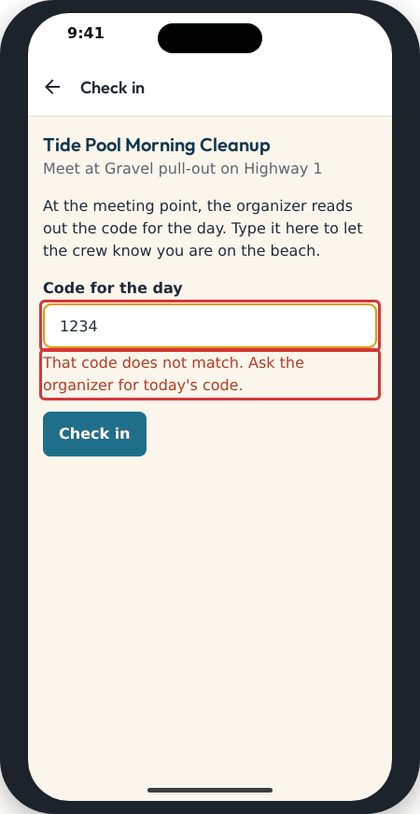
A wrong code: shoreline-api's 400 answer names the code field, so its message appears right under the field, in the API's own words.
Checks for understanding
Ask these out loud during the demo and the lab:
What does accuracy: 35 mean? Answer: the phone is probably within 35 meters of that point: the radius of the pale circle.
What does the API decide a check-in with? Answer: the code alone, on the day, for a confirmed spot; no position is sent.
Why does SiteMap pass showsUserLocation only after a yes? Answer: on an iPhone the prop alone makes the phone ask, with no reason given.
What does an Android build need that Expo Go does not? Answer: its own Google Maps key, through react-native-maps' plugin (Module 9).
Workbook self-check, items Q7 to Q12.
Answers: Q7A) 200, still attended, with the same checkedInAt: a retry is safe; Q8D) A late check-in can never work (only on the day), a wrong code needs the volunteer now, and the organizer needs to see it now; Q9C) Start Metro (npx expo start): Expo Router rewrites the route list, then tsc prints nothing; Q10B) The circle is 400 m wide, so the rule could refuse someone standing on the right spot; and a check on the phone can be changed by whoever holds it; Q11It stops: "Metro error: (0 , r(...).codegenNativeComponent) is not a function". react-native-maps defines native components when it is loaded, and react-native-web has no codegenNativeComponent. Expo Router's web build loads every route to render the pages on the server, so one import stops all of them. Fix: SiteMap.web.tsx next to SiteMap.tsx, same props, never importing react-native-maps.; Q12D) On the web, expo-linking's openURL replaces the page (leaving the app and, with the memory-only session, signing the volunteer out); React Native's opens a new tab. Full set with explanations in the Answer Key.
Differentiation
Support: the clipboard card (code = word of the day, API = clipboard, attended = tick, blue dot = finding the clipboard) and the which-map table (Expo Go, your build, the web preview). Pair learners without a phone with a phone owner for Step 7 at home.
Stretch: Lab 6.3 Task 3 and its stretch question; the lesson's Exercise 3 (the distance as a hint on the check-in form) and the Bonus Challenge (every cleanup on one map, and its web stand-in).
Closing
Exit ticket (3 questions, no notes, 4 minutes)
Put the three questions on the slide. Learners answer in the workbook's Exit Ticket box or on a sticky note. Sort the notes before Session 16: question 2's pile tells you how much of Session 16's warm-up goes back to what a server decides (Lesson 6.4's reminders are scheduled on the phone, and the Part 2 project kicks off).
In what order does the queue send a log with two photos, and why? Answer: each photo without an id first (its id saved at once), then the log with the photoIds; the API checks that every id exists.
Why does Shoreline Crew check volunteers in with the organizer's code and not the phone's location? Answer: the server checks the code; a position comes from the phone (it can be faked or far off) and needs a yes to location.
What does a native-only library like react-native-maps need so the web preview keeps working? Answer: a .web.tsx file next to the component, with the same props, that never imports the library.
Homework (about 2 to 3 hours)
Finish both lesson projects. 6.2: photoFiles.web.ts and Steps 3 to 7 (the web preview online and offline, a photo taken on your phone if you have one), the checklist, the commit. 6.3: Steps 2 to 7 (check in as Theo with 6544 after reading the code as Maya, the map's web stand-in and Open in Maps, the map on your phone), the commit.
Lesson exercises. 6.2: Exercises 1 and 2; Exercise 3 is a stretch. 6.3: Exercises 1 and 2; Exercise 3 is a stretch.
Both Quick Quizzes on the lesson pages (five questions each; answers in the Answer Key).
Labs: Lab 6.2 Task 3 (version 1 and migrate); Lab 6.3 Task 3 (the pickup code).
Journal: both entries (6.2: one photo's life, every place, check and request; 6.3: two apps that use your location, and why the code for Shoreline Crew).
Before the Next Lesson (from 6.3): Step 7 on your phone; open your phone's notification settings and look at two apps, one whose reminders you like and one you have silenced: Lesson 6.4 schedules reminders.
Bring list for Session 16
The course folder with the finished Lesson 6.3 code (the Check in modal, Where to meet and Open in Maps), tsc and expo lint clean, committed. Behind? lesson-23-start.zip is the code Session 16 starts from.
Session 16 (Lessons 6.4 and 6.5) adds reminders and sharing, and kicks off the Part 2 project (Bookmobile Stops, for a library van): its one device feature is tonight's location, asked for at the right moment. Bring tonight's lab 6.3 Task 1 if it is not finished: the same idea returns there.
A phone with Expo Go if you have one (notifications are best seen on one), the journal and the workbook.
If You Run Long or Short
Running long: what to protect and what to cut first
Protect: "one real photo" with the two refusals; the old FormData trick; "what proves you were there"; the web export's stop; both labs' Task 1.
Cut first (saves 8m): the 6.2 "changed signature" step and the 6.3 Android key step (both are short reads at home).
Cut second (saves 20m): both labs' Task 2 (homework, with the solutions' runs in the Answer Key).
Cut third (saves 15m): the 6.3 project start: learners do Step 1 at home; the demo already showed the schema and the mutation.
Running short: what to add
Lesson 6.2's Exercise 1 together (predict the requests in four cases; the solution in the lesson, the server's side in the demo's runs).
Lesson 6.3's Exercise 1 together (predict the check-in modal's face in five cases), then check two of them in the web preview as Theo.
Step 7's web preview part of Lesson 6.2 on the projector: choose two JPEGs and a GIF, send, the API terminal shows two POST /api/photos before the log.
Instructor Kit · Facilitator Guide
Session 16: Notifications, Haptics, Sharing and Files
How to teach Session 16 of React Native & Expo: Build and Ship a Mobile App: local reminders that stay true (expo-notifications through Lesson 6.1's permission step, one sync function safe to run any time, a tap that opens only a checked path, and an honest look at push), then haptics with restraint and files that leave the phone (feel() in two places, a CSV a spreadsheet trusts, expo-sharing in the right order), with two labs whose starters fail the way the lessons' Common Mistakes do, and the Part 2 project kickoff: Bookmobile Stops for the Tamarack County Library Bookmobile.
2 lessons + project kickoff3 hrs sessionLessons 6.4–6.5Session 16 of 26 · Part 2
How to Use This Guide
Same rhythm for both lessons: frame (the goal and one mental model) → live demo (you type, they follow) → guided lab (a kit lab: new practice on the lesson's ideas, never the lesson's own project) → start the lesson's own project. The last 30 minutes kick off the Part 2 project. The lesson exercises, quizzes and journals are homework.
Type, do not paste. Every command below was run to produce the output printed under it, in a learner's terminal with Node 24: the 6.4 commands on a copy of the app exactly as a learner has it at the end of Lesson 6.4 (the 6.5 ones at the end of 6.5). Where the lesson shows the same command, the kit's output is the lesson's card, word for word.
No phone was used to make this kit, and both lessons are about the phone itself. A notification on the lock screen, a tap on it, the question naming Expo Go, a buzz under the thumb, the share sheet and its apps: all of it comes from Expo's, Apple's and Google's documentation and the libraries' source, exactly as the lessons say. The web preview shows the switches, the permission step and the CSV rows; Node shows the reminder times and the CSV text. Have your own phone with Expo Go ready for 6.4's Step 7 (a test reminder in 10 seconds) and 6.5's Step 7 (a buzz, the share sheet), and say plainly that phones differ most exactly here.
The lessons are the reference. Keep lesson_23.html and lesson_24.html open in browser tabs (the local-or-push table, the permission table, the trigger types, the haptics table, the two layers of off, Share versus shareAsync). Labs live in labs/module-16/: starter/ folders and TASKS.md are handouts; solution/ folders are yours until the session is over. The Part 2 project lives in labs/projects/part2-tamarack-bookmobile/.
Session 16 closes Module 6 and Part 2's lessons. Both lessons are long (the pages estimate 150 and 135 minutes for a learner alone) and the kickoff takes 30 minutes: the room does the judgment (local or push, when to buzz, what a spreadsheet does with a note) and the first steps of each project; the rest goes home. Teal blocks are hands-on, amber blocks are watch-outs.
The #1 risk of Session 16: two lessons and a kickoff in one evening
Both lessons are about things the room cannot see (a notification at 6 pm tomorrow, a buzz, a share sheet), so they invite long discussions of phones. Protect the kickoff: start it at 2:20 whatever happens; cut from the demo lists first ("If You Run Long"). Do not chase a phone in the room: the phone steps are each lesson's Step 7 at home, hedged as the lessons hedge them. Use the real tools: every demo step is a run (tsc, expo lint, introspect, Node) whose output the lesson printed; the labs' starters fail the way the lessons' Common Mistakes do (a TS2322 on a Date trigger, an invalid date (Date { NaN }) at a month end, a folder read at import time).
Before the Session
☐ Learners arrive with the finished Session 15 code (Lesson 6.3: location, the map and check-in). Anyone behind starts from the course downloads: lesson-23-start.zip for Lesson 6.4 (the code after 6.3) and lesson-24-start.zip for 6.5 (unzip into shoreline/, .env.example → .env.local as its README says, npm ci in shoreline-crew).
☐ Run the kit check once:python3 labs/check_labs.py module-16 from this kit's folder (10 runs, about two minutes, no API needed: the starters fail exactly as the task sheets say, the solutions pass their tests, type checks and lint).
☐ Projector machine: VS Code on a shoreline folder at a large font; terminal 1 running the API, terminal 2 in shoreline-crew; a copy of lesson-23-end for the 6.4 demo and of lesson-24-end for the 6.5 demo, each with npm ci done and started once (npx expo start, so Expo's types exist); the two Node scripts from the Answer Key saved as reminder-time.ts (6.4 copy) and csv-demo.ts (6.5 copy); Chrome with the web preview.
☐ For the kickoff:labs/projects/part2-tamarack-bookmobile/ open in a third VS Code window (its brief and rubric), and the bookmobile API's start command from its README tried once on your machine (port 4100).
☐ Board, before learners arrive: the local-or-push table with its right column empty; the two tap moments (app running: a listener; app closed: getLastNotificationResponse); on the other side "outcome, not press" and the note with a comma, quotes, a line break and "Café".
☐ Print or share: the workbook (Start Here has the warm-up; the kickoff page has the R1 to R6 table), sticky notes for the exit ticket.
Known traps in this session
Symptom
Cause
Fix
'AndroidImportance' not found in imported namespace 'Notifications' (expo lint)
The enum reached through the namespace, as Expo's examples do
import { AndroidImportance } from 'expo-notifications'; (Lesson 6.4, Step 3).
TS2322 Type 'Date' is not assignable to type 'NotificationTriggerInput'
A Date as the trigger (older examples)
{ type: Notifications.SchedulableTriggerInputTypes.DATE, date }.
"…is not available on web" (UnavailabilityError) in the web preview
Scheduling in the browser: the web scheduler is empty
remindersWork (Platform check) before any schedule call.
A test reminder never appears while the app is open
No notification handler (Expo's documentation)
setNotificationHandler once, when reminders.ts loads; check the permission, Do Not Disturb, the channel.
Reminders vanish at every launch
updateReminders ran before the saved session loaded ("nobody signed in")
useReminders(savedLoaded): wait for loaded.
Logbook tab blank in the web preview; this.validatePath is not a function
A File, Directory or Paths at the top of a module
Create them inside the function; check the platform first.
"Could not share your logbook" in desktop Chrome or Safari
Only isAvailableAsync() checked: the browser has navigator.share
Platform.OS === 'web' first, then isAvailableAsync.
Unquoted commas and line breaks; no byte order mark
cell() quoting and doubling; the U+FEFF mark first (Lesson 6.5, Step 4).
No buzz on a phone
The app's switch, the phone's System Haptics / touch feedback, an iPad, the web
Check both layers of off (the lesson's table); nothing is wrong if the words appear.
Session 16 Agenda (3 hours)
Clock
Minutes
Segment
What happens
0:00
10
Warm-up: two apps on your phone
Retrieval from Session 15 and Lesson 6.3's "Before the Next Lesson": one app's notifications you like, one you silenced; why.
0:10
10
6.4 Frame and mental model
Local or push (the tide table on the dashboard, the harbor radio); the permission per platform; the switch is the moment to ask.
0:20
20
6.4 Live demo
The plugin's entitlement both ways; three measured mistakes (import/namespace, a Date trigger, opening whatever the data says); updateReminders as "read the truth, make it so".
0:40
20
6.4 Guided lab
labs/module-16/l6_4-notifications/starter: Task 1 in pairs (when to remind, month ends), then Task 2 (one sync function, never anybody else's reminders).
1:00
10
6.4 Start the lesson project
Step 1: install expo-notifications, the plugin entry with enableRemoteNotifications: false. Steps 2 to 7 go home.
1:10
10
Break
Leave the local-versus-push table and the two tap moments on the board.
1:20
10
6.5 Frame and mental model
The tap on the shoulder; outcomes not presses, never alone, less is more, optional; a phone has no Downloads folder: the share sheet.
1:30
20
6.5 Live demo
feel() and its two places; the naive CSV against the finished one (run in Node); shareLogbook's order of checks; two mistakes no tool catches.
1:50
20
6.5 Guided lab
labs/module-16/l6_5-haptics-sharing-and-files/starter: Task 1 in pairs (a CSV a spreadsheet trusts), then Task 2 (a buzz that knows its place).
2:10
10
6.5 Start the lesson project
Steps 1 and 2: install expo-haptics and expo-sharing, the hapticsOn setting and its switch. Steps 3 to 7 go home.
2:20
30
Part 2 project kickoff
Bookmobile Stops for Tamarack County Library Bookmobile: the situation, R1 to R6 mapped onto the lessons, the rubric and the pass rule, two terminals, the Session 17 milestone, pairs.
2:50
10
Wrap-up
Exit ticket (3 questions), homework, bring list for Session 17 (check-in and the Part 2 assessment).
Total
180
Ends at 3:00.
In the room. The lesson pages estimate 150 + 135 = 285 minutes for a learner working alone; after the warm-up, the break, the kickoff and the wrap-up the room has 120. Each lesson keeps its full shape (model, demo, lab, project start) at 60 minutes, with the reading and most of each project at home.
Goes home (about 2 to 3 hours, plus the project). Lesson 6.4's project Steps 2 to 7 (the reminders setting, the reminders module, keeping them in step and the taps, the sign-ups and the Profile switch, the web preview, the reminders on a phone, the checks and the commit); Lesson 6.5's project Steps 3 to 7 (feel() in two places, the CSV, writing and sharing the file, Share my logbook, the web preview and the phone); both labs' Task 3; each lesson's Hands-on Exercises; both Quick Quizzes; both journal entries; and the Part 2 project: read BRIEF.md and TASKS.md in labs/projects/part2-tamarack-bookmobile/, start the bookmobile API (node server.ts, port 4100) and the starter, see the 25 acceptance tests fail with their TODO names, then work in the order the task sheet gives (R3a and R1a first: everything else stands on them). Before Session 17: R1 to R4 passing their tests, and the app running in the web preview with the bookmobile API. Plan about 3 hours before Session 17.
Protect, in this order: the kickoff (at least 20 minutes); the 6.4 "read the truth, make it so" step and the three measured mistakes; the 6.5 CSV run; both labs' Task 1. Cut first: the 6.4 "channel first" step and the 6.5 "two mistakes no tool catches" (both are short reads in the lessons' Common Mistakes), then the second task of each lab (homework), then the 6.5 project start (Steps 1 and 2 go home).
Opening Segment
0:00
Warm-up: Two Apps on Your Phone
10 min
Timing
6m
W1 to W3 on the workbook's Start Here page, alone, then pairs compare
4m
Reveal and connect: a notification is an interruption the app earns or loses; tonight we earn it
Sequence and talking points
W1 (two apps). Lesson 6.3's "Before the Next Lesson": one app whose notifications you like, one you silenced. Collect three reasons from the room: "at a bad time", "too often", "nothing I could do about it". They are tonight's rules.
W2 (Lesson 6.1's step). Which face does the permission gate show after an iPhone's first "Don't Allow"? (blocked, Open Settings: an iPhone asks once). Notifications go through the same gate tonight.
W3 (idempotent). Where did you meet "safe to run twice" before? (Lesson 5.5's clientId: the same log sent again gets a 200 with the saved log). Tonight's reminders sync has the same shape.
Bridge: "Module 6 ends tonight: the phone reminds, buzzes and shares. Then the last half hour starts your Part 2 project, for a library van."
Lesson Plans
6.4
Notifications
60 min
Objectives (from the lesson page)
Tell local notifications from push notifications and choose between them: what each needs, what each can do, and why Shoreline Crew's reminders are local
Put notifications through Lesson 6.1's permission step with a Hook made by createPermissionHook, including Android's channels and the iPhone's question
Schedule, replace and cancel reminders with expo-notifications, and keep them in step with the server's sign-ups in one function that is safe to run at any time
Open the right screen from a tap on a notification, whether the app was running or not, and treat the notification's data as outside input
Say what server push would need (a development build, an EAS project, credentials, push tokens and a server), and what Expo Go and the web preview can and cannot show
Timing in the room
10m
Frame: local or push, the tide table on the dashboard; the permission per platform; the switch is the moment
20m
Live demo: the entitlement both ways, the channel first, three measured mistakes, updateReminders and reminderTime, the tap
20m
Guided lab: l6_4-notifications/starter, Task 1 in pairs, then Task 2
10m
Start the lesson project: Step 1
Mental model to say
From the lesson: "Before a season, the crew copies the tide times onto a card taped to the van's dashboard. Nobody needs a signal to read it at dawn, and it is always there. But if a time changes, someone has to copy the card again, or the van arrives at high water. A local reminder is that card: written ahead, read with no signal, and only as true as the last time you copied it, which is why the app copies again whenever the sign-ups change. A push notification is the harbor radio: someone at the station speaks when something changes, but you need a radio, a station, and a license to broadcast."
Then fill the right column of the local-or-push table with the room (who decides, who delivers, signal at that moment, server and accounts, Expo Go, good for), and the permission row: iPhone asks once; Android 13 and later asks (POST_NOTIFICATIONS) once more after a first no, and only once the app has a channel; Android 12 and earlier is on unless turned off; the web preview asks with the browser's question but cannot schedule. Say once, plainly: these behaviors come from the platforms' and Expo's documentation; the course could not run a phone, and your phone has the last word.
Live demo (you type, they follow)
In the copy of the finished Lesson 6.4 code (Before the Session). Ask for a prediction before every run.
What the plugin adds by itself (4m). In the copy of the finished Lesson 6.4 code, remove the expo-notifications entry from app.json's plugins and ask: "we never asked for push: does the app say it receives pushes?" Then look, without building anything (only the last lines matter):
aps-environment is the entitlement that lets an iPhone app receive pushes from Apple: the plugin is applied automatically (no "Added config plugin" line at install) and adds it. Put the entry back and run it again:
Both runs are the lesson's cards. enableRemoteNotifications: false is "ask only for what you use" again (Lesson 6.1's purpose strings): it shapes your own builds from Module 9 on; Expo Go is its own app and ignores it.
The channel first, then the question (3m). Show askForNotifications and the Hook made by createPermissionHook (Lesson 6.1's FAQ promised it). Two reasons it is not plain requestPermissionsAsync: Android 13 and later ask only once the app has a channel; and an iPhone asked with no options is asked for alerts, sounds AND badges:
shoreline-crew/src/notifications/reminders.ts
asyncfunction askForNotifications() {
if (Platform.OS === 'android') {
// Android 13 and later ask only once the app has a channel: create it firstawait Notifications.setNotificationChannelAsync(channelId, {
name: 'Cleanup reminders',
importance: AndroidImportance.DEFAULT,
});
}
// iPhone: alerts and sounds only, no badge on the app icon. (Android has one question.)return Notifications.requestPermissionsAsync({ ios: { allowAlert: true, allowSound: true } });
}
/**
* expo-notifications has no permission Hook of its own: make one from its two functions, the way
* every Expo module makes its own. Use it with usePermission(useNotificationPermissions()).
*/exportconst useNotificationPermissions = createPermissionHook({
getMethod: Notifications.getPermissionsAsync,
requestMethod: askForNotifications,
The answer is the same PermissionResponse as location's, so usePermission and PermissionGate work unchanged. Say once: the questions, the channel and Expo Go's warnings come from Expo's, Apple's and Google's documentation; the course could not run a phone.
Three measured mistakes (8m). Make each in the finished code and ask for a prediction before every run. First, the enum as Expo's examples reach it, Notifications.AndroidImportance.DEFAULT: tsc prints nothing, then
npx expo lint
env: load .env.local
env: export EXPO_PUBLIC_API_URL
~/shoreline/shoreline-crew/src/notifications/reminders.ts
42:33 error 'AndroidImportance' not found in imported namespace 'Notifications' import/namespace
✖ 1 problem (1 error, 0 warnings)
A rule with an opinion about how you reached a name, not proof the name is missing: import it by name. (And DEFAULT, not MAX: people silence apps that shout.) Second, a Date as the trigger:
npx tsc --noEmit
src/notifications/reminders.ts:120:9 - error TS2322: Type 'Date' is not assignable to type 'NotificationTriggerInput'.
120 trigger: reminderTime(event),
~~~~~~~
node_modules/expo-notifications/build/Notifications.types.d.ts:638:5
638 trigger: NotificationTriggerInput;
~~~~~~~
The expected type comes from property 'trigger' which is declared here on type 'NotificationRequestInput'
Found 1 error in src/notifications/reminders.ts:120
Third, the guard replaced with router.push(response.notification.request.content.data.url):
npx tsc --noEmit
src/hooks/useReminderTaps.ts:18:19 - error TS18048: 'response.notification.request.content.data' is possibly 'undefined'.
18 router.push(response.notification.request.content.data.url);
~~~~~~~~~~~~~~~~~~~~~~~~~~~~~~~~~~~~~~~~~~
src/hooks/useReminderTaps.ts:18:19 - error TS2345: Argument of type 'unknown' is not assignable to parameter of type '`/cleanups/${string}` | RelativePathString | ExternalPathString | "/before-you-go" | `/before-you-go?${string}` | `/before-you-go#${string}` | "/sign-in" | `/sign-in?${string}` | `/sign-in#${string}` | "/_sitemap" | ... 35 more ... | { ...; }'.
18 router.push(response.notification.request.content.data.url);
~~~~~~~~~~~~~~~~~~~~~~~~~~~~~~~~~~~~~~~~~~~~~~
Found 2 errors in the same file, starting at: src/hooks/useReminderTaps.ts:18
All three runs are the lesson's cards, word for word (the linter's folder shows as the learner's ~/shoreline). Undo each; tsc prints nothing again.
Read the truth, make it so (5m). Show updateReminders and ask: "what happens to the reminder when Theo cancels? when he signs out? when he turns notifications off in Settings?" One answer for all: the next run computes what should exist and makes the phone match. Then reminderTime run in Node on three dates (the lesson's own function, copied from the finished code):
shoreline-crew/src/notifications/reminders.ts
exportasyncfunction updateReminders(): Promise<void> {
if (!remindersWork) {
return;
}
try {
const events = await cleanupsToRemind();
const wanted = new Set(events.map((event) => idPrefix + event.id));
const scheduled = await Notifications.getAllScheduledNotificationsAsync();
for (const { identifier } of scheduled) {
if (identifier.startsWith(idPrefix) && !wanted.has(identifier)) {
await Notifications.cancelScheduledNotificationAsync(identifier);
}
}
// Scheduling with an id the phone already has replaces that reminder, so a cleanup whose
shoreline-crew/src/hooks/useReminderTaps.ts
function open(response: Notifications.NotificationResponse) {
// A notification's data comes from outside the app: check it, and only ever open a screenconst url = response.notification.request.content.data?.url;
if (isCleanupPath(url)) {
router.push(url);
}
}
// The app was closed, and a tap on a reminder opened itconst first = Notifications.getLastNotificationResponse();
if (first !== null) {
open(first);
Notifications.clearLastNotificationResponse(); // handled: never open it twice
}
const subscription = Notifications.addNotificationResponseReceivedListener(open);
return () => subscription.remove();
// reminderTime from src/notifications/reminders.ts, run in Node with three cleanupstype CleanupEvent = { title: string; date: string };
/** When to remind: 6 pm the evening before the cleanup, by the phone's clock */function reminderTime(event: CleanupEvent): Date {
const time = new Date(`${event.date}T18:00`);
time.setDate(time.getDate() - 1);
return time;
}
const show = (d: Date) =>
`${d.toDateString()} ${String(d.getHours()).padStart(2, '0')}:${String(d.getMinutes()).padStart(2, '0')}`;
for (const event of [
{ title: 'Weekend Cove Cleanup', date: '2026-12-05' },
{ title: 'First of the Month Sweep', date: '2026-12-01' },
{ title: "Harbor Steps Cleanup", date: '2027-01-01' },
]) {
console.log(`${event.title} (${event.date}): remind at ${show(reminderTime(event))}`);
}
Weekend Cove Cleanup (2026-12-05): remind at Fri Dec 04 2026 18:00
First of the Month Sweep (2026-12-01): remind at Mon Nov 30 2026 18:00
Harbor Steps Cleanup (2027-01-01): remind at Thu Dec 31 2026 18:00
setDate(getDate() - 1) handles month and year ends; the string arithmetic learners reach for does not (Lab 6.4's Task 1 fails exactly there). The tap: one listener while the app runs, getLastNotificationResponse() once when the tap started it, and the guard either way:
Three mistakes to expect, and how to coach each
Schedule here, cancel there. "On sign-up schedule, on cancel cancel" misses sign-outs, a second device and Settings. Coach: "What is the truth, and what should the phone hold right now?" (Self-check Q4; Lab 6.4 Task 2.)
Cancelling everything to start clean.cancelAllScheduledNotificationsAsync() or a loop with no prefix check removes other features' reminders and the developer's test reminder. Coach: "Whose reminders are these?" (Lab 6.4 Task 2's second test.)
Opening whatever the data says. A cast to Href to silence TS2345. Coach: "Who wrote this data, and who might write it tomorrow?" (Self-check Q6; Lab 6.4 Task 3.)
Guided lab
Folder: learners work in labs/module-16/l6_4-notifications/starter/ (task sheet labs/module-16/l6_4-notifications/TASKS.md); your reference is labs/module-16/l6_4-notifications/solution/. New material, the same ideas: the crew's gear shed lends grabbers and sieves, and a borrower gets a reminder at 5 pm the day before a loan is due. The tests pass syncGearReminders a stand-in for the phone's scheduler (the three expo-notifications functions it needs, in memory), so they check what the code asked the phone to do. Shared lab install only.
Run it as shipped (3m).npm test (seven of twelve fail) and npm run typecheck, whose one error is tonight's TS2322 in a new place:
src/gearReminders.ts:56:7 - error TS2322: Type 'Date' is not assignable to type 'NotificationTriggerInput'.
Task 1 in pairs (7m): when to remind. Ask which loan breaks the string arithmetic (the one due on the 1st: Jest prints Received: Date { NaN }, an invalid date), then the returned loan that still gets a reminder.
Task 2 (8m): the trigger object, then the cancel loop that clears other features' reminders. The "running again changes nothing" test is the lesson's idempotence, measured.
Debrief (2m): "The organizer marks a loan returned on another phone. When does THIS phone's reminder go?" (the next sync: start, foreground; at once would need a push). Task 3 (the tap guard) is homework. All done, the solution's run ends:
PASS src/lab.test.ts
✓ Task 1: 5 pm the day before, month and year ends included
✓ Task 1: only loans still out, with the reminder still ahead, soonest first
✓ Task 2: one reminder per loan, a DATE trigger, and the loan to open
✓ Task 2: the phone's other reminders are never touched
✓ Task 2: a returned loan loses its reminder, and running again changes nothing
✓ Task 3: a tap on a gear reminder opens its loan
✓ Task 3: a web address opens nothing
✓ Task 3: a way out of /loans/ opens nothing
✓ Task 3: a deeper path opens nothing
✓ Task 3: another screen opens nothing
✓ Task 3: a number opens nothing
✓ Task 3: no data at all opens nothing
Tests: 12 passed, 12 total
Start the lesson project
The lesson project is Reminders Before Every Cleanup, seven steps. In the room, do Step 1 (10 minutes).
Step 1: stop Metro, npx expo install expo-notifications. Point at what is missing from the install's output (no "Added config plugin": the plugin is applied automatically), then the entry with enableRemoteNotifications: false and introspect once, as in the demo. Done in the room = introspect shows entitlements: {}.
Goes home: Steps 2 to 7. Step 6 (the switch and the permission faces) needs the web preview and Chrome's notification bubble; Step 7 (the question, the test reminder with the app open, in the background and closed, the tap) needs a phone and is written from the documentation, as the lesson says.
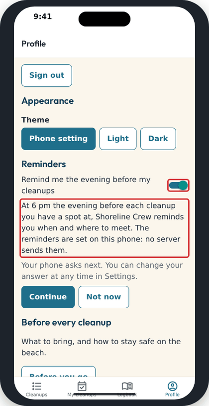
Turning the switch on is the moment the question makes sense. Lesson 6.1's gate says why first; Continue leads to the phone's own question (in the web preview, the browser's).
Checks for understanding
Ask these out loud during the demo and the lab:
Why are Shoreline Crew's reminders local? Answer: the time is known at sign-up; the phone can schedule it with no server, account or signal.
When does the phone ask about notifications? Answer: when the volunteer turns the Reminders switch on, through Lesson 6.1's gate; never at launch.
Name three moments updateReminders runs. Answer: any three of start, sign-in or sign-out, the switch, back in the foreground, after a sign-up or a cancellation, after the permission question.
What can the web preview show of tonight's work? Answer: the switch and the permission step (the browser's question); no scheduler, so no reminder.
Workbook self-check, items Q1 to Q6.
Answers: Q1B) No: only the server knows, and when; that is a push notification, which needs a development build, an EAS project, credentials, push tokens and a server; Q2A) Import the enum by name: import { AndroidImportance } from 'expo-notifications';; Q3C) An object with a type: { type: Notifications.SchedulableTriggerInputTypes.DATE, date: reminderTime(event) }; Q4D) Nothing changes: none is unwanted, and scheduling reminder-<id> again replaces the same reminder; Q5App running (foreground or background): addNotificationResponseReceivedListener hears the tap. App not running (the tap started it): getLastNotificationResponse(), read once when the app is ready, then cleared. Either way content.data.url is outside input: isCleanupPath checks it, and only a cleanup's path is ever pushed; a notification only opens a screen.; Q6B) Because the data is outside input: a cast opens whatever a future push or a bug put there, while a type guard turns unknown into a cleanup's path only after checking it. Full set with explanations in the Answer Key.
Differentiation
Support: a one-line card: "read the truth, compute what should exist, make it so", next to the two tap moments. In the lab, the pair reads each failing test's NAME aloud before its message.
Stretch: Lab 6.4 Task 3 and its stretch question; the lesson's Exercise 2 (a reminder on the day: reminderTime(event, now): Date | null, and following tsc to every caller) and the Bonus Challenge (the push feature on paper).
6.5
Haptics, Sharing and Files
60 min
Objectives (from the lesson page)
Choose the right haptic for a moment with expo-haptics (or none at all), and say why a buzz is never the only feedback
Respect the people holding the phone: an in-app switch for vibration, and the phone's own settings, on iPhone and Android
Write a file with expo-file-system's File and Directory, in the right folder, without breaking the web preview
Turn app data into a CSV file a spreadsheet opens correctly, with quoting, a byte order mark and a guard against formulas
Hand a file to the share sheet with expo-sharing, and explain how that differs from Lesson 4.4's text sharing on each platform
Timing in the room
10m
Frame: the tap on the shoulder; five rules; two layers of off; a phone has no Downloads folder
20m
Live demo: feel() and its two places, the CSV run, shareLogbook's order of checks, two mistakes no tool catches
20m
Guided lab: l6_5-haptics-sharing-and-files/starter, Task 1 in pairs, then Task 2
10m
Start the lesson project: Steps 1 and 2
Mental model to say
From the lesson: "At a cleanup, the organizer does not shout 'well done' across the beach every time someone fills a bag. When it matters (your bag is full, the tide has turned, the van is leaving), a quick tap on the shoulder says it without a word, and you look up to see what is going on. A haptic is that tap. It does not replace the words; it makes you look at them. And an organizer who tapped everyone's shoulder every minute would soon be ignored, or avoided."
Then the five rules on the board (outcomes not presses; the same meaning every time; never the only feedback; less is more: two moments in the whole app; optional: the switch), and the second half's picture: in a browser "download a CSV" is a link; on a phone the app lives in its own sealed folders, and a file leaves through the share sheet. Say once: the buzz and the share sheet come from Expo's, Apple's and Google's documentation; the course could not feel or open them on a phone.
Live demo (you type, they follow)
In the copy of the finished Lesson 6.5 code. Ask for a prediction before every run.
One feel(), two places (5m). Show feel() and ask "why does Android get different functions?" (the cross-platform ones drive the vibration motor directly, which Expo's own documentation discourages there; performAndroidHapticsAsync plays the system's tuned effects). Then where the sign-up's buzz goes:
shoreline-crew/src/utils/haptics.ts
exportfunction feel(feeling: Feeling): void {
if (!readSettings().hapticsOn) {
return;
}
const buzz =
Platform.OS === 'android'
? // Android's own haptic effects, played the way the phone's touch feedback setting allows
performAndroidHapticsAsync(
feeling === 'success' ? AndroidHaptics.Confirm : AndroidHaptics.Reject,
)
: // The iPhone's Taptic Engine (in a browser: navigator.vibrate, where there is one)
notificationAsync(
feeling === 'success'
? NotificationFeedbackType.Success
: NotificationFeedbackType.Error,
);
// A buzz that could not play is never worth an error: the words on the screen say it all
buzz.catch(() => {});
The outcome, not the press: the callbacks of this mutate call run when the API has answered, next to the words that change on screen. Say plainly: the web preview cannot vibrate (desktop Chrome has navigator.vibrate and no motor), and the course could not feel a phone; how it feels is Step 7 on yours.
A file a spreadsheet trusts (8m). Write the note on the board: a comma, "quotes", a line break, an accented letter. "Joining with commas: how many cells?" (workbook P2). Then the finished code's columns, cell and logbookCsv, run in Node on three logbook rows, against the obvious first try:
Cleanup,Date,Pieces,Bags,Weight (kg),Note
Sunset Stairs Cleanup,2026-11-07,42,1,2.5,Lots of wrappers by the stairs.
Weekend Cove Cleanup,2026-11-14,63,2,4.1,Bottles, cans and 2 "lost" flip-flops.
Café cups too.
Tide Pool Morning Cleanup,2026-11-15,12,1,0.8,=HYPERLINK("http://example.com","Open")
First character: U+FEFF
Rows ending in \r\n: 4
"Cleanup","Date","Pieces","Bags","Weight (kg)","Note"
"Sunset Stairs Cleanup","2026-11-07",42,1,2.5,"Lots of wrappers by the stairs."
"Weekend Cove Cleanup","2026-11-14",63,2,4.1,"Bottles, cans and 2 ""lost"" flip-flops.
Café cups too."
"Tide Pool Morning Cleanup","2026-11-15",12,1,0.8,"'=HYPERLINK(""http://example.com"",""Open"")"
Share it, in the right order (4m). Show shareLogbook and read the order of its checks aloud: the platform, then "is there a share sheet?", then the file in the cache's exports folder, then the sheet with a type for each platform:
shoreline-crew/src/storage/logbookExport.ts
exportasyncfunction shareLogbook(entries: LogbookEntry[]): Promise<'done' | 'unavailable'> {
// The web has no files for the app to write, and expo-sharing shares web addresses thereif (Platform.OS === 'web' || !(await Sharing.isAvailableAsync())) {
return'unavailable';
}
const file = await writeLogbookFile(entries);
await Sharing.shareAsync(file.uri, {
mimeType: 'text/csv', // Android: which apps to offer; iPhone: the file's type
UTI: 'public.comma-separated-values-text', // the same type, in Apple's words
dialogTitle: 'Share your logbook', // the title of Android's share sheet
});
return'done';
It returns 'done' when the sheet closes: the phone never says whether anything was shared, so the app never pretends. And it never deletes the file right after: the receiving app may still be reading it.
Two mistakes no tool catches (3m). Make them in the finished code and run the checks: Sharing.shareAsync('https://…') (a link instead of a file) and the exports folder moved to the top of the module. tsc prints nothing for either; for the second, expo lint prints only
npx tsc --noEmit
npx expo lint
env: load .env.local
env: export EXPO_PUBLIC_API_URL
~/shoreline/shoreline-crew/src/storage/logbookExport.ts
11:7 warning 'exportsFolder' is assigned a value but never used @typescript-eslint/no-unused-vars
✖ 1 problem (0 errors, 1 warning)
an unused name. What really happens is in the lesson, measured in the web preview: the whole Logbook tab goes blank, and Metro's terminal shows where it came from (the lesson's card; read the call stack from the bottom):
expo-file-system is not supported on web
expo-file-system is not supported on web
Metro error: this.validatePath is not a function
Code: Directory.js
26 | */ constructor(...uris){
27 | super(Paths.join(...uris));
> 28 | this.validatePath();
| ^
29 | }
30 | /*
31 | * Directory containing the file.
Call Stack
constructor (node_modules/expo-file-system/build/Directory.js:28:14)
get__cache (node_modules/expo-file-system/build/Paths.js:8:16)
<global> (src/storage/logbookExport.ts:41:41)
<global> (src/components/ShareLogbook.tsx:6)
And the link: refused on Android by the library itself ("Only local file URLs are supported", read in its source). Words and links: React Native's Share (Lesson 4.4); files: expo-sharing.
Three mistakes to expect, and how to coach each
Buzzing on the press.feel('success') before mutate. Coach: "Has anything happened yet?" (Self-check Q7; Lab 6.5 Task 2.)
A file made at the top of a module. Works on a phone, blanks the tab in the web preview. Coach: "When does this line run?" (Self-check Q10; Lab 6.5 Task 3's first test.)
Joining with commas. Fine on the sample data, wrong on the first real note. Coach: "What can a phone keyboard type into a note?" (Self-check Q8; Lab 6.5 Task 1.)
Guided lab
Folder:labs/module-16/l6_5-haptics-sharing-and-files/starter/ with labs/module-16/l6_5-haptics-sharing-and-files/TASKS.md; your reference is labs/module-16/l6_5-haptics-sharing-and-files/solution/. New material: the gear sheds' inventory, as a CSV for the coordinator, a buzz when a checkout goes through, and a share function. The tests stand in for expo-haptics, expo-file-system and expo-sharing and record what the code asked for (which buzz, which file, which share), and count every read of Paths.cache at import time. Shared lab install only.
Run it as shipped (3m).npm test: all twelve fail; npm run typecheck prints nothing after its two > lines. Ask: "why can no type checker find any of these bugs?"
Task 1 in pairs (8m): quotes doubled, the formula guard, the empty cell for a missing date, the byte order mark, \r\n. The tests read the file with a real CSV reader, as a spreadsheet would.
Task 2 (7m): the switch, Android's Confirm and Reject, the iPhone's Success and Error, .catch(() => {}).
Debrief (2m): "Which test proves a buzz is never the only feedback?" (none can: that is a rule for the screen's words, checked by a person). Task 3 (share, and survive the web preview) is homework. All done, the solution's run ends:
PASS src/lab.test.ts
✓ Task 1: a byte order mark first, and \r\n after every row
✓ Task 1: a note with a comma, quotes and a line break stays in one cell
✓ Task 1: counts stay numbers, and a missing date is an empty cell
✓ Task 1: text that starts like a formula is shown as text
✓ Task 2: switched off, nothing plays
✓ Task 2: an iPhone feels Success and Error
✓ Task 2: Android plays its own Confirm and Reject
✓ Task 2: a buzz that cannot play is never an error
✓ Task 3: importing the module reads no folder (the web preview imports it too)
✓ Task 3: the web preview never writes a file, even where the browser can share
✓ Task 3: on a phone, one file in cache/exports, shared as a CSV
✓ Task 3: the previous export is deleted before the next one is written
Tests: 12 passed, 12 total
Start the lesson project
The lesson project is A Buzz and a Logbook File, seven steps. In the room, do Steps 1 and 2 (10 minutes).
Step 1: stop Metro, npx expo install expo-haptics expo-sharing. Point at the last line, "Added config plugin: expo-sharing": the plugin is for files shared INTO the app, off without options; leave it.
Step 2: hapticsOn in the settings store (on by default, checked on its own when read back, as Lesson 6.4 did for remindersOn) and its switch on Profile. Done in the room = tsc prints nothing.
Goes home: Steps 3 to 7. Step 7's web half (the switch remembered, the rows instead of a sheet) runs in the web preview; its phone half (the buzz with the switch on and off, the share sheet, the file in a spreadsheet) is written from the documentation, as the lesson says.
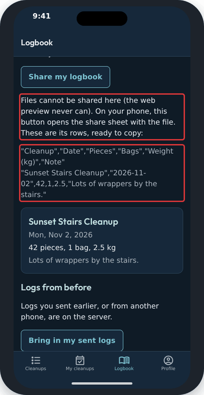
In the web preview there are no files to write and no share sheet for them, so the button says so and shows the same rows the file would hold, ready to copy. (The web preview, dark theme.)
Checks for understanding
Ask these out loud during the demo and the lab:
Which two moments buzz in Shoreline Crew, and when exactly? Answer: a sign-up when the API has answered (success or error), a debris log when it is saved on the phone (or the form has mistakes).
Why the cache for the export? Answer: the file exists only to be shared; the logbook stays in SQLite and the next press writes it again.
What does shareAsync's Promise tell you? Answer: only that the sheet closed, not whether anything was shared.
What does the web preview show when Share my logbook is pressed? Answer: that files cannot be shared here, and the rows as text to copy.
Workbook self-check, items Q7 to Q12.
Answers: Q7C) In the callbacks of this mutate call: onSuccess: () => feel('success'), onError: () => feel('error'); Q8D) "Weekend Cove Cleanup","2026-11-14",63,2,4.1,"Bottles, cans and 2 ""lost"" flip-flops. with Café cups too." on the next line; Q9A) expo-sharing refuses: only local file: addresses inside the app's own folders ("Only local file URLs are supported"); Q10B) The Logbook tab goes blank: importing the module reads Paths.cache, which throws on the web (this.validatePath is not a function); Q11isAvailableAsync() answers "is there a share sheet?" (on the web: does the browser have navigator.share), not "can this app write a file?". Desktop Chrome on Windows and macOS and Safari have navigator.share, so it says yes, the app writes a file, and expo-file-system throws on the web: "Could not share your logbook". The platform check first returns 'unavailable' and the screen shows the rows instead.; Q12C) No buzz, and the words "You are signed up. See you on the beach!" as usual. Full set with explanations in the Answer Key.
Differentiation
Support: the five rules on a card, and the CSV rules as a checklist (quote text, double quotes, guard formulas, mark first, \r\n). In the lab, read the note in the test aloud before writing cell().
Stretch: Lab 6.5 Task 3 and its stretch question; the lesson's Exercise 3 (a JSON backup) and the Bonus Challenge (tidyFiles at startup, after the queue has loaded).
Part 2 Project Kickoff
P2
Part 2 Project Kickoff: Bookmobile Stops
30 min
Timing
8m
The client and the app: Tamarack County Library Bookmobile, Odile Varga (outreach librarian); read the situation together
7m
R1 to R6 mapped onto the lessons (workbook table), the rubric's scale and the complete rule
10m
Plan: pairs or alone, two terminals (the bookmobile API next to Metro), the Session 17 milestone in the workbook
5m
Questions; what goes home
The client, in one paragraph
Tamarack County Library Bookmobile: a library van that visits about eight stops a week in the fictional Tamarack County (a trailhead parking lot, a senior center, two schools, a farmers market). Odile Varga, the outreach librarian, wants an app, Bookmobile Stops: patrons see where and when the van stops next, browse what is on board, and ask for a book to be held for them at a stop, "often from a parking lot with one bar of signal". That last phrase is the whole of Part 2 in one line: routing, data from an API, storage that survives no signal, and the phone's own features, used politely.
The project lives in labs/projects/part2-tamarack-bookmobile/ (the brief, the rubric, the task sheet, a starter and its own small API, bookmobile-api/, on port 4100 so it runs next to shoreline-api's 4000 and Metro's 8081). Learners never change shoreline-api for it, and the bookmobile API is given, not built: they build the app.
Requirements and the lessons they lean on
Id
Requirement
Lessons
R1
Routing and tabs
4.1, 4.2, 4.4 optional deep link
R2
Simple sign-in and a protected tab
4.3
R3
Data from the mock API
5.1, 5.2
R4
Offline-safe storage
5.3, 5.5
R5
The form and the device feature
5.4, 6.1, 6.3
R6
Quality
every lesson's checks
Every requirement is something the learners already built once for Shoreline Crew; the project asks them to build it again, for someone else, without the lesson page's steps. That is the point of a part project.
Rubric and pass rule (say these words)
Rubric: six rows, R1 to R6, each scored 0 (not yet), 1 (meets) or 2 (strong): 12 points, the scale of Lesson 10.1's final-project rubric. The total is recorded; there is no threshold.
Complete = no row at 0. A strong R3 does not make up for a missing R4.
Part 2 assessment in Session 17: written, closed book, 45 minutes, 20 points on Lessons 4.1 to 6.5; 14 or more is met.
Part 2 met = the Bookmobile Stops project complete under its rubric (no row at 0) AND the Part 2 assessment met (14 or more of 20 points, 70 %). Below either line: a written next step and one resubmission or retake within two weeks.
When: started tonight, checked in and demonstrated in Session 17, handed in one week after Session 17. Alone or in pairs (a pair hands in one project and both can explain every requirement).
Sequence and talking points
Read the situation aloud (workbook kickoff page). Ask: "Which words in it point at which lesson?" ("one bar of signal" → 5.5's queue; "ask for a book to be held" → a form, 5.4, and an idempotent request with a clientId; "where the van stops next" → 5.2's query and 6.3's location).
Map R1 to R6 in the workbook table, in pairs, two minutes; then read the lesson ids above. R5's device feature is "Find my nearest stop" with location, asked for at the moment it makes sense (6.1), with a "no" handled: the web preview can run it.
Two terminals, as with Shoreline Crew: the bookmobile API in one (node server.ts in bookmobile-api/, port 4100), the starter in the other (npm test, npm run web): TASKS.md, "Get it running", has the exact commands; show them on the projector from the folder itself. As handed out, all 25 acceptance tests fail with their TODO names (the given Books and Account tabs too: they wait for the R3a guards), while the type check and the linter are clean.
The Session 17 check-in (the task sheet's milestones): before Session 17, R1 to R4 passing their tests, and the app running in the web preview with the bookmobile API; at the check-in, show the Stops tab, a stop by its address, a sign-in and a hold placed, and one thing you are stuck on. The hand-in a week later adds NOTES.md and a 3-minute demo.
Not in this project: notifications, haptics and file sharing (tonight's lessons) are not required; a learner who adds one must keep it optional and hedged (no phone needed to pass).
Watch-outs
Copying Shoreline Crew wholesale. Reuse patterns (the client, the guards, the queue), not screens: the rubric reads the bookmobile's own requirements.
Starting with the device feature. It is R5 of six; the task sheet says R3a and R1a first: everything else stands on them.
Port clashes. The bookmobile API is 4100 by default; shoreline-api can keep 4000. A learner whose app talks to the wrong API sees Shoreline's cleanups in a library app: check the env file.
Closing
Exit ticket (3 questions, no notes, 4 minutes)
Put the three questions on the slide. Learners answer in the workbook's Exit Ticket box or on a sticky note. Sort the notes before Session 17: question 3's pile tells you who needs five minutes with the brief before the check-in.
Why are Shoreline Crew's reminders local, and what would a cancellation message need? Answer: the time is known at sign-up, so the phone schedules it; a cancellation is known only to a server, when it happens: push (a development build, an EAS project, credentials, tokens, a server).
Name two rules for haptics and one for a CSV a spreadsheet trusts. Answer: any two of outcomes not presses, the same meaning every time, never the only feedback, less is more, optional; any one of quote text and double quotes, a byte order mark, guard formulas, \r\n.
Your Part 2 project: what is it, and what does "complete" mean? Answer: Bookmobile Stops for Tamarack County Library Bookmobile; no rubric row (R1 to R6) at 0; Part 2 met also needs the assessment (14 or more of 20).
Homework (about 2 to 3 hours)
Finish both lesson projects. 6.4: Steps 2 to 7 (Step 7's test reminders on a phone if you have one), the checklist, the commit. 6.5: Steps 3 to 7 (the share sheet and the spreadsheet on a phone if you have one), the commit.
Lesson exercises. 6.4: Exercises 1 and 2; Exercise 3 is a stretch. 6.5: Exercises 1 and 2; Exercise 3 is a stretch.
Both Quick Quizzes on the lesson pages (five questions each; answers in the Answer Key).
Labs: Lab 6.4 Task 3 (what a tap may open); Lab 6.5 Task 3 (share it, and survive the web preview).
Journal: both entries (6.4: your last ten notifications, local or push; 6.5: an app's haptics for ten minutes and one export).
The Part 2 project: read BRIEF.md and TASKS.md in labs/projects/part2-tamarack-bookmobile/, start the bookmobile API (node server.ts, port 4100) and the starter, see the 25 acceptance tests fail with their TODO names, then work in the order the task sheet gives (R3a and R1a first: everything else stands on them). Before Session 17: R1 to R4 passing their tests, and the app running in the web preview with the bookmobile API. Plan about 3 hours before Session 17.
Review for the Part 2 assessment in Session 17: Lessons 4.1 to 6.5, the lessons' quizzes and these workbooks' self-checks.
Bring list for Session 17
Your Bookmobile Stops project running (the bookmobile API and the app), for the check-in: the Stops tab, a stop by its address, a sign-in and a hold placed, and one thing you are stuck on (R1 to R4 passing their tests, and the app running in the web preview with the bookmobile API).
The course folder with the finished Lesson 6.5 code, committed (the start of Part 3 builds on it). Behind? lesson-25-start.zip is the code after 6.5.
For the Part 2 assessment: written, closed book, 45 minutes, 20 points on Lessons 4.1 to 6.5; 14 or more is met. A pen; nothing else.
This workbook (the kickoff page and its plan), and a phone with Expo Go if you have one.
If You Run Long or Short
Running long: what to protect and what to cut first
Protect: the kickoff (start it at 2:20); "read the truth, make it so" and the three measured mistakes; the CSV run; both labs' Task 1.
Cut first (saves 6m): the 6.4 "channel first" step and the 6.5 "two mistakes no tool catches" (both are in the lessons' Common Mistakes).
Cut second (saves 15m): both labs' Task 2 (homework, with the solutions' runs in the Answer Key).
Cut third (saves 10m): the 6.5 project start: learners do Steps 1 and 2 at home.
Running short: what to add
Lesson 6.4's Exercise 1 together (which reminders does the phone hold, in five cases; the lesson's solution).
Lesson 6.5's Exercise 1 together (buzz or no buzz; argue the stepper both ways).
More kickoff: each pair reads one rubric row aloud and says what "strong" would look like in the bookmobile app.
Instructor Kit · Facilitator Guide
Session 17: Part 2 Project Check-in and Assessment
How to run Session 17, the close of Part 2: a check-in on the Tamarack County Library Bookmobile project with short rubric conversations, the Part 2 assessment (written, closed book, 20 points, 14 to meet), three-minute project demos with peer feedback, and a review that bridges to Part 3 or closes the course when Part 2 runs alone.
0 new lessons3 hrs sessionReview of Lessons 4.1–6.5Session 17 of 26 · Part 2
How to Use This Guide
Session 17 teaches no new lesson. It closes Part 2 with three things: a check-in on the Part 2 project (Bookmobile Stops for the Tamarack County Library Bookmobile: studio time with short rubric conversations), the Part 2 assessment (written, 45 minutes, closed book), and demos. When Part 2 runs as a course of its own, it is also the last session: the review block then closes the course.
The assessment and the rubric are defined once: the kit's final-assessment.html (Part 2 section) holds the key, the marking and the scoring sheet; labs/projects/part2-tamarack-bookmobile/RUBRIC.md holds the six rows R1 to R6. This guide says how to run them. Part 2 met = the Bookmobile Stops project complete under its rubric (no row at 0) AND the Part 2 assessment met (14 or more of 20 points, 70 %).
Nothing here needs a phone. The project runs in the web preview and its checks (npx tsc --noEmit, npx expo lint, Jest, npx expo export); a learner with Expo Go may show it on a phone, and nothing is scored on a phone.
Teal blocks are hands-on, amber blocks are watch-outs. Lesson codes match the course site.
The #1 risk of Session 17: the assessment loses its conditions
The Part 2 assessment is written and closed book: laptops closed, phones and chat assistants away, no notes. A learner with the course app open is no longer being assessed, and the result says nothing about Part 2. Before: print the question paper (the workbook's assessment pages) one per learner, single-sided, and keep them until the break. In the room: at the break, laptops closed and bags on the floor; walk the room once. A learner who arrives late gets the remaining time, not more; a learner who misses the session takes it at an agreed time with the same paper. Demos run long: three minutes on a timer, questions only from the rubric.
Before the Session
☐ Run the project's kit check once:python3 labs/check_labs.py projects/part2-tamarack-bookmobile. The starter's checks fail where its TODOs are; the model solution passes the type check, the linter (0 problems), Jest and the exports, and its API (bookmobile-api, port 4100 by default) answers.
☐ Print: the workbook's assessment pages (one per learner), the scoring sheet (final-assessment.html, Part 2 section), labs/projects/part2-tamarack-bookmobile/RUBRIC.md for each learner, sticky notes for the exit ticket.
☐ Projector machine: the model solution in the web preview with its API running (two terminals, as the project's BRIEF.md says), signed out; a 45-minute timer; lesson_19.html and lesson_24.html open for the review block's screenshots.
☐ Demo order: a list of learners in groups of the room's size; a peer reviewer for each demo (the next person on the list).
☐ Board, before learners arrive: the agenda; the assessment rules (45 minutes, closed book, 20 points, 14 to meet); the demo script (one stop from the list to its screen; the Holds tab as a guest, then signed in; one hold made with no connection, then sent; one decision you made).
Session 17 Agenda (3 hours)
Clock
Minutes
Segment
What happens
0:00
15
Warm-up: Part 2 on one page
Learners fill the workbook's Part 2 map; three cold-call questions.
0:15
50
Part 2 project check-in
Studio time on Bookmobile Stops; a five-minute rubric check-in at each table; self-assessment.
1:05
10
Break
Projector: the question paper and the timer ready. Learners: laptops closed, phones and chat assistants away.
Three minutes each in the web preview: one stop from the list to its screen, the Holds tab as a guest and signed in, one hold made with no connection; one peer's rubric feedback.
2:40
10
Part 2 review and what comes next
What Part 2 built; Part 3 in one slide, or the course close when Part 2 runs alone.
2:50
10
Wrap-up
Exit ticket, self-assessments handed in, how results and resubmission work, bring list.
Total
180
Ends at 3:00.
In the room. No new content: the time goes to the project (50 minutes of studio and check-ins, 40 of demos), the assessment (45) and closing Part 2. The self-check (12 items reviewing Part 2) is homework or a warm-down for fast finishers.
Goes home (about 2 to 3 hours). The Part 2 project, to the hand-in one week after this session (the folder without node_modules, dist and .expo, with NOTES.md and the outputs the brief asks for); the 12 self-check items; anything the scoring sheet's "next step" says. When Part 3 follows: Lesson 7.1's starting point (Shoreline Crew at the end of Lesson 6.5, or the lesson-25-start download) running in the web preview with shoreline-api.
Protect, in this order: the assessment's 45 minutes and its conditions; the check-in conversations (every learner hears where they stand before the hand-in); the demos. Cut first: the review block (5 minutes of it), then the warm-up's map (do it as homework).
Opening Segment
0:00
Warm-up: Part 2 on One Page
15 min
Sequence
The map (8m). Learners fill the workbook's Part 2 map: for each module, two ideas they use in the project and the file. Then pairs compare.
Three cold-call questions (7m): "A patron taps a link to a stop with the app closed: what is underneath, and what does Back do?" (with the anchor, the tabs; Back goes to them); "Who stops a guest from reading someone's holds: the Holds tab's guard or the API?" (both: the guard hides the screen, the API's 401 protects the data); "The van is in a parking lot with no signal and a patron asks for a hold: what happens to it?" (it goes into the saved queue with its clientId and is sent when the phone is back online; the same clientId twice is one hold).
Part 2 at a glance (for the board)
Module
Title
Lessons
Ideas the project uses
4
Navigation with Expo Router
4.1 to 4.4
routes from files, stacks and canGoBack, tabs and modals, sign-in with Stack.Protected and SecureStore, deep links and the anchor
5
Data
5.1 to 5.5
the API from a phone (--host, the address per device), TanStack Query with the phone's managers, AsyncStorage and SQLite, forms with React Hook Form and Zod, the offline queue with clientIds
6
Device Features
6.1 to 6.5
permissions at the right moment, camera and photos, location and maps, local notifications, haptics and sharing files
Part 2 Project Check-in
P2
Check-in: Tamarack County Library Bookmobile
50 min
Timing
5m
Where we are: the requirements R1 to R6, the hand-in one week from today, the rubric's six rows
40m
Studio time; you visit each table for a five-minute rubric check-in
5m
Self-assessment: each learner scores their own project with the rubric (workbook)
The requirements (the rubric's rows)
Requirement
Lessons
What "meets" asks for (summary; the full rubric is RUBRIC.md)
R1 Routing and tabs
4.1, 4.2, 4.4
Tabs Stops, Books, Holds and Account; a stop's own screen at stops/[id]; a not-found screen (a deep link is optional)
R2 Simple sign-in and a protected tab
4.3
card number + PIN; the session kept the way Lesson 4.3 does (SecureStore, memory only in the web preview); the Holds tab protected
R3 Data from the mock API
5.1, 5.2
a typed client with guards; TanStack Query with the phone's managers; loading, error and empty states; pull to refresh
R4 Offline-safe storage
5.3, 5.5
hold requests in a persisted queue with clientIds that syncs when back online; the My stop setting in AsyncStorage
R5 The form and the device feature
5.4, 6.1, 6.3
the place-hold form (React Hook Form + Zod); Find my nearest stop: the location question at the right moment, a no handled
R6 Quality
all
types, accessibility labels, npx tsc --noEmit, npx expo lint 0 problems, Jest, npx expo export for web, android and ios, NOTES.md
Each row scores 0 (not yet), 1 (meets) or 2 (strong), the scale of Lesson 10.1's rubric: 12 points in all. Complete = no row at 0; the total is recorded, with no threshold. The full rubric with the words for 0, 1 and 2 is labs/projects/part2-tamarack-bookmobile/RUBRIC.md (and final-assessment.html, Part 2 section).
The five-minute check-in (per learner or pair)
"Show me npx tsc --noEmit, npx expo lint and the tests." (Where on the TODO list are they? Routing and the data, R1 to R3, should be done or close.)
"Which rubric row are you proudest of, and which one worries you?" Read that row with them.
"Open the Holds tab signed out, then sign in." (R2, rehearsed for the demo.) Then: "Turn the browser offline and ask for a hold. What does the screen say, and where is the hold now?" (R4.)
One concrete next step, written in their workbook's check-in box. Nothing more: the hand-in is a week away.
Common problems and the nudge
The session in AsyncStorage (R2). "Where does Lesson 4.3 keep a token, and why?" SecureStore on a phone; memory only in the web preview, where SecureStore is not available.
A new clientId on every press (R4). "Your hold's answer got lost and the queue sends it again: does the API see one hold or two?" Make the id once per hold, as Lesson 5.4's form does when it opens.
The location question at startup (R5). "When does the patron see why you want it?" Ask when Find my nearest stop is pressed, with the app's own explanation first, and handle a no (Lesson 6.1).
Paths, Directory or a native-only module at the top level (R6). The web export fails or a tab goes blank: create such things inside functions, or give the module a .web.ts twin (Lessons 6.2 and 6.5).
Tests changed to pass. The tests are the client's acceptance criteria: change the code, never the tests.
What to look at on the projector (for you)
The model solution's own runs are in the project's lab.json (the kit's checker) and in its instructor notes; scoring guidance by row, the instructor notes and the scoring sheet are in final-assessment.html (Part 2 section). Nothing here quotes them: rerun the checker if you want to see them.
Part 2 Assessment
A2
Part 2 Assessment
45 min
Rules (say them before you start)
Written, closed book, 45 minutes, 20 points: 14 multiple-choice items (1 point each; circle one letter) and 3 short-answer / code-reading items (2 points each; two or three sentences). Laptops closed, phones and chat assistants away, no notes.
14 or more of 20 (70 %) = the Part 2 assessment met. Part 2 met = the Bookmobile Stops project complete under its rubric (no row at 0) AND the Part 2 assessment met (14 or more of 20 points, 70 %).
Questions during the assessment: only about a question's wording, never about the content.
Below the line is not the end: one retake within two weeks, at a time you agree, on new items for the same lessons (the review items are a good source).
What it covers (key and marking in the Answer Key and in final-assessment.html)
One multiple-choice item per lesson, 4.1 to 6.5; the correct letters are BCADCADBACBDBA (A1 to A14). A16 and A17 show code copied from the course's stages (the debris-log form after Lesson 5.5, permissionStep from Lesson 6.1).
Item
Lesson
Topic
Kind
Points
Key
A1
4.1
Stack navigation: canGoBack and replace
multiple choice
1
B
A2
4.2
Tabs: moving index into the group
multiple choice
1
C
A3
4.3
Sign-in: close first, then set the session
multiple choice
1
A
A4
4.4
Deep links: the anchor and dismissTo
multiple choice
1
D
A5
5.1
Reaching the API: what --tunnel carries
multiple choice
1
C
A6
5.2
TanStack Query: screens that never unmount
multiple choice
1
A
A7
5.3
Device storage: validate what you load
multiple choice
1
D
A8
5.4
Mobile forms: handleSubmit on a phone
multiple choice
1
B
A9
5.5
Offline first: what goes in the queue
multiple choice
1
A
A10
6.1
Permissions: purpose strings in app.json
multiple choice
1
C
A11
6.2
Photos: a size and a type the API takes
multiple choice
1
B
A12
6.3
Check-in: a mutation must say what changed
multiple choice
1
D
A13
6.4
Notifications: a tap's data is outside input
multiple choice
1
B
A14
6.5
Files: nothing at the top level of a module
multiple choice
1
A
A15
4.3
Guards hide screens; the API protects data
short answer
2
see marking
A16
5.5
The clientId: made once per log
short answer
2
see marking
A17
6.1
Permissions: denied or blocked
short answer
2
see marking
Pacing
Minute 0: hand out the paper face down; say the rules; start the timer.
Minute 30: "Fifteen minutes left: make sure the three short items have an answer." The short items are worth 6 of the 20 points.
Minute 45: pens down, papers collected. Mark after the session: the multiple choice with the key line above, the short items with the marking notes.
Watch-outs
A learner finishes in fifteen minutes. Ask them to read A15 to A17 again: each needs a reason, not a keyword.
Someone asks what a word in the code means. That is the question: point them back to the code on the paper.
Marking the short items. Half marks do not exist: each item has two 1-point halves, both listed in the marking notes. Write the missing half next to a 1.
Part 2 Project Demos
D2
Project Demos
40 min
Protocol
Three minutes each, on the timer, in the web preview on the learner's own machine (or yours with their folder): one stop from the Stops list to its screen (the route file, the query, what renders while loading); the Holds tab as a guest, then signed in; one hold made with no connection (the browser's offline switch), then sent when it is back online; one decision they made and its alternative.
A peer reviewer (the next learner on the list) fills the workbook's peer-feedback box with the rubric: one row that is strong, one question.
You note the evidence for rows R2 and R4 (the protected tab and the queue, as shown) and R6 (the explanation). The other rows are scored on the hand-in.
A learner with Expo Go may show the phone instead: the same three things. Nothing is scored on a phone, and nobody needs one.
More learners than minutes: demos in two rooms or in groups of four with you rotating; nobody demos for longer than three minutes.
Part 2 Review and What Comes Next
R2
Review: What Part 2 Built
10 min
Sequence
What Part 2 built (5m). Shoreline Crew at the end of Lesson 6.5 in the web preview: routes and tabs, sign-in with a protected route, the API from a phone, TanStack Query, settings and a logbook on the device, forms, a queue that survives no signal, permissions, photos, a map, reminders, haptics and a shared file; and their own project, which used the same ideas for another client.
The Logbook while offline: the waiting log on top, and a count on the tab (the badge a screen reader reads as "Logbook, 1 not sent yet"). When the connection returns, the card moves down into the logbook by itself.
If Part 3 follows (5m): "Shoreline Crew works; Part 3 makes it move, makes it accessible, tests it, and ships it: Reanimated in Lesson 7.1, gestures, accessibility, Jest and React Native Testing Library, performance, app config, EAS." Session 18 opens with a Parts 1 and 2 refresher; learners who missed Parts 1 and 2 start from the course's lesson-25-start download.
If Part 2 runs alone (5m): close the course here. What they can now do (the exit ticket's question 3); how results are recorded (the rule below); where to go next: Part 3 of the course, the lesson pages' Going Further sections, their own app with Expo Router and a mock API.
Closing
Exit ticket (3 questions, no notes, 4 minutes)
Which Part 2 idea did your project use most, and where? Answer: any idea with a place in their code (the hold queue and its clientIds, the Holds tab's guard, the stops query, the location question behind Find my nearest stop).
One rubric row you will improve before the hand-in, and how. Answer: their own; check it matches the check-in note.
In one sentence: what can you build now that you could not at the start of Part 2? Answer: their own; use it for the course feedback.
Recording results
Part 2 met = the Bookmobile Stops project complete (no rubric row at 0) AND the Part 2 assessment met (14 or more of 20 points, 70 %). Use the scoring sheet in final-assessment.html (Part 2 section).
A learner below either line gets the "next step" in writing and one resubmission (project) or retake (assessment) within two weeks.
When Part 2 runs alone, Part 2 met is the course result. When Part 3 follows, nothing here blocks Session 18: its catch-up code lets every learner start from the same place.
Homework (about 2 to 3 hours)
Finish the Part 2 project to the hand-in, one week from today: the folder zipped without node_modules, dist and .expo (or a repository link), with NOTES.md and what labs/projects/part2-tamarack-bookmobile/BRIEF.md asks for. Run npx tsc --noEmit, npx expo lint, the tests and the web export before you hand in.
The 12 self-check items reviewing Part 2 (answers in the Answer Key).
If Part 3 follows: Lesson 7.1's starting point: Shoreline Crew at the end of Lesson 6.5 (or the lesson-25-start download) running in the web preview with shoreline-api.
Self-check: Part 2 review (compact answers)
Twelve items across Lessons 4.1 to 6.5 in the workbook, for home or for fast finishers:
Answers: Q1C) Navigation the code decides, such as leave(): back when something is underneath, home when not; Q2A) As an ordinary screen with a back arrow (measured); the ways to close a modal differ by platform and swiping a card down is not obvious to everyone; Q3D) Every page load logs an SSR error, Missing getServerSnapshot, and the page switches to client rendering: the third argument (() => null) is what the server render uses; Q4B) The tabs underneath are real screens: the Cleanups tab also loads its first page of cleanups and the sites (three requests instead of one); Q5A) EXPO_PUBLIC_API_URL=http://10.0.2.2:4000 npx expo start --clear: a variable set in the terminal wins over the file, and 10.0.2.2 is the emulator's name for your computer; Q6C) shoreline-api is on your Wi-Fi: a network without internet still reaches it, and "reachable" means NetInfo could reach a test address on the internet; Q7B) Turns the comma into a point before it checks the value, so the log says 2.5 kg; Q8D) filter builds a new array on every call, so the store never sees the same answer: a blank page and React's error #185, Maximum update depth exceeded; Q9The phone's question comes with the app's reason, at the moment the feature is wanted (ask in context, explain first). On an iPhone a no is final after one answer (only Settings can change it), so the app explains first, and Not now leaves the phone's question unasked for a better moment; Q10A) It is gone: in the web preview a photo is a blob: address in the browser's memory that lasts until the page reloads (photoFiles.web.ts); on a phone it was moved into the app's documents; Q11B) An object with a type: { type: Notifications.SchedulableTriggerInputTypes.DATE, date: reminderTime(event) }; Q12Share.share for words and links (the cleanup's link, Lesson 4.4); shareAsync for one local file (the logbook CSV). shareAsync wants a local file address: given https://… it type-checks, but on Android it refuses ("Only local file URLs are supported"). Full set with explanations in the Answer Key.
Bring list for Session 18 (when Part 3 follows)
A laptop where node server.ts starts shoreline-api and npx expo start opens Shoreline Crew at the end of Lesson 6.5 in the web preview: Session 18 starts there (newcomers: lesson-25-start and Session 18's catch-up steps).
Expo Go on a phone if you have one (optional, as always): Reanimated runs in the web preview too.
The workbook and the journal.
If You Run Long or Short
Running long
Protect: the assessment's 45 minutes; the check-in conversations.
Cut first (saves 8m): the warm-up's map becomes homework; keep the three questions.
Cut second (saves 10m): demos in groups of four with peers scoring; you collect the peer boxes.
Running short
Self-check items 3 and 11 live: the message on the projector, the room proposes the fix.
A keyboard pass through two learners' projects in the web preview: the tabs, the sign-in form, the place-hold form's errors.
React Native & Expo: Build and Ship a Mobile App · Facilitator Guide
Part 3: Motion, Quality and Shipping
Sessions 18 to 26. Modules 7 to 10: animation with Reanimated 4 and gestures, motion polish, accessible mobile apps, testing the app's logic and its screens with Jest, React Native Testing Library and MSW, performance and debugging, app config and environments, development builds and EAS Build, updates and monitoring, the app stores, then the final project and real mobile projects. Opens with a Parts 1 and 2 refresher and catch-up, and ends with the final project showcase and final assessment.
Instructor Kit · Facilitator Guide
Session 18: Animation and Gestures
How to teach the first session of Part 3. A refresher and a catch-up check bring a mixed room to the same code (the end of Lesson 6.5), then the app starts to move: Reanimated 4's shared values on the UI thread count the Logbook's tallies and step aside for Reduce Motion, and Gesture Handler 3 lets a waiting log be swiped, with a Remove button for everyone and a question before anything is lost. Two labs on new material, real lint and tsc output from the lessons' own mistakes, and the missing root view caught in Jest.
2 lessons3 hrs sessionLessons 7.1 and 7.2Session 18 of 26 · Part 3
How to Use This Guide
Same rhythm for both lessons: frame (the goal and one mental model) → live demo (you type, they follow) → guided lab (a kit lab: new practice on the lesson's ideas, never the lesson's own project) → start the lesson's own project. The lesson exercises, quiz and journal are homework.
Type, do not paste. Every command below was run to produce the output printed under it, in a learner's terminal (Node 24), on a copy of the app exactly as a learner has it at the end of Lesson 7.1 or 7.2, or in the lab folders with the kit's shared install. Where the lesson shows the same command, the kit's output is the lesson's, word for word (both npm ls trees, the immutability lint error, the TS2353 pair).
No phone was used to make this kit. The web preview shows the same durations, easings, springs and Reduce Motion behavior for Reanimated's functions, but not the UI thread's smoothness and not thread mistakes; a mouse drag is not a thumb. The lessons hedge every phone claim ("from the library's code", "per Reanimated's code", "Step 7 has you check it on your phone"): repeat the hedge, do not upgrade it. Bring your own phone with Expo Go to show the motion at its real speed.
The lessons are the reference: keep lesson_25.html and lesson_26.html open for the thread diagram, the timing-versus-spring table, the Reduce Motion measurements, the callback table and the life-of-a-swipe diagram. Labs live in labs/module-18/: starter/ folders and TASKS.md are handouts; solution/ folders are yours until the session is over. Labs 7.1 and 7.2 add Reanimated's and Gesture Handler's Jest setups (a resolver, a setup file, two mocks); Session 20 explains test setup properly, today they just work.
Part 3, Session 1 of 9, and a possible first session. Part 3 can run on its own: the opening's refresher and the catch-up below are written for a room that mixes learners who did Parts 1 and 2 with you and learners who start here from lesson-25-start. The lesson projects build from lesson-25-start (end of 6.5) to lesson-26-end, the code Session 19 starts from. Teal blocks are hands-on, amber blocks are watch-outs.
The #1 risk of Session 18: animation taught as decoration, gestures taught as the only way
Motion is fun to tune and swipes are fun to make, and both lessons warn against what that fun produces: numbers that bounce past the truth, animations that ignore Reduce Motion, features only a swipe reaches. Before: run both demos once in your own web preview with Chrome's reduced-motion emulation, and once on your phone. In the room: in every demo ask "what does this do for someone who reduces motion, or cannot swipe?" before the class sees the answer; the labs' Task 2 and Task 3 are exactly those questions. After: the phone checks (7.1 Step 7, 7.2 Step 6) are homework that cannot be skipped: the web preview cannot show threads or thumbs.
Before the Session
☐ A week before: send the catch-up steps (below) to anyone joining at Part 3, with Session 1's setup guide, and ask every learner to reply with the last line of node labs/module-18/l7_0-catch-up/check_environment.mjs run on their course folder at the end of Lesson 6.5 (the lesson-25-start download is that code).
☐ Code: a course folder at lesson-25-start for the 7.1 project start (the room builds 7.1 from there and 7.2 on top), and lesson-25-end and lesson-26-end from the course downloads for the demos (or your own finished code). Learners who finish 7.1's steps late can unzip lesson-26-start.zip for 7.2 (its README says how).
☐ Run the kit check once:python3 labs/check_labs.py module-18 from this kit's folder (16 runs, about five minutes: the catch-up check NOT READY on a fresh unzip and READY after the README's steps, the starters fail as shipped, the solutions pass their tests, type checks and lint, and both solutions bundle for the web). The catch-up runs start a private copy of the API; Labs 7.1 and 7.2 need no API.
☐ Projector machine: two terminals (node server.ts, npx expo start) at 18 pt, Chrome with DevTools docked and the Rendering panel open (prefers-reduced-motion), lesson_25.html and lesson_26.html in tabs; your phone with Expo Go and screen mirroring if you have it, with your computer's address in .env.local (Lesson 5.1).
☐ Board, before learners arrive: the two threads as two lanes (JavaScript: React, queries, the queue · UI: layout, drawing, touches) with "16.7 ms a frame" over them; the skipper and the helm; the life of a swipe (which way first? → far or fast? → spring back + ask / spring back); and one line: "every gesture needs another way".
☐ Print or share: the workbook (its Start Here page has the catch-up checklist and the refresher), sticky notes for the exit ticket.
Starting with Part 3: the catch-up (send it a week ahead)
Part 3 can run on its own. Learners who did not take Parts 1 and 2 with you (or whose code is not at the end of Lesson 6.5) start from the course download lesson-25-start.zip: shoreline-api and shoreline-crew exactly as Lesson 6.5 leaves them. Send these steps with the setup guide; the opening's check proves them in the room.
Node LTS 24 or newer, VS Code with Expo Tools, Expo Go on the phone (Session 1's setup guide). A NEW empty course folder outside OneDrive, iCloud and Dropbox; an old course folder is renamed, never mixed.
Unzip lesson-25-start.zip into it (shoreline-api/ and shoreline-crew/ directly inside); copy the kit's labs/ folder next to them and run npm install once in labs/ (one install for every lab of the course).
As the download's README.txt says, in shoreline-crew: copy .env.example to .env.local (keep http://localhost:4000 for the web preview; a phone needs the computer's address, Lesson 5.1), then npm ci.
Two terminals: node server.ts in shoreline-api; then, from the course folder, node labs/module-18/l7_0-catch-up/check_environment.mjs. Done = the last line says READY for React Native & Expo: Build and Ship a Mobile App.
In shoreline-crew: npx tsc --noEmit and npx expo lint print nothing but lint's two env: lines. Then npx expo start, w, sign in as theo.nakamura@example.com (password shoreline-demo) and open the Logbook.
The kit ran exactly this on the download (labs/module-18/l7_0-catch-up, lab.json). Right after unzipping, before npm ci, the check stops at:
FIX shoreline-crew has no packages yet: cd shoreline-crew, then npm install
NOT READY: fix the FIX lines above, then run this check again
After the README's steps it ends with READY, and the two checks in shoreline-crew print only lint's env: lines (the kit printed the check's last line, then ran the two checks):
READY for React Native & Expo: Build and Ship a Mobile App
env: load .env.local
env: export EXPO_PUBLIC_API_URL
The catch-up trap:npx tsc --noEmit run BEFORE the first npx expo start (or the check, which starts the development server once) fails, because Expo Router writes the app's typed routes on its first start. On a fresh download the kit's run reported 3 errors, all of this kind (the first):
src/app/check-in/[id].tsx:51:29 - error TS2322: Type 'string | string[] | undefined' is not assignable to type 'string'.
...
Found 3 errors in 3 files.
Nothing is wrong with the code: start Metro once (or run the check), then tsc is silent. Tell learners before they panic.
What a learner starting here has not met, and where to point them: the queue and the Logbook (Lessons 5.3 and 5.5), the settings store and feel() (Lesson 6.5), the theme and createThemedStyles (Lesson 2.5), FlashList recycling (Lesson 3.2), useFocusEffect (Lesson 4.3). The four refresher questions name each one; the workbook's Start Here page lists them with the lesson to read. Nobody needs to redo Parts 1 and 2: reading those sections, with the code already in front of them, is enough for Sessions 18 to 20.
Known traps
Symptom
Cause
Fix
error Error: This value cannot be modified … react-hooks/immutability
.value = with the React Compiler on
count.set(...) and count.get() (Lesson 7.1, Common Mistakes).
Reduce Motion emulation changes nothing
The setting is read once, when the app starts
Reload the web preview (and sign in again); on a phone, close and reopen the app.
A spinning, bouncing count that shows wrong totals
withSpring (an old tutorial's default) for a number
withTiming for numbers; springs for the bounce.
Advice to add react-native-reanimated/plugin to babel.config.js
A Reanimated 2 or 3 tutorial
Not needed in SDK 58: Expo's Babel preset adds the worklets plugin.
'onEnd' does not exist in type 'PanGestureConfig'
A Gesture Handler 2 callback name
onDeactivate (and onActivate for onStart).
Red screen on the phone: GestureDetector must be used as a descendant of GestureHandlerRootView
No root view in _layout.tsx (the web preview does not mind)
Wrap the whole app in <GestureHandlerRootView style={styles.root}> with flex: 1.
The Logbook will not scroll with a finger that starts on a card
In the web preview: Gesture Handler's touch-action: none (measured, expected); on a phone: missing offsets
Web: use the mouse wheel; phone: activeOffsetX + failOffsetY.
The card cannot be swiped at all
The queue is sending (enabled={!sending}), or nothing is waiting
Stop the API, send a log, start the API again (7.2 Step 4).
shoreline-crew has no packages yet (catch-up)
npm ci not run after unzipping
cd shoreline-crew, npm ci.
Session 18 Agenda (3 hours)
Clock
Minutes
Segment
What happens
0:00
25
Opening: Parts 1 and 2 refresher and catch-up
Welcome to Part 3; four refresher questions on what 7.1 and 7.2 lean on; every machine runs check_environment.mjs on a course folder at the end of Lesson 6.5 (learners starting here set up lesson-25-start at home).
0:25
10
7.1 Frame and mental model
Two threads, one frame; the skipper and the helm; shared values and worklets.
0:35
15
7.1 Live demo
The finished tallies in the web preview (count, bounce, highlight; then reduced motion); npm ls; the .value lint error, for real.
0:50
20
7.1 Guided lab
labs/module-18/l7_1-animation-with-reanimated-4/starter: Tasks 1 and 2 in pairs (a bar that glides; a dot that holds still).
1:10
20
7.1 Start the lesson project
Steps 1 to 3: npm ls, Tally.tsx, four tallies in the Logbook. Steps 4 to 7 go home.
1:30
10
Break
Phones out: Reduce Motion found in Settings (not switched on yet); the API stopped on one machine per table for 7.2.
1:40
10
7.2 Frame and mental model
Touches on the UI thread; the deckhand on the line; far or fast; every gesture needs another way.
1:50
15
7.2 Live demo
The swipe in the web preview; the Remove button by keyboard; onEnd and tsc; the root view in Jest.
2:05
20
7.2 Guided lab
labs/module-18/l7_2-gestures/starter: Tasks 1 and 2 in pairs (far or fast; the callback that never ran).
2:25
25
7.2 Start the lesson project
Steps 1 to 3: the root view, SwipeToRemove, the Logbook asks first. Steps 4 to 6 go home.
2:50
10
Wrap-up
Exit ticket (3 questions), homework, bring list for Session 19.
Total
180
Ends at 3:00.
In the room. The lesson pages estimate 130 + 150 = 280 minutes for a learner working alone; after the 25-minute opening, the break and the wrap-up the room has 135. Both lessons keep their shape (model, demo, lab, project start). Lesson 7.1's project starts with Steps 1 to 3 (the component and the four tallies); Lesson 7.2's with Steps 1 to 3 (the root view, the swipe row, the question).
Goes home (about 2 to 3 hours). Lesson 7.1's project Steps 4 to 7 (watch it count, try the knobs, Reduce Motion in Chrome, the phone check) and the "Your own app" motion sketch; Lesson 7.2's project Steps 4 to 6 (swipe and tune, the keyboard and reduced-motion checks, the phone check) and the "Your own app" gesture list; both labs' Task 3 and anything unfinished; each lesson's Hands-on Exercises; both Quick Quizzes; both journal entries; both "Before the Next Lesson" lists. Learners who started with Part 3 also read the five sections the refresher names.
Protect, in this order: the catch-up check (nobody leaves Session 18 without a READY course folder); the 7.1 "where the web preview lies" step and the 7.2 root-view step (the two ideas that only a phone or a test shows); Lab 7.1 Task 2 (Reduce Motion is not automatic for CSS-style animations). Cut first: the two npm ls steps, then the 7.2 project start's Step 3 (it goes home), then the refresher questions (hand them out as reading).
Opening Segment
0:00
Parts 1 and 2 Refresher and the Catch-up Check
25 min
Timing
3m
Welcome to Part 3: motion, quality and shipping; who is new
10m
Four refresher questions from memory (no notes), then answers
12m
Every machine: the environment check on a course folder at the end of Lesson 6.5; FIX lines paired up
Sequence and talking points
Welcome (3m). "Parts 1 and 2 built an app that works: screens, lists, navigation, data that survives no signal, the phone's features. Part 3 makes it feel right, makes it work for everyone, proves it with tests and ships it. Today the app starts to move: numbers that count, and a card you can swipe." Ask who is starting with Part 3: pair each with someone who did Part 2.
Refresher (10m). Learners answer in the workbook's Refresher box (five minutes), then compare with a neighbor; reveal one at a time. Each names a piece of Parts 1 and 2 that today's code leans on:
Lesson 5.5's queue: a debris log is saved with no signal. Where does it wait, and what sends it later? **Answer:** In the log queue (a Zustand store saved on the phone), shown under "Not sent yet" in the Logbook; the queue sender sends waiting logs when the phone is online again (or with Send now). Lesson 7.1's tally counts what arrives; Lesson 7.2 lets a waiting log be swiped away.
Lesson 4.3's useFocusEffect: when does its function run, compared with useEffect? **Answer:** When the screen comes into view (and again when its dependencies change while it is in view), not only when the component mounts: a tab you are not looking at stays still. Tally starts its count with it.
Lesson 2.5's createThemedStyles: what does it give a component? **Answer:** A useStyles() Hook whose StyleSheet is built from the current theme's colors (light or dark). Tally and SwipeToRemove take their colors from it (colors.pressed, badges.danger).
Lesson 3.2's FlashList: what does it do with a row that scrolls off the screen? **Answer:** Recycles it: the same row component is reused for another item, with whatever state it holds. Lesson 7.2 builds on that: swipe state lives in the parent, keyed by id.
The catch-up check (12m). Terminal 1 node server.ts; terminal 2, from the course folder, node labs/module-18/l7_0-catch-up/check_environment.mjs. READY = ready for today. A learner who did Part 2 runs it on their own folder; a learner starting here on the lesson-25-start folder they set up at home. NOT READY with has no packages yet = npm ci was not run; anything else: pair with a ready neighbor and fix at the break. Nobody debugs in front of the room.
Starting with Part 3: the catch-up (send it a week ahead)
Part 3 can run on its own. Learners who did not take Parts 1 and 2 with you (or whose code is not at the end of Lesson 6.5) start from the course download lesson-25-start.zip: shoreline-api and shoreline-crew exactly as Lesson 6.5 leaves them. Send these steps with the setup guide; the opening's check proves them in the room.
Node LTS 24 or newer, VS Code with Expo Tools, Expo Go on the phone (Session 1's setup guide). A NEW empty course folder outside OneDrive, iCloud and Dropbox; an old course folder is renamed, never mixed.
Unzip lesson-25-start.zip into it (shoreline-api/ and shoreline-crew/ directly inside); copy the kit's labs/ folder next to them and run npm install once in labs/ (one install for every lab of the course).
As the download's README.txt says, in shoreline-crew: copy .env.example to .env.local (keep http://localhost:4000 for the web preview; a phone needs the computer's address, Lesson 5.1), then npm ci.
Two terminals: node server.ts in shoreline-api; then, from the course folder, node labs/module-18/l7_0-catch-up/check_environment.mjs. Done = the last line says READY for React Native & Expo: Build and Ship a Mobile App.
In shoreline-crew: npx tsc --noEmit and npx expo lint print nothing but lint's two env: lines. Then npx expo start, w, sign in as theo.nakamura@example.com (password shoreline-demo) and open the Logbook.
The kit ran exactly this on the download (labs/module-18/l7_0-catch-up, lab.json). Right after unzipping, before npm ci, the check stops at:
FIX shoreline-crew has no packages yet: cd shoreline-crew, then npm install
NOT READY: fix the FIX lines above, then run this check again
After the README's steps it ends with READY, and the two checks in shoreline-crew print only lint's env: lines (the kit printed the check's last line, then ran the two checks):
READY for React Native & Expo: Build and Ship a Mobile App
env: load .env.local
env: export EXPO_PUBLIC_API_URL
The catch-up trap:npx tsc --noEmit run BEFORE the first npx expo start (or the check, which starts the development server once) fails, because Expo Router writes the app's typed routes on its first start. On a fresh download the kit's run reported 3 errors, all of this kind (the first):
src/app/check-in/[id].tsx:51:29 - error TS2322: Type 'string | string[] | undefined' is not assignable to type 'string'.
...
Found 3 errors in 3 files.
Nothing is wrong with the code: start Metro once (or run the check), then tsc is silent. Tell learners before they panic.
What a learner starting here has not met, and where to point them: the queue and the Logbook (Lessons 5.3 and 5.5), the settings store and feel() (Lesson 6.5), the theme and createThemedStyles (Lesson 2.5), FlashList recycling (Lesson 3.2), useFocusEffect (Lesson 4.3). The four refresher questions name each one; the workbook's Start Here page lists them with the lesson to read. Nobody needs to redo Parts 1 and 2: reading those sections, with the code already in front of them, is enough for Sessions 18 to 20.
Lesson Plans
7.1
Animation with Reanimated 4
65 min
Objectives (from the lesson page)
Explain why phone animations run on the UI thread, and what shared values and worklets do about it
Animate with shared values: useSharedValue, useAnimatedStyle, withTiming, withSpring and withSequence, read and written with get() and set()
Hand a value from the UI thread back to React with useAnimatedReaction and scheduleOnRN, without drawing the screen 60 times a second
Use Reanimated 4's CSS-style transitions and keyframe animations, and choose between them and shared values
Respect the phone's Reduce Motion setting: know what Reanimated does about it by itself, and what it leaves to you
Timing in the room
10m
Frame: two threads, one frame; the skipper and the helm; shared values and worklets
15m
Live demo: the finished tallies, reduced motion, npm ls, the .value lint error, where the web preview lies
20m
Guided lab: l7_1-animation-with-reanimated-4/starter, Tasks 1 and 2 in pairs
20m
Start the lesson project: Steps 1 to 3
Mental model to say
From the lesson: "On the crew's boat, the skipper decides 'take us to the buoy off Seal Rock' and goes back to the chart. The person at the helm makes the hundred small corrections that get the boat there through the swell, without asking the skipper about each one. React is the skipper: it decides where an animation should end up and how, once. The UI thread is at the helm, frame by frame." scheduleOnRN is the helm calling out to the skipper: rarely, only when React must know.
Then the numbers: 60 frames a second leaves 16.7 ms a frame (120: 8.3). A count driven by setState needs the JavaScript thread for every frame, so it is only as smooth as the busiest thing on that thread. Then the choice table: a CSS-style transition (a style changes because state changed), a keyframe animation (a loop while a state lasts), shared values (a number to show, a chain, a finger), layout animations and Lottie (Lesson 7.3).
Live demo (you type, they follow)
From shoreline-crew at the end of Lesson 7.1 (the lesson-25-end download), then the browser. The outputs below come from a copy of the app exactly as a learner has it; on learners' machines the folder differs and everything else matches.
The finished tallies, slowly (5m). Web preview of the code at the end of Lesson 7.1, signed in as theo.nakamura@example.com (password shoreline-demo). Logbook › Bring in my sent logs: four tallies count up to 1 log, 42 pieces, 1 bag, 2.5 kg, lit up while they count, each with a small bounce. Send a log of two glass, 0.8 kg from today's Tide Pool Morning Cleanup, then Open my logbook: they count on from where they were. Then show the core of the component:
shoreline-crew/src/components/Tally.tsx
// On the UI thread, every frame: has the count reached a new step? Then tell React (JS thread).
useAnimatedReaction(
() => Math.round(count.get() * steps),
(step, previous) => {
if (step !== previous) {
scheduleOnRN(setShown, step / steps);
}
},
);
// Count when the screen comes into view, and when the value changes while it is in view
useFocusEffect(
useCallback(() => {
if (count.get() === value) {
return;
}
setCounting(true);
const counted = {
duration: 900,
easing: Easing.out(Easing.cubic), // fast at first, slowing down at the end
reduceMotion: ReduceMotion.System, // the default, written out: Reduce Motion on = jump to the end
};
count.set(
withTiming(value, counted, (finished) => {
// Runs on the UI thread when the count stops (finished is false if something interrupted it)if (finished) {
scheduleOnRN(setCounting, false);
// A bounce: grow quickly, then spring back. dampingRatio below 1 lets it overshoot a little.
scale.set(
withSequence(
withTiming(1.2, { duration: 120 }),
withSpring(1, { dampingRatio: 0.35, duration: 500 }),
),
);
}
}),
);
}, [count, scale, value]),
Point at the three ideas in it: the count is a shared value moved by withTiming on the UI thread; the reaction hands React one number per whole step through scheduleOnRN; the finished callback starts the bounce. Then reduced motion: DevTools › ⋮ › More tools › Rendering › prefers-reduced-motion: reduce, RELOAD (the setting is read at start), sign in again, Bring in: the totals appear at once. No code was changed for that.
What the template already installed (2m). "Did we install Reanimated today?" In shoreline-crew:
npm ls react-native-reanimated react-native-worklets
The kit's run is the lesson's card, word for word. The last two lines are the project's own; deduped means Expo Router, Expo's UI package and core modules share the one copy. No Babel plugin to add: Expo's preset adds it.
The .value habit, for real (4m). Most Reanimated examples on the web write count.value = withTiming(...). Change the count.set( call in Tally.tsx to that and ask for a prediction: "tsc? lint?" Then both:
npx tsc --noEmit
npx expo lint
~/shoreline/shoreline-crew/src/components/Tally.tsx
63:7 error Error: This value cannot be modified
This modifies a variable that React considers immutable.
~/shoreline/shoreline-crew/src/components/Tally.tsx:63:7
61 | reduceMotion: ReduceMotion.System, // the default, written out: Reduce Motion on = jump to the end
62 | };
> 63 | count.value = withTiming(value, counted, (finished) => {
| ^^^^^ `count` cannot be modified
64 | // Runs on the UI thread when the count stops (finished is false if something interrupted it)
65 | if (finished) {
66 | scheduleOnRN(setCounting, false); react-hooks/immutability
✖ 1 problem (1 error, 0 warnings)
npx tsc --noEmit printed nothing; the linter's report is the lesson's card, word for word (only lint's two env: lines are left out here). The React Compiler assumes what a Hook returns never changes. set() and get(): undo, and npx expo lint prints only its env: lines again.
Where the web preview lies (4m). Last: the trap the lesson cannot show in the browser. Replace scheduleOnRN(setShown, step / steps) with setShown(step / steps) and save: the tally still counts, tsc and lint are quiet. "The web preview runs worklets on its one JavaScript thread. On a phone the reaction runs on the UI thread, and this is what Worklets' code says it throws" (the lesson's card, from the library's code):
[Worklets] Tried to synchronously call a Remote Function. Called "…" on the UI Runtime.
The course could not run a phone while it was checked: say it as the lesson does ("from the library's code"). Undo. If you have your phone, show the count in Expo Go now and leave the red screen to the lesson.
Three mistakes to expect, and how to coach each
Reading or writing .value, or reading a shared value while rendering. Coach: "What did the linter say, and what does the lesson use instead?" (Self-check Q2.) Shared values are read in Hooks' functions, effects and callbacks, never in the component's body.
Calling a setter (or feel()) straight from a worklet. It works in the web preview. Coach: "Which thread runs this function on a phone?" (Self-check Q5.)
Expecting Reduce Motion to be automatic everywhere. Reanimated's functions jump to the end; CSS-style ones keep moving. Coach: "Which kind of animation is this?" (Self-check Q4, Lab 7.1 Task 2.)
Guided lab
Folder: learners work in labs/module-18/l7_1-animation-with-reanimated-4/starter/ (task sheet labs/module-18/l7_1-animation-with-reanimated-4/TASKS.md); your reference is labs/module-18/l7_1-animation-with-reanimated-4/solution/. New material for the supply table at a cleanup: a bar that should glide (a CSS-style transition), a "Happening now" dot that should hold still for Reduce Motion and hide from screen readers, and a bag counter with both of the lesson's classic mistakes. Reanimated's Jest stand-in renders Animated views as plain views and keeps their styles, so the tests check what the code asks for. Needs only the shared lab install.
Run it as shipped first (3m). On the projector, npm test in the lab's starter. Read the summary and the first failure together:
● Task 1: never more than 100 %, never a division by 0
expect(received).toBe(expected) // Object.is equality
...
Tests: 5 failed, 3 passed, 8 total
Task 1 in pairs (7m): clamp the percentage (0 to 100, no division by 0), then the transition. Circulate for learners who add the transition props to a plain View: the test passes in Jest (styles are kept), so ask "which component turns these into motion on a phone?" (Animated.View).
Task 2 in pairs (7m):useReducedMotion() and the two hiding props. The test that turns Reduce Motion on spies on Reanimated's own Hook: worth showing as a preview of Session 20.
Debrief (3m): "Why does Task 2 need code and Task 1 does not?" (a transition is short and only follows a change; a loop never stops, and CSS-style animations ignore Reduce Motion). Expected when all is done:
PASS src/lab.test.tsx
✓ Task 1: 12 of 40 gloves is 30 %, and the fill is that wide
✓ Task 1: never more than 100 %, never a division by 0
✓ Task 1: the fill glides to its new width (a CSS-style transition, 400 ms)
✓ Task 2: with full motion, the dot pulses forever
✓ Task 2: with Reduce Motion on, the dot holds still (CSS-style animations do not check it for you)
✓ Task 2: screen readers skip the dot and read the words
✓ Task 3: a screen reader hears the final number once
✓ Task 3: the count lands exactly on its target: withTiming, never a spring
Tests: 8 passed, 8 total
Goes home: Task 3 (the .value lint error and the spring that overshoots a number). As shipped, npm run lint reports:
31 | return ( react-hooks/immutability
Start the lesson project
The lesson project is A Tally That Counts, seven steps, from lesson-25-start. In the room, Steps 1 to 3 (20 minutes): nothing to install.
Step 1: npm ls react-native-reanimated react-native-worklets (the demo's tree). Step 2: src/components/Tally.tsx, typed (it is the longest file today; pairs can split it: one reads each comment aloud, one types). Step 3: four tallies replace the totals sentence, and tenths().
Done in the room = npx tsc --noEmit clean and the four tallies on the Logbook after Bring in my sent logs. Goes home: Steps 4 to 7 (watch it count after sending a log; the knobs: duration 3000, dampingRatio 1 and 0.15, the bouncy spring; Reduce Motion in Chrome; the phone check, including Reduce Motion with a restart and a screen reader on a tally).
Caught mid-count: the pieces and the kilograms are on their way to 42 and 2.5, and the tallies are lit up while they count. (The web preview, stopped a quarter of a second in; on a phone it is just as quick. The tab bar gets the bottom inset a notched iPhone would give it.)
Checks for understanding
Ask these out loud during the demo and the lab:
Which thread runs useAnimatedStyle's function, and how often? Answer: the UI thread, whenever a shared value it reads changes (every frame while animating).
Why withTiming for the count and a spring for the bounce? Answer: a number must land exactly; a spring overshoots, which looks alive on a scale and lies on a number.
What does Reduce Motion do to the tally, with no code from you? Answer: the count and the bounce jump to the end (ReduceMotion.System); the background fade stays (a gentle substitute).
How does a value get from the UI thread back to React? Answer:scheduleOnRN(fn, ...args), as rarely as the screen needs it.
Workbook self-check, items Q1 to Q6 (learners do them at the end of the block or at home).
Answers: Q1B) A shared value animated with withTiming: the UI thread works out every frame without the JavaScript thread; Q2C) Write count.set(withTiming(...)), and read with count.get(); Q3A) withTiming(42, { duration: 900, easing: Easing.out(Easing.cubic) }); Q4D) A breathing dot with a CSS-style keyframe animation and no useReducedMotion() check; Q5The reaction runs on the UI thread, which cannot call a React setter (on a phone: the Worklets red screen); and React should draw once per visible step, not once per frame; Q6B) The tallies still count: the setting was read when the app started. Full set with explanations in the Answer Key.
Differentiation
Support: learners who are new with Part 3 pair with someone who knows the Logbook; give them the choice table as a card (transition = a style that changes · keyframes = a loop · shared value = a number, a chain or a finger). In the project, they can type Tally.tsx from the lesson while their partner explains each comment.
Stretch: Lab 7.1 Task 3 in class; the lesson's Exercise 2 (SendingDot) and Exercise 3 (countDuration); the Bonus Challenge (useAnimatedProps, no React renders).
7.2
Gestures
70 min
Objectives (from the lesson page)
Explain why React Native apps read gestures with React Native Gesture Handler, on the UI thread, and set it up with GestureHandlerRootView
Build a drag with usePanGesture and GestureDetector that moves a view through Reanimated shared values and springs it into place when the finger lets go
Make a sideways swipe share the screen with vertical scrolling (activeOffsetX, failOffsetY) and combine gestures on one view
Give every gesture a way that needs no gesture, and keep swipe rows correct in a recycled FlashList
Decide what a swipe may do to data that has not reached the server yet
Timing in the room
10m
Frame: touches on the UI thread; the deckhand on the line; sharing the finger; another way
15m
Live demo: the swipe and the Remove button, npm ls, onEnd and tsc, the root view in Jest
20m
Guided lab: l7_2-gestures/starter, Tasks 1 and 2 in pairs
25m
Start the lesson project: Steps 1 to 3
Mental model to say
From the lesson: "When the crew hauls a heavy net onto the boat, one deckhand keeps a hand on the line the whole time and feels every tug and slack, while the skipper only hears 'net's in' at the end. Gesture Handler is the deckhand: it feels the finger every frame on the UI thread. React, the skipper, only hears the result."
Then three rules on the board: the finger drives, a spring finishes (onUpdate follows, onDeactivate decides and springs home); whichever threshold comes first wins (12 points sideways = swipe, 10 points up or down = scroll); a gesture is a shortcut, never the only door (a visible Remove for everyone; and data that exists only on this phone is never removed without asking, never while it may be sending).
Live demo (you type, they follow)
From shoreline-crew at the end of Lesson 7.2 (the lesson-26-end download), then the browser; the last step in a copy of Lab 7.2's solution. The outputs below are real runs.
The swipe and its other way (5m). Web preview of the code at the end of Lesson 7.2, Theo signed in. Stop shoreline-api, send a small log (it waits under Not sent yet), start the API again. Drag the card left with the mouse and hold (the red Remove strip fades in); let go early (it springs back); drag past a third and let go (it springs back and asks). Keep it. Then put the mouse away: Tab to Remove, Enter, the same question. The pan behind it:
shoreline-crew/src/components/SwipeToRemove.tsx
const pan = usePanGesture({
enabled,
activeOffsetX: [-12, 12], // 12 points sideways first: this is a swipe...
failOffsetY: [-10, 10], // ...10 points up or down first: a scroll, so the swipe lets go// These run on the UI thread, many times a second, while the finger moves
onUpdate: (event) => {
offset.set(Math.min(0, event.translationX)); // follow the finger, leftwards only
},
onDeactivate: (event) => {
if (offset.get() < -reach || event.velocityX < flick) {
scheduleOnRN(onSwipe); // React decides what a swipe means
}
offset.set(withSpring(0)); // back into place, from wherever the finger let go
},
});
Read the config top to bottom: enabled (not while sending), the two offsets, onUpdate follows the finger leftwards only, onDeactivate decides far or fast and hands the decision to React. The finger drives; withSpring(0) finishes.
The lesson's card, word for word: Expo Router uses the same copy.
A callback name from an old tutorial (4m). Rename onDeactivate to onEnd in SwipeToRemove.tsx (Gesture Handler 2's name) and predict: "silently ignored, or caught?"
npx tsc --noEmit
src/components/SwipeToRemove.tsx:42:5 - error TS2353: Object literal may only specify known properties, and 'onEnd' does not exist in type 'PanGestureConfig'.
42 onEnd: (event) => {
~~~~~
src/components/SwipeToRemove.tsx:42:13 - error TS7006: Parameter 'event' implicitly has an 'any' type.
42 onEnd: (event) => {
~~~~~
Found 2 errors in the same file, starting at: src/components/SwipeToRemove.tsx:42
The kit's run is the lesson's card, word for word. The config is typed: the first error names the unknown property, the second follows from it (TypeScript cannot type event for a property it does not know). Undo; tsc prints nothing.
The root view: what Jest sees that the browser does not (5m). The lesson measured that the web preview does not mind a missing GestureHandlerRootView and quotes what a phone says. Jest renders as iOS, so Gesture Handler's development check runs there. In a copy of Lab 7.2's solution, a test renders the gear-loan list WITHOUT the root view:
npm test -- src/noroot.test.tsx
● a swipe row without GestureHandlerRootView
GestureDetector must be used as a descendant of GestureHandlerRootView. Otherwise the gestures will not be recognized. See https://docs.swmansion.com/react-native-gesture-handler/docs/fundamentals/installation for more details.
The same words the lesson quotes from the library's code for a phone, here from a real run. The first test shows why: Platform.OS is 'ios' under jest-expo. One root view, with flex: 1, around the whole app in the root layout:
shoreline-crew/src/app/_layout.tsx
// Gestures (swipes, drags) work only inside this view: it wraps the whole app, once
<GestureHandlerRootView style={styles.root}>
{/* The one cache, for every screen (as in the HQ) */}
<QueryClientProvider client={queryClient}>
Three mistakes to expect, and how to coach each
No root view, or one without flex: 1. The web preview carries on (or shows a blank page without flex). Coach: "What does a phone check in development that the browser does not?" (Self-check Q8.)
Gesture Handler 2 code from a tutorial.Gesture.Pan().onEnd(...) or onEnd in the Hook. Coach: "Read the first tsc error: which property does it not know?" (Self-check Q7.)
The swipe as the only way, or swipe state in a recycled row. Nothing complains. Coach: "Put the mouse away: can you still remove it?" and "Who holds 'which item is asking'?" (Self-check Q11, Q12.)
Guided lab
Folder:labs/module-18/l7_2-gestures/starter/ with labs/module-18/l7_2-gestures/TASKS.md; your reference is labs/module-18/l7_2-gestures/solution/. New material: the gear shed's loans (a litter grabber lent to Theo) and a row swiped to mark the gear returned. Gesture Handler's own Jest setup and its fireGestureHandler helper send a pan's events as if a finger moved; the tests wrap the list in a GestureHandlerRootView, as the root layout does. Needs only the shared lab install.
Run it as shipped (3m).npm test, then npm run typecheck:
Tests: 4 failed, 2 passed, 6 total
src/SwipeToReturn.tsx:23:5 - error TS2353: Object literal may only specify known properties, and 'onEnd' does not exist in type 'PanGestureConfig'.
src/SwipeToReturn.tsx:23:13 - error TS7006: Parameter 'event' implicitly has an 'any' type.
Found 2 errors in the same file, starting at: src/SwipeToReturn.tsx:23
Task 1 in pairs (5m): far OR fast (one operator). Ask about the 'worklet' line in release.ts: a function called from a gesture callback runs on the UI thread on a phone, so it must be a worklet; Jest and the web preview run it either way.
Task 2 in pairs (7m): the callback that never ran: onEnd → onDeactivate. The test that swipes far now asks.
Debrief (5m): "tsc found it. What would a phone have done with onEnd?" (nothing: the swipe follows the finger, springs nowhere, and never asks). Expected when all three tasks are done:
PASS src/lab.test.tsx
✓ Task 1: far enough asks, even slowly
✓ Task 1: a short quick flick asks
✓ Task 1: short and slow springs back without asking
✓ Task 2: a far swipe asks before anything is marked returned
✓ Task 2: a short slow swipe does nothing
✓ Task 3: no swipe needed: the Return button asks the same question
Tests: 6 passed, 6 total
Goes home: Task 3 (a visible Return button labeled from the loan's own words, leading to the same question).
Start the lesson project
The lesson project is Swipe a Log Away, six steps, from the end of 7.1 (or lesson-26-start). First the data rule, out loud: a waiting log may be removed, always with a question, never while sending. In the room, Steps 1 to 3 (25 minutes).
Step 1: npm ls react-native-gesture-handler; the root view in _layout.tsx (everything moves in two spaces: Format Document). Step 2: the remove icon, then src/components/SwipeToRemove.tsx, typed. Step 3: asking in MyLogbook, the new waitingEntry, the choices style.
Done in the room = npx tsc --noEmit clean and a waiting card that follows the mouse and asks (stop the API, send a log, start it again). Goes home: Step 4 (tune reach, the bouncy spring, the right-hand drag), Step 5 (the keyboard path, reduced motion, sending locks the card), Step 6 (the phone: thumb, scroll, screen reader).
Halfway through a swipe: the card follows the finger, and the strip behind it says what letting go will do. (The web preview, driven by a simulated finger.)
Checks for understanding
Ask these out loud during the demo and the lab:
Why does a swipe need Gesture Handler instead of a Pressable and state? Answer: it must follow the finger every frame on the UI thread; the responder system decides in JavaScript.
What happens if the finger moves 10 points down before 12 sideways? Answer: the swipe fails and the scroll gets the touch.
What does the swipe actually do to the log? Answer: nothing: it asks (scheduleOnRN(onSwipe)), and React decides.
Who can remove a log without swiping? Answer: everyone: the Remove button (finger, mouse, keyboard, screen reader, switch, voice).
Workbook self-check, items Q7 to Q12 (learners do them at the end of the block or at home).
Answers: Q7A) Rename onEnd to onDeactivate (Gesture Handler 3's name); the second error goes with it; Q8D) On a phone in development (a red screen), and in Jest, which renders as iOS; not in the web preview; Q9B) Make the swipe win only after 12 points sideways, and give up if the finger first moves 10 points up or down; Q10B) It asks: a quick flick counts even when it is short; Q11A gesture is a shortcut, never the only way (WCAG 2.5.1): the button reaches screen readers, keyboards, switch and voice control. accessibilityActions fit a row that is ONE accessible element with no controls inside; Q12D) A row nobody touched asks "Item 95: remove it?": the recycled row kept Item 2's state. Full set with explanations in the Answer Key.
Differentiation
Support: the life-of-a-swipe diagram on a card, and SwipeToRemove's config read aloud line by line before anyone types. Learners who fall behind on 7.1 unzip lesson-26-start for 7.2 and finish 7.1's Steps 4 to 7 at home.
Stretch: Lab 7.2 Task 3; the lesson's Exercise 2 (a haptic tick at the reach, with useAnimatedReaction and Lesson 6.5's switch) and Exercise 3 (DragStay); the Bonus Challenge (drag to reorder, with Move up and Move down buttons).
Closing
Exit ticket (3 questions, no notes, 4 minutes)
Put the three questions on the slide. Learners answer in the workbook's Exit Ticket box or on a sticky note. Question 2's pile tells you how much of Session 19's warm-up goes back to threads.
Why withTiming for the tally's number but a spring for its bounce? Answer: a number must land exactly on its target; a spring overshoots (the measured 49 before 42), which suits a scale, not a total.
A gesture callback calls setAsking(id) directly. It works in the web preview. What happens on a phone, and what is the fix? Answer: a red screen (the callback runs on the UI thread, which cannot call a React setter, per the library's code); scheduleOnRN(setAsking, id).
Name the two ways to remove a waiting log, and the one moment neither works. Answer: a swipe far or fast enough, and the Remove button, both leading to the question; neither while the queue is sending.
Homework (about 2 to 3 hours)
Finish both lesson projects. 7.1: Steps 4 to 7 (watch, the knobs, Reduce Motion in Chrome, the phone). 7.2: Steps 4 to 6 (tune, keyboard and reduced motion, the phone). Both checklists, then commit.
Lesson exercises. 7.1: Exercises 1 and 2; Exercise 3 is a stretch. 7.2: Exercises 1 and 2; Exercise 3 is a stretch.
Both Quick Quizzes on the lesson pages (five questions each; answers are in the Answer Key).
Labs: Lab 7.1 Task 3; Lab 7.2 Task 3.
Journal: both entries (a day with Reduce Motion on; one swipe-heavy app with a screen reader or taps only).
Before the Next Lesson (from 7.2): watch what happens when you delete something in the apps you use: fold away, slide out, fade? Do the items below jump or glide?
Started with Part 3? Read the five sections the refresher named (Lessons 2.5, 3.2, 4.3, 5.3 and 5.5, 6.5) with your code open.
Bring list for Session 19
shoreline-crew at the end of Lesson 7.2 (or lesson-27-start), committed; the environment check still READY.
Your phone with Expo Go, and the screen-reader shortcut set up (Session 19 audits the app with VoiceOver or TalkBack): iPhone Settings › Accessibility › Accessibility Shortcut › VoiceOver; Android: TalkBack's shortcut.
Internet for Session 19's first install (two Lottie packages), the workbook and the journal.
If You Run Long or Short
Running long: what to protect and what to cut first
Protect: a READY course folder for every learner; the 7.1 "where the web preview lies" step; the 7.2 root-view step; Lab 7.1 Task 2.
Cut first (saves 3m): both npm ls steps (they are in the lessons' Step 1).
Cut second (saves 10m): the 7.2 project start's Step 3: learners leave with the root view and SwipeToRemove typed, and wire the Logbook at home.
Cut third (saves 10m): the refresher questions: hand them out as reading with the answer key's answers.
Running short: what to add
Lesson 7.1's Exercise 1 together (five cases, three questions each: is the Logbook in view? did value change? was the Tally just created?).
Lesson 7.2's Exercise 1 together, then the FlashList mistake from the lesson: why extraData and state in the parent.
Lab 7.2 Task 3 for everyone: Tab through the gear list in npm run web.
Instructor Kit · Facilitator Guide
Session 19: Motion Polish and Accessible Apps
How to teach Lessons 7.3 and 8.1: motion that arrives, leaves and makes room, a Lottie mark with a still twin, Reduce Motion followed while the app runs and an in-app switch that only adds; then an accessibility audit of the whole app, with the web preview's tools and a screen reader on a phone, and the fixes: decoration hidden with aria-hidden, one-stop switch rows, a tab name that matches its words, announcements on iPhone and layouts that change shape for large text.
2 lessons3 hrs sessionLessons 7.3 and 8.1Session 19 of 26 · Part 3
How to Use This Guide
Same rhythm for both lessons: frame (the goal and one mental model) → live demo (you type, they follow) → guided lab (a kit lab: new practice on the lesson's ideas, never the lesson's own project) → start the lesson's own project. The lesson exercises, quiz and journal are homework.
Type, do not paste. Every command below was run to produce the output printed under it, in a learner's terminal (Node 24), on a copy of the app exactly as a learner has it at the end of Lesson 7.3 or 8.1, or in the lab folders with the kit's shared install. Where the lesson shows the same command, the kit's output is the lesson's, word for word (the TS2322) or names the same files (the dotLottie error). Ask for a prediction before every run.
No phone was used to make this kit. Motion in the web preview is real but not a phone; VoiceOver and TalkBack exist only on phones; the web preview's text size is always 1. The lessons hedge every phone claim ("per React Native's documentation", "Step 7 checks it on your phone"): repeat the hedge, do not upgrade it. Bring your own phone with Expo Go and the screen-reader shortcut set up: Lesson 8.1 is the one session where a mirrored phone matters most.
The lessons are the reference: keep lesson_27.html and lesson_28.html open for the motion inventory, the findings table and the gesture table. Labs live in labs/module-19/: starter/ folders and TASKS.md are handouts; solution/ folders are yours until the session is over. Lab 7.3 adds Reanimated's two lines of Jest setup (a resolver and a mock); Session 20 explains test setup properly.
Part 3, Session 2 of 9. Nothing here needs Session 18's labs; the lesson projects need lesson-27-start (end of 7.2) and build on to lesson-28-end, the code Session 20 starts from. Teal blocks are hands-on, amber blocks are watch-outs.
The #1 risk of Session 19: an accessibility session taught with no screen reader
It is easy to turn Lesson 8.1 into a Lighthouse tutorial: the web preview's tools are on the projector and they find things. But the lesson's point is the opposite: a clean web audit is not an accessible app, and the part no tool does is a person listening. Before: set up your own phone (Expo Go, the screen-reader shortcut, mirroring tested) and ask learners in the Session 18 bring list to set up theirs. In the room: the break is where everyone sets the shortcut; the 25-minute project start pairs a learner with a screen reader with one who writes the findings. After: Step 8 on the phone is homework, and the findings table comes back in Session 20 (8.2's tests lock fixes in).
Before the Session
☐ Code: a course folder at lesson-27-start (the end of Lesson 7.2) for the 7.3 project start, and lesson-27-end and lesson-28-end from the course downloads for the demos (or your own finished code). Learners who missed Session 18 unzip lesson-27-start.zip and run npm install in shoreline-crew (the README in the folder says how).
☐ Run the kit check once:python3 labs/check_labs.py module-19 from this kit's folder (13 runs, about three minutes: the starters fail as shipped, the solutions pass their tests, type checks and lint, Lab 7.3's solution bundles for the web, and Lab 8.1's two demonstration runs fail exactly as declared). No API is needed for any lab.
☐ Internet in the room for the 7.3 demo and Step 1: npx expo install downloads the two Lottie packages, and the web preview's Lottie player downloads its engine from cdn.jsdelivr.net the first time it plays. Offline, the mark's canvas stays empty (the heading still says it): say so rather than debug it.
☐ Projector machine: two terminals (node server.ts, npx expo start) at 18 pt, Chrome with DevTools docked and the Rendering panel open, lesson_27.html and lesson_28.html in tabs; your phone mirrored, with the screen-reader shortcut (iPhone: Settings › Accessibility › Accessibility Shortcut › VoiceOver, then triple-click; Android: TalkBack's shortcut, often both volume keys held).
☐ Board, before learners arrive: the motion inventory as three columns (Reanimated functions and layout animations → ReducedMotionConfig · Lottie → useReduceMotion() · native screens → the Stack's animation option) with phone || reduceMotion under it; the radio call as a strip: label · role · state · value · (hint); and a blank findings table: screen · state · what I noticed · how bad · fixed in.
☐ Print or share: the workbook (its findings table page goes home), sticky notes for the exit ticket.
Known traps
Symptom
Cause
Fix
Unable to resolve module @lottiefiles/dotlottie-react when pressing w
Only lottie-react-native installed
npx expo install @lottiefiles/dotlottie-react (Step 1 installs both at once).
The check mark never appears in the web preview
No internet: the web player downloads its engine on first play
Expected offline; the heading still says it. The phone needs nothing.
Reduce Motion emulation changes nothing
Code before Step 2 (Reanimated reads the setting once, at start), or DevTools' Rendering panel set on another tab
Finish Step 2; set the emulation on the tab that shows the app.
Cards jump, then slide
layout on the section and on the cards in it
Only exiting on the queue section; layout on what moves (Common Mistakes).
[Reanimated] Reduced motion setting is overwritten with mode 'never'.
ReducedMotionConfig's development warning (read in its code)
Expected once in development; not printed in a release build.
error TS2322 … Type 'string' is not assignable to type 'boolean | undefined'
aria-hidden="true" (the web habit)
aria-hidden on its own.
A switch row is still a Tab stop in the web preview
focusable={false} (react-native-web's Pressable sets its own tabIndex)
tabIndex={-1} (Lesson 8.1's fourth Common Mistake).
Stuck in VoiceOver or TalkBack
The phone's gestures change while a screen reader is on
The shortcut set up at the break (triple-click / both volume keys); otherwise Settings › Accessibility with the screen-reader gestures.
Session 19 Agenda (3 hours)
Clock
Minutes
Segment
What happens
0:00
10
Warm-up: Session 18 retrieval
Three questions from memory on Reanimated and gestures (shared values, scheduleOnRN, why every swipe needs a button); one minute on what 7.3 adds.
0:10
10
7.3 Frame and mental model
Motion with a job; making room on the bench; what Reanimated reduces and what it does not reach.
0:20
20
7.3 Live demo
The finished Logbook in the web preview: arriving, leaving, making room; Reduce Motion switched live in DevTools; the web bundle without the Lottie player, for real.
0:40
20
7.3 Guided lab
labs/module-19/l7_3-motion-polish/starter: Tasks 1 and 2 in pairs (a switch that only adds; a still twin that screen readers skip).
1:00
15
7.3 Start the lesson project
Steps 1 and 2: the Lottie install and the animation file, settings.reduceMotion and motion.ts. Steps 3 to 7 go home.
1:15
10
Break
Phones out: everyone sets up the screen-reader shortcut (8.1 Step 2) before it is needed.
1:25
10
8.1 Frame and mental model
An audit, not a feature; the radio call; what the web preview's tools can and cannot tell you.
1:35
20
8.1 Live demo
VoiceOver or TalkBack on your phone, mirrored; Lighthouse and the Accessibility pane on Profile and the Logbook tab; aria-hidden the web way, for real.
1:55
20
8.1 Guided lab
labs/module-19/l8_1-accessible-mobile-apps/starter: Tasks 1 and 2 in pairs (one row, one stop; heard on iPhone).
2:15
25
8.1 Start the lesson project
Steps 1 and 2: the web-preview audit and the screen-reader audit in pairs; every finding in the table.
2:40
10
8.1 Findings share-out
Each pair names one finding no tool could have made; the room agrees which fix comes first.
2:50
10
Wrap-up
Exit ticket (3 questions), homework, bring list for Session 20.
Total
180
Ends at 3:00.
In the room. The lesson pages estimate 150 + 160 = 310 minutes for a learner working alone; after the warm-up, the break and the wrap-up the room has 150. Both lessons keep their shape (model, demo, lab, project start). Lesson 7.3's project starts with the installs and the motion store (Steps 1 and 2); Lesson 8.1's project starts with the two audits (Steps 1 and 2), done in pairs, because a screen reader is the part of the lesson nobody should do alone the first time.
Goes home (about 2 to 3 hours). Lesson 7.3's project Steps 3 to 7 (the Profile switch, the Logbook's layout animations, the log-sent mark, watching it, the phone check) and the "Your own app" motion inventory; Lesson 8.1's project Steps 3 to 8 (the fixes, then the second audit on the web and on the phone) and the findings table; both labs' remaining tasks and stretches; each lesson's Hands-on Exercises; both Quick Quizzes; both journal entries; both "Before the Next Lesson" lists.
Protect, in this order: the screen reader on a real phone (the demo and the paired audit); the 7.3 "Reduce Motion, live" step (the idea that the phone's setting always wins); Lab 8.1 Task 1 (one row, one stop). Cut first: the 7.3 "web player left out" step, then the 8.1 share-out (fold it into the wrap-up), then the 7.3 project start (Steps 1 and 2 go home: they are installs and typing).
Opening Segment
0:00
Warm-up: Session 18 Retrieval
10 min
Timing
6m
Three retrieval questions from memory (no notes), then answers
4m
Bridge: Session 18 moved values and followed fingers; today views arrive and leave, and then the whole app is checked by ear
Sequence and talking points
Tally counts every frame on the UI thread. Why is its number a shared value and not React state? **Answer:** State would re-render the component on the JS thread every frame (60 times a second or more), competing with everything else React does; a shared value changes on the UI thread, and only the number to show reaches React, through scheduleOnRN (Lesson 7.1, the skipper and the helm).
A gesture callback calls a React setter directly. Why does the web preview not catch it? **Answer:** The web preview runs worklets on the JS thread, so the call works there; on a phone the callback runs on the UI thread and needs scheduleOnRN (Lesson 7.1's mistakes; 7.2's callbacks are worklets too).
Why does every waiting card have a visible Remove button when the swipe already removes it? **Answer:** Every gesture needs another way (WCAG 2.5.1): screen-reader users, switch users and anyone who never discovers the swipe press the button (Lesson 7.2). Today's 8.1 audit relies on that.
Learners write the three answers in the workbook's Warm-up box first (four minutes), then compare with a neighbor. Bridge: "Lesson 7.1 animated numbers you chose; today React itself adds and removes views, and we finish 7.1's promise: Reduce Motion followed while the app runs. After the break we stop adding features and audit everything, with our eyes closed."
Lesson Plans
7.3
Motion Polish
65 min
Objectives (from the lesson page)
Animate views that appear, disappear and move with Reanimated's layout animations (entering, exiting, layout) and keep the first render still with LayoutAnimationConfig
Recognize where layout animations misbehave: rows recycled by FlashList, and a resizing container with moving children
Play a Lottie animation with lottie-react-native, set up what the web preview needs for it, and check where an animation file comes from before shipping it
Follow the phone's Reduce Motion setting while the app runs, with AccessibilityInfo and ReducedMotionConfig, and cover what Reanimated's setting does not reach
Decide whether an app needs its own motion switch, and build one that only ever adds to the phone's setting
Timing in the room
10m
Frame: motion with a job; making room on the bench; the motion inventory
20m
Live demo: the Logbook making room, Reduce Motion switched live, LogSentMark, the web player left out
20m
Guided lab: l7_3-motion-polish/starter, Tasks 1 and 2 in pairs
15m
Start the lesson project: Steps 1 and 2
Mental model to say
From the lesson: "At the end of a cleanup, the crew sits on the sea wall to sort the bags. When someone leaves, they stand up and walk off to one side, and the people next to them shuffle along to close the gap. Nobody vanishes, and nobody teleports. That is exactly what exiting and layout do for a list. And when the crew first sits down, nobody makes a show of arriving one by one: that is skipEntering."
Then the inventory, on the board: three kinds of motion, three ways to step aside. Reanimated's own (the tally, the swipe spring, today's cards) hears <ReducedMotionConfig>; Lottie and the phone's native screen transitions never hear Reanimated, so they ask useReduceMotion(). And the decision a reviewer will ask about: an in-app switch that only ADDS (phone || reduceMotion), like 6.5's vibration switch that can only take buzzes away.
Live demo (you type, they follow)
In the web preview with the finished Lesson 7.3 code (lesson-27-end), the API running. Slow is fine: if an animation is too fast to see, DevTools › Animations panel can slow the page's animations to 10 % (web layout animations are CSS animations).
The finished Logbook, slowly (6m). Web preview, signed in as theo.nakamura@example.com (password shoreline-demo). Get two logs waiting the way Step 6 does (stop shoreline-api, send two small logs). Open the Logbook: "Did anything fade in?" (no: skipEntering). Remove the first card with the button, then Yes: it slides left as it fades, the second glides up. Then show the code that did it, the two props on each waiting card:
shoreline-crew/src/app/(tabs)/logbook.tsx
function waitingEntry(item: QueuedLog) {
const { event, log } = item;
const pieces = log.items.reduce((sum, { count }) => sum + count, 0);
return (
// A card that leaves slides out the way the swipe points; the cards below glide up
<Animated.View
key={log.clientId}
entering={FadeIn}
exiting={FadeOutLeft}
layout={LinearTransition}
Ask: "What would happen with layout on the queue section too?" (the lesson's measured glitch: the second card drawn 323 pixels low before sliding up). Point at the Send now button's own layout: everything that moves needs the prop.
Reduce Motion, live (6m). Start the API again. DevTools (F12) › ⋮ › More tools › Rendering › Emulate CSS media feature prefers-reduced-motion: reduce, without reloading. Open Profile: the note under "Reduce motion in this app" already changed. Send another log: a still check mark. Then the store that made it live, and its one rule:
shoreline-crew/src/state/motion.ts
/** true when motion should step aside: the phone asks for it, or the volunteer did, in the app */exportfunction useReduceMotion(): boolean {
const phone = usePhoneReducesMotion();
const { reduceMotion } = useSettings();
return phone || reduceMotion;
shoreline-crew/src/app/_layout.tsx
{/* Every Reanimated animation left at ReduceMotion.System (the default) follows this, live */}
<ReducedMotionConfig mode={reduceMotion ? ReduceMotion.Always : ReduceMotion.Never} />
phone || reduceMotion: the app can ask for less, never for more. The root layout passes it to <ReducedMotionConfig> (Reanimated) and to the Stack's animation (native screens: 'fade' only on phones). The course switched the setting live only in the web preview; on a phone, React Native's documentation says reduceMotionChanged fires on both platforms: Step 7 checks it.
The mark that steps aside itself (4m). Lottie's player is not Reanimated, so LogSentMark decides on its own, and hides itself from screen readers with the one prop all three platforms understand:
shoreline-crew/src/components/LogSentMark.tsx
exportfunction LogSentMark() {
const reduceMotion = useReduceMotion();
const { colors } = useTheme();
return (
// The size goes on this View: the web preview's player ignores style and fills its parent.// aria-hidden hides it from screen readers on iPhone, Android and the web preview alike.
<View style={styles.mark} aria-hidden>
{reduceMotion ? (
<Icon name="sent" size={size} color={colors.action} />
) : (
<LottieView source={logSent} autoPlay loop={false} style={styles.mark} />
)}
</View>
The size sits on the wrapping View because the web player ignores style and fills its parent. In the web preview the player downloads its WebAssembly engine from a CDN on first play: no internet in the room, no canvas (the heading still says it).
The web player left out (4m). "What if only lottie-react-native had been installed?" Predict: phone, tsc, lint, web? The kit took the player out of a copy of the finished app and ran the lesson's command (trimmed here):
npx expo export --platform web
Error: Unable to resolve module @lottiefiles/dotlottie-react from ~/shoreline/shoreline-crew/node_modules/lottie-react-native/lib/module/LottieView/index.web.js: @lottiefiles/dotlottie-react could not be found …
...
Import stack:
...
src/components/LogSentMark.tsx
| import "lottie-react-native"
src/app/log/[id].tsx
| import "@/components/LogSentMark"
Read the import stack from the bottom up: the screen, LogSentMark, lottie-react-native, its web file. npx expo install @lottiefiles/dotlottie-react fixes it. (Which of the package's builds the first line names, lib/module or lib/commonjs, depends on which of the export's two bundles fails first; the import stack is the same.) Then npx tsc --noEmit and npx expo lint on the finished code print nothing but the two env: lines.
Three mistakes to expect, and how to coach each
layout on everything. The queue section, the cards and the Send now button all get layout, and cards jump before they slide. Coach: "Which view moves, and which only gets shorter?" (Common Mistakes, the 323-pixel glitch.)
Trusting Reanimated's useReducedMotion(). It sounds live; its code returns a value read at start. Coach: "Switch the emulation now, without a reload: did it change?" (Self-check Q3; Lab 7.3's stretch.)
Lottie for data, or looping forever. A looping check mark, a Lottie progress bar. Coach: "What does this motion explain, and when should it stop?" Play once, at the moment that matters (Common Questions).
Guided lab
Folder: learners work in labs/module-19/l7_3-motion-polish/starter/ (task sheet labs/module-19/l7_3-motion-polish/TASKS.md); your reference is labs/module-19/l7_3-motion-polish/solution/. New material, three small pieces of a beach-photos screen: a "Calm photos" switch rule, a "photo saved" Lottie mark (the course's own log-sent drawing) with a still twin, and photo tags that make room. Reanimated cannot animate in Jest, so the tests check what the code ASKS for (which animation, on which view): say that out loud, and let npm run web show the motion. Needs only the shared lab install.
Run it as shipped (3m).npm test in the lab's starter: seven of nine fail. Read the first lines together:
● Task 1: the phone asks for less motion: less motion, whatever the switch says
expect(received).toBe(expected) // Object.is equality
● Task 2: full motion: the mark draws itself once
expect(received).toBe(expected) // Object.is equality
● Task 2: less motion: a still mark, and no animation at all
expect(received).toBeNull()
● Task 2: screen readers skip the mark (the heading says it in words)
Unable to find an element with text: ✓
● Task 3: every tag arrives, leaves to the left and glides into place
expect(received).toBe(expected) // Object.is equality
● Task 3: the box around the tags has no layout transition of its own
expect(received).toBeUndefined()
● Task 3: the first render is not news (skipEntering)
expect(jest.fn()).toHaveBeenCalled()
Task 1 in pairs (5m): one line, phoneReduces || appSwitch. Ask before they type: "Who does return appSwitch hurt?" (Self-check Q5).
Task 2 (10m): play once (loop={false}), the still twin when reduceMotion, aria-hidden on the wrapper. Circulate for learners who use accessibilityElementsHidden (it passes on an iPhone-like Jest, and the web preview ignores it: Lesson 7.3's last Common Mistake).
Expected when all three tasks are done:
PASS src/lab.test.tsx
✓ Task 1: the phone asks for less motion: less motion, whatever the switch says
✓ Task 1: the phone does not: the app switch decides
✓ Task 2: full motion: the mark draws itself once
✓ Task 2: less motion: a still mark, and no animation at all
✓ Task 2: screen readers skip the mark (the heading says it in words)
✓ Task 3: every tag arrives, leaves to the left and glides into place
✓ Task 3: the box around the tags has no layout transition of its own
✓ Task 3: the first render is not news (skipEntering)
✓ Task 3: pressing Remove asks for that tag
Tests: 9 passed, 9 total
Debrief (2m): "Which of these could a test NOT tell you?" (whether it looks good, whether 300 ms is too long, what a phone's Reduce Motion does). "Why does the box have no layout?" (Task 3: it only gets shorter).
Fast finishers: Task 3 (layout on each tag, FadeOutLeft, skipEntering), then npm run web to watch the tags glide, and the stretch (useReducedMotion(): why it is the wrong hook).
Start the lesson project
The lesson project is Polish the Logbook, seven steps, from lesson-27-start. In the room, Steps 1 and 2 (15 minutes).
Step 1: npx expo install lottie-react-native @lottiefiles/dotlottie-react in shoreline-crew (the lesson's card ends with npm's vulnerabilities summary: read it, never npm audit fix --force on an Expo project); save assets/animations/log-sent.json and find the 45 frames and the trim path called "Draw".
Step 2: reduceMotion in settings.ts the way 6.5 added hapticsOn, then src/state/motion.ts and the root layout. Done in the room = npx tsc --noEmit prints nothing with the new store and ReducedMotionConfig in place.
Goes home: Steps 3 to 7 (the Profile switch, the Logbook, the mark, watching it with the emulation, the phone check). The finished code is lesson-27-end; Lesson 8.1 starts from it.
Caught mid-move (the page's animations paused 200 ms after Yes, remove it): the removed card slides out the way the swipe points as it fades, and the card below glides up instead of jumping. (The web preview.)
Checks for understanding
Ask these out loud during the demo and the lab:
What are the three layout-animation props, and when does each play? Answer: entering (mount), exiting (unmount), layout (position or size changed).
Why do FlashList rows not animate in and out? Answer: recycled rows are never mounted or unmounted.
Who reduces the log-sent check mark, and why not ReducedMotionConfig? Answer:useReduceMotion() in LogSentMark; Lottie's player is not Reanimated.
Can the app's switch turn motion back on? Answer: no: phone || reduceMotion; the phone always wins.
Workbook self-check, items Q1 to Q6 (learners do them at the end of the block or at home).
Answers: Q1B) Wrap the content in <LayoutAnimationConfig skipEntering>; Q2A) npx expo install @lottiefiles/dotlottie-react; Q3C) A still check mark: useReduceMotion() is phone || reduceMotion; Q4D) Screens slide with the phone's native navigation, not with Reanimated, so ReducedMotionConfig never reaches them; Q5A volunteer whose PHONE asks for less motion and whose app switch is off gets full motion back; return phoneReduces || appSwitch; Q6A) Who made it, and that its license allows your use, commercial use included. Full set with explanations in the Answer Key.
Differentiation
Support: learners who find the motion inventory abstract fill in the workbook's three-column table during the demo, one row per motion they see. In the lab, Task 1 alone is a fine result in the room.
Stretch: Lab 7.3 Task 3 and its stretch; the lesson's Exercise 2 (a dissolve instead of nothing: the one place ReduceMotion.Never is right) and Exercise 3 (replay the mark with a ref).
8.1
Accessible Mobile Apps
85 min
Objectives (from the lesson page)
Explain how VoiceOver and TalkBack move through a React Native screen, and describe an element with its role, label, state, value and (sometimes) hint
Audit a whole app systematically: automated checks and the accessibility tree in the web preview, then a screen reader and large text on a phone, knowing what each one can and cannot tell you
Hide decoration with aria-hidden, group what belongs together, and make names that start with the words people see
Announce changes on an iPhone, where accessibilityLiveRegion does nothing
Support the phone's text size: keep allowFontScaling, use maxFontSizeMultiplier only where you can justify it, and switch layouts with fontScale
Give every control a touch target of at least 44 by 44 points (48 by 48 in Shoreline Crew)
Timing in the room
10m
Frame: an audit, not a feature; the radio call; what each tool can and cannot tell you
20m
Live demo: a mirrored screen reader, Lighthouse and the Accessibility pane, the Logbook tab's name, aria-hidden the web way
20m
Guided lab: l8_1-accessible-mobile-apps/starter, Tasks 1 and 2 in pairs
25m
Start the lesson project: Steps 1 and 2, the two audits, in pairs
10m
Findings share-out
Mental model to say
From the lesson: "On a cleanup, the crew lead on the radio never says 'the thing over there'. Each call is short and in a fixed order: who you are, what you see, what state it is in. 'Rocks team: three full bags at the north stairs, ready for pickup.' A screen reader makes a radio call for every element: label, role, state, and sometimes a hint about what happens next. A good call is short, never repeats itself, and never makes the listener guess. Decoration is radio silence: nothing to report."
Then the honest split, from the lesson's table: the web preview's tools find the mechanical problems fast (names, roles, hidden decoration, sizes), and they check a TRANSLATION of the app; a screen reader and the largest text on a phone find the real experience, but only screen by screen, on purpose. Write a clean web audit is not an accessible app on the board and leave it there.
Live demo (you type, they follow)
The before is lesson-28-start (= lesson-27-end), the after lesson-28-end. Learners watch the phone part (it is about listening), then follow the DevTools part on their own web preview.
A screen reader, mirrored (7m). Your phone on the projector (screen mirroring, or a document camera), Expo Go with the lesson-28-START code (the "before"), the shortcut set up. Turn VoiceOver or TalkBack on. Swipe through the first Cleanups card and count the swipes aloud; then Profile: each switch read twice. Turn it off. If you have no phone to mirror, read the lesson's gesture table and play the audit's findings from the table in Auditing the Whole App: never pretend the web preview is a screen reader.
The course itself could not run a phone while it was checked: what VoiceOver and TalkBack say follows Apple's and Google's guides, "roughly", as the lesson says.
The web preview's tools (5m). Chrome DevTools on Profile: Lighthouse (Accessibility only, Mobile), then Elements › Accessibility pane with "Enable full-page accessibility tree". Select a switch row: "text, switch". Then the after, in the finished code, one row, one target, one stop:
shoreline-crew/src/components/SwitchRow.tsx
<Pressable
onPress={() => onValueChange(!value)}
accessible={false} // not a stop of its own for screen readers: the switch is
tabIndex={-1} // nor for a keyboard (Android, the web preview): Tab goes to the switch
style={styles.row}
>
{/* Seen, not read: the switch's accessibilityLabel says the same words */}
<AppText style={styles.label} aria-hidden>
{label}
</AppText>
<Switch
value={value}
onValueChange={onValueChange}
accessibilityLabel={label} // a screen reader says the words with the switch
The finished tree says "switch" once per row. Ask: "Why not accessible on the row?" (it would group the switch away: never group controls).
A name that starts with the words (3m). The Logbook tab with a log waiting: axe's label-content-name-mismatch, because the badge's digit came before the word ("1Logbook"). The fix is words that match, not a cleverer name:
Voice control users say what they see: "Tap Logbook". With nothing waiting, undefined lets the tab bar name the tab itself.
aria-hidden, the web way (3m). "In HTML, aria-hidden="true". Here?" Type the string version into Icon.tsx and run the checker:
npx tsc --noEmit
src/components/Icon.tsx:35:6 - error TS2322: Type '{ name: { ios: "calendar"; android: "calendar_today"; web: "calendar_today"; } | { ios: "mappin.and.ellipse"; android: "location_on"; web: "location_on"; } | { ios: "person.2"; android: "group"; web: "group"; } | ... 7 more ... | { ...; }; size: number; tintColor: string | ... 1 more ... | NativeColorValue; "aria-hi...' is not assignable to type 'ViewProps'.
Types of property '"aria-hidden"' are incompatible.
Type 'string' is not assignable to type 'boolean | undefined'.
35 <SymbolView
~~~~~~~~~~
Found 1 error in src/components/Icon.tsx:35
The kit's run is the lesson's card, word for word. Read the last line first: Type 'string' is not assignable to type 'boolean | undefined'. Write aria-hidden alone. Undo; npx tsc --noEmit prints nothing again, and npx expo lint nothing but the env: lines.
iPhone announcements and large text (2m). Two last fixes, both in one place each: AppText asks VoiceOver to speak live texts (all 21 of them), and one hook names the large-text threshold:
shoreline-crew/src/components/AppText.tsx
useEffect(() => {
// iPhone has no live regions (accessibilityLiveRegion is for Android and the web): VoiceOver// says the new words because we ask it to, queued behind whatever it is saying alreadyif (Platform.OS === 'ios' && words !== '') {
AccessibilityInfo.announceForAccessibilityWithOptions(words, { queue: true });
}
}, [words]);
shoreline-crew/src/hooks/useLargeText.ts
import { useWindowDimensions } from'react-native';
// true when the person has made text at least one and a half times its normal size in the phone's// settings: then rows of text side by side get too narrow, and a few layouts change shape.// useWindowDimensions re-renders the component when the text size changes.exportfunction useLargeText() {
const { fontScale } = useWindowDimensions();
return fontScale >= 1.5;
}
The web preview's text size is always 1: the lesson's large-text screenshots come from an emulation. Show them (the tallies two to a row) and say where the real check happens: Step 8, on a phone.
Three mistakes to expect, and how to coach each
Treating Lighthouse as the finish line. "100, done." Coach: "What did it not check?" (reading order, what VoiceOver says, announcements, the phone's text size: the lesson's table; Self-check Q11's lesson).
allowFontScaling={false} to make a layout fit. It disappears on your phone because you turned the size off. Coach: "Whose setting did you just switch off?" (Lab 8.1 Task 3; Self-check Q10.)
Grouping a control away.accessible around a row that contains a switch or a button. Coach: "Can a screen reader still reach the switch on its own?" (never group controls; the switch row keeps the switch as the control).
Guided lab
Folder:labs/module-19/l8_1-accessible-mobile-apps/starter/ with labs/module-19/l8_1-accessible-mobile-apps/TASKS.md; your reference is labs/module-19/l8_1-accessible-mobile-apps/solution/. Three findings from an audit of a beach-day screen (new material): a packing-list row that is two stops and a 24-point target, a status line VoiceOver never hears, tide tiles "fixed" with allowFontScaling={false}. React Native Testing Library finds elements by role and name and skips hidden ones, like a screen reader; Jest runs as an iPhone (Platform.OS is 'ios').
Run it as shipped (3m).npm test: all six fail. The first message is the one a screen reader would give:
● Task 1: one stop: a checkbox called Gloves, with its state
Unable to find an element with role: checkbox, name: Gloves
● Task 1: the whole row is a finger-sized target
Unable to find an element with role: checkbox, name: Gloves
Task 1 in pairs (8m): the whole row one Pressable, accessibilityRole="checkbox", aria-checked, accessibilityLabel={label}, minHeight: 48, the ☐/☑ aria-hidden. Ask: "Why may this row be the control, when Lesson 8.1's switch row may not?" (no native Switch inside).
Task 2 (6m): an effect that calls AccessibilityInfo.announceForAccessibilityWithOptions(message, { queue: true }) on iOS, for a non-empty message, when it changes.
Expected when all three tasks are done:
PASS src/lab.test.tsx
✓ Task 1: one stop: a checkbox called Gloves, with its state
✓ Task 1: the whole row is a finger-sized target
✓ Task 2: VoiceOver hears a new message, queued
✓ Task 2: the same words are not said twice, and nothing is said for no words
✓ Task 3: every text grows with the phone setting
✓ Task 3: side by side at the normal size, stacked at large text
Tests: 6 passed, 6 total
Debrief (3m): the two demonstration runs from the answer key: aria-hidden="true" on the ☑ gives the lesson's TS2322 on a Text, and a test that looks for the ☑ the way a screen reader would cannot find it (Self-check Q11).
Fast finishers: Task 3 (no allowFontScaling={false}; stack at fontScale >= 1.5; maxFontSizeMultiplier={1.75} only on the big times), then the stretch: the radio calls of the lab's screen.
Start the lesson project
The lesson project is Audit and Fix Shoreline Crew, eight steps, from lesson-28-start. In the room, Steps 1 and 2 in pairs (25 minutes): one learner drives, the other writes the findings table in the workbook, then they swap phones.
Step 1 (web): Lighthouse (Accessibility, Mobile) on Cleanups, a cleanup, Profile and the Logbook with a log waiting; the Accessibility pane on a switch row and the Logbook tab. Expected: switch rows twice in the tree, the tab's name mismatch, no document title on every page.
Step 2 (phone): the screen reader on, swipes and double-taps only: the first Cleanups card, Profile's switches, the Logbook tab with a waiting log; on iPhone, Send now and listen. Expected: each switch twice, and on iPhone, silence. Learners without a phone pair with one who has one; nobody fakes Step 2 in the web preview.
Share-out (10m): each pair names one finding that no tool in Step 1 could have made. Goes home: Steps 3 to 8 (the fixes, then the second audit, on the web and on the phone, with the largest text). The finished code is lesson-28-end: Session 20 starts from it.
One row, one target: a tap anywhere on the outlined row flips the switch, and a screen reader stops once, on the switch, which carries the words. (The web preview.)
Checks for understanding
Ask these out loud during the demo, the lab and the audit:
What does accessible on a View do, and when must you not use it? Answer: makes the view and its children one element; never around controls.
Which prop hides decoration on iPhone, Android and the web preview alike? Answer:aria-hidden (a boolean).
Why did VoiceOver stay silent when the log was sent? Answer: accessibilityLiveRegion is Android only; iPhone needs announceForAccessibility.
What is the order of tools for large text? Answer: layouts that grow, a fontScale layout, maxFontSizeMultiplier only on big text, allowFontScaling={false} never.
Workbook self-check, items Q7 to Q12 (learners do them at the end of the block or at home).
Answers: Q7Label (accessibilityLabel, or the text inside), role (accessibilityRole), state (aria-checked, aria-expanded, aria-disabled…), value (accessibilityValue) and sometimes a hint (accessibilityHint); Q8B) Write aria-hidden on its own (it means true), not aria-hidden="true"; Q9D) On iOS, AppText calls AccessibilityInfo.announceForAccessibilityWithOptions(words, { queue: true }); Q10C) When useWindowDimensions().fontScale is large, put the tiles on top of each other; Q11A) The ☑ is aria-hidden, and Testing Library, like a screen reader, skips hidden elements unless a query asks for them; Q12B) The row became a Pressable that flips the value (not a stop of its own); the words are aria-hidden; the switch keeps its label and takes no touches. Full set with explanations in the Answer Key.
Differentiation
Support: learners overwhelmed by the screen reader keep to three gestures on a card (swipe right, swipe left, double-tap) and one screen (Profile). In the lab, Task 1 is the core; Task 2 can go home.
Stretch: Lab 8.1 Task 3 and its stretch; the lesson's Exercise 3 (the stepper at large text) and the Bonus Challenge (Accessibility Scanner or Accessibility Inspector, and accessibilityActions on the waiting card).
Closing
Exit ticket (3 questions, no notes, 4 minutes)
Put the three questions on the slide. Learners answer in the workbook's Exit Ticket box or on a sticky note. Question 3's pile tells you how much of Session 20's warm-up goes to "what a test can prove".
A volunteer's phone asks for less motion and the app's switch is off. Does the tally count? Answer: no: phone || reduceMotion is true; the phone always wins.
Name one motion ReducedMotionConfig cannot reach, and what Shoreline Crew does instead. Answer: the Lottie mark (a still icon via useReduceMotion()) or native screen transitions (the Stack's 'fade').
Lighthouse shows no problems. Name two things only a phone can still tell you. Answer: any two of: what VoiceOver or TalkBack says and in which order, whether announcements arrive, how the largest text lays out, whether targets are easy to hit.
Homework (about 2 to 3 hours)
Finish both lesson projects. 7.3: Steps 3 to 7 (Step 7 on your phone: the check mark, a card leaving, Reduce Motion switched while the app is open) and the motion inventory of your final project's app. 8.1: Steps 3 to 8 (Step 8 on your phone, with a screen reader and with the largest text) and your findings table.
Lesson exercises. 7.3: Exercises 1 and 2; Exercise 3 is a stretch. 8.1: Exercises 1 and 2; Exercise 3 is a stretch.
Both Quick Quizzes on the lesson pages (answers in the Answer Key).
Labs: Lab 7.3 Task 3 and the stretch; Lab 8.1 Task 3 and the stretch.
Journal: both entries (7.3: an everyday app's motion inventory with Reduce Motion on; 8.1: your ten minutes with a screen reader).
Before the Next Lesson (from 8.1): commit your work; keep the findings table: Lesson 8.3's screen tests can lock in several of its fixes.
Bring list for Session 20
The course folder with shoreline-crew at the end of Lesson 8.1 (lesson-28-end in the downloads if you fell behind: unzip, npm install in shoreline-crew), committed.
Session 20 (Lesson 8.2, Testing the App's Logic) installs Jest with jest-expo in the app and reuses the HQ's MSW handlers: the shared lab install and an internet connection for the app's own npm install.
The findings table and both journals, and the workbook.
If You Run Long or Short
Running long: what to protect and what to cut first
Protect: the mirrored screen reader and the paired Step 2; 7.3's "Reduce Motion, live"; Lab 8.1 Task 1.
Cut first (saves 4m): the 7.3 "web player left out" step: show Self-check Q2 instead.
Cut second (saves 10m): the 8.1 share-out: one finding per pair at the wrap-up.
Cut third (saves 15m): the 7.3 project start: Steps 1 and 2 go home (installs and typing); the demo showed the code.
Running short: what to add
Lesson 7.3's Exercise 1 (What moves?) as a whole-room prediction, five cases, fingers for each answer.
Lesson 8.1's Exercise 1 (Write the radio calls) on the projector, then check two of them with the mirrored phone.
Large text emulated: in the finished code change fontScale >= 1.5 to fontScale >= 0 for a minute (the lesson's own trick) and look at the tallies and detail rows in the web preview.
Instructor Kit · Facilitator Guide
Session 20: Testing the App's Logic
How to teach Lesson 8.2: Jest with jest-expo in an Expo SDK 58 app, the HQ's MSW handlers answering the phone app's requests, three kinds of stand-ins for native modules, and the habit of asking first whether the app or the test setup is wrong. Two demos on the finished stage (the setup and the sender's five outcomes, then five setup mistakes made on purpose), a headless lab on new code, and the first half of the lesson's own test suite.
1 lesson3 hrs sessionLesson 8.2Session 20 of 26 · Part 3
How to Use This Guide
One lesson, a whole session: frame (the goal and one mental model) → live demo of the finished setup → guided lab (new practice, never the lesson's own suite) → a second demo that breaks the setup on purpose → the lab's last task → start the lesson's own project (Steps 1 to 3). Steps 4 to 6, the exercises, the quiz and the journal are homework.
Type, do not paste. Every command below was run to produce the output printed under it, in a learner's terminal with Node 24, in a copy of the app exactly as a learner has it at the end of Lesson 8.2 (stages/after-lesson_29 = the course download lesson-29-end). Each Common Mistake was made in that copy with the lesson's own edit, and the kit's output matches the lesson's card line for line (test times left out). Ask for a prediction before every run.
No phone, no API server and no Metro are needed today. The tests run in Node: jest-expo pretends to be an iPhone, MSW answers with shoreline-api's own code, and stand-ins replace the keychain, the scheduler and the vibration motor. Say the lesson's honest limit out loud: the stand-ins prove the app's decisions for the answers you imagined; only a phone proves the answers are the ones it really gives.
The lesson is the reference: keep lesson_29.html open for the Vitest-to-Jest table, the diagram and the six project steps. Labs live in labs/module-20/l8_2-testing-the-apps-logic (starter/ and TASKS.md are handouts; solution/ is yours until the session is over). The lesson runs 155 minutes for a learner alone; the room has 180 with a break, so it covers the setup, both labs and the project's first half.
Part 3 (Sessions 18 to 26) continues here. Session 19 taught 7.3 and 8.1; Session 21 teaches 8.3 (screens and flows) on this exact setup and holds Checkpoint 3. Teal blocks are hands-on, amber blocks are watch-outs.
The #1 risk of Session 20: the install, and a red run read as "my app is broken"
Step 1 downloads about 590 packages (npx expo install --dev jest-expo jest @types/jest @testing-library/react-native msw): on venue Wi-Fi do it first, while you demo, or ask learners to run it at home before the session (Before the Session). Then the real risk: most red runs today are the SETUP, not the app, and learners who read the first line as "my code is wrong" start editing the app. In the room: the triage board (setup or app?) and the second demo, which shows each setup mistake's shape before learners meet it. Fallback: a learner whose install fails unzips lesson-29-end.zip, runs npm ci in its shoreline-crew, and reads along in the finished suite.
Before the Session
☐ A few days before: ask learners to run Step 1's install at home in their own shoreline-crew (it only adds development packages; the app does not change), or at least to have lesson-29-start.zip and lesson-29-end.zip from the course downloads. The labs need nothing new: the shared lab install from Session 1 already holds Jest, jest-expo, MSW 3, Zustand and expo-secure-store.
☐ Run the kit check once:python3 labs/check_labs.py module-20 from this kit's folder (8 runs, about two minutes: the starter fails as shipped with Tests: 7 failed, 3 passed, 10 total, one leaking test passes alone, the solution passes its tests, type check and lint, the finished course app's 28 tests pass on lesson-29-end, and the stretch handout's broken setup fails exactly as declared). No API is needed.
☐ Projector machine: VS Code on a copy of lesson-29-end (npm ci done in shoreline-crew; run npm test -- --watchAll=false once so the first run's transform cache is warm), a second scratch copy for the "break the setup" demo (never your teaching copy), lesson_29.html in a tab, the terminal at 18 pt.
☐ Board, before learners arrive: the lesson's diagram (a test file → the app's code → fetch: Node's → MSW: the HQ's handlers → shoreline-api's code; native modules → stand-ins: jest.fn); the triage line "setup or app? · whole file fails before any test = setup (ES module, AsyncStorage) · every request 'no answer' = Expo's fetch · fails inside code that works on the phone = what does the stand-in return? · green tests, red tsc = types"; and the three kinds of stand-ins as three columns.
Session 20 Agenda (3 hours)
Clock
Minutes
Segment
What happens
0:00
10
Warm-up and retrieval
Three questions from Session 19 (8.1's names and roles are what Lesson 8.3's tests will find); the room's Vitest memories on the board.
0:10
10
8.2 Frame and mental model
Tests for the parts you cannot watch; a dry run on the dock; Vitest to Jest in one table; red is information.
0:20
20
8.2 Live demo: the setup and the first tests
The finished stage: jest.environment.js, jest.setup.ts, src/test/server.ts; the first file green, then red on purpose; the sender's five outcomes.
0:40
25
8.2 Guided lab: Tasks 1 and 2
labs/module-20/l8_2-testing-the-apps-logic/starter: tests that leak into each other; an empty stand-in that answers undefined.
1:05
10
Break
Leave the triage board up: setup or app?
1:15
20
8.2 Live demo: break the setup on purpose
npx jest, Expo's fetch, no AsyncStorage mock, an empty mock, tsc without Jest's types: each one's shape, read from the top.
1:35
20
8.2 Guided lab: Task 3
MSW answers with shoreline-api's own words: three server.use() overrides.
1:55
55
8.2 Start the lesson project
Steps 1 to 3: install and set up Jest, the mock API and the first test, the schema and the CSV tests. Steps 4 to 6 go home.
2:50
10
Wrap-up
Exit ticket (3 questions), homework, bring list for Session 21.
Total
180
Ends at 3:00.
In the room. The lesson page estimates 155 minutes for a learner alone. After the warm-up, the break and the wrap-up the room has 150: two demos and two lab blocks on the ideas (the setup, the three stand-ins, keeping tests apart, MSW), then 55 minutes for the project's Steps 1 to 3, the steps that are hardest alone (the install and the setup files) and the first green run.
Goes home (about 2 to 3 hours). The project's Steps 4 to 6 (the queue, the saved session and haptics; the sender's five outcomes against the mock API; the reminders and the whole suite with tsc and lint) and the completion checklist; the lesson's Hands-on Exercises 1 and 2 (Exercise 3 and the Bonus Challenge are stretches); the Quick Quiz; the journal entry; the "Before the Next Lesson" list (write three things a test of one screen should check: Session 21 starts there); the lab's stretch tasks.
Protect, in this order: the project's Steps 1 and 2 in the room (a working npm test on every laptop before they leave); the second demo's first two mistakes (npx jest and Expo's fetch: the two that cost an evening alone); Lab Task 2 (an empty stand-in answers undefined). Cut first: the tsc step of the second demo, then Lab Task 3 (send it home), then Step 3 of the project.
Opening Segment
0:00
Warm-up and Retrieval
10 min
Timing
6m
Three retrieval questions from Session 19, answered in the workbook, then out loud
4m
What the room remembers of the HQ's tests (Vitest, Testing Library, MSW): five words on the board
Sequence and talking points
Retrieval (6m). On the slide: (1) "Which name does a screen reader read for the logbook's tab when one log is waiting?" (Logbook (1), not sent yet: 8.1's tab label); (2) "What does accessibilityRole tell a test, and what does it tell a person?" (the same thing: what the element is; Lesson 8.3 finds elements by role and name); (3) "Which setting did Lesson 7.3 add for motion, and where is it kept?" (Reduce motion in this app, in the settings module). Answers out loud; no grades.
The HQ's tests (4m). Ask: "What did MSW do in the HQ's tests?" Write the five words the room gives (arrange, act, assert, mock, handler…). Then the bridge: "Today none of that is taught again. Today is what changes when the app is a phone app: a different runner, a pretend phone, a fetch that is not Node's, and native modules that do not exist on your computer."
Lesson Plans
8.2
Testing the App's Logic
150 min
Objectives (from the lesson page)
Set up Jest with jest-expo in an Expo SDK 58 project and explain what changes from the web course's Vitest
Make the HQ's MSW handlers answer a phone app's requests in Node, and explain the two things that stand in the way (Expo's own fetch, and MSW 3 being an ES module)
Replace native modules in tests in three ways: jest-expo's automatic stand-ins, a library's own Jest mock, and your own jest.mock()
Test Shoreline Crew's logic where it matters most: rules (address checks, schemas), files (the CSV export), the offline queue, the log sender's five outcomes and the reminders
Read a failing Jest run in the terminal and tell a broken test setup from a broken app
Timing in the room
10m
Frame: tests for the parts you cannot watch; a dry run on the dock; Vitest to Jest; red is information
20m
Live demo 1: the three setup files, the bridge, the first test green and red, the sender's five outcomes
25m
Guided lab: Tasks 1 and 2 (tests kept apart; an empty stand-in)
20m
Live demo 2: break the setup on purpose, five shapes
20m
Guided lab: Task 3 (MSW with the API's own words)
55m
Start the lesson project: Steps 1 to 3
Mental model to say
From the lesson: "Before a boat goes out, the crew can run through the whole plan on the dock: who carries what, what happens if the radio fails. Nothing on the dock is the sea, but every decision can be practiced. A Jest run is that dry run. jest-expo builds a dock that looks like a phone from the app's point of view (Platform.OS is 'ios', the native modules answer), and your tests decide what the sea does: the server says yes, the server says no, the signal drops. The app's decisions are real; the world around them is pretend."
Then the second picture, for requests: "the meeting point, rehearsed". In the app every request goes to the address in EXPO_PUBLIC_API_URL; in a test that address is http://localhost:4000 (set by jest.setup.ts), and MSW stands there with the server's own rulebook. Nothing listens on port 4000; no request leaves Node.
Then the Vitest-to-Jest table from the lesson, short: globals instead of imports, jest.* instead of vi.*, settings in package.json, no DOM (a pretend phone), Babel and CommonJS, the env var set in the setup file, --watchAll. And one new rule: never a test file inside src/app/ (Expo Router would treat it as a screen, according to Expo's documentation).
Live demo 1 (you type, they follow)
Learners watch; they type in the project block. The outputs below come from a copy of the app exactly as a learner has it at the end of Lesson 8.2.
The three setup files (6m). Open the finished stage (lesson-29-end, or your own copy after the project). Read the environment first: "Expo SDK 58 swaps the global fetch for its own, which only works on a phone. This keeps Node's under another name." Then the setup file's three parts, and the one line in package.json that ties them together:
shoreline-crew/jest.environment.js
// Shoreline Crew's Jest environment (new). Expo SDK 58 swaps the global fetch for Expo's own// (expo/fetch), which only works inside the app on a phone: under Jest it answers nothing.// This keeps Node's fetch under another name; jest.setup.ts puts it back for the tests.const { TestEnvironment } = require('jest-expo/src/preset/nativeEnvironment');
module.exports = class ShorelineEnvironment extends TestEnvironment {
constructor(config, context) {
super(config, context);
this.global.__nodeFetch = this.global.fetch;
}
};
shoreline-crew/jest.setup.ts
// Runs before every test file (package.json "jest" > "setupFilesAfterEnv")// 1. Requests go through Node's fetch (kept by jest.environment.js), where MSW can answer them.// Loading the expo package installs Expo's fetch again (jest.mock() can load it a second time),// so put Node's back now and once more before the file's tests startfunction useNodeFetch() {
const nodeFetch = (globalThis as { __nodeFetch?: typeof fetch }).__nodeFetch;
Object.defineProperty(globalThis, 'fetch', { value: nodeFetch, writable: true, configurable: true });
}
useNodeFetch();
beforeAll(useNodeFetch);
// 2. The API address the tests use. .env.local is Metro's: Jest never reads it
process.env.EXPO_PUBLIC_API_URL = 'http://localhost:4000';
// 3. Native modules that have no phone under Jest: use the stand-ins their authors ship
jest.mock('@react-native-async-storage/async-storage', () =>
jest.requireActual('@react-native-async-storage/async-storage/jest/async-storage-mock'),
);
Ask: "Why does useNodeFetch run twice?" (loading expo again, for example through an automatic jest.mock(), installs Expo's fetch again; the beforeAll runs after the test file's imports). Point at part 2: Jest never reads .env.local, Metro does.
The bridge to the mock API (3m). src/test/server.ts is the HQ's, with a typed require() and a helper each test file calls. Show the helper only:
shoreline-crew/src/test/server.ts
exportfunction startMockApi(): void {
beforeAll(() => server.listen({ onUnhandledFrame: 'error' }));
// Every test starts from the sample data, with only the API's own handlers
beforeEach(() => api.reset());
afterEach(() => {
server.resetHandlers();
server.events.removeAllListeners();
});
afterAll(() => server.close());
"Nothing listens on port 4000: MSW stands at the meeting point with the server's own rulebook." Tests work with shoreline-api stopped.
The first file, green (3m). In shoreline-crew, one file once (the script itself watches; pass options after --):
npm test -- --watchAll=false src/api/address.test.ts
> shoreline-crew@1.0.0 test
> node --experimental-vm-modules --no-warnings=ExperimentalWarning node_modules/jest/bin/jest.js --watchAll --watchAll=false src/api/address.test.ts
PASS src/api/address.test.ts
addressProblem
✓ accepts an address written correctly
✓ explains a missing address, a missing http:// and an /api at the end
addressAdvice
✓ reads the host from an address
✓ tells a phone that localhost is the phone itself
✓ gives each device its own advice for the same address
Test Suites: 1 passed, 1 total
Tests: 5 passed, 5 total
Snapshots: 0 total
Ran all test suites matching src/api/address.test.ts.
Red on purpose (3m). Change 'localhost' to 'localhost2' in the first hostOf expectation, save, run it again, and read the failure from the top: which test, Expected, Received, the line with the caret:
● addressAdvice › reads the host from an address
expect(received).toBe(expected) // Object.is equality
Expected: "localhost2"
Received: "localhost"
Change it back. "A failing test is the most specific error message you will ever get. First question: is the app wrong, or is the test setup wrong?"
The sender's five outcomes (5m). The test the lesson builds towards (Step 5). Before you run it, ask the room to name the five ways a log's trip can end. Then:
npm test -- --watchAll=false src/state/sendLogs.test.ts
> shoreline-crew@1.0.0 test
> node --experimental-vm-modules --no-warnings=ExperimentalWarning node_modules/jest/bin/jest.js --watchAll --watchAll=false src/state/sendLogs.test.ts
PASS src/state/sendLogs.test.ts
✓ sends a waiting log, saves it in the logbook, and takes it out of the queue
✓ sends nothing while the phone is offline
✓ marks a log the server refuses, with the server's words
✓ keeps the log and counts the try when the server does not answer
✓ keeps the log for the next sign-in when the sign-in has ended
Test Suites: 1 passed, 1 total
Tests: 5 passed, 5 total
Snapshots: 0 total
Ran all test suites matching src/state/sendLogs.test.ts.
The kit's run is the lesson's card (times left out). Each line is a promise to a volunteer that Lesson 5.5 checked by hand, stopping and starting shoreline-api. Show the lesson's terminal picture for the same run if the projector is small.
Guided lab: Tasks 1 and 2
Folder:labs/module-20/l8_2-testing-the-apps-logic/starter/ with labs/module-20/l8_2-testing-the-apps-logic/TASKS.md; your reference is labs/module-20/l8_2-testing-the-apps-logic/solution/. Three small pieces of new code (a gear-shed store, a draft kept in the keychain, a sign-up request), and every task is a fix to a test file: the code is right. Uses the shared lab install; no API, no Metro.
Run it as shipped (3m).npm test in starter: seven failures in three files. Read the summary and the first failure of each file together:
● refuses an item that is already out
expect(received).toBe(expected) // Object.is equality
● starts the day with everything on the shelf
expect(received).toEqual(expected) // deep equality
● passes on the server's own words when the volunteer already has a spot
TODO 3a: make the API answer this test with answers.alreadySignedUp (409), with server.use()
● asks for a new sign-in when the API does not know the token
TODO 3b: make the API answer this test with answers.signInEnded (401)
● reports "no answer" when the connection drops
TODO 3c: make the request fail like a dropped connection (MSW: HttpResponse.error())
● saves the draft under its key
TypeError: Cannot read properties of undefined (reading 'catch')
● loads the draft saved on the phone
expect(received).toEqual(expected) // deep equality
Tests: 7 failed, 3 passed, 10 total
Task 1 (10m): tests that depend on the test before them. First npm test -- -t refuses: the one test passes alone (Tests: 9 skipped, 1 passed, 10 total). Ask: "what did the first test leave behind?" One beforeEach with useGearShed.setState(useGearShed.getInitialState()), exactly the lesson's queue reset. Circulate for learners who reorder the tests or call giveBack at the end of each test (it works until one fails halfway).
Task 2 (10m): an empty stand-in answers undefined. The .catch of undefined (the lesson's haptics mistake, on new code) and a null that comes from isAvailableAsync answering undefined (the lesson's SecureStore note). A beforeEach with two mockResolvedValue calls. Ask: "why does npm run typecheck accept secureStore.setItemAsync.mockResolvedValue()?" (jest.mocked() gave it the mock types).
Debrief (2m): "Which of today's two failures pointed into the app's code, and was the app wrong?" (the .catch one, into draft.ts:19; no). Task 3 waits for after the second demo.
Live demo 2: break the setup on purpose
Use a second scratch copy. Each break is the lesson's own Common Mistake; the kit made each one with the lesson's edit and undid it, and its output matches the lesson's card. Before each run: "setup or app?"
npx jest (4m). The habit from other projects. Ask for a prediction, then:
npx jest src/state/sendLogs.test.ts
FAIL src/state/sendLogs.test.ts
● Test suite failed to run
Must use import to load ES Module: <folder>/node_modules/msw/lib/core/index.js
The file contains ESM syntax (import/export) that could not be executed as CommonJS. Either:
- Configure a transform (e.g. babel-jest) that compiles this file to CommonJS (see https://jestjs.io/docs/code-transformation)
- If the file is in "node_modules", allow it to be transformed by adjusting "transformIgnorePatterns" (see https://jestjs.io/docs/configuration#transformignorepatterns-arraystring)
- Use Node v24.9+ where Jest supports require(esm) natively (see https://jestjs.io/docs/ecmascript-modules#require-of-esm)
Every file that imports msw fails before a test runs. Do not follow the message's suggestions (the run already used Node 24): npm test, with options after --. The lesson's card says the same, with ~/shoreline/shoreline-crew where the kit printed <folder>.
Expo's fetch (4m). In a scratch copy, take "testEnvironment": "./jest.environment.js" out of package.json and the two useNodeFetch calls out of jest.setup.ts. Run the sender's file:
npm test -- --watchAll=false src/state/sendLogs.test.ts
FAIL src/state/sendLogs.test.ts
✕ sends a waiting log, saves it in the logbook, and takes it out of the queue
✓ sends nothing while the phone is offline
✕ marks a log the server refuses, with the server's words
✓ keeps the log and counts the try when the server does not answer
✕ keeps the log for the next sign-in when the sign-in has ended
Test Suites: 1 failed, 1 total
Tests: 3 failed, 2 passed, 5 total
The two tests that pass are the two where no answer was expected, and each failure shows "attempts": 1. "When every request gets no answer while MSW listens, suspect the fetch, not the app." Put both back.
No AsyncStorage mock (3m). Take part 3 out of jest.setup.ts and run the queue's file:
npm test -- --watchAll=false src/state/logQueue.test.ts
FAIL src/state/logQueue.test.ts
● Test suite failed to run
[@RNC/AsyncStorage]: NativeModule: AsyncStorage is null.
...
Test Suites: 1 failed, 1 total
Tests: 0 total
The message's first suggestions are for an app on a phone; the last ("If this happens while testing with Jest") is ours. Put it back.
An empty mock (4m). Remove beforeEach(() => buzz.mockResolvedValue()); from haptics.test.ts:
npm test -- --watchAll=false src/utils/haptics.test.ts
● buzzes "success" when something went through
TypeError: Cannot read properties of undefined (reading 'catch')
The stack points into the app (haptics.ts:33), and the app is fine: on a phone the function always returns a Promise. "When a test fails inside code that works on your phone, check what your stand-ins return."
Green tests, red tsc (5m). Take "types": ["jest"] out of tsconfig.json. The tests still pass (Babel only strips types); the checker does not:
npx tsc --noEmit
src/api/address.test.ts:3:1 - error TS2593: Cannot find name 'describe'. Do you need to install type definitions for a test runner? Try `npm i --save-dev @types/jest` or `npm i --save-dev @types/mocha` and then add 'jest' or 'mocha' to the types field in your tsconfig.
...
Errors Files
3 jest.setup.ts:11
18 src/api/address.test.ts:3
12 src/api/schemas.test.ts:23
8 src/auth/session.test.ts:9
22 src/notifications/reminders.test.ts:13
12 src/state/logQueue.test.ts:9
18 src/state/sendLogs.test.ts:14
8 src/storage/logbookExport.test.ts:17
4 src/test/server.ts:37
8 src/utils/haptics.test.ts:8
Then the other half: put types back and take "src/mocks" out of exclude: three errors in shoreline-api's copied code (TS5097 twice, FormData.get once). "Do not fix the API's files; keep them out of the check." Restore, then the build-server trio, all clean (expo lint prints only Expo's two env lines):
The whole suite.
npm test -- --watchAll=false
npx tsc --noEmit
npx expo lint
Order and time differ on every machine. Jest lists the tests only of files that fail.
Three mistakes to expect, and how to coach each
Editing the app to make a test pass. The stack trace points into haptics.ts, so they delete the .catch(). Coach: "Does it work on your phone? Then what does the stand-in return?" (Self-check Q4, the lesson's quiz Q3.)
Following the error message's own advice. transformIgnorePatterns for MSW, a newer Node, a reinstall. Coach: "Which command did you type? The flag lives in the test script." (Self-check Q2.)
Assuming order does not matter. A test passes alone and fails in the full run, and they "fix" it by running it alone. Coach: "What does each test leave in the store, the session, the settings, AsyncStorage?" (Self-check Q9, Lab Task 1.)
Guided lab: Task 3
Same folder. src/fixtures/signups.json holds four answers the real shoreline-api gave to POST /api/events/:id/signups (captured once for the kit from a private copy of the API): a sign-up that works, "You are already signed up for this cleanup.", a token the API does not know (401), and a cleanup that is over. The server's default handler says yes; learners replace each todo(...) with one server.use(...) override (409, 401, HttpResponse.error()).
Circulate for: overrides put in a beforeEach (then every test gets the 409); HttpResponse.json(answers.alreadySignedUp) without .body (the outcome's message is then the fallback); a forgotten { status: 409 } (the API's words come back as a sign-up).
Expected when all three tasks are done (the solution adds the stretch test, so it has 11):
PASS src/gearShed.test.ts
PASS src/signUp.test.ts
PASS src/draft.test.ts
Test Suites: 3 passed, 3 total
Tests: 11 passed, 11 total
Debrief (2m): "Why replay the API's real answers instead of writing your own?" (the app's code meets the words volunteers will really see; the lesson's handlers go further and run the API's whole rulebook). "Which test needed no server answer at all?" (no answer: HttpResponse.error() fails the request like a dropped connection).
Fast finishers: Stretch 1 (the cleanup that is over, no change to signUp.ts) and Stretch 2: the finished course app (lesson-29-end) with labs/module-20/l8_2-testing-the-apps-logic/debug_jest.setup.ts over its setup file. The kit ran it: Test Suites: 4 failed, 4 passed, 8 total, every failing file stopped by [@RNC/AsyncStorage]: NativeModule: AsyncStorage is null.
Start the lesson project
The lesson project is Shoreline Crew's First Test Suite, six steps (155 minutes alone with the reading). In the room: Steps 1 to 3 (55 minutes). Everyone works in their own shoreline-crew (their code after Lesson 8.1 = lesson-29-start).
Step 1 (20m with the install):npx expo install --dev jest-expo jest @types/jest @testing-library/react-native msw; the test script and the jest section in package.json; jest.environment.js, jest.setup.ts; types and exclude in tsconfig.json; src/mocks/* in eslint's ignores. Say the warning from the lesson: never npm audit fix --force.
Step 2 (20m): copy shoreline-api's core and msw folders into src/mocks/ (macOS/Linux cp -r, PowerShell Copy-Item, both on the lesson page); src/test/server.ts and src/test/factories.ts; the address test; npm test in a second terminal, left watching. Done in the room = Tests: 5 passed and Jest's watch menu on every laptop.
Step 3 (15m): the schema test and the CSV test. Warn about the byte order mark: type the escape \uFEFF, never the invisible character (an editor that pastes it makes the test pass and the file unreadable).
Goes home: Steps 4 to 6 and the checklist. Session 21 starts from the finished suite (28 tests); lesson-29-end is the reference.
npm test keeps watching: change a file and the tests run again. With several files Jest prints one PASS or FAIL line per file. Press q to stop.
Checks for understanding
Ask these out loud during the demos and the labs:
Where does a request from the app go in a test? Answer: to Node's fetch (put back by the environment and the setup file), where MSW answers it with shoreline-api's code.
Name the three kinds of stand-ins and one module each. Answer: jest-expo's automatic ones (expo-file-system, expo-sqlite), a library's own Jest mock (AsyncStorage), your own jest.mock(): automatic (expo-secure-store, expo-haptics) or a factory (expo-notifications).
What does an empty jest.fn() return? Answer: undefined, not a Promise: give it mockResolvedValue().
A whole test file fails before any test runs. Setup or app? Answer: almost always the setup (an ES module without the flag, a native module with no stand-in).
Workbook self-check, items Q1 to Q12 (learners do them at the end of the block or at home).
Answers: Q1B) Nothing: describe, it, expect and jest are globals, typed by @types/jest through "types": ["jest"]; Q2C) Run npm test -- --watchAll=false src/state/sendLogs.test.ts: the script starts Node with --experimental-vm-modules; Q3A) At testEnvironment in package.json, jest.environment.js and the useNodeFetch lines: requests are going to Expo's fetch; Q4No: jest.mock('expo-haptics') made notificationAsync an empty jest.fn that returns undefined; give it a Promise with buzz.mockResolvedValue() (in a beforeEach); Q5B) The library's own Jest mock, once, in jest.setup.ts (jest.requireActual('@react-native-async-storage/async-storage/jest/async-storage-mock')); Q6D) The real module cannot even load under Jest (its setNotificationHandler fails), and an automatic mock loads it to build itself; Q7C) Put "types": ["jest"] back in tsconfig.json's compilerOptions; Q8Jest runs the code after Babel strips the types, without checking them; tsc checks them. Done = both clean (tests, npx tsc --noEmit and npx expo lint); Q9A) Something an earlier test changed in a module (a store, the session, a setting) was never reset in a beforeEach; Q10D) That a note starting with = cannot run as a formula in the exported CSV; Q11B) expect(scheduledIds()).toEqual(['reminder-e08', 'reminder-e10', 'reminder-e11', 'reminder-e13']); Q12That the buzz feels right, or that an iPhone with System Haptics off stays still: trying it on a real phone (Lesson 6.5's phone checks). Full set with explanations in the Answer Key.
Differentiation
Support: a learner whose install fails works in lesson-29-end (npm ci in its shoreline-crew) and reads the project's files instead of typing them, then types the address test into it. For learners new to mocks, one card: "automatic = every function empty, answers undefined · factory = exactly what you write · mockResolvedValue = answer with a Promise".
Stretch: the lab's two stretches; the lesson's Exercise 3 (a photo uploaded only once) and the Bonus Challenge (two sends at once, one POST); npm test -- --watchAll=false --coverage and reading the rows for logQueue.ts and sendLogs.ts (add coverage/ to .gitignore).
Closing
Exit ticket (3 questions, no notes, 4 minutes)
Put the three questions on the slide; learners answer in the workbook's Exit Ticket box or on a sticky note.
Why does Shoreline Crew's test script start node --experimental-vm-modules instead of jest? Answer: MSW 3 is ES modules only; Jest can load those from node_modules only with Node's VM-modules feature on.
A test fails inside haptics.ts, which works on your phone. What do you check first? Answer: what the stand-in returns (an empty mock answers undefined: mockResolvedValue()).
Name one thing the tests you wrote today can never prove. Answer: that the real phone answers the way the stand-ins do (the keychain, the scheduler, a permission prompt, how a buzz feels).
Homework (about 2 to 3 hours)
Finish the lesson project: Steps 4 to 6 (the queue, the saved session and the buzz; the sender's five outcomes against the mock API; the reminders, then npm test -- --watchAll=false, npx tsc --noEmit and npx expo lint) and every checklist item, including "your own app": three pieces of logic in your final-project idea, with test names written first.
Lesson exercises: Exercises 1 and 2 (6 pm the evening before; the guard on reminder taps). Exercise 3 and the Bonus Challenge are stretches.
The Quick Quiz on the lesson page (five questions; answers in the Answer Key).
Lab: any task not finished in the room, and the two stretches.
Journal: today's entry (one stand-in, what it pretends, and how a real phone could differ).
Before the Next Lesson: the three checks, committed; pick one screen and write three things a test of it should check (what a volunteer sees, presses, and then sees). Session 21 starts there.
Bring list for Session 21
shoreline-crew with the finished suite: npm test -- --watchAll=false says Tests: 28 passed, 28 total (or lesson-29-end), and npx tsc --noEmit and npx expo lint are clean.
The screen and its three checks from "Before the Next Lesson": Lesson 8.3 renders screens with React Native Testing Library (already installed today) and finds controls by the names Lesson 8.1 checked.
Session 21 also holds Checkpoint 3 (Modules 7 and 8 so far): review the self-checks of Sessions 18 to 20.
Before Session 21, run npm test once in labs/module-21/checkpoint-3/starter and labs/module-21/l8_3-testing-screens-and-flows/starter (the TODO failures are expected) so Jest's cache is warm and the checkpoint starts fast.
If You Run Long or Short
Running long: what to protect and what to cut first
Protect: Steps 1 and 2 of the project (a working npm test on every laptop); the second demo's npx jest and Expo's fetch steps; Lab Task 2.
Cut first (saves 5m): the tsc step of the second demo (it is the lesson's card; read it at home).
Cut second (saves 20m): Lab Task 3: send it home with the solution's expected output.
Cut third (saves 15m): the project's Step 3: the schema and CSV tests go home with Steps 4 to 6.
Running short: what to add
Step 4 together: the queue's three tests, then make one depend on the one before it on purpose (take out the beforeEach reset) and watch the full run go red.
The lesson's Exercise 2 together: hostile input for isCleanupPath, one expectation per value a notification could carry.
The Bonus Challenge live: two sendWaitingLogs() calls with Promise.all, recordRequests() must show one POST; break the guard and read the test's words.
Instructor Kit · Facilitator Guide
Session 21: Testing Screens and Flows
How to teach Session 21: Checkpoint 3 on Modules 7 and 8 so far (motion, gestures, accessibility and logic tests: an accessible row against handed-out tests, tests for a swipe rule, four written questions), then Lesson 8.3: component and screen tests with React Native Testing Library 14 and Expo Router's testing library that find controls by role and name like a screen reader, the lesson's own mistakes made and read from the printed tree, a lab where learners write the tests and prove them on planted bugs, and a Maestro flow read the way the lesson hedges it.
1 lesson + Checkpoint 33 hrs sessionLesson 8.3Session 21 of 26 · Part 3
How to Use This Guide
Session 21 has two jobs: Checkpoint 3 (Modules 7 and 8 so far: motion, gestures, motion polish, accessibility, logic tests) in the first 40 minutes, and Lesson 8.3, screen tests, for the rest. The checkpoint comes first, while the room is fresh and before the new vocabulary arrives. Its debrief closes the session.
Same rhythm for the lesson as every session: frame → live demo (you type, they follow) → guided lab (new practice, never the lesson's own project) → start the lesson project. The rest of the project, the exercises, the quiz and the journal are homework.
Type, do not paste. Every command below was run to produce the output printed under it, in a learner's terminal (Node 24), in a copy of Shoreline Crew exactly as a learner has it at the end of Lesson 8.3 (45 tests in 14 files), with each of the lesson's mistakes made in that copy. Where the lesson shows the same command, the kit's output is the lesson's card, word for word (Jest's times left out). Ask for a prediction before every run.
The lab is unusual: learners write tests for code that already works (labs/module-21/l8_3-testing-screens-and-flows/starter) and then prove them on planted bugs (the debug_* files). The checkpoint's C1 tests are handed out; its C2 asks learners to write tests too (labs/module-21/checkpoint-3/starter).
Nothing today needs shoreline-api, Metro or a phone. The tests run in Node with the HQ's mock API. The Maestro flow is read, not run: the course could not run Maestro while it was checked (no emulator or simulator), so it is written from Maestro's documentation, exactly as the lesson says. If you have an Android emulator or a Mac, run it for the room before the session (Before the Session).
The #1 risk of Session 21: the first Jest run eats the checkpoint
Jest transforms every file the first time it sees it: the kit measured about half a minute for the lab's router test in a fresh copy, and the lesson's screenshot caption warns that a first run takes seconds per file. Thirty learners doing that at 0:10 turns the checkpoint into a wait. Before: at the end of Session 20 (or by email), ask learners to run npm test once in labs/module-21/checkpoint-3/starter and labs/module-21/l8_3-testing-screens-and-flows/starter at home (the TODO failures are the expected result) so Jest's cache is warm. In the room: start the checkpoint clock when every npm test shows its five failures; a machine that cannot run Jest pairs with a neighbor for C1 and C2 (note it on the rubric) and answers W1 to W4 alone. After: nobody's checkpoint depends on the venue.
Before the Session
☐ Run the kit check:python3 labs/check_labs.py module-21 from this kit's folder (17 runs, about six minutes: the starters fail with their TODOs, the solutions pass their tests, type checks and lint, each planted bug makes the reference tests fail, and the wrong import gives TS1362). Nothing needs the API.
☐ Your project copy: Shoreline Crew at the end of Lesson 8.3 (lesson-30-end from the course downloads, npm install in shoreline-crew), with npm test -- --watchAll=false run once (45 passed: the transform cache is then warm for the demo). Keep lesson-30-start for the project start: it is the code learners start from.
☐ Checkpoint 3 copies:labs/module-21/checkpoint-3 WITHOUT solution/ on the shared drive or a USB stick; print the workbook's Checkpoint 3 page if learners write W1 to W4 on paper.
☐ Projector: VS Code at a large font with SwitchRow.test.tsx, jest.setup.ts, package.json, src/test/render.tsx and src/test/screens/ open; two terminals in shoreline-crew (one for single runs, one for the watching npm test); lesson_30.html in a browser tab for the RNTL table and the Maestro table.
☐ Maestro (optional, only with a device): if you have an Android emulator, an Android phone or a Mac with the iOS Simulator, install Maestro by its documentation and run .maestro/sign-in.yaml once against Expo Go at home, so you can show the real thing at 2:25. Without one, the segment reads the flow; that is the lesson's own fallback.
☐ Board, before learners arrive: the radio call (label, role, state) with "a query is a crew member listening to the radio"; the RNTL-versus-web table's four rows that matter most (await render, userEvent.press, toBeOnTheScreen, hidden elements skipped); "stuck on Loading in a screen test = suspect the clock, not the API"; the test pyramid of the lesson's "What is worth a test" (logic, screens, one end-to-end flow).
Known traps in this session
Symptom
Cause
Fix
render function has not been called
render(...) without await (RNTL 14 is async)
await every render, rerender, renderHook, fireEvent and act; the test is async
Unable to find an element with text: … with the words in the printed tree
the words are aria-hidden (or behind a modal)
query by role and name; { includeHiddenElements: true } only to press hidden words
TS1362: 'userEvent' cannot be used as a value
RNTL names imported from expo-router/testing-library
import them from @testing-library/react-native
A screen test stuck on Loading … until it times out
renderRouter's fake clock froze nextTick and queueMicrotask
package.json jest fakeTimers.doNotFake (Step 1)
TurboModuleRegistry … 'DevMenu' could not be found and deprecation warnings
FlashList left untransformed
add @shopify/flash-list to jest-expo's transformIgnorePatterns list (Step 1)
useLargeText() true in a test at "normal" size
React Native's preset window has fontScale 2
the setup's Dimensions.set() before every test (Step 1)
findBy… fails after the app's retries
findBy counts fake time; its limit is 1 second
{ timeout: 5000 } for the 1 + 2 second retries (Step 5)
A test file in src/app/ shows up as a route
Expo Router treats every file there as a screen
screen tests live in src/test/screens/
Session 21 Agenda (3 hours)
Clock
Minutes
Segment
What happens
0:00
10
Warm-up: Modules 7 and 8 retrieval
Four questions out loud: shared values, gesture offsets, Reduce Motion, live regions.
0:10
30
Checkpoint 3 (Modules 7 and 8 so far)
labs/module-21/checkpoint-3/starter: C1 an accessible cleanup row against handed-out tests, C2 the tests for a swipe rule, then W1 to W4 in the workbook. Alone, notes allowed.
0:40
10
8.3 Frame and mental model
The radio call, heard by the test; RNTL 14 against the web's Testing Library; a rehearsal stage with real props.
0:50
20
8.3 Live demo, part 1: components
SwitchRow's three tests, the missing await, the hidden words, the pretend phone's window and platform.
1:10
10
Break
Leave the RNTL-versus-web table and "suspect the clock, not the API" on the board.
1:20
20
8.3 Live demo, part 2: screens
Step 1's two settings, the render helper, sign-in and Cleanups under renderRouter, TS1362, the frozen fetch, coverage per file.
1:40
25
8.3 Guided lab
labs/module-21/l8_3-testing-screens-and-flows/starter: learners WRITE the tests: a counter by role and name (Task 1), a list's three faces with MSW (Task 2).
2:05
20
8.3 Start the lesson project
Steps 1 and 2: the two Jest settings, the setup file, the SwitchRow test green (and broken on purpose once).
2:25
10
8.3 End to end with Maestro
The flow read step by step, where it can run, what it needs; nothing run without a device.
2:35
15
Checkpoint 3 debrief
The tests' verdicts, the planted changes C2's tests must catch, W1 to W4 aloud.
2:50
10
Wrap-up
Exit ticket (3 questions), homework, bring list for Session 22.
Total
180
Ends at 3:00.
In the room. Lesson 8.3 estimates 155 minutes for a learner working alone; after the warm-up, the checkpoint and its debrief, the break and the wrap-up, the room has 105 minutes for it. It keeps its full shape: model, two demo blocks, a lab, the project start, and the end-to-end segment. The checkpoint is 30 minutes of the agenda plus a 15-minute debrief.
Goes home (about 2 to 3 hours). The lesson project from Step 3 (AppText and useLargeText) through Step 7 (render helper, sign-in, Cleanups, the tab bar, the Maestro flow written, coverage, 45 green, tsc and lint clean, the commit); the lesson's Exercises 1 and 2 (Exercise 3 is a stretch); the Quick Quiz; the journal; Lab 8.3's Task 3 (two screens under the router) and the planted-bug check; anyone who did not finish Checkpoint 3's code finishes it at home for feedback only (the rubric scores what was handed in at 0:40). With a device: run the Maestro flow.
Protect, in this order: the checkpoint's 30 minutes; the two demo mistakes that read the printed tree (missing await, hidden words); the guided lab (writing tests is the skill); the frozen-fetch step. Cut first: the coverage step (it is Step 7, at home), then the warm-up (start the checkpoint at 0:00 and use the 10 minutes in the debrief), then the project start (learners do Steps 1 and 2 at home: two settings and one test file).
Opening Segment
0:00
Warm-up: Modules 7 and 8 Retrieval
10 min
Timing
2m
Welcome back; what today holds: Checkpoint 3, then tests that tap
8m
Four questions out loud, no notes: a minute to think, one answer each, the board records the mechanism
Questions (answers in bold)
Why does an animation move a shared value instead of calling setState every frame? The UI thread changes it every frame with no React render; React (the skipper) only sets the destination.
A swipe row slides sideways while the list scrolls. Which two pan options fix it? activeOffsetX to start only on a clear sideways move, failOffsetY to give a vertical one to the list.
Reduce Motion is on. Which animations still move? CSS-style transitions and keyframes: the app checks useReducedMotion() for those.
Why does the app announce live text itself on an iPhone but not on Android? iOS has no live regions; Android's accessibilityLiveRegion already makes TalkBack say it.
Do not teach here: if two questions get blank looks, say "good, that is what the checkpoint is for" and note which ones for the debrief.
CP3
Checkpoint 3: Motion, Accessibility and Logic Tests (Modules 7 and 8 so far)
30 min
Timing
3m
Brief: the folder, the two tasks, C1's tests are the specification, notes and lesson pages allowed, no neighbors
10m
C1: make src/CleanupRow.tsx pass src/c1.test.tsx (Lesson 8.1)
12m
C2: write the tests for swipeOutcome() in src/c2.test.ts (Lessons 7.2 and 8.2)
5m
W1 to W4 in the workbook (written; nothing checks them automatically)
What learners do
In labs/module-21/checkpoint-3/starter: npm test (five tests, all failing as shipped) and npm run typecheck. C1: a cleanup row that looks right and that a screen reader cannot use: the title must be a heading, Join a button whose name starts with its visible word (Join Tide Pool Morning Cleanup), the wave decoration, a full cleanup Full with its button switched off. C2:src/swipe.ts works (remove after a slow swipe of at least 40 % of the row to the left, or a fling left at 800 points per second or more); learners write its tests, named as sentences, that would fail if anyone changed the rule. Modules 7's motion is assessed in W1 to W4: it needs a phone to watch, not a test.
As shipped, the first failures read:
● C2: (your first test, as a sentence)
TODO C2: write the tests for swipeOutcome
● C1: the title is a heading
Unable to find an element with role: header, name: Tide Pool Morning Cleanup
● C1: Join is a button whose name starts with its words, and one press joins once
Unable to find an element with role: button, name: Join Tide Pool Morning Cleanup
The model solution's run (C1's four tests and the model C2 tests):
PASS src/c2.test.ts
✓ C2: a slow swipe 40 % of the way, exactly: -140
✓ C2: a slow swipe that is not far enough: -139
✓ C2: a short swipe flung to the left fast: -30
✓ C2: a short swipe that slows down: -30
✓ C2: a long swipe to the right: 300
✓ C2: a fling to the right: 30
✓ C2: measures the 40 % against the row it is given
PASS src/c1.test.tsx
✓ C1: the title is a heading
✓ C1: Join is a button whose name starts with its words, and one press joins once
✓ C1: the wave is decoration
✓ C1: a full cleanup says so, and its Join button is switched off
Tests: 11 passed, 11 total
Rubric (5 rows × 0, 1 or 2 = 10 points; 7 or more = met)
Criterion
2 · met
1 · partly
0 · not yet
C1 roles and names
Heading role on the title; Join is a button named Join <title> (starts with its visible word)
One of the two right, or a name that does not start with Join
Neither
C1 hidden and disabled
The wave is aria-hidden; a full cleanup says Full and its button is disabled
One of the two
Neither
C2 tests that catch changes
Pass on the working rule and fail on both planted changes (the 40 % edge, the fling's direction)
Pass, and catch one of the two
Missing, failing, or catch neither
C2 test quality
Named as sentences; it.each or one case per test; both directions and the speed limit covered
Some sentences or cases missing
One vague test
W1 to W4
All four correct in their own words, naming the mechanism
Two or three correct
One or none
Score what was handed in at 0:40 (a screenshot of npm test and the two files, or a look over the shoulder during the debrief). C1 is scored by its tests and a look at the names. For C2's first row, run the learner's tests against the two planted changes the kit checks (the 40 % edge <= made <, and a fling to the RIGHT that removes): the model answer fails once on each (Answer Key). A learner below 7 redoes the missed rows at home and shows them at the start of Session 22.
Watch-outs
accessibilityLabel="Join" passes no test (the name must say which cleanup) and accessibilityLabel={title} fails Label in Name: score the names row 1 and ask "what would voice control say?"
Disabled by hiding the button ({full ? null : <Pressable…>}): the test cannot find the button at all. A switched-off control stays on the screen and says so (disabled).
C2 tests that only try far-away values (-300 and 0) pass on every version of the rule: they score 1 on the first row. Ask: "what happens at exactly 40 %?"
Editing swipe.ts or c1.test.tsx: both are off limits; the tests are the specification.
Self-check Q7 to Q12: the Modules 7 and 8 review
The workbook's second self-check reviews what the checkpoint assesses; learners do it at home before or after Session 21.
Answers: Q7D) Shared values change on the UI thread every frame without re-rendering React; state would re-render on the JavaScript thread; Q8A) activeOffsetX (start only after a clear sideways move) and failOffsetY (give up on a vertical one); Q9C) A CSS-style transition or keyframes animation in a style; Q10B) Join Tide Pool Morning Cleanup; Q11A) Nothing: every function exists and returns undefined, and remembers its calls; Q12A slow swipe of exactly 40 % of the width (for example -140 on a 350-point row) expects remove. Full set with explanations in the Answer Key.
Lesson Plan
8.3
Testing Screens and Flows
105 min
Objectives (from the lesson page)
Write component tests with React Native Testing Library 14 and explain what changes from the web course's Testing Library: async render, userEvent.press, built-in matchers, no DOM
Find controls by role and name, the way a screen reader meets them, and explain why hidden elements are skipped
Render Expo Router screens with renderRouter, together with TanStack Query and the HQ's mock API, and handle the fake clock it switches on
Test hooks with renderHook and play the phone in a test: text size, platform, screen reader announcements
Describe an end-to-end test with Maestro, write a flow for Shoreline Crew, and say where such a flow can run
Decide what is worth a test, and read a coverage report without chasing its number
Timing in the room
10m
Frame: the radio call, heard by the test; RNTL 14 against the web's Testing Library; the rehearsal stage
20m
Live demo, part 1: SwitchRow's tests, the missing await, the hidden words, the pretend phone
20m
Live demo, part 2: Step 1's settings, renderRouter and the sign-in test, TS1362, the frozen fetch, coverage
25m
Guided lab: l8_3-testing-screens-and-flows/starter, Tasks 1 and 2
20m
Start the lesson project: Steps 1 and 2
10m
End to end with Maestro: the flow, read
Mental model to say
From the lesson: "Lesson 8.1 described what a screen reader says as a radio call: label, role, state ('Group by date, switch, off'). An RNTL query is a crew member listening to that radio. getByRole('switch', { name: 'Group by date' }) means 'I heard a switch called Group by date', and toBeChecked() means 'and it said on'. If the call is garbled (no role, no name, the words twice), the test cannot find the control either. Write tests that listen to the radio, not tests that peek at the wiring."
Then the table that saves the most time, from the lesson: await render(...) (render, rerender, renderHook, fireEvent and act return Promises in RNTL 14); userEvent from RNTL itself with press, type, clear (no mouse, no Tab key: a phone has fingers); built-in matchers (toBeOnTheScreen, toBeChecked, toHaveTextContent, toHaveDisplayValue, toBeDisabled); hidden elements skipped by default; no DOM: screen.debug() prints View, Text, TextInput, RCTSwitch.
For the second half, the rehearsal stage: "A theater rehearses on a bare stage: tape on the floor where the walls will be, a chair standing in for the throne. But the actor's script and the props in their hands are the real ones." The route list is the tape; the screen, its form, its cache and the API's rulebook are real. The full dress rehearsal on the real stage is the end-to-end flow.
Live demo, part 1: components (you type, they follow)
In your copy of the finished project, from shoreline-crew. Every output below is the kit's real run in a copy of the stage after Lesson 8.3; learners see the same lines with their own times.
SwitchRow, the lesson's first component test (5m). "Lesson 8.1 promised three things about this row: one switch named by its words, a tap anywhere flips it once, a screen reader's double-tap flips it once. Here are the promises as tests." Show the test file's three tests (the stage's file), then run the one file:
shoreline-crew/src/components/SwitchRow.test.tsx
it('flips exactly once for a tap on the switch or on the words', async () => {
const onChange = jest.fn();
const user = userEvent.setup();
await render(<GroupByDate onChange={onChange} />);
const toggle = screen.getByRole('switch', { name: 'Group by date' });
await user.press(toggle); // a finger on the switch itself
expect(onChange.mock.calls).toEqual([[true]]);
expect(toggle).toBeChecked();
await user.press(screen.getByText('Group by date', { includeHiddenElements: true }));
expect(onChange.mock.calls).toEqual([[true], [false]]);
expect(toggle).not.toBeChecked();
npm test -- --watchAll=false src/components/SwitchRow.test.tsx
> shoreline-crew@1.0.0 test
> node --experimental-vm-modules --no-warnings=ExperimentalWarning node_modules/jest/bin/jest.js --watchAll --watchAll=false src/components/SwitchRow.test.tsx
PASS src/components/SwitchRow.test.tsx
✓ is one switch, named by its words, as a screen reader meets it
✓ flips exactly once for a tap on the switch or on the words
✓ flips once when a screen reader turns the switch itself
Test Suites: 1 passed, 1 total
Tests: 3 passed, 3 total
Snapshots: 0 total
Ran all test suites matching src/components/SwitchRow.test.tsx.
The kit's run is the lesson's card, line for line (without the times). Point at three habits: every render and user.* call awaited; the test finds the switch by role and name; mock.calls equal to [[true], [false]] says exactly two changes.
The missing await (4m). Delete the await in front of the first test's render (the web habit). Ask: "what will it say?" Run the same file:
npm test -- --watchAll=false src/components/SwitchRow.test.tsx
● is one switch, named by its words, as a screen reader meets it
`render` function has not been called
22 | it('is one switch, named by its words, as a screen reader meets it', async () => {
23 | render(<GroupByDate onChange={jest.fn()} />);
> 24 | expect(screen.getByRole('switch', { name: 'Group by date' })).not.toBeChecked();
| ^
The arrow points at screen, the cause is the line above it: the render started, and the test did not wait. Put the await back.
Words a screen reader cannot see (5m). In the second test, replace screen.getByText('Group by date', { includeHiddenElements: true }) with a plain screen.getByText('Group by date'):
npm test -- --watchAll=false src/components/SwitchRow.test.tsx
● flips exactly once for a tap on the switch or on the words
Unable to find an element with text: Group by date
<View
accessible={false}
>
<Text
aria-hidden={true}
>
Group by date
</Text>
<RCTSwitch
accessibilityLabel="Group by date"
accessibilityRole="switch"
value={true}
/>
</View>
37 | expect(toggle).toBeChecked();
38 |
> 39 | await user.press(screen.getByText('Group by date'));
| ^
Read the printed tree with the room: the words are there, with aria-hidden={true}. That attribute is the clue: RNTL skips what screen readers skip. The test listens to the radio, not the wiring. Undo.
Playing the phone (6m). "The tests run in a pretend phone. What does it pretend?" Run Step 3's two files, then delete the setup file's last line (the phone-sized window) and run the hook's test again:
npm test -- --watchAll=false --verbose src/components/AppText.test.tsx src/hooks/useLargeText.test.ts
# without the beforeEach in jest.setup.ts:
npm test -- --watchAll=false src/hooks/useLargeText.test.ts
PASS src/hooks/useLargeText.test.ts
✓ is false at the normal text size
✓ follows the text size while the app is open, from one and a half times
PASS src/components/AppText.test.tsx
✓ asks VoiceOver to say a live text when it appears and when its words change
✓ keeps quiet about text that is not live
✓ leaves it to the live region on Android
Tests: 5 passed, 5 total
● is false at the normal text size
expect(received).toBe(expected) // Object.is equality
Expected: false
Received: true
12 | it('is false at the normal text size', async () => {
13 | const { result } = await renderHook(() => useLargeText());
> 14 | expect(result.current).toBe(false);
| ^
React Native's Jest preset pretends a 750 by 1334 window with text at twice its size: a tablet with large text, so useLargeText() is true at "normal". The setup's Dimensions.set() makes it a phone. Then name the other two pretend parts: Platform.OS is 'ios' (jest.replaceProperty plays Android for one test), and AccessibilityInfo is already a recording stand-in (jest.mocked(...) reads what the app asked VoiceOver to say). Put the line back. Hedge as the lesson does: a test at fontScale 2 proves the app switches at 2, not what a phone reports.
Live demo, part 2: screens
Same copy. These are the lesson's Steps 1, 4, 5 and 7 and two of its Common Mistakes; learners do Steps 1 and 2 in the room and the rest at home.
Step 1's two settings (4m). "Screens bring two things the logic tests never loaded: FlashList and Expo Router's fake clock." Show the jest section as it ends:
transformIgnorePatterns is jest-expo's own list with @shopify/flash-list added (setting the key replaces the preset's list, so the whole list is there); doNotFake keeps nextTick and queueMicrotask real whenever a fake clock is on.
The render helper and the sign-in test (5m). The phone app's renderWithProviders: renderRouter with the app's own queryClient around it. Then the smallest app that shows the sign-in modal: a Stack, a stand-in Profile at /, the real sign-in screen. Run the three screen files:
> shoreline-crew@1.0.0 test
> node --experimental-vm-modules --no-warnings=ExperimentalWarning node_modules/jest/bin/jest.js --watchAll --watchAll=false src/test/screens
PASS src/test/screens/tabs.test.tsx
PASS src/test/screens/sign-in.test.tsx
PASS src/test/screens/cleanups.test.tsx
Test Suites: 3 passed, 3 total
Tests: 9 passed, 9 total
Snapshots: 0 total
Ran all test suites matching src/test/screens.
The kit's run is the lesson's card. Mental model: a rehearsal stage with real props (the route list is tape on the floor; the screen, its form, its cache and the API's rules are real). In the third sign-in test, "Profile" is on the screen all along, hidden behind the modal: findByText waits until the modal has closed.
One import, two libraries (3m). Import screen and userEvent from expo-router/testing-library in sign-in.test.tsx. Jest still passes (the module passes RNTL's exports through). Then:
npx tsc --noEmit
src/test/screens/sign-in.test.tsx:21:10 - error TS1362: 'userEvent' cannot be used as a value because it was exported using 'export type'.
21 return userEvent.setup();
~~~~~~~~~
node_modules/expo-router/build/testing-library/index.d.ts:10:1
10 export type * from '@testing-library/react-native';
~~~~~~~~~~~~~~~~~~~~~~~~~~~~~~~~~~~~~~~~~~~~~~~~~~~
'userEvent' was exported here.
Found 1 error in src/test/screens/sign-in.test.tsx:21
Word for word the lesson's card. The type file re-exports RNTL's types only. RNTL's names from RNTL; only renderRouter, testRouter and the matchers from Expo Router. Undo.
A fake clock that freezes every request (4m). Remove the fakeTimers key from package.json and run only the first Cleanups test:
npm test -- --watchAll=false src/test/screens/cleanups.test.tsx -t 'five at a time'
FAIL src/test/screens/cleanups.test.tsx
✕ loads every upcoming cleanup, five at a time
Tests: 1 failed, 2 skipped, 3 total
● loads every upcoming cleanup, five at a time
Unable to find an element with text: 8 cleanups
The tree (cut here) ends on Loading cleanups…: the mock API never got to answer. Ask the Predict P2 question now: do the sender's tests still pass? (Yes: no fake clock there.) Put the key back.
Coverage, read per file (4m). Press q in a watching terminal, then the whole suite as a build server would run it:
Read the rows, not All files: SwitchRow and useLargeText fully covered, AppText all but line 19, the Cleanups screen 84 % of its lines. A screen no test imports (the Logbook) is not in the table at all. tsc prints nothing; expo lint prints only Expo's two env: lines.
Three mistakes to expect, and how to coach each
Reaching for testID or style values. "The button has no name, so I added testID='join'." Coach: "What would VoiceOver call it? Give it that name and the test finds it too." (The lesson's FAQ: testID is a fallback.)
Reading the message, not the tree.Unable to find an element with text and the learner retypes the words. Coach: "Scroll down: the tree is the test's eyes. Is the text there? With which attributes?" (Self-check Q2.)
A test that cannot fail. A screen test that only checks toBeOnTheScreen() on a heading that is always there. Coach: "Break the code on purpose: does your test notice?" (the lab's planted bugs; Lesson 8.2's habit).
Guided lab
Folder:labs/module-21/l8_3-testing-screens-and-flows/starter/ (task sheet labs/module-21/l8_3-testing-screens-and-flows/TASKS.md); your reference is labs/module-21/l8_3-testing-screens-and-flows/solution/. New practice, not the lesson's project: the code in src/ works (a bag counter, a beach list that loads GET /api/sites with the course API's real answer in fixtures/sites.json, two screens under the router), and learners write its tests. Uses the shared lab install; nothing else.
Run it as shipped first (2m).npm test: seven tests fail, each with a TODO saying what to write. The first ones read:
● starts at no bags, with the minus button switched off
TODO 1a: write this test
● counts one bag per press, as a finger would
TODO 1b: write this test
Task 1 in pairs (10m): the BagCounter by role and name. Circulate for getByText('+') (it works, but which button is that for a screen reader?) and for a missing await on user.press. Ask early: "how do you find the ♻ if a screen reader cannot?"
Task 2 (10m): the three faces with MSW. Learners write server.use(...) with { once: true } for the 503. The mock answer waits 50 ms ("one bar of signal") so the loading face is there to see.
Expected when all three tasks are done (the reference tests, --verbose):
PASS src/BeachList.test.tsx
✓ says it is loading, then lists every beach
✓ says what went wrong as an alert, and tries again
PASS src/BagCounter.test.tsx
✓ starts at no bags, with the minus button switched off
✓ counts one bag per press, as a finger would
✓ keeps the decoration away from screen readers
PASS src/screens.test.tsx
✓ opens the next cleanup's own screen from its link
✓ says so for a cleanup that does not exist
Tests: 7 passed, 7 total
Debrief (3m), the planted bugs: copy debug_BagCounter.tsx over the BagCounter on the projector and run the reference tests: two of three fail. "Which promise broke?" (the minus button is never switched off; the icon is read out). The kit's run: Tests: 2 failed, 1 passed, 3 total.
Fast finishers: Task 3 (renderRouter, toHavePathname, an unknown id) and the other two planted bugs; then the lesson's Exercise 1 (ErrorView).
Start the lesson project
The lesson project is Tests a Volunteer Would Recognize, seven steps. In the room, do Steps 1 and 2 (20 minutes) from lesson-30-start (the code after Lesson 8.2: 28 tests).
Step 1: the two keys in package.json's "jest" section (the whole transformIgnorePatterns list, fakeTimers.doNotFake) and the two additions to jest.setup.ts. Done when the 28 tests from Lesson 8.2 still pass in the watching terminal.
Step 2: src/components/SwitchRow.test.tsx, typed, then npm test -- --watchAll=false src/components/SwitchRow.test.tsx: three tests by name. Then break the design once (Predict P1: delete style={styles.switch}) and put it back.
Done in the room = 31 tests green and P1 seen failing once. Goes home: Steps 3 to 7 (AppText and useLargeText, the render helper and sign-in, Cleanups, the tab bar, the Maestro flow, coverage and the commit). The finished code is lesson-30-end.
The screen tests with --verbose, which lists every test even when several files run. Real screens, the router, the cache and the HQ's mock API. A first run (here, in a fresh copy) transforms every file and takes seconds per file; later runs are much faster. The order of the files and the times will differ.
End to end with Maestro (10 minutes, read, not run)
Show .maestro/sign-in.yaml (the stage's file, below) next to the lesson's Playwright-versus-Maestro table. Read it as a tester would: open the project's address in Expo Go (openLink, not launchApp, as Maestro's React Native page says for Expo Go), wait up to 60 s for "Upcoming cleanups", tap Profile.* (on an iPhone the tab's name is "Profile, tab, 4 of 4": tapOn is a regular expression), sign in, see Theo's name, sign out.
Where it can run, from Maestro's documentation as the lesson says it: an Android emulator or phone from any system; the iOS Simulator on a Mac; Maestro Cloud (paid) or EAS Workflows in the cloud (Module 9). It needs Java 17 or newer.
Say it plainly: the course could not run Maestro while it was checked (no emulator or simulator on its machine), so the flow is written from Maestro's documentation and checked only as YAML. With a device, learners run it at home with their own exp:// address. If you ran it before the session, show your run now.
Close with the lesson's table: logic tests in milliseconds, screen tests in tens of milliseconds, end-to-end in seconds to minutes on a device and a build. Most tests are the fast kinds.
shoreline-crew/.maestro/sign-in.yaml
- openLink: ${APP_URL}
- extendedWaitUntil:
visible: Upcoming cleanups
timeout: 60000 # the first time, the phone downloads the whole app from Metro
- tapOn: Profile.* # the tab: on an iPhone its name is "Profile, tab, 4 of 4"
- tapOn: Sign in
- tapOn: Email
- inputText: theo.nakamura@example.com
- tapOn: Password
- inputText: shoreline-demo
- pressKey: Enter # the password's return key signs in (Lesson 5.4)
- assertVisible: Theo Nakamura
- takeScreenshot: signed-in
- tapOn: Sign out
- assertVisible: Sign in
Checks for understanding
Ask these out loud during the demo and the lab:
Why does getByText('Group by date') fail on a switch row? Answer: the words are hidden from screen readers (aria-hidden), and RNTL's queries skip hidden elements.
What does user.press() do on a switch with pointerEvents: 'none'? Answer: the touch goes to the row's Pressable, which flips the value once.
A screen test hangs on Loading, the logic tests pass. First suspect? Answer: the fake clock: fakeTimers.doNotFake for nextTick and queueMicrotask.
Which kind of test proves the release build signs in on a real phone? Answer: an end-to-end flow on a device or emulator (Maestro).
Workbook self-check, items Q1 to Q6 (learners do them at the end of the block or at home).
Answers: Q1B) await render(<SwitchRow ... />); inside an async test; Q2C) Find the switch by role and name, or add { includeHiddenElements: true } to press the words as a finger can; Q3D) npx tsc --noEmit reports TS1362: userEvent was exported using export type; Q4A) Only renderRouter switches on Jest's fake clock, and that clock froze the steps Node's fetch uses to finish; Q5The second test fails: onChange.mock.calls is [] (Received: Array []), because the press now stops at the switch, and in Jest there is no native switch to flip itself; Q6C) Can a volunteer sign in with the release build on a real Android phone?. Full set with explanations in the Answer Key.
Differentiation
Support: learners new to Testing Library start the lab from the reference's first test (shown on the projector) and change one thing at a time; pair them so one reads the printed tree aloud while the other types. One card: "await every render · find by role and name · press with userEvent · wait with findBy".
Stretch: Lab 8.3 Task 3 and all three planted bugs; the lesson's Exercise 3 (useSendWaitingLogs with renderHook and onlineManager) and the Bonus Challenge (a second Maestro flow, and which of the two checks to run on every commit).
2:35
Checkpoint 3 Debrief
15 min
Sequence
The tests' verdicts (4m). Hands up: C1 all green? C2 tests green? Then put the two planted changes on the projector and run the model C2 tests against each (Answer Key): each change makes exactly one model test fail. "Did yours notice both?"
W1 to W4 aloud (8m). One learner per question; the room adds what is missing; you name the mechanism (bouncy spring overshoots a number; another way for every gesture; Reduce Motion per animation; no live regions on iOS).
The two most common mistakes (3m) from what you saw: usually a Join name that does not start with Join, and C2 tests that only try values far from the edge.
Closing
Exit ticket (3 questions, no notes, 4 minutes)
Put the three questions on the slide; learners answer in the workbook's Exit Ticket box or on a sticky note.
Why can a test that finds a control by role and name double as an accessibility check? Answer: RNTL finds what a screen reader finds: a control with no role or name (or hidden) cannot be found by the test either.
What do you add to a test that renders a component in RNTL 14 that you did not write in the web course? Answer:await before render (and rerender, renderHook, fireEvent, act), in an async test.
Name one thing a Jest screen test cannot prove and the tool that can. Answer: that the built app works on a real device (sign-in, a tap on the native tab bar): an end-to-end flow such as Maestro on a device or emulator.
Homework (about 2 to 3 hours)
Finish the lesson project: Steps 3 to 7 and the completion checklist: 45 tests in 14 files, tsc and lint clean, coverage/ in .gitignore, the Maestro flow written, committed.
Lesson exercises: Exercises 1 and 2 (the ErrorView test, the date headings); Exercise 3 is a stretch.
The Quick Quiz on the lesson page (five questions; answers in the Answer Key) and the journal entry.
Labs: Lab 8.3 Task 3 and the planted-bug check (each debug_* must make one of your tests fail).
Checkpoint 3: below 7 points? Redo the missed rows and bring them to Session 22.
Before the Next Lesson (from 8.3): run the suite, tsc and lint once more; open Shoreline Crew on a phone and scroll the Cleanups list fast: note anything slow or jumpy (Session 22 starts from it).
With a device (optional): run .maestro/sign-in.yaml with your own exp:// address and keep signed-in.png.
Bring list for Session 22
Shoreline Crew at the end of Lesson 8.3 (45 tests green, committed): Session 22's Lesson 8.4 starts from it (lesson-31-start is the same code).
Your notes from scrolling the Cleanups list fast on a phone (or in the web preview): Lesson 8.4 measures before it optimizes.
A phone with Expo Go if you have one: Session 22 opens the debugger (j) and React DevTools against the running app, so shoreline-api and Metro run again.
Internet access: Lessons 8.4 and 9.1 install and remove packages (npx expo install, npm uninstall).
If You Run Long or Short
Running long: what to protect and what to cut first
Protect: the checkpoint's 30 minutes; the missing-await and hidden-words steps; the guided lab's Task 1.
Cut first (saves 4m): the coverage step (Step 7 at home).
Cut second (saves 10m): the warm-up: start the checkpoint at 0:00 and debrief W1 to W4 in its place.
Cut third (saves 20m): the project start: learners do Steps 1 and 2 at home from lesson-30-start; the demo already showed both.
Running short: what to add
Lab 8.3 Task 3 together: renderRouter with two routes, a Link pressed, toHavePathname; then its planted bug.
The lesson's Exercise 2 live: "Group by date" and why getByRole finds two "Today" headings (FlashList's pinned copy).
The lesson's FAQ "Maestro or Detox?" as a two-minute discussion: which would your team keep running?
Instructor Kit · Facilitator Guide
Session 22: Performance, Debugging and App Config
How to teach Session 22: turn "it feels slow" and "it broke" into numbers and facts (the toolbox, what the React Compiler already does, two threads, a bundle 6% smaller on Android, a five-step debugging method that ends with a test), then give Shoreline Crew its own label: a typed app.config.ts with three variants chosen by APP_VARIANT, a guard against plain http in production, a key that stays out of the code, and the introspect audit of what a build will ask the phone for.
2 lessons3 hrs sessionLessons 8.4, 9.1Session 22 of 26 · Part 3
How to Use This Guide
Same rhythm for both lessons: frame (the goal and one mental model) → live demo (you type, they follow) → guided lab (a kit lab: new practice on the lesson's ideas, never the lesson's own project) → start the lesson's own project. The lesson exercises, quiz and journal are homework.
Every command below was run to produce the output printed under it, in a learner's terminal (Node 24) on copies of the course app exactly as a learner has it before Lesson 8.4, after it, and after Lesson 9.1. Where the lesson shows the same command, the kit's output is the lesson's (trimmed the same way); bundle file names carry a content hash that differs on every machine, shown here as entry-….hbc.
No phone was used to make this kit. Session 22 is the most terminal-heavy session of the course, which helps: the bundle, the debugging method, the config and introspect all run in a terminal and in Jest. What only a phone shows (React Native DevTools connected to Expo Go, the performance monitor's two frame rates, a build's name, icon and permission questions) is described the way the lessons describe it, from React Native's and Expo's documentation. Have your phone with Expo Go ready to show j and Shift+M if you can.
Commands that need the network or change installed packages (npx expo install --dev expo-atlas, npm uninstall, npx expo install expo-build-properties, npx expo-doctor) are not run in the room: learners do them at home, and the kit quotes the lesson's cards for them. Labs live in labs/module-22/: starter/ folders and TASKS.md are handouts; solution/ folders are yours until the session is over.
Teal blocks are hands-on, amber blocks are watch-outs. Lesson codes (8.4, 9.1) match the course site: lesson_31.html and lesson_32.html.
The #1 risk of Session 22: two big lessons, both easy to turn into a lecture
The lesson pages estimate 145 + 145 = 290 minutes for a learner working alone; the room has 150 after the warm-up, the break and the wrap-up. Both lessons are full of tables (renders per keystroke, bytes per package, variants, settings, native settings) that are tempting to read aloud. Do not: the tables are homework reading. The room's time goes to three habits only a demo and a lab teach: read the error from the top, reproduce with a test before you fix, and ask Expo what it sees (npx expo config). Every block below is built around one of them.
Before the Session
☐ Run the kit check once:python3 labs/check_labs.py module-22 from this kit's folder (17 runs, about two minutes: the 8.4 starter fails to load exactly as declared, the solution's Task 2 test fails on the starter's code (it is a test of that bug), the 9.1 starter fails all six tests and tsc names the misspelled key, and the solution passes its tests, the type check, lint and five runs of npx expo config).
☐ Projector machine: a copy of lesson-31-start (the code as Lesson 8.3 left it) with npm ci done, for the 8.4 demo, and a copy of lesson-32-start for the 9.1 demo (both from the course downloads; each has a README). Run npx expo export --platform android once in each before class: the first export of a copy is slow. Have lesson-31-end and lesson-32-end ready to show the finished files. Two terminals at 18 pt or larger; lesson_31.html and lesson_32.html open in tabs for the tables, the Atlas screenshot and the cards.
☐ Your phone (optional, worth it): Expo Go with Shoreline Crew open on the same Wi-Fi, so you can press j and Shift+M for real after the honest no-phone demo. If the network fights you, skip it: the lesson's own outputs were made without a phone too.
☐ Board, before learners arrive: the five steps (reproduce · read the error · narrow it down · fix one thing · keep a test that fails without the fix); two threads (JS: your components, hooks, handlers / UI: layout, drawing, scrolling, worklets); and for 9.1 the readers of the config (Expo CLI and Metro · Expo Go: the public config only · prebuild · your build).
☐ Tell learners in advance (the Session 21 bring list): 9.1's project installs one package (npx expo install expo-build-properties) and 8.4's removes three; both need the network. Lesson 9.2 (Session 23) asks for a free Expo account: optional, never needed to pass.
Known traps
Symptom
Cause
Fix
Debug: No compatible apps connected, React Native DevTools can only be used with Hermes.
j pressed with only the web preview open
Open the app in Expo Go on a phone (or an emulator) first; for the web preview, the browser's DevTools and React Developer Tools.
npx expo install of a package with a config plugin after app.json is gone
Add the plugin entry it prints to app.config.ts by hand; check with introspect. Install expo-build-properties in Step 1, while app.json exists.
Error reading Expo config at …app.config.ts + your own message
A misspelled APP_VARIANT, or production with an http address
Read the first message line: development, preview or production exactly; an https:// EXPO_PUBLIC_API_URL for production.
error TS2561: … Did you mean to write 'bundleIdentifier'?
A misspelled key in app.config.ts
Fix the key; run npx tsc --noEmit after every config change.
APP_VARIANT or .env.local changed, nothing changed
Expo reads both when a command starts
Stop Metro and start it again; for EXPO_PUBLIC_ values, npx expo start --clear.
npx expo-doctor: 19/20, duplicate expo-server
expo-atlas (Lesson 8.4) brings an older expo-server
The lesson's overrides entry in package.json, then npm install: 20/20.
Session 22 Agenda (3 hours)
Clock
Minutes
Segment
What happens
0:00
10
Warm-up: Lesson 8.3 retrieval
Three questions on screen tests: where userEvent comes from, findBy versus getBy, and what a Maestro flow can test that Jest cannot.
0:10
10
8.4 Frame and mental model
Measure, then fix: the tide gauge before the seawall; the toolbox (j, Shift+M, the browser's DevTools); two threads, two frame rates.
0:20
20
8.4 Live demo
j with no phone, the bundle before and after (2238 → 2084 modules, 5.9 → 5.5 MB), then the method on the vanished cleanup: three runs of one test file.
0:40
20
8.4 Guided lab
`labs/module-22/l8_4-performance-and-debugging/starter`: a test file that cannot load, a bug reproduced by a test first, a listener that outlives its screen.
1:00
20
8.4 Start the lesson project
Step 5 on their own copy: the test file, the two failures read from the top, the one-thing fix, the passing run. Steps 1 to 4 and 6 go home.
1:20
10
Break
Leave the five-step method and the two threads on the board.
1:30
10
9.1 Frame and mental model
The field kit's label: who reads the config (Expo CLI, Expo Go, prebuild, the build); three bags, one label maker (APP_VARIANT).
1:40
20
9.1 Live demo
What Expo sees, the wrapper, three variants, a misspelled variant and the https guard, a typo tsc names, the introspect audit.
2:00
25
9.1 Guided lab
`labs/module-22/l9_1-app-config-and-environments/starter`: Shoreline Lookout's app.config.ts: three variants, the typo, the guard, a scheme per variant, the key from the environment.
2:25
25
9.1 Start the lesson project
Steps 1 to 3: read the public config, the wrapper, the whole app.config.ts, app.json deleted, the three variants. Steps 4 to 7 go home.
2:50
10
Wrap-up
Exit ticket (3 questions), homework, bring list for Session 23 (a free Expo account, optional).
Total
180
Ends at 3:00.
In the room. Lesson 8.4 gets 70 minutes and Lesson 9.1 80, out of 145 + 145 minutes of lesson. Both keep their full shape (model, demo, lab, project start). Lesson 8.4's project starts with Step 5, the debugging method, because it needs nothing installed and no phone; its measuring steps go home. Lesson 9.1's project starts at Step 1 and gets as far as the three variants.
Goes home (about 2 to 3 hours). Lesson 8.4's Steps 1 to 4 and 6 (the toolbox on a phone, render counts with the compiler on and off in the web preview, Expo Atlas, the three packages and Zod's languages, the whole suite and the performance notes) and anything of Step 5 not finished; Lesson 9.1's Steps 4 to 7 (the https guard, the Maps key in .env.example, the introspect audit, the version line on Profile, expo-doctor and the overrides entry); both labs' remaining tasks; each lesson's Hands-on Exercises; both Quick Quizzes; both journal entries; both "Before the Next Lesson" lists (9.1's includes a free Expo account for Lesson 9.2: optional).
Protect, in this order: the 8.4 "read the error" and "the failure that matches the report" steps (the method in two runs); the 9.1 "three variants" and "keep plain http out of production" steps; both guided labs' first task. Cut first: the 8.4 "who depends on them" step and the 9.1 introspect step (both are in the lessons and in the homework), then the warm-up's third question.
Opening Segment
0:00
Warm-up: Lesson 8.3 Retrieval
10 min
Three questions (no notes, 6 minutes, then 4 to discuss)
Where does a screen test import userEvent from, and what happens if it comes from expo-router/testing-library? Answer: from @testing-library/react-native; Expo Router's export is type-only, and tsc reports TS1362 (Lesson 8.3, Common Mistakes).
A screen shows a cleanup only after the API answers. getByText or findByText, and why? Answer:findByText: it waits (and retries) for the answer; getByText looks once, now.
Name one thing a Maestro flow on a phone can check that Jest cannot. Answer: anything native: the real keyboard, the native Switch, the system's permission question, the app as installed (Lesson 8.3; the flow is docs-based in the course).
Bridge to today
"In Session 21 you made the tests that keep Shoreline Crew correct. Today two different questions: is it fast, and when it breaks, how do you find out why? Then the app gets its own name, before Session 23 builds it." Ask who wrote down the fast-scroll note from Lesson 8.3's end: it is Lesson 8.4's starting point.
Lesson Plans
8.4
Performance and Debugging
70 min
Objectives (from the lesson page)
Open React Native DevTools with j, find the Expo CLI's dev tools menu, and say which tool answers which question on a phone and in the web preview
Explain why a component renders, measure renders with React DevTools' Profiler, and decide from numbers whether memoization is needed with the React Compiler on
Describe the JS thread and the UI thread, frames, release versus development builds, and the common causes of memory leaks in a React Native app
Measure what the app's bundle carries with npx expo export and Expo Atlas, and shrink it where the numbers say it pays
Debug with a method: reproduce, read the error, narrow it down, fix, and add a test that fails without the fix
Timing in the room
10m
Frame: measure, then fix; the toolbox; why a screen renders and what the compiler does; two threads
20m
Live demo: j with no phone, the bundle before and after, the method on the vanished cleanup
20m
Guided lab: l8_4-performance-and-debugging/starter, Tasks 1 and 2 in pairs
20m
Start the lesson project: Step 5, the vanished cleanup with the method
Mental model to say
From the lesson: "A town does not build a seawall because the beach looks high today; it reads the tide gauge for a season first, and then builds where the water actually comes over. Optimizing without a measurement is building seawalls by feel: expensive, in the wrong place, and sometimes it makes the next storm worse." Then the rule it gives: measure, change one thing, measure again.
Then the numbers that make the rule concrete (the lesson's table, measured in the web preview while typing otter into Search): with the React Compiler on, about 46 to 62 components render per keystroke in 3 to 4 ms; with it off, about 262 to 531 in 10 to 21 ms. "The compiler is already doing the useMemo work. So memo only where a measurement says so."
Then two threads: the JS thread runs your components, hooks and handlers; the UI thread lays out, draws and scrolls. The performance monitor shows a frame rate for each; a frame has 16.7 ms at 60 Hz. Count renders anywhere; judge speed in production mode (npx expo start --no-dev --minify, or a build) on a real, preferably modest, phone. Write count anywhere, judge on a phone under the method.
Live demo (you type, they follow)
In the 8.4 copy on the projector. Ask for a prediction before every run: "how many modules?", "will the test even run?", "which line fails?".
The toolbox, honestly (4m). "Two keys open today's tools." In shoreline-crew (the code as Lesson 8.3 left it), start Metro and press j with only the web preview, as the lesson does. This is the kit's run, the QR code and the folder left out:
npx expo start
› Using Expo Go
› Press j │ open debugger
› Press r │ reload app
› Press m │ toggle menu
› shift+m │ more tools
Logs for your project will appear below. Press Ctrl+C to exit.
Debug: No compatible apps connected, React Native DevTools can only be used with Hermes. Learn more: https://docs.expo.dev/guides/using-hermes/
Say what it means: React Native DevTools debugs JavaScript running in Hermes, on a phone or an emulator; the web preview runs in the browser's engine, so its tools are the browser's DevTools and the React Developer Tools extension. If you have your phone with Expo Go, open the project and press j again: the lesson's panels (Console, Sources, Components, Profiler, Memory) and Shift+M's performance monitor. The course could not run a real phone while it was checked: the DevTools window and the overlay are described from React Native's and Expo's documentation, exactly as the lesson says.
What the bundle carries, before (4m). "Every check since Lesson 1.2 has exported the app. Today we read the numbers." Export the Android bundle (the kit's run, the asset list left out):
Write the "before" on the board: 2238 modules, 5.9MB. Then the lesson's table of minified bytes per package (reanimated, react-native, zod with 275 KB of messages in 40 languages, expo-router, …, Shoreline Crew's own src only 140 KB, @expo/ui 78 KB for nothing) and the Atlas screenshot. Atlas itself (npx expo install --dev expo-atlas, EXPO_ATLAS=true npx expo export) is Step 3 at home: install it first, as the lesson says, or the export tries to install it in a loop.
Who depends on them (2m). Before removing anything: who uses it?
npm ls expo-glass-effect expo-device expo-web-browser @expo/ui
Expo Router needs expo-glass-effect (it stays) and uses @expo/ui only optionally, on Android. Nothing uses expo-device or expo-web-browser. The lesson removes those three and resolves Zod's languages to an empty module in metro.config.js.
After (3m). The same export with the lesson's finished code, then iOS:
154 fewer modules to run at every start, 5.9MB → 5.5MB on Android. The iOS bundle did not change when @expo/ui went (Expo Router loads it on Android only): only Zod's languages moved it. Measure each platform; never assume.
Read the error (3m). "The report: I checked in at the Tide Pool cleanup, and now it's gone from My cleanups." Reproduce it automatically: type the lesson's my-cleanups.test.tsx WITHOUT its jest.mock() line and run it:
npm test -- --watchAll=false src/test/screens/my-cleanups.test.tsx
FAIL src/test/screens/my-cleanups.test.tsx
● Test suite failed to run
TypeError: handleSubscription.remove is not a function
Test Suites: 1 failed, 1 total
Tests: 0 total
No test ran. Read the stack from the bottom up (it is in the lesson's Common Mistakes): the test, my-cleanups.tsx, mutations.ts, reminders.ts, expo-notifications. That is the setup talking, not the bug. Add the jest.mock('@/notifications/reminders', ...) line with its comment.
The failure that matches the report (2m). Run it again:
npm test -- --watchAll=false src/test/screens/my-cleanups.test.tsx
FAIL src/test/screens/my-cleanups.test.tsx
✓ lists the cleanups Theo signed up for, each with a Cancel button
✕ keeps today's cleanup after check-in, marked Checked in, with nothing to cancel
● keeps today's cleanup after check-in, marked Checked in, with nothing to cancel
Unable to find an element with text: Tide Pool Morning Cleanup
Tests: 1 failed, 1 passed, 2 total
Now it fails for the volunteer's reason. Narrow it down out loud: the API's /api/me/signups still has the sign-up with status attended (the browser's Network tab), so the bug is in what the screen keeps: comingUp keeps only confirmed and waitlisted.
Fix one thing, keep the test (2m). The lesson's fix (the filter, the badge, no Cancel for attended):
npm test -- --watchAll=false src/test/screens/my-cleanups.test.tsx
PASS src/test/screens/my-cleanups.test.tsx
✓ lists the cleanups Theo signed up for, each with a Cancel button
✓ keeps today's cleanup after check-in, marked Checked in, with nothing to cancel
Tests: 2 passed, 2 total
The test failed without the fix and passes with it: it is a test of THIS bug. The whole suite is now 47 tests in 15 files.
Three mistakes to expect, and how to coach each
Fixing before reproducing. A learner reads the filter, changes it, and calls it done. Coach: "Show me the test that failed before your change." A test written after the fix may pass for an unrelated reason (the lesson's quiz Q5).
Memoizing by default.useCallback on every handler "for performance". Coach: "Which measurement says this component renders too often?" With the compiler on, there is usually none (Self-check Q3).
Judging speed in the web preview. "It is fast on my laptop." Coach: "Count renders here; time them on a phone in production mode." A desktop browser is many times faster than a phone, and react-native-web draws with the browser.
Guided lab
Folder: learners work in labs/module-22/l8_4-performance-and-debugging/starter/ (task sheet labs/module-22/l8_4-performance-and-debugging/TASKS.md); your reference is labs/module-22/l8_4-performance-and-debugging/solution/. A small new screen for crew leaders, SiteSearch (a beach search with a low-tide reminder; the six beaches are a real answer of GET /api/sites), with the lesson's method on code they have not seen. Jest renders it headless; nothing to install, no API.
Run it as shipped first (3m). On the projector: npm test -- src/SiteSearch.test.tsx. No test runs. Read the stack from the bottom up together (the kit's run, the frames that are the lab's own files):
● Test suite failed to run
TypeError: handleSubscription.remove is not a function
at Object.remove (../../../node_modules/expo-notifications/build/NotificationsHandler.ts:94:24)
at Object.setNotificationHandler (src/reminders.ts:5:15)
at Object.require (src/SiteSearch.tsx:6:1)
at Object.require (src/SiteSearch.test.tsx:4:1)
Task 1 in pairs (5m): the stand-in, jest.mock('./reminders', () => ({ remindMe: jest.fn(async () => 'reminder-1') })). Circulate for learners who edit reminders.ts instead ("is the reminder what these tests are about?") or mock without a factory (the same error comes back). Then three pass and one says TODO 2.
Task 2 (10m): the report "I typed cove and nothing came up". Insist on the order: the test first, watch it fail, then the fix. The kit ran the solution's test on the starter's code; it fails for the volunteer's reason:
● Task 2: finds a beach whatever the case of the letters typed
Unable to find an element with text: Driftwood Cove
Expected when both are done:npm test -- src/SiteSearch.test.tsx says Tests: 4 passed, 4 total. Debrief (2m): "What would have happened if you had fixed matchingSites first?" (no proof the test catches this bug). Task 3 (a listener without remove(): the leak the lesson names first) goes home, or to fast finishers. All done, the solution's run ends:
PASS src/useOnForeground.test.tsx
PASS src/SiteSearch.test.tsx
Tests: 6 passed, 6 total
Start the lesson project
The lesson project is Measure, Trim and Fix Shoreline Crew, six steps. In the room, Step 5 (20 minutes): it needs no phone, no install and no browser extension, and the demo just showed every run.
Step 5.1: sign in as Theo in the web preview, check in at today's cleanup with 6544, see it vanish; then create src/test/screens/my-cleanups.test.tsx from the lesson, WITHOUT the jest.mock() line.
Steps 5.2 to 5.5: the suite that cannot load, the mock, the failure that matches the report, the fix in my-cleanups.tsx, the passing run. Done in the room = Tests: 2 passed, 2 total for the file, and the fix checked by hand once.
Goes home: Step 1 (j and Shift+M on a phone, or the web half), Step 2 (renders with the compiler on and off: put "reactCompiler": true back and restart with --clear), Steps 3 and 4 (Atlas, the three packages, metro.config.js: the network is needed), Step 6 (47 tests, tsc, lint, the performance notes, --source-maps once). The finished code is lesson-31-end.
The bug fixed: after checking in, today's cleanup stays on My cleanups, marked Checked in, with nothing to cancel. Web preview; on a phone the tab bar and header look native.
Checks for understanding
Ask these out loud during the demo and the lab:
What does j open, and what does it need? Answer: React Native DevTools, for an app running Hermes (Expo Go or a development build) connected to Metro.
The JS frame rate drops while scrolling, the UI rate does not. Where do you look? Answer: at the JavaScript work of the rows, with the Profiler.
Why did the iOS bundle not change when @expo/ui went? Answer: Expo Router loads it on Android only.
Why write the test before the fix? Answer: a test that fails without the fix and passes with it proves it checks this bug, and it reproduces the report in a second.
Workbook self-check, items Q1 to Q6 (learners do them at the end of the block or at home).
Answers: Q1B) Open the app in Expo Go on a phone (or an emulator) and press j again; for the web preview, use the browser's DevTools; Q2jest.mock('@/notifications/reminders', () => ({ updateReminders: jest.fn() })): a stand-in for the app's own module at the edge of what the test is about; without a factory Jest loads the real module to copy its shape; Q3A) Leave it: the compiler skipped it, and the measurement says it does not matter; Q4C) The native side: big images being decoded, too many views, heavy shadows; Q5D) A file of yours still imports the package: search src for its name and run npm ls with it before removing; Q6B) In the screen's own logic: what My cleanups keeps from the sign-ups it receives. Full set with explanations in the Answer Key.
Differentiation
Support: pair learners who are unsure of reading stacks with a strong reader for the lab's Task 1: one reads each frame aloud from the bottom, the other says which file it is. For the project, the lesson's test file can be copied from lesson-31-end if typing it eats the time; the method is the point.
Stretch: Lab 8.4 Task 3 (the listener); the lesson's Exercise 3 (a test for Cancel with waitFor); the Bonus Challenge (production mode on the oldest phone available, a first performance budget).
9.1
App Config and Environments
80 min
Objectives (from the lesson page)
Explain what the app config controls, who reads it (Expo Go, prebuild, your build) and how to see exactly what Expo sees with npx expo config
Replace app.json with a typed app.config.ts and say what you gain and what tools can no longer do for you
Define development, preview and production variants with their own names and app ids, chosen by APP_VARIANT
Decide where each setting lives (EXPO_PUBLIC_ variables, the shell, .env.local, a build service's secrets) and keep secrets out of your code
Explain why release builds refuse plain http, what that means for shoreline-api, and what a real app does instead
Audit what a build asks the phone for: permission sentences, Face ID, push entitlement, notification icon and splash screen
Timing in the room
10m
Frame: the field kit's label; who reads the config; app.json or app.config.ts; three variants
20m
Live demo: what Expo sees, three variants, a misspelled variant, the https guard, a typo tsc names, introspect
25m
Guided lab: l9_1-app-config-and-environments/starter, Tasks 1 and 2
25m
Start the lesson project: Steps 1 to 3
Mental model to say
From the lesson: "Lesson 1.1 called the native modules a build carries its field kit. The app config is the label stitched on the bag: whose kit it is, which crew, what is inside, what it is allowed to carry through security. Expo Go is a borrowed bag with Expo's label already on it, which is why nothing you wrote on yours showed up so far." Then: "Today you write the label for three bags, one per crew: practice, testing, and the real cleanup. APP_VARIANT is the label maker."
Then the two facts the rest builds on: the config runs on your computer, never on the phone (Node evaluates it; from Lesson 9.2 the build server too), and the public config travels with the app (anything in it, plugin options included, is inside every build). Draw the lesson's diagram: shell and .env.local → app.config.ts in Node → the public config (Expo Go, Constants) and the native projects (your build's ids and icons).
Then the settings table in one line each: EXPO_PUBLIC_API_URL is in the bundle (not a secret); APP_VARIANT lives in the shell or the build profile; the Maps key lives in .env.local or the build service's secrets, without the EXPO_PUBLIC_ prefix, and is restricted because it ships in the Android app.
Live demo (you type, they follow)
In the 9.1 copy on the projector (the code as Lesson 8.4 left it, with app.json), then the lesson's finished app.config.ts. Ask for a prediction before each run: "which name?", "which id?", "will it even start?".
What Expo sees, and the wrapper (4m). "Expo Go has shown its own name, icon and words all course. Today Shoreline Crew gets its own label." With Lesson 8.4's code, create the lesson's small wrapper next to app.json and print the public config:
importtype { ConfigContext, ExpoConfig } from'expo/config';
// For a first look: Expo reads app.json, then hands it to this function as `config`exportdefault ({ config }: ConfigContext): ExpoConfig => ({
...config,
name: 'Shoreline Dev',
slug: 'shoreline-crew',
});
Three variants (4m). Then the lesson's whole app.config.ts (show the top: the only part that differs between the three apps). No APP_VARIANT means development:
shoreline-crew/app.config.ts
const variants = {
development: { name: 'Shoreline Dev', appId: 'com.example.shorelinecrew.dev' },
preview: { name: 'Shoreline Preview', appId: 'com.example.shorelinecrew.preview' },
production: { name: 'Shoreline Crew', appId: 'com.example.shorelinecrew' },
};
type Variant = keyoftypeof variants;
function isVariant(value: string): value is Variant {
return Object.hasOwn(variants, value);
}
// APP_VARIANT picks the variant: set it in the shell, or (Lesson 9.2) per build profile in eas.jsonconst variant = process.env.APP_VARIANT ?? 'development';
if (!isVariant(variant)) {
thrownew Error(`APP_VARIANT must be development, preview or production, not "${variant}".`);
}
npx expo config --type public
APP_VARIANT=preview npx expo config --type public
Different names and ids, so all three sit side by side on one phone; cleartext only for preview. PowerShell learners set $env:APP_VARIANT = "preview" first and remove it afterwards.
A misspelled variant (2m). Make the likely mistake on purpose:
APP_VARIANT=prod npx expo config --type public
env: load .env.local
env: export EXPO_PUBLIC_API_URL
Error: Error reading Expo config at ~/shoreline/shoreline-crew/app.config.ts:
APP_VARIANT must be development, preview or production, not "prod".
Error: APP_VARIANT must be development, preview or production, not "prod".
at Object.<anonymous> (~/shoreline/shoreline-crew/app.config.js:15:11)
Your own message, from your own guard, before anything is built. The stack names app.config.js: Expo compiled the TypeScript file to run it. The lesson shows the same run as a screenshot.
Keep plain http out of production (3m). Ask for production with the development .env.local, then with an https address in the shell:
APP_VARIANT=production npx expo config --type public
APP_VARIANT=production EXPO_PUBLIC_API_URL=https://crew-api.example.org npx expo config --type public
env: load .env.local
env: export EXPO_PUBLIC_API_URL
Error: Error reading Expo config at ~/shoreline/shoreline-crew/app.config.ts:
A production build needs an https:// EXPO_PUBLIC_API_URL, not "http://localhost:4000".
Error: A production build needs an https:// EXPO_PUBLIC_API_URL, not "http://localhost:4000".
at Object.<anonymous> (~/shoreline/shoreline-crew/app.config.js:21:11)
name: 'Shoreline Crew',
usesCleartextTraffic: false
bundleIdentifier: 'com.example.shorelinecrew'
package: 'com.example.shorelinecrew',
The guard read http://localhost:4000 from .env.local (Expo loads it before running the config). The shell beats .env.local, and then Expo prints no env: lines. crew-api.example.org stands in for the https server a real team runs; the course API stays on your computer, so the course stops at the preview build.
A typo tsc names (2m). Misspell bundleIdentifier in app.config.ts and run the type check:
npx tsc --noEmit
app.config.ts:44:5 - error TS2561: Object literal may only specify known properties, but 'bundleIdentifer' does not exist in type 'IOS'. Did you mean to write 'bundleIdentifier'?
44 bundleIdentifer: variants[variant].appId,
~~~~~~~~~~~~~~~
node_modules/@expo/config-types/build/ExpoConfig.d.ts:209:5
209 ios?: IOS;
~~~
The expected type comes from property 'ios' which is declared here on type 'ExpoConfig'
Found 1 error in app.config.ts:44
The kit's run is the lesson's card. In app.json the same key would be ignored without a word. Undo: npx tsc --noEmit prints nothing again.
What a build would ask the phone for (5m). Introspect runs the config plugins in memory (almost a thousand lines: the kit's run had 977). Search for the lesson's items:
CFBundleDisplayName: 'Shoreline Preview',
NSCameraUsageDescription: 'Shoreline Crew uses your camera to photograph the debris you collected at a cleanup.',
NSLocationWhenInUseUsageDescription: "Shoreline Crew uses your location to show how far you are from a cleanup's meeting point.",
entitlements: {},
package: 'com.example.shorelinecrew.preview'
'android:usesCleartextTraffic': 'true',
'android:name': 'com.google.firebase.messaging.default_notification_icon',
'android:resource': '@drawable/notification_icon'
Shoreline Preview under the icon, Shoreline Crew's own camera and location sentences, no NSFaceIDUsageDescription (search for it: gone), no push entitlement, cleartext for preview, the white notification icon, and no Maps key line (no key yet: Android maps would stay empty). None of this shows in Expo Go; Lesson 9.2's development build shows it on a phone.
Three mistakes to expect, and how to coach each
Running npx expo install expo-build-properties after app.json is gone. The package installs, then Cannot automatically write to dynamic config and exit 1. Coach: "Read what it says to add"; the lesson installs it in Step 1 for this reason (lesson quiz Q4).
A real key in a committed file..env.example "so everyone has it". Coach: "Which files does Git track?" The fix is to replace the key in Google Cloud, not to delete the line (lesson quiz Q2; Self-check Q10).
Expecting Expo Go to show the new name and icon. Coach: "Who reads the native settings?" (prebuild, Lesson 9.2's build); Expo Go's project list shows only the config name. Introspect is today's check (Self-check Q12).
Guided lab
Folder:labs/module-22/l9_1-app-config-and-environments/starter/ with labs/module-22/l9_1-app-config-and-environments/TASKS.md; your reference is labs/module-22/l9_1-app-config-and-environments/solution/. A second app, Shoreline Lookout (a crew leader's beach-conditions app), whose app.config.ts is one fixed set of values: learners give it three variants (Lookout Dev, Lookout Preview, Shoreline Lookout), fix the key tsc names, add the https guard and a scheme per variant (the lesson's Common Questions idea), and read the Maps key from the environment. The tests load the config once per variant, as Expo does; npx expo config runs on it like on the course app.
Run it as shipped (3m).npm test: six failures. Then npm run typecheck:
app.config.ts:19:5 - error TS2561: Object literal may only specify known properties, but 'pacakge' does not exist in type 'Android'. Did you mean to write 'package'?
Found 1 error in app.config.ts:19
Task 1 (12m): fix the key, then the variants object, the type guard and the default. Then npx expo config --type public and the preview variant; the kit's runs of the solution:
Task 2 (8m): the guard and the scheme. The solution's runs with a misspelled variant and with production on plain http end with the config's own messages:
APP_VARIANT must be development, preview or production, not "Preview".
A production build needs an https:// EXPO_PUBLIC_API_URL, not "http://lookout-api.example.org".
Debrief (2m): "Why development as the default?" (a forgotten setting can never make the store app, and npx expo start keeps working). Task 3 (the key) and the introspect check go home. All done:
PASS src/config.test.ts
✓ Task 1: development by default: Lookout Dev, with the .dev id on both platforms
✓ Task 1: APP_VARIANT=preview gives Lookout Preview and the .preview id
✓ Task 1: a misspelled variant stops with a message that names it
✓ Task 2: production refuses plain http and accepts https
✓ Task 2: only development gets its own link scheme
✓ Task 3: the Maps key comes from ANDROID_GOOGLE_MAPS_API_KEY, never from the file
Tests: 6 passed, 6 total
Start the lesson project
The lesson project is Shoreline Crew's App Config, seven steps. In the room, Steps 1 to 3 (25 minutes).
Step 1: npx expo config --type public (the reference), then npx expo install expo-build-properties WHILE app.json still exists (the network is needed; a learner without it writes the plugin entry by hand later).
Step 2: the wrapper next to app.json (the name changes), then the whole app.config.ts from the lesson, the notification icon copied from lesson-32-end, rm app.json, npx tsc --noEmit (prints nothing) and npx expo lint (only Expo's two env: lines, the kit's run).
Step 3: the three variants with npx expo config --type public, and APP_VARIANT=prod on purpose. Done in the room = Shoreline Dev / Shoreline Preview with their ids, and the misspelled variant stopped by your own message.
Goes home: Step 4 (production and https), Step 5 (the Maps key in .env.example, a pretend key in .env.local, then deleted), Step 6 (the introspect audit), Step 7 (the version line on Profile, its test, the Maestro comment, expo-doctor and the overrides entry, 48 tests). The finished code is lesson-32-end.
The last line of Profile names the variant and version this build was made as. npx expo start with no APP_VARIANT gives the development variant. Web preview; in a preview build the same line says Shoreline Preview.
Checks for understanding
Ask these out loud during the demo and the lab:
Who reads the icon and the permission sentences, and who does not? Answer: prebuild and your build; Expo Go does not (it uses only the public config).
What does npx expo config --type introspect show? Answer: what the config plugins would write into the native projects, without creating them.
Why does each variant get its own id? Answer: a phone replaces an app with any build of the same id; three ids let the three sit side by side.
Is EXPO_PUBLIC_API_URL a secret? Answer: no: it is written into the bundle; protection belongs on the server (https, sign-in).
Workbook self-check, items Q7 to Q12 (learners do them at the end of the block or at home).
Answers: Q7C) The config's own guard refused a name it does not know; the variant is spelled production; Q8An error: A production build needs an https:// EXPO_PUBLIC_API_URL, not "http://localhost:4000".: Expo loaded .env.local before it ran app.config.ts, and the guard refuses plain http for production; Q9A) Nothing at once: Expo ignores an unknown key, and you find out when a build has no id; Q10D) In .env.local (never committed) or the build service's secrets, as ANDROID_GOOGLE_MAPS_API_KEY, and restricted in Google Cloud; Q11B) A preview build is a release build, which refuses plain http; this lets it reach shoreline-api on your Wi-Fi, and production uses https instead; Q12C) Nothing is wrong: Expo Go is one app that opens many projects; check native settings with npx expo config --type introspect until Lesson 9.2's build. Full set with explanations in the Answer Key.
Differentiation
Support: learners who fall behind copying the long app.config.ts take it from lesson-32-end and spend the time on Step 3's runs instead; the variants and the errors are the learning, not the typing. For PowerShell users, write the three $env: lines on the board.
Stretch: Lab 9.1 Task 3 and the introspect check; the lesson's Exercise 2 (android.blockedPermissions for SYSTEM_ALERT_WINDOW); the Bonus Challenge (an icon per variant).
Closing
Exit ticket (3 questions, no notes, 4 minutes)
Put the three questions on the slide; learners answer in the workbook's Exit Ticket box or on a sticky note. Question 3's pile tells you how much of Session 23's warm-up goes back to variants.
Put the five steps of the debugging method in order. Answer: reproduce, read the error, narrow it down, fix one thing, keep a test that fails without the fix.
Name one thing in the bundle that Shoreline Crew carried for nothing, and how you found it. Answer: Zod's messages in 40 languages or @expo/ui; Expo Atlas, the export's numbers, npm ls.
npx expo start with no APP_VARIANT: which name, which id, and why that default? Answer: Shoreline Dev, com.example.shorelinecrew.dev; a forgotten variant can never replace the real app.
Homework (about 2 to 3 hours)
Finish both lesson projects. 8.4: Steps 1 to 4 and 6 (the phone half of Step 1 when a phone is at hand), with the performance notes. 9.1: Steps 4 to 7, every checklist item, and the commit (check that no key is in it).
Lesson exercises. 8.4: Exercises 1 and 2; Exercise 3 is a stretch. 9.1: Exercises 1 and 2; Exercise 3 (a prebuild after a commit) is a stretch.
Both Quick Quizzes on the lesson pages (answers are in the Answer Key).
Labs: Lab 8.4 Task 3; Lab 9.1 Task 3 and the introspect check.
Journal: both entries. The 9.1 prompt lists every setting of your own final-project idea that changes between your laptop and the store: bring it to Session 23.
Before the Next Lesson (from 9.1): tsc, lint, the tests and expo-doctor once more, then commit; Lesson 9.2 suggests a free Expo account (optional: nothing in the course needs one to pass).
Bring list for Session 23
The course folder with Shoreline Crew as Lesson 9.1 leaves it (lesson-32-end if not): app.config.ts only, 48 tests passing, npx expo-doctor 20/20.
Session 23 (Lesson 9.2) adds expo-dev-client and eas.json with a build profile per variant (each sets APP_VARIANT). A free Expo account is optional: learners without one follow the build steps as a reading and do everything local.
The 9.1 journal list (your own app's names, ids and secrets), a phone with Expo Go if they have one, the workbook.
If You Run Long or Short
Running long: what to protect and what to cut first
Protect: the 8.4 "read the error" and "the failure that matches the report" steps; the 9.1 "three variants" and "keep plain http out of production" steps; both labs' Task 1.
Cut first (saves 7m): the 8.4 "who depends on them" step and the 9.1 introspect step (homework Step 6).
Cut second (saves 10m): the 8.4 project start (the demo did Step 5; learners do it at home from the lesson).
Cut third (saves 10m): the 9.1 project's Step 3 in the room: stop after Step 2 (the file and app.json deleted).
Running short: what to add
Lab 8.4 Task 3 for everyone: the listener, the cleanup, and where the leak would show on a phone (the performance monitor's memory number, heap snapshots).
Lesson 9.1's Exercise 1 together: predict four npx expo config runs, then run them (Preview with a capital P, http on production, https on preview).
Lesson 8.4's Exercise 3 live: a test for Cancel with waitFor.
Instructor Kit · Facilitator Guide
Session 23: Development Builds and EAS Build
How to teach Lesson 9.2: Shoreline Crew stops borrowing Expo Go. Add the development client and read what changes, write eas.json's three profiles and test them on a laptop before a cloud build is spent, see the config the way EAS sees it, and talk honestly about accounts, queues and costs (nothing paid is needed to pass), with a lab that checks another app's build profiles and the rule "JavaScript = Metro, native = a new build" as code.
1 lesson3 hrs sessionLesson 9.2Session 23 of 26 · Part 3
How to Use This Guide
One lesson, the whole session: frame (the field kit and the packing list) → live demo in two parts around the guided lab (a kit lab on a different app's build profiles, never the lesson's own project) → the lesson project's start in the room → build planning. The rest of the project, the exercises, the quiz and the journal go home.
Type, do not paste. Every command below was run to produce the output printed under it, in a learner's terminal with Node 24, on copies of the app exactly as a learner has it before Lesson 9.2 (lesson-33-start) and after it (lesson-33-end). Where the lesson shows the same command, the kit's output is the lesson's, word for word (the dev-build banner, the profile test, the production guard, the introspect excerpts, the full suite). Ask for a prediction before every run.
No Expo account was used to make this kit, and none is needed to teach the room part: everything before Step 5 runs on a laptop. EAS CLI's own screens (the version check, whoami, init, a build's progress) are the lesson's cards and screenshot. If you have your own free Expo account, you may show npx eas-cli@latest whoami and a build page live; say it is your account, and never sign in on a learner's machine for them.
What only a build or a phone shows (the queue, the launcher, the splash, the permission sentences on a phone, Play Protect) is described the way the lesson describes it. The course could not run a build or a phone while it was checked: what EAS CLI prints during a build comes from EAS CLI's source and Expo's docs, as the lesson says, and this kit was made without an Expo account (nothing was logged in, linked, built or submitted).
Keep lesson_33.html open for the tables (Expo Go limits, the three kinds of build, costs, profiles, iPhone routes, local builds). Lab files are in labs/module-23/: starter/ and TASKS.md are handouts; solution/ is yours until the session is over.
The #1 risk of Session 23: the queue and the accounts eat the session
Lesson 9.2 budgets about 30 minutes of waiting for two Android builds, and it needs a free Expo account and an Android phone or emulator for Steps 8 and 9. In a room, sign-ups, email confirmations, browser logins from WSL and a busy free-tier queue can swallow an hour, and some learners will not want an account at all. Before: the prework email asks learners who WANT to build to create the free account at expo.dev at home and to bring an Android phone or the emulator; it says plainly that nobody has to: no account, build or payment is needed to pass the course. In the room: Steps 2 to 4 for everyone (no account); account holders start the two builds (Step 6) by 2:00 so the queue runs during Step 7 and the build planning; installing (Steps 8 and 9) happens when the builds finish, at home if need be. Never sign in, build or pay on a learner's behalf.
Before the Session
☐ A week before: the prework email: (1) optional: a free Expo account at expo.dev for anyone who wants their own builds ("your username becomes part of your project's address"); (2) optional: an Android phone, or the Android emulator from Lesson 1.2's sidebar (big downloads: at home); (3) everyone: the Lesson 9.1 project committed, and npm test -- --watchAll=false, npx tsc --noEmit, npx expo lint clean. Say that iPhone builds need a paid Apple membership and are NOT part of the course.
☐ Run the kit check once:python3 labs/check_labs.py module-23 from this kit's folder (8 runs, under a minute: the starter's tests fail with TODO messages and the shipped files type-check, the solution passes its 9 tests and tsc, the profile checker passes the fixed eas.json and finds two problems in the shipped one, and tsc catches a forgotten change kind).
☐ Projector machine: two copies of the app, lesson-33-start (where you demo Step 2) and lesson-33-end (the eas.json and test you show), each with npm ci done; VS Code at a large font; a terminal at 18 pt; lesson_33.html in a browser tab with the screenshot of whoami and init (Step 1).
☐ Board, before learners arrive: the three-column table Expo Go / development build / release build (native code, JavaScript, developer menu, who installs it, who builds it); the rule "JavaScript = Metro · native = a new build"; the six-step build flow; and "needed to pass: nothing you pay for".
☐ Print or share: the workbook and the lab's starter/ folder with its TASKS.md.
Known environment traps
Symptom
Cause
Fix
npx eas-cli@latest login opens no browser (WSL)
WSL cannot open the Windows browser
npx eas-cli@latest login --device (a code to enter in any browser) or --no-browser (username and password in the terminal).
An Expo user account is required to proceed.
Not signed in
login, then whoami prints the username. Without an account: Steps 2 to 4 and 7, read the rest.
Cannot automatically write to dynamic config at: app.config.ts
init cannot edit a dynamic config
Paste owner and projectId into easProject (Step 5), run init again.
npm test watches and never ends
The app's test script has --watchAll
npm test -- --watchAll=false app.config (the lesson's command).
APP_VARIANT must be ... not "prevue"
A misspelled variant in eas.json
Fix the profile's env; EAS's own check cannot know your variants.
Preview build: EXPO_PUBLIC_API_URL is not set
The address was only in .env.local
Add it to the preview profile's env and build again (the test checks it).
eas.json is not valid.
A misspelled key or value (interal, devClient)
Read the quoted path: it names the profile and the key.
Waiting in Free tier queue for a long time
A busy free queue
Nothing is wrong: work on Step 7; --no-wait for the second build.
Shoreline Dev's launcher lists no server
Different Wi-Fi, firewall, WSL
Type the http://…:8081 part of the › Metro: line, or scan the QR code (Lesson 1.2's checklist).
Red screen: a native module cannot be found
A native package added after the build
A new development build (Exercise 1, quiz Q5).
Session 23 Agenda (3 hours)
Clock
Minutes
Segment
What happens
0:00
10
Warm-up: Lesson 9.1 retrieval
Three questions: what picks the variant, why app.config.ts and not app.json, what the production guard refuses.
0:10
10
9.2 Frame and mental model
The rental kit and your own field kit; what Expo Go cannot give Shoreline Crew; does this change need a new build?
0:20
20
9.2 Live demo, part 1
expo-dev-client: two banners (Expo Go, development build), the exp+ scheme; eas.json; the profile test, prevue and a missing address.
0:40
10
9.2 Accounts and costs, honestly
What needs an Expo account, what the free plan gives, what costs money (Apple, Google Play), and what this course never requires.
0:50
25
9.2 Guided lab
labs/module-23/l9_2-development-builds-and-eas-build/starter: Rockpool Survey's build profiles, Tasks 1 and 2 (extends, a profile checker, fix eas.json).
1:15
10
Break
Leave the Expo Go / development build / release build table and "JavaScript = Metro, native = new build" on the board.
1:25
15
9.2 Live demo, part 2
The config as EAS sees it (preview, then the production guard), the cloud build's six steps, installing on Android and iPhone, local builds.
1:40
45
9.2 Start the lesson project
Steps 2 to 4 for everyone (dev client, eas.json, the profile test); with a free Expo account, Steps 1, 5 and 6 (builds queue while Step 7 runs).
2:25
25
9.2 Build planning
Exercise 1 together (new build or just Metro?), Lab Task 3, and the journal question: can the client try it on Friday?
2:50
10
Wrap-up
Exit ticket (3 questions), homework, the bring list for Session 24.
Total
180
Ends at 3:00.
In the room. The lesson page estimates 155 minutes for a learner working alone, about 30 of them waiting for builds. After the warm-up, the break and the wrap-up the room has 150: the frame, both demo parts, the lab, Steps 2 to 4 for everyone (Steps 1, 5 and 6 for account holders) and a build-planning block that turns the waiting into Exercise 1 and the lesson's journal question.
Goes home (about 2 to 3 hours). The rest of the lesson project: Step 1 and Step 5 for anyone who decides to make an account, Steps 6 to 9 (the two Android builds, Step 7's checks, installing Shoreline Dev and Shoreline Preview), or for learners without an Android device or account, Steps 1 to 7 read and Steps 8 and 9 explained in the journal; Exercises 2 and 3 (Exercise 1 was done in the room); the Quick Quiz; the journal entry; Lab 9.2 Task 3 and its stretch if not finished; "Before the Next Lesson" (commit, keep Shoreline Preview installed).
Protect, in this order: the profile test with prevue (the habit of testing a profile before a build is spent); the two banners and "JavaScript = Metro, native = a new build"; the honest costs (nobody leaves thinking they must pay). Cut first: the local-builds step and the introspect search, then the lab's Task 2 eas.json fix (send it home), then part of the build planning.
Opening Segment
0:00
Warm-up: Lesson 9.1 Retrieval
10 min
Timing
5m
Three questions on the board, answered alone in the workbook
5m
Reveal and connect each answer to today
Questions and answers
What decides whether you get Shoreline Dev, Shoreline Preview or Shoreline Crew? Answer:APP_VARIANT (development when it is not set); app.config.ts turns it into the name, ids and settings. Today each build profile sets it.
Why did Lesson 9.1 replace app.json with app.config.ts? Answer: a dynamic config can pick values per variant and read the environment. The price: tools cannot write into it (today: eas init and the project id).
What does the production guard refuse, and why? Answer: a production config without an https:// EXPO_PUBLIC_API_URL: release builds block plain http, and anyone on the Wi-Fi could read it. Today it stops a production build on your own computer.
Lesson Plan
9.2
Development Builds and EAS Build
160 min
Objectives (from the lesson page)
Say when Expo Go is no longer enough, and which parts of Shoreline Crew need a build of their own
Explain what a development build is, add expo-dev-client, and say which changes need a new build and which only need Metro
Write eas.json with development, preview and production profiles that set APP_VARIANT and the API address, and test them on your computer
Link the project to an Expo account by hand when the config is app.config.ts, and keep keys in EAS environment variables
Start a cloud build, read its queue and limits honestly, install the result on an Android phone or emulator, and name what an iPhone build costs
Choose between a cloud build and a local build, and say what each needs on your computer
Timing in the room
10m
Frame: Expo Go's limits, the field kit, the three kinds of build
20m
Live demo, part 1: expo-dev-client and its banner, eas.json, the profile test (prevue, a missing address)
10m
Accounts and costs, honestly
25m
Guided lab: Rockpool Survey's build profiles, Tasks 1 and 2
15m
Live demo, part 2: the config as EAS sees it, the production guard, the build flow, installing, local builds
45m
Start the lesson project: Steps 2 to 4 (everyone), Steps 1, 5 and 6 (account holders)
25m
Build planning: Exercise 1, Lab Task 3, the Friday question
Mental model to say
From the lesson: "Lesson 1.1 called the native modules an app carries its field kit. Expo Go is the rental kit at the beach hut: well stocked, with the hut's label on the bag, and you cannot add a tool to it. A development build is your own kit, packed with exactly the tools Shoreline Crew uses and your label stitched on. The plan for the day (your JavaScript) still arrives by radio from Metro, so you can change the plan without repacking. Add a new tool, and you pack the bag again: that is a new build."
Then the second picture, for eas.json: "app.config.ts is the label on each bag; eas.json is the packing list the crew at the depot follows. The depot never sees your desk drawer (.env.local), so anything the kit needs must be on the list or in the depot's own locked drawer (EAS environment variables)."
Write JavaScript = Metro · native = a new build under the board table, and keep it there all session.
Live demo, part 1 (you type, they follow)
In lesson-33-start on the projector (learners follow in their own Lesson 9.1 project). The outputs come from copies of the stage apps; on learners' machines addresses and package counts differ and everything else matches.
Expo Go first (3m). Start from the code learners have after Lesson 9.1 (lesson-33-start). "Which app does this QR code open?" Start Metro and read the four lines that matter:
npx expo start
› Scan the QR code above to open in Expo Go.
› Metro: exp://192.168.1.42:8081
› Using Expo Go
› Press s │ switch to development build
Expo Go, and an s to switch to a development build that nobody has yet. Ctrl+C.
Add the development client (4m). "A development build is a debug build of OUR app, with Expo's developer tools added by one package." Install it (the lesson's card; on learners' machines the package counts differ):
npx expo install expo-dev-client
env: load .env.local
env: export EXPO_PUBLIC_API_URL
› Installing 1 SDK 58.0.0 compatible native module using npm
> npm install
added 7 packages, and audited 1432 packages in 6s
...
Point at what is missing: no "Cannot automatically write to dynamic config". expo-dev-client's plugin is on Expo's list of plugins it applies by itself, so nothing goes into app.config.ts.
What the package changed (4m). Start Metro again, same command, and compare:
npx expo start
› Scan the QR code above to open in a development build. (Learn more: https://expo.fyi/start)
› Metro: exp+shoreline-crew://?__expo_url=http%3A%2F%2F192.168.1.42%3A8081
› Using development build
› Press s │ switch to Expo Go
The QR code now opens Shoreline Dev through a new URL scheme, exp+shoreline-crew (from the slug). Lesson 9.1's introspect shows it next to the app's own shorelinecrew scheme: search npx expo config --type introspect for exp+. Press s: Expo Go again. The kit's two banners come from copies of the stage apps before and after the lesson; the QR code is left out (it encodes this computer's address).
eas.json, the packing list (4m). Open the lesson's file and read it profile by profile: each env sets APP_VARIANT; development is a dev client installed from a link; preview carries the API address because its JavaScript is inside; production has no address on purpose (the 9.1 guard).
Say the two words learners mix up: env (variables set by this profile, on your computer and on the server) and environment (which set of EAS environment variables, stored on expo.dev, the build gets).
The profile test (5m). "A cloud build takes minutes and counts against the month; this takes a quarter of a second." Show the test file (the lesson's Step 4), then run it:
shoreline-crew/app.config.test.ts
importtype { ConfigContext, ExpoConfig } from'expo/config';
import easJson from'./eas.json';
// Each build profile in eas.json must make the app config produce the right app (Lesson 9.2).// The test reads the config the way EAS does: only the profile's env, no .env.local.const settings = ['APP_VARIANT', 'EXPO_PUBLIC_API_URL', 'ANDROID_GOOGLE_MAPS_API_KEY'];
function configFor(env: Record<string, string>): ExpoConfig {
const saved = { ...process.env };
for (const name of settings) delete process.env[name];
Object.assign(process.env, env);
try {
let config: ExpoConfig | undefined;
jest.isolateModules(() => {
// app.config.ts reads process.env when it loads, so load a fresh copy for every profile// eslint-disable-next-line @typescript-eslint/no-require-importsconst { default: makeConfig } = require('./app.config') as {
default: (context: ConfigContext) => ExpoConfig;
};
config = makeConfig({ config: {} } as ConfigContext);
});
if (!config) thrownew Error('app.config.ts returned nothing');
return config;
} finally {
process.env = saved;
}
}
it('builds Shoreline Dev from the development profile', () => {
const config = configFor(easJson.build.development.env);
expect(config.name).toBe('Shoreline Dev');
expect(config.android?.package).toBe('com.example.shorelinecrew.dev');
});
it('builds Shoreline Preview from the preview profile, with an API address', () => {
const { env } = easJson.build.preview;
const config = configFor(env);
expect(config.name).toBe('Shoreline Preview');
expect(config.ios?.bundleIdentifier).toBe('com.example.shorelinecrew.preview');
expect(env.EXPO_PUBLIC_API_URL).toMatch(/^https?:\/\//);
});
it('refuses the production profile until it has an https API address', () => {
expect(() => configFor(easJson.build.production.env)).toThrow(
'A production build needs an https:// EXPO_PUBLIC_API_URL',
);
const config = configFor({
...easJson.build.production.env,
EXPO_PUBLIC_API_URL: 'https://crew-api.example.org',
});
expect(config.android?.package).toBe('com.example.shorelinecrew');
});
npm test -- --watchAll=false app.config
PASS ./app.config.test.ts
✓ builds Shoreline Dev from the development profile
✓ builds Shoreline Preview from the preview profile, with an API address
✓ refuses the production profile until it has an https API address
Tests: 3 passed, 3 total
Now the lesson's break-it-on-purpose: "prevue" in the preview profile. Ask for a prediction ("will EAS's own check catch this?": no, eas.json is valid JSON with allowed keys), run it:
prevue, then a missing address.
● builds Shoreline Preview from the preview profile, with an API address
APP_VARIANT must be development, preview or production, not "prevue".
Lesson 9.1's message, reached through eas.json. Put "preview" back, then remove the preview profile's EXPO_PUBLIC_API_URL line and run it again: the third check in the preview test fails (Received has value: undefined). That is Common Mistakes' "counting on .env.local in a cloud build", caught before a build. Restore the line; 3 passed again.
Accounts and costs, honestly
Ten minutes of plain talk, from the lesson's cost table. Show the lesson's screenshot: without an account EAS CLI says Not logged in, and any command that needs Expo's servers asks you to sign in.
Without an account, EAS CLI says so, and any command that needs Expo's servers asks you to log in first. npx eas-cli@latest login does the same through your browser.
What
When you need it
Needed for the course?
A free Expo account
Every EAS command (init, build, env:set, update)
No: only for learners who choose to build in the cloud
Android builds on the free plan
Development and preview builds
No: free within the monthly limit, optional
Apple Developer Program (Expo's docs name $99 a year)
Any build on a real iPhone; the App Store
No
Google Play developer account (Expo's docs name a one-time $25)
Publishing to Google Play (Lesson 9.4)
No: Android builds install without it
A paid Expo plan
Shorter queues, more builds
No
Say it in one sentence: "the course never asks you to pay, and you can finish today's work without an account; the account is how you get a real app on a real phone, if you want one." Then the iPhone answer from the lesson: Simulator (a Mac), ad hoc (the paid membership), TestFlight (Lesson 9.4); an iPhone and no Mac means the Android emulator for builds and Expo Go for JavaScript.
Three mistakes to expect, and how to coach each
Expecting EAS to write the project id. init stops with "Cannot automatically write to dynamic config" and the learner reruns it. Coach: "Which file is dynamic? What did npx expo install say about plugins in Lesson 9.1?" (Self-check Q8.)
Counting on .env.local in a cloud build. The preview profile without the address builds fine and shows "EXPO_PUBLIC_API_URL is not set" on every screen. Coach: "Which files does the build server get?" Then run the test without the address (demo part 1).
Rebuilding for JavaScript, or not rebuilding for native code. Coach with the board rule: "Is it something Metro sends, or something compiled in?" (Self-check Q3, Exercise 1, Lab Task 3.)
Guided lab
Folder: learners work in labs/module-23/l9_2-development-builds-and-eas-build/starter/ (task sheet labs/module-23/l9_2-development-builds-and-eas-build/TASKS.md); your reference is labs/module-23/l9_2-development-builds-and-eas-build/solution/. New practice on the lesson's ideas with a different app, Rockpool Survey (a made-up tide-pool counting app with the same three variants): appConfig.ts is its label, eas.json its packing list with four profiles and two mistakes. Plain TypeScript on Node (npm test = node:test, npm run check = tsc); no account, no EAS command, no phone. Uses the shared lab install.
Run it as shipped (3m).npm test in starter: all nine tests fail, each with its TODO (Task 1 shown; Tasks 2 and 3 alike):
✖ Task 1: extends brings the parent along, and the child adds its own keys
Error: TODO 1: resolve the "development-simulator" profile of 5 (follow extends)
Task 1 in pairs (8m):resolveProfile() follows extends (the lesson's Exercise 2: development-simulator starts from development). Circulate for spreads that drop the parent's env (a shallow { ...parent, ...child } loses APP_VARIANT the moment the child has an env of its own: the preview-staging test).
Task 2 (10m):checkProfiles(), then node check-eas.ts on the lab's own eas.json. With the checker written, the shipped file prints:
eas.json: 4 build profiles (development, development-simulator, preview, production)
PROBLEM preview: APP_VARIANT must be development, preview or production, not "prevue".
PROBLEM preview: a build with its JavaScript inside needs EXPO_PUBLIC_API_URL in its env (.env.local never reaches a cloud build)
note production: refused until the API has an https:// address
2 problems: fix eas.json before you spend a build
Then they fix eas.json until it prints No problems:. Ask: "which of these two would EAS's own eas.json check have caught?" (neither: both are values, not keys).
Debrief (4m): "Why is the production line a note and not a problem?" (the guard is right: there is no https server yet). Task 3 waits for the build-planning block.
Expected when all three tasks are done:
✔ Task 1: extends brings the parent along, and the child adds its own keys
✔ Task 1: a profile that is not there
✔ Task 1: profiles that extend each other in a circle
✔ Task 2: a good eas.json has no problems, and production waits for https
✔ Task 2: a misspelled variant is reported with the config's own message
✔ Task 2: a build with its JavaScript inside needs an address, a dev client does not
✔ Task 2: the lab's own eas.json has no problems
✔ Task 3: JavaScript travels from Metro
✔ Task 3: native changes need a new build
ℹ pass 9
ℹ fail 0
Live demo, part 2 (you type, they follow)
The config as EAS sees it (4m). "EAS CLI reads app.config.ts on YOUR computer, with the profile's variables and without .env.local." Show it with the preview profile's two values:
EXPO_NO_DOTENV=1 APP_VARIANT=preview EXPO_PUBLIC_API_URL=http://192.168.1.42:4000 npx expo config --type public
Six lines of the public config (the kit's real run): the preview name and ids, cleartext on for this variant only, and owner / projectId undefined until Step 5 links the project. Then the production profile, the lesson's own command:
The production guard (2m).
EXPO_NO_DOTENV=1 APP_VARIANT=production npx expo config --type public
Error: Error reading Expo config at <folder>/app.config.ts:
A production build needs an https:// EXPO_PUBLIC_API_URL, not "".
Error: A production build needs an https:// EXPO_PUBLIC_API_URL, not "".
The kit's run is the lesson's card. No address in the production profile, so the guard refuses: npx eas-cli@latest build --profile production stops with the same message before anything is uploaded, and no build is used up.
The cloud build in six steps (4m). Draw the lesson's flow: read eas.json and config (on your computer: your guards run here) → upload (what .gitignore allows: no node_modules, no .env.local, no android/ios) → the queue → the server's npm ci, prebuild, compile → signing (a keystore EAS keeps for Android; Apple's certificates for iPhones) → a link and a QR code. Then the honest part: the free plan's limits change, so read Expo's pricing page before you plan around it; when the lesson was written it listed up to 15 Android and 15 iOS builds a month, a low-priority queue and a 45-minute timeout. The queue is the number that shapes the day. The course could not run a build or a phone while it was checked: what EAS CLI prints during a build comes from EAS CLI's source and Expo's docs, as the lesson says, and this kit was made without an Expo account (nothing was logged in, linked, built or submitted).
Installing, and what an iPhone costs (3m). Android: open the link or scan the QR code, Install, allow installing from the browser, maybe a Play Protect warning; Dev and Preview sit side by side because Lesson 9.1 gave them their own ids. iPhone: a Simulator build (a Mac, no membership), an ad hoc build (the Apple Developer Program, every iPhone registered with npx eas-cli@latest device:create) or TestFlight (Lesson 9.4). "An iPhone and no Mac? The Android emulator for builds, Expo Go on the iPhone for JavaScript."
Local builds (2m). The lesson's table: npx expo run:android (Android Studio, several GB, no Expo account), npx expo run:ios (a Mac with Xcode), npx eas-cli@latest build --local (macOS or Linux, the native tools, a login). Setup time and disk against queue time; android/ and ios/ are gitignored.
Start the lesson project
The lesson project is Shoreline Crew's First Builds, nine steps. In the room (45 minutes): Steps 2 to 4 for everyone; account holders do Step 1 and Step 5 and start the two Android builds (Step 6) before 2:05, so Step 7 and the build planning run while they wait.
Step 2: npx expo install expo-dev-client, the introspect search for exp+, npx expo start says "Using development build" (s switches back).
Step 3: eas.json from the lesson, with their own computer's address in the preview profile (the one already in .env.local).
Step 4: the test file, npm test -- --watchAll=false app.config (3 passed), then prevue on purpose and back.
One misspelled word in eas.json, caught in a quarter of a second on your computer instead of minutes into a cloud build. The message is the one you wrote in Lesson 9.1.
Steps 1, 5, 6 (account holders only): npx eas-cli@latest login (--device in WSL), whoami, the easProject block, npx tsc --noEmit, npx eas-cli@latest init twice, commit, then the two builds (--no-wait for the second). The commands are the lesson's; the kit did not run them.
Done in the room = Steps 2 to 4 with 3 passing profile tests and the whole suite at 17 files and 51 tests. Goes home: Steps 5 to 9 (or reading them), installing both builds when the queue finishes.
The code Step 5 adds (from the lesson's finished code; learners fill in their own values):
shoreline-crew/app.config.ts
// Your project on expo.dev (Lesson 9.2). `npx eas-cli@latest init` creates it and prints both values,// but cannot write them into a dynamic config: paste them here. They name the project; they are not secrets.const easProject: { owner?: string; projectId?: string } = {};
Build planning
Twenty-five minutes that turn the waiting into judgment.
Exercise 1 together (10m): five changes, "new build or just Metro?" (a Logbook line: Metro; expo-camera: a build; a permission sentence: a build; a new address in .env.local: Metro with --clear, but a preview build would need a build; a Zod rule: Metro).
Lab Task 3 (8m):needsNewBuild() writes the same rule as a typed function. Show what the exhaustive never check buys (the stretch: add an sdk change kind and run npm run check):
rebuild.ts:26:13 - error TS2322: Type '{ kind: "sdk"; from: number; to: number; }' is not assignable to type 'never'.
Found 1 error in rebuild.ts:26
The Friday question (7m): the lesson's journal prompt, in pairs: "Can the client try the app on their phone by Friday?" What would you build (profile), what does it cost, what could delay it (the queue, a failed first build, an iPhone's registration and the Apple membership), what do you need from the client? Two pairs read their answer.
Checks for understanding
Ask these out loud during the demos, the lab and the project start:
What is the difference between Expo Go and a development build? Answer: the native part: Expo's fixed set versus yours (name, ids, plugins, native libraries); both load JavaScript from Metro.
Why does the preview profile carry the API address? Answer: its JavaScript is inside the app, Metro is not there, and a cloud build never sees .env.local.
Why test a profile on your computer? Answer: a build takes minutes and counts against the month even when it fails; a test takes a second.
What do you need to install a build on a real iPhone? Answer: the paid Apple Developer Program and the iPhone registered (or TestFlight); a Simulator build needs a Mac.
Workbook self-check, items Q1 to Q12 (learners do them at the end of the block or at home).
Answers: Q1B) Its own name, icon and app id on the home screen; Q2Your development build (Shoreline Dev), not Expo Go; press s to switch the QR code back to Expo Go; Q3C) npx expo install expo-camera to scan a check-in code; Q4A) Change "prevue" back to "preview" in the preview profile's env in eas.json; Q5D) Lesson 9.1's guard refused the config on your computer, so no build is used up; Q6development: Shoreline Dev, a debug build with the dev client (internal); preview: Shoreline Preview, a release build with the JavaScript and the API address inside (internal); production: Shoreline Crew for the stores; Q7B) In an EAS environment variable with sensitive visibility; Q8C) Paste the printed id and your username into easProject in app.config.ts, then run init once more; Q9A) An APK that installs from a link, without a store; Q10D) It still counts against the month's builds: test the profiles on your computer first; Q11Android Studio with its SDK and Java, several GB of disk, the emulator or a USB phone; no Expo account (only eas build --local needs a login); Q12B) Expo skips .env.local, so you see the config as a cloud build sees it. Full set with explanations in the Answer Key.
Differentiation
Support: learners without an account or an Android device do Steps 2 to 4 and 7 and pair with an account holder to watch a build page; the board table and the rule are their checklist. For learners lost in the profile keys, one card: "developmentClient = launcher · internal = from a link · env = this build's variables · environment = the drawer on expo.dev".
Stretch: Exercise 2 (a development-simulator profile with extends, then a test helper that follows it: Lab Task 1 is that helper); the lab's stretch; the lesson's Bonus Challenge (a Maestro flow against Shoreline Dev, for learners with the emulator).
Closing
Exit ticket (3 questions, no notes, 4 minutes)
Put the three questions on the slide; answers in the workbook's Exit Ticket box or on a sticky note. Question 1's pile tells you whether Session 24's warm-up needs the board rule again.
You add a package with native code. Does the installed Shoreline Dev need anything? Answer: a new development build: the old one has no native half for the package.
Name two places a cloud build gets its variables from, and one place it never does. Answer: the profile's env in eas.json and EAS environment variables; never .env.local.
What is needed to put Shoreline Crew on a real iPhone, and is it required for the course? Answer: the paid Apple Developer Program (ad hoc with registered devices, or TestFlight); not required.
Homework (about 2 to 3 hours)
Finish the lesson project as far as your setup allows: with an account and an Android phone or emulator, Steps 5 to 9 (link, two builds, install Shoreline Dev and Shoreline Preview, the API stopped and the "Could not reach the server" message); without, Steps 1 to 7 and the checklist's iPhone-only line in your journal.
Lesson exercises: Exercise 2 (a Simulator profile with extends) and Exercise 3 (a local build, stretch, only with Android Studio).
The Quick Quiz on the lesson page (five questions; answers in the Answer Key).
Lab 9.2: Task 3 and the stretch if not done in the room.
Journal: the Friday question, with your own numbers if you built (queue wait, build time).
Before the Next Lesson: the three checks and a commit (eas.json, app.config.ts with your project id, the new test); keep Shoreline Preview installed: Lesson 9.3 sends it an update.
Bring list for Session 24
The project as Step 9 left it (or Step 7 without builds), committed; the three checks clean (17 files, 51 tests).
Session 24 (Lessons 9.3 and 9.4) sends updates to the installed Shoreline Preview and walks the store path, with a launch-readiness checklist. An Expo account stays optional and no store account is needed: bring the phone with Shoreline Preview if you built it, and a GitHub account if you have one.
The journal (the Friday answer) and the workbook.
If You Run Long or Short
Running long: what to protect and what to cut first
Protect: the profile test with prevue; the two banners and the board rule; the costs conversation.
Cut first (saves 5m): the local-builds step and the introspect search (both in the lesson).
Cut second (saves 10m): the lab's Task 2 eas.json fix and the debrief: Task 2 goes home with Task 3.
Cut third (saves 10m): the Friday question in pairs: it is the journal prompt at home.
Running short: what to add
Exercise 2 live: development-simulator with extends, and extend app.config.test.ts to test it (the lab's resolveProfile() is the helper the lesson recommends).
Read npx expo config --type introspect together for every place APP_VARIANT shows up in the native projects (ids, cleartext, the exp+ scheme).
A build page tour from your own account, if you have one: the phases, the first red line, the keystore question.
Instructor Kit · Facilitator Guide
Session 24: Updates, Monitoring and the App Stores
How to teach Session 24: the launch-readiness check (Git, GitHub, the phone test; Expo account optional, store accounts not required), Lesson 9.3 (expo-updates, runtime versions measured with the fingerprint, channels, a crash screen and one reporting seam, CI that works on a fresh checkout) and Lesson 9.4 (the stores' accounts and rules, privacy answers from the code, store-ready config, eas submit to a testing track, the release checklist), with every account-only step quoted from the lessons and hedged as they hedge it.
2 lessons + launch check3 hrs sessionLessons 9.3–9.4Session 24 of 26 · Part 3
How to Use This Guide
Session 24 closes Module 9: Lesson 9.3 (updates, monitoring, CI) and Lesson 9.4 (the stores), wrapped in the launch-readiness check (15 minutes at the start, 15 at the end with the release checklist). Same rhythm for each lesson: frame → live demo → guided lab (new practice, never the lesson's own project) → start the lesson project. Exercises, quiz and journal go home.
Type, do not paste. Every command below was run for this kit on a copy of the app exactly as a learner has it at the end of Lesson 9.3 or 9.4 (Node 24, a learner's terminal); where the lesson shows the same command, the kit's output is the lesson's card, word for word (the fingerprints included). Ask for a prediction before every run.
No account, no build, no store, no phone was used to make this kit. Publishing an update, making a build, submitting, pushing to GitHub and everything a phone or a console shows are described the way the lessons describe them: from EAS CLI's source and help, and from Expo's, Apple's and Google's documentation. Say so when you show them. If you have an Expo account and an Android phone with a preview build, Lesson 9.3's Step 6 is a fine extra demo: never required.
What learners need: nothing paid. Git and a free GitHub account (for the CI push; READY WITH NOTES without it); an Expo account is OPTIONAL; store accounts are NOT required for any step, for the final project or to pass. The launch check prints the same rule.
Keep lesson_34.html and lesson_35.html open for the tables (runtime policies, what an update may change, accounts and costs, the inventory, listing limits, testing tracks, the release checklist). Labs: labs/module-24/ (starter/ and TASKS.md are handouts; solution/ folders are yours until the session ends).
The #1 risk of Session 24: accounts, networks and a wish to ship today
Learners arrive excited to publish, and every "real" step (an update, a build, a submission, a push) needs an account, the network, or both. Venue networks block Git over HTTPS or phone-to-laptop traffic; Expo sign-ins wait on browser pages; store accounts cost money and days. Before: Session 23's bring list asked for Git, a free GitHub account and (optionally) an Expo account; run the launch check yourself on the venue network the day before. In the room: everything in the agenda runs locally; Step 6 of 9.3 and every store step stay demos from the lessons' cards. The rule to say out loud: no account is required to pass, and nobody pays for anything in this course.
Before the Session
☐ Run the kit check once:python3 labs/check_labs.py module-24 from this kit's folder (10 runs, about 70 seconds: both starters fail where they should, both solutions pass their tests and tsc; the launch check says READY on the finished course folder (Git repository, GitHub remote, all of 9.3 and 9.4), NOT READY with the right FIX line on a folder that is not a repository and on one with a store key committed, and READY WITH NOTES on the folder from before Lesson 9.3).
☐ Your projector copy of the app at the end of Lesson 9.3 (lesson-34-end from the course downloads), with npm ci done and npx expo start run once; a second copy at the end of 9.4 (lesson-35-end); for the fresh-checkout step, a third copy without expo-env.d.ts and .expo/ (unzip lesson-34-end again and only run npm ci).
☐ Files to hand out:labs/module-24/ without the solution/ folders; lesson-34-start.zip and lesson-35-start.zip for learners who missed Session 23 (each folder's README has the commands).
☐ Board, before learners arrive: "plan by radio (update) · kit by van (build)"; the build-or-update table from the lesson (a screen: update · the version: update · a permission sentence: build · a native package: build · the API address: update); "collected = leaves the phone AND is kept"; and the two rules: Expo account optional · store accounts NOT required.
☐ Print or share: the workbook (its Start Here page is the launch-readiness checklist), sticky notes for the exit ticket.
Known traps
Symptom
Cause
Fix
An update is published and the phone never changes
The Lesson 9.2 build has no expo-updates; a runtime-version mismatch; no full restart
A new build after Steps 1 to 3; compare the runtime version EAS printed with the build page; close the app completely, twice (or Check for an update).
CI: four tsc errors in [id].tsx routes and Tally.tsx
A fresh checkout has no generated types
npx expo customize tsconfig.json before npx tsc --noEmit in the workflow (Lab 9.3 Task 3).
CI: npm test never ends
The app's test script watches (--watchAll)
npm test -- --watchAll=false (Lab 9.3 Task 3).
git push: main does not exist
The branch has another name (create-expo-app's git init)
git branch shows it; the workflow's branches: [main] must match it (the launch check says so).
An "embedded repository" warning in the web course's repository
shoreline-crew is its own repository inside another
Add shoreline-crew/ to the outer .gitignore (Lesson 9.3, Common Questions).
Profile tests fail after changing the ids
The tests expect com.example
Update the three expected ids in app.config.test.ts.
A production build needs an https:// EXPO_PUBLIC_API_URL
Lesson 9.1's guard: the laptop's API is plain http
Expected in the course; a store app needs an https server.
The launch check: … is in the repository
A key or .env.local committed
git rm --cached, add it to .gitignore, commit; revoke a real key in its console.
Session 24 Agenda (3 hours)
Clock
Minutes
Segment
What happens
0:00
15
Launch-readiness check
node labs/module-24/l9_4-the-app-stores/launch_check.mjs on every laptop: Git and the repository, the by-hand list (GitHub, the phone on the same Wi-Fi), accounts that are optional and not required.
0:15
10
9.3 Frame and mental model
The plan by radio, the kit by van; the shape of the socket. Which code runs where, and who can take an update.
0:25
20
9.3 Live demo
expo-updates switched off without an address; fingerprints measured for a screen, a permission sentence and a variant; what an update carries; a fresh checkout's four type errors and the step that fixes them.
0:45
20
9.3 Guided lab
labs/module-24/l9_3-updates-and-monitoring/starter: who gets the update (Task 1), a reporter that scrubs (Task 2); the workflow repair (Task 3) for fast finishers.
1:05
15
9.3 Start the lesson project
Steps 3 and 7 locally: the channel test and the CI commands, the way GitHub runs them. Steps 1, 2, 4 and 5 go home; Step 6 only with an Expo account and an Android device.
1:20
10
Break
Leave the build-or-update table and "measure, do not guess" on the board.
1:30
10
9.4 Frame and mental model
The harbor master and the cargo manifest: accounts, ids, privacy answers from the code, review, testing tracks.
1:40
20
9.4 Live demo
The data walk (one fetch), the profile tests after an id change, the production introspect, the https guard, eas submit's help from the lesson's card.
2:00
20
9.4 Guided lab
labs/module-24/l9_4-the-app-stores/starter: a listing within the limits (Task 1) and privacy answers from an inventory (Task 2).
2:20
15
9.4 Start the lesson project
Steps 1 and 6 in the room (the inventory, the submit profile and its test); Steps 2 to 5 and 7 go home.
2:35
15
Release checklist and launch check again
The release checklist walked for Shoreline Crew; the launch check rerun: READY, READY WITH NOTES or a written plan for Session 25.
2:50
10
Wrap-up
Exit ticket (3 questions), homework, bring list for Session 25.
Total
180
Ends at 3:00.
In the room. The lesson pages estimate 160 + 155 = 315 minutes for a learner working alone; after the launch check (30 minutes in two parts), the break and the wrap-up, the room has 130. Each lesson keeps its shape (model, demo, lab, project start); the steps that need an account (9.3 Step 6) or are writing work (9.4 Steps 4, 5 and 7) go home.
Goes home (about 2 to 3 hours). Lesson 9.3's project Steps 1, 2, 4 and 5 (expo-updates and the address, the Profile line, the crash screen and reportError), Step 6 only for learners with an Expo account and an Android phone or emulator (optional; everyone else reads it and can say what it does), and Step 7's push to GitHub with a green CI run; Lesson 9.4's project Steps 2 to 5 and 7 (the Your data screen, store-ready config, the privacy answers and policy draft on paper, the listing draft, the release checklist walked for Shoreline Crew); both labs' remaining tasks; each lesson's Hands-on Exercises; both Quick Quizzes; both journal entries; the launch check rerun until it says READY or READY WITH NOTES. Nothing here needs an account or money to pass.
Protect, in this order: the launch check result for every learner; 9.3's "measure, do not guess" step; 9.3's fresh-checkout step; 9.4's data walk. Cut first: 9.3's "what an update carries" (it is the lesson's Step 2), then 9.4's "honest end of the road" (one sentence instead), then the 9.4 project start (the submit profile goes home).
Opening Segment
0:00
Launch-Readiness Check
15 min
Timing
3m
Why today: after Session 24 the final project starts, and the final project needs a repository, CI and a way to show the app
8m
Everyone runs node labs/module-24/l9_4-the-app-stores/launch_check.mjs from shoreline; you read the room's verdicts
4m
The by-hand list: GitHub, the phone on the same Wi-Fi and its fallbacks; what is optional, what is not required
Sequence and talking points
Why (3m). Say: "From Session 25 on you build your own app. Before that, three things must work on your laptop: a Git repository of its own with a remote on GitHub, the checks that run on every push, and one way to show the app on a phone or in the web preview. Two things you do NOT need: a paid store account, and (if you prefer) an Expo account."
Run it (8m). On the projector, then theirs, in the course folder shoreline: node labs/module-24/l9_4-the-app-stores/launch_check.mjs. It changes nothing, uses no network and asks for no password: it reads shoreline-crew (Git, the workflow, app.config.ts, eas.json, the Your data facts) and prints OK, CHECK, FIX and NOTE lines, then a DO BY HAND list. Most learners arrive with Session 23's code (the end of Lesson 9.2), which says READY WITH NOTES: the CHECK lines are today's steps. This is what the kit's run printed on that folder, committed:
CHECK no GitHub remote yet: create an empty repository named shoreline-crew on github.com (a free account) and push (Lesson 9.3, Step 7)
CHECK no .github/workflows/ci.yml yet: the checks on every push are Lesson 9.3's Step 7
CHECK eas.json: preview and production need their own channels (Lesson 9.3, Step 3)
CHECK eas.json: the production submit profile has no "track": "internal" yet (Lesson 9.4, Step 6)
CHECK no src/utils/privacy.ts yet: the Your data screen is Lesson 9.4, Step 2
...
READY WITH NOTES: the CHECK lines are steps of Lessons 9.3 and 9.4 still to do; nothing stops the final project
NOT READY means a real problem, not a missing lesson step. The kit proved the two common ones (the FIX lines below): a project that is not a Git repository (a download unzipped without Git), and a store key committed by mistake. A third: shoreline-crew inside the web course's shoreline repository (Lesson 9.3's Common Questions: add shoreline-crew/ to the outer .gitignore, git init inside). Fix the first in the room (two minutes); the others at the break.
The by-hand list (4m). Read it from the projector. The phone test is Lesson 1.2's and 5.1's: API with node server.ts --host, Metro, Expo Go on the same Wi-Fi, or the API address in the phone's browser. Venue networks often block phone-to-laptop traffic: a phone hotspot, then --tunnel, then the web preview, which is a valid way to finish every lesson and the final project. Expo account: optional. Store accounts: NOT required, no paid developer account to pass. Write both on the board.
FIX shoreline-crew is not a Git repository: in shoreline-crew run git init, git add -A and git commit -m "First commit" (create-expo-app did this in Lesson 1.2)
FIX play-service-account.json is in the repository: a store key or local setting must never be committed. git rm --cached play-service-account.json, add it to .gitignore, commit, and treat a key as leaked: revoke it in its console and make a new one (Lesson 9.4)
Watch-outs
Nobody creates or pays for a store account in this session. If a learner wants one for their own app later, the lesson's account table and "fees and rules change" note are the reading; the kit never asks for it.
Do not debug Wi-Fi for the whole room. One minute per phone; a learner whose phone cannot connect writes the fallback they will use (hotspot, tunnel or web preview) in the workbook's Start Here box and moves on.
A FIX for a committed key is serious, not embarrassing. Treat the key as leaked: revoke it in its console, then git rm --cached (the check prints the steps). In the course, the keys are made up; in a job, they are not.
Lesson Plans
9.3
Updates and Monitoring
65 min
Objectives (from the lesson page)
Explain how expo-updates and EAS Update deliver new JavaScript and assets to an installed build, and when a phone starts using them
Choose a runtime version policy, and measure on your computer whether a change needs a new build or can go out as an update
Connect build profiles to update channels, and publish an update to the right builds with the right environment variables
Say what an over-the-air update may and may not change, under Expo's technical limits and the app stores' rules
Tell the user-facing version from build numbers, and add a crash screen and a reporting seam that a crash-reporting service can plug into
Write a GitHub Actions workflow that runs the type check, lint and tests on every push, including the step a fresh checkout of an Expo project needs
Timing in the room
10m
Frame: the plan by radio, the kit by van; the shape of the socket; which code runs where
20m
Live demo: expo-updates off without an address, fingerprints measured, what an update carries, the fresh checkout and the customize step
20m
Guided lab: l9_3-updates-and-monitoring/starter, Tasks 1 and 2
15m
Start the lesson project: Steps 3 and 7 locally
Mental model to say
From the lesson: "Crews already on the beach cannot get new tools until the supply van comes back: that is a new build through a store. But the day's plan, the map of where to sweep, the list of what to log, can be radioed to them at any time: that is an update. The radio only works with crews whose radio set matches the channel and the model of kit (the runtime version), and a crew hears the new plan when they next check in, not in the middle of a sentence."
Then the second picture: "A build is a socket; an update is a plug. The runtime version describes the socket's shape. With the fingerprint policy, Expo measures the socket for you every time, so a plug made for yesterday's socket simply does not go in. Nothing breaks: the phone keeps running what it has."
Then the lesson's table of where code comes from: Expo Go and development builds load from Metro (no updates); a release build without expo-updates (Lesson 9.2's Shoreline Preview) can never update; one with expo-updates and an address updates on its channel; the web preview deploys files instead.
Live demo (you type, they follow)
On your projector copy at the end of Lesson 9.3. No account is used: nothing is published. The fingerprints below are the lesson's, character for character; learners' may differ (a pasted project id or other package versions change them), and the same-or-different pattern is what counts.
expo-updates is installed, and off (3m). "Lesson 9.2's Shoreline Preview cannot take updates: expo-updates is native code, so it needs one more build." Show the address and the policy the lesson added, then the introspect (iOS settings):
shoreline-crew/app.config.ts
// EAS Update (Lesson 9.3): updates come from your project's address on Expo's update service.// Until easProject has an id there is no address, and builds run only the code they were built with.const updatesUrl = easProject.projectId ? `https://u.expo.dev/${easProject.projectId}` : undefined;
EXUpdatesEnabled: false: no project id, so no update address, and every build runs its embedded code. With an id, the lesson's card shows true and EXUpdatesURL: 'https://u.expo.dev/…'. Check at every start, never wait (LaunchWaitMs: 0): the update runs at the NEXT start.
Measure, do not guess (6m). "Which changes need a build?" Ask for predictions first, then measure (the kit keeps only the runtimeVersion of resolve's long line; learners see the whole line and read its start). Development, then preview:
Both are the lesson's hashes, character for character. Then add a comment to the Logbook screen: the preview hash stays 142af542… (JavaScript: an update). Reword the location sentence in app.config.ts: a510c337…, different (native: a build). Undo both.
What an update carries (4m). The export eas update runs, for Android, with another API address for the preview variant (the lesson's Step 2):
One Hermes bundle (the same file name as the lesson's), its source map, 29 assets, metadata.json. grep -c 192.168.1.50 on the bundle finds the new address inside it: EXPO_PUBLIC_ values are JavaScript, so an update can change them. No native code, no app name: those live in the build. rm -rf dist afterwards.
The fresh checkout (5m). "GitHub's computer has never run npx expo start." The kit's copy without the generated types:
npx tsc --noEmit
src/app/check-in/[id].tsx:51:29 - error TS2322: Type 'string | string[] | undefined' is not assignable to type 'string'.
Type 'undefined' is not assignable to type 'string'.
51 return <CheckInForCleanup id={id} viewer={viewerId(session)} />;
~~
...
Found 4 errors in 4 files.
Errors Files
1 src/app/check-in/[id].tsx:51
1 src/app/cleanups/[id].tsx:42
1 src/app/log/[id].tsx:61
1 src/components/Tally.tsx:109
The lesson's card. Nothing is wrong with the code: the route types and expo-env.d.ts are gitignored. The workflow's extra step writes them without Metro:
The workflow's steps, the way GitHub runs them (2m).
shoreline-crew/.github/workflows/ci.yml
steps:
- uses: actions/checkout@v7
- uses: actions/setup-node@v7
with:
node-version: 24
cache: npm
- run: npm ci
# expo-env.d.ts and the typed routes are made by `npx expo start`, which never runs here:
# this writes them without starting Metro (tsconfig.json itself stays as it is)
- run: npx expo customize tsconfig.json
- run: npx tsc --noEmit
- run: npx expo lint
- run: npm test -- --watchAll=false
npx expo customize tsconfig.json
Using src/app as the root directory for Expo Router.
Generating: tsconfig.json
Two lines (the lesson's card), then npx tsc --noEmit and npx expo lint print nothing, and npm test -- --watchAll=false ends Tests: 57 passed, 57 total. The workflow itself never ran on GitHub while the course was checked (no push): it was checked with actionlint and the same commands, as the lesson says.
Three mistakes to expect, and how to coach each
"I published, and nothing changed." The 9.2 build, a different runtime version, or no full restart. Coach: "Which build is on the phone, and what runtime version did EAS print?" (Self-check Q2, the lesson's Common Mistakes.)
Sending a native change as an update. A permission sentence or a new native package by update. Coach: "Run resolve with the variant set: same hash or not?" (Self-check Q1, Exercise 1.)
CI that fails on GitHub only. The generated types, or npm test that watches. Coach: "Which files does npx expo start write that a fresh checkout does not have?" (Self-check Q3, Lab 9.3 Task 3.)
Guided lab
Folder:labs/module-24/l9_3-updates-and-monitoring/starter/ (task sheet labs/module-24/l9_3-updates-and-monitoring/TASKS.md); your reference is labs/module-24/l9_3-updates-and-monitoring/solution/. Plain TypeScript on Node (npm test = node:test, npm run check = tsc): five phones and four updates, a reporter of the course app's shape, Tidepool Count's broken workflow. Nothing to install beyond the shared lab install.
Run it as shipped (2m):npm test in starter. One test passes, eight fail; read the failing names together:
✖ Task 3: installs exactly what the lockfile says
✖ Task 3: writes the generated types before the type check
✖ Task 3: runs the tests once, then stops
✖ Task 1: a JavaScript fix for preview reaches only the preview build it was made for
✖ Task 1: an update published without APP_VARIANT reaches nobody
✖ Task 2: an email address never leaves the phone
✖ Task 2: neither does a sign-in key, even inside an address
✖ Task 2: the reporter sends a scrubbed copy and keeps the original
Task 1 in pairs (8m):takesUpdate checks the channel only. Ask before they type: "which two facts besides the channel decide?" (expo-updates in the build, the same runtime version). The second test is the lesson's "publishing without the variant's settings" mistake as data.
Task 2 (8m):scrub and scrubbing(send): emails and the Bearer key hidden, a COPY sent. Circulate for learners who edit error.message in place (the third test catches it: the app may still show the original).
Expected when all three tasks are done:
✔ Task 3: installs exactly what the lockfile says
✔ Task 3: writes the generated types before the type check
✔ Task 3: runs the tests once, then stops
✔ Task 1: a JavaScript fix for preview reaches only the preview build it was made for
✔ Task 1: an update published without APP_VARIANT reaches nobody
✔ Task 1: an update for the store app never reaches a tester
✔ Task 2: an email address never leaves the phone
✔ Task 2: neither does a sign-in key, even inside an address
✔ Task 2: the reporter sends a scrubbed copy and keeps the original
ℹ pass 9
ℹ fail 0
Debrief (2m): "Which phone in Task 1 is Lesson 9.2's Shoreline Preview?" (no expo-updates: never). "Where would scrubbing plug into the course app?" (one setReporter call at startup.) Fast finishers: Task 3, the workflow (npm ci, the customize step, tests that run once).
Start the lesson project
The lesson project is Shoreline Crew Stays Up to Date, seven steps. In the room (15 minutes): Step 3 (the channels in eas.json and their test) and Step 7's commands run locally, the way GitHub will.
Step 3: the two channels, the new test, npm test -- --watchAll=false app.config (4 passed). Step 7: create .github/workflows/ci.yml, then the four commands; the end of the tests says 57 passed.
Done in the room = the channel test green and the CI commands green locally. Goes home: Steps 1, 2, 4 and 5 (expo-updates, the address and policy, the Profile line, the crash screen), Step 7's push and the green run on GitHub, and Step 6 (an Expo account and an Android device; optional: without them, read it and say what it does and why the 9.2 build cannot take an update).
Profile's last line now says which code the app runs. The web preview never uses updates; a preview build says its channel and whether it runs its built-in code or an update, and offers a Check for an update button.
Checks for understanding
Ask these out loud during the demo and the lab:
Which builds can take an update? Answer: release builds made with expo-updates and an address, on the update's channel, with the same runtime version.
What does the fingerprint change for? Answer: anything native: packages, plugins, ids, permission sentences, the variant; not screens, the version or the API address.
Why does Profile get an Updates line? Answer: an update changes neither the version nor the build number; a tester's report needs to say which code ran.
What does the root ErrorBoundary give a volunteer? Answer: a calm crash screen with Try again instead of a closed app, and one report through reportError.
Workbook self-check, items Q1 to Q6.
Answers: Q1B) It needs a new build: the preview fingerprint changed, so no installed preview build would accept an update made from it; Q2B) When the app is next started after the update downloaded in the background (Expo's docs: sometimes up to two restarts); Q3D) Add npx expo customize tsconfig.json to the workflow before the type check; Q4No update address: easProject has no project id, so updates.url is undefined. Pasting your Expo project id (Lesson 9.2) makes the address https://u.expo.dev/<id> and turns it on; Q5A) eas update does not read a build profile's env; with --environment it does not read .env.local either; Q6C) One setReporter call at startup can plug any service in later, and no screen changes. Full set with explanations in the Answer Key.
Differentiation
Support: a one-line card, "screen = update · native = build · measure with resolve"; pair learners for Lab 9.3 Task 1 with the five phones drawn on paper.
Stretch: Lab 9.3 Task 3; the lesson's Exercise 2 (bundle in CI) and Exercise 3 (a better development reporter with the update id); with an Expo account, the Bonus Challenge (a 50 % rollout).
9.4
The App Stores
65 min
Objectives (from the lesson page)
Name what Google Play and the App Store require before an app can be published: developer accounts and their real costs, permanent app ids, and the technical rules builds must meet
Build a data inventory from an app's own code and use it to answer Apple's App Privacy details and Google Play's Data safety form
Explain both stores' rules for privacy policies and account deletion, and give an app an honest in-app path to both
Prepare a store listing within the stores' limits, and avoid the most common reasons apps are rejected in review
Configure eas submit for a testing track, and work through a release checklist from code to production
Timing in the room
10m
Frame: the harbor master; the cargo manifest; accounts and real costs, read from the lesson's table
20m
Live demo: the data walk, privacy.ts, your own ids and the tests, the production introspect, the https guard and eas submit's help
20m
Guided lab: l9_4-the-app-stores/starter, Tasks 1 and 2
15m
Start the lesson project: Steps 1 and 6
Mental model to say
From the lesson: "A boat can sail anywhere in its own bay. To use the public harbor, it checks in with the harbor master, who wants three things: papers that say who owns the boat (the developer account), a crew list and a cargo manifest that match what is really on board (the listing and the privacy answers), and a boat that floats (a build that works when the reviewer tries it). The harbor master does not care how nice the paint is. Most boats turned away had papers that did not match the cargo."
Then the manifest: "The privacy form is a cargo manifest: a list of what the boat carries off the beach. You write it by walking the deck with a clipboard (reading the code), not by remembering what you loaded last month." Write collected = leaves the phone AND is kept under it.
Then the accounts table, read from the lesson, with its version note ("fees and rules change: open the page before you pay"), and the course's rule: no store account is needed for any step or to pass. A client's app is published on the client's accounts.
Live demo (you type, they follow)
On your projector copy at the end of Lesson 9.4, API running as usual. No store account exists in this demo: the consoles, review and eas submit are the lesson's cards.
Walk the deck: one fetch (4m). "You cannot answer a privacy form from memory." From shoreline-crew (PowerShell: VS Code's search, Match Whole Word):
src/hooks/useRefreshOnFocus.ts:6: * Each time this screen comes back into view, fetch its stale answers again: the queries whose
src/api/client.ts:302: response = await fetch(url, { ...init, headers });
src/api/client.ts:304: // In the browser a failed fetch is a TypeError; on a phone, Expo's fetch throws its own error
src/components/UpdateStatus.tsx:8:// Which code this app runs, and (in preview and production builds) a way to fetch a new version
src/utils/photoFiles.web.ts:6: const photo = await (await fetch(uri)).blob();
src/utils/photoFiles.web.ts:13: return await (await fetch(uri)).blob();
The lesson's card. Three comments; photoFiles.web.ts reads a local blob. One real request: client.ts line 302, to EXPO_PUBLIC_API_URL. Then the native modules that touch personal data (grep -rlE "expo-(location|image-picker|…)"): seven files; ask of each "does it leave the phone, and is it kept?"
The cargo manifest in one file (2m). privacy.ts holds the facts the Your data screen shows and the forms are answered from. The two links are placeholders on purpose:
shoreline-crew/src/utils/privacy.ts
exportconst notCollected = 'No ads, no analytics, no tracking, and no crash reports.';
// Both stores ask for these pages on the web, and for a way to reach them from inside the app.// Replace them with your own pages before a store release: a link that goes nowhere is a rejection.exportconst privacyPolicyUrl = 'https://shorelinecrew.example.org/privacy';
exportconst accountDeletionUrl = 'https://shorelinecrew.example.org/delete-account';
In a store build, example.org links are the "Broken links" and "Placeholder content" rejections at once.
Your own ids, and the tests that notice (4m). Replace com.example.shorelinecrew with org.marisolcrew.shorelinecrew (three ids), then:
npm test -- --watchAll=false app.config
FAIL ./app.config.test.ts
✕ builds Shoreline Dev from the development profile
✕ builds Shoreline Preview from the preview profile, with an API address
✕ refuses the production profile until it has an https API address
✓ gives each release profile its own update channel (Lesson 9.3)
✓ sends store uploads to testers first (Lesson 9.4)
Tests: 3 failed, 2 passed, 5 total
● builds Shoreline Dev from the development profile
expect(received).toBe(expected) // Object.is equality
The lesson's card. The tests say exactly which ids they expected: update the three expected ids, and they pass. Ids are permanent once a build is uploaded. Undo (the course keeps com.example).
What the store build carries (5m). The encryption answer and the blocked permission, then the production introspect with a made-up https address:
ITSAppUsesNonExemptEncryption: false,
NSLocalNetworkUsageDescription: 'Expo Dev Launcher uses the local network to discover and connect to development servers running on your computer.',
NSCameraUsageDescription: 'Shoreline Crew uses your camera to photograph the debris you collected at a cleanup.',
NSLocationWhenInUseUsageDescription: "Shoreline Crew uses your location to show how far you are from a cleanup's meeting point.",
'android:name': 'android.permission.INTERNET'
'android:name': 'android.permission.VIBRATE'
'android:name': 'android.permission.READ_EXTERNAL_STORAGE',
'android:name': 'android.permission.WRITE_EXTERNAL_STORAGE',
'android:name': 'android.permission.ACCESS_COARSE_LOCATION'
'android:name': 'android.permission.ACCESS_FINE_LOCATION'
'android:name': 'android.permission.SYSTEM_ALERT_WINDOW',
'tools:node': 'remove'
'android:name': 'android.permission.RECORD_AUDIO',
'tools:node': 'remove'
The lesson's card. ITSAppUsesNonExemptEncryption: false is the encryption answer; SYSTEM_ALERT_WINDOW has 'tools:node': 'remove'. Ask for a prediction: how many tools:node lines in the PREVIEW variant? (The kit's run: 1, only RECORD_AUDIO.) NSLocalNetworkUsageDescription comes from expo-dev-client: whether a store build ever asks it is a real-iPhone check (VERIFY).
The honest end of the road (3m). With the laptop's address in .env.local, the production config:
APP_VARIANT=production npx expo config --type public
env: load .env.local
env: export EXPO_PUBLIC_API_URL
Error: Error reading Expo config at <folder>/app.config.ts:
A production build needs an https:// EXPO_PUBLIC_API_URL, not "http://localhost:4000".
The guard working, not a bug: a store app needs an https server every phone can reach. Then eas submit --help from the lesson's card (EAS CLI 27.10; nobody runs it today: it needs a build and a store account). The course could not use a store account: what the consoles and reviewers do comes from Apple's, Google's and Expo's documentation, as the lesson says.
The lesson's card for npx eas-cli@latest submit --help (trimmed; quoted, not run):
submit app binary to App Store and/or Play Store
USAGE
$ eas submit [-p android|ios|all] [-e <value>] [--latest | --id <value> | --path <value> | --url <value>] [--what-to-test <value>] [--verbose] [--wait] [--verbose-fastlane] [-g <value>...] [--non-interactive] [--auto-testflight-setup]
...
Three mistakes to expect, and how to coach each
Answering the forms from memory. "We don't collect location" while a map SDK might. Coach: "Show me the line in the code, then the SDK's own page." (Self-check Q7 and Q8; Lab 9.4 Task 2.)
Putting com.example back when the tests fail. Coach: "What did the test expect, and is it still true?" (Self-check Q9.)
Thinking Shoreline Crew can be published. Coach: "Who could reach your laptop's API?" (Self-check Q12, the guard; the lesson's Common Questions: publish your own app, Lesson 10.1.)
Guided lab
Folder:labs/module-24/l9_4-the-app-stores/starter/ with labs/module-24/l9_4-the-app-stores/TASKS.md; your reference is labs/module-24/l9_4-the-app-stores/solution/. Tidepool Count, a made-up citizen-science app: its listing against the lesson's limits, and its privacy answers from an inventory. The same folder holds the launch check (labs/module-24/l9_4-the-app-stores/launch_check.mjs).
Run it as shipped (2m):npm test in starter: one passes, five fail:
✖ Task 1: keywords are counted in bytes
✖ Task 1: Google Play's short description is short
✖ Task 2: what is processed only on the phone is not collected
✖ Task 2: the form lists exactly what leaves the phone and is kept
✖ Task 2: an app that creates accounts must offer deletion inside the app
Task 1 (8m): two mistakes in listing.ts: keywords counted in characters (App Store Connect counts BYTES: the test's French keywords are 100 characters and more than 100 bytes) and Google Play's short description limit (80, not 170).
Task 2 (8m):answerFor calls everything collected; deletionInApp is always false. Ask first: "the tide-table lookup leaves the phone: collected?" (no: not kept.)
Expected when both tasks are done:
✔ Task 1: a listing within every limit has no problems
✔ Task 1: keywords are counted in bytes
✔ Task 1: Google Play's short description is short
✔ Task 2: what is processed only on the phone is not collected
✔ Task 2: the form lists exactly what leaves the phone and is kept
✔ Task 2: an app that creates accounts must offer deletion inside the app
ℹ pass 6
ℹ fail 0
Debrief (2m): "Which row would a from-memory answer get wrong?" (location: not collected; the crash reports: collected even without the account.) "Shoreline Crew creates no accounts; why the delete button?" (the policy must explain deletion anyway; reviewers judge the spirit; the first Join the crew makes it required.)
Start the lesson project
The lesson project is Shoreline Crew, Store-Ready, seven steps, all on the computer, no store account. In the room (15 minutes): Step 1 (the two searches and the inventory questions) and Step 6 (the submit profile and its test).
Step 1: the two greps; compare with the lesson's inventory. Step 6: "track": "internal" in eas.json, the new test, npm test -- --watchAll=false app.config (5 passed), then the whole suite: 58.
Done in the room = the inventory notes and 58 tests passing. Goes home: Step 2 (the Your data screen), Step 3 (encryption answer, blocked permission, own ids and their tests), Steps 4 and 5 on paper (both privacy forms with a sentence per judgment call, a privacy policy draft, the listing draft), Step 7 (the release checklist marked done / not possible / to do).
The new Your data screen, opened from Profile. Every line comes from src/utils/privacy.ts, the same facts you give the stores' privacy forms. Web preview: on a phone the modal slides up with its own header.
Checks for understanding
Ask these out loud:
What does "collected" mean on both forms? Answer: sent off the phone and kept longer than the request needs.
Why are app ids decided before the first upload? Answer: a store knows the app by its id forever; com.example is refused.
Where does eas submit send Shoreline Crew's Android uploads? Answer: internal testing (the submit profile's track); the listing is not touched.
Name two things a reviewer needs. Answer: a running server, a demo account (and anything else, such as the day's check-in code) in the review notes.
Workbook self-check, items Q7 to Q12.
Answers: Q7C) One: client.ts line 302; Q8A) Not collected: data processed only for the moment of a request is not collected; Q9B) Update the three expected ids in app.config.test.ts to your own; Q10The store build leaves the "draw over other apps" permission out (blockedPermissions, production only); preview prints 1 line (RECORD_AUDIO only), production 2; Q11D) No: no store account and no paid developer account is needed for the course or to pass; Q12The guard wants https, not just "not localhost"; a store app needs an https server every volunteer's phone can reach (the course's API runs on your computer). Full set with explanations in the Answer Key.
Differentiation
Support: give the inventory table from the lesson as a printed handout and let learners tick "leaves the phone? kept?" per row before Task 2.
Stretch: the lesson's Exercise 2 (review notes for a real Shoreline Crew) and Exercise 3 (plan real account deletion); the Bonus Challenge (real privacy and deletion pages as a static site).
Closing Segment
2:35
Release Checklist and Launch Check Again
15 min
Sequence
The release checklist (8m). Show the lesson's table (Code, Identity, Config, Privacy, Listing, Review, Testing, Release). Walk it for Shoreline Crew with the room: what is done (CI, channels, the encryption answer, the submit track), what is not possible in the course (an https server, real ids and pages, accounts, real-phone screenshots, a reviewer account), what is to do. Say: "This list is where your final project plan starts in Session 25: decide the server, the ids, the data and the deletion story before the first screen."
The launch check again (7m). Everyone reruns node labs/module-24/l9_4-the-app-stores/launch_check.mjs. The goal is READY or READY WITH NOTES (the CHECK lines are the project steps that went home). NOT READY learners write the FIX line and their plan in the workbook. The kit's run on the finished folder, the top part:
OK Node.js 24.22.2
OK shoreline-crew is a Git repository of its own: branch main, 1 commit
OK nothing uncommitted
OK no store keys, keystores or .env.local files in the repository
OK origin is a GitHub repository: https://github.com/your-github-username/shoreline-crew.git
OK .github/workflows/ci.yml installs with npm ci, writes the route types, then runs the type check, lint and the tests
NOTE no Expo project id in app.config.ts: fine. An Expo account is optional in this course; without one you skip the cloud builds and updates and read their steps (Lessons 9.2 and 9.3)
NOTE the app ids are still com.example.*: right for the course; your own app picks ids on a domain you control before its first upload (Lesson 9.4)
OK eas.json: preview and production builds have their own update channels
OK eas.json: store uploads go to internal testing first
OK src/utils/privacy.ts: the Your data facts, the same ones the privacy forms are answered from
NOTE the privacy policy and deletion links are example.org placeholders: right for the course, a rejection in a store (Lesson 9.4)
NOTE the app reads the API at http://localhost:4000: right for the web preview; a phone needs your computer's address instead (below)
Then the by-hand list, which no tool can check:
DO BY HAND (no tool can check these):
- The phone test (Lessons 1.2 and 5.1): phone and computer on the same Wi-Fi; start the API with node server.ts --host and Metro with npx expo start; scan the QR code with Expo Go (iPhone: allow Local Network), or open http://<your computer's address>:4000/api in the phone's browser. The address is the one in Metro's exp:// line.
- If the phone cannot connect: a guest or venue network often blocks phones from reaching computers. Try a hotspot from the phone, then npx expo start --tunnel, then the web preview (press w): a valid way to finish every lesson and the final project.
- GitHub: push (git push), open the repository's Actions tab, and wait for the green check of the CI run (Lesson 9.3, Step 7).
- Expo account: OPTIONAL. With one, Lessons 9.2 and 9.3 make real builds and updates on the Free plan; without one, nothing in the course is blocked.
- Store accounts: NOT REQUIRED. No Apple Developer Program or Google Play Console account and no paid developer account is needed for this course, for the final project, or to pass. Do not pay for one for the course.
Closing
Exit ticket (3 questions, no notes, 4 minutes)
Learners answer in the workbook's Exit Ticket box or on a sticky note. Sort into "got it" and "not yet" before Session 25: question 3's pile tells you who needs a minute on the launch rules.
Name one change that can go out as an update and one that needs a new build, and how you would check. Answer: a screen's text (update), a permission sentence or a native package (build); npx expo-updates runtimeversion:resolve with the variant set: a different hash means a build.
What does "collected" mean on the stores' privacy forms, and is Shoreline Crew's location collected? Answer: sent off the phone and kept; no: the distance is worked out on the phone.
Which accounts do you need for this course? Answer: a free GitHub account for the CI push; an Expo account is optional; no store account and no paid developer account.
Homework (about 2 to 3 hours)
Finish both lesson projects. 9.3: Steps 1, 2, 4 and 5; Step 7's push and a green CI run; Step 6 only with an Expo account and an Android device (optional). 9.4: Steps 2 to 5 and 7.
Lesson exercises. 9.3: Exercises 1 and 2 (Exercise 3 stretch). 9.4: Exercises 1 and 2 (Exercise 3 stretch).
Both Quick Quizzes on the lesson pages (answers in the Answer Key).
Labs: Lab 9.3 Task 3 (the workflow); whatever is left of both labs.
Journal: both entries. 9.4's asks for an honest privacy summary of the app you plan to build: bring it to Session 25.
The launch check: rerun node labs/module-24/l9_4-the-app-stores/launch_check.mjs until it says READY (or READY WITH NOTES), and tick the workbook's Start Here checklist.
Before the Next Lesson (from 9.4): read the final-project kit's README and briefs in the course downloads, and pick a brief (or your own idea) to bring.
Bring list for Session 25
The launch check's last line (READY or READY WITH NOTES), and the course folder with shoreline-crew at the end of Lesson 9.4, committed and pushed if you have GitHub.
Session 25 is the Final Project Workshop (Lessons 10.1 and 10.2): bring the brief you chose from downloads/final-project-kit/ (or your own idea), your 9.4 journal entry (what your app would collect), and the release checklist you marked for Shoreline Crew.
A phone with Expo Go if you have one (or the web preview), and the workbook.
If You Run Long or Short
Running long: what to protect and what to cut first
Protect: the launch check result for every learner; 9.3's measuring step; 9.3's fresh-checkout step; 9.4's data walk.
Cut first (saves 4m): 9.3's "what an update carries" (the lesson's Step 2).
Cut second (saves 3m): 9.4's "honest end of the road": one sentence instead.
Cut third (saves 15m): the 9.4 project start: the submit profile goes home with the other steps.
Running short: what to add
Lab 9.3 Task 3 for everyone, then the lesson's Exercise 2 (an Android export step in CI) run locally.
Lesson 9.4's Exercise 1 as a whole-room discussion (a phone number, Sentry, sort by distance, location at check-in).
With your own Expo account and an Android preview build: Lesson 9.3's Step 6 live (an update, two restarts, the rollback).
Instructor Kit · Facilitator Guide
Session 25: Final Project Workshop and Real Mobile Projects
How to teach the session that starts the final project and closes the course's lessons: each learner chooses a client brief (or sizes their own idea), writes a charter, sees the worked example's Milestone 1 (types and Record tables, the mock API's rules and their tests, a new status tsc follows, the production guard), practises types first on a new brief inside the starter, and leaves with the starter green, names and ids of their own and dates in a calendar; then estimates as ranges, the platform ladder, release trains and keeping an Expo app healthy (a health check on Shoreline Crew, version drift and its repair).
2 lessons3 hrs sessionLessons 10.1–10.2Session 25 of 26 · Part 3
How to Use This Guide
Same rhythm as every session: frame (the goal and one mental model) → live demo (you type, they follow) → guided lab (a kit lab: new practice, never the lesson's own project) → start the lesson's own project. Lesson 10.1's project is the start of each learner's FINAL project, so its start gets the most room time; Lesson 10.2's project steps mostly happen in the learner's own final project, at home.
Every command below was run to produce the output printed under it, in a learner's terminal: Lesson 10.1's on the course download final-project-kit with the lesson's worked example (Copperline Couriers, Milestone 1) laid over its starter, Lesson 10.2's on a copy of Shoreline Crew exactly as the lesson leaves it. Where the lesson shows the same command, the kit's output is the lesson's, line for line. What needs the network or changes from day to day (npm outdated, the drift install, expo-doctor's download) is quoted from the lesson's cards.
No phone was used to make this kit, and none is needed to teach the session: the starter runs in the web preview on its own mock API, the labs run headless in Jest and Node, and the launch options are explained, not performed. The lesson's phone notes (screen recording controls, Expo Go on another network) were not checked on a phone either: say so, as the lesson does. Never create an Expo, Apple, Google or GitHub account in front of the room.
The source of truth for the final project is Lesson 10.1's kit (downloads/final-project-kit/): seven briefs, a worksheet of 17 sections, a rubric of 10 rows × 0/1/2 (complete = no row at "not yet"; nothing in it needs money), a peer review checklist and a verified starter. The instructor's side (timeline, milestone check-ins, scoring notes per row, the Session 26 run-sheet, the scoring sheet and the written final assessment) is in final-assessment.html, final project section. Never hand out a second rubric.
Labs live in labs/module-25/. Lab 10.1 runs in a PRACTICE copy of the starter (deleted afterwards); each learner's final project starts from its own clean copy in Step 3. Lab 10.2 is plain TypeScript in the shared lab install. Teal blocks are hands-on, amber blocks are watch-outs.
The #1 risk of Session 25: nobody leaves with a project that runs
The final project lives or dies in its first week, and the first week starts here. If a learner leaves without a brief, a starter that passes its three checks on their own laptop, and dates in a calendar, the next time you see the project is Session 26, empty. Before: ask learners to download final-project-kit.zip and read briefs.md at home, and to run npm ci once in a copy of the starter (the warm npm cache makes the room's installs fast). In the room: the charter in 15 minutes (a brief chosen, not the perfect brief), the starter's three checks green before the break, and the 20-minute final project plan at 2:30 with real dates. After: collect one link per learner to a green CI run within the week (Milestone 1).
Before the Session
☐ A week before: tell learners Session 25 starts their final project: download final-project-kit.zip from Lesson 10.1, read briefs.md (seven briefs and the size rules for an own idea) and bring one first choice and one second; copy starter/ once and run npm ci in it (about two minutes; it also warms their npm cache). Learners who want to bring their own idea write it in the briefs' shape first.
☐ Run the kit check once:python3 labs/check_labs.py module-25 from this kit's folder (14 runs, about four minutes: it copies the course download final-project-kit into each run, the Saltwick starter fails where it should, the solution passes its tests, the type check and lint, and the demo runs reproduce Lesson 10.1's outputs). Then python3 labs/check_labs.py module-26 (the evidence check for Session 26).
☐ Projector machine: a copy of the starter with the worked example's files laid over it (labs/module-25/l10_1-final-project/fixtures/copperline/: copy its contents over the copy, then npm ci and npx expo customize tsconfig.json); a copy of Shoreline Crew as Lesson 9.4 left it (lesson-35-end.zip); a terminal at 18 pt; lesson_36.html and lesson_37.html open (Steps 5 and 6 have the code to read from); rubric.md and worksheet.md side by side.
☐ Board, before learners arrive: the seven milestones in a row with their typical hours (3–4, 4–6, 5–8, 4–6, 4–6, 3–4, 2–3: about 30); "types → rules → tests → screens"; the two launch options that cost nothing (a preview build from an internal link, or a recording on a real phone); and empty columns for the reviewer pairs and the showcase order.
☐ Print or share: the workbook (its Final Project Plan page), rubric.md for each learner (the kit's file, unchanged), and the scoring sheet from final-assessment.html for yourself.
Known traps in this session
Symptom
Cause
Fix
EXPO_PUBLIC_API_URL is not set on the starter's first screen
.env.local not made
cp .env.example .env.local (PowerShell: Copy-Item), then npx expo start --clear.
npx tsc --noEmit reports expo-env.d.ts or typed-route errors on a fresh copy
The types Metro writes have not been made yet
npx expo start once, or npx expo customize tsconfig.json (as the starter's CI does).
app.config.test.ts fails after Step 4
The test still expects the starter's names and ids
Change its expected names and ids too: it is meant to fail until you do (Lesson 9.4).
Git warns about an "embedded repository"
The project was copied INSIDE the shoreline folder, which is a repository
Move the project next to shoreline, never inside it (Lesson 10.1, Common Mistakes).
A test of the mock API fails with Invalid input: expected string, received null
The API checks request bodies with the FORM's schema
Use the body schema for the API (the starter keeps both: newItemSchema and newItemBodySchema).
npm outdated or the drift install shows other versions than the lesson
Packages released since
Expected: the lesson says so. The reading (pinned, update, later) is the point.
Session 25 Agenda (3 hours)
Clock
Minutes
Segment
What happens
0:00
10
Warm-up: Part 3 in five questions
Retrieval on Modules 7 to 9, each answer pointing at a row of the final project's rubric.
0:10
10
10.1 Frame and mental model
Your own boat: the kit, the seven briefs, the worksheet from the journal, the starter, the milestones, what done means.
0:20
15
10.1 Choose a brief and write the charter
Project Step 1 in the room: a brief each (or an own idea against the size rules), a charter with an honest out of scope.
0:35
15
10.1 Live demo
Copperline's Milestone 1 in the starter: types and Record tables, the mock API's rules and their tests, a new status tsc follows, the production guard.
0:50
20
10.1 Guided lab
labs/module-25/l10_1-final-project: Saltwick Kayak Hire in a practice copy of the starter, Task 1 in pairs.
1:10
20
10.1 Start the lesson project
Steps 2 to 4: the first pass of the plan, the starter green on every laptop, names and ids made yours.
1:30
10
Break
npm ci in the project copies finishes during the break; laptops stay open.
1:40
10
10.2 Frame and mental model
The tide table: estimates as ranges; the platform ladder; release trains; the ground that moves (SDKs, stores, packages).
1:50
15
10.2 Live demo
Three-point estimate, the health check on Shoreline Crew, the drift and its repair, the ladder.
2:05
15
10.2 Guided lab
labs/module-25/l10_2-working-on-real-mobile-projects: Task 1 (a range from a breakdown) in pairs, Task 2 for fast finishers.
2:20
10
10.2 Start the lesson project
Step 3 on each learner's own brief: one feature estimated as a range, with assumptions.
2:30
20
Final project plan
Milestone dates in calendars, reviewer pairs across briefs, the evidence date, Session 26's showcase slots.
2:50
10
Wrap-up
Exit ticket (3 questions), homework, bring list for Session 26.
Total
180
Ends at 3:00.
In the room. The lesson pages estimate 155 + 125 = 280 minutes for a learner working alone, and the final project itself is about 30 more hours over four to six weeks. The room keeps what is hard alone: choosing and scoping a brief with someone to push back, seeing Milestone 1 done once, a starter that runs on every laptop, an estimate said out loud, and dates in calendars. 10.1 gets 80 minutes, 10.2 50, the final project plan 20.
Goes home (about 2 to 3 hours this week, then the project's own hours). Lesson 10.1: Steps 5 to 7 (types and sample data, the mock API's rules with tests, commit, push and the first green CI run, the first time log line) = Milestone 1; Exercises 1 and 2 (3 is a stretch); the Quick Quiz; the journal. Lesson 10.2: Steps 1 and 2 on Shoreline Crew (the health check and the drift drill, on a branch, with a good connection), Steps 4 to 6 in the final project (the decision record, the pull request template and a reviewed pull request, the maintenance section and the learning plan), the exercises, the Quick Quiz, the final journal entry. Labs: the remaining tasks. Then Milestones 2 to 7 by the evidence date.
Protect, in this order: every learner leaves with a brief and a charter; the starter's three checks green on every laptop; the final project plan's dates; the 10.1 demo's "new status: tsc's to-do list" step. Cut first: the 10.2 ladder-and-train step (the lesson reads well alone), then Lab 10.2 (home), then the 10.2 project start.
Opening Segment
0:00
Warm-up: Part 3 in Five Questions
10 min
Sequence and talking points
Say: "Five questions on what you learned since Session 18. Each one is a row of the rubric you will be scored on. Write the answers in your workbook, one line each." (Four minutes, then reveal.)
W1 (Lesson 7.3 / row 7): A card slides in when it appears. A learner has Reduce Motion on. What should the app do? Answer: Replace the slide with an instant change or a short fade (useReducedMotion()); motion that explains a change stays, decoration goes.
W2 (Lesson 8.1 / row 7): An icon-only Pressable that deletes a photo. What does a screen reader need? Answer:accessibilityRole="button" and an accessibilityLabel ("Delete photo"), with a target of at least 44 × 44 points (48 on Android).
W3 (Lessons 8.2 and 8.3 / row 8): Where does a rule like "a cleanup log is sent exactly once" get tested first? Answer: As a plain function in Jest (no screen, no network), then one screen test with React Native Testing Library where the person sees it.
W4 (Lesson 9.1 / row 9): What does APP_VARIANT change, and why does each variant have its own app id? Answer: The name, id and settings of the app that is built (development, preview, production), so the three can sit side by side on one phone.
W5 (Lesson 9.3 / row 9): A typo on one screen, in JavaScript only. Update or new build? Answer: An EAS Update to the same runtime version (preview channel first); a native change would need a new build.
Close the loop: "Every row of the rubric is something you have already done once in Shoreline Crew. The final project asks you to do it again, on your own, for someone else's people."
Lesson Plans
10.1
Final Project
80 min
Objectives (from the lesson page)
Choose a client brief (or size your own idea) by its people, must-haves, device features and data, and write a charter with a clear "out of scope"
Plan a phone app before coding it: types, screens, data, storage, offline behavior, permissions, privacy and the release, from your journal's notes
Set up the course's verified starter and explain what each of its parts does and which lesson it comes from
Build Milestone 1: your types next to the example, sample data, and the mock API's rules with a test for each one
Plan the rest of the project in milestones with honest hours, and pick a launch that needs no paid account
Timing in the room
10m
Frame: your own boat; the kit; how the briefs are built; the worksheet from the journal; types first; milestones; what done means
15m
Project Step 1: choose a brief and write the charter (in pairs: each reads the other's out of scope aloud)
15m
Live demo: Copperline's Milestone 1 in the starter
20m
Guided lab: l10_1-final-project, Task 1 in pairs
20m
Start the lesson project: Steps 2 to 4
Mental model to say
From the lesson: "Shoreline Crew was a crew boat: you joined it, learned every rope, and sailed where the lessons pointed. The final project is your own boat. The starter is a sound hull with the rigging already set (the course's conventions), the brief is the voyage a client asked for, and the worksheet is the chart you mark up in the harbor before you leave: where the shallows are (offline, permissions), where you will put in for supplies (milestones), and which harbor you are sailing to (the launch). Nobody checks a chart in the middle of a storm for the first time."
Then the three facts that shape the weeks: the data source (EXPO_PUBLIC_API_URL=demo: the app answers from its own mock API, the tests use the same rules through MSW, a production build refuses demo data); the milestones (seven, about 30 hours, each ending green; a walking skeleton before polish; the main journey before device features); done (no rubric row at "not yet"; a peer review given and received; and nothing in the rubric needs money).
Choose a brief and write the charter (Project Step 1)
The seven briefs (briefs.md): Copperline Couriers, Kestrel Ridge Trail Stewards, Pocket Pantry, Fernway Swim School, Ostrander Makerspace, Brightwater Birding Circle, Cinder Lane Pottery Studio. Each states its people, three to six must-haves, what the client already has (the sample data), the device features in scope and how the data is served (the brief's own mock API, or local-only). Say the lesson's advice: "choose the brief whose people you can picture best, not the one with the most features; if two appeal, the one with the device feature you found hardest in Module 6."
An own idea is welcome within the size rules at the end of briefs.md (three to six must-haves, five to ten screens, at most two kinds of people, two device features with a reason, an offline plan, no paid service), written in the briefs' shape. Read every own idea before the break; the usual fix is "one person's half of it" (the rider's app, not the dispatcher's).
The charter is worksheet section 0 (eight questions). Pairs read each other's "out of scope, and why" aloud: an empty one is the most common sign of a project that will not finish. Health, money and children's data: point at the lesson's warning box (Fernway keeps children's data to first names and class times on purpose).
Live demo (you type, they follow)
In the projector's copy of the starter with the worked example laid over it (Before the Session). The outputs below are the kit's runs; every one equals the lesson's card. Ask for a prediction before every run.
The kit and the starter (2m). "For thirty-five lessons you built someone else's app. Today you start your own." Open final-project-kit/ from the lesson's download: briefs.md, worksheet.md, rubric.md, peer-review.md, starter/. Then the starter running in the web preview with EXPO_PUBLIC_API_URL=demo (the lesson's picture): "Demo data: changes are kept until the app restarts." No server, no Wi-Fi: it answers from src/mock-api.
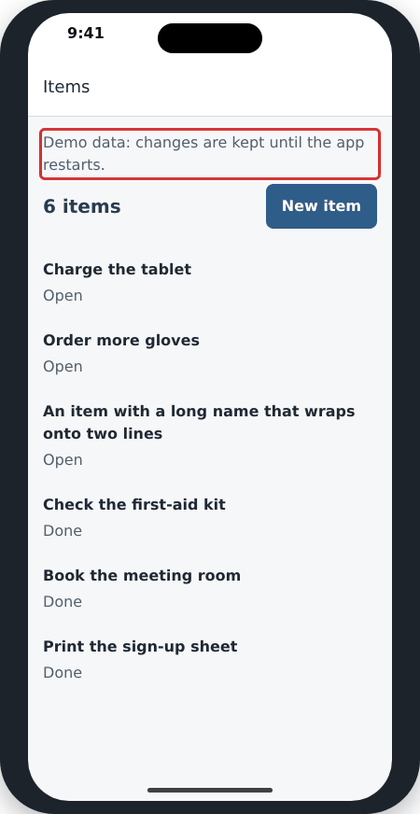
The starter as you download it, running on its own mock API (EXPO_PUBLIC_API_URL=demo): no server to start, on any phone. The note says so on the first screen. Web preview: on a phone the header and the list look native.
Types first, next to Item (3m). In a copy of the starter with the worked example's files (Copperline Couriers, brief 1): src/api/types.ts with DeliveryStatus as a union and DeliveryChanges made with Pick and Partial; then src/utils/deliveries.ts with two Record tables, the labels and nextSteps. Say: "Every union gets its tables. The example Item stays until Milestone 2, so every check stays green while you build." (The code is on the lesson page, Step 5; read it from there.)
The mock API's rules, with a test each (4m).src/mock-api/deliveries.ts (one branch per rule: 400 with the field, 409 for a skipped step or a finished delivery) and its line in handle.ts. Then the tests, plain function calls, no network:
npm test -- --watchAll=false src/mock-api/deliveries
PASS src/mock-api/deliveries.test.ts
✓ lists one rider's run sheet in the order of the drop-off windows
✓ moves a delivery one step at a time, never skipping one
✓ needs a photo to deliver and a reason to fail
✓ never changes a finished delivery (the rule that must not break)
Test Suites: 1 passed, 1 total
Tests: 4 passed, 4 total
Snapshots: 0 total
Ran all test suites matching src/mock-api/deliveries.
The kit's run is the lesson's card, line for line (times left out). Point at the last test's name: the worksheet's must-never-break rule, named so in the test. The same nextSteps table will decide which buttons the stop's screen offers.
A new status: tsc's to-do list (3m). "The client asks for 'returned'." Add it to the union only, then:
npx tsc --noEmit
src/utils/deliveries.ts:4:14 - error TS2741: Property 'returned' is missing in type '{ assigned: string; 'picked-up': string; delivered: string; failed: string; }' but required in type 'Record<DeliveryStatus, string>'.
4 export const deliveryStatusLabels: Record<DeliveryStatus, string> = {
~~~~~~~~~~~~~~~~~~~~
src/utils/deliveries.ts:13:14 - error TS2741: Property 'returned' is missing in type '{ assigned: "picked-up"[]; 'picked-up': ("delivered" | "failed")[]; delivered: never[]; failed: never[]; }' but required in type 'Record<DeliveryStatus, readonly DeliveryStatus[]>'.
13 export const nextSteps: Record<DeliveryStatus, readonly DeliveryStatus[]> = {
~~~~~~~~~
Found 2 errors in the same file, starting at: src/utils/deliveries.ts:4
Word for word the lesson's card. Not a mistake in the code: two decisions the new status needs (its words; which moves lead to it and from it). Undo it (Exercise 3 does it properly, with tests).
The production guard (3m).cp .env.example .env.local, then the store build's config on demo data:
APP_VARIANT=production npx expo config
env: load .env.local
env: export EXPO_PUBLIC_API_URL
Error: Error reading Expo config at ~/projects/copperline-couriers/app.config.ts:
A production build needs an https:// EXPO_PUBLIC_API_URL, not "demo".
Error: A production build needs an https:// EXPO_PUBLIC_API_URL, not "demo".
...
The guard from Lesson 9.1, working: a store app needs an https server every user's phone can reach. For this project the preview profile's demo data is the launch; the release checklist's production line says "not possible yet". (The kit ran it in its own folder; the path is the lesson's.)
Three mistakes to expect, and how to coach each
Screens before the plan and the types. The run sheet screen is the fun part. Coach: "What does your mock API answer for a skipped step? Show me the test." Types and rules first take an evening and save weeks (Lesson 10.1, Common Mistakes).
Copying the whole Shoreline Crew folder. Its ids, its com.example.shorelinecrew tests and its beach cleanups follow the learner into every milestone. Coach: "Copy patterns, file by file, when a milestone needs them" (session.ts for sign-in, logQueue.ts for an offline queue; the lesson's FAQ).
A brief that is a product for a team of five. Seven must-haves, three kinds of people, a live map. Coach with the size rules and the lesson's Exercise 2: "Is this a final project, or a product for a team of five?"
Guided lab
Folder:labs/module-25/l10_1-final-project (task sheet labs/module-25/l10_1-final-project/TASKS.md); your reference is solution/. New practice on Milestone 1 with a brief that is not one of the seven, Saltwick Kayak Hire (a harbor shop renting kayaks by the hour), inside a practice copy of the starter: the lab's src/ only adds src/rentals/ (types, Record tables, a computed isLate(), sample data with one awkward kayak name, the /rentals handler and its tests). Its fixtures/copperline/ holds the worked example you demonstrated.
Setup (3m, partly during the brief choice): a practice copy of the starter next to shoreline (cp -R final-project-kit/starter ~/projects/saltwick-practice, npm ci, npx expo customize tsconfig.json), then the lab's starter/src/ copied over its src/. Learners who already did npm ci at home copy that folder instead.
Run it as shipped (2m):npx tsc --noEmit lists the two tables that have not learned 'cancelled':
src/rentals/labels.ts:11:14 - error TS2741: Property 'cancelled' is missing in type '{ booked: string; out: string; returned: string; }' but required in type 'Record<RentalStatus, string>'.
src/rentals/labels.ts:18:14 - error TS2741: Property 'cancelled' is missing in type '{ booked: "out"[]; out: "returned"[]; returned: never[]; }' but required in type 'Record<RentalStatus, readonly RentalStatus[]>'.
Found 2 errors in the same file, starting at: src/rentals/labels.ts:11
and npm test -- --watchAll=false src/rentals fails everywhere but one test (rentalMinutes, already written); the first message is Task 1's:
TODO 1: is a out rental late at 2030-04-02T12:05:00.000Z?
...
Tests: 8 failed, 1 passed, 9 total
Task 1 in pairs (10m): decide the words and the moves of 'cancelled' (can a booking that is out be cancelled? is it finished?), then isLate(): computed from the status and the return time, never stored. Circulate for learners who silence tsc with Partial<Record<...>>: "then which buttons does a cancelled rental get?"
Debrief (3m): "Which tool told you where the new status had to go?" (tsc, because the tables are Records). "Why is isLate a function and not a field?" (it changes with the clock; a stored flag would be wrong a minute later).
Fast finishers and home: Task 2 (register /rentals in handle.ts, the overlap rule only the server can check: a 409 under the start field) and Task 3 (one step at a time; a finished rental never changes, the must-never-break test). Expected when all three are done:
PASS src/rentals/labels.test.ts
PASS src/rentals/rentals.test.ts
Tests: 9 passed, 9 total
Start the lesson project
The lesson project is Your App, Milestone 1, seven steps. In the room: Step 2 (the first pass of the plan), Step 3 (the starter in its own folder, green) and Step 4 (make it yours). Steps 5 to 7 go home: they are Milestone 1.
Step 2 (8m): worksheet sections 2 (types: a rough list), 4 (the src/app tree), 7 (the mock API's routes and rules, and the ONE rule that must never break), 8 (where each piece of data lives, what offline looks like) and 9 (each permission, its moment and its "no"). "Later: Milestone N" in the rest. Read three must-never-break rules aloud: they are the best test of whether a brief is understood.
Step 3 (7m): the starter copied next to (never inside) shoreline, renamed, npm ci, cp .env.example .env.local, npx expo start; press w: "Demo data" on the first screen. Then in a second terminal the three checks the learner will run after every step: npx tsc --noEmit and npx expo lint print nothing; npm test -- --watchAll=false ends with Tests: 22 passed, 22 total. Done in the room = those three on every laptop.
Step 4 (5m): the three variants' names, the ids (a domain the client owns, or com.example with a "to do" on the release checklist, as Copperline does), slug, scheme, package.json's name, and app.config.test.ts's expected names, which fails until they match. All three checks green again.
A rule only the server can check, answered by the mock API (409) and shown under the field it is about. Your brief's rules work the same way: written once in src/mock-api, tested in Jest, used by demo mode.
Checks for understanding
Ask these out loud during the demo and the lab:
What do you write first in Milestone 1? Answer: the brief's types in src/api/types.ts, next to the example Item (the lesson's quiz Q1).
Where does a rule like "never skip a step" live? Answer: in the mock API (a 409) with a test, using the same table the screen uses for its buttons.
What does EXPO_PUBLIC_API_URL=demo mean for a tester on another network? Answer: it still works: the data comes from the app's own mock API (but Metro still needs to reach the computer in development).
Which launch costs nothing? Answer: an internal-distribution preview build (free Expo account) or a recording of the main journey on a real phone.
Workbook self-check, items Q1 to Q6.
Answers: Q1B) Two Record tables keyed by RentalStatus have no entry for cancelled: each is a decision to make (its words, its moves); Q2C) The kayak is not already booked for part of that time; Q3The starter's app.config.ts refuses a production build unless EXPO_PUBLIC_API_URL is an https:// server: demo data cannot ship to a store. The launch uses the preview profile (demo data): an EAS internal preview build or a recording on a real phone; the release checklist's production line says "not possible yet".; Q4A) Every screen in the worksheet exists and is reachable, the main list and detail show the (mock) data, and the example Item is deleted; Q5D) A free EAS internal-distribution preview build on testers' phones (or a recorded demo in Expo Go on a real phone), with a README and a peer review given and received; Q6A) In each phone's memory, in the mock API: two phones never see each other's changes, and it starts again when the app restarts. Full set with explanations in the Answer Key.
Differentiation
Support: learners stuck between briefs pick Copperline Couriers: it is the worked example, so every Milestone 1 step has its code on the lesson page. Learners whose starter will not install pair on one laptop for the demo and the lab and finish Step 3 at home with the troubleshooting table above.
Stretch: Lab 10.1 Tasks 2 and 3 and its stretch ("lost at sea"); the lesson's Exercise 3 ("returned" end to end) on the worked example; the Going Further idea (a small Node server calling the same handle()), planned in the worksheet before it is written.
10.2
Working on Real Mobile Projects
50 min
Objectives (from the lesson page)
Estimate a mobile feature as a range, from a task breakdown that includes the work only phones add (two platforms, permissions, offline, builds, store review)
Choose between Expo Go, a development build, Continuous Native Generation and committed native folders, and explain when a local native module (Expo Modules API) is worth it
Work in a team with short branches, a phone-aware pull request template, CI and a release train that plans for store review
Keep an Expo app current: read npx expo install --check, npx expo-doctor and npm outdated, repair version drift with npx expo install --fix, and upgrade one SDK at a time
Write a learning plan for the months after the course, with your final project at its center
Timing in the room
10m
Frame: from a course to a codebase; the tide table; the ladder; release trains; the ground that moves
15m
Live demo: a range, the health check, the drift and its repair, the ladder and the train
15m
Guided lab: l10_2-working-on-real-mobile-projects, Task 1 in pairs
10m
Start the lesson project: Step 3 on the learner's own brief
Mental model to say
From the lesson: "A tide table does not promise where the water will be at 10:14. It gives a range, and the people who use it plan for the low end and the high end: when to leave the car, when the rocks are safe. An estimate is a tide table for work. It is useful exactly because it admits a range, and it gets better each season as you compare the forecast with the water you actually saw." Then connect it to the time log from Lesson 10.1: "your estimate next to each milestone, the real hours after: that is how your forecasts get better."
Then the field kit, once more (Lesson 9.2's picture, extended): Expo Go is the course's shared kit; a development build is your own kit packed from a list (package.json and app.config.ts); CNG means the kit is repacked from the list every time, so the list is the truth; a local native module is a tool you made and added to the list; committed native folders mean you stopped using the list.
Live demo (you type, they follow)
Shoreline Crew's code does not change today. The health-check outputs depend on the network and the day (Expo's and npm's current versions), so they are the lesson's own cards; the estimate is a real Node run.
A range, not a number (4m). Put the lesson's table for the check-in photo on the screen (example hours, for illustration): modal 2 / 3 / 6, sending 1 / 2 / 4, tests 1 / 2 / 3, two phones 1 / 2 / 4, privacy 0.5 / 1 / 2. Totals 5.5, 10, 19. Then the three-point formula, in Node:
node -e "console.log((5.5 + 4 * 10 + 19) / 6)"
10.75
"What do I tell the client? Not 10.75 hours." Write the lesson's sentence: about two working days for the app, possibly three, once the server can accept the photo; the server part is not included, and the store privacy answers change first. Then point at the seven rows that are not the happy path: that is where the time goes.
The health check on Shoreline Crew (4m). In shoreline-crew (the code Lesson 9.4 left; it does not change today):
npx expo install --check
env: load .env.local
env: export EXPO_PUBLIC_API_URL
Dependencies are up to date
The lesson's card (the check asks Expo's servers for the current version table, so on the day you teach it may list patch releases published since the course was checked: then it asks "Fix dependencies?"; answer n and use it as the lesson's point, live). Then show the lesson's cards for npx expo-doctor (20/20 checks passed) and npm outdated (both need the network: your list will be longer or shorter as packages release). Read three rows together: TypeScript 7.0, AsyncStorage 3, Gesture Handler 3.5. "Latest" does not know about Expo.
The drift and its repair (4m). The teammate's mistake, from the lesson's cards (do it live only on a branch, with a good connection: it installs from npm): npm install react-native-gesture-handler@latest, then npx expo install --check answering n:
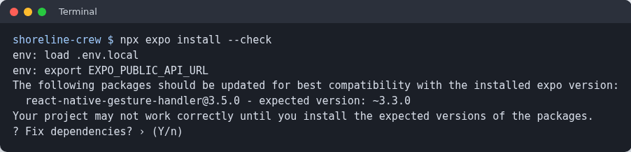
One package moved past the SDK's pin, caught on your computer before a phone ever loads it. Answering Y here does what npx expo install --fix does.
env: load .env.local
env: export EXPO_PUBLIC_API_URL
The following packages should be updated for best compatibility with the installed expo version:
react-native-gesture-handler@3.5.0 - expected version: ~3.3.0
Your project may not work correctly until you install the expected versions of the packages.
✔ Fix dependencies? … no
Found outdated dependencies
The repair is npx expo install --fix, which puts package.json and the lockfile back exactly (git status clean). In CI the same check asks nothing and exits 1. Never npm audit fix --force.
The ladder and the train (3m). Draw the ladder: Expo Go → development build → Continuous Native Generation → committed native folders. "Shoreline Crew is on the third step without noticing." Then the release train on the board: merge → cut-off → preview build to testers → store build and review → gradual rollout → watch. JavaScript-only fixes between trains as updates; native changes wait. Store review times and rollout steps are store policy: say "check the current help pages", as the lesson does.
Three mistakes to expect, and how to coach each
Estimating only the happy path. "Two hours: it's one button." Coach with the eight rows of the lesson's table as a checklist; Lab 10.2's forgotten() does exactly that.
Installing a native package at "latest".npm install picks Latest; the SDK expects its own version. Coach: "Native packages through npx expo install, always; repair with --fix." And never npm audit fix --force (the audit counts in npm's output invite it).
Promising a fix "today" that needs a build. A permission sentence, a config plugin or a new native package cannot travel as an update. Coach with the pull request template's question: native change or not?
Guided lab
Folder:labs/module-25/l10_2-working-on-real-mobile-projects/starter (task sheet labs/module-25/l10_2-working-on-real-mobile-projects/TASKS.md), plain TypeScript in the shared lab install, npm test and npm run check. Three of the lesson's habits as small functions with tests: a three-point estimate with the work phones add as a Record checklist, npm outdated rows sorted into pinned, update and later (the lesson's own card and SDK 58's version table), and (stretch) which release train a change catches.
Run it as shipped (2m):npm test fails nine of ten tests; the first message is Task 1's:
Error: TODO 1: the three-point estimate of {"optimistic":2,"likely":3,"pessimistic":6}
Task 1 in pairs (9m):threePoint(), total(), forgotten() and sayRange(). The tests use the lesson's example numbers: 5.5, 10 and 19, "About 11 hours, between 5.5 and 19, once the server accepts photos." Ask: "which four kinds of work did the lesson's example leave out?" (forgotten() answers: server, permissions, offline, shipping).
Debrief (4m): "Why is TypeScript 7.0.2 'later' and Gesture Handler 3.5.0 'pinned'?" (Task 2: the SDK's table lists one and not the other). Expected when everything is done:
ℹ tests 10
ℹ pass 10
ℹ fail 0
Start the lesson project
The lesson project is A Maintenance and Team Kit, six steps. In the room: Step 3 on each learner's own brief, just written (10 minutes): one must-have not built yet, its parts from the eight-row checklist, three numbers each, the total range and the sentence they would say to the client. Two learners read their sentence aloud; the room asks "what does it depend on?"
Goes home: Steps 1 and 2 on Shoreline Crew (the health check, and the drift drill on a branch drift-drill: npm install react-native-gesture-handler@latest, --check answering n, npx expo-doctor, npx expo install --fix, git status clean, back to the main branch, delete the branch) with a good connection; Steps 4 to 6 in the final project (the decision record, the pull request template and the first reviewed pull request with green CI, the README's Maintenance section and the learning plan).
Say: "Step 5's pull request is the first thing your peer reviewer sees of your project: ask them for it this week."
expo-doctor runs about twenty project checks; this time one fails, and it names the same package and the command that fixes it.
Checks for understanding
Ask these out loud during the demo and the lab:
What does the three-point formula's gap tell the client? Answer: where the uncertainty lives; you discuss that, not the decimals.
npm outdated says Latest 3.5.0 for gesture handler. What decides the version? Answer: the SDK: npx expo install picks it.
Which change waits for the next train? Answer: anything native: a new native package, a config plugin, a permission, app.config.ts.
How often does an Expo app need an SDK upgrade? Answer: at least once a year, one SDK at a time (Expo releases several a year; Expo Go supports only the newest).
Workbook self-check, items Q7 to Q12.
Answers: Q7A) About two working days for the app, possibly three, once the server can accept the photo; the server part is not included and the store privacy answers change first; Q8D) It prints the mismatch and exits with code 1: the pull request turns red and names the package; Q9C) Leave it: SDK 58 pins TypeScript 6.0 (7.0 breaks npx expo lint, Lesson 1.3); "Latest" does not know about Expo, so wait until an SDK moves; Q10C) Continuous Native Generation: android/ and ios/ are generated from app.config.ts and plugins (by EAS Build), never edited or committed; Q11B) On the next train: a permission sentence is native config, so it needs a new build, review and rollout; Q12It turns the decision into a condition you check (for example "when we add a native package Expo Go does not include"), so the decision is reopened when the facts change instead of being defended or forgotten.. Full set with explanations in the Answer Key.
Differentiation
Support: learners for whom the estimate is abstract do Step 3 on the lesson's own example (the check-in photo) first, then on their brief. Learners with a slow connection skip the drift drill tonight and read the lesson's cards; the drill can wait for a good network.
Stretch: Lab 10.2 Task 3 (release trains); the lesson's Exercise 3 (the version checks in the final project's CI, then a drift pushed on a branch: the run turns red); the Going Further release train for the final project's last milestones.
Final Project Plan
2:30
Final Project Plan: Dates, Reviewers, the Showcase
20 min
Sequence
Milestone dates (8m). Each learner writes an estimate next to each milestone's typical hours in worksheet section 16 and a date for each milestone in their real calendar; the evidence date is two days before Session 26. Say: "Thirty hours is four to six weeks of a few sessions each, not one heroic weekend."
Reviewer pairs (5m). Pair learners ACROSS briefs (a Copperline author reviews a Pocket Pantry, not another Copperline): the review is about 90 minutes both ways (peer-review.md), in Milestone 7, and it needs the reviewer's own phone for the preview build or the recording. Write the pairs on the board; each pair agrees a date now.
The evidence package (4m). What each learner sends by the evidence date: the repository link (with a green CI run on the latest commit), the worksheet with its time log, the launch (a preview build link or a recording), the review received with an answer to every point (peer-review-received.md in the repository), and a self-scored rubric.md. Two days before Session 26 they run the evidence check, labs/module-26/showcase-preflight/evidence_check.mjs, on their project: it lists the evidence still missing (it never scores).
Showcase slots (3m). Five minutes of demo and two of questions per learner, in two rounds; write the order on the board and in the workbook. Explain the five-minute shape now (the client and the out of scope, one must-have journey on a phone, one decision in the code, the checks, the time log in a sentence) so learners prepare it in Milestone 7.
If Session 26 follows within a week
The project cannot be finished in a week (Lesson 10.1: about 30 more hours, usually 25 to 35, over four to six weeks). Run Session 26 as a progress showcase (Milestones 1 to 3, the same five-minute format with "what's next" stretched) and the written final assessment as planned, then set the final evidence date four to six weeks later and score the rubric from that evidence. Say so today, and write both dates in the workbook.
Closing
Exit ticket (4 minutes)
Your brief, and the one thing it must do with no signal. Look for: a specific person and a specific action ("a rider marks a stop delivered"), not a feature list.
The rule of your app that must never break, and where its test lives. Look for: a rule the server (mock API) keeps, in src/mock-api/…test.ts.
One feature of your brief as a range with what it depends on. Look for: two numbers and a dependency ("once the camera permission path is built").
Homework (about 2 to 3 hours)
Lesson 10.1, Steps 5 to 7 = Milestone 1: the brief's types next to Item with every union's Record tables; 6 to 12 sample records per type with one awkward record; the mock API's rules, one file per resource, a test per rule including the must-never-break rule; the three checks green; git init -b main, the first commit, push to an empty GitHub repository, a green Actions run; the first line of the time log.
Lesson 10.1: Exercises 1 and 2 (3 is a stretch); the Quick Quiz (answers in the Answer Key); the journal entry (the Lesson 1.1 sentence written again).
Lesson 10.2: Steps 1 and 2 on Shoreline Crew, on a branch, with a good connection; Steps 4 to 6 in the final project (decision record, pull request template and a reviewed pull request, Maintenance section and learning plan); Exercises 1 and 2 (3 is a stretch); the Quick Quiz; the final journal entry.
Labs: Lab 10.1 Tasks 2 and 3 in the practice copy (then delete it); Lab 10.2 Tasks 2 and 3.
Then, by the evidence date: Milestones 2 to 7, one at a time, each ending with a green CI run and a time log line; the peer review given and received.
Bring list for Session 26
The evidence package, sent by the evidence date (two days before): repository link, worksheet with time log, the launch (preview build link or recording), the review received with answers, a self-scored rubric, the evidence check's last line.
A phone with the app on it (the preview build or Expo Go) and the recording as a backup; a laptop with the project, in case the network fails.
A five-minute demo prepared: the client and the out of scope, one must-have journey, one decision in the code, the checks, the time log in a sentence.
Session 26 also has the written final assessment (closed book, 35 minutes, the whole course): the workbooks' self-checks of Sessions 18 to 26 are the best review.
If You Run Long or Short
Running long: what to protect and what to cut first
Protect: a brief and a charter for everyone; the starter's three checks on every laptop; the final project plan's dates.
Cut first (saves 5m): the 10.2 ladder-and-train step: the lesson's tables read well alone.
Cut second (saves 15m): Lab 10.2 in the room: send it home whole, keep the Step 3 estimate.
Cut third (saves 10m): the 10.1 production-guard step and the drift step: point at the lesson's cards.
Running short: what to add
The lesson's Exercise 1 live on the worked example: delete the example's types, npx tsc --noEmit, and read the summary table as Milestone 2's to-do list (the Answer Key has the output).
Peer-review a charter: pairs swap worksheets and use peer-review.md part 1 (read the plan first) on section 0 only.
Lab 10.1 Task 2 together: the overlap rule, a 409 under the start field, and why only the server can keep it.
Instructor Kit · Facilitator Guide
Session 26: Final Project Showcase and Final Assessment
How to run the last session: the evidence check results and a pre-flight of every launch, two rounds of five-minute demos of the final projects on real phones (or their recordings), the written final assessment on the whole course (27 points, pass mark 19), and a short course retrospective. Scoring happens afterwards with Lesson 10.1's rubric.
Showcase + final assessment3 hrs sessionPart 3 reviewSession 26 of 26 · Part 3
How to Use This Guide
Session 26 teaches no new lesson. It closes Part 3 and the course: the final projects are shown (the showcase), the whole course is assessed in writing, and the room looks back. The rubric scoring happens after the session, from the evidence each learner sent, the demo and your notes.
Everything you score from comes from Lesson 10.1's final-project kit (downloads/final-project-kit/): the rubric (rubric.md, ten rows, complete = no row at "not yet", nothing in it needs money), the worksheet, the peer review. final-assessment.html (final project section) has the timeline, scoring notes per rubric row, the run-sheet this agenda follows, the scoring sheet, and the written final assessment with its key: 24 items, 27 points, pass mark: 19 (19 of 27, 70 %).
Course complete = the final project complete under Lesson 10.1's rubric AND the written final assessment passed. The Part 1 and Part 2 results (their own projects and assessments, final-assessment.html) are the results when those parts run on their own.
No phone was used to make this kit. The demos are the learners' own: on their phones (a preview build or Expo Go), from their recordings, or in the web preview for an app without device features. Never ask anyone to log in to an Expo, Apple or Google account in front of the room; the projector shows a phone through the learner's own screen mirroring or their recording.
The evidence check (labs/module-26/showcase-preflight/evidence_check.mjs) reads a project's files and lists the evidence the rubric asks for that is missing; learners run it two days before, and you run it on the projects you can clone. It is never a score.
The #1 risk of Session 26: demos that cannot reach a phone
Twelve demos depend on twelve phones, a projector and a network. A phone that cannot reach the laptop's Metro, a preview build link that needs a login, or a mirroring app that will not connect can eat a slot and the next. Before: every learner sends a recording of the main journey with the evidence package (it is also one of the free launches); preview builds installed on the learner's phone the day before, with demo data (no server needed). In the room: each launch is opened once during the pre-flight; anything that fails switches to the recording, no debugging at the front. After: score from the evidence, never from the luck of the network.
Before the Session
☐ Two days before: collect each learner's evidence package (repository access, worksheet with time log, the launch: a preview build link or a recording, the review received with answers in peer-review-received.md, a self-scored rubric.md) and the last line of node labs/module-26/showcase-preflight/evidence_check.mjs ~/projects/your-app. Run the check yourself on every project you can clone; open every recording.
☐ Run the kit check once:python3 labs/check_labs.py module-26 (4 runs, about a minute: the evidence check says NOT READY on the starter as downloaded and READY FOR THE SHOWCASE on a finished project's evidence, and that project's rules pass their tests and the type check).
☐ Print: one scoring sheet per learner and the written final assessment's learner pages (both in final-assessment.html, final project section; the key stays with you); two-stars-and-a-wish slips (about two per learner per demo they watch).
☐ The room: the demo order on the board in two rounds; a timekeeper per round (a learner from the other round); the projector with screen mirroring tested with your own phone; every recording downloaded to the projector machine as a backup.
☐ The retrospective: ask learners to bring their journal, with the Lesson 1.1 entry and the sentence they wrote then.
What the evidence check prints (real runs)
On the final-project starter exactly as downloaded (a learner who never left the starter), the FIX lines and the verdict:
FIX [row 9] package.json still says "name": "starter": give the project its own name
FIX [row 9] app.config.ts: the variants are still called Starter Dev, Starter Preview and Starter
FIX [row 9] app.config.ts: the app ids are still com.example.starter: use a domain your client owns
FIX [row 9] app.config.ts: slug or scheme is still 'starter'
FIX [row 9] app.config.test.ts still expects the starter's names and ids: it fails once they are yours
FIX [row 1] no worksheet.md next to package.json: copy the kit's worksheet into the project and keep it in Git
FIX [row 3] src/api/types.ts still has the example Item (Milestone 2 deletes it)
FIX [row 8] only the starter's own test files: your mock API's rules need theirs (Milestone 1)
FIX [row 10] README.md is still the starter's: what the app is, how to run it, your launch
4 passed, 9 to fix, 3 to check
NOT READY: fix the FIX lines above, then run this check again
On a finished project's evidence (the kit's fixture, Saltwick Kayak Hire: Lab 10.1's brief, built, with the worksheet filled where the check looks, its own names and ids, Item deleted, its own tests, the team kit of Lesson 10.2 and the review received), the last lines:
23 passed, 0 to fix, 0 to check
READY FOR THE SHOWCASE
The check reads files only: no network, no install, nothing changed. It cannot see the phone, the CI run, the recording or the demo; those are yours to look at.
Session 26 Agenda (3 hours)
Clock
Minutes
Segment
What happens
0:00
10
Welcome and the run-sheet
The order of demos on the board, a timekeeper per round, scoring sheets and two-stars-and-a-wish slips out, the network plan.
0:10
15
Evidence and pre-flight
The evidence check results (run two days before) read out; each launch (preview build or recording) opened once on the projector; backups ready.
0:25
45
Showcase, round 1
Six slots of 7 minutes (5 demo, 2 questions), 3 minutes spare; peers write two stars and a wish.
1:10
10
Break
Scoring sheets to the instructor; round 2 sets up its phones and recordings.
1:20
45
Showcase, round 2
Six more slots in the same format; your notes per demo on the scoring sheets.
2:05
35
Written final assessment
Closed book, on paper: 24 items on the whole course, 27 points, pass mark 19.
2:40
10
Course retrospective
The Lesson 1.1 journal entry read again; what each learner can do now; where to go next.
2:50
10
Wrap-up
Course feedback, the scoring and resubmission dates, thanks.
Total
180
Ends at 3:00.
In the room. Two rounds of six demos (seven minutes each: five of demo, two of questions); the written final assessment (35 minutes, closed book, 27 points, pass mark 19); a short retrospective. For other class sizes, the run-sheet in final-assessment.html has the formats (three rounds of five minutes for 13 to 18 learners, a gallery for 19 or more).
Goes home (about 2 to 3 hours). Nothing new to learn. Within the resubmission window (two weeks after the scores): the "not yet" rows of the rubric, one commit link per row; the peer review points still open. The final journal entry, if not written in Lesson 10.2. Then the learning plan from Lesson 10.2.
Protect, in this order: the written final assessment's full 35 minutes; a demo for every learner (a recording counts); the retrospective's last five minutes. Cut first: the questions after each demo (to cards), then the pre-flight's link checks (to the break).
Session Plan
0:00
Welcome and the Run-Sheet
10 min
Sequence
Say: "Today you show what you built for your client, you take the written final, and we look back at the course. The scores come later, from your evidence: today nobody is scored on how well the Wi-Fi behaves."
The order of demos on the board; a timekeeper per round (cards at 5:00 and 7:00); two-stars-and-a-wish slips out (two things that work well, one wish, signed); scoring sheets on your clipboard.
The network plan: preview builds and Expo Go on demo data need no server; anything that does not connect in 30 seconds switches to the recording.
0:10
Evidence and Pre-flight
15 min
Sequence
Read out the evidence check results you ran two days before: READY FOR THE SHOWCASE, READY WITH NOTES (with the learner's sentence for each CHECK line), or NOT READY with the FIX lines still open. A NOT READY project still presents: its missing evidence goes on its scoring sheet.
Open each launch once on the projector (mirroring or the recording); write the backups next to the order.
Remind the room what the five minutes hold: the client and the out of scope; one must-have journey on a phone; one decision in the code; the checks, the time log in a sentence, what's next.
0:25
Showcase, Round 1 and Round 2
45 + 45 min
Running the showcase
Each slot (7 minutes): 0–1 the client, the people, the one thing it must do with no signal, the out of scope; 1–3 the app on a phone: one must-have journey, an offline or permission moment, an empty or error state; 3–4 one decision in the code (a type and its Record table, the must-never-break rule and its test); 4–5 the checks, the largest text or a screen reader moment, the time log; 5–7 questions.
Your notes: on the scoring sheet, per row, what you SAW ("airplane mode: the stop stayed marked, sent once"); scoring itself waits for the evidence. The question bank in final-assessment.html has one question per rubric area.
Peers: two stars and a wish per demo they watch, handed to the presenter at the break and the end (feedback, not scores).
Break at 1:10: scoring sheets to the instructor; round 2 sets up its phones and recordings.
Watch-outs
A phone that will not connect. 30 seconds, then the recording; the slot does not grow.
A demo of the starter's example screens. It happens when Milestone 2 was skipped: note it on the sheet (rows 2 and 3); the learner finishes in the resubmission window.
"I could not test on an iPhone." Fine, and honest: one platform is enough (Lesson 10.1's FAQ); the worksheet says which.
Store talk. Nobody needs a store listing or a paid account; "not possible yet" on the release checklist is a pass.
2:05
Written Final Assessment
35 min
Administering it
From final-assessment.html, final project section: the learner pages (24 items, F1 to F8 Part 1, F9 to F16 Part 2, F17 to F24 Part 3), printed; the key stays with you. Closed book, no laptops, no phones (collect them after the last demo).
Read the instructions aloud (they are printed above the items): multiple choice 1 point, short answers 2 points, 27 points in all; pass mark: 19 (19 of 27, 70 %). Every output shown is real: the lessons' own outputs and a run of the final-project starter.
Score within the week with the key; short answers: 2 points for both halves of the model answer, 1 for one half. Below the pass mark: go through the wrong items with the learner and offer a parallel retake (the same lessons, other items).
2:40
Course Retrospective and Wrap-up
20 min
Sequence
Retrospective (10m). Learners read their Lesson 1.1 journal entry and the sentence they wrote then, and write it again as they can honestly say it today (Lesson 10.2's last prompt). Three volunteers read theirs. Then the lesson's "Look how far you've come" table on the screen: Modules 1 to 10, one line each.
Where to go next (part of the 10). Point at Lesson 10.2's table (one direction for the next few months, not five) and the portfolio advice: the repository with its CI badge and worksheet, a two-minute recording, a story about one decision and one bug.
Wrap-up (10m). Course feedback; the dates: scores within a week, the resubmission window two weeks after; how results are recorded (final project complete under the rubric AND the written final passed). Thank them.
Closing
Homework (about 2 to 3 hours)
Within the resubmission window (two weeks after the scores): each "not yet" row of the rubric fixed, with one commit link per row; any peer review point still open answered.
The final journal entry (Lesson 10.2's prompt), if not written yet, and the learning plan: one direction, one first project, one habit kept from the course.
Optional: the lesson's Going Further for 10.2 (a release train for the project's last milestones), and a second tester on their own phone (a "strong" in row 10).
Self-check: the Part 3 review
Twelve items on Modules 7 to 10 in the workbook, for learners to do before the written final (at home in the days before, or in the pre-flight if the room is ready early).
Answers: Q1C) A spring overshoots its target: the tally showed totals that were never true (49, then 41). Numbers and progress get withTiming; Q2A) The callbacks are properties of one config object with Gesture Handler 3's names: onActivate and onDeactivate; fix the first error and the second goes; Q3B) The web player: install @lottiefiles/dotlottie-react with npx expo install; Q4D) A boolean: aria-hidden on its own (it means true) or aria-hidden={false}; Q5C) Expo SDK 58 replaces fetch with a phone-only one, and MSW can only answer Node's; Q6A) A measurement: write it down, change one thing (removing packages the app never uses), export again and compare; Q7D) One copy of each native module: an overrides entry in package.json tells npm which expo-server the other package gets; Q8B) When it needs a native package Expo Go does not contain, its own name, icon and ids on the phone, or a config plugin's settings; Q9C) The runtime version is a fingerprint of the native side: a native change gives a new runtime version, so it needs a new build; updates reach only builds with the same fingerprint; Q10The app ids (permanent once a store has seen them): the test makes an id change a deliberate decision. Change the expected names and ids in app.config.test.ts in the same commit, once, before the first store build.; Q11B) Evidence the rubric asks for is missing: fix every FIX line and run the check again; it lists evidence, it never scores; Q12With a fix and its commit (the row wraps; a screen test at the largest font scale), or with a sentence on why you are leaving it. Every point of the review gets an answer (rubric row 10).. Full set with explanations in the Answer Key.
If You Run Long or Short
Running long: what to protect and what to cut first
Protect: the written final's 35 minutes; every learner's demo; the retrospective's sentence.
Cut first: the questions after each demo (to cards). Cut second: the pre-flight's link checks (do them at the break). Cut third: the "where to go next" talk (point at Lesson 10.2).
Running short: what to add
Score one project together, live, from its evidence: the rubric row by row with the scoring notes (with the learner's permission).
The Part 3 self-check as a quiz show before the written final: one item per learner, the room votes.
React Native & Expo: Build and Ship a Mobile App · Facilitator Guide